“Sizin ürünü piyasaya sürelim mi?” diye sordu Jobs.
Kaliforniya güneşi camlı, geniş balkon kapılarına vurdu. İçeri sızan solgun sonbahar güneşinin ışığı valizler, giysi çantaları, sırt çantaları ve gitar kutularının arasından kıvrılarak ilerledi. Bavulların sahipleri, taştan bir şöminenin karşısına genişçe bir hilal biçiminde dizilmiş düz arkalıklı iskemlelere kurulmuştu. Altmış yaşın üzerindekilerin çoğunun yüzünü, ilkgençliklerinin sonunda ve otuzlarının başında bulunanların yaşını gizleyen o boşluk kaplamıştı. Odadakilerin yaklaşık üçte biri kadındı. Çoğu blucin, tişört, kolsuz gömlek ve spor ayakkabısı gibi, cinsiyet farkını kaldıran giysiler giymişti. Aralarında tek tük şiş göbekliler, yer yer saçlarına ak düşmüş olanlar ve hayli fazla sayıda gözlüklü de vardı. Kimisi tıraş olmamış kimisinin de uykusuzluktan gözleri şişmişti. Çok sayıda mavi siperlikli polyester beyzbol şapkasının üzerinde bir kenarı ısırılmış bir elma resmi görünüyor ve siyah harflerle MACINTOSH BİRİMİ yazısı okunuyordu.
Grubun önündeki çelik masanın kenarına yirmili yaşlarının sonlarında, uzun boylu, ince yapılı biri ilişmişti. Üzerinde ekose gömlek, ağartılmış bir blucin ve yıpranmış bir spor ayakkabısı vardı. Sol bileğine ince bir dijital saat takmıştı. Uzun zarif parmaklarının tırnakları etlerine kadar kemirilmiş, parlak siyah saçlarına özenle şekil verilmiş ve favorileri gayet düzgün bir şekilde kesilmişti. Sanki kontaklensleri batıyormuş gibi koyu kahverengi gözlerini kırpıştırmadan duramıyordu. İnce kemikli burnu solgun çehresini tam ortadan bölüyordu. Yüzünün sol yanından yumuşak ve afacan bir hava akarken, sağ tarafında bir terslik, acımasızlık hissediliyordu. Bu adam Apple Bilgisayar’ın başkanı ve kurucularından biri, Macintosh Birimi’ninse genel müdürü Steven Jobs’tu.
Jobs’un konuşmasını bekleyen grup Apple’ın en genç biriminde çalışıyordu. Kaliforniya Cupertino’daki şirket merkezinden, Pasifik kıyısında hafta sonu tatilcileri için çamlık bir tepeye inşa edilmiş bu tesise iki günlüğüne getirilmişlerdi. Ahşap bungalovlarda kalıyorlardı. Rüzgâr ve serpintinin etkisiyle rengi iyice ağarmış olan ahşap yapılar, kum tepecikleri ile çimenlerin arasına dağılmıştı. Pırıl pırıl sabah aydınlığında bir araya toplanan grup, genç bilgisayar şirketlerine özgü gevşek yapısına yine kavuşmuştu. İçlerinde sekreterlerle laboratuvar teknisyenleri de vardı. Birkaç da donanım ve yazılım mühendisi. Diğerleri pazarlama, imalat, finans ve personel alanında çalışıyordu. Bir çift, kullanım kılavuzlarını kaleme alıyordu. Aralarında Apple’a daha yeni girmiş olup çalışma arkadaşlarıyla ilk kez karşılaşanlar da vardı. Kimisi de Apple II ve Apple III bilgisayarlarını üreten Kişisel Bilgisayar Sistemleri adlı birimden transfer olmuştu. Bir ikisi daha önce, Apple’ın şirketlere satmayı planladığı Lisa adlı bir cihaz çıkarmaya hazırlanan Kişisel Ofis Sistemleri Birimi’nde çalışmıştı. Zaman zaman Mac de denen Macintosh Birimi’nin resmiyet taşıyan bir adının olmaması, onun doğuşundaki belirsizliği yansıtıyordu. Zira kod adı Mac olan bilgisayar, bir bakıma şirketin ortada kalmış sahipsiz yavrusu konumundaydı.
Jobs sakin ve yavaş bir tonda konuşmaya başladı. “Apple’ın kaymak tabakası burada,” dedi. “En iyi adamlarımız burada, öyleyse çoğumuzun şimdiye kadar hiç yapmadığı bir işi başarmalıyız: Şu âna kadar hiç ürün piyasaya çıkarmadık.” Bir şövaleye doğru hızlı bir adım atarak, kocaman krem rengi kâğıtlara çocuksu ifadelerle yazılmış birtakım basit sloganlar gösterdi ve bunları bir vaaz metni gibi okumaya başladı: “Piyasaya Çıkana Kadar Tamamlanmış Sayılmaz”; “Zilyonlarca minik ayrıntı var üzerinde çalışmamız gereken. Altı ay önce bunu yapabileceğimize kimse inanmıyordu. Ama şimdi inanıyorlar. Yüklü miktarda Lisa satacaklarını biliyoruz, ama Apple’ın geleceği Mac’tedir.” Kâğıtlardan birini rulo yapıp onunla diğer bir sloganı işaret etti: “Taviz Vermeyin”. Bilgisayarın planlanan piyasaya çıkış tarihini belirttikten sonra, “Ortaya yanlış bir şey çıkartmaktansa, süreyi uzatmak evladır,” dedi. Bir an durup ardından ekledi: “Ama uzatmayacağız.” Sonra başka bir kâğıda geçti: “Yolculuğun Kendisi Başlı Başına Ödüldür” ve şöyle bir öngörüde bulundu: “Beş yıl sonra geriye dönüp baktığınızda, ‘Ah, eski günler ne güzeldi!’ diyeceksiniz. Biliyorsunuz ki,” diye devam etti sesinin tonunu yarım oktav yükselterek, “Apple’da çalışabileceğiniz en güzel yer burası. Aynen Apple’ın üç yıl önceki hali gibi. Bu saflığı koruyabilir ve doğru insanları işe alabilirsek, burası çalışmak için harikulade bir yer olmaya devam edecek.”
Jobs masanın üzerinden ağzı açık bir naylon torba alıp dizinin hizasında sallamaya başladıktan sonra, ne yanıt alacağını bilen birinin edasıyla sordu: “Doğru düzgün bir şey görmek ister misiniz?” Plastik torbadan masaüstü ajandasına benzer bir nesne çıktı. Üzeri kahverengi bir malzemeyle kaplı olan nesne açılınca, bunun bir bilgisayar maketi olduğu anlaşıldı. Yarısı bir ekrandan, diğer yarısı ise daktilo klavyesinden meydana geliyordu. “Seksenlerin ortasından sonuna dek yapmayı hayal ettiğim şey buydu işte,” dedi Jobs. “Buna Mac Bir ya da Mac İki’yle ulaşamayız, Mac Üç olacak bu. Tüm Mac serisinin zirve noktası olacak.”
Birimin finans denetimcisi Debi Coleman gelecekten çok geçmişle ilgileniyordu; uyku saati masalı bekleyen bir çocuk edasıyla Jobs’dan aralarına yeni katılanlara, taşınabilir bilgisayarları Apple’ın satışlarına sekte vuran Osborne Bilgisayarları’nın kurucusunu nasıl susturduğunu anlatmasını istedi. “Adam Osborne’a ne dediğini anlatsana,” diye yalvardı. Gönülsüzce omuz silken Jobs, hikâyeye başlamadan önce bir beklenti havasının oluşmasını bekledi.
Adam Osborne hep Apple’ın üzerine geliyordu. Lisa’yı çıkardığımızda devamlı Lisa’yla uğraştı, ardından Mac hakkında atıp tutmaya başladı. Sükûnetimi bozmamaya, nezaketi elden bırakmamaya gayret ediyordum, ama o, “Bu Mac da neyin nesi ya? Gerçekten var mı böyle bir şey?” diye laf atıp duruyordu. Sonunda beni o kadar çileden çıkardı ki şöyle demek zorunda kaldım: “Adam, bu Mac o kadar nefis bir ürün ki, onun yüzünden şirketinin kapısına kilit vurduktan sonra bile, yine de gidip çocuklarına ondan bir tane almak isteyeceksin.”
Grup bazen içerde bazen de dışarıda, güneşin yaktığı çimenler üzerindeki bir bankta devam etti toplantısına. Kimileri üzerinde pembe renkte kıvrımlı harflerle bilgisayarın adının yazılı olduğu kepler ya da tişörtler giymişti. Toplulukta, bir günah çıkartma toplantısı ile grup karşılaşması arasında bir hava seziliyordu. Ortam heyecanlı ve neşeli gibiydi, oysa daha önce de bu tür buluşmalara katılmış olan eskiler, atmosferin sakin ve rahat olduğunu söylüyorlardı. Birkaç programcı, keşke Cupertino’da kalıp çalışsaydık, diye homurdandıysa da çimenlerin üzerine yayılıp diğer grup üyelerinin anlattıklarını dinlemeye koyuldu.
Gamzeli yanakları ve aynalı güneş gözlükleriyle koyu renk saçlı bir pazarlamacı olan Michael Murray sektör tabloları arasında gezinerek, öngörülen satış oranları ve pazar paylarından söz etti. IBM, Xerox ve Hewlett-Packard gibi rakiplerin ürettikleri pahalı ofis bilgisayarları ile Atari, Texas Instruments ve Commodore gibi şirketlerin ucuz ev bilgisayarlarının arasına Mac’in nasıl gireceğini anlattı. “Beş bin dolara satılabilecek bir ürün var elimizde, ama onu iki binin altına satabilecek bir sihre sahibiz. Büyük bir insan topluluğunun beklentilerini yeni baştan tanımlayacağız.” Mac’in satışlarının, daha gelişkin bir bilgisayar olmakla birlikte aynı esaslar çerçevesinde imal edilmiş olan Apple’ın ofis bilgisayarı Lisa’nın durumunu nasıl etkileyeceği soruldu.
“Şöyle bir felaket senaryosu var,” diye itiraf etti Murray. “Lisa’nın Apple için büyük çaplı bir uygulama olduğu söylenebilir. Önce onu deneyip sonra satışa geçebiliriz.”
Jobs hemen etkili bir müdahalede bulundu: “Lisa inanılmaz bir başarı yakalayacak. İlk altı ayda on iki bin adet, birinci yılında ise elli bin adet satacak.”
Birçok pazarlamacı satışları artırmak için çeşitli taktiklerden söz etti. Saygın üniversitelere yüzlerce Mac satmaya çalışmanın ya da bağışlamanın önemini anlattı.
Konuşmasında hafif bir yabancı aksanı sezilen ve neşeli bir bayan olan Joanna Hoffman, “Mac’i niye sekreterlere satmıyoruz?” diye sordu.
Murray, “Şirketlerin bu makineyi bir kelime işlemci sanmalarını istemeyiz,” diye karşılık verdi.
Bunun üzerine Hoffman, “Bunu çözmenin bir yolu var,” dedi. “Sekreterlere şöyle deriz: ‘İşte size iş arkadaşlarınızla aynı seviyeye yükselmeniz için bir şans.’”
Satışları denizaşırı ülkelerde artırma konusu görüşüldü. Hoffman, “Japonları etkileyebilecek ileri teknoloji cazibesine sahip durumdayız,” dedi. “Ama biz varken onların burada başarılı olma şansları yok ve biz her halükârda orada da başarıyı yakalayacağız.”
Sırık fasulyesini andıran ince yapılı teknisyen Bill Fernandez, “Son döneme kadar Japonya’da çok başarılıydık,” diye belirtti gözlemlerini.
Bilgisayarın kullanım kılavuzlarını yazan ekibin müdürü Chris Espinosa ayağında sandaletlerle topluluğun önüne fırladı. Yirmi bir yaşını daha yeni doldurmuştu. Küçük kırmızı sırt çantasından birtakım notlar çıkarırken, “Hepiniz büyük bir partiyi kaçırdınız,” diye ilan etti.
“Bedava LSD var diye duymuştum,” diye laf attı biri.
Espinosa, “Dışarıda satılıyordu,” diye kıkırdadı.
Birden Jobs kesin bir ifadeyle sordu: “Senin ürünü piyasaya sürebilir miyiz?”
Bunun üzerine benzi atan Espinosa önündeki işe döndü. İş arkadaşlarına, kaliteli yazarlar bulmakta zorlandığını, ekibinin üzerinde çalışmak için daha çok sayıda Mac prototipine ihtiyaç duyduğunu ve Apple’ın grafik bölümünün taleplerinin bazılarını karşılayamadığını anlattı.
“Göz kamaştırıcı kitaplar çıkarmak istiyoruz, insan okuduktan sonra kitaplığına koymak istesin,” dedi.
***
Oturumlar zaman zaman kahve molaları ve sahil yürüyüşleriyle, çimenlerin üzerinde frizbi ve sağda solda poker oyunlarıyla ve göğü fuşya rengine boyayan günbatımı seyirleriyle bölünüyordu. Yemekler uzun kantin masalarında yense de bir yemekhane havası ortaya çıkmıyordu. Bütün masaların üzeri Zinfandel, Cabernet ve Chardonnay şişeleriyle dolu olduğu halde, çubuk krakerler daha çabuk tükeniveriyordu. Yemekten sonra, iyice incelmiş gümüş rengi saçları ve gözleri kocaman gösteren gözlükleriyle yumuşak başlı bir ortodontisti andıran bir adam, bilgisayar çevrelerinde bir kabare düzeyine varan bir performans sergiledi. Uzun kollu gömleğinin üzerine bir Mac tişörtü geçirmiş adamın adı Ben Rosen’di. Rosen’in ünlü bir Wall Street elektronik analizcisi, eğitici bir bültenin çalışkan yayıncısı ve risk sermayedarlığı kariyerinde de yıllık kişisel bilgisayar konferanslarına ev sahipliği yapan biri olduğu anlaşıldı. Bilgisayar şirketlerine yatırım yapmaya başlamadan önce, kulağına gelen bilgilere olduğu gibi kişisel yorumlarına da değer verilen biriydi.
Mac grubu için Rosen; gözlemler, tüyolar, ipuçları ve sektör dedikodularından oluşan, rastgele derlenmiş bir senaryo kaynağı demekti. Apple’ın bazı rakipleri hakkında kısa açıklamalarda bulundu ve Texas Instruments’ı “İşletme okullarının örnek olay çalışmalarına konu olacak bir şirket” diye azımsadıktan sonra, yine de “IBM’le hemen hemen tamamen uyumlu bilgisayarlarını üç haftaya kalmaz lanse ederler,” demekten de geri kalmadı.
“Fiyatı ne olacak?” diye sordu Jobs.
Rosen’in yanıtı şöyle oldu: “Rakip ürünlerin fiyatlarının yüzde yirmi altında.”
Düşük fiyatlı ev bilgisayarlarını anlattı, bu arada Commodore’dan söz etti: “Commodore hakkında kibarca ifade edebileceğim birkaç notum var. Bu şirketi ne kadar iyi tanırsanız, iyimserliğinizi korumanız o kadar zorlaşır.”
Rosen, kişisel bilgisayar üstünden Apple’la ciddi bir rekabete girmiş IBM’den söz etmeye başlayınca, izleyenler arasındaki gürültü kesildi. Rosen, “Apple’ın korkularından biri de IBM’in geleceğidir,” dedi. IBM’in Boca Raton’daki Kişisel Bilgisayar Birimi’ne yaptığı son ziyaret sırasında çok etkilendiğini itiraf ederek, üç yeni kişisel bilgisayar planını anlattı. Ardından odaya bir göz gezdirdikten sonra, “Apple Bilgisayar’ın en önemli yanı da bu işte,” dedi. “Mac aynı zamanda en etkili saldırı ve savunma silahınız. Ben onunla kıyaslanabilecek başka bir şey görmedim daha.” Ardından alaycı bir ifadeyle sektördeki başka bir dedikoduyu ortaya attı: “Wall Street’te dolaşan laflardan biri de IBM’le Apple’ın birleşeceği söylentisi.”
Sarı saçlı genç bir programcı Randy Wigginton atıldı: “IBM satışı düşünmediklerini açıkladı ya!”
Mac grubunun üyeleri sorular yöneltmeye başladılar. Biri Rosen’e Apple’ın ürün stokunun nasıl bir performans göstereceğini düşündüğünü sordu. Bir diğeri bir kişisel bilgisayar yazılım firmasının 100 milyon dolarlık bir ciroyu ne zaman yakalayabileceğini öğrenmek isterken, konuya stratejik bir yaklaşım getiren bir başkası ise Apple’ın, bilgisayar satıcılarının giderek kalabalıklaşan raflarında Mac’e daha fazla yer ayırmalarının nasıl sağlanabileceğini merak ediyordu.
Odanın arkalarından Jobs, Rosen’e “Önümüzde yaklaşan bir kriz var,” diye seslendi. “Mac’e ne ad vereceğimize karar vermemiz gerekiyor. Mac, Apple IV ya da Rosen I diyebiliriz. Mac’in sende yarattığı etki nedir?”
“Otuz milyon dolarlık bir reklam yap da gör bakalım ne harikulade bir görünüm alacak,” diye karşılık verdi Rosen.
Rosen’in sunumu, Mac’in bir departmanında görev yapan her müdürün yaptığı sunumlar zincirinin ilk sıralarında yer alıyordu. Bütün müdürler bilgisayar şirketinde kısa bir tura çıkıyor ve herkes bir gerçekler sağanağıyla karşılaşmış oluyordu. Şık sunumlar ve güzel, beklenmedik haberler her seferinde alkışlarla karşılanıyordu. Apple’a Xerox’tan yeni gelen Mühendislik Departmanı müdürü, tatlı dilli bir mühendis olan Bob Belleville şöyle konuştu: “Xerox’tayken her gün ufak bir iş yapmanın önemli olduğunu söylerdik; oysa Mac’te her gün birçok şey yapmaya önem veriliyor.” Donanım Mühendisleri Şefi Burrel Smith kıpkırmızı bir yüzle, son on dakikaya kadar eline yeterli malzemenin gelmediğini söyleyerek gitar çalmaya başladı. Bilgisayar kasası tasarımcısı birkaç mum yaktıktan sonra, sırtını odadakilere dönerek bir iskemleye oturdu ve yorumlarını teybe koyduğu bir kasetten aktardı. Diğerleri de FCC’nin (Federal İletişim Komisyonu) koyduğu elektronik cihaz standartlarını yerine getirme problemlerinden söz ettiler.
Programcılar yazılım alanında kaydettikleri ilerlemeyi aktardı. Bakışları insanı rahatsız eden irikıyım bir adam olan, imalatın bir bölümünden sorumlu Matt Carter fabrikanın yerleşim planını kısaca gözler önüne serdikten sonra, Mac’le ilgili yeni üretim hattının nasıl düzenleneceğini gösteren bir film izletti. Döner tezgâhlar ve hazneleri, otomatik yerleştiriciler, doğrusal bantlar, prototip örnekler ve fiyat taahhütlerini anlattı. Bir başka imalatçı, kişi başı günlük çıktıdaki hata payı ve iyileştirmelerden, malzeme kullanım becerisinden söz etti. Son konuşmacı, Jobs’u şöyle bir söz vermek zorunda bıraktı: “Satıcılarımıza adamakıllı yükleneceğiz. Onlara daha önce hiç yapmadığımız kadar sıkı yükleneceğiz.” Finans denetçisi Debi Coleman doğrudan ve dolaylı işçilik maliyeti arasındaki fark, stok kontrolü, sabit kıymet takip sistemi, araç analizi, stok değerleme, satın alma fiyatlarındaki değişkenler ve başa baş düzeyi gibi temel muhasebe bilgilerini aktardı.
Toplantının sonunda Apple İnsan Kaynakları Birimi’nden uzun boylu bir adam olan Jay Elliot kalkıp kendini tanıttı. “Ben insan kaynakları müdürüyüm,” dedi. “Burada bulunmaktan son derece memnunum. Sizlere de buraya geldiğiniz için teşekkür ederim. Biz insan kaynaklarında en yüksek performansı gösterenlere kaldıraç olmaya çalışırız.”
Jobs atıldı: “Açıklayacak olursak, bu tam olarak ne anlama geliyor?”
“İnsan kaynakları,” diye kekelemeye başladı Elliot, “genelde saçma sapan bürokratik bir örgüt olarak görülür…”
Ardından kendini toplayan Elliot, eleman alımı ihtiyaçlarıyla baş edebilmek için birtakım yöntemler önerdi. Mac Birimi için öngörülen örgüt çizelgesi, içinde İA harfleri yazılı kutucuklarla doluydu. İA, “İşe Alınacaklar” sözlerinin başharfleriydi. Elliot departmanının ayda bin beş yüz özgeçmiş taramak durumunda kaldığını söyleyerek, eleman alırken garanti belgesi sahibi Apple kullanıcılarından yararlanmalarını önerdi.
“Kimse garanti belgesini doğru dürüst göndermez ki,” diye söze karıştı Jobs. Sandalyesinde geriye dönüp programcılardan Andy Hertzfeld’e seslendi: “Sen garanti belgesini gönderdin mi Andy?”
“Bayi doldurmuştu ama…” diye yanıt verdi Hertzfeld.
Jobs önüne dönerken, “Gördün mü?” dedi.
Hertzfeld üniversite, araştırma kurumları ve askeri üsleri birbirine bağlayan hükümet destekli bilgisayar ağını kastederek, “ARPANET’e reklam verebiliriz,” önerisini getirdi. “Burada bazı hukuksal sorunlar çıksa da o kadarını görmezden gelebiliriz.”
Yine insan kaynakları departmanında görev yapan Vicki Milledge, “Gazetelere de reklam verebiliriz ama etki gücü biraz zayıf kalır,” dedi.
Jobs, “Yapmamız gereken şey,” diye söze girdi, “laboratuvarları gezip, oralardaki en aktif öğrencileri bulup çıkarması için Andy’yi üniversitelere göndermek.”
Elliot konuşmasını bitirince Jobs bir monolog başlattı. Mac üzerindeki çalışmalarda kaydedilen ilerlemenin yer aldığı oldukça gösterişli gri bir dosyayı göstererek, herkesi tüm şirket belgelerini özenle saklama konusunda uyardı. “Chicago’daki bir satış elemanımıza,” dedi, “bir IBM çalışanı tarafından, Lisa’yla ilgili komple bir satış tanıtım planı önerilmişti. El atmadıkları yer yok.” Sehpaya dönüp üzerinde baş aşağı duran bir piramit resminin bulunduğu bir çizelge çıkardı. En altta üzerinde MAC yazan bir kuşak bulunuyordu; diğer katlarda FABRİKA, BAYİLER, TEDARİKÇİLER, YAZILIM ŞİRKETLERİ, SATIŞ EKİBİ ve MÜŞTERİLER sözcükleri yer alıyordu. Jobs katların dizilişini göstererek, üçgenin özelliklerini anlattı: “Apple’ın gidiş yönünü etkilemek için büyük bir fırsata sahibiz. Burada elli kişinin yaptığı şey, her geçen gün evrene dev bir dalga gönderecek. Bu dalganın niteliği beni gerçekten etkiliyor.” Bir an durakladı. “Zaman zaman geçinmesi zor bir adam olduğumu biliyorum, ama bu şimdiye kadar yaptığım en eğlenceli iş. Tam bir cümbüş yaşıyorum.” Yüzüne bir gülümseme yayıldı.
Buldozerlerle kepçeler tepenin bir yamacında koyu kahverengi izler bırakarak sarsıla sarsıla gidip geliyorlardı. Makineler San Francisco Körfezi’nin güney kıyısında havayı toz bulutlarına boğuyordu. Koca tahta tabelaların üzerinde, bu inşaat alanının ve tüm teçhizatın Kaiser Çimento Şirketi’ne ait olduğu yazılıydı. Kamyonlara yüklenen toprak, taşocağının aşağısında uzanan düzlüğe kurulacak şehrin zeminine dökülecekti. Dikenli tellerle yüklü kamyonlar, “hafif eğim” uyarısı veren levhaların yanından geçip gümbürtüler kopartarak sahile iniyor, yokuş aşağı giderken frenlerini deniyor, kasabalaşmamak için var gücüyle direnen Cupertino Köyü’ne giden daracık kıvrım ve çukurlarda hoplaya zıplaya dar patikalar arasında ilerliyorlardı. Ellilerin ortalarında, hafta içinde sabah taşocağının kapısından bakıldığında, Cupertino’nun merkezindeki yol kavşaklarının konumunu şekillendiren, kil rengi yem ve tahıl silolarının silindir biçiminde yapılarıydı.
1950’lerde Santa Clara Vadisi ağırlıklı olarak hâlâ kırsal bir bölgeydi. Arazinin yeşil bütünlüğünü yer yer bina topluluklarından oluşan lekeler bozuyordu. Belli bir uzaklıktan bakıldığında, San Jose ile San Francisco arasındaki düzlüğe yayılmış küçük kasabaların görüntüsü, sanki birisinin döktüğü küçük çöp yığınlarının vadinin zeminine dağılmış haline benziyordu. Bu kasabalar Los Gatos, Santa Clara, Sunnyvale, Mountain View, Los Altos, Palo Alto, Menlo Park, Redwood City, San Carlos, Hillsborough, Burlingame ve Güney San Franscisco’ydu.
Kasabaların çoğunda hâlâ otuzlu yılların havası ve tarzı egemendi. İki katın üzerinde bina bulmak neredeyse imkânsızdı. Arabanızı anacaddede istediğiniz gibi park edebilirdiniz. Her köşede bir Devlet Çiftliği Sigorta Dairesi, benzin istasyonu, bir Bank of America şubesi ve International Harvester bayii bulunurdu. Cupertino gibi yerlerde ise kısa bir süre öncesine kadar, kasabaya devamlı bir dişçi ve doktor çekebilmek amacıyla yürütülen kampanyaların izlerine rastlanırdı. Dünyanın merkezi hemen oracıktaydı: Kütüphane, karakol, itfaiye, mahkeme binası ve bodur palmiye ağaçlarıyla çevrelenmiş, İspanyol misyonu tarzında, pişmiş balçıktan yapılma tuğladan bir belediye binası.
Ancak, bu kasabaları birbirinden ayıran çok çeşitli farklılıklar da vardı. Her kasaba San Francisco’nun sisinden uzaklaştıkça sıcaklığı artan, kendine özgü bir iklime sahipti. Yarımadanın güney ucunda yazlar kesinlikle Akdeniz iklimi özelliğindeydi ve Cupertino’ya tepeden bakan bir yerleşim birimi kurulacak olsa, sakin bir Toskana tepesinden hiç farkı kalmazdı. Her kasabanın kendi belediyesi ve vergi sistemi, kendi kuralları ve gariplikleri, kendi gazeteleri ve alışkanlıkları vardı. Belediye başkanını tanımasa bile mutlaka onu tanıyan birini tanıyan bir cemaatin ürettiği dedikodular ve imalarla kaynayan belediye başkanlığı seçimleri olurdu. Ve tabii ki bütün kasabalar kıskançlık ve züppelik yüzünden bölünmüş durumdaydı.
Evlerini Los Gatos tepelerine inşa eden avukat ve doktorlar –hiç çekinmeden– San Jose’nin beyinlerinin Los Gatos’da uyuduğunu söylerlerdi birbirlerine. Los Altos tepelerinde yaşayanlar, düzlükte oturan Los Altos halkına tepeden bakardı. Görkemli ağaçlarıyla Palo Alto ile Stanford Üniversitesi’nin daha havalı bir görüntüsü vardı, bu okulun eski öğrencileri elektronik alanında birkaç işletme açmışlardı. Ovanın yukarısında yer alan Woodside ve Burlingame kasabalarının atları, polo oyunları ve hayli özel golf kulüpleriyle tanınan lüks bir havası vardı. Burlingame, West Coast’taki ilk country club’e ev sahipliği yapıyordu. Buna karşılık, komşu Hillsborough’da yaşayanlar, sonradan görme diye damgalanma korkusuyla, adres olarak Burlingame’i gösterirlerdi çoğunlukla. San Carlos, San Bruno ve Redwood City’yi geçince, San Francisco Havalimanı’nın iniş ve kalkış pistlerine doğru giden yolun aşağısında uzanan rüzgârlı Güney San Francisco –şehrin sanayi bölgesi– yer alıyordu. Şehrin önde gelenlerinin, buldozerlere kentin arkasındaki tepeye dev harflerle GÜNEY SAN FRANCISCO SANAYİ KENTİ sloganını kazma emrini vererek kas gücüne dayalı mizaçlarını ortaya koyduğu bu bölge, baştan aşağı çelik haddehaneleri, dökümhaneler, izabe ocakları, rafineriler, makine atölyeleri ve kereste depolarıyla doluydu.
Ama şimdi vadinin hemen karşısında, özellikle de Sunnyvale çevresindeki meyve bahçelerinde, büyük boşluklar ve buraya yeni bir dünyanın sızmakta olduğuna dair işaretler görülüyordu. Kaiser Çimento’nun taşocağından çıkan kamyonların çoğu Sunnyvale’e gidiyordu. Kazıcılar, vinçler ve greyderler Lockheed Corporation’ın yeni Füze Sistemleri Birimi’nin inşaatında kullanılan betonu ve çeliği bekliyordu. 1957’de Sunnyvale II. Dünya Savaşı’nın sonundaki boyutlarının altı katı büyüklüğe ulaşmıştı ve ulusal almanaklara girmeye hazırlanıyordu. Belediyeciliğe yöneliş enerjik bir vergi sistemi, değer tespiti, inşaat izinleri, imar planları, kanalizasyon hatları ve su enerjisi döngüsü yaratmıştı. Yeni işyerleri açılacağı dedikoduları yayılıyor, büyük bir otomobil şirketinin Sunnyvale’de fabrika kurmaya hazırlandığı söylentisi ortalıkta dolaşıyordu. Ellili yılların sonuna doğru Sunnyvale Ticaret Odası, her iş gününde on altı dakikada bir yeni bir işçinin Sunnyvale’e girdiğini bildirerek, kasabadaki istatistik rakamlarının saat başı geçersizleştiğini söylüyordu. Tanıtım broşürlerinde şehrin “Geleceğin Kenti” ve “Körfezin Hızla Gelişen Kenti” olduğu yazıyordu.
“Yükselişi yakalamak” ve “geleceğe ayak uydurmak” için kente gelenler, Amerika’nın şehir banliyösü yaşamına doğru sürüklenişinin ayrılmaz bir parçası oldular. Evler cemiyet merkezinin curcunasından uzağa kuruldu ve mağazalar arabayla ulaşılabilecek mesafelerde kaldı. Evlerin şaşmaz bir Körfez Bölgesi havası vardı. Düz ya da sundurma gibi hafif eğimli çatıları bulunan tek katlı, alçak evlerdi bunlar. (Emlakçılar gençlere, model uçaklarını bu çatılardan kurtarmanın daha kolay olduğunu söylüyorlardı.) Ama dışarıdan bakıldığında, evlerin cephesini daha çok garajlar kaplıyor, odalar sanki sonradan bu garajlara eklenmiş gibi duruyordu. Metalden yapılma devasa garaj kapısı evin asıl girişiymiş gibi görünüyordu.
Broşürlerde, “bir evi ısıtmanın en modern ve sağlıklı yolu” olarak radyan ısı sisteminden, ahşap panelli duvarlardan, mantar ve betondan yapılma fayanslardan, sert ağaçtan yapılma mutfak dolaplarından ve “son derece kolay hareket eden” kayar kapılı büyük elbise dolaplarından uzun uzun söz ediliyordu. Ama broşürlerde ne ilçe itfaiye müdürlüğünün tüm bu kaplama ve döşemenin bir yangın halinde yedi dakika içinde küle döneceğini söyleyerek dalga geçtiğinden, ne de gerek Güney Pasifik demiryolunun gerekse çevre yolunun yanlış tarafa yapılarak siyahlardan oluşan topluluğun tecrit edildiğinden bahsediliyordu.
Sunnyvale’e taşınan ailelerin çoğunu cezbeden, Lockheed’deki iş olanaklarıydı. Çoğunlukla çalışkan ve dikkatli insanlardı gelenler. Emlakçılara, yapılacağı söylenen çevreyolunun –280 no’lu eyaletlerarası yolun– nereden geçeceğini sordular ve Sunnyvale Belediye Meclisi’ne gidip öngörülen güzergâhı haritada kontrol ettiler. Tanıdıklarından iyi okullarla ilgili tavsiyeler aldılar; Palo Alto ile Cupertino’nun tüm yarımadanın en iyileri olduğunu öğrendiler. Girişimci öğretmenlerden, devlet burslarından, yeni matematik deneylerinden ve açık sınıflardan söz ediliyordu.
Bölge Eğitim Müdürlüğü’ne gidince, mevcut okulları ve ilerde kurulacak okulların yerlerini gösteren bir harita buldular. O zaman, Cupertino Eğitim Bölgesi’nin sınırlarının ne kadar tuhaf çizilmiş olduğunu fark ettiler: Çocuklarının Cupertino Bölgesi içinde kalan okullara gidebilmesi için, Cupertino’da oturmaları gerekmiyordu. Eğitim bölgesinin sınırları içine San Jose, Los Altos ve Sunnyvale de giriyordu; bu durumda, şanslı evler daha pahalıya gidiyordu. Bazı yerlerde sınırın evin tam ortasından geçtiği bile oluyordu.
Otuzlu yaşlarının ortasındaki mühendis Jerry Wozniak, 1950’lerin sonunda işe alınan binlerce elemandan biriydi. Eşi Margaret ve Stephan, Leslie ve Mark adlı üç küçük çocuğuyla birlikte Cupertino Eğitim Bölgesi kapsamına giren Sunnyvale’e bağlı sakin bir mahalleye yerleştiler.
Yarımadanın diğer ucunda, San Francisco’nun Sunset Bölgesi’nde ise Paul ve Clara Jobs, ilk çocukları Steven’ı evlat edindi. Hayatının ilk beş ayında bebeklerini sık sık 19. yüzyıl taklidi sokak lambalarının altında, tramvay yolunda ve sisli, ıslak rıhtımın gölgeli sahillerinde, kurşuni gökyüzü altında, gri martılar eşliğinde gezdirip durdular.
Son derece gizli, süper ötesi Lockheed zamanla Sunnyvale’le özdeşleşti. Füze bölümü 1950’lerin sonunda büyüyüp de Santa Clara Vadisi’ndeki iş yaşamının boyutlarını değiştirince, Sunnyvale’i bir ölçüde bir şirket şehrine dönüştürdü ve şehir halkını bir gizem perdesinin arkasına sürükledi. Bunun üzerine Lockheed’den, bilimkurgu konularının sıradan günlük hayata girdiği bir yer olarak söz edilir oldu. Lockheed ulusal uzay programına dahil edilmişti; Sunnyvale’de Discoverer, Explorer, Mercury ve Gemini’nin bazı özelliklerinin yanı sıra kimi astronotların isimleri de herkesçe bilinir hale geldi. Lockheed’in halkla ilişkiler biriminde görev yapan H.G. Wells’in sonu gelmeyen bir mucize kaynağından tanıtım bültenleri ürettiğine kolayca inanılabilirdi.
Etrafta uzay koşullarının simüle edileceği bir laboratuvarla, avuç içine sığabilecek büyüklükte bir teyple ve özel sektörün en güçlü rüzgâr tüneli olacak “Hotshot” gibi buluşlarla ilgili söylentiler dolaşıyordu. Lockheed’in mühendis ekipleri, uzay gemisi için özel bir yakıt hücresi üzerinde çalışıyor ve çarkıfeleği andıran dört yüz tonluk prefabrik bir insanlı uzay platformunun planlarını çiziyorlardı. Ortalıkta daha sinsice söylentiler de dolaşıyordu. Bazı Lockheed mühendislerinin, “süper gizli Polaris” denen orta menzilli bir balistik füze, bir “uzay casusu”, Rusları gözetleyebilecek bir televizyon kamerasıyla donatılmış “süper ötesi” gizli bir yer uydusu üzerinde çalıştıkları söyleniyordu. Şirket, uzay iletişim laboratuvarının, bir Explorer uydusunun ilk yolculuğunun yedi dakikasını kaydettiğini gururla açıkladı ve ardından çanak şeklindeki radyo teleskobuyla aynı anda yirmi uydusunu izleyebildiğini böbürlenerek duyurdu. Lockheed’de insan zekâsına sahip olduğu varsayılan, aynı zamanda üç taş oyunu gibi eşsiz zekâ kıvraklığı isteyen bir oyun da oynayabilen, inanılmaz bir elektronik bilgisayar kurulduğu da söylentiler arasındaydı.
Böylece Jerry Wozniak 1958 yılında Lockheed’de işe başladığında, en azından dışarıdan bakıldığında büyük fikirlere sahip bir şirkete girmiş gibi görünüyordu. Kalın ensesi ve iri önkollarıyla dolgun vücutlu bir adam olan Wozniak, Pasedena’da elektrik mühendisliği eğitimi aldığı Kaliforniya Teknoloji Enstitüsü’nün futbol takımında savunma oyuncusu olarak görev yapacak kadar güçlüydü. San Francisco’daki küçük bir şirkette bir yıl kadar yardımcı mühendis olarak çalıştıktan sonra istifa etmiş ve bir ortak bularak on iki ay boyunca, asbest plakası gibi hammaddeler üreten bir istifleme, paketleme ve sayma makinesi tasarımıyla uğraşmıştı. Ancak ikili, bir prototip ortaya çıkaramadan paralarını tüketince, Wozniak şöyle bir sonuca varmıştı: “Aslında belki teknik açıdan iyi bir fikirdi, ama biz bir iş kurmanın nasıl bir şey olduğunu bilmiyorduk.”
Wozniak, Kaliforniya Teknoloji Enstitüsü’nden mezun olur olmaz evlendi. Eşi Margaret, Washington’da küçük bir çiftlikte büyümüş ve II. Dünya Savaşı sırasında okul tatillerini, Washington Vancouver’deki Kaiser Tersaneleri’nde, uçak gemilerinin elektrik bağlantılarını yapan bir elektrikçiye kalfalık yaparak geçirmişti. Ailesi de günün birinde arazilerini satıp sıcak Los Angeles’e göçtü. Margaret Wozniak’ın gözünde “Kaliforniya dünyanın en harikulade yeri”ydi. Ancak, Jerry’nin ilk iş serüveni bozguna uğrayıp 1950 Ağustosu’nda ilk çocukları Stephen dünyaya gelince, Wozniaklar şirketlerin pençesine düşmekten kurtulamadılar. Birkaç yıl süreyle, ilk pilotların manevra becerilerine bağımlı durumdaki Güney Kaliforniya uzay endüstrisinin çevresinde dolandılar. Binlerce başka aile gibi Wozniaklar da Lockheed, Hughes Aircraft, Northtrop ve McDonnell Douglas vb. firmalar sayesinde Burbank, Culver City ve San Diego türü şehirlerle tanıştılar. Jerry Wozniak bir süre San Diego’da silah tasarımcılığı yaptıktan sonra, Santa Monica’da Lear için otomatik pilot imal etti ve Lockheed’in yöneticileri Sunnyvale’de bir birim açma kararını vermeden önce, San Fernando Vadisi’nde ilk evini aldı.
Çocuklarının Bekins çizgifilm kartlarından yapılma mukavva evlerle oynadığı aylar boyunca Jerry Wozniak da yakın mesafedeki Lockheeed’e gidiş geliş temposuna iyice alıştı. “Lockheed’de uzun süre kalmak gibi bir niyetim yoktu. Önce bölgeyi biraz tanımak, daha sonra yerleşmek düşüncesindeydim.” Şirket, aile sorunlarından uzak dururdu. Lockheed, güvenlik önlemleri, özel izinler, üniformalı güvenlikçiler ve elektrikli tellerle örülü çitlerden oluşan bir kalkanın arkasına gizlenmişti. Çocukların fabrika kapısından içeri adım atabildiği tek gün, Bağımsızlık Günü’ne denk gelen, halkın Mavi Melekler’in akrobatik uçuş gösterilerini izlemek üzere işletmeye davet edildiği hafta sonuydu. Jerry Wozniak, cumartesi sabahları eve götürmek için bir miktar iş almak üzere bürosuna uğradığında, çocuklar düz ve zikzaklı çizgilerle bölünmüş koca otopark alanında arabanın içinde beklerlerdi babalarını. Lockheed tıpkı çocukların akşam yemeği saatine kadar ortalıkta görünmesini istemeyen yaşlı teyzelere benziyordu.
Jerry Wozniak akşamları da, hafta sonları da eve iş getirir ve mavi kareli kâğıtları ve resim kalemleriyle oturma odasına yayılır, elektronik parçaların minyatür şekillerinden oluşan tasarımlar çizmekle uğraşırdı. Wozniak, Füze Sistemleri Birimi’nde Polaris’in davranış kontrol sistemi üzerinde çalışıyordu, kısa bir süre sonra entegre devreler tasarlamak üzere bilgisayar kullanımını düzenleyecek bir programa başladı. Daha sonra, çocuklarına uydularla ilgili olduğunu söylediği, “Özel Projeler” diye bilinen bir alana geçti. Böylece Jerry Wozniak devamlı mesleki yayınları okumayı, konferans içeriklerini taramayı, belli konulardaki yazıları gözden geçirmeyi, yani genelde elektronik dünyasındaki gelişmeleri yakından izlemeyi işinin ayrılmaz bir parçası sayıyordu.
Lockheed’de tasarlanan uydular milyonlarca kilometre yol gidecek şekilde planlanırken, Lockheed ailelerinin yörüngeleri çok sınırlıydı. Wozniaklar uzun bir tatile asla çıkamıyorlardı. Onlar için tatil, ya Noel’de ya da Şükran Günü’nde Güney Kaliforniya’daki anne babalarını ziyarete gitmekten ibaretti. Arada bir dışarıda akşam yemeği yiyor, sabah kahvaltısı için Sausalito’ya indikleri oluyor, kırk yılda bir San Francisco Giants’ın beyzbol maçına kaçıyorlardı. Ama çoğunlukla dünyalarının merkezi Sunnyvale’di.
Jerry Wozniak elektronik kadar dövüş oyunlarına ve spora da meraklıydı. Bahçede saatlerce oğullarıyla beyzbol oynardı. Sunnyvale Küçükler Ligi takımlarından Braves’in koçluğunu yapıyordu. Ama asıl tutkusu, cumartesi sabahları komşularıyla Cherry Chase Country Club’da –on sekiz delikli bir oyunda golfçuların aynı rotayı iki kez turlamak zorunda kaldıkları bir saha için ne kadar da müthiş bir isim doğrusu– yaptığı dörtlü golf maçlarıydı. Burada Wozniaklar baba-oğul oynanan bir golf turnuvasının keyfini yaşıyordu. Pazar öğleden sonraları ise televizyonda futbol izlemeye ayrılıyordu.
Altmışlı yıllarda çocuk yetiştiren binlerce Kaliforniyalı aile gibi Wozniaklar için de yüzme en önde gelen sporlardandı. Komşu Santa Clara yüzme takımı ülke çapında ün kazanınca, yüzme kısa sürede yalnızca bir vakit geçirme aracı olmaktan çıkıvermişti. Anne baba Wozniaklar bu sporun insana ekip ruhu, rekabetçilik ve bireysel başarı arzusu kazandırabilecek bir spor olduğunu düşünüyorlardı. Çocuklarını Mountain View Dolphins Kulübü’ne kaydettirdiler.
Margaret Wozniak, çocuklarına aklından geçenleri söylemekten çekinmeyen, son derece açık fikirli bir kadındı. Anneleri çocuklara tasarruflu davranma konusunda nutuk çekmeye kalktığında, bazen savaş sırasındaki mesleğini anımsatıp ona Perçinci Rosie diye seslenirlerdi; ama Margaret Wozniak daha bu sözcük moda haline gelmeden önce feminist sayılabilecek bir kadındı. (“Basit bir kişilik olmadığımı fark edince, çevreme açılmaya başladım.”) Sunnyvale’deki Cumhuriyetçi Kadınlar’ın başkanlığını yapıyor –“Belediye Meclisi’nde dostlarımın bulunması hoşuma gidiyordu”– ve arada sırada sıkıcı gündelik yerel faaliyetlere çocuklarının da katılmasını sağlıyordu.
Wozniaklar çocuklarının bilinçaltı düzeyinde de olsa bu müzikten etkilenebilecekleri umuduyla, fonda devamlı klasik müzik çalarlardı. Gelgelelim, Leslie yeniyetmeler için çıkan pop dergilerini ve transistorlu radyodan dinleyebildiği San Francisco radyo programlarını tercih ederken, erkek kardeşleri de The Man from U.N.C.L.E. ve I Spy gibi entrika dizileri ile Creature Features, The Twilight Zone ve The Outer Limits gibi korku filmlerine heves ediyorlardı. Muhtemelen, Lockheed’in esrarının etkisi ve komünizm tehlikesinden endişe eden kelli felli yerel yöneticilerin kürsüleri inleten sert konuşmaları, bilimkurguyu iyice gölgede bıraktı. Stephen Wozniak lisede son derece gizli bir casusluk bürosu kurmaya kalktı. “Başka kimseyi hissedemeyecek kadar gizli olacaktık.” Wozniak ailesinin çocukları Ruslara hizmet ettiklerine inandıkları şüpheli bir komşuyu göz hapsine aldılar.
Altmışlı yılların ortalarında elektronik sektörü Sunnyvale’de bahar nezlesini andırıyordu: Devamlı havada dolaşıyor, alerjisi olanlar hemen yakalanıveriyordu. Wozniakların evinde büyük oğlanın bağışıklık sistemi zayıftı. Stephen beşinci sınıfa geçtiğinde kendisine bir voltmetre takımı verilmişti. Talimatları izleyerek, kabloları birbirine lehimlemiş ve cihazı güzelce kurmayı başarmıştı. Bu olayın ardından elektroniğe ilgisi hem kız kardeşinden hem de erkek kardeşi Mark’tan daha fazla oldu. Mark, “Babam onu bu işe çok erken başlattı. Oysa ben hiç böyle bir destek almadım,” diyordu.
Wozniakların komşularının çoğu mühendisti. Wozniaklar bahçelerini düzenlemeyi akıllarından bile geçirmezken, mahallenin çocukları, aynı bölgede ev alan bir komşularının, ikinci el elektronik malzemelerinin satıldığı bir dükkân işlettiğini ve ufak tefek işler karşılığında elektronik parçalar takas ettiğini keşfettiler. Yabani otları yoldular, dökülen boyaları kazıdılar ve emeklerinin karşılığında elektronik parçalar aldılar. Karşı tarafta da II. Dünya Savaşı ile Kore çatışmasından kalmış radyolar, alıcı-vericiler ve yön bulucularla uğraşan kişilerin yaşadığı bir iki ev vardı. Stephen Wozniak’ın komşusu ve arkadaşı Bill Fernandez, “Etrafta her zaman elektronik hakkında kafanıza takılan sorulara yanıt alabileceğiniz birilerini bulabilirdiniz,” diyordu. Çocuklar kişilerin uzmanlıklarını ayırt etmesini öğrendiler. Kimisi işin teorisinde ustayken, kimileri sorulara matematik yardımıyla açıklama getirmeye bayılıyordu, kimileri ise temel kurallar üzerinden giden pratik bir anlayışa sahipti.
Amatör radyo lisansı almak isteyenlere ders veren biri vardı. Stephen Wozniak altıncı sınıfta operatörlük sınavına girdi. 100 watt gücünde amatör bir radyo yaptı ve kod harflerini girmeye başladı. Gün geldi, bir noktadan sonra elektronikle politika iç içe geçti. Richard Nixon 1962’de Kaliforniya valiliğine aday olduğunda Margaret Wozniak, oğlunun Cupertino Serra Okulu’ndaki bütün amatör radyo operatörlerinin Nixon’a destek vermesi için kampanya düzenlemesini sağladı. Stephen okulun gerçek anlamda tek operatörü olduğu halde, bu taktik işe yaradı. San Jose Mercury gazetesinin ilk sayfasında Nixon’un, asker tıraşlı, tıknaz bir Wozniak’la resmi çıktı.
Wozniak, amatör radyoların, modifiye edilerek arkadaşlarının evlerine bağlanması halinde daha eğlenceli bir nitelik kazandığını fark etti. Bir evden diğerine mors alfabesiyle mesaj göndermek için hoparlörlere kablolar bağladı ve arkadaşlarıyla, hoparlörlere doğru konuştukları takdirde birbirlerini duyabildiklerini keşfetti: “Neden böyle olduğunu anlamadıysak da o günden sonra evden eve irtibatımız sürdü.”
Aşağı yukarı aynı tarihlerde, Stephen, Cupertino Ortaokulu’nun bilim fuarında bir üçtaş oyununa katıldı. Babasıyla birlikte kâğıt oyunu için elektronik simülasyon hesapları yapıp insan güdümlü makine için uygun kombinasyonlar buldular. Stephen hamleleri boşa çıkaracak elektronik devreler tasarlarken, babası da bir arkadaşından dirençler, kondansatörler, transistorlar ve diyotlar ayarladı. Stephen annesinin itirazlarına aldırmadan, oyunu mutfak masasının üzerine kurdu. Elektronik bağlantıları tutturmak için bir kontrplak tabakasına çiviledi ve bütün küçük parçaları yerli yerine dizdi. Plakanın öteki yüzüne kırmızı ve beyaz ampuller yerleştirdi ve en alta oyuncunun hamle seçiminde kullanacağı bir sıra düğme koydu.
Wozniak bu üçtaş oyununu tamamladıktan birkaç yıl sonra bir kitapta bilgisayarlar hakkında merak uyandırıcı bir çizime rastladı. Buna Bir Bit Toplama-Çıkarma Makinesi deniyordu ve adından da anlaşılacağı gibi, rakamları toplayıp çıkarmaya yarıyordu. Wozniak, elinde takımlarla dolaştığı ve üçtaş oyunu tablasını tasarladığı sırada öğrendiklerinden birtakım teknik sonuçlar çıkartabilmişti. Ama konunun tümüyle yabancı gelen bazı yönleri de yok değildi. Mantık problemlerine çözüm getirebilecek elektronik hesap makineleri fikriyle ilk kez karşılaşıyordu. Mantık cebirini araştırmaya başladı ve –sadece ya açık, ya kapalı konumda duracak– düğmelerin sonucu iletmek için –ki bu sonuç sadece doğru ya da yanlış olabilirdi– kullanılabileceğini öğrendi. Bir devrede elektronik olarak iki voltaj düzeyi sunmak üzere geliştirilmiş bulunan ikili (binary) sayı sistemini –1’li ve 0’lı dizileri– tanıdı.
Bir Bit Toplama-Çıkarma Makinesi’nin şeması çok sınırlıydı. Bir seferde sadece tek bir bit’le, tek bir ikiliyle işlem yapabiliyordu. Wozniak daha büyük sayıları toplama çıkarma gücüne sahip daha güçlü bir cihaz peşindeydi; bu fikri genişleterek On Bit Paralel Toplama-Çıkarma Makinesi gibi daha komplike bir düzeye yükseltti. Bu cihaz bir seferde aynı anda 10 bit işlem yapabilecekti. Gerekli devreleri kendi başına üretti, bir “ekmek tahtası” –üzerine bir düzen içinde delikler açılmış lamine bir levha– üzerine düzinelerle transistor, diyot ve kondansatör döşedi. Bir resimli kitap boyutundaki bu levha tahta bir çerçeveye tutturulmuştu. Tahtanın alt kısmına iki sıra düğme yerleştirilmişti. Düğmelerden biri toplayıcıya, diğeri de çıkarıcıya rakam girmek için kullanılıyordu; sonuç –yine ikili sayı formunda– minik ışık sırası şeklinde gözüküyordu. Wozniak esas itibariyle, mühendislerin aritmetik mantık ünitesi adını verdiği şeyin, aritmetik problemleri çözme yetisine sahip makinenin basit bir versiyonunu üretmişti. Cihaz, düğmeyle girilen talimat ya da programla kontrol ediliyordu. Toplama çıkarma yapmak dışında bir marifeti yoktu.
Makine tamamlanınca onu Cupertino Eğitim Bölgesi Bilim Fuarı’na götürdü ve birincilik ödülünü kazandı. Daha sonra katıldığı Körfez Bölgesi Bilim Fuarı’nda ise kendinden büyük rakiplerle yarışmasına karşın üçüncü oldu. Üçüncülüğün yol açtığı düş kırıklığını teselli etsin diye, eve dönerken hayatında ilk kez bir uçağa binmekle ve Kaliforniya Alameda Hava Üssü üzerinden yay çizerek geçmekle ödüllendirildi.
Schweer, “Dünyanın en harika uçuş simülatörü yapılır bunla,” dedi.
Crocker Bank’ın yarım düzine yöneticisi L şeklinde bir masanın etrafına dizilmiş, Çin porseleni fincanlardan kahvelerini yudumlarken, tavandan inen beyaz perdeyi izliyorlardı. Bir iç mimarın bir sinema yıldızı için bilgisayarda tasarladığı bir Hollywood soyunma odasında bulundukları sanılabilirdi. Masa alüminyum silindirlerin üzerine oturtulmuştu. Mor halının üzerine saksıdaki aşkmerdiveninin üçgen gölgeleri düşüyordu. Duvara, çerçeveli eskizler asılmıştı ve aynalar duvarların etrafını modern bir sırmalı kenar süsü gibi çevreliyordu. Köşeli yumuşak çenesi, düzgünce bağlanmış kravatı ve yeni ütülendiği belli olan mavi takımıyla Apple’ın pazarlama müdürlerinden Dan’l Lewin perdeyi açtı. Gizli bir düğmeye bastığında, altıgen odanın iki duvarı arasına yerleştirilmiş bir çift bordo panel vızıldayarak yana açıldı. Bazı sandalyelerin arkasından parlayan spot ışıkları, altı Lisa bilgisayarının bulunduğu iki düz bankonun üzerine düştü.
Lewin birkaç aydır şirket rehberliğine soyunuyor ve büyük şirketlerden düzinelerle benzer grubu aynı odaya doldurup aynı senaryoya göre onlara bir demo ve tur yaptırıyordu. Gerçi sinema sektörünü taklit eden Apple, bu gündüz matinelerini “ön gösterim” diye adlandırsa da, yine de bunlar gerçek senaryo taslakları gibi özenle kurgulanıyordu. Amaç Fortune 500 şirketlerinden gelen ziyaretçileri bir sürü Lisa bilgisayarı siparişi vermeye ikna etmek ve Apple’ın umduğu ciroyu gerçekleştirmekten aciz, zavallı bir firma olduğu yolundaki kuşkuları ortadan kaldırmaktı. Gelen grupların çoğu, masaüstü bilgisayara kişisel bir güvensizlik besleyen, uzun süredir bilgisayar kullanan müdürler ile bilgisayar hevesi daha küçük cihazlardan kaynaklanan amatörlerden oluşuyordu. Bu odaya giren herkes gizlilik yükümlülüğüne uyacağını belirten bir form imzalıyordu ama Lewin şundan emindi: “Lisa’yı resmen piyasaya sürdüğümüz gün, önem taşıyan kim varsa onu zaten görmüş olacak.”
Lewin, yıllık bir raporun otoriter açılış paragraflarına benzeyen bir dizi rakamı kesin bir ifadeyle arkası arkasına sıraladı. Gruba Apple’ın her otuz saniyede bir Apple II, on sekiz saniyede bir ise bir disk sürücüsü ürettiğini söyledi. Önlerine bir yönetim şeması koyarak, şöyle bir yorum getirdi: “Giderek daha geleneksel bir örgüte dönüşüyoruz.” Lisa’yla ilgili bazı ayrıntıların basına sızmış bulunduğunu, bunun da aslında bir şirket stratejisi olduğunu teslim etti. Sonra sözlerine şöyle devam etti:
Apple, basını gayet güzel kontrol etmektedir. Ancak, yaptığımız şeyi görünceye kadar onun nasıl bir şey olduğunu anlayabileceğinizden kuşkuluyum. Başka hiçbir şirket böyle bir riske girmeye hazır değil. Şirketlerin çoğu, büyük bilgisayar yapımıyla ilgileniyor.
Lewin, Lisa’nın kavramsal temelinin Apple’da değil, yetmişlerin ortaları ile sonları arasında Xerox’ta atıldığını söyledi. “Biz bu fikirleri alıp,” diye devam etti yaratıcı bir franchise işletmecisi edasıyla, “içselleştirdik, yani Apple’laştırdık”.
Lewin açış konuşmasını tamamladıktan sonra yuvarlak yüzlü, kıvırcık saçlı mühendis Burt Cummings’i gruba tanıştırdı. Cummings, duvara monte edilmiş iki televizyon ekranına yansıtılan bir Lisa bilgisayarın başına oturmuştu. Hemen teknik ayrıntılara girdi. Bu sırada Crocker Bank personelinden biri, “Ona niye Lisa ismini verdiniz?” sorusuyla konuşmasını böldü.
“Bilmem,” diye karşılık verdi Cummings. “Pek önemli bir nedeni olmasa gerek.” Tam gösterisine devam etmeye niyetlenirken, ekranı birden karman çorman harfler kapladı. Cummings huzursuzlukla kıvrandı, ekrandaki tuhaflığı inceledikten sonra telaşla şöyle dedi: “Bazen böyle fiyasko eğilimi gösteriyor. Daha altı aylık bir yazılım.”
Cummings bilgisayara birtakım komutlar girerek durumu düzeltti ve ekrana gelen bir dizi görüntüyle sunumuna devam etti. Crocker Bank’ın elemanlarından Kurt Schweer, “Bunlar önceden kayda alınmış şeyler mi?” diye sordu.
“Siz Xerox Star’ı gördünüz,” diye lafa girdi Lewin. “Bu yüzden bunların önceden kayda alınmış olduğunu düşünüyorsunuz. Ama bu inanılmaz ölçüde hızlıdır. Mühendislerimiz bundan büyük gurur duyuyorlar.”
Lewin her on beş ila otuz dakikada bir Lisa ekibinden başka bir yöneticiyi tanıttı. Lisa biriminin hayli yorgun ve bitkin görünen başı John Couch, bilgisayarın gelişimi ile Apple’ın yazılım kontrolüne verdiği önemin tarihini arı bir dille hikâye etti. Lisa’nın, kullanıcıyı yazılımın yaratabileceği sıkıntılarla makinenin pürüzlerinden korumaya yönelik uyumlu çabaların bir ürünü olduğunu açıkladı. Apple III’ün Apple II’den on kat fazla yazılımla çıkarıldığını, buna karşılık Lisa’nın Apple III’ten on kat fazla yazılımla piyasaya çıkacağını anlattı. Apple’ın, Apple II’deki BASIC programlama dillerinden Apple III’le finans analizi programlarına geçtiğini, Lisa’da ise kullanıcının pek çok işlevden hiç zahmetsiz yararlanabileceğini açıkladı. Couch, “Lisa sözcüğünün ‘Büyük Çaplı Entegre Yazılım Mimarisi’ (Large Integrated Software Architecture) sözünün başharflerinden oluştuğunun” altını çizdikten sonra önemli bir rekabet noktasına değindi: “Xerox’un sorununun esası, onların kişisel bilgisayar yapmaması. Onlar bilgisayarı kişiye vermiyorlar.”
Bankacılar hayli gösterişli güvenlik önlemleri altında, Lisa toplantısının asıl merkezi olarak hizmet veren bitişikteki binaya alındılar. Güleç yüzlü bir imalatçı olan Wasu Chaudhari, konuklara, deneme hatlarından geçen düzinelerle bilgisayarın test üretimi raflarını gezdirdi. Chaudhari, Lisa’yı söküp takmanın ne kadar kolay olduğunu gösterdi. Arka panelini çıkarıp birçok parçasını söküverdi. “Bir kişi bir ürün yapıyor,” diyerek gülümsedi. “Modifiye bir Volvo konsepti.”
“Rolls-Royce desek daha doğru olacak. Aston Martin daha da uygun,” diye karşı çıktı Crocker’in kıvırcık saçlı müdürlerinden Tor Folkedal.
Aceleyle yemekhaneye dönüştürülen konferans salonunda yenen öğle yemeğinin ardından, bankacılar yine bilgisayarların yanına götürüldü. Bilgisayarın ekranında beliren özel Baedeker’ın, yani Lisa-kılavuzunun yönlendirmesi eşliğinde makinelerle oynamalarına izin verildi. Tor Folkedal resimler ve açıklamalar arasında bir süre kıvrandıktan sonra, sonunda patladı: “Bankadaki müdürlerimiz bütün gün bununla oynar. Bir video oyunu bu.”
Schweer, “Sahiden, buna oyun da koymalısınız,” diye hak verdi ona. “Vay canına! Dünyanın en harika uçuş simülatörü yapılır bunla.”
Apple eğitim departmanından zayıf bir bayan olan Ellen Nold, Apple’ın, müşterilerine karşı sadakati konusundaki her türlü kuşkuyu gidermeye gayret etti. “Crocker yüzlerce Lisa satın alırsa bir eğitim programı talep edeceğini de varsayıyoruz.” Eğitim programının bankanın koşullarına göre hazırlanacağını ve eğitim çalışmalarının bankacıların iyi bildiği iş konularına dayandırılacağını açıkladı. Lisa’nın başmühendisi Wayne Rosing sorulara yanıt verdi. Bankacılar Apple’ın birden çok Lisa arasında bağlantı kurmayı ve makineler arasında bilgi aktarımı sağlamayı ne zaman başaracağını sordular. Bir Lisa’yı IBM bilgisayarlarına, “terminal dünya”ya, “Bell dünyası”na ve “DEC dünyası”na bağlama zorlukları onları endişelendiriyordu. Teknik biri, verilerin bilgisayarlar arasında ne hızla dolaştığını ve başka bilgisayarlar için üretilmiş yazılımların Lisa’da çalışıp çalışmayacağını sordu. Rosing sandalyesinde geriye doğru yaslanarak, yöneltilen soruları gayet rahat bir ifadeyle yanıtladı. Bir soru üzerine, Lisa’nın neden belli bir takvimi olmadığını şöyle izah etti: “O kadar zaman geçmişti ki, ‘Bırakın o da eksik kalıversin,’ dedim. ‘Bu özelliği eklemek için bir hafta yetse bile, istemiyorum artık, yoksa asla bitiremeyeceğiz onu.’” Saatler akşamüstüne doğru ilerlerken, bankacılardan izlenimlerini aktarmaları rica edildi.
Betty Risk adlı, gün boyu genelde dinleyip izlemeyi tercih eden koyu saçlı bir hanım, “Bu makineyi esas olarak kimin kullanacağı konusunda görüşünüzün pek net olmadığını sanıyorum,” dedi. “Üst düzey yöneticiler mi, profesyoneller mi, yoksa müdürler mi?”
Schweer, “Güvenliğiniz pek sıkı,” diye bir yorum getirdi. “Şurada bir abaküs olsa iyi olur.” İlk değerlendirmelerindeki sertlik kaybolmuş, yorumları yumuşamıştı:
Epey yol almışsınız doğrusu. Bir şirketin doğru soruları ortaya attığına ilk kez tanık oluyorum. Çoğu şirket, “Eğer siz başınızın üstünde amuda kalkıp klavyeyi ayak parmağınızla dürterseniz, sizin için her şeyi yapabiliriz,” der.
Yönelttikleri övgülere karşın Crocker grubu büyük miktarda Lisa siparişi için söz vermekten çekiniyordu. Apple, alacakları makineye karar vermeden önce ziyaret edecekleri birkaç firmadan sadece biriydi. Adet ya da dolar lafı eden olmadı.
Schweer, “Crocker gibi büyük bir banka söz konusu olunca işiniz zor,” diyerek iç geçirdi. “Bir standart önerdiğinizde işinizi ortaya atmış oluyorsunuz. Birkaç değişik şey arasında seçim yapmak daha kolay.” Bir an durduktan sonra, “Tabii, gözlerini kapayıp birini seçebilir ya da hepsinden biraz alıp sorumluluğu dağıtabilirsin de,” diye devam etti.
“Böylece bütün kabak senin başına patlamaz,” diye kıkırdadı Lewin.
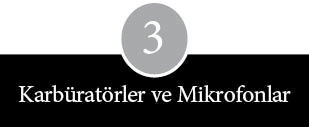
Steven Jobs beş aylıkken ailesi San Francisco’nun rutubetli varoşlarından Güney San Francisco’nun demirden merkezine taşındı. Paul Jobs burada bir finans şirketine girip elinden ne iş gelirse yaptı. Ödenmeyen alacakları tahsil etti, otomobil bayilerinin kredi şartlarını denetledi ve Kuzey Kaliforniya’ya dağılmış durumdaki, bedeli ödenmeyen arabaları geri toplamak için özel yöntemler geliştirdi.
Paul Jobs sorumluluk sahibi bir James Dean’i andırıyordu. Kısa kumral saçları ve oldukça pürüzsüz cildiyle ince uzun bir adamdı. İyi bir eğitime sahip olmadığının bilincinde olan, utangaçlığını hafif bir gülümseme ve kaba bir mizah duygusunun arkasına gizleyen, Kalvinist tavırlı, mantıklı ve pratik bir adamdı. Jobs, Wisconsin Germantown’da küçük bir çiftlikte büyümüş olmakla birlikte, burasının iki aileyi geçindiremeyeceği anlaşılınca, anne babasıyla birlikte Indiana’nın West Bend bölgesine taşınmıştı. Onlu yaşlarında liseyi bıraktı. Midwest’te çeşitli işlerde çalıştıktan sonra, otuzlu yaşlarının sonunda, “Serseriler Donanması” denen ABD Sahil Donanması’na katıldı.
II. Dünya Savaşı’nın sonunda, görev yaptığı gemi San Francisco’dan ayrılırken, denizci arkadaşlarından biriyle, Golden Gate yöresinde kendisine evlenecek bir eş bulacağına dair bahse girdi. Gemi limana yanaşınca kıyıya çıkan Paul Jobs iddiayı kazandı. Sonradan karısı olacak Clara’yla orada tanıştı. Clara’nın çocukluğu ve lise yılları San Francisco’nun Mission Bölgesi’nde geçmişti.
Jobs Midwest’te, International Harvester’da yıllarca makinistlik ve ikinci el araba satıcılığı yaptıktan sonra 1952 yılında eşiyle birlikte San Francisco’ya döndü. Çocuklarını burada büyüttüler ve çocuk yetiştirmenin zorluklarını burada tattılar. Çocukların insanın başına ne belalar açabileceğini burada öğrendiler. Küçük oğulları Steven elektrik prizine metal bir saç tokası sokup da çarpılınca, onu hastaneye zor yetiştirdiler. Bu olaydan birkaç ay sonra, aynı yaştaki bir suç ortağıyla birlikte, karınca zehiri şişeleriyle minyatür bir kimya laboratuvarı kurmaya kalkışınca da bu kez midesini yıkatmak zorunda kaldılar. Jobsların Güney San Francisco’daki evlerinde başka bir çocuk için de yeterli yer bulunduğundan, bir süre sonra Steven’in yanına bir kız kardeş geldi: Patty. Dört kişiyi besleme sorumluluğuyla karşı karşıya kalan Paul Jobs hemen cenaze masraflarını karşılamak üzere iki bin dolarlık sigorta poliçesi aldı.
Paul Jobs’un en hoşlanmadığı şeylerin başında işe gidip gelme eziyeti geliyordu. Bunun üzerine finans şirketi onu Palo Alto’daki büroya tayin edince, bütün aile yarımadanın daha aşağılarına doğru itilmiş oldu. Jobs ilk kapalı alışveriş merkezinin bulunduğu bölgeye bir taş atımı uzaklıktaki, komşuları ağırlıklı mavi yakalılarla alt-orta sınıftan ailelerden oluşan Mountain View’de bir ev aldı.
Jobsların evinde Steven sabahları o kadar erken kalkıyordu ki, ailesi ona ev halkını rahatsız etmeden oyalanabilsin diye sallanan bir at, bir gramofon ve bir miktar Little Richard plağı almıştı. Mahalledeki bazı çocuklar 8 milimetrelik filmler çekiyorlardı; küçük Jobs da babasının yağmurluğu ile şapkasını üzerine geçirip dedektiflik oynamaya bayılıyordu. Televizyonda normalde Dobie Gillis, I Love Lucy, Groucho Marx ve Johnny Quest çizgi filmleri gibi programlar izleniyordu.
Sunnyvale ve Palo Alto gibi Mountain View de elektrik mühendisi kaynıyordu. İşten eve irili ufaklı parçalar getiriyor, bunlarla garajda birtakım şeyler yapıyor ve ilginç ya da yenilikçi bir şey ortaya çıkardıkları zaman, yolun üzerinde sergiliyorlardı. Hewlett-Packard’da çalışan ve Jobslardan birkaç ev ilerde oturan bir mühendis, laboratuvardan eve getirdiği bir karbon mikrofonu bir pille hoparlöre bağlayarak, ânında elektronik bir Fareli Köyün Kavalcısı’na dönüştürüvermişti. Babasından bir miktar temel elektronik bilgisi kapmış olan Steven, öğrendiği kurallara ters düşüyormuş gibi görünen bu olayın karşısında afallamıştı: Karbon mikrofonun amplifikatörü olmadığı halde, ses yine de hoparlörden geliyordu. Olayı babasına anlattıysa da ondan tatmin edici bir açıklama alamayınca, Hewlett-Packard’lı uzmanın kapısını çalmaya karar verdi. Kısa bir süre sonra cihaz onun incelemesine sunulduğu gibi, bundan böyle sık sık mühendisin evine yemeğe davet edilir oldu; bu ziyaretler sırasında elektroniğin esasları hakkında daha fazlasını öğrenme olanağı buldu.
Baba Jobs’a otomobiller elektronikten çok daha ilginç geliyordu. Gençliğinde bir araba alacak parayı biriktirebilmiş olan Jobs, devamlı araba alıp satarak ya da takas ederek bu işi kalıcı bir ek iş haline getirmişti. 1957’de yeni araba almayı bıraktığı için kendisiyle gurur duyuyordu; bu tarihten sonra sezgilerine ve elindeki beceriye güvenerek eski modelleri tamir edip yenileme işine başladı. Jobs başka bir şey aklını çelene kadar, var gücüyle belli bir modele ait örnekleri tamir etmeye yoğunlaşırdı. Gözde otomobillerinin fotoğraflarını bir albümde toplar ya da resim çerçevesine koyar ve değerini yalnızca bir koleksiyoncunun takdir edebileceği özelliklere dikkat çekerdi: Ender rastlanır bir uyumla dekore edilmiş koltuklar veya çok özel bir havalandırma seti gibi.
İş dönüşü tulumunu üzerine geçirir, hastane aletleri kadar temiz alet kutusunu eline alır ve o haftaki arabanın altında kaybolurdu. Motorlu araçlar birimindeki kâtiplerin çoğunu ismen tanır, cumartesi sabahları Palo Alto’nun Bayshore yolu üzerindeki hurdalıkları ziyaret ederek işe yarar malzemeler arardı. Sık sık oğlunu da yanında götürür ve ona yapılan sohbeti ve pazarlığı izletirdi: “Ona da biraz tamirci yeteneği kazandırabilirim sanıyordum, ama onun, ellerini kirletmeye hiç niyeti yok gibiydi. Tamircilikle gerçekten ilgilendiğini hiç görmedim.” Steven asıl ilgilendiği şeyin, bu arabaların eski sahiplerini merak etmek olduğunu söyledi.
Mountain View’deki komşularından biri Paul Jobs’u şansını bir kere de emlak işinde denemeye ikna etti. Emlakçılık lisansı aldıktan sonra işleri bir yıl kadar iyi gittiyse de bu sektördeki itiş kakış, yaltaklanma ve belirsizlikten sıkıldı. İkinci yılında fazla para kazanamadı. Koşullar öylesine ağırlaştı ki, ailesini ayakta tutabilmek için evi yeniden ipotek etmek zorunda kaldı. Ailenin iki yakasını bir araya getirmek için Clara Jobs da radar cihazları üreten Varian Associates’in muhasebe bölümünde yarı zamanlı çalışmaya başladı. Nihayet Paul Jobs gayrimenkul işinin kaprisleriyle boğuşmaktan vazgeçerek, eski tornacılık mesleğine dönmeye karar verdi. Ve sonunda San Carlos’daki bir makine atölyesinde iş bulunca, her şeye yeni baştan başlamak zorunda kaldı.
Yenilgi Steven Jobs’un kaçmayı başarabildiği bir şey değildi. Ailesiyle tatile çıkmak nedir bilmiyordu; evdeki eşyalar hep tamir edilip kullanılırdı; hâlâ bir renkli televizyonları yoktu. Evdeki konforun büyük bölümünü Paul Jobs kendi elleriyle yaratmıştı. Dördüncü sınıfta öğretmenin öğrencilere yönelttiği, “Bu evrende anlamadığınız nedir?” sorusuna Steven Jobs şöyle yanıt vermişti: “Neden bir anda böyle beş parasız kaldığımızı anlayamıyorum.” Aynı öğretmen, Imogene “Ayıcık” Hill, uygunsuz davranışları yüzünden başka bir sınıftan kovulduktan sonra dokuz yıllık memuriyetini heba olmaktan zor kurtarmıştı. Öğrencisi şunları hatırlıyor: “Durumu gerekten de çabucak kavradı. Ders çalışmam için bana rüşvet teklif etti. ‘Bu alıştırma kitabını bitirmeni çok istiyorum. Eğer bitirirsen sana bir beşlik veririm,’ dedi.” Sonuçta Jobs beşinci sınıfı atladı ve öğretmenleri ortaokula gidip yabancı dil öğrenmesini önerdilerse de o, kimseye kulak asmadı. Altıncı sınıf karnesinde şöyle yazıyordu:
Steven mükemmel bir okur. Ancak, okurken çok fazla zaman yitiriyor… Kendini motive etmekte ya da okuma eğitiminin amacını anlamakta hayli zorlanıyor... Zaman zaman disiplin sorunları yaşayabilir.
Yüzme, Wozniaklar için olduğu gibi Jobslar için de önemliydi. Önce Steven’ı beş yaşındayken yüzme derslerine götürüp getirdiler, ardından Mountain View Dolphins adlı bir yüzme kulübüne yazdırdılar. Yüzme derslerinin parasını ödeyebilmek için Clara Jobs geceleri arkadaşlarının bebeklerine baktı. Birkaç yıl sonra Jobs kulübün yüzme takımına girecek yaşa gelince, Mark Wozniak’la tanıştı. Mark, diğerlerine ıslak havlularla vurmaktan zevk alan bazı yüzücülerin Jobs’a sataşıp onu taciz ettiklerini anımsıyor. “Pek mızmız bir oğlandı. Bir yarışı kaybetti mi, hemen bir köşeye çekilip zırlamaya başlardı. İnsanlarla uyum sağlamakta zorlanıyordu. Ekip adamı değildi.”
***
Ancak, Steven Jobs okul değiştirip Mountain View Crittenden İlkokulu’na başladı. Bu okula Mountain View’un düşük gelirli, doğu yakası varoşlarındaki çocukları gelirdi; okul, kavgacıları ve serserileriyle ün yapmıştı. Kavgaları ayırmak ve camdan atlayan ya da öğretmenleri tehdit eden çocukları hizaya getirmek için polis sık sık okula gelirdi. Kendini çaresiz ve yapayalnız hisseden Steven Jobs bir yılın sonunda ültimatom verdi: Bir yıl daha Crittenden’de kalacak olursa, kesinlikle okula gitmeyecekti. Paul Jobs olayın vahametini kavradı. “Tamam, oraya gitmeyeceksin. Taşınıyoruz.” Böylece Jobslar, Palo Alto ile Cupertino Eğitim Bölgesi’nin cazibesine kapılarak, yarımadada bir adım daha ileri doğru sıçradılar. Los Altos’da, Cupertino Eğitim Bölgesi’nin bağrında yer alan, hafif eğimli çatısı, kocaman bir garajı ve üç yatak odası olan bir ev satın aldılar.
John McCollum 1963’te Cupertino Homestead Lisesi açıldığı gün elektronik öğretmenliğine başladığında, 3-F sınıfı nerdeyse bomboştu. Soğuk bir beton zeminden, koyu kül rengi duvarlar ile metal sandalyelerden ve okul duyurularının yayınlandığı, bir döner tabla üzerindeki kapalı devre bir televizyondan ibaretti sınıf. Gerek derslik gerekse Homestead Lisesi’nin geri kalanı yarıaçık bir cezaevini andırıyordu; sınırları gayet net belirlenmişti. McCollum sınıfın penceresinden Sunnyvale’deki evleri görebiliyordu, ancak karatahtanın asılı durduğu yer Cupertino’ydu. Homestead Lisesi açıldığında 3-F sınıfı öylesine çıplaktı ki, en iştahlı öğrenci bile böyle bir elektrikli infaza atılmakta zorluk çekerdi. McCollum hemen birtakım değişiklikler yapmaya girişti.
Karatahtanın üzerine uzun sarı bir sürgülü cetvel yerleştirdi; duvara bir bayrak tutturdu, üzerine GÜVENLİK TESADÜF DEĞİLDİR yazan parlak bir poster astı ve FLY NAVY (Donanma Uçakları) sloganı bulunan bir etiket yapıştırdı. Bir çift uzun tahta laboratuvar tezgâhını yere monte ettikten sonra, üzerini yavaş yavaş malzemelerle doldurmaya başladı. McCollum, tutumlu davranıp, yeni cihazlar için para biriktireceğine, pratik zekâsından medet umuyordu. 3-F sınıfı, civardaki Fairchild, Raytheon ve Hewlett-Packard şirketlerinin çöp sepetine dönüştükçe, tezgâhların üstündeki raflar dolmaya başladı. McCollum, Santa Clara Vadisi’nde ileri geri dolanıp parça arayan ağırbaşlı bir sokak kedisi olup çıkmıştı. Öğrencilerinin, sınıfa getirdiği bütün malzemelerin üçte birini er geç imha ettiğini gördü. Elektronik malzeme satıcılarının elli adetin altındaki siparişleri küçümsemek için kullandıkları deyişle “ufaklıklar” iş görmüyordu. McCollum da, öğrencileri de toplu alımlarla ilgileniyorlardı.
Şanslarına, elektronik firmaları o kadar kılı kırk yaran müşterilere mal satıyordu ki, bazen müşterilerin aldıklarından fazlasını geri çevirdikleri oluyordu. Parça numarası iyi okunmayan bir transistoru, bağlantı uçları düz durmayan bir rezistansı ya da boyasında küçük bir akıntı bulunan bir kondansatörü kabul etmiyorlardı. McCollum en büyük voleyi, NASA’daki bir parça değerlendirme mühendisinin Ay’a göndermek için fazlaca dayanıksız bulduğu dokuz bin transistoru Raytheon’dan aldığı zaman vurdu (o günlerde bu parçaların tanesi on altı dolardan gidiyordu). Başka esaslı ganimetler elde ettiği de oldu; örneğin Hewlett-Packard’ın Palo Alto’daki deposundan da mal geldi. Burası Hewlett-Packard’a ait, lise öğretmenlerinin altını üstüne getirmekte özgür olduğu, kullanılmış ve hurda test malzemeleriyle dolu bir tür Salvation Army mağazasıydı. McCollum burayı sık sık ziyaret ediyor ve arada bir pahalı çifte izli osiloskoplar ve frekans sayaçlarıyla dönüyordu. Stephen Wozniak’ın –sonra da Steven Jobs’un– 1. sınıf elektronik dersine kaydoluşuna kadar geçen birkaç yıl içinde 3-F sınıfı tam bir minyatür yedek parça deposuna dönüştü. McCollum komşu De Anza Community Üniversitesi’ndeki kadar test ekipmanı toplamıştı ve Homestead’le kıyaslandığında, diğer komşu liselerdeki elektronik laboratuvarları Yukarı Volta’nınkinden farksız kalıyordu.
Parlak öğrenciler ve daha önce bu konuda eğitim almış çocuklar için McCollum’un gösterdiği projeler modası geçmiş kalıyordu. Oysa resmi öğreti böyle değildi. Haftanın her günü, elli dakika süren elektronik 1, 2 ve 3. sınıf dersleri Stephen Wozniak’ın lisedeki en önemli saatleriydi. McCollum’un dersi aynı zamanda elektrik ile elektronik arasında net bir ayrım getiriyordu. Öğrenciler açısından bu, basit bir anlam farklılığından ibaret değildi, bir erkeği oğlan çocuğundan ayıran şeydi. Elektrikli aletler pil, düğme ve ampulden ibaret oyuncak setleriydi. Elektronikse teknoloji âlemine, ilahi fizik evrenine uzanan kudretli ve kesinlikle görünmez elektronun kendine özgü davranışına atfedilen, tümüyle daha yüksek bir düzlemde yer alıyordu.
McCollum yün hırkasıyla sınıfın önünde dikilerek, öğrencilere elektronik kuramını öğretmeye uğraşırdı. Seyrek uçuş yapan pilotlara yedek pilotla uçma kuralının getirilmesinden sonra istemeden emekli olduğu donanmada geçirdiği yirmi yıla ait çeşitli öykü ve sohbetleri öylesine düzenli bir sırayla anlatırdı ki, bazı öğrenciler en beğendikleri öyküleri kodlamaya başlamışlardı. McCollum devamlı gözlükleriyle oynardı; bir gözüne takar, bir plastik kabına yerleştirir, sonra da gömlek cebindeki kalemlerin arkasına sıkıştırırdı. Önce kuramla başlar, ardından uygulamaya geçerdi. Ohm Yasası, Watt Yasası, temel devre şeması, manyetizma ve endüktans, öğrencilerin önünden ardı ardına geçip giderdi. Dikkatlerini verdikleri takdirde dersleri anlayabildiklerini ve öğretmenin filiz veren tohumlar ektiğini fark ettiler. Belli başlı denk-lemleri çözdüler, dirençleri seri ve paralel bağladılar, kondansatörlerin şarj edişini izlediler. Güç kaynakları ve amplifikatörler yaptılar, alternatif ve doğru akımı yönlendirmeyi öğrendiler.
McCollum aynı zamanda kalite kontrol merkezi işlevi de görüyordu. Öğrenciler radyolarını tamamladıklarında o, depoya gider, yaptıkları radyonun içine bazı kusurlu parçalar sokar ve onlardan gözlerinden çok kafalarını kullanarak sorunu bulmalarını isterdi. “Baştan sona bütün işleyişi gözden geçirmeyi becerebilmelisiniz” der dururdu. Hevesli çocuklar evde, odalarında ya da garajlarında yaptıkları cihazları McCollum’a getirip gösterirlerdi. Gevşek parçaları tornavidayla sıkıştırır, hoyrat bir dişçi gibi lehim bağlantılarını ileri geri oynatarak kontrol ederdi. Bir keresinde, Bill Fernandez’in yaptığı bir güç kaynağı düğmesini, diğer birçok düğmeye göre ters çalıştığı için eleştirmişti. Sonradan Fernandez, “Standartlar ve tasarımlar üzerinde düşünmeye ilk kez bu olay sayesinde başladım,” diyecekti.
McCollum elektriğin gücünü gösterebilmek amacıyla şovmen olup çıkmıştı. Otomobil motorlarını dikkatsizce çalıştırırken asitle yüzleri yanan insanların hikâyeleriyle öğrencilerini korkuyla titretiyordu. Kilitli bir çekmeceden çıkardığı parçalarla ustaca numaralar sergiliyordu. Bir balonu süveterine sürttükten sonra, tele-vizyonun altına asıyordu. Ya da ışıkları söndürüp yüksek frekans akım üreten bir Tesla bobininin üzerindeki düğmeyi açıveriyordu. Sınıf bobinin bir ucundan yüz bin voltun sıçrayışını ve yakındaki bir floresan tüpünü aydınlatışını seyre dalıyordu. 3-F sınıfındakiler başka bir gün de şeytan çarmığının çubuklarına doğru tırmanan alevleri izliyordu. McCollum’un misyonu basitti. “Elektronların gizemini dağıtmaya uğraşıyorum. Onları görmeniz mümkün değil, ama etkilerini gözlemleyebilirsiniz.”
Ne var ki, elektronik salt entelektüel bir araştırma alanından ibaret değildi. Çok az bir beceriyle her tür çığlık, siren, takırtı ve başka sesin eğlendirme, ürkütme ve korkutma amacıyla üretilebildiği pratik bir yaklaşımdı da. Sağlam voltmetrelerle dirençölçerlerin üretildiği aynı parçalar, çok daha farklı amaçlara yönelik olarak da kullanılabilirdi. Stephen Wozniak’ın küçük yaştan beri pratik şakalara eğilimi vardı; kendi başına birtakım şeyler üretmeyi başarmıştı. Gece vakti yoldan geçen arabalara yumurta fırlatmak ona pek eğlenceli ve zekice gelmiyordu. Buna karşılık bir yumurtayı siyaha boyayıp yolun iki yanındaki sokak lambalarına asılı bir tele tutturduktan sonra, arabaların radyatör hizasına gelen bir yüksekliğe yerleştirmek tam onun tarzıydı. Elektronik, eşek şakalarına yeni bir alan açıyordu.
Örneğin, Homestead Lisesi’ndeki son yılında Wozniak eski bir bataryanın silindirlerini sökerek, dinamit lokumunu andıran bir nesne elde etmişti. Bu silindirlere bir osilatör bağladıktan sonra, paketi bir arkadaşının dolabına yerleştirmiş ve kapının altından dışarıya bir iki tel sarkıtmıştı. Osilatörün tik-takları çok geçmeden dikkat çekmiş ve okul müdürü Warren Bryld paketi kaptığı gibi boş futbol sahasına doğru koşarak hayatını tehlikeye atmıştı. “Hemen kablolarını çekip polisi aradım. Çok geçmeden yaptığım ahmaklık yüzünden herkesin diline düştüm.” Ama olayın faili kısa sürede tespit edildi; Wozniak müdürün odasına doğru giderken, matematik yarışmasını kazandığı için tebrik edileceğini sanıyordu. Ama beklediğinin aksine, kendisini karakolda buldu ve geceyi San Jose Islahevi’nde geçirdi. Ertesi sabah Margaret Wozniak oğlunun görünümünden yeterince tatmin olmamıştı. Gardiyanlara, “Niye göğsüne bir numara kazımadınız?” diye çıkıştı. Wozniak’ın okul gazetesinde editörlük yapan ablası Leslie, ıslahevindeki koşulları anlatması için ona gazetede yer ayırdıklarını bildirdi. Wozniak –burnu sürtülmüş, utanç içinde, ama hakkında herhangi bir soruşturma açılmadan– Homestead’e döndüğünde, sınıf arkadaşları tarafından ayakta alkışlandı.
Öğrenciler ne zaman John McCollum’dan değişken osilatör konusunda yardım isteseler, çoğunlukla pratik öğütler verirdi. Ama McCollum öğrencilerine bilgisayar değil, elektronik öğretirdi. 1960’ların sonlarında bilgisayara ilgi duyan Homestead öğrencileri sadece okulun en küçük azınlığı değildi; aynı zamanda bir elin parmakları kadar azdılar. Elektronik ve bilgisayar erkek uğraşıydı; gerçi yine de çoğu erkek öğrenci bunları hayli tuhaf uğraşlar olarak görüyordu. Böylece bu farklı ilgi alanları, yaş ve sınıf farklılıklarını atlayarak, az sayıdaki öğrenciyi buluşturdu. Evleriyle sınıfları arasında –aslında tam bir takıntı düzeyine varmış olan– bu özel tutkularının peşinde mekik dokudular.
Wozniak, Homestead’deki sınıfında günlerini kalın gözlüklerinin arkasında, sarı yazı tabletlerine kurşunkalemle devre şemaları karalayarak geçirmeye başladı. Ablası o günleri şöyle yorumluyor: “Onun lisedeki hali içimi parçalıyordu. Çok yalnızdı. Tabiatından ötürü uyum sağlayamadığı için sıkıntı çekiyordu. Devamlı alay konusu oluyordu. Kendimi hep onu korumak zorunda hissediyordum.” Fakat Wozniak ablasından farklı olarak, kendisini Sunnyvale’in taşra havasıyla kıstırılmış ya da Homestead’in kılık kıyafet kurallarıyla sınırlanmış gibi hissetmiyordu. Marihuana ve diğer uyuşturuculara son derece kuşkulu yaklaşıyor, bunların ne kadar tehlikeli olduğuna ilişkin uyarıları kabullenmekte zorlanmıyor ve ablasının odasında bazı şüpheli tohumlar bulunca bunu ailesine haber vermekten çekinmiyordu. Annesi oğlunun eğilimlerinin farkındaydı: “Lisedeyken çok düzgün bir çocuktu… Kızlarla fazla takılmazdı.” Wozniak, Bay Doğru’ydu.
Kendi haline bırakılan Wozniak, lisedeki son iki yılında elektronikle ilgili bütün ödülleri topladı; elektronik ve matematik kulüplerinin başkanı oldu. Toplama-çıkarma yapabilen bir makinenin devrelerini tasarlamaya başladı ve makineye yavaş yavaş birtakım özellikler ekledi. Çarpma, bölme, hatta karekök alma gibi daha karmaşık sorunları çözmeye yöneldi. Eğri büğrü şekil ve çizgiler Wozniak’tan iki yaş daha küçük bir öğrenci olan Allen Baum’un kafasını karıştırmıştı. “Ne yaptığını sorduğumda bana ‘bilgisayar tasarımı’ diye yanıt verdi. Acayip etkilenmiştim.”
Koyu renk saçlı, açık kahverengi gözlü, ince yapılı bir çocuk olan Baum on üç yaşına kadar New Jersey’in banliyösünde yaşamıştı. Babası Elmer, Stanford Araştırma Enstitüsü’nde çalışmaya başlayınca, Kaliforniya’ya taşındılar. Sonraları, o günleri şöyle anlatacaktı: “New Jersey’de pek güdük kalmıştım. Hep mühendis olmak istemiştim ve günün birinde elektronik öğrenmeyi arzu etmiştim.” Babası terminali nasıl çalıştıracağını gösterene kadar, serin SRI bilgisayar odasında makineleri kuşkulu gözlerle izleyerek dolaşıp durmuştu: “Bir saat sonra bir baktım Allen benim yapamadığım şeyleri yapmaya başlamış.”
Baum, Wozniak’tan farklı olarak, bilim fuarı yarışmalarına girmezdi, ama bilgisayar kuramı ve tasarımına olan ilgisini paylaşırdı. Wozniak McCollum’u bilgisayarlar hakkındaki bilgisini ilerletebileceği bir yer bulmaya ikna ettiğinde, planlarında Baum da yer alıyordu. McCollum bir tanıdığı sayesinde, iki öğrenciye çarşamba öğle sonralarını orduya elektronik cihaz üreten GTE Sylvania adlı bir firmanın bilgisayar odasında geçirme olanağı ayarlamıştı. İki genç bir yıl boyunca her hafta Sylvania’nın Mountain View’daki merkezini ziyaret ettiler.
Ziyaretçi defterine imza atıyorlar, gömleklerine plastik kartlarını iliştiriyorlar, kendilerine eşlik edecek kişiyi bekliyorlar ve sonra koridorda ilerleyerek, çıkardığı gümbürtü ve uğultu sesinden ötürü insanı bağırarak konuşmak zorunda bırakan IBM 1130’un bulunduğu bilgisayar odasının sımsıkı kapalı madeni kapısına ulaşıyorlardı. Beyaz yer karoları, 18. yüzyıldan kalma bir Fransız gardırobu iriliğindeki bir kasadan oluşan bilgisayarın ağırlığı altında zangır zangır sallanıyordu. Komutları girmek için kaba görünümlü bir klavye vardı. Şirket maaş bordroları gibi kalemlerle ilgili programlar, bir kart okuyucuya sokup çıkarılan haki renkli ince kart tomarlarına basılmıştı. Bilgisayarın ihtiyacı olan bilgi, duvara dizili, kocaman bir teybi andıran sıra sıra manyetik bantlara depolanmıştı; telgraf şirketlerinin kullandığına benzeyen gürültülü bir yazıcıdan da baskı alınıyordu.
Bu, Wozniak’ın ömründe gördüğü ilk büyük anabilgisayardı (mainframe). Wozniak ve Baum’a bir yıl süresince sadece birtakım ipuçları ve ön bilgilerle, eğitim kırıntıları sunuldu. Sylvania’daki adamlar Wozniak’ı, bilgisayar dilinde sıradan harf ve rakamlar halinde girilen komutları bilgisayarın özümseyebileceği ikili (binary) makine koduna çeviren yazılımla, yani bir derleyiciyle tanıştırdılar. Wozniak buna hayret etmişti. “Derleyicinin bir program olduğunu bilmiyordum. Onu bir donanım sandığımdan, kutuları işaret edip ‘Derleyici bu mu?’ diye soruyordum.” Sylvanialı programcılar büyük sayıları çarpabilen bir hesap makinesi tasarlamakta yaşadığı zorluğu da çözdüler. Ancak, iki genç talimat programlamayı tercih etti.
Bilgisayar dili FORTRAN’la programlar yazdılar, bunları ince kartların üstüne bastıktan sonra kart okuyuculara soktular. Bilgisayar yardımıyla sayıları yüksek rakamlara çıkardılar ve yazıcının, sonuçları aralıksız basıp çıkarışını izlediler. Asal sayılar arayıp birçok yerde karekök hesabı yaptılar. Ayrıca birlikte, atı bir satranç tahtası üzerinde her hamlede başka bir kareye konacak şekilde oynatacak bir program üstünde çalıştılar. Programı ilk çalıştırdıkları gün hiçbir şey olmadı. Soğutucu vınlayıp dururken, bilgisayardan en ufak bir hareket gelmedi. Programı yeniden yazdılar ve bilgisayara atın her hamlesinden sonra rapor verme talimatı eklediler. İlk iki düzine hamleyi gayet seri bir şekilde rapor eden bilgisayar giderek yavaşladı ve sonunda durdu.
Sylvanialı programcılardan biri, programın atın hamleleriyle ilgili yanıt vermesinin ne kadar süreceğini tahmin etmek için matematiksel bir kısa yoldan söz etti. Wozniak bu işlemi denediyse de çıkan sonucun uyumsuz olduğunu gördü: “Hesaplarıma göre, tek bir çözüm bulmak on ila yirmi beş yıl alabilirdi. Bu kadar bekleyemezdim.” Wozniak’ın Sylvania’daki birkaç ayından sonra McCollum, ona Homestead’de bir elektronik dersinde bilgisayarlar hakkında konuşma yapma fırsatı sundu. “Güzel bir konuşmaydı. Yanlış olan tek bir nokta vardı. Bu konuşmayı üniversite ikinci sınıf öğrencilerine yapsa daha iyi olurdu.”
Sylvania ziyaretleri, tanınan bilgisayarları kullanma ayrıcalığı ve programcılardan avuçlarına düşen bilgi kırıntıları Wozniak’ın haftasının en canlı bölümünü oluşturmakla kalmıyor, aynı zamanda diğer faaliyetlerine de üretkenlik katıyordu. Baum’la birlikte, çok önemli bir amaç doğrultusunda faaliyet yürüten Stanford Linear Accelerator Merkezi’ne (SLAC) yöneldiler. Bu ikilinin asıl ilgilendiği, 280 No’lu Devlet Karayolu’nun altında, Woodside çevresindeki tarlalara doğru bir şiş gibi uzanan iki millik beton kirişe ateşlenen elektronlar değildi. Onlar, Palo Alto ile Stanford Üniversitesi Hoover Kulesi’ne bakan bir yamaçta kurulu, SLAC idari binalarıyla ilgileniyorlardı. Burada bilgisayar odasını gezip altmışların sonlarındaki IBM serisinin kilit taşı olan, SLAC’ın IBM 360 adlı anabilgisayarını incelediler. Daha sonra Sylvania’daki daha küçük IBM bilgisayarında çalıştıracakları programları hazırlamaları için SLAC’ın kart basma sistemlerinden birini kullanmalarına izin verildi.
Ama onları asıl baştan çıkaran yer kütüphaneydi. Cumartesi ve pazar öğleden sonralarını kitap raflarını tarayarak, dergi okuyarak ve bilgisayar kullanım talimatlarını elden geçirerek harcıyorlardı. Yarımadada başka hiçbir yerde bu kadar zengin kaynak yoktu. SLAC kütüphanesi, Datamation, Copmuterworld, EDM, Computer Design gibi, programcılar ve mühendisler için vazgeçilmez nitelikteki dergilere aboneydi. Dergilerin çoğunda, okurları bilgi almak istedikleri şirketlerin isimlerini işaretlemeye davet eden kutucukların bulunduğu anket formları yer alıyordu. Wozniak’ın posta kutusu bir süre sonra bazı yeni bilgisayarcılardan gelen broşür, ürün tanıtımı ve kullanım talimatı içeren ağır zarflarla dolup taşmaya başladı. Zarfların üzerinde Digital Equipment Corporation, Data General, Scientific Data Systems, Data Mate, Honywell ve Varian gibi isimler vardı. Bu şirketlerin hemen hepsi oda ebadındaki anabilgisayarın küçültülmüş versiyonu olan mini-bilgisayarlar üretmişlerdi.
Adını Londra’daki Carnaby Caddesi’nin meşhur ettiği dar kısa eteklerden alan bu mini-bilgisayarlar genelde altı kişilik bir aileye göre bir buzdolabı-dondurucu kombinasyonundan daha büyük değildi. Mini-bilgisayar imalatçıları, tıpkı uydu ve roket tasarımı yapan şirketler gibi, elektroniğin son derece küçülen dünyasından yarar sağlıyorlardı. İmalat tekniklerini geliştiren yarı-iletken firmaları, giderek tek bir silikon parçasına daha fazla transistor sıkıştırmaya başladılar. Bu gelişme Digital Equipment gibi şirketlere, çağdaş bir anabilgisayar performansıyla uyuşmasa bile, beş yıl önce üretilmiş bazı anabilgisayarlardan daha güçlü bilgisayarlar üretme olanağı sağladı. Sektör dergilerinde çıkan her grafiğe ve performansa göre verilen fiyatlar, bu makinelerin giderek ucuzlayacağını ve güçleneceğini gösteriyordu.
Fakat mini-bilgisayarlar anabilgisayarlardan çok daha küçük olmalarına karşın, yine de devasa eklentilere gerek duyuyorlardı. Programlar kâğıt bantlara giriliyordu; bellek, kablolarla birbirine bağlanmış, sigara kutusu ebadında bloklar halinde toplanmış düzinelerce küçük çörek şeklindeki demir parçadan oluşuyordu. Program sonuçları uzaktaki bir yazıcıdan alınıyordu. El kitapları ve kullanım talimatlarında her yöne hareket eden milyonlarca bit’in akışını kontrol etmeye çalışmanın karmaşıklığı az çok anlaşılabiliyordu. Sylvania analizcilerinin Wozniak’a verdiği Digital Electronics Corporation’ın Küçük Bilgisayar El Kitabı, bilgisayar hakkında çok fazla bilgi açığa vurduğu için, bir anlamda sektörün klasiği olup çıktı. Merkezi işlem biriminin tuhaflıklarını ayrıntılı biçimde tarif ediyor, belleğin nasıl yönetileceğine dair talimatlar veriyor, uzaktaki yazıcıyla nasıl bağlantı kurulacağını gösteriyor ve program yazımına ve denemesine yardımcı olacak akış şemaları sunuyordu.
Bilgisayar dergilerinin yanı sıra daha uzmanlaşmış bir yayın türü daha vardı: Yedek parça dergileri. Altmışların sonunda bu yayınlar Fairchild, Signetics, Synertek, Intel ve Motorola gibi yarıiletken firmalarının ürettiği çiplere ve entegre devrelere odaklandılar. Wozniak ve Baum için bu dergiler neredeyse bilgisayar dergileri ve kullanım talimatları kadar önem kazandı. Hiçbir yarı-iletken şirketi bir bilgisayar gibi performans gösteren tek bir çip üretemediği halde bazıları, yeterli ustalık gösterilirse, bir bilgisayar gibi çalışacak şekilde kombine edilebilecek çipler yapabiliyordu. Bizzat üretici şirketler yeni çiplerinin özelliklerini ve performansını, veri listeleri denilen teknik enformasyonla dolu metinlerde ayrıntılı biçimde sunuyorlardı. Bunlar da aranan kalemler haline geldi. Uzak dünyaya, yani en gelişmiş örneğine yaklaşan eli yüzü düzgün bir bilgisayar tasarlayabilmek için veri listelerindeki çizimleri ve ayrıntıları yakından tanımak şarttı.
Wozniak’ın asıl hatmettiği kitap DEC’in Küçük Bilgisayar Elkitabı olduğu halde, yakından incelediği ilk mini-bilgisayar Varian 620i oldu. Ön panelinde siyah beyaz düğme sıraları bulunan kahverengi bir kasaya yerleştirilmişti. Wozniak hayatında ilk kez kendi seçtiği çiplerle kendi mini-bilgisayar versiyonunun tasarımını yaratmaya uğraşıyordu: “Baştan sona bir bilgisayar yapmasını bilmiyordum, ama nasıl bir şey olduğunu anlayabiliyordum.” Kullanıcının bilgisayara gireceği programla makinenin ana merkezi arasındaki katmanları kavramaya başlamıştı. Bu merkeze odaklanarak, makineyi kontrol edecek bir kod oluşturmak için gerekli kesin talimatlar dizisi fikrini yakaladı.
Ancak, Wozniak bilgisayar tasarımının bütün bağlantılarına vakıf olamadıysa da olabildiğince az parça kullanma fikrine sarıldı. Dijital mantığın temelini oluşturan devreleri, kapıları birleştirme ya da tasfiye etmenin bir yolunu bulunca pek sevindi. Birkaç kapının yerini alacak devreler içeren çipler zaferi ayağına getirdi. Olabildiğince fazla işlevli parçalar üretmeye yoğunlaştı. “Sürekli daha yüksek entegrasyon düzeylerine doğru ilerlemeye başladım.” Gerek Wozniaklar gerekse Baum’un ailesi oğullarının kaydettiği ilerleme karşısında şaşkına dönmüşlerdi. Diğer yaşıtları gibi onlar da hayatın sıkıcı dertlerinden uzaktılar ve kendi saplantılarının peşinden koşma lüksüne sahiptiler.
Wozniak ve Baum bir süre sonra kendi gözde mini-bilgisayarlarını belirlediler ve odalarının raflarını bilgisayar tanıtım broşürleriyle doldurmaya başladılar. Bilgisayarların akıllıca ve hantal tasarımları arasında ayrım yapma aşamasına geçtiler. Bazı makinelerin ondalık noktaların akışını ele alış tarzındaki zor anlaşılır özellikleri değerlendirebildiler. Bazen kasanın inceliğinden ötürü verilen Sıska Mini gibi bir isim ya da kozmetik albeni hoşlarına gidiyordu. Elmer Baum şöyle diyor: “Ben üç aya kalmadan pes ettim. Bilgisayar tasarımıyla uğraşıyorlardı, konuştuklarından hiçbir şey anlamıyordum.”
Wozniak liseyi bitirip üniversite çağına geldiğinde ilgi alanı değişmemişti. Babasının okuduğu Cal Tech’e kabul edilmeyince, Cupertino’daki De Anza Community Üniversitesi’nde geçirdiği çok sıkıntılı bir günün ardından, Boulder’daki Colorado Üniversitesi’ne kaydoldu. Jerry Wozniak oğlunun Kaliforniya’dan ayrılıp bazı eski lise arkadaşlarına katılmasını kuşkuyla izledi. “Stephen aynı anda hem evden ayrılmaya hem de üniversiteye gitmeye hazır değildi.” Çantasına koyup yanında götürdüğü eşyalar arasında televizyon alıcılarını bozacak şekilde ayarlanmış bir osilatör bulunuyordu. Wozniak kapalı devre konferanslara müdahale ederek, profesörleri televizyon ayarlarıyla uğraşmak zorunda bırakmaya başladı. Öğretmenler iki büklüm hale gelene ve sonunda ancak kol ya da bacaklarından birini havada tutarlarsa yayının düzeleceği kanısı uyanana kadar osilatörü çalıştırıyordu. Ayrıca Kentucky Derbisi’ni izlerlerken, atlar tam bitiş çizgisine yaklaştığı anda yayını bozarak, sınıf arkadaşlarını da çileden çıkarıyordu.
Wozniak’ın Colorado’daki tüm hayatı üniversitenin Kontrol Veri Bilgisayarı CDC 6400’ün çevresinde dönüyordu. Bilgisayarın kullanım talimatlarını okuyor, FORTRAN programlama diline dair yeni teknikler öğreniyor ve aynı zamanda başka bir bilgisayar dili olan ALGOL hakkında bilgi ediniyordu. Üniversite idarecileri Wozniak’ı zamanının çoğunu bilgisayar odasında, çok daha fazla süreyi de bilgisayarı kullanarak geçiren bir baş belası olarak görüyorlardı. Wozniak KAHROLSUN NİXON ve GÜZEL KÂĞIT KIRPINTISI yazılı kâğıt tomarları basan programlar yaptı. “Bir ders saatine karşılık on saatimi bilgisayar başında geçiriyordum.” Bu akademik performansını ne gece geç saatlerdeki briç partileri ne de hamburger almak için 150 km yol gitmek etkiliyordu. Sonunda dekanlardan birine illallah dedirtmiş ve okuldan atılma tehlikesiyle yüz yüze gelmişti. Wozniak bir avukat bulup dekanı tehdit eden bir mektupla karşılık vermeyi denediyse de bu girişimi durumu pek düzeltmedi. İlk yılının sonunda valizinde daha gelişkin bilgisayar tasarımları ve bir yığın F (zayıf) notuyla Colorado’dan ayrılıp Sunnyvale’deki baba evine döndü; o yıl bir kez daha De Anza Community Üniversitesi’ne kaydoldu.
Evine geri dönen Wozniak eski küçük çevresine ve kozmetik ıskarta parçalara, veri listelerine ve bilim fuarları dünyasına yeniden kavuştu. De Anza’da bazı derslere Allen Baum’la birlikte girdiler; bu arada arkadaşının babası Elmer Baum da FORTRAN programlama dilinin öğretildiği bir kursa katıldı. Ancak, birkaç hafta sonra bırakmak zorunda kaldığında, genç ikilinin becerilerine duyduğu takdir duygusu biraz daha artmıştı. Wozniak, doğrusal cebir derslerinde bilgisayar tasarımıyla uğraştığı için öğretmenlerle takışmaya devam etti.
Yıl sonunda rastlantı eseri Baum’la birlikte yaz için bir iş buldular. Kaliforniya Motorlu Taşıtlar Dairesi gibi müşterilere bilgisayar üretmeye çalışan Tenet adlı küçük bir şirketin genel merkezini gezerlerken, kendilerini bir mini-bilgisayar firmasının yerel ofisinde buldular. İşe girerken programcı olduklarını söylediler; Baum bir süre sonra MIT’ye girince işten ayrıldıysa da Wozniak sebat etti ve aynı anda pek çok kullanıcıya hizmet verecek bir bilgisayar sistemini programlamayı öğrendi. Arada bir Los Angeles’e gidip geldiyse de –“Orada yaşayan kuzenimle evlenmek istiyordum, ama onun bende gözü yoktu”– 1972 krizine kadar Tenet’te kaldı ve o tarihte işsizlik yardımı başvurusunda bulundu.
Bu arada bilgisayar tasarımı hakkında gelişigüzel bir şekilde de olsa bir sürü şey öğrendi. Baum’un MIT’den postaladığı bilgisayar ders kitaplarının fotokopilerini okuyup okul bilim fuarlarını dolaştı. Bu ziyaretlerinden birinde zihnini aydınlatan bir yenilik fark etti. Dikkatini çeken, birçok talimatı sırayla adım adım uygulayan bir mekanik cihazdı. Her adımda belli sinyaller vermesini sağlayan bir kablo sistemiyle donatılmıştı. Wozniak makinenin yanındaki tanıtım yazısının kopyasını alıp eve götürdü. Okuduktan sonra buradaki kavramı elektroniğe tercüme etti ve bir talimatı yerine getirmeden önce belirli bir sıra halinde pek çok küçük operasyonu adım adım gerçekleştirecek bir devre fikrine ulaştı.
Birden ardıl adımlar olayını kavradım. İşte o anda bilgisayar tasarımını nasıl yapacağımı öğrenmiştim; oysa daha bir gün önce bilmiyordum bunu. Şimdi biliyordum artık. Güzel bir kavramın kıvılcımı beyninizde çaktığında, o an istediğiniz yere vardığınızı anlarsınız.
Wozniak, Data General’in Nova adlı mini-bilgisayarının içini incelerken, kendi kendine çıkardığı bu dersin büyük faydasını gördü. Tasarımını Digital Equipment Corporation’dan transfer edilen bir ekibin yaptığı Nova, akıllı ve agresif bir tasarım olarak ünlendi. Şirketin çıkardığı fantezi bir poster küçük meraklılar ordusu için aranan bir ürün haline geldi. Wozniak da, Baum da yatak odalarının duvarlarını süsleyen idoller topluluğu arasına bu posteri de astılar. Wozniak onun havasını şöyle izah ediyordu. “Ortalıkta masada onun gibi duracak başka bir bilgisayar görünmüyordu.”
Data General Supernova on altı bit’lik bir makineydi –bir anda on altı adet ikili hane işleyebiliyordu– ve belleğin dışındaki bütün donanım tek bir lamine levhaya monte edilmişti. Yüzü aşkın yarıiletken çip yeşil levhadaki deliklere yerleştirildikten sonra, kıvrımlı sıralar halinde lehimlenmişti. Lehim sıraları, bilgisayarların ana yapı bloklarından olan baskılı bir devre kartı üzerine asitle dağlanmıştı. Makinenin en önemli işlevlerini “ana kart”a monte edilmiş çipler kontrol ediyordu. Data General’in bilgisayarı hemen her yönüyle elektronikteki bir ilerlemeye işaret ediyordu. Bilgisayarın aritmetik mantığı çok daha gelişkin olmakla birlikte, yine de Wozniak’ın on üç yaşındayken tasarladığı toplama-çıkarma cihazına benziyordu. Ancak, 1963’te koca bir levha ve yüzlerce parça gerektiren şey, 1970’te bir silikon tabakasına sığıyordu.
Wozniak, yaz tatillerini geçirmek için Kaliforniya’ya gelen Baum’la birlikte kendi Nova versiyonunun tasarımını yapmaya başladı. Data General’den daha geniş bilgi talep edince, karşılığında şirket içi belgelerden oluşan yüzlerce sayfa aldı. İkili Fairchild Semiconductor ile Signetics’in ürettikleri yeni çiplerle ilgili veri dökümlerini toplayıp teknik detayların içinde kaybolduktan sonra, ihtiyaçlarına uyan çipleri belirlediler. İki farklı bilgisayar versiyonunun şemasını –çiplerin nasıl yerleştirileceğini gösteren çizimler– çizdiler. Birinde Fairchild’ın çipleri, diğerinde Signetics’in çipleri kullanılıyordu.
Çalışmada yönlendirici güç Wozniak idi, ama Baum’un katkısı da teşviki aşan boyuttaydı. Tasarım olayının bütün yönlerini biliyordu, çiplerden maksimum gücün nasıl sağlanacağını o öneriyordu. Dijital elektroniğe odaklanmışlardı, daha basit ilgi alanlarından uzak duruyorlardı. Baum daha sonradan, “Güç kaynağı gibi şeylere kafa yormuyorduk,” diyecekti. Bir ara kendi bilgisayarlarını yapmaya karar veren ikili, bir dosyayı şemalarla doldurup şirketlerden parça talebinde bulundular. Wozniak olayı şöyle anımsıyor: “Tasarladığım her bilgisayarı üretmeye niyetleniyordum. Ama asıl sorun parçaların teminiydi.”
Nova’nın birkaç değişik versiyonunu tasarlama uğraşı, Wozniak’a birtakım öğretici dersler kazandırdı. Jerry Wozniak oğlunun işin bazı inceliklerini kavramasına yardımcı olmak amacıyla, onu bir Fairchild yarıiletken çipinin tasarımcısıyla görüştürdü. Fairchild’lı mühendis, bir tasarımda kullanılan çip adedinin nihai amacın sadece bir unsuru olduğunu söyledi. Wozniak’a baskılı bir devre kartı üzerinde çiplerin kapladığı yerin çip sayısı kadar önem taşıdığını izah etti. Bunun üzerine Wozniak, mümkün olan en küçük mekânda mümkün olan en az sayıda çipi birleştirmek gibi ikili bir hedefe kilitlendi.
Data General’in Nova’sı üzerindeki deneyimi Wozniak’ı daha büyük bir farklılık arayışına yöneltti. Kendi bilgisayarını yapmaya karar verdi. Yakın komşularından Bill Fernandez’in ilgisini çekerek, uğraşında yardımcı olmasını sağlamayı başardı. Birbirlerini yıllardır tanıyorlardı, babaları birlikte golf oynardı. İnce, gergin ve soluk tenli Fernandez, Wozniak’tan birkaç yaş daha küçük olduğu halde, ilgi alanı daha genişti. Bahai inancına bağlıydı, aikido dersi almıştı ve evde bir samuraydan ders almış, 16. yüzyıldan kalma bir Japon edasıyla dolaşıyordu. Bilim fuarları onun da ilgisini çekiyordu; bir keresinde bir kontrplak parçasına çivilenmiş yassı düğmelerden oluşan bir elektrik kilidiyle fuara katılmıştı. Osilatörle sirenler yapmıştı; ama kendisinin de açık yüreklilikle itiraf ettiği gibi, bunlar gelip geçici hevesler olarak kalmış, üzerine gidememişti. Titizdi, elleri hünerliydi, araba radyosu gibi şeyleri monte etmekte üzerine yoktu.
Fernandez, McCollum’un elektronik dersindeki son yılında, NASA’nın uzay gemisi sistemleri laboratuvarında teknisyen olarak çalışmıştı. Burada birtakım devreler yapmış, test edip değiştirmiş, özel lehimleme tekniklerini ve kablo uçlarını doğru düzgün bağlamayı öğrenmişti; kabloların zedelenmesinin zararlarını biliyordu. Fernandez evin garajının bir köşesini kendi amatör çalışmaları için kullanıyordu. Su ısıtıcısı ile çamaşır kurutucusunun arasında bir yere kendi raflarını ve çalışma tezgâhını sıkıştırmıştı. “Garajda yer kavgası hiç bitmezdi. Sadece altıda birini kullandığım halde, ‘dörtte birini kaplıyorsun’ derlerdi.” Ama Fernandez’in garajı Wozniak’ın makinesi için ideal bir yerdi.
Wozniak bilgisayarından ne beklediğini biliyordu. “Marifeti olan bir makine tasarımı yaratmak istiyordum. TV’de bir düğmeyi çeviriyorsunuz, bir iş görüyor. Bilgisayarda bir düğmeye basıyorsunuz, birtakım ışıklar yanıyor.” Wozniak ile Fernandez yanıp sönen bir makine yapmak amacıyla, bir sürü yarıiletken firmasından parça toplamak için kıvranmaya başladılar. Intel her biri 256 bit’e kadar depolama kapasitesine sahip sekiz bellek çipi verdi. Intersil aritmetik mantık ünitesi içeren bir çift pahalı çip verdi. Bir anahtar şirketinin satıcısına ait bir numune paketi içinden bir miktar anahtar temin edildi, Monsanto’nun bir mühendisinden ışık veren diyotlar sağlandı ve Hewlett-Packard’ın ıskarta yığınları arasında bir metal çerçeve bulundu. En büyük parça tomarı, Signetics’deki iki uygulama mühendisinden geldi. Wozniak ile Fernandez ganimetlerini Fernandez’in oturma odasının zeminine dökerek, ne kadar toplayıcı, çoğaltıcı ve sayaç varsa ayırıp tasnif ettiler. Parça numaralarını veri dökümleriyle karşılaştırıp kontrol ettikten sonra, özenle etiketledikleri minik koruyucu zarflara yerleştirdiler.
Çalışmaya koyulurken işbölümü yaptılar. Bir çift bloknot kâğıdının üzerine bilgisayarın tasarımını çıkaran Wozniak, mantık tasarımı üzerine yoğunlaştı. Fernandez ise zamanlama devrelerini ve bilgisayarı ışıklara bağlayan devreleri tasarladı. Wozniak hâlâ liseye giden genç arkadaşının teknisyenlik yaparak bilgisayarı toplamasını izledi.
Aslında bir mühendislik eğitimi olmamasına rağmen düz kablolarla ve lehim aletiyle nasıl iş çıkaracağını iyi biliyordu. Üstelik eli biraz ağır olsa da son derece dikkatli ve titizdi.
İkili haftalarca gecelerini ve hafta sonlarını bilgisayarın yapımına harcadılar ve bu arada hatırı sayılır miktarda Cragmont gazozu tüketmeyi başardılar. Fernandez boş şişeleri yüklendiği gibi yakındaki markete koşuyor ve aldığı depozit parasıyla eksik kalan son bir iki parçayı tamamlıyordu.
Gazoz Marka Bilgisayar, Wozniak’ın aklını çelen mini-bilgisayarın küçük bir versiyonu olmuştu –“Kesinlikle en asgari malzeme kullanılmıştı”– ve tasarımını kalın zarflarda gelen artık parçalar tayin etmişti. Makinenin merkezini, Wozniak’ın sekiz bit büyüklüğünde bir bilgisayar yapmak için tandem şeklinde yerleştirdiği, dört bit’lik iki aritmetik mantık ünitesi oluşturuyordu. Tamamlanan bilgisayar bir metal çerçeve üzerine monte edilmişti. Bir levhada çipler, daha küçük olan diğerinde ise zamanlama devreleri –Signetics’in talimatlarından uyarlanmış bir kristal osilatör ve frekans bölücü devre– yer alıyordu. Fernandez bir bakelit parçasının üzerine açtığı yuvalara sekiz anahtar yerleştirmişti.
Gazoz Marka Bilgisayar tamamlandıktan sonra Wozniak birkaç program yazarak makine üzerinde kontrolü sağlamaya başladı. Programlar, çiplerin toplama-çıkarma gibi işlemleri yapabilmeleri için gereken talimatları açıklayan yarıiletken veri dökümlerini esas alıyordu. Bit’leri sıraladı, işlem kodunu belirleyip yazdı. Bütün talimatlar beş adıma indirgenmiş ve Wozniak’ın kendi kendine mırıldandığı düzgün bir sıraya dizilmişti: “Yükleme yap; sonraki talimat bit’ini bellek adres kaydına yükle; alu (aritmetik mantık birimi) üzerinden alu çıktı kaydına koy; alu çıktı kaydını bir sonraki bellek noktasına aktar.”
Fernandez’in tasarladığı zamanlama devresi, beş sinyalin her talimatta düzgün bir sıra izlemesini garantiye alıyordu. Programlar dört anahtara girilen değerlerin diğer dört anahtara girilen değerlerle çarpılması gibi işlemleri gerçekleştiriyor ve yanıtı ışıklarla gösteriyordu. Wozniak sonuçların önemine kafa yoruyordu.
Bu benim için neden bu kadar önemliydi, bilmiyorum. Dört bit’lik iki sayıyı birbiriyle çarpmak çok anlamlı olmasa gerek. Ama bilgisayar olmadan yapamayacağınız bir şeyi yapabilmenin anlamı vardı.
Bilgisayar tamamlanmak üzereyken Fernandez, arkadaşı Steven Jobs’u garaja, bilgisayarı görüp tasarımcısıyla tanışmaya çağırdı. Jobs hem makineden hem de Wozniak’tan etkilendi: “Şimdiye kadar gördüğüm, elektroniği benden daha fazla bilen ilk kişiydi.”
Bilgisayarını dünyaya duyurmaya karar veren Wozniak, San Jose Mercury gazetesinden, annesinin tanıdığı bir muhabiri davet etti. Muhabir, yanında bir fotoğrafçıyla birlikte bir gösteri izleme umuduyla Wozniak’ın odasına daldı. Wozniak yerde yatan çirkin aletin inceliklerini anlatırken, Fernandez’in yaptığı güç kaynağından dumanlar çıkmaya başladı. Güç kaynağından gelen yüksek voltaj dalgası kartın üzerindeki bütün entegre devreleri patlatınca bilgisayar kül olup gitti. Fernandez güç kaynağını inceledi, bir komşunun bahçesinde çalışarak kazandığı markasız bir çipe kusur buldu. “Resimlerimizi gazetede yayımlatamadık, kahraman olamadık,” diye hayıflandı.
Goldman onun için, “Japon Balığı satıyor,” dedi.
San Francisco’nun Barbary Körfezi’nde antika mağazaları, restoranlar ve hukuk büroları arasında yer alan, 19. yüzyıla ait kırmızı tuğla bir binada dört adam oturmuş, Apple’ın gelecek yıl yapacağı reklamları planlıyordu. Tam Hindistan’a özgü bir yaz gününün öğle sonrasıydı; hiç penceresi olmayan konferans salonu oldukça havasızdı. Oda, uzun süredir en büyük müşterisi Apple Bilgisayar’ı kaybetmenin eşiğinde olduğu söylenen orta büyüklükte bir reklam ajansı olan Chiat-Day’e aitti. Bir çift uzun yapraklı saksı çiçeğinin sıcaktan yapraklarını saldığı yerde, buzlucamın ardına bir sinema projektörü gizlenmişti ve yan taraftaki barın ucunda duran buzdolabı, demirden bir ciğer gibi ses çıkarıyordu. Dört adam parlak cilalı bir konferans masasının başında konforlu sandalyelerde oturuyordu.
Apple’ın reklam müdürü Henry Whitfield son derece rahatsızdı. Daha otuzlu yaşlarda olduğu halde, sanki gezmediği havaalanı kalmamış ve şakaklarına yaşlı bir adamın hayali oturmuş gibiydi. Diğer üçü Chiat-Day’in elemanlarıydı: East Coast’tan daha on beş gün önce gelip Apple’ın işlerini üstlenen Fred Goldberg; otuz yaşlarında saçları dökülmeye başlamış bir müşteri temsilcisi Maurice Goldman; özenle taranmış sakalı ve bir çift yumuşak püsküllü ayakkabısıyla dikkati çeken bir diğer müşteri temsilcisi Clyde Folley. Dörtlü, Apple’ın genel imajını tartışmak ve müşterilerin Apple II, Apple III, Lisa ve Mac arasındaki farkları ayırt etmelerine yardımcı olacak bir çalışma başlatmak üzere toplanmıştı.
Whitfield sigarasından derin bir nefes çektikten sonra heyecanlı bir kararlılıkla ilk endişesini ortaya attı. Apple II için yapılan bir pazarlama kampanyası, bilgisayarın fiyatını 1995 dolara düşürmüştü ve o kadar başarılı olmuştu ki, bu yüzden daha gelişkin yeni modelin piyasaya sürülmesi birkaç ay ertelenmişti. Ama Apple’ın, en çok satan bilgisayarının fiyatında ısrarlı olması Whitfield’ı kaygılandırıyordu. Sözlerine şöyle devam etti:
Apple’da “bu fiyatla küpümüzü dolduralım,” diyenler var. Sol el, “fiyat reklamı yapmayın,” derken; sağ el kalkıp “tanıtımı fiyat üzerinden yap,” diyor. Sağ el sol elin ne yaptığını bilmezse, biz de böyle salak gibi ortada kalıveririz işte. Ben fiyatın Apple için bir avantaj olduğu kanısında değilim. Apple II’nin fiyatı diğer makinelere göre hiç de düşük sayılmaz. İnsanların fiyatın ne ifade ettiğinden haberi yok.
Goldman bacaklarını uzatarak sözü aldı ve Whitfield’a hak verdi:
Buna yanıltıcı reklam bile denebilir. Bilgisayar almaya giden herkes bir kasa, sürücüler, monitör ve bir de yazıcı satın almak zorunda. Burada düpedüz bir aldatmaca var. Bin üç yüz dolara bir Apple’a sahip olabilecekleri önyargısı yaratılıyor. Sonra bir satıcıya gidip üç bin dolar saymak gerektiğini görünce alamıyorlar. Sonra da öfkeleniyorlar tabii. Bu durum insanları indirim mağazalarına yönlendiriyor.
Whitfield sözlerini tamamladıktan sonra çaresizlik içinde kafasını salladı.
“Perakende satış fiyatı olarak önerilen 1995 dolar,” diye deşti konuyu Foller, “bayilerin yüzde sekizinin güme gitmesi demek. Bayiler bu kaybı sineye çekmek durumunda kalıyorlar.”
Whitfield yumruğunu masaya vurarak, “Posta havalesiyle mal alanların fiyat sabitlemesi için açtığı on beş dava var hakkımızda,” diye konuştu ve devam etti:
Zavallı gariban perakendeci ile koca şirket edebiyatı yaparak hâkimi kafaya almaya çalışıyorlar. Bir hâkimin bir fiyat sabitleme modeli olması gerektiğini söylemesi bana makul geliyor. Biz de Sony ve IBM gibi bir imajımız olsun isteriz. Onların hiç fiyat reklamı yaptığına tanık oldunuz mu?
Goldman, “Stratejik konumumuz tamamen Apple’ın durumunu güçlendirmeye yönelik olmalı,” dedi ve devam etti:
Marka tercihini eklemeliyiz. PC’leri tanımayan çok insan var. İnsanlar bu lanet şeylere ihtiyaçları olup olmadığını bilmiyor daha; biz de onlara fiyat tercihinden hareketle, ihtiyaçları olmadığını düşündükleri bir şeyler satmaya uğraşıyoruz.
Whitfield, reklamlarda bilgisayar fiyatlarına yer vermekte ısrarlı olan Apple II’nin pazarlama müdürü Paul Dali’den yakınmaya başladı.
Onu başka nasıl ikna edebilirsiniz ki? Temmuz ayında sattığı bilgisayar sayısı otuz üç bine mi ne ulaşmış. Çok kafa patlattım ama ne yazık ki onu bunun fiyattan kaynaklanmadığına ikna edecek yeterli araştırmaya sahip değiliz.
Goldman, “Maliyet avantajı var,” diye araya girdi.
Goldberg ayağını masanın ucuna dayayarak, “Bir adım geri çekilip kendine örgütün bir parçası olarak bakması gerek,” dedi.
“Bu diplomatik bir dille nasıl ifade edilebilir?” diye sordu Whitfield.
Goldberg, “Uyan rezil!” dedi kravatını düzeltirken. Ardından önerisini değişik bir şekilde formüle etti: “Küresel bir perspektiften bakalım!”
Kıkırdamalar kesilince, Goldberg asıl konuya döndü. “Apple aşağıya düşmemeye ve adını kirletmemeye çok dikkat etmeli. Apple bir bilgisayarın çok ötesinde bir anlam taşır. Apple bir enerji kaynağına bağlanmak demektir.”
Goldman, “Bunu sokaktaki adamla halledemeyiz,” sözleriyle onayladı onu. “Apple’ın tercih edilen marka olduğunu göstermeliyiz. Fiyatınızdan şaşmazsanız, en ucuz siz olursunuz.”
Goldberg, “Fiyat kırmaya başladınız mı, konumunuzu yıpratırsınız. Bir noktadan sonra savrulup gidebilirsiniz. IBM sizin üzerinize çıkarsa savrulur gidersiniz.”
Goldman, “Ne olacağına nasıl oluyor da sokaktaki adam karar veriyor?” diye sordu. “Sadece yüzde üçlük bir rakamın oynadığı mevcut pazarda herkesin nasıl yırtındığına bir baksanıza.”
“Mesele tamamen şirketin imajında,” dedi Whitfield. “Crocker Bankası 1995 dolara bilgisayar almak istemiyor ki!”
Sanki şirketin geleceği omuzlarına yüklenmiş gibi yüzünde endişeli bir ifadeyle bakan Whitfield, “Apple, General Foods değil,” diye söze girdi. “General Foods’da Sanka’nın sorumlusu Jell-O’ya zarar vermekten çekinmez. İkisi birbirinden ayrı. Ama Apple’da her markanın müdürü diğer markaların müdürünü etkiler.”
Goldberg, “Her marka müdürü ürününü satmak ister,” diye ekledi.
“Evet,” diye hak verdi ona Whitfield, sigaranın yerine ağzına bir sakız atarken ve Goldberg’i Apple’daki durumlar hakkında aydınlatmaya devam etti.
Apple’da temelde bir anlaşmazlık var. Dali’nin işi ürün satmak, ama diğerleri imajı ve bilgisayarın bir bilgisayardan daha öte bir şey olduğu fikrini satmak istiyor. 1995 dolara çıkmakla aşırı yüksek bir fiyat koymuş olduk. Aşırı fiyatlı bir makine satıyorduk yani. Derken birden karşımıza IBM çıktı, Osborne çıktı ve dedi ki: “Size Apple’dan fazlasını 1795 dolara vereceğiz.” Bunun üzerine biz de hemen fiyatın üzerine gittik. “Hey, Sayın Bayi, seni çok sevdiğimizden senin payından yüzde sekiz alıyoruz,” dedik.
Goldberg, “Şirketin hedefleri neler?” diye sordu.
Whitfield, “Apple’ı teknolojide geri olmayan bir kuruluş olarak yeniden konumlandırmak,” diye yanıtladı bu soruyu.
Kendi kirli çamaşırlarımıza takılıp kaldık. Burada eski makinelerle uğraşıp durduğumuz algısı hâkim. Apple’ın yine rayına oturduğunu göstermek zorundayız. İnsanlar bizim nereye doğru gittiğimizi bilmiyorlar ve biz de reklama bunu onların kafasına sokacak kadar para ayıramıyoruz. Bütün dedikoduları duymuşlardır. “Yazık, iyice modaları geçti artık. Yeni ürün çıkarmakta çok geciktiler.” Apple’ın eksiksiz bir ürün serisiyle piyasaya girdiği izlenimini pekiştirmeliyiz.
Goldberg, “Arayüzü ilan edip ortalığa heyecan salarak, 2 ve 3’e ciddi bir zarar verme riski yaratıyoruz,” dedi.
Maurice Goldman, “Apple’ın bilgisayar firması olduğunu göstermeliyiz,” diye devam etti. “Sokaktaki adam sekiz bit ile on altı bit arasındaki farkı bilmez, hele mouse ile yeşil ekranı hiç bilmez.”
“Fiyatın haber niteliği yok,” diye tekrarladı Whitfield. “Müşteri fiyatın iyi olup olmadığını bilemez.”
Folley çekinerek araya girdi: “Asıl haber niteliği taşıyan, teknolojidir.”
Whitfield birden lafı değiştirdi.
Bayilerin rakamlarına bakıyorum; IBM lanet ölçüde iyi gidiyor. Şu anda 495 satış noktası var. Bu sayıya çılgınlar gibi yenilerini ekliyor. Oysa bizim sadece 490 iyi bayimiz var. IBM ömür boyu hiç indirim yapmamış adamlarla çalışıyor. Computerland bayileri Apple satmayı aklından geçirmez. Ne yapmalı biliyor musunuz? Bir bayi ayarlayalım, 50 kamyon dolusu IBM satın alıp 500 dolardan satışa çıkaralım, böylece fiyat düzeylerini aşağı çekeriz. Fiyat sabitlemekten yakalarına yapışacak iki avukat lazım bize.
Bir an nefesini tutup, “IBM bu pazarda hiç yüksek risk almıyor,” diye devam etti sözlerine.
Goldberg lafı yine fiyat konusuna çevirdi. “İmaja bağlanmış yüz milyonlarımız var. Tanıtımda fiyatı esas alırsak özkaynağımızı satarız. Franchise’ımızı satarız.”
“Apple parayı kutusundan kazanıyor,” diye vurguladı Whitfield. “Stratejimiz aksesuar, yardımcı donanımlar ve yazılımı düşük marjlarda tutmak.”
“Ama kutuya indirim uygulayan bayiler var,” diye itiraz etti Folley.
“Billy Ladin gibi,” dedi Goldman.
Goldberg, “Kim o?” diye sordu.
Goldman, “Billy Ladin, şu Teksaslı bayi var ya. Dört mağazası var, Japonbalığı da satıyor.”
“Japonbalığı mı?” diye sordu Goldberg şaşkınlıkla.
“Evet. Japonbalığı ya. ‘Japonbalığını parasız veriyorum. Küçük çocuk hemen eve koşup beş dolar kapıyor, ben de ona kâseyi, dibindeki çakılları ve yemleri satıyorum’ diyor.”
Whitfield sözü yine yeni bilgisayarların tanıtım sorunlarına getirdi:
Tek atımlık bir şirket olduğumuz şeklinde bir imaja sahibiz. Sizin kişisel bilgisayar şirketiniz olmak istiyoruz. Yalnızca Lisa satmıyoruz biz. Şirket benim olsaydı, bu arayüzün, dilimli ananastan bu yana gelmiş geçmiş en harikulade şey olduğunu, diğerlerinin hepsini tarihe gömdüğünü söylerdim. Ülkenin her yanını dolaşır, bütün şehirlerde seminerler düzenlerdim. İşte Lisa ve gemisi diye anons yapardım. Ama şimdi bunu yapamıyoruz. Apple’da o kadar çok ağzımız yandı ki, ben yine ne yaşayacağımızı biliyorum. Bu da kaçıp gidecek. Yine Mac’in Lisa’nın ucuz versiyonu olduğu dedikoduları çıkacak, insanlar bir iki ay bekleyip de Mac almak varken niye Apple II ya da III alalım ki diyecekler.
Folley, “Biz sizin kişisel bilgisayar şirketiniz olmak istiyoruz,” diye tekrarladı. “Biz Lisa satmıyoruz.”
“Demin söylemiştin,” diye hatırlattı Goldberg.
Goldman, “Sorun Apple değil, hangi Apple,” diye konuyu açtı.
Goldberg: “Burada olumsuz yönde bir risk yok. Bir olumsuz yön yok.”
“Ana tema elimizde,” dedi Whitfield, Goldman’a işaret ederek. “Bana temayı o verdi. O kadar akılda kalıcı bir şey ki, şimdiden unuttum gitti.”
“Evrim. Devrim,” dedi Goldman.
Goldman, Apple’ın halkla ilişkiler ajansının başı Regis McKenna’nın, şirketin hissedarlar toplantısı ve Lisa’nın lansmanıyla aynı tarihe denk düşecek birtakım şeyler ayarlamaya çalıştığını açıkladı. “McKenna The Wall Street Journal’ın ön sayfasından, ayrıca Business Week’in kapağından söz ediyor. Bu ürünlerin tanıtımına basında iyi bir yer ayrılacak.”
“Hissedarlar toplantısı, kişisel bilgisayar şirketinizi yeni baştan tesis etmeli,” diye konuştu Goldberg. “Herkesin kişisel bilgisayar şirketini yeni baştan tesis etmeli.”
Goldman, “Onlar, ‘Stokları satın alın, bilgisayarları, her şeyi satın alın,’ diyeceklerdir,” şeklinde yanıt verdi.
Bu dörtlü, Lisa’nın lansmanı ile bayilerde satışa hazır hale gelmesi arasında dört-beş aylık bir süre olacağı gerçeğine de kafa yormak zorundaydı.
Whitfield şöyle yaklaştı meseleye:
Lisa mağazalara ulaştığında dünyaya bir iş sunumu yapacağız. “Şu mouse’la çalışan harikulade bilgisayara bakın.” Mac piyasaya çıkınca da, “Mouse’la çalışan bilgisayarlar lanet olası tüm dünyayı sarıyor,” diye reklama başlayacağız.
Goldberg, “Rakiplerinizden birinin bu işte önceliği kapabileceğinden endişe ediyor musunuz?” sorusunu ortaya attı.
Goldman onun korkusunu yatıştırmaya çalıştı. “Çok güzel işleyen bir G-2’miz var. Dünyada onun üstüne güvenlik sistemi yok.”
“Hissedar toplantısında biri kürsüye çıkıp bu adı batasıca şeyi lanse edecek,” dedi Whitfield.
Goldman, “Basın McKenna’ya düşük maliyetli bir Lisa için baskı yaparsa ne olur?” diye sordu.
“Öyle bir şey yaparlarsa, hapı yuttuğumuzun resmidir,” diye yanıt verdi Whitfield.
O zaman başımız adamakıllı dertte demektir. Satışlar dibe vurur. İnsanlar Lisa’yı sorunca onlara, “Bizim şöyle bir çizgimiz var, bir iki yıl içinde daha düşük maliyetli bir bilgisayarla karşınıza geleceğiz,” diyeceğiz.
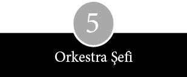
Stephen Wozniak, Bill Fernandez ve Steven Jobs birbirlerinin farklı özelliklerini dost gözüyle tanıdılar. Hepsi de içedönük kişilerdi; kendi dünyalarının mahremiyetine gömülmüşlerdi. Arada bir durup birbirlerine baktıklarında, her biri diğerlerinin çekingen ve içekapalı bireyler olduğunu fark ediyordu. Üçü de farklı kişilik özelliklerine sahipti. Fernandez ilk kez Cupertino Ortaokulu’na girdiğinde karşılaşmıştı Jobs’la: “Sekizinci sınıftakiler onu nedense garip bulur, pek sevmezlerdi. Az sayıdaki arkadaşından biri de bendim.” Jobs da, Fernandez de elektroniğe Wozniak kadar kafayı takmış değildi. Bilgisayar el kitaplarını yutar gibi okumuyor, bütün günlerini bilgisayar odalarında geçirmiyor ya da kâğıt tomarları üzerindeki talimatlara saatlerini vermiyorlardı. Ama yine de elektroniği keyif verici ve ilgi çekici bir zaman geçirme aracı olarak görüyorlardı.
Fernandez ile Jobs garajlarının sakin ortamında birbirlerinin işine karışıyorlardı. Bir ışık yandığı zaman başka bir ışığı da yakacak ya da söndürecek fotoselli bir kutu yapmak için cahilce uğraşıp durdular. Bir model oluşturacak kadar matematik bilgisinden yoksundular ama şemalar çizerek, röleler, transistorlar ve diyotlarla bir cihaz üretmeye çabaladılar. Paul Jobs lazer alanında uzmanlaşmış bir firma olan Spectra Physics şirketinde makinist olarak çalışmaya başlayınca, Fernandez ile Jobs’un elinden lazer aletlerinin parçaları hiç eksik olmadı; ama bunlar zamanla Los Altos’a geri döndü. Gençler rock müzik çaldılar, stereo hoparlörlerin yansıtıcılarını ayarladılar, aynalara lazer tutup duvara yansıttıkları görüntüleri izlediler.
Wozniak ve Fernandez gibi Jobs’un gözünde de bilim fuarları dayanılmaz forumlardı. Jobs, Cupertino Ortaokulu’ndayken, alternatif akımı kontrol etmek amacıyla kullanılabilecek silikon kontrollü bir rektifiye cihazıyla katılmıştı fuara. Homestead Lisesi’ne girdikten sonra, gayet doğal olarak John McCollum’un elektronik sınıfına yazıldı. Wozniak’tan farklı olarak o, öğretmenin el üstünde tuttuğu gözde adam olamadı, sıkı korunan malzeme odasına girme izni alamadı, zaten bir yıl sonra da dersi bıraktı. McCollum’un Jobs hakkındaki kişisel yorumu şöyleydi: “Olaylara farklı bir bakış tarzı var. Bana kalırsa, tamamen kendi başına buyruk biri. Kendine özgü bir düşünce tarzıyla hareket ediyor.” Bir keresinde McCollum, Jobs’a gereken bir parçayı bulamadı, bunun üzerine Jobs Detroitli tedarikçi Burroughs’un halkla ilişkiler departmanını aradı. McCollum itiraz etti: “Onları ödemeli arayamazsın.” Jobs’un yanıtı netti: “Telefon param yoktu, onlarda para bol, n’olacak ki?”
Fakat elektroniğin burgacı o kadar güçlüydü ki, Jobs’un başını da döndürmeye yetti. Sunnyvale Moffett Sahası’na kurulan NASA’nın uçuş simülatörünü birkaç kez ziyaret etti. Okulun elektronik kulübünün toplantılarına katıldı. Bir iki arkadaşıyla birlikte Hewlett-Packard Araştırmacılar Grubu’nun toplantılarına girip şirket bilim adamlarının konferanslarını izledi. Hewlett-Packard’ın en yeni hesap makineleri, ışık saçan diyotlar ve lazer inframetrisi alanında kaydettiği gelişmelerden söz ediliyordu. Bir konferans sonrası Jobs bir bilim adamını esir aldı; Hewlett-Packard’ın holografi laboratuvarını gezdi, bu arada kendisine eski bir hologram verdiler. Başka bir seferinde Hewlett-Packard’ın kurucularından Bill Hewlett’in evine telefon açıp bir iki parça istedi. Parçaları temin eden Hewlett, ayrıca Jobs’a yazın yanında çalışması için başvuracağı bir kişinin adını verdi. Lisedeki ilk yılı sona eren Jobs, yazın Hewlett-Packard’ın frekans sayaçları imalatının montaj bölümünde çalıştı. Fabrikada gözünün önünden gelip geçen cihazların ayartıcı etkisiyle, kendi frekans sayacını tasarlamaya karar verdiyse de projesini asla tamamlayamadı.
Jobs’la Wozniak’ın kullandığı direnç, kondansatör ve transistorlar ya yerel elektronikçi dükkânlarından ya da posta siparişi yoluyla ellerine ulaştı. Jobs da en az Wozniak kadar bu ürünlerin kalitesi ve ünü hakkında bilgi sahibiydi. Her ikisi de büyüyüp bisikletten otomobile terfi ettikçe, alışveriş tercihleri de genişledi. Sunnyvale Elektronik en uygun alışveriş noktalarından biriydi. El Camino Real’in hemen dışında bulunan bu dükkânın cephesi kaya taklitleriyle kaplanmıştı, ama içindeki mallara diyecek yoktu. Yeni parçalar, düzinelerle dergi ve tanıtım kılavuzu, ortaokuldayken otuz beş sent öğle yemeği parasından biriktirerek aldığı on sekiz dolarlık telsizler vardı. Radio Shack’de satılan parçaların kalitesinin daha düşük olduğuna inandıklarından, bu mağazalardan uzak durmayı öğrenmişlerdi. Parlak neon ışıklı Radio Shack’ler diğer yerler kapandığında geç saatte gidilecek son çareydi.
Sunnyvale Elektronik, Radio Shack ve Solid State Music gibi dükkânlar, Mountain View’de anayolun karşı yakasında, donanmanın 1930’larda zeplinleri koymak için inşa ettiği üç devasa hangardan uzun, açık çikolata renkli olanını işgal etmiş Haltek’in yanında cüce gibi kalıyorlardı. Bu bina dışarıdan bakıldığında bir ordu yemekhanesini andırıyordu. İçersi tam bir elektronik hurdalığıydı ve tıpkı bütün hurdalıklar gibi mezarlık ile doğumhane arası bir yerdi. Ön tezgâhta yürütülen pazarlıklar ve çelik spiralle birbirine tutturulmuş kalın, parça katalogları elektronik âlemindeki arz-talep durumu hakkında bir fikir vermeye yetiyordu. Bazı kalemler, çoğunlukla da küçük ve ucuz parçalar yepyeniydi, ama en yeni parçaların Haltek’e düşmesi genelde birkaç ayı buluyordu. Ancak, bu mağazada dinozor dişinin elektronik muadilini bile bulabilirdiniz: Vakum tüpleri. Müşteri ne aradığını mutlaka bilmek zorundaydı, en deneyimliler bile her zaman, bir parça ABD’de mi üretilmiş, yoksa Uzakdoğu’dan mı gelmiş, bilemeyebilirdi. Burası, iş sonrası şöyle bir uğrayan elektronik mühendislerinin; metal merdivenlerin tepesine tünemiş gıcır gıcır düğmeler, basmalı anahtarlar, değişken hareketli çekmeli düğmeler, ışıklı seviye anahtarları, itmeli-çekmeli düğmeler ve kaydırmalı şalterlerin altını üstüne getirip en iyisini arayan gençlere tosladıkları bir yerdi.
Dar koridorlar, beton zeminden başlayıp kirli borular ve tozlu neon lambalarıyla kaplı tavana kadar uzanan metal çerçevelere tutturulmuş tahta raflarla gölgelenmişti. Kullanılmış karton kutulardan bozma gözlerde yüz binlerce parça yatıyordu. Bazı kutuların şekli kaymıştı. Rezistanslar rulolar halinde paketli dururken, tamamı yalnızca kondansatörlere ayrılmış raflar vardı. Daha pahalı donanımlara ait parçalar ya cam muhafazalarda ya da ayrı bir koridorda sergileniyordu. Bu tür koridorlara Leeds ve Northrup Speedomax ya da Honeywell Digitest gibi egzotik isimler verilmişti. Mekanik enerjiyi elektrik enerjisine çeviren jeneratörlerin bile gül kadar çok çeşidi vardı: İkazlı ve güçlü, çok devirli ve değişken yakıtlı (hibrid). Sık gelen ziyaretçilerden birine göre Haltek gibi bir mağazada dolaşmak “muazzam bir alet setinin çevresinde dolanmaya benziyordu. Mümkün olabilecekler hakkında fikir veriyordu.” Ayrıca mühendisler buraya, ancak piyano taşıyıcılarının nakledebileceği kadar büyük makinelerle yapraktan hafif diğer cihazların nasıl bir üne sahip olduğunu öğrenmeye geliyorlardı.
Jobs bazı hafta sonlarını Sunnyvale’deki Halted Specialties’te tezgâh arkasında çalışarak geçiriyordu. Burada en yeni yarıiletken çiplerden ölçü aletlerine kadar çeşitli parçaların değerlerini ve satış düzeylerini öğrendi. Birlikte, Güney San Francisco’nun bütün artıkçılarını cezbetmiş gibi görünen bir kasaba panayırı ile garaj satışının devasa bir karışımını andıran, San Jose Bit Pazarı’nda malzeme karıştırmaya gittikleri bir cumartesi sabahı, Wozniak’ı hayrete düşüren bir olay oldu. Jobs daha sonra Halted’daki patronuna –belli bir kârla– sattığı bir miktar transistor satın aldı. Wozniak, “Bana çok tuhaf bir fikir gibi gelmişti, ama o ne yaptığını biliyordu,” diyecekti daha sonra.
Ne ki Jobs’un hayatında elektronikten fazlasına da yer vardı. Meraklı ve maceracı bir çocuktu ve yaşamın duygusal çalkantılarına açıktı. Frekans sayaçları ile lazer ışınları kadar sanatsal ve edebi meraklarına da zaman ayırıyordu. Edebiyat ve klasik filmler ilgisini çekiyor, Shakespeare okuyor, İngilizce öğretmenini idolleştiriyor ve The Red Balloon gibi filmler aklını başından alıyordu. Yüzme çok fazla zamanını almaya başlayınca, onu bırakıp sutopu oynamaya heves ettiyse de koçu, rakiplerinin kasığına diz atmasını isteyince bıraktı. “Ben sporcu değildim. Çoğu zaman yapayalnız bir avareydim.” Stephen Wozniak’ın kardeşi Mark gibi bazı liseli akranları, Jobs’u “gerçekten tuhaf” buluyordu. Jobs bir süre de okul bandosunda trompet çaldı.
Birkaç arkadaşıyla, isminden müstehcen bir anlam çıkarılabilecek Buck Fry Club diye sıradışı bir grup kurdu. Bir tuvalet oturağını altın sarısına boyadıktan sonra bir çiçekliğin üzerine betonla sabitlediler ve okul kantinin çatısına bir Volkswagen tosbağa kondurdular.
Jobs’un okuldaki ilk yılının sonunda, Wozniak ve Baum’la birlikte mezuniyet sınıfı için dikkat çekecek bir eylem planladılar: Uzun süre unutulmayacak bir jestle uzanan dev bir elin bulunduğu, yeşil-beyaz okul renkleriyle boyalı dev bir afişi bir binanın yan cephesine boydan boya astılar. El resmini, Brezilyalıların şans simgesi olduğu söylenerek ikna edilen Baum’un annesi çizip boyamıştı. Afişin alt kısmında üçünün isimlerinin başharfleri birleştirilmişti: SWABJOB YAPIMI. Çok geçmeden Jobs açıklamada bulunmak üzere müdürün odasına çağrıldı, ardından oğlunu savunmak için babası Paul Jobs okula geldi.
Steven Jobs aynı zamanda hem ruhunu hem de bedenini tatmin edecek heyecanlar peşindeydi. Paul Jobs’un küçük, daracık ve güvensiz bulduğu ilk arabası kırmızı Fiat kupe sayesinde Los Altos dışına çıkması kolaylaştı. Jobs, arabası olunca arkadaşlarını ziyaret edebildiğini fark etti. Jobs –aradaki bir yaşlık farkın sanki on yaş gibi geldiği– çoğu lise öğrencisinden farklı olarak, kendisinden birkaç yaş büyüklerle bile kolaylıkla arkadaşlık kurabiliyordu. Arkadaşları arasında birkaçı Berkeley’de okurken, birkaçı da Stanford’daydı. Jobs sağı solu belli olmayan arabasıyla San Francisco Körfezi’ni dolanıp Berkeley’e kadar gidiyor, Stanford Üniversitesi’nin kafelerinin çevresinde turlamaya bayılıyordu. Daha geniş bir dünyaya doğru yaptığı bu açılma hamleleri genel ilgi alanını genişletiyordu. Bu dönemde uykusuzluk çekmeye başlayan Jobs’un bazen art arda iki geceyi ayakta geçirdiği oluyordu. Derken marihuana ve haşhaş içmeye, pipo tüttürmeye başladı; bir gün uyuşturucuları arabada unutunca babası fark etti.
Oğluna, “Bu arabada bulduğum şey neyin nesi?” diye soran Paul Jobs’un aldığı karşılık şöyle oldu: “Marihuana baba.”
Jobs lise son sınıfta ilk ciddi kız arkadaşıyla karşılaştı. İlgisini çeken Nancy Rogers, ikinci sınıfı iki yılda bitirdiği için kendisinden bir yıl öndeydi. Uzun saçlı, yeşil gözlü ve elmacıkkemikleri çıkık bir kız olan Nancy’nin bohem bir havası ve çekici bir kırılganlığı vardı. Rogers, GTE Sylvania Elektronik Sistemler Bölümü’nde mühendis olan babasıyla annesinin şiddetli bir geçimsizlik içinde yaşadığı, Homestead’den iki blok ötedeki bir evde oturuyordu. “Ailem parçalanmak üzere olduğundan, sarsıntı geçiriyordum. Steve çılgının teki gibi duruyordu. Bana çekici gelmesinin nedeni buydu.” Babası ise şöyle düşünüyordu: “Nancy’nin tutunabileceği birine ihtiyacı vardı; Steve de ona sevecen davranıyordu.” İkili, Rogers’ın, okul idaresinin pek hoş bakmadığı bir çizgi film üzerinde çalıştığı sırada karşılaştılar. Meraklı gözlerden kaçmak için film çalışmasının büyük bölümü, kilitlenen okul binasında, gece yarısından sonra yapılıyordu. Jobs gibi birkaç öğrenci ellerinde ışıldaklar ve stereolarla binaya damlıyordu. Bu faaliyetleri bazen belli bir uzaklıktan izleyen Wozniak ise bu durumu, genç arkadaşının porno film yapımına merak sardığı yolundaki acımasız (ve de dayanaksız) spekülasyonlara yoruyordu.
Jobs ile Rogers liseli sevgililer oldular. Jobs’un lisedeki son yılında sık sık okulu astılar, öğle sonralarını şarap içip sohbet ederek geçirdiler. Santa Clara gibi bir banliyönün izin verdiği ölçüde kırlarda koşup eğlendiler. Jobs ilk LSD’sini bir buğday tarlasında içti.
Olağanüstüydü. Bol bol Bach dinlerdim o sıralar. Birden buğday tarlası Bach çalmaya başladı. Hayatımda o âna kadar yaşadığım en mükemmel olaydı bu. O an kendimi buğday tarlasından yükselen Bach senfonisinin orkestra şefi gibi hissettim.
Jobs liseden mezun olduğunda incecik, sıska biriydi. Uzun siyah saçları ve seyrek sakallarından ötürü annesi birden fazla mezuniyet fotoğrafı satın almamayı tercih etti. Jobs, Homestead’den ayrılınca, yazı Nancy ile birlikte geçirmeye karar verdi. Cupertino ile Los Altos’a bakan tepedeki bir kulübenin küçük bir odasını kiraladılar. Nancy o günleri şöyle anımsıyor:
Öyle ciddi ciddi düşünülmüş bir adım değildi. Öylesine yaptık gitti işte. Steve aklına eseni yapan biri olduğundan, kolayca yapabildik; benim de annemle babam ayrılmak üzereydi, bu yüzden benim için de zor olmadı. Birbirimizi gerçekten seviyorduk.
Jobs taşınacağını ailesine bildirdi.
Bir gün öylesine, “Ben Nancy ile yaşayacağım,” dedim.
“Ne?” dedi babam.
“Evet. Bir oda tuttuk. Birlikte yaşayacağız.”
“Hayır, yaşamayacaksınız,” diye tepki verdi.
Ben de, “Evet, yaşayacağız,” dedim.
O, “Hayır, yaşamayacaksınız,” dedi.
Ben, “Öyleyse, hadi bana eyvallah,” deyip çıktım.
Jobs’la Rogers birlikte romantik bir ilkgençlik yazı geçirdiler. Maryknoll Ruhban Okulu’nun kapılarından içeriyi gözetlemek için gezintilere çıktılar; Rogers’ın tahta bir zemin üzerine siyah bir kadın resmi çizdiği Baldi Tepesi’ne doğru uzun yürüyüşler yaptılar. Jobs’un şairlik hevesi tuttu, bir gitar aldı ve Wozniak’la birlikte Bob Dylan’ın müziğine vuruldular. Santa Cruz’da Dylan üzerinde uzmanlaşmış, onun şarkı kitaplarının kopyalarını, onunla ilgili haberlerin çıktığı dergileri, kayıt sırasında ve Avrupa konserlerinde yapılmış kaçak kayıtları satan bir dükkân buldular. Dylan’ın şarkı sözlerinin yer aldığı kitaplardan bazılarını satın alıp, SLAC’a götürüp Xerox makineyle fotokopi çektiler. Bu arada aile bağlarının önemini ortaya çıkaran bazı felaketler de yaşandı. Jobs’un Fiat’ı Skyline Yolu’nda kısa devre yapıp alev alınca babası arabayı evin önüne çektirdi. Arabanın hasarını ödemeye yardımcı olabilmek ve geçinebilmek için Jobs, Wozniak ve Rogers San Jose’deki Westgate Alışveriş Merkezi’nde işe girdiler. Giydikleri ağır kostümlerle çocuklar için kurulmuş bir masal dünyası olan Alice Harikalar Diyarı standı önünde, saati üç dolara şirinlik yapıp durdular. Wozniak bu işten zevk aldığı halde, Jobs hiç de aynı fikirde değildi: “Kostümler bir ton ağırlığındaydı. Dört saat ayakta kalınca, insanın içinden çocuklardan bazılarını imha etmek geçiyor.” Nancy Alice rolünü; Wozniak ile Jobs ise sırayla Beyaz Tavşan ile Çılgın Şapkacı rolünü üstleniyorlardı.
Amerikan Telefon ve Telgraf Şirketi davalık bir ihtilafta, politikasını açık bir dille ilan etti: “Telefon Şirketi’nin kurduğu tesislere, Telefon Şirketi tarafından temin edilmeyen hiçbir ekipman, cihaz, devre ya da aygıt takılamaz ya da bağlanamaz.” Dr. No, Cheshire Cat, The Snark, Cap’n Crunch, Alefnull, The Red King ve Peter Perpendicular Pimple buna itiraz ettiler. Bunlar, hayatlarını ücretsiz uzun mesafeli görüşmeler yapmak için kullandıkları mavi kutuları –sigara paketi büyüklüğündeki elektronik aletler– geliştirmeye adayan ve böylelikle dünyanın en büyük şirketini aldatıp taciz eden ve çileden çıkaran izinsiz telefon kullanıcıları, yani telefon korsanlarıydı.
O tarihte, özellikle de ileriki yıllarda mavi kutularla ve kudretli telefon sistemiyle oyun oynama bahaneleri çoğaldı ve takma isimleri kadar zengin, yaratıcı bir görünüme büründü. Mavi kutu insanoğlunun icat ettiği en büyük bilgisayar koleksiyonunu keşfetme fırsatı sunmuştu. Donanım ile yazılımın evliliğini tüm dünyaya açmıştı. Entelektüel bir uğraştı bu. Bir meydan okumaydı. Memnuniyet kaynağıydı. İnsanların ilgisini üzerine çekmişti. Güç tutkusunu körüklemişti. Bazı efsanevi telefon korsanlarıyla görüşmek bir ayrıcalıktı. Kimileri ciddi ciddi bunun pratik avantajları olduğunu izah etme çabasına bile girdiler. Mavi kutu, dediler, telefon şirketinin koyacağı devrelerden daha sessiz, daha dolaysız devrelerdir. Ve yasadışı olduğunu bile bile, yaptıklarının AT&T, GTE veya yüzlerce küçük, bağımsız telefon şirketinden hırsızlık yapmak demek olduğunu çok azı kabul etti. Steve Jobs, “Biz, bu küçük kutuyu imal ederek, dünyanın her tarafıyla telefon görüşmesi yapmanın tamamen akıl almaz bir şey olduğu kanısındaydık,” diyordu.
Esquire dergisinde Margaret Wozniak’ın gözüne, büyük oğlunun ilgisini çekeceğini düşündüğü bir makale çarpınca, Jobs ile Wozniak ister istemez mavi kutu üreticilerinin peşine düştüler. Annesi haklıydı. Okkalı bir kitabın beşte biri büyüklüğündeki makalenin başlığı “Küçük Mavi Kutunun Esrarı” idi ve altbaşlığında “Telefon şirketi adına üzülmenize yol açabilecek kadar inanılmaz bir hikâye” yazıyordu. 1971 Ekimi’nde yayımlanan bu öykünün herkesin hayal dünyasını sarsacağı kesin olmakla birlikte, osilatörlerden hayali bomba imal eden, yatak odasının pencerelerinde lazer ışık oyunları oynayan yeniyetme gençleri etkilememesi olanaksızdı.
Amerika’nın dört bir yanında, en yakın dostunu telefon hattının diğer ucundaki seste bulan, duygusal yalnızlık içinde kıvranan kalabalıkların oluşturduğu yasadışı bir izinsiz telefon kullanıcıları topluluğundan söz ediliyordu. En dikkat çekici karakterlerden biri, çıkardığı ıslık sesiyle telefon kumanda donanımını kandırmayı başaran yirmili yaşlardaki kör bir adam Joe Engressia, diğeri ise Cap’n Crunch kahvaltılık gevreği promosyonu sırasında dağıtılan plastik düdüklerin çıkardığı sesin, ücretsiz telefon açmaya yaradığını fark edince bu ismi alan Captain Crunch’dı. Meğer düdüğün çıkardığı 2.600 hertzlik ses tonu telefon şirketinin uzun mesafeli konuşmaları yönlendirmede kullandığı ana sinyalle çakışıyormuş.
Wozniak verilen teknik ayrıntıların kulağa gayet sahici gelmesinden, frekanslara ve devrelere yapılan sağlam referanslardan etkilenerek, hikâyeyi yutarcasına okudu. Daha bitirmeden, henüz Homestead Lisesi’nde ikinci sınıf öğrencisi olan Jobs’u arayıp dergideki yazıdan pasajlar okumaya başladı. Telefon ve telefon sistemi, iki arkadaşın üzerinde ciddi olarak kafa yordukları bir alan değildi, ama sözü edilen mavi kutular açıkça elektronik cihazlardı ve yararlı bir işlevin ötesinde bir performans vaat ediyorlardı. Esquire’daki hikâye, güvenilir bir mavi kutu imal etmek için dört aylık bir belge arama ve araştırma çalışmasını başlattı. Daha çok ipucu içeren bir kitap bulma umuduyla Palo Alto’nun altını üstüne getirdiler; Stanford Linear Accelerator Merkezi (SLAC) kütüphanesinin raflarını allak bullak ettiler. Yazıda açıklanan ayrıntılardan dehşete kapılan telefon şirketi ise kütüphaneleri arayarak raflarındaki telefonla ilgili teknik kitapları kaldırmalarını istedi. Gururlu bilim insanlarının çalışmalarının en gizli ayrıntılarını açığa vurdukları Bell Sistemi Telefon Günlüğü (The Bell System Telephone Journal) ve Bell Laboratuvarları Tutanakları (The Bell Laboratories Record) gibi birçok rehber kitap birden raflardan yok oldu. SLAC’daki raflar tamamen ayıklanmıştı, ama görevliler bir iki can alıcı önemdeki eseri atlamışlardı; Wozniak ile Jobs bu temizlikten paçasını kurtarmayı başarmış CCITT Masterdata adlı bir kitap bulmayı başardılar. Çokfrekanslı tonlara ilişkin referanslar ve tonları çıkaran devrelerin imalat tariflerini bulmak için endeksi taradılar ve gözden geçirdikleri detayların Esquire’daki öyküdeki tanımlarla uyuştuğunu tespit ettiler.
Güvenilir bir mavi kutu yapmak ise farklı bir işti. İkili, başlangıç olarak kasete kaydetmeyi planladıkları ses tonları üretecek bir osilatör yapmaya karar verdi. Popular Electronics dergisinde tarif edilen bazı devrelerle bir osilatör tasarladılar, ancak, istikrarlı ses tonları üretmenin çok zor olduğunu gördüler. Osilatörün sağı solu belli olmuyordu, ısı değişikliklerine çok duyarlıydı, telefon şirketinin ekipmanı ise kalitesiz işi kaldırmıyordu. Doğru notaları yakalama gayretiyle, osilatörü elle ayarlamak için saatler harcadılar; Jobs, sonuçları frekans sayacıyla ölçtü. Sonunda telefon açmak için gereken tonları kaydettiler, ama teyp kasetinin, telefon şirketini kandırmasını sağlayamadılar.
Osilatörlerin dalga formlarıyla analog devre şematiğinin huysuzluklarını ehlileştirmeyi başaramayan Wozniak, dijital tasarıma yöneldi. Dijital bir mavi kutu yapmak bir osilatör yapmaktan çok daha zahmetliyse de daha kaliteli ses tonları üretebiliyordu. Kompakt mavi kutular yapma konusunda, izinsiz telefon kullanıcıları arasında gayriresmi bir rekabet vardı; Wozniak bu rekabetin etkisine kapılmıştı. Basıncı, net, tutarlı tonlar halinde itme düğmelerine taşıyacak devreler tasarlamalıydı. Aritmetikten yararlanma gayesiyle, Berkeley bilgisayarlarından birinde çalışacak bir program yazdı.
Birkaç hafta sonra ilk dijital mavi kutu tamamlanmıştı. 9 volt pille çalışan küçük bir hoparlöre sahip kutu, zekice bir numara sayesinde, özel bir açma kapama düğmesi gerektirmiyordu. Üzerindeki basmalı düğmelerden hangisine dokunsanız, enerji devreye giriyordu. Jobs ile Wozniak ilk telefonu Wozniak’ın Los Angeles’te oturan büyükannesine açmaya karar verdilerse de yanlış numara çevirdiklerinden, telefonu açan Los Angeleslı herhalde, “Çalışıyor! Sahiden çalışıyor! Sizi bedavaya arıyoruz,” diye yana yakıla bağıran birileri karşısında hayli şaşırmış olmalı.
Wozniak’la Jobs için güvenilir bir kutu yapma çabası kadar, Telefon Korsanlarının Kralı Captain Crunch’ı yakalamak da takıntıya dönüşmüştü. Esquire’daki öykünün yazarını aradılar; o da Crunch’ın gerçek adını açıklamayı kibarca reddetti. Derken Jobs, Crunch’ın bir Los Gatos FM radyo kanalına röportaj verdiğini öğrendi. Bunun üzerine radyo istasyonuna koştularsa da burada da ismini açıklayamayacaklarını bildirdiler. Sonunda bir gün, telefon korsanlığı âleminin ne kadar küçük ve ketum olduğunu gösteren bir olay meydana geldi. Berkeleyli bir korsan, Wozniak’a Captain Crunch’la Cupertino’daki KKUP adlı bir FM radyo istasyonunda birlikte çalıştıklarını ve gerçek adının John Draper olduğunu söyledi. Jobs, KKUP’yi arayıp Draper’ı istedi, telefona çıkan kişi mesaj bırakabileceğini belirtti. Birkaç dakika sonra telefon çaldı: Telefondaki kişi, buyurun, ben Captain Crunch, diyordu. Wozniak’ın 1971’de girdiği Berkeley’deki yurt odasında birkaç gece sonrası için randevulaştılar.
Olaya sanki papanın ziyareti söz konusuymuş gibi önem veriyorlardı. Jobs, Los Altos’tan geldiğinde, heyecanını zor bela dizginleyen Wozniak’ı yatağın ucuna ilişmiş buldu. Bir sürü kafadar, kapının çalınmasını bekliyordu. Sonunda kapı çalınınca, Wozniak karşısında koridorda dikilen hırpani kılıklı birini gördü. Üstünde blucin, ayağında spor ayakkabı vardı; saçları darmadağınık, suratı tıraşsız, gözleri şaşı bakıyordu ve birçok dişi eksikti. Wozniak’ın anımsadığı kadarıyla, “Berbat bir görünüşü vardı. ‘Sen Captain Crunch mısın?’ diye sordum. ‘Evet, o benim,’ diye yanıtladı Draper.” Dolambaçlı yapmacıklığına ve güvenilmez bakışlarına karşın Draper, o gece bizimkilere güzel bir eğitim verdi. Yurdun telefonunda birtakım numaralar çekti, bazı uluslararası numaraları aradı, birkaç telefonda fıkra anlatma servisine takıldı ve başka şehirlerin hava durumu tahminlerini dinledi.
Ayrıca, çevresini saran meraklılara, Amerika’nın değişik şehirlerinde bir aramayı bir tandemden diğerine sıçratarak, sonunda da koridorun karşı tarafındaki bir telefonu arayarak, “üst üste tandem istifleme”yi öğretti. Telefon zincir reaksiyonu bir kez kurulduktan sonra, Jobs ile Wozniak yurt koridorunun öte yanında çalan telefonu dinlerken, Draper elindeki ahizeyi kapatıyordu. Zil sesleri basamak basamak sonlanmaya doğru giderken, bir yankı hattı gibi art arda çalan tandemleri herkes duyuyordu.
Ders, Berkeley’in pizza salonu Kips’te de devam etti. Draper, Wozniak’ın mavi kutusundan etkilenmişti: “Hiç kaymıyor, bu yüzden de ayar yapmak gerekmiyordu, ama sesi biraz teneke gibi çıkıyordu.” Draper, Jobs ile Wozniak’a diğer telefon korsanlarının numaralarını, bazı özel telefon numaralarını, ülke kodlarını, yeraltı kablo şifrelerini, uydu ve giriş kodlarını verdi. Onları uzak mesafe bağlantı merkezleri, konferans köprüsü, yönlendirme göstergesi, denetim sinyali ve trafik hizmeti konumlandırma istasyonu gibi ayrıntılar hakkında bilgilendirdi. Draper, Wozniak ile Jobs’u, ortalıkta mavi kutuyla dolaşmamaları ve mavi kutuyla arama yaparken mutlaka paralı telefonları kullanmaları konusunda uyardı. Wozniak, “Şimdiye kadar yaptığımız en muazzam toplantıydı,” diyordu.
Aynı gece Wozniak’ın arabasını bıraktığı yere, Los Altos’a dönerlerken Jobs’un kırmızı Fiat’ı arızalandı. İlk kez çevreyolu rampasında paralı bir telefondan mavi kutuyu kullanarak, aynı istikamette ilerleyen Draper’a ulaşmaya çalıştılar. 800’lü bir numarayı istemek için operatörü aradılar ve operatör hâlâ hatta olup olmadıklarını kontrol etmek için geri arayınca heyecana kapıldılar. Bir polis arabası yanlarına yanaştığı sırada Jobs, mavi kutuyu ortadan kaldırmış, normal bir telefon araması yapar gibi davranıyordu. Polisler onlara telefonun yanından uzaklaşmalarını emrettikten sonra, çalılıkları aramaya başladılar. Bacaklarını iki yana açıp duvara dayanmalarının söylenmesinden az önce Jobs kutuyu yavaşça Wozniak’a vermişti ki, polisler o an kutuyu fark ettiler.
“Nedir bu?” diye sordu içlerinden biri.
Wozniak, “Bir synthesizer,” diye karşılık verdi.
“Bu turuncu düğme ne işe yarıyor peki?”
“Aa, o mu, o kalibrasyon için,” diye lafa girdi Jobs.
Wozniak, “Bilgisayarla kontrol edilen bir synthesizer bu,” diyerek işi daha da ilerletti.
“Öyleyse bilgisayar nerede?” diye sorunca,
“İçten bağlantılı,” diye yanıt verdi Jobs.
Sonunda uzun saçlı bu iki gencin üzerinde uyuşturucu bulunmadığına kanaat getiren polisler, Jobs’la Wozniak’ı anayolun çıkışına kadar götürdüler. Yolda polislerden biri, mavi kutuyu geri verirken, “Ne kötü. Moog denen bir adam vardı, bayılırdı buna,” dedi.
“Aa, evet,” dedi Jobs. “Bize şemalarını o gönderdi zaten.”
Wozniak o gece, Ford Pinto’sunu Jobs’un evinin önünden aldıktan sonra, Berkeley’e geri dönmek üzere yine Nimitz Çevreyolu’na girdi; bir süre sonra bir an için gözleri kapanınca, araba bariyerlere çarparak paramparça oldu.
Wozniak ve Jobs yeni uğraşlarına uygun bir isim aradılar. Wozniak gayet güvenli görünen Berkeley Mavisi adını yeğlerken, diğeri Sakar Tobark adında karar kıldı. Wozniak, Berkeley’deki ilk yılının birinci çeyreğini tamamladığında, kendini tamamen mavi kutulara adamış durumdaydı. Dergi makaleleri ile gazete yazılarını topluyor, en iyilerini duvara yapıştırıyordu; basılı materyali çok aydınlatıcı buluyordu. Teknolojik Amerikan Partisi’nin (TAP) yayımladığı bir bültene abone olmuştu. Ayrıca Telefon Elektronik Hattı (TEL) gibi yeraltı gazeteleri ile “Uluslararası Telefon Korsanları” ve “Amerikan Telefon Korsanları” gibi hücrelerden haberdardı. Ancak çoğunlukla Jobs’la birlikte, MIT’de bilgisayar okuyanları cezbeden bir çevrenin etrafından ayrılmıyor, Stanford’daki Yapay Zekâ Laboratuvarı’nın çevresinde dolaşıp duruyor ve en yeni hırsızlık numaralarını içeren bilgisayar dosyalarını izliyordu.
Wozniak ve Jobs bir üniversite çevresinde takılmaktansa, pratik meselelerle ve ellerindeki cihaz koleksiyonunu büyütmekle daha çok ilgileniyorlardı. Wozniak, Abbie Hoffman’ın Bu Kitabı Çalın (Steal This Book) adlı kitabı ile sol görüşlü dergi Ramparts’taki makalelerden yararlanarak, parasız çağrı alma olanağı veren bir kara kutu ile paralı bir telefona atılan bozuk para sesini taklit eden bir kırmızı kutu edindi.
Ama bu silah koleksiyonunun en kazançlı ve eğlenceli parçası yine de mavi kutuydu. Wozniak bir süre sonra, onun meziyetlerini arkadaşlarına da gösterdi. Homestead Lisesi yakınlarındaki iki telefon kulübesinde kutunun marifetlerini Allen Baum’a gösterdi. Bir kulübeden diğerine telefon açtı. Baum o kulübede alo dedikten sonra ötekine koşup sesinin yankısını dinledi. Wozniak İsrail’de bir kibutz’da yaşayan ablasına telefon etti. Jobs’un zorlamasıyla, hobi olarak amatörce uğraştıkları bu şeyleri küçük bir işe çevirdiler ve cihazları satmaya başladılar. Wozniak ortağının “para istediğini” söylüyordu.
İkili, müşteriler bulup satışları patlatmak için kendi pazarlama tekniklerini uygulamaya başladı. Berkeley erkek yurdunun (bu minik alete çok az kadının ilgi göstereceği varsayımıyla) koridorlarında dolaşıp kapıları çalıyor, önceden prova ettikleri girişimlerine gelecek tepkiyi ölçüyorlardı. Ürkek bir ses tonuyla, “George burada mı?” diye soruyordu içlerinden biri. “George mu?” diye şaşkın bir cevap geliyordu içerden. “Evet George. Hani mavi kutulu çocuk var ya. Telefonla ilgili numaralar yapan. Uzak mesafeli telefon görüşmelerini parasız yapan mavi kutulu çocuk.” Jobs ile Wozniak potansiyel müşterilerinin yüzündeki ifadeyi inceleyip şaşkın, ürkek bakışlarla karşılaşırlarsa yanlış kapı çaldıkları için özür dileyerek uzaklaşıyorlardı. Ama odadakilerde merak uyandırmayı başarırlarsa potansiyel müşterilerini bir mavi kutu gösterisine davet ediyorlardı.
Birkaç hafta içinde yurttaki satışlar belli bir düzeye ulaştı. Wozniak bir aligator klipsiyle telefona bir teyp bandı astıktan sonra, Jobs’la birlikte mavi kutunun temel çalışma prensibini anlattı. Ardından hep birlikte marifetlerini izlemeye başladılar. Özellikle Wozniak ilginin merkezinde olmaktan büyük bir keyif duyuyordu. “Muazzam bir gösteriydi.” İzleyicilerin ABD içindeki arkadaş ve akrabalarının ev numaralarını aradılar. Ardından yurtdışını aramaya başladılar ve en sonunda –Berkeley’de başlayıp birkaç ülkedeki operatörlerden sıçrayarak, Berkeley’de yakında bulunan başka bir telefonda sona eren– küresel bir link oluşturmayı denediler. Bir ara Jobs Londra’daki Ritz Otel’de büyük bir parti için oda ayırtmaya kalktı, ancak, kıkırdamasına engel olamayınca ahizeyi Wozniak’a verdi. Bir keresinde de Wozniak Devlet Bakanı Henry Kissinger’in taklidini yaparak Vatikan’ı aradı ve ruhani liderle görüşmek istediğini söyledi. Papa’nın henüz uykuda olduğunu belirten bir Vatikan yetkilisi, eğer isterse uyandırmak için birisini gönderebileceği yanıtını verdi. Bu sırada telefonu alan başka bir görevli oyunu fark etti.
Yapılan gösteriler insanların merakını kamçıladı; Jobs ile Wozniak, arkadaşlarına, uzaktaki tanıdıklarının numaralarına göre ses tonları içeren teyp bantları hazırladılar. Bunlar, arkadaşlarının en sık aradıkları numaralardı. Bu gece gösterileri sipariş getirdi. İki ortak aralarında mavi kutu üretimi için gayriresmi bir anlaşmaya vardı. Jobs 40 dolar tutan parçaları temin etme sorumluluğunu üstlenirken, Wozniak da o tarihte 150 dolara giden kutunun montajı için dört saat uğraşmayı üstlendi. İkili, kutunun imal süresini azaltmak için kablo bağlantılarını elle yapmak yerine baskılı devre kartı kullanmaya karar verdi. Böylece bir kutunun kablo bağlantılarına dört saat harcamaktan kurtulan Wozniak, şimdi bir kutuyu bir saatte bitirebilecekti. Ayrıca, bir düğmeyi otomatik arayıcıya dönüştüren yeni bir özellik daha ekledi. Baskılı devre kartına küçük bir hoparlör ve pil yerleştirdi, kapağına bir tuş takımı yapıştırdı ve hepsi tamamlanınca, mor keçeli kalemle yazılı bir mesaj içeren kartı altına bantladı. Burada, “Tüm dünya onun elleri arasında” yazıyordu ve bu kart, gayriresmi bir garanti belgesi anlamına geliyordu. Wozniak kusurlu bir kutunun iadesi halinde, eğer bu kart üzerindeyse, parasız tamir edeceğine söz vermişti.
Bir yıl kadar sonra Jobs, biraz sıkıldığı biraz da yaptıkları şeyin olası sonuçlarından korktuğu için işi bırakmaya karar verdi. Kaldı ki aranabilecek akrabalar, arkadaşlar, hava durumu hatları, otomatik saatler ve fıkra hatlarının da bir sınırı vardı. Ayrıca, endişelenmekte haklıydı da. Telefon şirketleri korsanların üzerine büyük bir şiddetle gidiyordu; telefon hırsızları bir araya geldiklerinde aralarına güvenlik mensupları sızdırarak fotoğraflarını çekmeye çalışıyor, evleri göz hapsine alıyor, bağlantı santrallerine izleme aletleri yerleştiriyor, muhbirlere para teklif ediyor, çift taraflı çalışan ajanlar ayarlıyor ve sık sık baskınlar düzenliyorlardı. Bu süre zarfında sinsice girişimler ve tedirgin edici söylentiler yayılmaya başlamıştı. Bazı telefon korsanlarının güvenlikçilerin posta kutularına tarantula koyacak kadar ileri gittikleri ve organize suç odaklarının, bu işin kazançlı niteliğinden ötürü, konuya şimdiye kadar görülmedik bir ilgiyle yaklaştığı söyleniyordu.
Jobs, Captain Crunch’tan da kuşkulanıyordu. Draper’ın gözü dönmüş tarzı, telefon görüşmelerini acil çağrıyla kesme alışkanlığı, biri sigara yaktığı zaman verdiği isterik tepki, fiziksel egzersiz oturumlarına yönelik davetleri Jobs’u rahatsız ediyordu. “Anormal, tuhaf bir adamdı.” Jobs Esquire’daki yazıda çizilen efsane portresinin, abartılı olduğu kanısındaydı. Draper’ın genelde hafta sonları Lick Observatory yakınlarındaki tepeye park ettiği bir minibüsten yaptığı, 65 wattlık FM radyo istasyonu San Jose Özgür Radyosu’nun kaçak yayını da adamın garipliklerini telafi edecek gibi değildi. Jobs’un yargısı doğru çıktı. Gerçi o sıra bilmiyordu ama General Telephone firması, Draper’ın telefonuna dışarıya dönük aramaları kaydeden bir izleme cihazı takmıştı. FBI’a verilen isim ve telefon numaraları arasında haliyle Jobs’un ev nu-marası da vardı. 1972’de Draper elektronik sahtekârlığı suçuyla hüküm giydiyse de 1.000 dolar para ve beş yıl gözetim cezasıyla kurtuldu. Bu hobi başka bir açıdan da tehlikeli olmaya başlamıştı. Jobs bir akşam Dunnyvale’deki bir pizzacının otoparkında bir kutu satmaya hazırlandığı sırada, karşısında kendisine silah doğrultmuş bir müşteri buldu. “O anda yapabileceğim bin sekiz yüz şey vardı, ama hepsinde adamın beni karnımdan vurma ihtimali de vardı.” Jobs hemen mavi kutuyu adama verdi.
Wozniak bir süre işi tek başına götürdü. Bu arada otellerin ve oto kiralama şirketlerinin havaalanlarına koyduğu telefonlardan bedava arama yapmak gibi başka numaralar da buldu. Bir keresinde Berkeley’deki yurt yöneticisinin hattına girerek San Francisco FBI Bürosu’ndaki konuşmaları dinledi. İlgilerinin iyice tavsamasından ve telefon firmasının bağlantı sistemlerini geliştirmeye başlamasından bir yıl öncesine kadar bu iş böyle sürdü. Jobs uzak durmayı sürdürürken, Wozniak, ailesinin evinde sipariş almaya devam ediyor ve bir operasyondan pek endişelenmiyordu. Yine de iki yüz mavi kutu satışından kazandıkları 6 bin doları Jobs’la bölüştü. “Bu benim işimdi, yarısı da Jobs’undu.”
Wozniak’ın iki arkadaşı kutuların Berkeley çevresindeki dağıtımını organize ederken, Johnny Bagel takma adını kullanan bir liseli de Beverly Hills’deki satışları ayarlıyordu. Wozniak’ın mavi kutularının bir bölümü, uluslararası dolandırıcı Bernie Cornfeld ile rock yıldızı Ike Turner’ın eline geçmişti. Dağıtımcıların sıkıştırması, tekrara dayalı montaj işinden sıkılan Wozniak’ı bazen adamakıllı bunaltıyordu. Elektronik dağıtımcılarından parçaları sahte bir isimle sipariş ediyor, bazen de mavi kutuları teslim etmek üzere Los Angeles’a uçuyordu; bu arada havalimanında cihazlar röntgen tarayıcısına girmesin diye, küçük çantasını bagaja veriyordu. Uydurduğu düzmeceler yüzünden bir keresinde oldukça yüz kızartıcı bir durumda kalmıştı. Süper ligin en ünlü beyzbol oyuncularından birinin adı olduğunu bilmeden, Pete Rose adıyla Los Angeles’a bilet almıştı. Havalimanına varınca bankoya gidip Pete Rose adına bilet ayırttığını söylemiş, ama bilet için yeterli nakit parası olmadığını fark etmiş ve gerçek adını taşıyan bir çekle ödeme yapmak da istememişti.
Wozniak donanım terminalinin, mavi kutunun ustası olduğunu kanıtlamıştı. Özgün bir tasarımla üretilmişti ve en akıllı rakipleriyle yarışabilecek kapasitedeydi. Ayrıca, mavi kutuyu bir Hewlett-Packard hesap makinesinin kasasının içine gizleyerek ustalığını daha da yüceltmişti. Yazılıma hâkimiyeti biraz daha su götürür düzeydeydi. Telefon sistemine tam anlamıyla vakıf olabilmek için bu işe diğer korsanlardan bazıları kadar zaman ayırmamıştı ve her ne kadar kendisi ele geçmediyse de müşterilerin çoğu pek o kadar şanslı değildi. Korsanların gayriresmi hiyerarşisinde Wozniak kendini bir hırsızdan çok, bir hacker gibi görüyordu.
Sıkı korsanlara çocuk oyunu gibi gelen, askeri iletişimde kullanılan bir telefon sistemi olan AUTOVON’a çağrı yöneltmeyi hiç denemedi bile. AUTOVON’un müdavimlerinden Burrel Smith ise Wozniak’ın, “kendini adamayı gerektiren ve tam zamanlı bir tutku isteyen bu ağı anlamadığı” kanısındaydı. Başka bir cezası daha vardı: Üniversite dersleri. Gerçi Wozniak haftada dört gün öğleden sonraları aynı derslikte arka arkaya verilen iki derse kaydolarak kendince ideal bir program hazırlamıştı, ama telefonlar ona çok daha eğlenceli geliyordu. 1972 yazında yine bir üniversite dekanıyla başı derde girdi ve kötü akademik performansı yüzünden kınama mektupları alıp durdu.
Carter, “Daha ortada bir şey yok,” dedi.
Uzun bir konferans masasının bir bölümü şişe şişe elma suları, patates cipsi paketleri ve hindili, tavuklu, salamlı sandviçlerle doluydu. Diğer başta gömlek, kravat ve fitilli kadife pantolonuyla eğreti duran Steve Jobs ayaklarıyla halıda, elleriyle de masanın üzerinde tempo tutuyordu. Mac bölümünün çeşitli departman müdürleriyle haftalık yemekli öğle toplantılarından birinin başlamasını bekliyordu. Mühendislerin başı Bob Belleville, imalat bölümünün başı Matt Carter, pazarlama müdürü Mike Murray, mali denetçi Debi Coleman, Jobs’un kişisel asistanı Pat Sharp ve insan kaynakları biriminden Vicki Milledge odaya doluşmuştu.
“Haydi bakalım! Bugün ele alacağımız bir sürü mesele var,” diye seslendi Jobs, masanın etrafında turlayıp sohbet eden altı müdüre. Önce gözlüklü mühendis Bob Belleville’e iki adamı arasındaki tartışmayı sordu.
“Bu durumda George hakkında ne yapmayı düşünüyorsun?” diye sordu Jobs.
“Bu durumda,” diye gayet yumuşak bir tonda söze başladı
Belleville, “ben hapı yuttum.”
Jobs bu yanıttaki imayı görmezden gelerek, “George’u elde tutmanın tek çaresi, bütün analog elektroniği ona bırakmak. Analog elektroniğin tamamından sorumlu olduğunu görmezse çekip gider. Yeni kurulan bir şirketin mühendislik işini üstlenmek onun için son derece cazip olacaktır.”
Belleville böyle bir terfinin baş belası bir disk sürücü üzerinde çalışan diğer mühendis Hap Horn’un canını sıkacağını söyledi.
“Eğer Hap sana şantaj yapıp istifa ederim derse,” diye uyardı onu Jobs, “sen de ona göre davranırsın. Hap kritik noktayı geçene kadar böyle yapmak zorundasın.”
Belleville ölçülü bir ifadeyle, “Bu tartışmayı kendi içimizde sonuçlandırmak zorundayız,” dedi.
Dikkatini önündeki uzun gündeme çeviren Jobs, kullanım talimatları üretimiyle ilgili endişelerini dile getirdi. Yayın departmanındaki faaliyetin, iki cephe arasındaki koşulları gösterdiği için kaba bir ilerleme barometresi sayılabileceğini söyledi. Bunlardan birini laboratuvar tezgâhındaki yoğun çalışmalar oluştururken, diğeri de önlenemez piyasaya çıkış tarihinin yaklaşmasıydı.
Jobs, pazarlama müdürü Michael Murray’ye dönerek, “Bu ekibi devamlı barlardan çıkarken görüyorum,” dedi. “Acayip çalışıyorlar ama ortaya bir iş çıkmıyor. Tepelerine bin.” Murray başını salladı.
Jobs masayı sırayla dolanarak, Apple’ın Dallas fabrikasındaki ilerlemeyi denetlemekten ve bilgisayar imalinden sorumlu Matt Carter’a döndü. “Size bir şey önerebilir miyim?” dedi. Yanıt beklemeden devam ederken sesindeki rica tonu yok oluverdi. “Sizin grup, pazarlamayla ve mühendislikle ilişki kurmuyor. Laboratuvara geri dönmüyorlar. Mac’in ruhuna nüfuz etmeleri gerek. Onları herkesle tanıştır. Onları diğerleriyle etkileşime zorlamalısınız.”
Carter sırıttı. “Dallas’a bir grup götürüyorum, birbirleriyle doyasıya etkileşim kursunlar bakalım.”
Jobs bir anda tartışmanın yönünü bölümün büyümesine çevirdi. Yeni elemanlar almanın Mac’te her yıl tekrarlanan bir olay olduğunu ve bunun üst yöneticilerin hayli zamanını aldığını söyledi. Elindeki kâğıda bakıp, “Geçen ay kırk altı adamımız vardı,” dedi.
“Bugün altmış elemanımız var,” diye düzeltti insan kaynaklarından Vicki Milledge.
Bunun üzerine Jobs, “Tanrım! Vay canına! Amma uçmuşuz ha,” diye tepki gösterdi.
“Buraya doğru bayağı bir insan akını var aslında,” diye söze giren Michael Murray, Xerox’lu bir adayla ilgili gözlemini belirtti. “Bu bayan, Xerox’tan istifa aşamasında ama bu aşama Apple’la görüşme sürecinden uzun sürüyor.”
Jobs aynı pozisyona aday olan kişiyi kastederek, “Rizzo sana ne zaman haber verecek?”diye sordu.
“Sürekli erteliyor,” diye yanıt geldi Murray’den.
Jobs, “Ben olsam Rizzo’yu seçerdim. Siperlere daha hızlı dalar. Ne istediğini kafanda netleştir,” dedi.
Murray bir risk sermayesi şirketinde çalışan, fakat Apple’a geçerse maaşının 40 bin dolar azalacağını belirten bir kadının adını verdi.
“Güzel ve bekâr mı?” diye sordu Jobs.
Murray kıkırdayarak, “Yo, bekâr değil,” yanıtını verdi.
Debi Coleman, “Barbizon mankenlik okuluna mı adam alıyoruz?” diye lafa girdi.
Jobs başka bir isme geçti.
Murray, “Planlamacı,” diye tanıttı adamı.
Jobs, “Ama bir risk sermayedarı,” diye tersledi. “Bana mantıksız görünüyor.”
Ardından, “Ya Steve Capps?” diye sordu.
Belleville aslında şirketin başka bir bölümüne ait bir işe burnunu sokmasa iyi olur gibi bir tavırla, “O Lisa’da çalışıyor,” diye yanıt verdi.
Jobs: “Fısıltı gazetesi kulağıma onun burada çalışmak istediğini söyledi.”
Matt Carter imalat ekibine alınması olası kişi hakkında arkadaşların ne düşündüğünü sordu. Özellikle Debi Coleman’ı bir şeyler söylemeye teşvik ederek, “Konuşması pek düzgündü. Yerinde sorular sordu.”
Jobs, “Enerjisi çok düşük. Ben o adama hiç güven duyamadım,” dedikten sonra, hemen başka bir alternatif önerdi. “Duke’ü çok daha fazla severler. Uyanıktır. Üstelik daha tutucudur, arabası da öyle ve gözlük takıyor.”
Vicki Milledge lafa girerek kendisine bir sekreter ya da Apple’da “saha görevlisi” denilen bir yardımcı verilmediğinden yakındı.
“Niye?” diye sordu Jobs.
Milledge, “Bütçe yüzünden,” yanıtını verince de Jobs, “Boşver onları,” diye tersledi.
Kıvırcık saçlı, gözlüklü bir kadın olan Pat Sharp, bölümün, tümüyle daha büyük bir binaya taşınması konusunu gündeme getirdi. Mac grubu kırmızı tuğlalı, tek katlı bir binanın yarısına sıkışmıştı ve elemanlarının bir kısmı ek bir binada çalışmak durumundaydı. Apple’ın nerdeyse şirkete ait özel bir yola dönüştürdüğü Cupertino Bandley Otoyolu’nun karşı yakasında bir binaya taşınılması düşünülüyordu. Apple’ın yol üstündeki varlığı o kadar belirgindi ki, binalar sokak numaralarıyla değil, şirketin onları işgal etme sırasıyla tanınıyordu. “Yerleşim planını merak ediyorum,” diye devam etti.
“Badley üç numarayı ayarlamak için bir milyon dolar harcamaya hazırım,” diye belirtti Jobs. “Orayı istediğimiz gibi, güzelce düzenleyeceğiz. Rahata ereceğimiz son yer orası olacak. Tüm enerjinizi ortaya dökün. Yüz kişilik bir çalışma ortamı düzenlenecek. Benim yüzden fazla adamın çalıştığı bir yeri idare etmeye hevesim yok, sizin de yüzden fazla kişiyle çalışmaya niyetiniz yoktur. Karavanlar, ek binalar filan yok bundan böyle. Bob yeni bir yazılımcı isterse birisi başka kapıya gidecek.”
Murray, “Jimnastik veya fitness salonu gibi bir yer ekleyebiliyor muyuz?”diye sordu.
“Hayır,” diye karşılık verdi Jobs. “Bir iki duşumuz olacak, hepsi o kadar. Başka ne istiyorsanız düşünün. Yazılımcılar ya da bar meraklıları özel ofis istiyorlarsa şimdi söylesinler.”
Ardından daha güncel bir konuya, test amacıyla kullanılacak iki yüz adet deneme babından baskılı devre kartı yapımı konusuna geçti. Matt Carter bu işin ne durumda olduğu hakkında rapor verdi. “Kitler nerdeyse hazır. Önümüzdeki hafta tamamlayacağız.”
Jobs, “Öyleyse bir 25 kart daha sipariş etsek ya,” dedi.
Debi Coleman bu fikri benimsedi. “İki yüz adedin belli bir mantığı var mı? Geçen sefer önce elli adet yaptırmış, sonra yetmiş beş tane daha talep etmiştik.”
Bu hatırlatma, Jobs’un mevcut baskılı devre kartlarından bazılarının bir rakip şirketin ya da düşük maliyetli taklit bilgisayar imalinde ustalaşmış yabancı firmalardan birinin eline geçebileceği endişesini yüksek sesle dile getirmesine yol açtı. “Önce ilk elliyi çekelim, onlarla işimiz bittiğinde gözümüzün önünde dev çöp sıkıştırıcılarına atıp imha edelim.”
“Yapmaya ne zaman başlıyoruz?”
Deneme montaj tarihini duyunca, bu kez aklına başka bir şey geldi.
Düzenlenen son partiyi kastederek, “Bira âleminden ne haber?” diye sordu. “Yine yapalım ister misiniz?” Bir an durduktan sonra, “Bir sonraki parti ne zaman?” diye sordu.
“Noel’de,” diye yanıt verdi Murray.
“O tarihte herkes çok yoğun olacağından, demek ki ocak ayına kalacak. Peki daha erkene, kasıma alsak ne dersiniz? Bir rock’n roll partisine var mısınız? Square dansımızı yaptık. Rock’n roll. Square dans. İşte hayat bu. Cadılar bayramında rock’n roll dansı yapalım.”
Carter iş arkadaşlarına olası parça tedarikçilerini araştırmak için Uzakdoğu’ya hareket etmek üzere olduğunu, bu arada bazı siparişleri şimdiden vermiş bulunduğunu söyledi. Jobs bu haber üzerine derin bir soluk aldı.
“Bu tıpkı yarım kilometre gittikten sonra, hatlar döşeli olmadığı için durmak zorunda kalan trene benziyor.” Carter ile Belle-ville’e döndü. “Ana mantık kartını gerçekten test etmek zorundayız. Icığını cıcığını test etmeliyiz.” Masaya vurdu. “Ayrıntı. Ayrıntı. Ayrıntı. Dijital kartta analog karttan daha çok para var. Eğer bir halt yiyeceksek bunu dijital kartta yapacağız.”
Carter, “Analog kartta gerçekten de başımız belada” diye karşı çıktı. “Şu anda bize kırk beş günde hazır olacağını söylüyorlar, ama daha ortada hiçbir şey yok. Adamları biraz sıkıştıralım dedik, doksan günden aşağıya olmaz dediler. Sandığından çok daha sıkı çalışıyorlar, bir yerlerini yırtıyorlar.” Carter lafı yine parça siparişi verme ihtiyacına getirince, Jobs iki tedarikçinin adını verdi. “Ben Samsung’u Aztec’e tercih ederim. Onlarla pazarlık yapabiliyor muyuz?”
“Riski göze alamayız,” diye karşılık verdi Carter. “Her ikisine de büyük teşvikler sunmak durumundayız.”
Bundan sonra grup, bilgisayarların fiyatlandırılması konusuna geçti. Birkaç aydır genel eğilim bilgisayarları 1.995 dolardan satma yönündeydi. Jobs mali denetçiden, bilgisayar 1.495 dolara satılsa da yine Apple’ın kâr hedefine uygun düşeceği şeklinde iç rahatlatıcı bir söz duymak istiyordu. Fiyat değişikliğinin satış hacmini nasıl etkileyebileceği üzerine kafa yoran Debi Coleman, tahtaya bir grafikle birlikte bazı eğriler çizmeye başladı. Jobs bir an izleyip Coleman’ın yaptığı çizimle ilgili açıklamasına kulak verdikten sonra şöyle dedi. “Rakamları kıçımızdan da uydurup canımızın istediğini yapabiliriz. Her eğri saçmalığın daniskasıdır. İnanırsan aldanırsın.”
Murray, “Bunları tutanaklara renkli olarak basabiliriz, ama yine de hiçbir anlam ifade etmez,” diye destekledi Jobs’u.
Jobs’un aklına 500 dolarlık fiyat farkının etkisini test etmek için hınzırca bir fikir gelmişti. “Pazarlama testi yapalım. Los Angeles’da fiyatı düşürelim, Seattle’da yükseltelim ve bayilerin birbirleriyle haberleşmemelerini ümit edelim.” Apple’ın kâr hedefiyle fiyat belirleme ilkelerini saptamak üzere kurduğu ekibin çıkardığı sonuçları izah etmeye başladı: “Ne halt yediğini bilmeyen on sekiz milyon pazarlama ve finans elemanı vardı. Hep bir yargıya varmaya uğraşıyoruz, ancak çoğu şey bilinemiyor. Böyle olunca sonuçta istediğimiz getiri oranına ilişkin bir temel kural koyduk.” Coleman’a döndü, sesini yarım oktav yükselterek: “Bizi grafiklerle hıyarlar âlemine sürükleme. İsteyeceğimiz son şey, insanların birbirini şu elektronik tablo programına boğmaya kalkması.”
Murray, fiyat ne olursa olsun, Apple’ın Mac’i piyasaya sürmek için yeterli parayı kesinlikle tahsis etmediğinden yakınmaya başladı. “Kodak ya da Polaroid olsaydık ürün çıkarmak için dev bir para çanağımız olurdu.” Şeytanın avukatlığını üstlenen Jobs, Apple II ve III’ü satan bölümün sorumlusu rolüne girdi. “Bir şapka daha giyeyim de PC müdürünü de oynayayım bari. Daha fazla Apple II satmamın tek yolu onu acayip metalaştırmaktan geçiyor. Elimde yakıcı bir ürün yok. Parasız basın tanıtımı olanağım yok. Byte’ın kapağını alamıyorum.”
Murray, “Ben yatırımımı geleceğe yaparım,” diye girdi lafa.
Jobs, “Ben de hafif tahvillere para koyarım,” diye karşılık verdi.
Apple bayilerinin Acapulco’daki bir satış toplantısından ve Jobs’un Mac’in durumu hakkında bir rapor sunması gereken dört yüz Apple yöneticisinin katılacağı üç aylık bir dönem toplantısından söz edildi. Bu iki günlük toplantıya Mac bölümü üyelerinden kimlerin katılacağını ölçüp biçtiler. Bir ara Vicki Milledge sinirli sinirli güldü. Patronuna, Jobs dışında bütün müdürlerin, elemanları hakkındaki performans değerlendirmelerini iletmiş olduğunu bildirdi.
Jobs duruma, “Değerlendirme yapmaktan nefret ediyorum. Ben maaş artışı yapmayı seviyorum,” diye açıklık getirdi.
Matt Carter, “O kadar kusur kadı kızında da bulunur,” diye yatıştırıcı bir söz etti.
Steven Jobs üniversite broşürlerini karıştırmaya başladığı günlerde, hem orijinalliğe hem de dediğim dedik davranış tarzına ne kadar yatkın olduğunu gösterdi. İnatçı kişiliği sayesinde daha önce de ailesini Los Altos’a taşınmaya ikna edebilmişti. Kendisinden büyük arkadaşlarının gittiği üniversitelerin çevresinde yeterince dolaşmış olan Jobs, bunların kendisi için uygun olmadığı sonucuna varmıştı. Berkeley’in, muazzam amfilerine karşın aslında bir diploma tezgâhından başka bir şey olmadığını düşünüyor; Stanford’u ise fazla ağırbaşlı buluyordu. Sonunda Jobs, Oregon Portland’daki küçük, liberal ve pahalı bir üniversite olan Reed
College’a giden bir arkadaşına yaptığı ziyaretin ardından, şansını Pacific Northwest’te denemeye karar verdi.
İnceleme turu sonrasında eve dönünce haberi patlattı. Bir an okul harcının yüksekliğinden dehşete kapılan Paul Jobs, yaptıkları konuşmanın özünü daha sonra şöyle anımsayacaktı: “Konuyu bu noktayı hariç tutarak ele alacaktık.” Clara Jobs daha net hatırlıyor: “Steve gitmeyi düşündüğü tek üniversitenin bu olduğunu, oraya gidemezse başka bir yere gitmeyeceğini açıkladı.” Bunun üzerine bu duygusal şantaja boyun eğmek zorunda kalan anne baba Jobslar, oğullarını arabanın arkasına atıp Reed’e doğru yola çıktılar ve 1972 ders yılının başlamasından birkaç gün önce, tenha bir kampüste Steve’e veda ettiler. Bu ayrılık sahnesi Steven’in zihninde şöyle bir iz bırakmıştı:
Öyle yürekten bir vedalaşma değildi. Sanki, “Tamam tamam, hadi güle güle,” der gibiydim onlara. Binaların bile görmesini istemiyordum annemle babamın orada bulunduğunu. O günlerde sanki ana baba bile istediğim yoktu. Yıllarca trenden trene atlayıp ülkenin her yanında avare avare gezen Kentucky’li öksüz bir çocuk olmak istiyordum. Hayatı tanımayı arzu ediyordum.
Portland’ın doğal ortamı insana yaşama hissi vermek için yeterince avutucu unsura sahipti. İklim San Francisco Yarımadası’nın güneyine kıyasla daha melankolikti, ancak, başka teselli edici yanları da vardı. Uzakta, sırt çantasıyla yürüyüşe çıkmak için ideal, görkemli Hood Dağı; gümbür gümbür zindelik akan, otostop çekerek gidilebilecek Columbia Gorge Nehri ve Oregon Körfezi boyunca üzerine sekoya ağaçlarının tünediği kayalıklarla kaplı ıssız kumsallar vardı. Reed Üniversitesi çevrelerini tanımak isteyen öğrencilere aldatıcı bir görünüm sunuyordu. Kayrak taşından çatıları, sarmaşıkların sardığı bakır su olukları ve pencerelerinde saksılarıyla Viktorya dönemi gotik binaların cumbaları ferah bahçelere bakıyordu. Portland, kafe sosyetesi için çisentili bir yuva; ozanlar, film yapımcıları, ressamlar ve özgür ruhlu insanlar için hareketli bir sahne gibi görünüyordu.
Eski Reed öğrencilerinden bazıları, hippi hareketinin bölgedeki temel taşlarından biri olan Gökkuşağı Çiftliği’ni kurmuş ve altmışların sonlarına özgü saykodelik müziğin çağıltıları kampüsten çevreye yayılmıştı. Reed, yazar Ken Kesey, şair Allen Ginsberg ve “Turn on, tune in, drop out” sloganının yaratıcı gurusu Timothy Leary gibilerinin uğrayıp konferans vermeden asla geçmedikleri bir yerdi. Ancak, bu hoş atmosferin ve Paris’i anımsatan rüya ortamının arkasında, yirmili yaşlardaki gençlerin önünde uzun, zorunlu okuma listelerinin yer aldığı ağır bir ders programı vardı. Her sınıfın üç yüz dolayındaki öğrenci kitlesi; gösterdikleri ilerlemeyi kalabalık profesör kadrosunun yakından takip ettiğini ve idarenin, yaptıkları kaçamaklara ancak yüksek akademik standartlara uymaları halinde hoşgörüyle yaklaşacağını öğrendi. Yetmişlerin başlarında her sınıfın yaklaşık üçte biri, Reed’de liberal sözcüğünün büyük L ile yazıldığını keşfettikten sonra eski sınıflarına geri dönemedi.
Jobs okulda eklektik bir öğrenci topluluğuyla karşılaştı ve hayatında ilk kez ülkenin değişik bölgelerinden gelmiş insanlarla tanıştı. Reed kalabalık bir azınlık grubuna burs verdiğinden, Jobs ilk kez kozmopolit havayı burada kokladı. Sınıf arkadaşlarından Elizabeth Holmes şöyle diyor: “Yetmişlerin başında Reed yalnız kurtların, ucubelerin kampüsüydü.” Bu renkli fona rağmen öne çıkmayı başaran Jobs, yeni gelenlere dağıtılan çaylak profilleri broşürüne resmini koydurmamayı becerdi. Çaylaklar sınıfının mensupları arasında Daniel Kottke de vardı. Konuşma tarzı hayli kibar, sakallı, yumuşak kestane saçlı ve iri kemikli bir genç olan Kottke, New York’un varlıklı bir banliyösünde büyümüş, Ulusal Liyakat Bursu kazanmış ve Harvard geri çevirince Reed’e gelmişti. Sakin, hafif uyuşuk, maddi varlıklara burun kıvıran ve piyano çalmayı seven bir çocuktu. Birkaç ay geçmeden Jobs’u en yakın erkek arkadaşı olarak görmeye başladı. “Pek başka arkadaşı yok gibiydi.”
Jobs’ın başka bir arkadaşı da kampüsün en göze çarpan öğrencilerinden biriydi. Jobs’tan birkaç yaş büyük olan Robert Friedland, öğrenci başkanlığı adaylığı kampanyası sırasında Hint-li giysileriyle bütün kampüsü dolaşmıştı. Kampanyasının amacı açıkça ortadaydı. O tarihte Mississippi’nin doğusundaki en büyük LSD mahkûmiyeti olan iki yıllık hapis cezasının silinmesini sağlayacak makama ulaşmak niyetindeydi. Az çok akıcı bir konuşmacı olan Friedland, Nixon yönetiminin LSD’yi Amerika’nın dilinden temizleme azmine toslamış ve mahkemede hâkime, alacağı mahkûmiyet cezasının bu uyuşturucuyu kullanmaktan vazgeçirmeyeceğini söyleme hatasına düşmüştü. Hâkim, ceza konusunda fazla kafa yormaya gerek olmadığına karar vererek, Friedland’i otuz bin LSD tableti imal edip dağıtmaktan iki yıl hapse mahkûm etti. Friedland sonunda şartlı salıverildi ve Reed’e kaydoldu.
IBM marka elektrikli daktilosunu satarak bir miktar para kazanmaya çalışan Jobs’un Friedland’le ilk karşılaşması yüz kızartıcı sayılabilecek bir şekilde gerçekleşti. Elinde daktiloyla odasına dalınca, Friedland’in kız arkadaşıyla sevişmekte olduğunu gördü. Ancak, hiç oralı olmayan Friedland Jobs’a oturup beklemesini söyledi. Jobs oturup seyretti. “Hiç rahatsız olmadım. ‘Amma da farklı ha. Annemle babam böyle bir şeyi hayatta yapamaz,’ diye geçirdim aklımdan.”
Jobs’un gözünde Friedland çabucak önemli biri, bir akıl hocası, bir ağabey oldu. “Robert, aydınlanma olgusunun varlığına gerçekten inanan karşılaştığım ilk kişiydi. Bundan çok etkilenmiş ve çok merak etmiştim.” Friedland ise Jobs’u Reed’in en genç öğrencilerinden biri olarak hatırlıyor.
Hep yalınayak gezerdi. Kampüsün ucubelerinden biriydi. Beni en çok etkileyen yanı, bir olaydaki yoğunlaşma derecesiydi. Neyle ilgilenirse ilgilensin, onu mantık ötesi noktaya kadar götürürdü. Kaçak dövüşen biri değildi. En önemli numaralarından biri, konuştuğu kişiye gözünü dikip bakmasıydı. Karşısındakinin gözbebeklerine gözünü diker, bir şey sorar ve ondan gözlerini kaçırmadan yanıt vermesini isterdi.
Jobs’un romantizm duygusu onu, pek çok üniversiteli gibi, gerçek aşkı bulmayı umduğu dans derslerine kaydolmaya yöneltti. Ancak, balenin cazibesine rağmen, eğitimle ilgili düşüncelerinin İlyada ve Peloponnesos Savaşları’nın yüklü dozlarını içeren ilk sömestr müfredatıyla kesinkes uyuşmadığını fark etti. 1972’nin sonuna kadar; intihara kalkışan bir arkadaşını hastaneye yetiştirmek, o güne kadar tanımadığı kadın tadını almak ve onca masrafın bir bohem yaşamı sürdürmeye yaradığını fark edince öfkeye kapılan anne babasının baskısıyla karşılaşmak gibi üniversite hayatının duygusal anlarını yaşadı. Jobs’un ders durumu kötüye gitti ve ilk sömestrin sonunda bedenen değilse de ruhen çöktü. Bundan sonraki altı ayı, diğer rahatsızların terk ettiği odalar arasında mekik dokuyarak yurt yatakhanesinde geçirdi.
Reed’deki, altmışların sonuna özgü siyasi aktivizme olan ilgi, yumuşayarak, 1920’lerde Aldous Huxley çevresinde filizlenen hareketleri andıran ruhsal bir aktivizme dönüşmüştü. Bazı öğrenciler saf felsefeye ve yanıtlanması mümkün olmayan –hayatın anlamı ve varlığın gerçekliği gibi– rahatsız edici sorulara merak sarmıştı: Biz neyiz? Niye varız? Ne yapıyoruz? İnsanoğlunun gerçek değerleri nelerdir? Daha yüksek bir bilinç, “benlik üzerinde çalışma” çağrıları ilgi çekiyordu. Karmadan ve uçuşa geçmekten söz ediliyor, diyetlerin ve uyuşturucuların etkisi altında zihinsel gezinti denemeleri öneriliyordu. Reed’in dekanı Jack Dudman, Jobs’la saatlerce konuştu:
Olağanüstü etkileyici, son derece sorgulayıcı bir kafa yapısı vardı. Yavan açıklamalar onu tatmin etmiyordu. Sorgulamadan benimsenen doğruları kabul etmeye yanaşmıyordu, her şeyi bizzat incelemek istiyordu.
Jobs ile Kottke birbirlerine kitaplar önerdiler ve dönemin standart eserlerini yavaş yavaş okudular: Bir Yogi’nin Otobiyografisi, Kozmik Bilinç, Manevi Materyalizme Yol Açmak, Eylemde Meditasyon. Ancak, okudukları arasında en etkileyici olanı Zen Zihni, Başlangıç Zihnidir adlı kitaptı. Jobs okul kütüphanesinde uzunca süre Budist literatürü okuyarak, Zen Budizmi’nin etkisine girdi:
Zihinsel kavrayışa karşılık, deneyimin değerini koyuyordu. Birçoklarını görmüştüm, her şeyi kavrıyorlardı ama bu onları pek bir yere götürmüyordu. Zihinsel, soyut bir kavrayışın ötesinde daha anlamlı şeyler keşfeden insanlara büyük ilgi duyuyordum.
Ayrıca, sezginin zekâdan daha yüksek bir aşama oluşturduğuna inanmaya başlayan Jobs, Kottke’nin tütsüler ve geleneksel Hint kilimleriyle döşeli yatak odasında meditasyona dalıyordu.
İkili, pazar akşamları otostop yaparak bedava körili sebze yemeğine katılmak için Portland’daki Hare Krişna Tapınağı’na gidiyordu. Bir keresinde Krişna’nın evinde bir gece geçirmeye karar veren Kottke ile Jobs, sabah erkenden kaldırılarak, Efendi Krişna’nın tapınağını süslemek için özel bahçelerden çiçek toplamak üzere Portland’ın komşu banliyölerinden birine yollandılar.
İlk yılının sonunda yurttan ayrılan Jobs, Reed’in hemen karşısındaki bayındır bir Portland banliyösünde, ayda yirmi beş dolara arabadan bozma bir ev kiraladı. Hayatını genelde gizli tutuyordu; en yakın üniversite arkadaşları bile, sık sık ziyaretine gelen ve birkaç Reed’li öğrencinin ondan satın aldıkları mavi kutuyu telefon kulübesinde kullanırken yakalanmasına neden olan Wozniak hakkında hiçbir şey bilmiyorlardı.
Nakde sıkışan Jobs okulun özel durumlar için açtığı bir fondan borç para aldı ve psikoloji departmanının hayvanların davranışlarıyla ilgili deneylerde kullandığı elektronik ekipmanın bakımını yapmak üzere çalışmaya başladı. Laboratuvar sorumlusu ve elektronikle ilgili araştırma görevlisi Ron Fial, Jobs’dan ve onun Kaliforniya’da edindiği bilgiden etkilendi. “Çok iyiydi. Çoğunlukla bir şeyi tamir etmekle yetinmezdi. Tasarımı tamamen yenilenmiş bir şeyler ortaya çıkarmak isterdi.”
Balık tanklarını tamir etti, daha güzel fare kapanları tasarladı ama para sıkıntısı hafiflemedi. Kiraladığı odanın ısıtması yoktu; hep kalın bir ceketle oturmak zorundaydı. Haftalarca, okul kantininden aşırdığı gevrek ve sütten yapılma lapayla idare etti. Jobs bir kutu gevreğin ona bir hafta yettiğini hesaplamıştı. “Bu lapaya üç ay devam ettikten sonra resmen lapaya dönüşecektim.”
Kottke ile kız arkadaşı, arkadaşlarının derisinin altında hiç değilse birazcık et kalsın diye Jobs’a yegâne dişe dokunur besinini sağlıyorlardı. Üçlü birlikte vejetaryen olmuştu. Pek çok vejetaryen ve uzun yaşam yemek kitabının önerdiği esmer pirinç, muz ekmeği ve yulaf ekmeği gibi besinlerin sonsuz çeşitlerini denediler. Biraz koşulların biraz da merakın etkisiyle, Jobs ve arkadaşları, entelektüel arayış ve mistisizmlerini fiziksel deneyimlerle birleştirdiler. Yeni zihin alanlarını kışkırtmak ve bedenlerini canlandırmakla ilgileniyor, farklı uyuşturucular ve diyetler deniyorlardı. Uyuşturucular eğlence amaçlı olmaktan çok, metafizik nedenlerle kullanılıyor ve beslenmeyle hayatın diğer yönlerini birbirine bağlıyordu.
Jobs Mukussuz Beslenme Şifa Sistemi (The Mucusless Diet Healing System) ve Akılcı Oruç (Rational Fasting) gibi kitapların 19. yüzyılda yaşamış Prusyalı yazarı Arnold Ehret’in yazdıklarıyla ilgilenmeye başladı. Ehret’in beslenmenin fiziksel, zihinsel ve ruhsal canlanmanın temel taşı olduğu, mukus ve diğer beden atıkları birikiminin kesinlikle tahrip edici nitelik taşıdığı iddiası aklını çelmişti. Ehret tam bir Arşimet özgüveniyle, C = E – T, yani canlılık eşittir enerji eksi tıkanma olduğu savını öne sürüyordu. Zihinsel hastalıkların “beyin üzerindeki gaz basıncından” kaynaklandığını söylüyordu. Oruç tutarak bundan kurtulmanın mümkün olduğunu; et, alkol, yağ, ekmek, patates, pirinç ve sütten mutlaka uzak durmak gerektiğini ileri sürüyordu. İncir, ceviz ve yeşil soğan ile bayırturpu ve bal karışımı gibi özel “mukus giderici” reçeteler veriyordu.
Jobs ileri primatların beslenme şekillerini incelemeye başladı, hatta kemik yapılarını dahi araştırdı. Yıllar geçtikten sonra bile bu inançlarını korumaya devam etti. “Ben insanın meyveci olduğu kanısındayım. Buna kendimce saçma sapan bir yoldan inandım.” Jobs bir süre dostlarına ısrarla, mukus dolu olduğunu söylediği simidin tehlikelerini anlattı ve öğlenleri yalnızca havuç salatası yedi. Friedland o günleri şöyle anlatıyor: “Tüm dünya mukusu yok etmek üzerine kurulmuştu.” Bir keresinde iki yıl meyve diyeti yapmakla böbürlenen Ehret gibi Jobs da orucu denedi. İki günlük bir oruç denemesinden sonra dikkatlice, iki hafta süren bir oruca geçti. Orucun etkisiyle derisinin renkten renge girişini izledi, bol miktarda su ve posalı yiyecekle oruca son vermeyi öğrendi; insanın aslında meyveci olduğuna ikna oldu ve bu denemelerin sonuçlarından coşku duydu:
Bir iki gün sonra harika hissetmeye başlıyorsunuz. Bir hafta sonra ise büyüleyici bir duyguya kapılıyorsunuz. Onca yiyeceği sindirmek zorunda kalmamanız size acayip bir canlılık kazandırıyor. Son derece zindeydim. İstediğim an ayağa kalkıp San Francisco’ya kadar yürüyebilecek gibi hissediyordum.
Arkadaşı Elizabeth Holmes, Jobs’un kendini bu işe ne kadar adamış olduğunun farkındaydı. “Bir şeye savaş açtığı zaman, hayli ölçüsüz olabiliyordu.”
Herkes kendi savaşımını yürüttü; Robert Friedland birbirine bağlı bir diyet, uyuşturucu ve felsefe bileşeninin müridi oldu. Jobs’la birlikte meditasyona yattıklarında, geleneksel sitar müziği, etraflarında tütsüler ve kepçekulaklı, aksakallı, ekose battaniyeye sarılı tıknaz adamın fotoğrafı eksik olmazdı. Bu bodur kişi Neem Karolie Baba adlı bir Hint gurusuydu. Richard Alpert’in Amerika’daki akademik hayatını bırakıp Hindistan’ın ücra bir köşesinde tefekküre çekilişi sırasında yaşadığı değişiklik sürecini anlattığı ve ona adadığı Be Here Now adlı kitabıyla ünlenmişti. Dayanılmaz bir çekime kapılan Friedland, 1973 yazını Hindistan’da Neem Karolie Baba’yı dinleyerek geçirdikten sonra, sohbetlerde genç dostlarına anlatacağı bir valiz dolusu hikâyeyle geri döndü. Ateş çemberleri içinde ve buz gibi soğuk nehir banyoları esnasında düzenlediği meditasyon oturumlarında onları hikâyelerle eğlendirir ve “elektrik yüklü aşk atmosferini” tarif ederdi.
1974 başında Jobs bir elektronik şirketinin elektrik yüklü aşk atmosferine ulaşma aracını sağlayabileceğine hükmetti. Jobs, Reed Üniversitesi’nin sınırlarından kaçıp Los Altos’a, ailesinin yanına döndü ve bir iş aramaya başladı. Öyle, çok düzgün veya kalıcı bir şey aramıyordu ama Hindistan’a seyahat edebilecek kadar da para kazandırmalıydı. Bir sabah San Jose Mercury’deki seri ilanlarda, Atari’de bir video oyunu tasarımcısı arandığını okudu. Bu genç firma hakkında hiçbir bilgisi olmadığı halde, Atari’nin bilardo ve langırt salonlarında, barlarda ve bowling salonlarında bulunan monoton masa tenisi simülasyonu olan Pong’a bol miktarda 25 sentlik yatırmıştı.
Jobs, Atari’nin Sunnyvale’deki lobisine girince, dikkatli bir resepsiyon görevlisi tarafından izlemeye alındı. Başmühendis Al Alcorn durumu şöyle anlatıyor:
Resepsiyon görevlisi, “Lobide bir çocuk var. Ya çatlağın teki ya da başka bir şey var,” diye uyardı. Oldukça döküntü bir hali vardı. Makine hızıyla konuşuyor, HP’nin otuz beşlik hesap makinesini ben yaptım diye atıp tutuyordu. HP’nin kırkbeşliğini kronometreye çevirebilirim diyordu. Dediğine göre, HP’de çalışmıştı zamanında. Beni etkiledi doğrusu, hiç kontrol bile etmeden, “Pekâlâ, tamam,” dedim.
Oldukça neşeli, tostoparlak bir adam olan Alcorn, Jobs’a saati beş dolara teknisyenlik önerdi. Silikon Vadisi şirketlerinin önerdiği hisse senedi opsiyonları ile diğer menfaatler Jobs için henüz bir sır olduğundan, bu teklifi hemen kabul etti. Bazı arkadaşları ücret bordrosundaki rakamı görünce pek şaşırdılar. Bunlardan Bill Fernandez, Jobs’un vasıfsız olduğunu düşünüyordu. “İyi bir pazarlamacıydı, demek ki. Jobs’un bu kadar marifetli olduğunu bilmezdim doğrusu.”
Jobs, Atari’nin ilk elli çalışanından biri oldu; uzunca bir süre, yeni fikirlerin bir sürü yöneticinin baltalamasını aşmak zorunda olduğu şirket hayatının tadını aldı. Şirketin kurucusu ve sahibi, ilk büyük işini Utah Üniversitesi’nde, çerçevesi reklamlı kurutma kâğıdı satışıyla kuran Utahlı bir beton müteahhidinin oğlu Nolan Bushnell’di. Bushnell 1972’de yirmi dokuz yaşındayken ilk video oyununu piyasaya çıkardı. Bilgisayar Space, mühendislere hitap etmekle birlikte, sıradan kullanıcılara çok karmaşık geldi.
Oyunun başarısızlığı Bushnell’i kendi video oyunları ve langırt makineleri çalıştırma işini açmaya yöneltti. Kiraladığı bir garajda, sözlükte S harfindeki son kelime olmasının dışında bir özelliği bulunmayan Syzygy ismiyle kendi şirketini açtı. Bushnell birkaç hafta geçmeden Syzygy adını başka bir firmanın kullandığını öğrenince, şirketin adını değiştirip Atari yaptı (Japon Go oyunundan aldığı bu kelime, kabaca kontrol etmek anlamına geliyordu). Ama ilk çıkan reklamları şöyleydi: ATARİ ŞİRKETİNDEN; SYZYGY YAPIMI.
Bushnell, işi “bir tür savaş” olarak görüyor ve çalışanlarının gönlünü almak ve rakiplerini faka bastırmak için yer yer diplomasiye, cazibeye ve kurnazlığa, yer yer de zora başvuruyordu. Göze çarpan takımlar, çiçekli gömlekler ve puantiyeli kravatlarla Atari’nin 1,90’lık muskası olarak ortalıkta dolaşıyordu. Kuruculardan birinin dediğine göre, “Nolan’la hayat, sürat parkurunda gibi geçerdi. Her şey hemen olsun isterdi.” Bushnell başmühendis Alcorn’u Pong’u tasarlamaya ikna etmek için bu işi General Electric’in sipariş verdiği yalanını uydurmuştu. “General Electric’le hiç görüşmedim bile, ama Al’ın becerisini sınamak istiyordum.” Bushnell dahil kimsenin Pong’tan büyük bir beklentisi yoktu. “Öyle aman aman pazarlanabilecek bir şey çıkacağına ihtimal vermiyordum.”
Jeton kutusu dışarıdan takılan ilk oyun, Sunnyvale’in popüler bilardo salonlarından Andy Capp’s Cave’e kondu. Çok kısa sürede bu elektronik oyunun bardaki langırt makinelerinden daha fazla iş yaptığı belli oldu. Yerine konuşundan birkaç gün sonra, makineye atılan bozukluk miktarı o kadar çoğaldı ki, kutu doldu ve bir iki hafta sonra Pong oynamak isteyenler barın dışında kuyruğa girmeye başladılar.
Pong’un bu kadar tutması üzerine, konuyla ilgili çevreler şirkete karşı kuşkucu bir tavır takındılar. Kimi bankacılar bunun mafyanın işi olduğunu düşündü. Tedarikçileri her an uçup gidebilecek gibi görünen bir firmaya kredi açmaktan çekindiler. Bushnell şikâyetleri yatıştırmak amacıyla Atari’den tasarımcılar, yöneticiler ve planlarla donattığı Kee Games adlı bir yan kuruluş oluşturdu. Bushnell’e göre bu yeni şirket, paralel bir oyun serisi üretmek ve olası rakiplere kaçmış olabilecek parayı geri çekmek için kurulmuştu. Basında çıkan bir dizi danışıklı yazıyla Kee Games’in kuruluşu tanıtıldı. Bushnell bu olayı sonradan belli bir aşağılamayla kahkahalar içinde şöyle anlatacaktı: “Basını stratejik yararınıza kullanmanın o kadar çok yolu var ki.” Kee Games gelişmeye başlayıp Atari’den ayrılmak istediği yolunda söylentiler çıkınca, Bushnell mülayim bir demeç verdi: “Kee ile Atari ekibinin ilk başta ayrılığa yol açan problemleri çözmüş olmalarından mutluluk duyuyoruz.”
Bushnell’in basın üzerindeki kontrolü, şirket üzerindeki kontrolünden daha ince bir üslupla yürüyordu. İlk çalışanlarından çoğu, uygulama talimatları ile personel toplantıları gibi şirketin uyuşturucu rutininden kurtulmaya can atıyordu. Sıradışılıktan hoşlanan Bushnell marihuanalı beyin fırtınası oturumları başlattı ve uyuşturucu ile alkolün düşünce kıvılcımlarını ateşlediği yönündeki inancını gizlemedi. İşe kimin alınacağı ise hiç belli olmuyordu. Bir görüşme sırasında Bushnell’in odaya dalarak adaya, “Sen Bally’nin casusu musun?” diye sorduktan sonra, bir haini işe almak üzere olmadıklarını öğrenip mutlu bir şekilde dışarı çıkması adamı şaşkına çevirmişti. Gündelik angaryadan kolayca sıkılan Bushnell psikiyatrist eniştesini şirket müdürü olarak işe almıştı. Mali denetim o kadar gevşekti ki, bir muhasebeci imalat maliyetinin 100 dolar altına satıldığını fark edene kadar Trak Ten adlı bir oyunun üç aylık getirisi uçup gitmişti. Bushnell “insanlara öyle kontratlar imzalatıyorduk ki, kolayca yan çizip kurtulabiliyorlardı” diye itiraf ediyordu. Ayrıca kontrolü, güçlü bir direktörler kuruluna bırakmaya da hiç niyetli olmadığından, ayrıcalıklı hisselerin yarısından çoğunu her zaman elinde tuttu.
Bütün bunlara rağmen Atari ilk üç yıl 13 milyon dolar değerinde video oyunu sattı ve Pong’un doktor, diş hekimi ve hastanelere yönelik damarlı ahşap versiyonu Dr. Pong ile formika kulübesinde yatan Minik Köpek Pong gibi çeşitlerini de çıkararak, çok tutması sayesinde epey sermaye birikimi yaptı. Atari ilk başarı furyasını yakaladığı dönemde büyük bir fabrika inşa etti ama onu tam kapasite çalıştıracak kadar sipariş alamadı. Bushnell’in Japonya’da bir imalat kolu açmaya karar vermesi bir miktar daha para kaybına neden oldu. Sezonluk dalgalanmalar, ulusal durgunluk, risk sermayesi yokluğu ve eğlence sektörünün ciddiye alınmayacak bir iş dalı olduğu yolundaki yaygın algı, durumu daha da zorlaştırdı.
Birkaç kez, özellikle Atari’nin geleceğinin, bir araba sürüş oyunu olan Gran Trak’ın başarısına bağlı kaldığı 1974 ilkbaharı ile sonbaharı arasında, yedi gün içinde şirketin iflasının ilan edileceği açıklandı. O amansız hafta içinde bir öğle yemeğinde Bushnell her şeyin yitirildiği inancıyla gözyaşlarına boğuldu. Tedarikçiler parça göndermiyordu, alacaklılar koridorlara kamp kurmuşlardı. Ancak, bu fırtınalı ortam Atari çalışanlarını kaçıramamıştı. Atari’nin eski elemanlarından Ron Wayne “Atari’de çalışmak kauçuk bir direksiyonla araba sürmeye benziyor,” diyordu. Steve Jobs da işletme ders kitaplarına model alınması biraz zor görünen bu şirket hakkındaki izlenimlerini şöyle aktarıyordu: “Devamlı bir kaos ortamı vardı. İyi yönetilen bir şirket değildi.”
Fakat ortamdaki onca heyecana karşın Atari çalışanlarının çoğu tutucu kişiler olduğundan, Jobs aralarında hayli ayrıksı kaldı. Diğer mühendislerin işlerine burnunu sokuyor, beğenmediğini de hiç gizlemiyordu. Bushnell, Jobs’un “Diğer adamlara devamlı işe yaramaz beyinsizler olduklarını söylüyordu,” diyor. Jobs’un kendisi ise şöyle anlatıyor: “Mühendislerden bazılarında iş yoktu, ben çoğundan iyiydim. Benim orada kendimi göstermemin tek nedeni, diğerlerinde hiç iş olmamasıydı. Oysa aslında ben mühendis falan da değildim.” Yine de Jobs’un görünüşü, öğlenleri hep yoğurt yemesi, mukussuz diyetten şaşmaması, meyve diyetiyle idare edebileceği inancı kuraldışı biri olarak görülmesine yol açıyordu. Ama kendisinin de kabul ettiği üzere, Jobs yarattığı husumetin farkında değildi. Sonunda labarotuvarda huzur bulması için Alcorn onun mesai bitiminde ve gece geç saatlere kadar çalışmasına imkân tanıdı. “Mühendisler ondan hoşlanmıyordu. Onlara tuhaf geliyordu.”
Resmi elektronik eğitimi görmemiş olmasına karşın Jobs teknisyenlikle mühendislik arasındaki açığı kısa sürede kapattı. Başardığı ilk işlerden biri, soğana benzeyen lastik vantuzlarla oynanan Touch Me adlı bir oyunu geliştirmek oldu. Belirlenmiş sınırları olan bir disiplinin içinde çalışan Jobs çiplerin performansını ekranda görünmesi istenen şekilde ayarladı. Çiplerin özelliklerini kavradı, yeni bir tasarım üretti ve oyunu esaslı şekilde iyileştirdi. Wozniak, Jobs’un yaptığı işi beğendi. “Yaratıcılık sergilemiş. Aynı şeyi daha basit ve iyi yapmanın yolunu bulmuş. Mühendislik yapmış yani.”
Hindistan’a gitmeye hazırlanan üniversite arkadaşı Dan Kottke’ye eşlik ederek, Robert Friedland’in hikâyelerinin geçtiği coğrafyayı ve entelektüel ortamı görmeye karar veren Jobs, Alcorn’dan uçak biletini karşılamasını istedi. Alcorn hiç oralı olmadı. “Hadi oradan, gurunu göresin diye sana beş kuruş vermem.” Sonunda orta noktada anlaştılar. Batı Almanya’ya giden bazı Atari oyunları televizyonları etkiliyordu, Alman mühendisler sorunu çözememişlerdi. Alcorn, Jobs’a bağlantılar konusunda alelacele bir eğitim verdirerek, Avrupa’ya kadar uçak biletini karşılamaya razı oldu; üstelik “Guruya benden selam söyle,” demeyi de ihmal etmedi.
Jobs’un Avrupa’ya gönderilmesi Almanlar arasında huzursuzluğa yol açtı; Alcorn’u arayıp, “Bu adamı niye gönderdiniz?” diye sordular. Bu arada (vejetaryen sözcüğünün Almanca karşılığını bulamadığı için strese girmiş olan) Jobs, Atari’nin sorunlu makinelerini ustalıkla tedavi ediverdi.
Anlatılanlara bakılırsa, Jobs ile Kottke’nin Hindistan seyahati masum gençlerin yurtdışında bölük pörçük tanık oldukları anlık görüntülerle doluydu; her şeye inanıveren Batılılar aşramların, guru ve sadu’ların ışıltısına tutulmuşlardı. Kottke, “Yolculuğumuz çile dolu bir hac yolculuğu gibiydi; ne var ki biz nereye gittiğimizi bilmiyorduk,” diyor. Kottke yanına gelmeden önce Jobs bir iki hafta tek başına kaldı; bu süre içinde gördüğü şeyler hayatının ileriki yıllarında sürrealist imajlara dönüştü. Orta Hindistan’ın kuzeyindeki Haridvar şehrinde on iki yılda bir düzenlenen, büyük bir dini festival olan Kumbhmela’ya katıldı. Jobs, “Los Gatos büyüklüğündeki bir kasabaya yedi milyon kişi doluşmuştu,” diye anlatıyor şenliği. Ganj Nehri’nde yıkanan rahipleri, üzerinde ölülerin yakıldığı odun yığınlarının alevlerini ve cesetlerin ırmağın içinde uzaklaşmasını seyretti. Bir aşramda Parisli bir moda tasarımcısına ve cildinin pürüzsüzlüğünden etkilenerek onu bir tepenin yamacına sürükleyip kafasını tıraş eden bir guruya rastladı. Ayrıca, terk edilmiş bir tapınakta, ortalığı titrek ışıklarıyla aydınlatan bir ateşin başında gergin bir gece geçirdi. Tek yoldaşı, çillum denen bir tür pipoyu çekip duran, keçeleşmiş saçları olan ve vücudu küllerle kaplı bir Şivit’ti.
Üzerlerine birer beyaz keten pantolonla birer atlet geçiren Kottke ile Jobs, Yeni Delhi’yi üs olarak kullandılar. Gece yürüyüşleri onları oluklu saçlarla ve atık ambalaj malzemeleriyle yapılmış gecekondu mahallelerine götürdü; çöplerle beslenen inekler ve yol kenarlarında şiltelerin üzerinde yatan insanlarla karşılaştılar. Yeni Delhi’den yola, amortisörleri patlak, küçük madeni oturaklı otobüslerle çıkıyorlar ve üç beş yogi görebilmek için günlerce taban tepiyorlardı. Kurumuş nehir yataklarında otostop yapıyorlar, su şişelerini yanlarından ayırmıyor, ayaklarındaki hafif sandaletleri hiç çıkarmıyorlardı. Tibet’le ilgili öykülerin büyüleyici etkisiyle, Himalayalar’ın eteklerindeki alçak tepelere doğru yola çıktılarsa da yağ içindeki yatak çarşaflarından uyuz kaptıkları kaplıca şehri Menali’de mahsur kaldılar.
Neem Kardie Baba ekose battaniyesiyle birlikte görülmeye değer bir cenaze töreniyle yakılmış olduğu halde, Jobs ile Kottke şaşmaz bir görev duygusuyla Kainchi’ye kadar yola devam ettiler. Süslü ikonlar ve plastik Krişnalar arasında dolaştılar ve ibadet ilahileri çalmak için para isteyen müzisyenlerin özünden uzaklaştırdığı aşramı buldular. Durumdaki değişikliğe rağmen ikili, patates çiftliği işleten bir aileden tek odalı beton bir kulübe kiralayarak, Kainchi’de bir ay kadar kaldı. Kulübe oldukça rahattı, huzur ve sessizlik içinde kitap okuyabiliyorlardı, ayrıca başka bir avantajı daha vardı. Kurutup kurutup içtikleri bir marihuana tarlasına çok yakındı. Ayrıca, patates eken köylünün karısı, kaynatıp içine şeker koyarak getirdiği su katılmış manda sütüyle ilkel bir oda servisi hizmeti sunuyordu. Bir keresinde Jobs kadının süte su katmasına itiraz etmeye kalktı. El kol hareketleri dil engelini aşınca, kadın sonunda işi, Jobs’u canilikle suçlamaya kadar vardırdı. Kottke, Kainchi pazarında tüccarların eşek sırtında getirip sattıkları sebzeleri alırken de Jobs’un yine sıkı pazarlık yapmadan duramadığını anımsıyor. “Önce dolaşıp bütün fiyatları öğrenir, gerçek fiyatı yakalar ve çekişe çekişe pazarlık ederdi. Kazıklanmaya hiç niyeti yoktu.”
İnsana rahat vermeyen yaz sıcağı, Jobs’u Hindistan hakkındaki pek çok yanılsamasını sorgulamak zorunda bıraktı. Hindistan’ı hayalindekinden çok daha yoksul bulmuş, ülkedeki koşullarla kutsal atmosfer arasındaki çelişki onu sarsmıştı. Yogiler ve sarı sağlık kartlarının, darşan ve pranalar ile sadhular ve puja sunu masalarının iç içe geçtiği bu bulanık ortamda çok öğretici bir sonuca ulaştılar: “Bir ay kalıp da aydınlatmadan yararlanabileceğimiz bir yer yoktu. Hayatımda belki de ilk kez, Thomas Edison’un dünyaya Karl Marx ile Neem Karolie Baba’dan daha fazla faydası olduğunu düşünmeye başladım.”
Jobs, Kaliforniya’ya döndüğünde, bir dizanteri nöbeti sonucunda iyice zayıflamış, saçları kısacık kesilmiş haldeydi ve üzerinde, Pong ile osilatöre binlerce yıl uzak görünen bir Hint entarisi vardı. Nancy Rogers o günü şöyle anımsıyor:
Geri döndüğünde öyle acayipti ki! Maddi hayattan acayip kopuk, ruhani bir yaşam sürmeyi deniyordu. Gözlerini koca koca açıp kirpiklerini hiç oynatmadan uzun süre yüzüme dikerdi. Beni yemeğe çağırır, guruluğa soyunurdu. Yanıma gelir, bana getirdiği küçük hediyelere bakıp bakıp, “Bunu nerden aldın?” diye sorardı. Sanki hayatla bütün bağlarını koparmak üzereydi.
Jobs’un 1974 sonbaharında Hindistan’dan dönüşü, farklı işler arasında seksek oynamaya başladığı on sekiz aylık bir dönemin başlangıcına denk düşer. Atari, tüketici elektroniğinin uç noktaları ve Oregon’daki, Robert Friedland’in zengin bir akrabası adına yönettiği üç yüz dönümlük bir çiftlik arasında gidip gelir. Ama önce, Kaliforniyalı psikiyatrist Arthur Janov’un bir öğrencisinin Oregon Duygu Merkezi’ne dönüştürdüğü, kuzeyde, Oregon, Eugen’deki eski bir otele doğru yola çıkar. Janov’un çok satan Primal Scream (İlk Çığlık) adlı kitabını okumuş olan Jobs bin dolar yatırarak, kökü derinlerdeki sorunlarına çözüm bulacağı varsayılan on iki haftalık bir terapi kursuna yazılır. Anlaşıldığı kadarıyla, Oregon Duygu Merkezi’nde Janov ve öğrencileri duygusal bir bahar temizliği hizmeti vermektedirler. “Bu terapinin hedefi tamamen duygulardır... ‘Baba, iyi ol. Anne, sana ihtiyacım var’ diyen duyguların peşindeyiz.” Jobs’un merakı kabarmıştı.
Çok ilginç görünüyordu. Hayatınıza ilişkin belli bir içgörü kazanabilir, yeni bir duygu sahası deneyimleyebilirdiniz. Bu üzerinde düşünülebilecek bir şey değildi. Ancak içine girip görülebilecek bir şeydi: Gözlerini kapayıp, soluğunu tutup içine dalabilir ve diğer kıyıdan çok daha geniş bir içgörüye sahip olarak çıkabilirdin.
Jobs’un gözünde Janov’un yazıları, muazzam ölçekte bir kişisel arayışın anahtarı niteliğindeydi. Yirmi yaşını doldurduğunda, evlatlık olması ve biyolojik anne babasının yokluğu bir sorun olarak öne çıkmaya başladı. Nancy Rogers, “Zaman zaman annesini görme isteğiyle gözyaşlarına boğulduğu oluyordu,” diyor. Robert Friedland bu durumu kendince şöyle yorumluyordu: “Steve kendini daha iyi tanıyabilmek için fiziksel anne babasını tanıma gereksinimini çok derinden hissediyordu.” Biyolojik anne babasıyla ilgili sorular saatler süren gizli spekülasyonlara neden oluyordu. Arkadaşları muhtemelen bir Ermeni veya Süryani olabileceğini söyleyerek hafif yollu takılıyorlardı. Jobs gerçek ailesini bulmak için geniş çaplı bir araştırmaya giriştiyse de sonuçta çok az şey öğrenebildi. “Her ikisi de üniversitede öğretmenmiş. Babam konuk matematik profesörüymüş.” Jobs evlatlık olmasının en azından bir etkisi olduğunu kabul ediyordu: “Kendimi biraz daha bağımsız hissetmeme neden oldu.” Eugene’de üç ay geçirdikten sonra Jobs’un Janov’un çalışmalarına beslediği delice tutku söndü. “Meseleye hazır, otomatik bir yanıt getiriyordu ve bu da bana durumu aşırı ölçüde basite indirgediğini düşündürüyordu. Gerçek anlamda ciddi bir içgörüye ulaşamayacağım net bir şekilde belli oldu.”
Oregon Duygu Merkezi’nin uygulamalarının düş kırıklığına uğrattığı Jobs Kaliforniya’ya geri döndü. Los Gatos’da bir oda kiraladı, sabahları gündoğumunda bir saat meditasyon yaptı ve yine Atari’de çalışmaya başladı. İşyerinde insanları gıcık etmeye devam etti. Bushnell, Jobs’un mühendislik laboratuvarında yarattığı gerginliğin farkındaydı. Sonunda çareyi onu danışman sıfatıyla geçici bir pozisyona atamakta buldu. “Parlamak üzere olan bir yangından şimdilik böyle kurtulmuştuk. Dedim ki ‘Hey çocuklar, bu adamı siz istemiyorsanız, ben istiyorum o zaman.’” Bushnell, Jobs’un aciliyet duygusuna hayrandı. “Bir şey yapmaya kalktığı zaman, süreyi aylar ve yıllarla değil, günler ve haftalarla verirdi.” Jobs yine gece yarıları çalışıp tüm zamanını bir sürü değişik projeyle dolduruyordu. Bu arada Wozniak da video oyunlarını keşfetmişti; sık sık Atari’ye gelip montaj hattında duran video oyunlarıyla saatler geçiriyordu. Hatta haftalar boyu kendi Pong versiyonunu tasarlamaya ve imal etmeye uğraştı; hayatında ilk kez, bir televizyon ekranına görüntüler aktaran bir tasarım çizdi.
Bushnell’in, oyuncuların zıplayan bir topla tuğladan bir duvarı yıkacağı bir oyun istemesi üzerine Wozniak, Jobs’a yardım etti. Bushnell, Jobs’a, yapılacak ödemeyi tasarımda kullanılan çiplerin sayısına bağlayan bir ikramiye planı önerdi. Çip sayısı azaldıkça oyunun maliyeti ucuzlamakla kalmıyor, üstelik çoğunlukla güvenilirliği de artıyordu. “Steve’in bu kadar karmaşık bir tasarımı yapabilecek yeteneği yoktu,” diye düşünen Wozniak, Jobs’a yardım elini uzattı. İkili, tasarımını Wozniak’ın, prototipin kablo bağlantılarını da Jobs’un üstlendiği oyun üzerinde üst üste dört gece çalıştılar.
Ortaya çıkan oyun, Bushnell’i pek memnun etti, bunun üzerine Wozniak’a Atari’de ne zaman isterse yerinin hazır olduğunu bildirdi. Ne var ki, Wozniak’ın da oyunun imalinde yer aldığını ancak yıllar sonra öğrenen Al Alcorn şöyle düşünüyordu: “Harika bir tasarımdı ama üretilebilir gibi değildi, çünkü teknisyenler onu nasıl çalıştırabileceklerini anlayamamışlardı.” Break-out adıyla piyasaya sürülmeden önce oyunun tasarımı tümüyle yenilendi.
Bu esnada Oregon’a kaçmak için fırsat kollayan Jobs, Wozniak’la kendilerine söz verilen yedi yüz doları iki haftadan önce alamayacaklarını öğrendi. Jobs ısrar edince parasını o gün nakit olarak aldı ve ahlakçı Wozniak’ı kötü düşüncelerle baş başa bırakıp Friedland’in çiftliğine doğru yola çıkarak ortadan kayboldu. “Orada ne iş çevirdikleri hakkında en ufak bir fikrim yoktu.” Break-out’u bitirme baskısının yol açtığı bir sonuç da hem Jobs’un hem de Wozniak’ın mononükleoz hastalığına yakalanması olmuştu.
Jobs ilk belirtileri çiftliğe vardığında fark etti. Friedland yönettiği mekâna All One Farm (Herkes Bir Çiftliği) adını vererek bir tutam mistisizm serpmiş ve evrensel birlik nosyonu ile en yüce varlık kavramına çağrışım yapmıştı. Ayrıca yeni doğan oğluna Hindu adı vermiş, kendi de bir Hindu ismi benimsemişti. (Kottke, “O kendine Sita Ram Das diyordu ama biz ona yine Robert diye sesleniyorduk,” diyor.) Çiftlik “Ruhani Topluluk Rehberi”nde yer aldığından, çok sayıda avare, saykodelik dilenci, yakındaki Hare Krişna tapınaklarının mensupları buraya akın ediyordu; hatta bir keresinde, bir akıl hastanesinin hastaları da gelmişti. Jobs’un da aralarında yer aldığı bir düzine civarındaki sürekli ziyaretçi için çiftlik günlük dramlara ve krizlere sahne oluşturuyordu. Tavuk kümeslerini kaba saba, berduş yatağına çevirdiler; kuyu suyunu odunla ısınan saunaya akıttılar. Jobs bir ahıra elektrik çekince, Friedland onun tesisat ve kablo şemalarıyla ilgili hünerine hayret etti.
Doğu’nun cazibesi Herkes Bir Çiftliği’nin ziyaretçilerini sımsıkı sarmalamıştı. Meditasyon dersleri düzenliyorlar, marihuana ile diğer uyuşturucuların yasaklanması ve hayatın en saf halini benimseme olasılığı üzerine sonu gelmeyen tartışmalara dalıyorlardı. Arı kovanları yerleştirdikleri, kışlık buğday ektikleri ve organik tarımın erdemlerine övgüler düzerek sebze yetiştirdikleri tarlalarda böcek ve ot ilacı kullanmak yasaktı. Fena halde ihmal edilmiş bir elma bahçesini budayıp düzeltmek için elektrikli testere de kullandılar. Friedland, “Steve elmacı oldu çıktı başımıza,” diyordu. Elmalar sıkılıp bir gece taştan sundurmada bekletilince, ertesi gün elma rakısına dönüşüyordu.
Diyet denemeleri Jobs’u öylesine derin etkilemişti ki, zaman zaman kendini kusmaya zorladığı akşam yemekleri yiyordu. Yıllar sonra çiftliğin onun için “gerçek bir komünal yaşam dersi” olduğunu söyledi. “Bir gece mutfak masasının altında uyuyakalmıştım; gece yarısı herkes mutfağa geldi, dolaptan birbirlerinin yiyeceklerini alıp yediler.” Jobs bir kırsal işletmenin basit bir dişlisi haline gelmekte olduğu ve düş kırıklığıyla baktığı arkadaşının yanında pek değersiz kaldığı duygusuna kapıldı. “Robert karizmatik bir lider ile bir üçkâğıtçı arasında çok ince bir yolda ilerliyordu.” Jobs ayrıca Herkes Bir Çiftliği’ndeki hayatın genel akışından hoşlanmamıştı. “İşler çok maddeci bir hal almıştı. Herkes Robert’ın çiftliği için canını dişine takıp çalıştığını düşünüyordu, sonunda birer birer tüymeye başladılar. Bu durum beni de hasta etti ve ben de ayrıldım.”
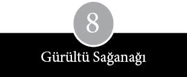
Menlo Park çıkmazının bitimi mahzun bir eski araba parkına benziyordu. Çarpılmış Volkswagen Beetle’lar, güneşte renkleri ağarmış minibüsler ve bel vermiş Ford Pinto’lar kaba mıcırlı yolun iki yanına dizilmişti. Arabalar ya sarmaşıklı bir duvar dibine sıkışmış halde, ya girişine iki motor yerleştirilmiş bir garajın önüne ya da boyasız bir çitin kıyısına bırakılmış vaziyette, çeşitli açılarda park edilmişti. Sürücü ile yolcuların çoğu, Stanford Üniversitesi Bilgisayar Merkezi, Berkeley Bilgisayar Bilim Departmanı ve Menlo Park’taki Whole Earth Truck Store’daki ilan tahtalarına iğnelenmiş, pek dikkat çekmeyen şu ilanı görmüş veya bir şekilde duymuştu. Posterde iki başlık yer alıyordu: AMATÖR BİLGİSAYAR KULLANICILARI GRUBU VE HOMEBREW (EV YAPIMI) COMPUTER KULÜBÜ. Bu poster, ev arkadaşı arayanların ya da kayıp kedi ilanlarının arasında dikkat çekmeye çalışıyordu. İlanın altında sıralanan sorular bazı ipuçları veriyordu: “Kendi bilgisayarını kendin mi yapıyorsun? Ya terminalini? Televizyon veya daktilonu? Bağlantı cihazlarını? Ya da herhangi bir dijital sihirli kara kutuyu? Yoksa bir zaman paylaşım servisinden zaman mı satın alıyorsun?”
Stephen Wozniak, Allen Baum ve otuz donanım mühendisi, bilgisayar programcısı, teknisyen ve parça tedarikçisi bu çağrıdan o kadar etkilenmişti ki, Palo Alto, Los Altos, Cupertino, Sunnyvale ve San Jose’den kalkıp 280 ve 101 No’lu otoyollardan veya Oakland ile Berkeley’den çıkıp Körfez Köprüsü üzerinden, Gordon French’e ait, çatısı asbest kiremit kaplı çiftlik evine doğru yola koyuldular.
5 Mart 1975 gününün puslu alacakaranlığında French ile arkadaşı Fred Moore garajın çevresinde telaşla bir şeylerle uğraşıyorlardı. Kırçıl sakalı ve sağlam gözlükleriyle otuzlu yaşlarının sonuna dayanmış bir bilgisayar programcısı olan French, tüm zamanını Sunnyvale Sosyal Güvenlik Dairesi’ne bir kayıt tutma sistemi geliştirmeye harcıyordu. Atkuyruğu halinde topladığı ince kumral saçları, basık burnu ve plastik ön dişleriyle Moore’un üzerinden tam bir keşiş sadeliği akıyordu. İkili, evden çıkardıkları sandalyeleri yarım daire şeklinde dizdiler; betonun üzerine damlamış yağ lekelerini gazeteyle örttüler; ambara açılan kapının hemen dibine koydukları piknik masasının üzerine bir kayıt cihazı, iki tabak kurabiye ve sürahilerce limonata yerleştirdiler.
French ile Moore birer düş kırıklığı ürünüydü. Her ikisi de yet-mişlerin ortalarında, San Francisco Yarımadası’ndaki bilgisayar meraklılarının ileri karakolu olan People’s Computer Company’ye mensuptu. Şirketi, küçük bilgisayarların ilk öncülerinden Robert Albrecht kurmuştu; insanlara, özellikle de çocuklara bilgisayarları tanıtma ve BASIC dilinde program yazmasını öğretme isteğiyle yola çıkmıştı. Bilgisayarım Beni Seviyor (My Computer Likes Me) ve Para Kazandıktan Sonra Ne Yapmalı (What to Do After You Hit Return) kitaplarının yazarı da olan Albrecht’in People’s Computer Company’yi (PCC) kurmasının başlıca nedeni, bir tabloid gazete çıkarmaktı. Gazete çizimlerle ve karalamalarla, bilgisayar hakkında esprilerle doluydu ve konunun çevresini kaplayan esrar perdesini dağıtmaya uğraşıyordu.
Yetmişlerin başında küçük bir yazar ekibi, haftada bir PCC’nin ofislerindeki potlaç yemeklerinde bir araya gelip teknoloji ve bilgisayar üzerine sohbet etmeyi alışkanlık haline getirmişti. 1974 sonuna doğru Albrecht, bu akşam yemeklerine son verip gazetesine odaklanma kararı alınca, Moore ile French şirketteki ruh eşlerinden uzakta, firmanın dışında kalıverdiler. Bu yetmezmiş gibi, Moore ayrıca PCC’deki editörlük işinde hakkının yendiği kanısındaydı; “Bob Albrecht’in, tüm alternatif bilgisayar kullanıcılarının Baş Ejderi olma arzusundan” yakınıyordu. Arkadaşına küçük bilgisayara ilgi duyanları bir araya toplayacak bir çağrı yapmayı önerdi.
Moore’a göre Homebrew Computer Kulübü, yetişkinlik hayatı boyunca hep savunduğu alternatifler listesine eklenmesi gereken diğer bir alternatifti. Ellilerinin sonuna yaklaşmış eski bir Berkeley öğrencisi olan Moore, ROTC’ye zorunlu üyeliğin kaldırılmasına yardım etmişti. 1960’ların ortalarında, Şiddete Karşı Eylem Komitesi adına açıklama turlarına çıkmış, üniversite kampüslerini ziyaret etmiş, afiş ve broşür dolu bir arabayla Amerika’yı baştan başa dolaşmıştı. Kurayla askerliğe karşı çıktığı için iki yıl hapis yatmış, daha bu sözcüğün herkese tuhaf geldiği günlerde bekâr bir baba olmuştu. Vietnam’dan sonra kendini alternatif ekonomi çalışmalarına vermişti. Çalışmayı bir armağan olarak gören Moore klasik ekonomiye, paranın değerine, toprak mülkiyetine ve doğanın insanın elinde oyuncak edilmesine karşı çıktı. Merkezi, Menlo Park’taki Whole Earth Truck Store çevresinde bulunan bir Enformasyon Ağı kurup bu ağı yarımadanın tüm yerleşim birimlerine yaymaya uğraştı. Baş sloganı şuydu: “Paraya değil, insana güven”; “Zenginlik, çokyönlü karşılıklı bağımlılık ilişkilerinin sinerjisidir” gibi sloganları dilinden düşürmedi.
Sıradan ilgi alanlarının dışında kalan insanları listeleyen kart katalogları tuttu. Araba tamirciliği, kampçılık, tiyatro, yüzme, fotoğrafçılık ve balık tutma gibi klasik hobilerle birlikte boncuk dizme, biyolojik geribildirim, ölü gömme, kümbet, çöpçülük, hurda demir işleri, tesisatçılık, masaj, cinsel hastalıklar ve göçebe çadırları gibi listeler de yaptı. Endeks sisteminde elektronik ve bilgisayarla ilgilenen kişilerin telefon numaraları da vardı; üstelik Moore da bazı terminallerin öğrencilere ve dışarıdan gelenlere açık olduğu Stanford Tıp Merkezi’nde IBM 360’la bizzat tanışmıştı. Moore’un gözünde büyük bilgisayarları üretenler –en başta da IBM– New York bankaları, devletin temsilcileri, monetaristler ve petrolcüler kadar kuşkulu insanlardı. Böylece Homebrew Computer Kulübü düşüncesi daha geniş bir ilgi alanına hitap ediyordu: “Bilgisayarların IBM cihazları kadar pahalı olmasına ne gerek vardı? Ben mikrokompüterler üzerine bilgi alışverişini yaygınlaştırmaya uğraşıyordum.”
Moore’un bu pek net olmayan sevecen bakış açısını Gordon French’in garajına akın edenler de paylaşıyordu. Bunlardan Lee Felsenstein, çocukluğu Philadelphia’da geçmiş, altmışlı yıllarda Berkeley Barb ve Berkeley Tribe gibi kıyıda köşede kalmış gazetelerde muhabirlik yapmak üzere Berkeley’e gelmiş biriydi. Tatlı dilli ve hızlı düşünen bir adam olan Felsenstein, Ampex’de mühendislik yapmış, Al Alcorn tarafından Atari’den kovulmuş ve San Francisco’nun eski depolar semtinde yıkılmak üzere olan bir binayı işgal eden Resource One adlı komünle birlikte yaşamıştı. Orada muz ekmeği dilimleri ve tıkalı lavabolar arasında, altmışların en beğenilen anabilgisayarlarından biri olan SDS 940’ın bakımını yaptı. Felsenstein ile diğerleri, Stanford Araştırma Enstitüsü’nden kalan, ömrünü doldurmuş bu bilgisayarın, Toplum Belleği Projesi (Community Memory Project) denilen girişimin temel taşı olacağını umuyorlardı. Coevolution Quarterly gibi periyodik yayınlarda bilgisayarların “ikincil dereceden bilgiler” verebilecek “eğlenceli aletler” olduğunu ve insanları ortak ilgi alanlarıyla birbirine bağlayabileceğini izah eden makaleler yazdı. Felsenstein ve yandaşları, terminalleri tek bir büyük bilgisayara bağlayarak bir elektronik duyuru panosu başlatma umudu taşıyorlardı. Felsenstein olaya iki yönlü bakıyordu: “Bu köklü bir ağ olabilirdi. Ayrıca hem her yerde olabilir hem de hiçbir yerde olmayabilirdi.”
Ama gerçekliğin eli o kadar açık değildi; Resource One’ın elektronik sınırları ancak Leopold’s Records ve Berkeley’deki Whole Earth Access Store’da kurulu teleyazı makinelerine kadar ulaşabiliyordu. Kayıt mağazasında müzisyenler ve diğerleri konserlerle ve satışlarla ilgili bilgileri birbirlerine aktarıyorlardı. Teleyazı makinelerinde bazen “Körfez Bölgesi’nde nerede güzel simit bulabiliriz?” gibi unutulmaz sorular da yer alıyor ve hemen şöyle bir yanıt geliveriyordu: “İsterseniz eski bir simit ustası size nasıl simit yapılacağını öğretebilir.” Bir zamanlar satılık şeyler arasında bir çift Nubi keçisi de vardı. İşin eğlencesi bir yana, teknolojinin sınırları demokratik dürtülerin önünü kesiyordu. Telefon etmek, ilan panosunu taramak ya da gazeteye seri ilan vermek takır tukur ve yavaş çalışan teleyazı makinesini kullanmaktan kolaydı. Toplum Bellek Projesi, zamanının ilerisinde olduğundan suya düşen iyi niyetli fikirlerden biriydi. Böylece bilgisayar, Fred Moore gibi Felsenstein için de altmışların yeraltı siyasetinin kimi yönleriyle inceltilmiş halini ifade ediyordu.
İlk Homebrew Computer Kulübü toplantısının yapılacağı günlerde Felsenstein, elektronik alanındaki bazı gelişmeler sayesinde, Nubi keçisi bulmak isteyen insanların hayatlarının kolaylaştırılabileceğinden söz ediyordu. Sorunlu teleyazı makinelerinin yerine, Tom Swift Terminali adını verdiği küçük bir makine imal etmeyi düşünüyordu. Gordon French’in garajında başlıca sohbet konusu –elektronik alanında kaydedilen devasa ilerlemelerin dünyanın ufkunu nasıl açtığı– işte buydu.
Bir üye, Altair 8800 denen yeni bir bilgisayarı gösterince, değişimin boyutları iyice ortaya çıktı. “Çığır Açıcı Bir Proje” ve “Dünyanın Ticari Modellere Rakip Olacak İlk Mini Bilgisayarı” sözleriyle Popular Electronics’in (“Dünyanın En Çok Satan Elektronik Dergisi”) Ocak 1975 sayısının kapağına oturan Altair seti, 375 dolara satıldı; yaklaşık bir portakal sandığı büyüklüğündeydi ve önündeki metal panelde düğmeler ve ışıklar vardı. Bilgisayarı, merkezi Alburquerque’da olan ve asıl amacını isminde yansıtan Micro Instrumentation and Telemetry Systems (MITS) adlı küçük bir şirket üretmişti. Firma 1969’da model roketlere kılavuz ekipmanı satarak işe başlamıştı.
Altair’in asıl takdir edilecek kısmı ne metal kasası, ne ön paneldeki düğme ve ışık sıraları, ne Popular Electronics’in gösterdiği coşku ne de Alburquerque’dan gelmiş olmasıydı. Asıl önemlisi, içindeki bir elektronik parçaydı: 2,5 santim uzunluğundaki siyah bir plastiğe monte edilmiş, üzerinde küçücük harflerle INTEL 8080 yazan bir yarıiletken çipti bu. Okuduğunuz sayfadaki 8080 rakamından daha iri olmayan bu çip, bir bilgisayarın merkezi işlem birimini içeriyordu ve yarıiletken firmalarının mikroişlemci adıyla anmaya başladığı parçanın en dikkate değer örneğiydi.
Mikroişlemcinin kavramsal çerçevesi II. Dünya Savaşı’ndan sonra üretilen bütün dijital elektronik bilgisayarların arkasındaki fikirle aynıydı. Elekcronic Numerical Integrator and Computer (ENIAC), IBM’in 1130’u, Varian’ın 620i’si, Digital Equipment’ın PDP-8’i ve Data General’in Nova’sı hep Intel 8080’le aynı ilkelere göre çalışıyordu. Aralarındaki tek fark boyutlarındaydı. On sekiz bin vakum tüplü otuz tonluk ENIAC, beş bin transistorlu Intel 8080’den daha zayıftı. Data General’in Nova’sı gibi bilgisayarların merkezi işlemci birimlerinin her biri, sınırlı bir görev için tasarlanmış düzinelerle çipten oluşuyordu. 8080 gibi çipler bazı ilk mini-bilgisayarların gücüne yaklaşarak, mühendisleri çipler arasında yüzlerce lehim hattı üzerinde sağlam bağlantılar yapmak gibi yorucu ve bıktırıcı bir işten kurtarıyordu.
8080, 1969 yılında Santa Clara’da kurulan, açık adı Integrated Electronics olan yarıiletken firması Intel’in ürettiği üçüncü mikroişlemciydi. Intel’in ilk mikroişlemcisi 4004, bir masaüstü hesap makinesini kontrol etmek üzere tasarlanmış bir çip setine aitti. Gerçi şirket, 4004’ü piyasaya sürerken “entegre elektronikte yeni bir çağ” diye reklam yapmıştı, ama olağanüstü içeriğini doğru dürüst takdir eden olmamıştı. Bir mikroskobun altında 4004’ün hatları, işlek bir şehir banliyösünün yol haritasını andırıyordu. Yine de düzinelercesi tek bir incecik silikon levhaya işlenen mikroişlemci, seri üretim alanında, Henri Ford’un hareketli montaj hattından daha büyük bir ileri adımdı.
Sınırsız sayıda görevi yerine getirmek üzere programlanabilecek mikroişlemcinin sonsuz esnekliğine, yarıiletken teknolojisinin başka bir alanında görülen benzer nitelikteki olağanüstü ilerlemeler de –bellek çipleri– eşlik etmişti. Altmışların sonlarına kadar yüklü çekirdek belleklerde depolanmış milyonlarca 1 ve 0’dan oluşan bilgisayar programları şimdi artık, çiplerde depolanabiliyordu. Bu, program yazımını hem ucuzlatmış hem de kolaylaştırmıştı. Mikroişlemciler iki tür bellek çipine bağlanabiliyordu. ROM denen çiplere depolanmış programları okuyabildiği gibi, RAM denen daha karmaşık bir çipe yazılmış programları da değiştirebiliyordu. Mikroişlemci, düzinelerle görev yerine getirmek için programlanabileceğinden, bir yandan mekanik parça gerektiren işlerin maliyetini düşürürken bir yandan da değerini artırıyordu.
Homebrew Computer Kulübü üyeleri haliyle, mikroişlemcilerin seri üretim tarihindeki pratik uygulamalarıyla çok daha ilgiliydi. Çoğu, Intel’in ikinci mikroişlemcisi 8008’e bağlı olarak üretilen Mark 8 adlı küçük bilgisayarı biliyordu. Bu mikroişlemci Güney Kaliforniyalı bir öğretmeni, asıl amacı meraklıları 8008 için yazılmış programlardan uzak tutmak olan “Mikro 8 Bülteni” diye metin yayımlamaya teşvik etti. 1975 ilkbaharında 8080 ilgi merkezine oturdu. 4004’ten 20 kat güçlüydü ve bir seferde (dört bit değil) sekiz bit’le işlem yapıyordu. İş görebilmesi için yirmi çipe daha ihtiyaç duyan 8008’in aksine, 8080 altı periferik çiple idare edebiliyordu. Ayrıca, 4004’ün 4 kilobaytlık belleğine kıyasla, 65 kilobaytlık belleğe bağlanabiliyordu.
Homebrew Computer Kulübü üyelerinden biri, Kaliforniya’dan New Mexico’ya kadar onca yolu sırf Altair’ini alabilmek için teptiğini açıkladı. Ancak, French’in garajında meraklı gözlerle süzülen bilgisayarın pek bir marifetinin görülmediğini söyledi: Masanın üstünde öylece ışıkları yanık duruyordu. Altair, tutkunları ve inatla kafasını ona takmış olanlar için bile göz korkutucu bir öneri gibiydi. Bilgisayarın ufacık da olsa eğlendirici bir işlev gösterebilmesi için teleyazı makinesi, bir televizyon ekranı, ekstra bellek kartları ve programlar gibi eklentilere ihtiyacı vardı. Bu eklentilerle birlikte fiyatı 3.000 dolara çıkıyordu. Bu sırada bilgisayarın yeni sahibinin; gizemli kullanım talimatlarını çözmek, plastik torbaların içinde parça arayıp bulmak, çipleri denemek, lehim yapmak ve çabuk ısınmaya yatkın sorunlu bir enerji kaynağı gibi problemlerle uğraşabilecek kadar da sabırlı ve becerikli bir insan olması gerekiyordu.
Homebrew Computer Kulübü’nün ilk toplantısında üyeler mikro-bilgisayarların nerelerde kullanılabileceği üzerinde kafa yordular. Bilimsellikten çok sezgileriyle de olsa, bilişim gücünün bireylere geçmesi gibi bir sonucun doğmakta olduğunu fark ettiler. Bazıları mikro-bilgisayarların metin çalışmaları için ve iş çevreleri tarafından kullanılabileceği yönünde fikir yürüttü. Kimileri de ısıtma sistemleri, otomobil motorları, hırsız alarmları ve sulama sistemleri gibi mekanizmaları kontrol etmek, oyun oynamak, müzik yapmak, küçük robotları yönetmek ve tabii yöresel bellek ağları oluşturmak için kullanılabileceğini öngördüler. Bulutlu kristal küreleri, yarıiletken şirketlerine göre daha canlı görüntüler sunuyordu. Bu şirketlerdeki profesyonel pazarlamacılar mikro-bilgisayarların motor, asansör ve elektrikli ev aletleri gibi makinelerin kontrolünde kullanılabileceğini düşünüyorlardı.
Fred Moore, Homebrew Computer Kulübü’nün ilk bültenini hazırlarken amansız düşmanlarına başvurmak zorunda kaldı.
Whole Earth Truck Store’da gece yarısı bir IBM cihazında yazılan iki sayfalık metin, Moore’un “kendiliğinden bir paylaşım ruhu” sergilediğine inandığı ilk toplantının özetiydi. Moore kulübün ilk üyelerinin adresleri ile ilgi alanlarını da bültene koydu. Bültende Stephen Wozniak “video oyunlarını sever, filmlere bayılır, bilimsel hesap makineleri ve TV terminali tasarımı yapar” diye tanıtılıyordu.
Moore’un yazdığı bu bültenden mi, Altair’in gelişinden mi, yoksa yarıiletken tasarımındaki devasa ilerlemelerden ötürü mü bilinmez, Homebrew Computer Kulübü bir mektup zinciri ya da piramit yapısındaki bir kulüp gibi hızla büyüdü. Sekiz ay içinde üye sayısı üç yüz dolayına çıktı. Kulüp üyeleri bir süre, iki haftada bir yaptıkları toplantılarını okul dersliklerinde veya Stanford Yapay Zekâ Laboratuvarı’nda düzenlemek zorunda kalan, yersiz yurtsuz ayaktakımı konumuna düştüler.
Kulüp büyüdükçe yarımadanın dört bir yanından her tür insanı çekmeye başladı. Bunların çoğu ya Wozniak gibi bu işi seven veya hobi olarak amatörce ilgi gösteren kişilerdi ya da John Draper gibi telefon manyaklarıydı. İngiliz aksanıyla konuşan koyu saçlı, uzun boylu bir adam olan Adam Osborne gibileri, ekonomik nedenlerle katılıyordu: Osborne bir karton kutudan çıkardığı, mikro-bilgisayarlar hakkındaki kitabının nüshalarını kulüp üyelerine satıyordu. Elektronik firmalarından, Stanford Araştırma Enstitüsü’nden, Stanford Üniversitesi Yapay Zekâ Laboratuvarı’ndan ve astroloji, Zen ve şiddetsizlik dersleri veren Palo Alto Özgür Üniversitesi’nden gelenler de vardı. Ne var ki, çevre üniversiteleri ve yükseköğrenim kurumlarının çoğu, yarıiletken ve elektronik şirketlerindeki mühendislerin büyük bölümü, mikro-bilgisayarları oyuncak kabilinden görüyorlardı. Homebrew Computer Kulübü parasızlara ve işin teorik yanından çok pratik yanına eğilimli olanlara hitap ediyordu. Bu durumda Allen Baum gibi üyeler düş kırıklığına uğruyorlardı: “Kısa sürede acayip sıkılmaya başladım.”
Kalıcı, kalabalık bir yoldaş grubunun mevcut olduğu netleşince, Homebrew Computer Kulübü’nün toplantıları Stanford Linear
Accelerator Merkezi’nin dik merdivenli koca salonunda yapılmaya başlandı. Kimi üyeler kulübün adının Sekiz Bit Bayt Yarışçıları, Minik Beyinler ya da Buhar Birası Bilgisayar Grubu olarak değiştirilmesini önerdiyse de Homebrew [Ev Yapımı] adı korundu. Toplantıların havası genelde Gordon French’in garajındaki ilk toplantının havasına uygun devam ediyordu. Üye çoğunluğu sistemi, düzenli aidat, tartışmalı görevli seçimleri gibi şeyler yoktu. Homebrew Kulübü kendi ritüelini üreterek, bir pazar gibi sergi açma, mal takası ve dedikodu yapma ortamı oluşturdu. Toplantılar “talebe göre rastgele aralıklar” ile ortak çıkarlara bağlı “planlı dönemler” şeklinde ikiye ayrıldı. İki haftada bir yapılan toplantıların teşvik eden, zorlayan, eleştiren, mahalle dedikoduları üreten ve Wozniak’a, “Homebrew’ün toplantıları hayatımın en önemli olayıydı,” dedirten bir niteliği vardı.
Pazarlıkla satılan yeni parçalar da Homebrew Kulübü’ndeki varlık nedenleri arasında yerini aldı. Saygınlığını koruma kaygısıyla hareket eden Stanford Üniversitesi kampüste alım-satım yapılmasını yasakladı. Bu karar Marty Spergel gibilerini başka satış noktası aramaya zorlamaktan başka bir işe yaramadı. Bagajı devamlı elektronik parça dolu bir otomobille dolaşan Spergel, kısa sürede, adı kötüye çıkmış bir satış merkezi haline geldi. Koyu bir Brooklyn aksanıyla konuşur, üç parçalı takım giyerdi; boğuk bir gülüşü ve keskin gözleri vardı. Sunnyvale’de bir karavan parkında yaşıyordu. Intel 8008’le üretilmiş mikro-bilgisayarlara parça seti monte ederek geçiniyordu. Yoğun bir telefon hattından dağıtımcılarla, satış temsilcileriyle ve merdiven altı imalatçılarla bağlantılar kurarak, gri bir âlemde koşuşturup duruyor ve “küresel lojistik” dediği bu işle gururlanıyordu. Kulüp üyelerine, bir yarıiletken, konektör, kablo veya herhangi bir elektronik cihaz olsun, aradıkları her malzemeyi beş iş günü içinde muhakkak temin edeceğine ilişkin garanti veriyordu.
Doğu’dan ithal ettiği bazı parçalar meraklı gümrük görevlilerinin gözlerinin önünden geçerken, konşimentosunda “joystick” yazan bir koli mal, Spergel bunların seks aleti değil de oyun kumanda çubuğu olduğunu kanıtlayana kadar gümrükte tutuldu. Spergel ile diğerleri, Stanford güvenlik görevlileri olan biteni sezinleyene kadar satışlarını otoparkta yürüttüler. Sonunda yakındaki bir Shell benzin istasyonunun otoparkına çekilip işlerini orada daha güvenli şekilde devam ettirdiler.
Toplantılar arasında, bir yılda altı yüz nüshaya çıkan kulüp bülteni, üyeleri gelişmelerden haberdar ediyordu. Bir önceki toplantının özetinin ardından, piyasaya çıkan ilginç cihazların haberi veriliyor, elektronik fuar takvimi açıklanıyor, yararlı makalelerin yayımlandığı kaynaklar duyuruluyor ve yararlı tavsiyeler sunuluyordu. Örneğin plastik tuşlarla nasıl daktilo klavyesi yapılabileceği anlatılıyordu: Krylon boyası püskürtülerek boyanır (“Emaye daha uzun sürede kurur”) ve kırtasiyeciden alınan harfler üstlerine yapıştırılır. Devamlı daha fazla yazılım talebi dile getiriliyor ve yerel dükkânların stoklarına eklenmesi istenen malzemelerle ilgili bilgiler sadece meraklılarının anlayabileceği sözcüklerle belirtiliyordu: “Soket kiti, IC kiti, transistor kiti, diyot kiti, veri iletim hızı üreticisi, trimmer, 2.4576 kristal, tantalum kondansatör.”
Bülten ayrıca, genişleyen ilgi alanıyla ilgili ipuçları da içeriyordu ve neredeyse ilk günden beri Moore’un ömür boyu süren kitlesel ağlar hayalinin, sonunda gerçek olduğuna ilişkin işaretleri gösteriyordu. Bu olayın gerçekleştiği tarihte Moore evliliğindeki sorunlar yüzünden kulüpten ayrılmak zorunda kaldı. Boston, San Diego, hatta British Columbia gibi yerlerde de benzeri kulüplerin kurulmasıyla, iki haftalık bülten bunlarla ilgili haberleri de vermeye başladı. Homebrew bülteni denizaşırı ülkelerden gelen tek tük taleplere bile yer veriyordu. Salvatore di Franco İtalya’nın Biccari şehrinden yazmıştı: “Kulübünüze katılmamın başlıca nedeni İtalya’da bu bilgileri ya da ihtiyacım olan teknik bilgiyi bulabileceğim hiçbir dergi, kitap ya da veri bulunmayışıdır.” F. J. Pretorius da Güney Afrika’nın Sasolburg kentinden gönderdiği mektubunda oradaki durumu şöyle anlatıyordu: “8008 ve 8080 mikroişlemcilerle ilgili tek bir devre bulunmayışı son derece cesaret kırıcı.”
Fakat Homebrew Kulübü’nün en önemli işlevi, hayattaki başlıca ilgi alanı çoğunluğun anlayamadığı bir şey olan, Wozniak gibi bir grup yalnız kurt için ortam yaratmış olmasıydı. Gerçi ileriki yıllarda kulüp, kafa dengi ruhların sırlarını paylaşmak, makinelerini göstermek ve çizimlerini dağıtmak amacıyla oluşturdukları seyyar bir bilim fuarı –aslında daha çok eski tarz okul bilim fuarı– olarak keyifle hatırlandığı halde, aynı zamanda da baştan savma tasarımlara “bir gürültü sağanağı” halinde hücum edilen kuşkucu ve eleştirel bir forumdu. Fred Moore’un halisane niyetleri bir yana, Homebrew Kulübü’nün en parlak üyeleri kendi başlarına çalışmayı seviyorlardı. Lee Felsenstein hâkim olan havayı şöyle anımsıyor:
Hepimiz, acaba bizim uzmanlık alanımıza ya da kendi özel küçük marifet sahamıza el uzatmaya kalkan kimse var mı diye etrafı kolaçan ederdik. İnsanları aynı şey üzerinde çalışmak için bir araya getirmek zordu. Kendi büyük planları olanların dışında dinleyecek hiç kimsesi bulunmayan, büyük planları olan adamlardık hepimiz.
Jobs, “Johny Carson fena olmaz,” dedi.
En Üstünler Vadisi’nde yeni bir bilgisayara uygun slogan bulmak hayli zahmetli bir işti. Mac’in pazarlama yöneticileri aylardır bilgisayarlarının erdemlerini yansıtacak, akılda kalıcı bir tümce ya da satır bulmak için kafa patlatıyorlardı. Zaman zaman bilgisayarın görünüşüne, konuşmacının ruh haline ve yaratıcı zekâsına bağlı olarak Mac’e Yeni Apple II, Seksenlerin Arayüzü, Kranksız Bilgisayar, Kranksız Volkswagen ya da Kranksız Mercedes gibi isimler takıldığı olurdu. Apple bir şirket olarak, kişisel bilgisayar temasındaki varyasyonlarını tüketmişti. Apple II’yi tarif ederken The Personal Computer (Asıl Kişisel Bilgisayar diye çevrilebilir –ç.n.) demiş, kısa bir süre sonra da (olağanüstü bir ciddiyetle) aslında kişisel bilgisayarın kendi icadı olduğunu ilan etmişti.
Rakipleri de ona benzer palavralarla karşı koydular. Digital Equipment Corporation, reklamlarında “Dünyanın düşünme tarzını değiştiriyoruz” diyor; Radio Shack kendinden, “Küçük bilgisayarda en büyük isim” diye söz ediyor; Osborne Computer Corporation’ın kurucusu ise iflas etmeden bir süre önce kendisini Henry Ford’la kıyaslamaya kalkıyordu. Slogan yarışı tırmandıkça Apple en çok satan cihazını “en kişisel bilgisayar” diye güçlendirici sıfatlarla tarif etmeye başladı; bu slogan da Mac’in önünde bundan böyle sadece “en en kişisel bilgisayar” olma hedefi bulunduğu şeklinde iğneleyici bir esprinin doğmasına yol açtı.
Regis McKenna Halkla İlişkiler Ajansı’nın Apple’dan sorumlu müdürü Marcia Klein yavan reklam klişelerinden kaçınmak için bir sabah Mac binasına, Mike Murray’yle görüşmeye geldi. Bazı slogan fikirleri üzerinde konuşmak istiyordu, ama aynı zamanda basının karşısına çıkma hazırlıkları da yapıyordu. Dudaklarında ateş kırmızısı bir ruj ve üzerinde zeytin yeşili bir elbiseyle gelen Klein, Murray’nin mavi spor gömlek, ayağında kumaş pantolon ve botlarla beklediği Mac’in konferans salonuna bir kristal zarafeti getirmiş gibiydi.
Murray, selam sabahtan sonra konuya girdi:
Biz diyoruz ki, sokaktaki adam yeni bir işe girdiğinde masasında kalem, kâğıt sepeti ve bir de Mac bulacağını bilsin. Ama bunu becermek olanaksız gibi. Ofiste böyle bir cihaza muazzam bir ihtiyaç olduğunu ortaya koymaya uğraşıyorum. Bu cihaz fikrinde son derece kararlıyım.
Klein onu dinledikten sonra, Mac’in Apple’ın diğer bilgisayarları arasında nasıl bir yere sahip olduğunu sordu. “Biri Apple II ya da Apple III’le ilgili bir şey sorsa ne dersiniz?”
“Apple III hakkında ne söyleyeceğimizi bilemiyoruz,” diye itiraf etti Murray:
Henüz üzerinde düşünmediğimiz bir nokta bu. Kaytarılmış bir konu. Ürünlerimizin geleceği hakkındaki görüşümüz kristal kadar net olmalı. Hanım evlatlığının lüzumu yok. İnsanlar sadece Apple III’ün tutabileceğini umuyor.
Klein lafı gediğine oturttu:
Biz şirketin genel bir pazarlama planı olduğu, genel bir şirket konumlanması bulunduğu ve Lisa’yı piyasa sürdüğümüzde söyleyeceklerimizle Mac’i çıkardığımızda söyleyeceklerimizin birbirini tutacağı gibi bir izlenim vermeye çalışıyoruz.
Murray iç geçirerek, “Bu gerçekten karışık bir sorun olduğu için çoğu insan bizi görmezden gelme eğiliminde. Kimisi de sorunun ağırlığının farkında değil,” dedi.
Klein, Murray’ye gazetecilerle nasıl başa çıkacağını anlattı: “Basın sizin onlarla doğrudan konuşmanızı yeğler. Şaşaalı tanıtım toplantılarını tercih etmez. Slayt gibi cafcaflı şeyler şart değil. Pırıltılar saçmak şart değil.”
Murray yanıt verdi: “Mac’in öyle kucaklanacak sıcak bir şey olduğunu söylemek zor. Kollarıyla sarmalayıp ‘Ah ne sıcak, içimden kucaklamak geldi!’ mi diyecekler?”
Klein, “Bütün topluma uygun bir ifade bulmalı,” diye karşılık verdi.
Murray birden umutla, “Masaüstü cihazı gibi,” diye bağırdı.
Klein, “Yeni bir dil geliştirmeliyiz,” dedi. “Cihaz eski bir kelime. Bir cihazı K-Mart’dan alırsın. Sıkıcı ve işlevsel bir şey cihaz. Kişiselliği yok ediyor.”
“Masaüstü aleti de denmez,” dedi Murray.
Klein bir süre kalemle oynadıktan sonra devam etti:
Reklamlar için böyle bir şey şart ama basınla konuşurken sözlerini paragraflar halinde ifade etme lüksüne sahipsin. Derdini bir iki sözcükle ifade etmek zorunda değilsin. Basın giderek daha da gelişiyor, ama herkes öyle değil. Basınla muhatap olurken asıl sorun onları iyi eğitmekte, böylece onlar da okuru eğitirler. Her yayın organına anlatacaklarınızı biraz değiştirirsiniz. Her yayın organı diğerinden biraz farklıdır, bu yüzden farklı şeyler talep ederler. Business Week, Time’dan biraz daha başka şeyler ister.
Kapı açıldı ve Steve Jobs saç baş dağınık, aksi bir suratla içeri daldı. Bir sandalyeye çöküp bacaklarını masaya uzattı. Üzerinde bir denizci tişörtü, ayağında blucin, baklava desenli çoraplar ve mokasen ayakkabılar vardı. Az önce birisi, bir MIT profesörünün, Cable News Network programında Lisa ile Mac’in özelliklerini tarif ettiğini bildirmişti. Bu durumdan rahatsız olan Jobs, Klein’a dönüp, “Bahse girerim Marvin Minsky’dir. Olsa olsa odur. Sözlerini kasete alın, eğer Minsky ise onu ayak tırnaklarından ipe asmak istiyorum,” dedi.
Murray ile Klein, Jobs onların lafını kesene kadar basına yönelik çeşitli yaklaşımları tartıştılar. “Ne yapmak istediğimize karar vermeli ve onun için gereken adımları atmalıyız, zira ben istediğimize ulaşacağımızı hissediyorum,” dedi Murray. Ardından devam etti:
Bize gereken Time’ın veya Newsweek’in kapağı. Kapakta tüm Mac ekibinin resmini gözümde canlandırabiliyorum. Newsweek’teki resim Time’dakinden güzel çıkmış. Newsweek’in genel yayın yönetmeni ve bir editör topluluğuyla birlikte, binanın tepesinde bir yerdeki bir odada öğle yemeği yedik ve yemekten sonra oturup iki saate yakın konuştuk. Konudan konuya geçildi. Teknoloji, yeniden sanayileşme. Bu gibi şeyler işte.
Başını sallayarak devam etti. “Gerçekten de bunun peşinden gidecekler. ‘İleri teknolojinin uzmanlarından yeni bilgisayarlar’ filan gibisinden.”
“Evet, hikâyeyi şimdiden görebiliyorum,” dedi Murray. “Minik altyazılarla bir düzine kadar resim de içinde olacak.”
“Sonra,” dedi Jobs, “Cavett’te bir saatlik özel TV röportajı için Burrel ve Andy’yle görüşebiliriz.”
“Daha popüler birileri gerekli bize,” diye itiraz etti Klein.
“Johnny Carson ya da onun gibi biri mi mesela?” diye sordu Murray.
Jobs, “Johnny Carson fena olmaz,” dedi.
Murray, “Nixon’la röportaj yapan şu İngilizin adı neydi?” diye sordu.
“Bir başlasın hele, arkası çığ gibi gelir,” dedi Jobs:
People dergisini görüyorum sırada; Andy Hertzfeld’i kapağa çıkarmış. Bu kişilerin her biri için ufak çaplı bir şöhret çemberi yaratabiliriz. İyi bir gaz olur. “İşte tasarım bu adamın eseri”, “İşte üretildiği fabrika bu” gibi hikâyeler düzebiliriz. İnsanlar devamlı bunları dinler. Bunu para almadan haber yapacak bir sürü yazar bulmalıyız.
Jobs’un gözü masanın üzerinde duran ilginç bir reklama takıldı. “Ooooo, beğendim,” diye okudu yumuşak bir tonda. “Ooooo, ne hoş olur.” Ardından sloganı açıkladı: “APPLE BİLGİSAYAR YİNE YAPMIŞ. Beğendim. Gerçekten de pek hoş.”
“Newsweek için harika bir kapak,” diye atıldı Murray.
Jobs daha da havaya girerek, “Byte için daha uygun bence,” diye karşı çıktı Murray’ye. “IBM’den o kadar farklı ki!”
Klein bu fikre, “Byte için fazlaca şık kaçmaz mı?” diye itiraz etti.
Bunun üzerine Jobs, “En uygunu Newsweek,” diyerek ona katıldı. “Milyonlar satar,” diye ekledi.
Sohbet, bilgisayar için imaj yaratma konusuna döndü. Jobs iç geçirerek, “Biliyorsunuz, buna en çok yaklaşan Charlie Chaplin oldu. IBM bilgisayarına gerçek anlamda kişilik kazandırabildi,” dedi. Bir an durduktan sonra devam etti:
Kafamda şöyle bir reklam fikri var. Bir tür spastik Charlie Chaplin kullanabiliriz, ama kurgulanmış olduğundan gerçekten komik olmamalı. IBM Charlie Chaplin’i ticari marka yapamayacağı için bu mümkün. Derken Mac Adam ortaya çıkıp Chaplin’i ezer ya da üzerine yürür; ya da karşısına dikilip ceketinin içinden çıkardığı okları üzerine yağdırır.
Dramatik bir etki yaratmak için bir an duraladıktan sonra ekledi: “Ve işte ‘Charlie Chaplin Bay Mac’le karşı karşıya’ der.”
Murray ile Klein gülümsemekle yetindiler. Jobs devam etti:
Adamın suratına çarpan reklamlara ihtiyaç var. Görsel açıdan yüksek bant genişliğine sahip olmalı. Üründen söz etmeyen bir reklam yapma şansımız var. Sanki o kadar iyiymişiz ki, hiç bilgisayar resmi koymamıza bile gerek yokmuş gibi.
Jobs bitirince Murray lafa girdi. “Reklamcılıkta biz buna ‘söylemeden de belli zaten’ der, ama ardından yine de söyleriz.”
“Özellikler, faydalar, RAM miktarı, çizelgeler ve karşılaştırmalarla reklam yapma şansımız yok,” dedi Jobs. “Tek şansımız, duygusal iletişim kurmak.”
Murray, “Yani Sony Walkman ya da Cuisinart gibi bir şey olacak. Bir kült ürün olacak,” diye atıldı.
Jobs kaşlarını çatarak, “Evet, ‘O bir kült’ diyelim. Ardından da ‘Hey, haydi bakalım, bu fikri sorgusuz sualsiz kabullenin’ deriz,” diye konuştu. Kapıya doğru ilerlerken, “İnsanların asla unutamayacağı bir imaj yaratmaya çalışıyoruz. Bunu yapmak zorundayız, üstelik de bir an önce,” diye konuştu.
Murray’nin kafasına takılan bir şey vardı. Jobs’a baktıktan sonra umutla, “Kişilik katan kişisel bilgisayar,” dedi.
Jobs bu öneriyi duymazdan geldi. Mac bilgisayarı kullanan öğrencileri ve çocukları gösteren duvarda asılı resimlere baktı. “Bu fotoğrafları basına verirsek basarlar belki,” dedi. Klein’a dönüp, “Böyle bir şey işlerine gelmez mi?” diye sordu.
“Belki San Jose Mercury’nin,” diye karşılık verdi Klein.
Alex Kamradt dünyanın en iyimser insanlarından biriydi. Uzun boylu, iri yapılıydı ama tıknaz değildi, sık siyah kıvırcık saçları ve oval bir yüzü vardı. Kafası karışık ve sıkıntılı bir halde dolaşırdı hep ve Mountain View’deki karman çorman bir bürodan yönetilen, ev boyutundaki Call Computer adlı şirketin nev-i şahsına münhasır kurucusuydu. Şirketin ana merkezi üstü kâğıtlar, dergiler, bilgisayar çıktıları, arama kartları ve çeşit çeşit kalem dolu ahşap bir storlu masaydı. Masanın etrafında teleyazıcılar, kir tutmuş kireç duvarlar, bir yemek masası, birkaç tane arkalıklı sandalye ve ağır föylü dosyalar dizili raflar vardı.
Bir zamanlar Lockheed’de fizikçi olarak çalışan Kamradt, bilimsel hesaplamaları çözmek için program yazmayı denerken bilgisayarlara merak sarmıştı. Evini satıp eline geçen paranın bir kısmıyla, yerel gayrimenkul alım satımlarını takip etmek amacıyla bir mini-bilgisayar satın aldı. Ancak, bir süre sonra San Francisco Yarımadası’ndaki küçük şirketlere bilgisayar üzerinden hizmet verir hale geldi. Birkaç liseli öğrenciyle birlikte küçük işletmelerin borç-alacak hesaplarını ve stok kayıtlarını tutabilmelerine yardımcı olacak programlar yazmaya başladılar. Müşterileri bilgisayara teleyazıcıyla, Berkeley’in takasçılarının Resource One’ın Toplumsal Bellek Projesi’ne bağlandıkları gibi bağlanıyorlardı.
Fakat Kamradt mikroişlemciyle birlikte Call Computer’ün kapsama alanının değişebileceğini sezdi. Müşterilerine daktilo klavyesi olan ve televizyona bağlanabilen daha elverişli bir terminal kiralamak ya da satmak istedi. Bu terminalin tasarımını yapabilecek birini bulma umuduyla Homebrew Kulübü’nün toplantılarına katıldı. “Buradaki en usta mühendis kim diye sorduğumda, herkes Wozniak’ı gösterdi.”
1975 ortalarında Kambradt ile Wozniak, Call Computer’ün Computer Conversor adını verdikleri bir şubesini açtılar. Kuruluş sermayesi olarak Kamradt 12.000 dolar koydu ve şirketin yüzde 70 hakkını aldı; Wozniak’a yüzde 30 pay ile birlikte mini-bilgisayar üzerinde serbest hesap hakkı tanındı. Bu, idareten yapılmış bir anlaşmaydı, ancak Wozniak, şirketin adından da anlaşılacağı gibi, başka bir bilgisayarla iletişim içinde olacak bir terminal tasarımı yapmaya söz verdi. Kamradt bu terminali daha büyük bir planın parçası olarak düşünüyordu:
Bir bilgisayar terminali satmak veya kiraya vermek istiyordum. Bunun için ilk aşamanın bir terminal yapmak olduğunu, ardından yavaş yavaş daha fazla bellek ekleyerek bir bilgisayara dönüştürülebileceğini biliyordum. Wozniak ile önce bir terminal, sonra da bilgisayar üretmek için aramızda anlaşma yaptık.
Wozniak’ın terminal tasarımına soyunması için pratik bir neden vardı. Telefon korsanı John Draper’in Los Altos’daki evinin bodrumuna koyduğu, buna benzeyen bir makineye içi gitmişti. Bu cihaz, telefon korsanlığını bir basamak yukarı çıkarmıştı. Draper bir telefona bağladığı terminal sayesinde, federal hükümetin üniversiteler ile araştırma kuruluşlarını birbirine bağlamak üzere finanse ettiği ARPANET adlı bir bilgisayar şebekesine girip çıkma olanağını elde etmişti. Elinde birkaç telefon numarası ve uygun giriş kodları bulunan herkes, Draper gibi, ABD üzerindeki bütün bilgisayarlarla bağlantı kurabilirdi; bunların bazılarından Avrupa üniversitelerinin bilgisayarlarına geçiş de sağlanabilirdi. Öğrenciler ve bilgisayar tutkunları ARPANET dosyalarını kurcaladılar, gayriresmi duyuru panolarına birbirleri için elektronik mesaj bıraktılar ve bazen uzak bilgisayarlardaki bazı kayıtları silmenin yollarını aradılar.
Wozniak, Pong oynamak için yaptığı makineyi Computer Conversor terminaline temel olarak kullandı. Gerek o, gerek Kamradt mikroişlemcileri çok pahalı bulduklarından, yapacakları terminalin bir televizyon daktilosundan öteye gidemeyeceği daha baştan belli oldu. Biten terminal, kullanıcıya televizyon ekranına bir metin girme ve sıradan bir teleyazıcıdan daha hızlı bir şekilde ekrandan geçirme olanağı veriyordu. Ayrıca, bir telefon ahizesinin etrafına gerdirilen bir çift lastik manşon sayesinde terminal ile Kamradt’ın mini-bilgisayarı arasında bilgi akışına olanak sağlıyordu.
Wozniak, prototipindeki aksaklıkları gidermeyi başarıp ARPANET’te kullanılabilecek kadar güvenilir düzeye getirdi. Bilgisayardan bilgisayara atlamasını öğrenmek çok kolaydı. Terminal, Wozniak için tatmin edici olduğu halde, prototip Kamradt’ı bir sorunla karşı karşıya bıraktı. “Bu haliyle Wozniak’ın işine yarıyordu, böyle olunca da onun için bitmiş demekti. Hatalı noktaları düzeltti. Bunu bir başkası yapamazdı. O tam bir dâhiydi. Erişilmesi zor biriydi, ama bir şirket kurmak gibi bir niyeti yoktu.”
Wozniak önde gelen sorumluluğunun tam zamanlı işine karşı olduğunu düşünüyordu. Berkeley’de bir yıl kadar telefon korsanlığı yaptıktan sonra, üniversiteden ayrılarak altı ay yarıiletken üreticilerine ekipman sağlayan Electroglass adlı bir firmanın montaj bölümünde çalışmıştı. Ellilerin sonunda kazandığı haklı parıltıyı kaybetmiş olan, babasının şirketi Lockheed’e girmeyi hiç düşünmemişti. Bir bakıma Lockheed, modanın kurbanı olmuştu, altmışların sonlarında Amerikalıları Sputnik saldırılarına karşı koruyacağı varsayımıyla üzerine konan yurtseverlik parıltısı gitmiş, çalışmalarının çoğunu meşum bir yarı karanlıkta yürütür hale gelmişti. Lockheed’in durumu Güneydoğu Asya’daki karışıklıklarla yakından ilişkiliydi; uzay programının yavaşlatılmasından olumsuz etkilenmiş, rüşvet skandallarına boğulmuş, aşırı ölçüde yüksek devlet taahhütleriyle ilgili kongre soruşturma komisyonuna çıkarılmış ve bir federal kurtarma girişimine maruz kalmıştı.
Lockheed’de hayat, tarihi bir ortama bürünmüş gibiydi. Şirketin sözcük dağarcığı sektör argosuna esir olmuş, bolca “direktifler”, “kitle toplantıları” ve “ekonomi dışı belalı konular” gibi laflar duyuluyordu. Daha da önemlisi, Lockheed’in uydu çanakları döneminde yetişmiş olan kuşağı, arabalarını zikzak çizgili otoparklarda bırakan insanların teknik yeterliği konusunda da hayli kuşkuluydu. Lockheed’deki bilim adamlarını elektrik mühendisinden çok, kamu görevlisine benzetiyorlardı. Atari’den Al Alcorn notunu vermişti: “Lockheed’in mühendisleri ufuk genişliğinden yoksunluk gibi kötü bir üne sahiptir. Bir füze için kanat tasarlayabilir, ama bir ampulü değiştiremezler.” Stephen Wozniak bütün klişeleri benimsemiş ve herkes gibi Lockheed de yaşlanırken serpilip gelişen diğer düzinelerle küçük elektronik firmasından birinde çalışmayı tercih etmişti. “Ben çok içen biri olmak istemiyordum. Lockheed’li bir mühendisin standart portresi, içip içip karısını döven bir adamdı.”
Lockheed’in böylesine bir utanç örtüsüne büründüğü tarihlerde gelişen şirketlerden biri de Hewlett-Packard’dı; bu arada mühendisleri de itibar kazanmışlardı. Lockheed’in kadrosuna göre daha genç yaştaydılar, çoğu doktorasını yapmıştı, kökleri başka bir bölgede değil, doğrudan orada bulunan bir şirkette çalışma avantajına sahiptiler. Hewlett-Packard II. Dünya Savaşı’ndan hemen önce bazı Stanfordlu öğrenciler tarafından Palo Alto garajında kurulmuştu. Kurucuları çok zengin olduğu halde (içlerinden biri de Savunma Bakan yardımcılığına kadar yükseldi) astları onları Bill ve Dave diye çağırmaya devam ediyorlardı. Altmışların sonları ila yetmişlerin başında Hewlett-Packard, yarımadanın kalesi niteliğindeki en sağlam şirketlerinden biri olmuş ve sarsılmaz bir şekilde güvenilir laboratuvar aletleri, bilgisayarlar ve hesap makineleri üreten bir kuruluş unvanına kavuşmuştu. Lockheed’in on yıl kadar önceki saygınlığına ulaşmıştı, ancak gençliği, hisse senedi opsiyonları ve boyutları nedeniyle Hewlett-Packard’ı daha hayat dolu bir gelecek bekliyordu.
Hewlett-Packard’ın insan kaynakları ekibi tarafından kıstırılan parlak üniversite mezunu gençlerden biri de Allen Baum’du. Şirkete hemen, bilgisayar tasarımı yapan Stephen Wozniak adındaki eski bir tanıdığıyla görüşmelerini tavsiye etti. Bunun üzerine 1973 yılında Hewlett-Packard Wozniak’a Geliştirilmiş Ürünler Bölümü’nde mühendis yardımcısı sıfatıyla iş önerdiği zaman fırsatı kaçırmadı. Bölümde –yüksek kaliteli, düşük hacimli elektronik aletlere geleneksel yakınlığıyla– tanınan şirketin bütün rakiplerinden açık ara önde gittiği cep hesap makineleri üretiliyordu. 1972’de büyük bir atılım niteliğindeki HP 35 masaüstü hesap makinesiyle gelen başarı, bölümün yüzünü ağarttı. Bir süre çok hareketli bir çalışma ortamı vardı, rakipler hesap makinesi fiyatlarını düşürdükçe, çalışmalarını HP 35’e yeni vasıflar eklemeye yoğunlaştıran Hewlett-Packard HP 45, HP 60 adıyla yeni modeller çıkarmaya devam etti. Wozniak şirkete girdikten altı ay sonra terfi ederek, tam yetkili mühendis unvanını kazandı. O da buna karşılık, mahalle arkadaşı Bill Fernandez’i laboratuvar teknisyeni olarak işe almaya şirketi ikna etti.
Hesap makineleri dünyası ve buradaki sorunlar Wozniak’a mini-bilgisayarlar üzerindeki çalışmalarından çok farklı geldi. HP 35’i geliştirmeye yönelik bir projede görevlendirilmişti, ama o da 18 aylık bir uğraştan sonra projesinin iptal edildiğini öğrenen birçok büyük şirket mühendisiyle aynı kaderi paylaştı. Kod adı Koşucu olan projede Wozniak’la birlikte çalışan mühendis Myron Tuttle şöyle diyor: “Laboratuvarda onun istisnai biri olduğunu düşünen tek kişi hatırlamıyorum. Wozniak diploması olmayan az sayıdaki çalışandan biriydi. Bir üstünlüğü yoktu. Sıradışı bir yanı yoktu. Yetkin bir mühendisti.” Şirketin araştırma laboratuvarlarında özürlüler için tasarlanmakta olan elle çalışan bir terminalle ilgili söylentiler Wozniak’ın ilgisini çekmişti; o bölüme transfer olmak istedi ama isteği kabul edilmedi. “Eğitimimi yeterli bulmadılar.”
Wozniak, resmi eğitiminin eksikliğinin sık sık dile getirilmesi bir yana, Hewlett-Packard’daki düşünce serbestliğinden hoşlanıyordu. Sabahları servislerde arabayla kahve ve çörek dolaştırılması, maaşının düzenli ödenmesi, (işten çıkarılma durumunda başkana başvurma hakkı da dahil) mühendislere gösterilen ilgi, şirketin personel eksiltme yerine yönetim kurulu düzeyinde maaş indirimine gitmesi, stok odalarının kendi projeleri üzerinde çalışan mühendislere açık tutulması Wozniak’ın hoşuna gidiyordu. Wozniak stok odasındaki parçalarla Allen Baum’a bir HP 45 yaptı, Elmer Baum’un HP 35’ini HP 45’e çevirdi (yanına bir de Japonca garanti belgesi ekledi), daha zayıf bir makine olan HP 35’in karekök hesabına çözüm getirmeye çalıştı, ayrıca Fernandez’e, “Batı’nın en hızlı karekökü hangisiymiş, görelim,” diye meydan okudu.
Wozniak, Hewlett-Packard’da çalıştığı sırada öğle tatillerinde, iş arkadaşlarına ait küçük bir uçakla dolaşmaya çıkıyordu. Cupertiono’da, Bronx Hayvanat Bahçesi’ni andıran bir bekâr dairesinde egzantrik bir hayat sürüyordu. Hesap makineleri ile bilgisayar kullanım talimatlarının arasında, HP mühendislerinin toplu halde satın aldıkları video oyunlarıyla dolu kutuların içinde evcil fareler dolaşıyordu. Evde eşya denebilecek tek mobilya parçası bilardo masasına dönüşebilen bir divandı; yatak odası bir şilteden ibaretti ve mutfak lavabosu kirli tabak çanaktan görünmezdi. Wozniak’ın asıl serveti şık bir stereo sistemin yanı sıra hâlâ telefondu. Körfez Bölgesi’nin ilk fıkra telefonu diye övündüğü, kullanılmış bir telefon numarasını sahiplenmişti. Her gün banda, iki bin fıkralık bir kitaptan, “Polonyalılar ne zaman süt içmeyi sever?”, “İnek ne zaman yere oturur?” gibi başlıklar arasından seçtiği yeni bir mesaj kaydediyordu. Bazen iş dönüşü telefonu bizzat açarak, kendisini Stanley Zeber Zenskanitsky diye tanıtıp fıkrayı okuyordu. Polonyalı Amerikalılar Derneği’nden gelen öfke dolu mektuplar üzerine ülke değişikliğine giderek bu kez İtalyanları espri konusu yaptı; gerçi hâlâ aynı aksanla konuşuyor ve kendisini Stanley diye tanıtmaya devam ediyordu.
Pacific Telephone şirketinin iyice yıpranan makinesi sonunda bozulunca, Wozniak kendi cihazını imal etti ve arayanlara şirkete telefon açıp hizmetlerinin yavaşlığını şikâyet etmelerini öğütledi. Yoğun trafiğin farkına varan telefon şirketi, Wozniak’ın numa-rasına çok benzeyen bir numara kullandığı için pek dertli olan bir dükkânın da şikâyetlerini dikkate alarak, özel olarak yoğun kullanımlar için tahsis edilen “radyo istasyon bankası”ndan Wozniak’a bir hat verdi. Arayanlardan biri de San Jose Lisesi’nden, uzun saçlı, iri gözlü, dolu dolu gülen tombul Alice Robertson’dı. Wozniak telefonu açtı, bir iki dakika sohbet etti ve aniden, “Ben senden daha çabuk kapatırım,” deyip ahizeyi pat diye yerine koydu. Bu acayip hareket, gün boyu süren sinirli telefon görüşmelerinin ardından bir randevuyla sonuçlandı.
Wozniak ilk önemli aşk macerasına atılırken, Alex Kamradt ve Computer Adversor’a eksik kalan yükümlülüklerini de düşünmek zorundaydı. Kamradt birçok başka mühendis bulmuş, bunlar Wozniak’ın tasarımını çözmek için aylarca uğraşmışlardı. Elindeki prototiple çizimleri bir ürüne dönüştürme çabası içindeki Kamradt sonunda, Wozniak’ın Computer Converser’a gelirken sık sık yanında getirdiği kişinin, Steven Jobs’un kapısını çaldı.
Kamradt’a göre, Jobs maaş ve hisse senedi karşılığında terminalin üretimini yönlendirme sorumluluğunu üzerine almaya söz verdi. “Param var diye bozuluyordu bana. Biraz ilkesiz davranıyor, ne koparırsam kâr diye düşünüyordu, ama ben onun bu ataklığına bayılıyordum.” Call Computer’ün tek odalı idare merkezine çok seyrek uğrayan Wozniak, Jobs’un ilgi alanından habersizdi. “Steve, Alex’i dinledi. Çok ilgiliydi. Bir terminalin işine nasıl yarayabileceğini Alex’ten öğrendi.”
Jobs aylarca, elektronik şirketlerine tasarım hizmeti veren küçük bir mühendislik firmasının başı Robert Way’le çalıştı. Jobs baskılı devre kartının planını ve bir vakum kalıp örneğinin tasarımını öğrendi. Way’le birlikte bir malzeme listesi ve parça numaralama sistemi çıkardı, ayrıca Atari’den terminali televizyona bağlamak için bir video devresinin lisansını aldı. Way, Jobs’u sıkı çalışan, işinin ehli biri olarak tanıdı. “Ona hiçbir şey yeterli gelmiyordu. Her şeyi geri çeviriyordu.” Way aynı zamanda sorumluluk paylaşımına da özen gösteriyordu. “Aldığım her çek Bay Kamradt’ın imzasını taşıyordu. Tasarımı görme sorumluluğu Jobs’a aitti.” Birkaç ay sonra Kamradt’ın tükenmez iyimserliğinden illallah diyen Way pes edip projeden ayrıldı. Onları, “Hayatımda karşılaştığım en acayip ekipti,” diye tarif ediyordu.
Kamradt acaba terminali bir daha çalıştırabilecek miyim diye kara kara düşünürken, Homebrew Kulübü toplantılarının gaza getirdiği Wozniak da kendi bilgisayarının üzerinde çalışıyordu. Yeni mikroişlemcilerden bazılarını anlık bir incelemeden geçirip bir bilgisayarın asıl olarak özünün değişmediğini tespit etti. “Daha önceden kullandığım mini-bilgisayarlara benzediklerini görünce şaşırdım doğrusu.” Gerçi mikroişlemciler işletmenin yapısını değiştirmemişti, ama inatçılar hâlâ bilgisayar tasarımına kalabalık ekiplerin hücum ettiği ve o eski güzel günler diye alkış tutulan zamanlardaki eski anabilgisayarlara gözlerini dikmişti. Yine de kırklar ve ellilerde mühendislerin önündeki asıl meydan okuma, minimal tasarımdı; oysaki onlar bilgisayarın boyutlarını oda büyüklüğüyle sınırlamaya uğraşıyorlardı.
Wozniak gibi mikroişlemci tasarımcılarının karşısındaki meydan okuma ise hâlâ en az miktarda parçayla maksimum performansa ulaşmaktı. Kompakt bir cihaz yalnızca maliyeti düşürmekle kalmaz, aynı zamanda esaslı bir gurur vesilesi de olurdu. Yeni bileşenlerin boyutları, bir bilgisayarı koca bir ofis binasına ite kaka sokmaya uğraşmak yerine, ekmek kutusu kadar bir kasaya sığdırmanın mümkün olması, tek kişiye bir makinenin tamamını kontrol etme olanağı da sağlıyordu. Homebrew ekibinin demirbaşlarından biri, “Kendinizi mikro-bilgisayar tasarımı sayesinde tüm elektronik bilgisayar tarihi boyunca asla mümkün olmayan bir şekilde ifade edebiliyorsunuz,” demişti.
Ne ki, mikroişlemciler bir odak değişikliğine yol açtı. Bilgisayarın merkezi işlem ünitesi bir çip mertebesine düşünce, Wozniak ve Baum gibi mühendisler bilgisayar tasarımına ilişkin daha geniş çerçevedeki bazı konuların kaynayıp gittiğini gördüler. Onun yerine, bir çip üzerinde bilgisayarı bellek çipleri kartı, televizyon ekranı ya da yazıcıya ve teleyazıcı klavyesine bağlamanın en iyi yollarına odaklanmak zorunda kaldılar. Mikroişlemcilere eşlik eden veri listeleri mikro-bilgisayar tasarımcısını bağlayan, sadelik yanlısı duygulara geçit vermeyen kurallar öngörüyordu. Allen Baum şöyle yakınıyordu: “İçinde bulunduğumuz duruma sıkışıp kalmıştık ve de doğru yapmak zorundaydık. Yaptığımız şey düzgün çalışmazsa, yeniden tasarlamak olanaksızdı. Pek keyifsiz bir işti.”
Boyut sorunu giderilse bile, maliyet yine de meteliksiz mühendisler açısından mesele olmaya devam edecekti. 1975’te Intel 8080 gibi mikroişlemciler 179 dolara satılırken Wozniak alamamıştı. Baum, Hewlett-Packard’ın Colarado biriminin Intel 8080’den bir yıl sonra çıkan Motorola 6800’ünü deniyordu; bu çip, çalışanlara, yanında aksesuvar olarak verilen birkaç çiple birlikte hatırı sayılır bir indirimle satılıyordu. İş arkadaşı Myron Tuttle çipin özelliklerini anlatan bir teknik kılavuz satın alırken, Wozniak da bu çipten sipariş etti. Bir bilgisayar meraklısının vereceği en önemli karar mikroişlemci seçimiydi. Hem bir düş kırıklığı ve sinirlenme nedeni hem de bir tatmin ve zevk unsuru olan bu tercih, nihayetinde tüm makinenin yapısını şekillendirecekti. Gelgelelim, Wozniak’ın mikroişlemci seçimi 1975 yaz modasına ters düşüyordu.
O yaz Homebrew Kulübü’nde Intel 8080 âdeta evrenin merkeziydi. Altair, 8080’i temel alarak üretildi; onun kısa sürede bu kadar tutması, Altair için yazılmış programları kullanacak makineler ya da bilgisayara takılacak eklentiler üreten küçük şirketlerin oluşturduğu bir küçük ev sanayiinin mantar gibi bitmesine neden oldu. Mikroişlemcilerin her birinin özel niteliğinden ötürü, belli bir işlemci için üretilen program ya da cihaz diğerlerine uymuyordu. Altair’e uygun bu çevresel cihazların bağlantısına, yüz sinyal hattı kullandığı için S-100 bus adı verilmişti. 8080 tutkunları S-100’ün tasarımının zayıflıklarının bilincinde oldukları halde yine de 8080’e ve S-100’e dinsel bir sadakatle bağlıydılar. 8080 bilgisayarlarına program yazan ya da eklenti üretenler, rakip mikroişlemcilerin kısa sürede batmaya mahkûm olduğunu düşünüyorlardı. Programların ve çevresel donanım tercihinin yarattığı ezici ağırlığın, onu çok daha fazla kullanıcı için elverişli hale getireceği, böylelikle de daha çok şirket açısından daha kârlı kılacağı tahmin ediliyordu. 8080, diyorlardı, diğer tüm rakiplerini unutulmaya mahkûm etmeye yetecek kritik kitleye ulaşmıştır. Lee Felsenstein’in fikrini paylaşan şirketlerin sayısı hiç de az değildi: “6800 bambaşka bir şey. İlgiye değer bir yanı yok.”
Genel eğilime aldırmayan Wozniak 6800’ü tercih etti. Motorola’nın çipine ilgisinin asıl nedeni fiyatıydı, ama aynı zamanda onu gözde mini-bilgisayarlara 8080’den daha yakın buluyordu. Örneğin 6800’den gelen sinyaller eşzamanlıyken (dolayısıyla da Data General Nova’nın mimarisiyle kavramsal bir benzerlik taşırken) 8080’in sinyal öngörülürlüğü daha zayıftı. Wozniak, 6800’ün özelliklerini tanımak amacıyla vaktini Hewlett-Packard’da geçirmeye başladı: Ne kadar bellekle çalışabileceği, gereken voltaj, komutları yerine getirme hızı, sinyal modeli gibi özelliklerini kontrol ediyordu. 6800 temelinde imal edilen bir bilgisayarın tasarımını kâğıda çıkardı. Aslında bu tasarım Computer Conversor için kendi yaptığı prototipin biraz daha gelişkin biçimiydi. “Ben onu eğlence olsun diye öylesine yapmıştım. Beş yıl önce param olsaydı üzerine daha bir sürü şey eklerdim.”
Yarıiletken sanayiinde ekonomik işleyiş Wozniak’ın lehineydi. Çiplerin ilk piyasaya çıkış fiyatından satılmaya devam edişi pek enderdi. En az bir düzine rakip yarıiletken imalatçısının piyasaya sürdüğü cihazlar, fiyatların çabucak ve ciddi ölçüde düşmesine neden oluyordu. 1975 sonbaharında sanayi yasaları ağır bastı ve sekiz bit mikroişlemcilerin fiyatları altüst oldu. Bu değişiklik Wozniak’ı önce şaşırttı; Baum’la birlikte San Francisco’daki bir elektronik fuarını gezerken, MOS Technology 6502 diye yeni bir mikroişlemci gördüler. Üreticisi Costa Mesa adlı Kaliforniyalı bir firmaydı. MOS Technology yetkilileri 6502’yi bilgisayar meraklılarından oluşan küçük pazar için değil, fotokopiciler, yazıcılar, trafik lambaları ve tilt makineleri gibi yüksek hacimli bir pazar için düşünmüşlerdi. Neredeyse Motorola 6800’ün aynısıydı ve MOS Technology’nin satış elemanları ısrarla şirketlerinin eski çipin daha küçük ve basit bir versiyonunu yapmaya çalıştığını vurguluyorlardı. Aradaki benzerlik öylesine belirgindi ki, sonunda iki şirket mahkemelik oldu. Fakat bu tür yasal dalaşmalar Wozniak ile diğer bilgisayar tutkunlarının takacakları şeyler değildi. Belirleyici olan, fiyattı. Motorola 6800 175 dolara satılırken, MOS Technology’nin çipi 25 dolardı. Wozniak, içi mikroişlemcilerle dolu büyük cam kavanozdan bir 6502 kaparak planlarını değiştiriverdi. 6800’le yollarını ayırdı ve 6502’yle çalışacak BASIC bilgisayar dilinin bir versiyonunu yazmaya koyuldu.
Önce dili yazma, sonra da makineyi yapma kararı yazılımın önemini ne kadar iyi kavradığının göstergesiydi. Bilgisayarı, bir teleyazı cihazında ya da televizyon ekranında görünen kesik kesik yazılı komutlarla daha büyük makinelerde çalışan oyunlar için kullanmayı tasarlıyordu. Bu oyunlar arasında en tutulanlardan biri de oynayanları canavarlarla dolu bir labirente götüren Hunt the Wumpus (Wumpus Avı) adlı sevimli bir oyundu. Bütün kulüp toplantılarında, Altair’deki en tutulan bilgisayar dilinin BASIC, mikroişlemcinin de 8080 olduğu kanıtlanmıştı. “Kulüpte BASIC’ten başka şey konuşmazdık. 6502’yle ilk BASIC’i deneme şansı bulmuştum. Makineyi bir an önce denemeye can atıyordum.”
Wozniak kendi ilgisini tatmin edecek bütün teknik kararları verdi ve “İş görmesi yeter” öğüdünü rehber aldı. İki haftada bir yapılan Homebrew Kulübü toplantıları ile Alice Robertson’la evlenme planlarının yarattığı baskı, işin bitim süresini etkiledi. Harala gürele içinde geçen birkaç haftanın ardından Wozniak sonunda nişan için üç kere yazı-tura atmaya ve hepsi tura gelene kadar beklemeye karar verdi. Bu arada yazılım çalışmalarına başladığı sırada astımı ortaya çıktı; o kadar hırıltılı soluk alıyordu ki, incecik alçıpan duvarlardan geçen sesi komşular rahatlıkla duyabiliyordu. Uykudayken ciğerlerine sıvı dolacağından korkan Wozniak program kodlarını yazmayı gece yarısından sonraki saatlere kadar sürdürüyordu.
Program yazmak Wozniak’a giderek donanım tasarlamaktan daha zahmetli bir iş gibi görünmeye başladı. İlk büyük yazılım parçasının şeklini ve tarzını zorunluluklar belirlemişti. Haftalarca BASIC’in gramer kuralları üzerinde çalıştı; bunların da gayet iyi tanıdığı FORTRAN’ın kurallarından pek farklı olmadığını gördü. Yine de BASIC’in iki versiyonu arasında tercih yapma durumunda kalınca basit olanını seçti. Wozniak programları kurşun kalemle kâğıda yazarken, Hewlett-Packard’dan bir arkadaşı da bir Hewlett-Packard mini-bilgisayarında yüklü 6502’nin davranış tarzını simüle eden bir program yazıyordu. Bu Hewlett-Packard bilgisayarı Wozniak’ın bazı programlarının test edilmesinde kullanılmıştı. Wozniak o tarihte şöyle bir yorum yapıyordu:
İyi ki matematik derslerinde matematikle uğraşmak yerine, bir makinem bile yokken montaj dilinde derleyiciler yazmaya çalışmışım. Bu çalışmalarımın iyi mi, kötü mü olduğunu öğrenme şansı bulamadan yürüyüp gitmiştim.
Wozniak, kodu tamamladıktan sonra Motorola’nın 6800 mikroişlemcisine ait çizimleri kaynak alarak bir bilgisayar tasarımına başladı. 6800 ile MOS Technology’nin 6502’sini ve biraz daha ucuz kardeşi 6501’inin özelliklerini karşılaştırdı. Wozniak, çiplerin zamanlamasını etkileyen bazı elektronik sinyallerde yapılması gereken bir iki değişikliğin dışında, önceki tasarımında herhangi bir değişikliğe gerek olmadığı sonucuna vardı: “Tek bir kablo ya da bağlantı ayağı değiştirmeme gerek yoktu.”
Computer Conversor terminalini tasarlarken kullandığı bazı teknikler sayesinde, Gazoz Marka Bilgisayar gibi eski tasarımlarında ciddi ilerlemeler kaydetti. En kayda değer değişiklik, elbette ki mikroişlemciyi koymasıydı. Ancak, bilgisayarın kullanımını kolaylaştıran başka geliştirmeler de vardı. Wozniak bilgisayara komut vermek için anahtar kullanmak yerine, bir daktilo klavyesi eklemişti. Ayrıca önceden her açıldığında yeniden girilmesi zorunlu bazı talimatların depolandığı PROM (programlanır salt okunur bellek) denen bazı çipler kullandı.
Çiplerin, bilgisayarına nasıl yerleştirileceği konusunda hiç tereddüdü yoktu. Soketleri takmadan ve yarıiletkenleri kızaklarına oturtmadan önce, kartın üzerinde çipleri nereye koyacağını belirlemek için saatlerini harcamıştı. Yarıiletken ayaklar arasındaki bağlantıları yapmak söz konusu olduğunda, Wozniak çoğu mühendisten daha titiz davranırdı. Kartın üzerini tellerden geçilmeyen bir spagetti ormanına çeviren, herkesin pek tuttuğu “tel sargı” yönteminden hoşlanmıyor, üşenmeden tek tek ayaklar arasındaki uzunluğa göre tel kesip lehimlemeyi gerektiren “noktadan noktaya” yöntemini tercih ediyordu. Bu titiz yaklaşım, faydasını arıza tespitine sıra geldiğinde gösterecek ve sorunlu ayakları bulup hatalı bağlantıları düzeltmeyi çok kolaylaştıracaktı.
Wozniak’ın zamanının çok büyük kısmı kişisel merakına gidiyordu. Prototipini işyerine götürüp üzerine başka yenilikler eklemek için zamanının çoğunu laboratuvarda geçirmeye başladı. Özellikle Hewlett-Packard hesap makinesi bölümünün Oregon’a taşınacağını açıkladıktan sonra “Zamanımızın yarısını kendi özel projelerimize ayırmaya başladık,” diyordu Tuttle. Tuttle da bir 6502 almıştı ve o da sabahlara kadar çalışıp eve götürdüğü prototip üzerinde başka bir yaklaşım deniyordu. Tuttle, Wozniak ve bir üçüncü iş arkadaşları ellerindeki prototiplerle laboratuvar müdürlerine, Hewlett-Packard’ın mikro-bilgisayar yapmayı düşünmesini önerdiler. Tuttle, “Gayriresmi bir toplantıydı,” diye hatırlıyor olayı. “Pek öyle ciddi şeyler konuşulmuyordu. Bize beş dakika ver, diye izin isteyerek Woz’un kartını gösterdik. Ama o ‘HP bu tür bir pazara girmeyi düşünmüyor’ diye yanıt verdi.”
Wozniak isimsiz bilgisayarını Homebrew Kulübü’ne götürünce, orada da soğuk bir tavırla karşılandı. 1975 Ekimi’ndeki bir kulüp toplantısında yapılan bir anket sonucu, üyelere ait otuz sekiz bilgisayardan yirmi beşi ya Altair ya da 8080 kullanılan bir makineyken, sadece bir bilgisayarda 6502 kullanıldığı ortaya çıkmıştı. Wozniak bilgisayarını siyah-beyaz bir televizyona monte etti, Myron Tuttle’dan ödünç aldığı 4 kilobaytlık bellek çiplerinden oluşan bir karta bağladı ve sabırla BASIC tuşlamaya başladı. Bu kadar az çipin bulunduğu bir makinede BASIC’in çalışması ciddi bir şaşkınlık yarattı, ama kulüp üyelerinin çoğu, bilgisayarı şöyle bir incelemeye bile yanaşmadı. Wozniak ilgi gösteren bir iki kişiye planları gösterdi, ardından da yeni makinesinin olumsuz yönlerini düşünmeye koyuldu. “Bu daha önce tasarladığım diğer bilgisayarlar kadar zor olmamıştı.”
Andy Hertzfeld, “Tamamlama süresi sabittir,” dedi.
Sıcak pazar ikindisinin kasveti Mac laboratuvarının arka kısmındaki cam kapılardan içeri hücum ediyordu. Hafta içinde benekli tavan karolarının arasından rüzgâr üfleyen klimalar kapalıydı. Boğucu karanlık iki parçaya bölünmüştü. Andy Hertzfeld’in programlama kabininden hafif bir ışık huzmesi sızıyor; Burrel Smith’in dirsek çürüttüğü mühendisler bölmesinden ise soğuk neon ışığının bir kütlesi dışarı vuruyordu. Hertzfeld kabinden çıkıp yanına doğru gelince, Smith laboratuvar taburesinden aşağıya kaydı. Bütün ofisi bölen insan boyu paravanların hizasından alçağa oturdular. Dikişler, pensler ve kan durdurucu kıskaçlarla ameliyattan çıkmış bir mideyi andıran, üzeri çubuklar ve kablolarla bezeli baskılı devre kartına gözlerini diktiler. Çubuklar bir mantık analizcisine bağlanmıştı, yeşil ekranda çıkan satır sıraları mikroişlemciden gelen sinyalleri yansıtıyordu.
Smith geçen gece on bir buçuğa kadar eve gitmemiş, sonra da Mac’in bellek çipleri niye doğru dürüst şarj tutmuyor diye düşünmekten sabahın üçüne kadar gözüne uyku girmemişti. Ne o ne de Hertzfeld daha önce bir projenin üzerinde bu kadar uzun süre çalışmıştı. Bilgisayar tasarlamanın verdiği yorgunluk ikisinin de yüzünden akıyordu, eskisinden daha yoğun çalışıyorlardı. Smith 26, Hertzfeld ise 29 yaşında olmasına rağmen daha yaşlı görünüyorlardı. Hertzfeld’in yüzü tıraşsız ve solgundu; gözlüklerinin arkasına gizlenen gözkapakları ise şişmiş sülükleri andırıyordu. Smith’in gözlerinin çevresindeki halkalar gece geç saatlere kadar çalışmasının eseriydi. Fast food marifeti olan birbirinin aynısı sarkık göbekler ikisinin de bel çevresini sarmıştı. Hertzfeld bir bilgisayar yapmakla uğraşırken insanın zamanının altüst olduğunun farkına vardı. “Altı ay bana çok uzun bir zaman gibi gelirdi. Ama değilmiş. Sanki bir an gibiydi.”
Bir kulağının ardına kıstırılmış kumral saçları ve öbür kulağının altından sarkan ince buklesiyle, “Ne kadar tuhaf,” diye yakındı Hertzfeld’e, sesinde aşırı bir telaşla. Hertzfeld alçak bir ses tonuyla sordu: “Nasıl ortaya çıktığını bilmeden, tamir ettiğini nasıl söyleyebilirsin?” Smith’in yanıtı şöyleydi: “İnsanı hayal kırıklığına uğratan şu: Sorunu ne çözemeyeceğimi ne de çözebileceğimi anlamış değilim.” Hertzfeld iç geçirdikten sonra devam etti: “Böylece batıl inançlara doğru sürükleniyoruz. İşe yaradığını göreceğiz ama çalıştığından emin olamayacağız.”
Smith bu bulmacaya iki gündür kafa patlatıyordu. Diğer mühendisler kafalarındaki şeyin Mac’in ilk prototipinin tamamlanmış hali olduğunu düşünüp bunu kutlarken, bilgisayarın düzgün çalışmadığını ilk fark eden de o oldu. Smith, Apple’da (özellikle de Mac grubunda) her ufacık adımın ardından hemen ortaya çıkıveren şampanyayla ilgilenmemiş, oturup bilgisayarı izlemeye dalmıştı. Saç kurutma makinesini andıran bir ısıtıcı ve sprey yardımıyla belli çiplerini aksiliklerin daha sık görüldüğü derecelere kadar ısıtıp soğutmaya uğraştı. Smith sorunun kartın en büyük çipinde, Motorola’nın mikroişlemcisi 68000’de olduğu sonucuna vardı.
68000 ve karttaki diğer çipler yarıiletken teknolojisindeki aralıksız ilerlemenin ürünüydü. 68000 on altı bit’lik bir mikroişlemciydi, dolayısıyla Mac’in bilgi aktarım kapasitesi, yarısı kadar çip kullanılmadığı halde Apple II’den on kat yüksekti. Smith önce sıradan bir beyzbol maçını, ardından da sekiz atıcının 54 dış saha oyuncusuna aynı anda sopayla top gönderdiği çok daha karmaşık bir maçı izlemeye çalışarak, ikisini karmaşıklık açısından karşılaştırdı. Ter içinde, göstergelerdeki elektronik sinyalleri gösteren başka bir çerçeveyi incelemek için mantık analizcisine art arda çerçeveler gönderdi. Yorumu şuydu: “Tasarım alanının çevresinde yeterince eşelenirsen, huyunu suyunu adamakıllı öğreniyorsun.”
Apple’dakilerin bir kısmı, tüm Mac projesinin dev bir tasarımdan çok kişisel meraklar geçidi olduğunu düşünüyordu. Napolyonvari ölçülerde bir plan yoktu yani. Hatalı başlangıçlar, sapmalar, yanılgılar, denemeler, isyan ve rekabet, makinenin esasını meydana getiriyordu. Diğer ürünler gibi, teknolojik ilerlemelere, hızlı gelişen şirketin belirsiz salınımlarına ve değişik müdürlerin eğilimlerine bel bağlayan Mac, Apple’ın kaç yıldır el yordamıyla aradığı şeydi. Neredeyse iki yıldan beri ya bir programcının çekip gitmesi ya da kusurlu bir prototipin ortaya çıkması sonucu suya düşen projelerden biri de bu olabilir miydi? Üstün ve zayıf yanlarını ve açıklanmasındaki gecikmeyi gözleyen Hertzfeld, ilerlemenin nasıl ölçüleceği konusunda kendi görüşünü oluşturmuştu. Verdiği karara göre, “Tamamlama süresi sabitti.”
Başlangıç noktası tek emin referans noktasıydı. 1979 ortasında Apple yayın bölümünün müdürü Jef Raskin’e, 500 dolara satılacak bir bilgisayar imal edecek küçük bir ekibin sorumluluğu verildi. Bu cihaz televizyona bağlanarak çalışacak, içine bir modem monte edilmiş olacak, hem Pascal hem de BASIC dilini kullanabilecekti. En sevdiği Apple’ın adını yanlış telaffuz eden Raskin, projenin kod adını Macintosh koydu ve kafasında kendine göre ideal bir bilgisayar hayali yarattı.
İnsanlara bellek bit’i sayıları arasında değil de kasa renkleri arasında tercih olanağı tanımayı daha önemli görüyordum. Bu bilgisayar evin vazgeçilmez bir parçası olsun istedim. İnsanların ona alışkanlık kazanmasını arzu ettim.
Raskin, Apple’ın 1.000 doların altında satılacak pille çalışan seyyar bir ev bilgisayarı üretmesini önerdi. Kartondan bir model yaparak bilgisayarın üzerinde kendi ekranı olmasına, başka eklenti cihazlar kullanılmamasına ve birlikte ince bir kullanım talimatı verilmesine karar verdi. Proje çalışmalarına başladıktan bir yıl kadar sonraki yorumu şöyle oldu: “Apple II bir sistem, Macintosh ise bir cihazdır.”
Model uçaklara ve müziğe meraklı tıknaz, sakallı bir adam olan Raskin, 1979 yılında işe başladıktan sonra Apple’ın Good Earth Restoran’ın yanındaki orijinal suit ofisi de dahil, birkaç binayı dolaştı. Hertzfeld’in anımsadığı kadarıyla, 1981 başında Raskin Apple’ın politikalarıyla ters düştü.
Genel olarak Lisa ekibi Steve’i şutladı. Bunun üzerine Steve, “Ben de ucuz bilgisayar yapacak olan ekibi alır ve onları yeryüzünden silip atarım,” dedi. Steve, Raskin’in elindeki kritik kitlenin varlığını fark etti: Elinde bir donanım mühendisi bir de yazılım mühendisi vardı. Raskin’den daha üst konumda olduğundan, “Bu oyuncak benim,” dedi ve aldı.
Raskin kısa sürede, projeye kendi damgasını vurmak isteyen Jobs’un gazabına uğradı. Jobs, Apple’ın eskilerinden bazı emektarları Raskin’in ekibine soktu. Scientific American dergisinde, kişisel bilgisayarı 21. yüzyılın bisikleti olarak tanımlayan bir yazıyı okuduktan sonra, projenin kod adı Mac’i değiştirip “Bisiklet” yapmaya niyetlendi. Ancak, grubun toplu itirazı karşısında geri adım attı. Mac’in kontrolünü eline geçiren Jobs tüm niyetini açık etti. Lisa bölümünün başı John Couch’la Mac’in daha önce piyasaya çıkacağına dair 5.000 dolarına bahse girdi.
Smith ile Hertzfeld ilk başlarda Jobs’a kuşkuyla baktılar. Smith New York şehrinin dışında yetişmiş, iki yıllık bir yüksekokulda edebiyat öğrenimi görmüştü; UNIVAC bilgisayara ve telefon hırsızlığına ilgi duymuştu. Yaptığı ilk elektronik aygıt, annesinin mutfak tezgâhına monte ettiği bir mavi kutuydu. “Sokakta bulmanın olanaksız olduğunu biliyordum, ayrıca bizzat yapmanın zevkine varmak istedim.” Telefon korsanlığı sırasında Marty adını kullandı ve Kaliforniya’ya ilk gelişinde John Draper’ın yanında kaldı. Homebrew Kulübü’nün bazı toplantılarına katıldı, Kaliforniya’ya temelli taşındıktan sonra da doktorlar ve diş hekimleri için bir ofis kontrol sistemi kurdu. Apple’a parası yetişmediğinden bir Commodore Pet satın aldı. İş dışında, arkadaşının duvar yapmasına yardımcı oluyordu; bu arada ödünç bir kamyonla şirketleri turlarken, Apple’ın servis departmanında teknisyenlik teklifi aldı. Gündüzleri Apple II’leri tamir etmeye, geceleri ise şema halindeki tasarımları incelemeye başladı. “Kendi başıma, kartın nasıl çalıştığını öğrenmek istiyordum. Bilinçaltımda bir şekilde mantıksal öğelerle uğraşacağıma ilişkin hayaller vardı. Devamlı sistemin en alt düzeyine çekiliyordum. Nasıl çalıştığını bilmediğim şeylerle uğraşmaktan hoşlanmam.”
Yeteneğinin farkında olan birinin Raskin’e salık vermesi üzerine Smith servis departmanından alındı. 1980 baharında sekiz bit’lik bir mikroişlemciyi temel alan bir prototip tasarımı üretmişti. Bilgisayar altı ay yazılımsız yattı. Yazılımın bir bölümünü yazmak üzere işe alınan bir programcı, yapay zekâ çalışmalarında kullanılan bilgisayar dillerine sarsılmaz bir inanç besliyor ve mikro-bilgisayarların taleplerine ise hiç iyi gözle bakmıyordu. Bunun üzerine Smith, Motorola 68000’le çalışmaya başladı ve 1980 Noeli’nde ikinci bir Mac üretti. Apple II için yazılım üzerinde çalışmakta olan Hertzfeld bu değişiklikleri artan bir kıskançlıkla izliyordu. Bir gece geç saatlere kadar işyerinde kalıp küçük bir program yazdı; program Bay Hasis’in resmiyle ve MERHABA BURRELL anonsuyla açılıyordu.
Hertzfeld, Philedelphia’da büyümüş ve program yazmaya on beş yaşında başlamıştı. “Bu daktiloyla böylesine titiz işler çıkarabilmenize hayret ettim doğrusu.” Rhode Island Brown Üniversitesi’nde fen ve matematik öğrenimi gördükten sonra Kaliforniya’da yaşama isteği onu Berkeley’e sürükledi; üniversite mezunlarının önündeki şirket hayatı seçeneğini tercih etti. Altı ay sonra bir Apple II satın aldı; bu dönemde bazı okul arkadaşlarına zor katlanıyordu. “Program yazmayı sevmeyen çocuklardı bunlar. Hoşlarına giden, program yazmaktan söz etmekti.” Bir I Ching oyunu yazıp yerel bir bilgisayar kulübüne götürdü. Apple II’ye bir çevresel aygıt tasarladı; bu işleri karşılığında bilgisayar şirketlerinin ödediği rakamları görünce dudağı uçukladı. “Bu tür şeyleri para için yapılabilecek işler olarak düşünmüyordum. Ama şimdi para aklımı başımdan almıştı, ne kadar kazanabilirim diye düşünüyordum artık.”
Smith ile Hertzfeld zamanla Jobs’la, Jobs da onlarla yaşamasını öğrendi. Hepsinin birbirine ihtiyacı olduğu gerçeği, aralarındaki hassas ilişkileri dengede tutan şeydi. Hertzfeld ile Smith’in çalışmaları Jobs’un kestirilmesi mümkün olmayan doğasının çevresinde dönüyordu. Hertzfeld bu durumu şöyle açıklıyor: “Birden durur, ya ‘Bu beş para etmez’ ya da ‘Şimdiye kadar gördüğüm en harikulade şey’ derdi. Asıl çılgınca olan, bu sözleri aynı şey için söylemesiydi.” İkili, Jobs’un onları mı, yoksa sadece yaptıkları işi mi sevdiğine bir türlü karar veremiyordu. Hertzfeld projenin başlangıcından üç yıl sonra şu itirafta bulunmuştu: “Ben Mac’ten ötürü Steve’le çalışmaktan hoşlanıyorum, ama onu sevip sevmediğimi bilmiyorum.”
Jobs, Mac projesine aciliyet kazandırmış ve şirket içindeki nüfuzu projenin önceliğini yükseltmişti. Mac’in ilk evrelerinde çalışmalara katılan bir programcının Jobs’a taktığı, bir bilimkurgu terimi olan “gerçekliğin tahrifat alanı” lakabı, üzerine yapışıp kaldı. Jobs’un ekibindekilerin çoğu, yeni bir Apple II yaptıklarına inanıyordu; onun inancı, tüm somut kanıtlar aksini gösterdiği halde bile, adamlarını bir garajda çalışmakta olduklarına ikna edebilecek kadar güçlüydü.
Bütün çalışanlar gibi Smith ve Hertzfeld de patronlarını çekiştirmekten geri kalmıyordu. Jobs’la ilgili en baştaki şikâyetleri, bir zamanlar pek beğendiği folk şarkıcısı Joan Baez gibi ziyaretçilere laboratuvarı gezdirdiği halde, onlara Mac’i arkadaşlarına gösterme izni vermemesiydi. Bir de üzerinden onca ay geçtikten sonra, Mac’in ekranının ve 64 kilobaytlık belleğinin çok küçük olduğuna hükmedip tasarımı değiştirme talimatı vermesi, ikiliyi iyice çileden çıkardı. Bu arada Apple II için bir mouse arayüzü satmalarına izin vermemesi yakınmalarını daha da şiddetlendirdi. Jobs’un, Mac için kelime işlemci geliştiren programcıya, satılan her adet karşılığında 1 dolar telif hakkı ödemeyi taahhüt etmesi sinirleri iyice gerdi. Hertzfeld ile Smith, Apple’ın bu bilgisayar hırsı yüzünden, kelime işlemcinin yazarını sanılandan kat be kat ağır bir vergi yüküyle karşı karşıya bırakacağını fark etmekte gecikmediler. Smith, geleceğin bilgisayarları hakkında Jobs’un fazlaca cesur düşünmediğinden endişe ediyordu; Mac grubunun, kişisel bilgisayar sistemleri biriminin bulunduğu binaya taşınacağını duyunca şöyle mırıldandığı söyleniyor: “Bu şu demek: ‘Teşekkürler arkadaşlar, ama artık sizin de diğerlerinden bir farkınız kalmadı. Sıradan oldunuz. Mac yeni bir kişisel bilgisayar sistemi olacak, bizler de yeni bir büyük şirket.’” Hertzfeld birkaç kez istifa tehdidi savurduysa da her seferinde Jobs onu kalmaya ikna etti.
Jobs’un yine de adamlarına bazı babacan yaklaşımları oldu. Hertzfeld ile Smith’e ve Mac grubunun diğer elemanlarına madalya verdi ve suşi barlarda toplanmayı gelenek haline getirdi. Bir programcı hastalandığında hemen hastaneyi arardı. Hafta sonları Mac laboratuvarına uğrayıp hisse senedi opsiyonlarını içeren zarfları kendi eliyle vermekten özel bir keyif alırdı. Noel partisine aktris Brooke Shields’i çağırmayı düşünmüş, “Hertzfeld ile Smith kızı görünce nasıl da kıpkırmızı olacaklar” diye için için gülmüştü. Jobs aslında hem Hertzfeld’i hem de Smith’i ümitlendirip kandırmasını becerebilecek kadar açıkgözdü. “Andy” diye düşünüyordu Jobs, “kendi kendisiyle savaşıyor. Hem para kazanmak istiyor hem de ünlü olmak.”
Jobs ile Wozniak ve programcıların peşini bırakmayan şöhret ve kötü ün, Tracy Kidder’in Yeni Bir Makinenin Ruhu (The Soul of a New Machine) adlı çok satan kitabında güçlü teşvik unsurları olarak anlatılıyor. Smith’in kartvizitinde DONANIM SİHİRBAZI, Hertzfeld’inkinde ise YAZILIM SANATKÂRI yazıyordu. Sözlerini acil çözüm, parazit ve risk noktası gibi savaş pilotlarına özgü sert sözcüklerle süsleyerek, bir mühendis edasıyla konuşuyorlardı. Hertzfeld de, aynen Wozniak gibi, muhataplarından şöyle söz ediyordu: “Mac’i kullanacak olan herkesin enerjisi programlamaya yansıyor.” Jobs ödülünü ikiye katlamak ve Mac ekibinin kırk beş üyesinin ileriki kuşaklara bir iz bırakmasını sağlamak için kasa kalıbının iç kısmına bütün emeği geçenlerin imzalarının baskısını yaptırdı.
Bu duygusal fandango dansı, zahmetli çaba ve şöhrete göz kırpma oyunlarının sonucunda Hertzfeld ile Smith birbiriyle sıkı fıkı dost olup çıktılar. Her şeyi başharfleriyle adlandırma alışkanlığı olan Smith’in deyimiyle, aralarında En İyi Arkadaşlık İlişkisi (EİAİ) oluştu. Zaman zaman gündüz gözüyle, Apple’dan ayrılıp kendi şirketlerini kurduklarının rüyasını gördüler. Yine de her seferinde Jobs bir şey istedi mi, hiç sektirmeden akşama hazır olurdu. Smith sipariş üzerine tasarlanan bir çipe pek çok devre monte etmek için altı ayını harcadığı bir işe dalmıştı. Çalışmasının başarısızlıkla sonuçlanması halinde, Mac’i tamamen yeni baştan tasarlamak zorundaydı. Bir cuma akşamı Jobs, ertesi pazartesiye kadar çalışmadığı takdirde, bilgisayarın sesini kontrol eden çipleri sökmekle tehdit etti onu. Paniğe kapılan Hertzfeld ile Smith tüm hafta sonu, pazartesi sabahına kadar çalışarak, sesi çalışır hale getirdiler. Mühendisleri gaza getirmek için (zenginlik ve şöhrete ulaştıracak ödüllere ulaşmanın zorluğuyla birlikte) işte bu tür yönetim taktikleri hesap ediliyordu.
Hertzfeld ile Smith Macintosh’u tamamlayana kadar hayatlarının geri kalanını ertelediler. Kız arkadaşları olmadı, tüm pazarlarını ya bir baskılı devre kartının ya da bilgisayar terminalinin başında geçirdiler. Ve yine bu pazar da Smith, daha önce onlarca kez olduğu gibi, önündeki problemi çözene kadar uyumamaya niyetliydi. “İnsanın arkadaşı olması,” diyordu, “bilgisayar tasarımına ters düşüyor. Beni aradıklarında bir bakmışım telefonu yüzlerine kapamışım.”
Wozniak bilgisayarın tasarımını tamamlarken, Jobs eğitimiyle ilgili dertlerle uğraşıyor, Call Computer için ter döküyor, doğum yeri ve tarihine ilişkin bilgilerden yıldız falı üretecek bir cihaz yapmasının istendiği Atari’de çalışmaya devam ediyordu. Bir kişinin aldığı mesafeyle gezegenlerin seyrini denk düşürmek için gereken bilgisayar gücünün çok fazla olduğu ortaya çıkınca, proje sonuçsuz kalmıştı. Jobs ne yapmak istediğini bilemiyordu, ama onu kesinkes mutsuz eden bir şey vardı: “Mühendis olmak istemiyordum ki!” Gizli gizli BMW 320i hayalleri kuruyordu, ama araba-ev yörüngesinde bir hayata sürüklenmekten de son derece rahatsızdı. Bunun yerine doğal meraklarına yöneldi ve iki sömestr Stanford’un yetenekli acemilere sunduğu bir fizik dersine devam etti. Jobs dersin hocası profesör Mel Schwartz’ın üzerinde belli bir iz bırakmıştı. “Bir şeyler öğrenmek istiyorum diye gelen çok azdır. Steve’in coşkusu beni etkilemişti. Gerçekten ilgili ve meraklıydı.”
Jobs, Wozniak’tan farklı olarak, Homebrew Kulübü’ndeki kılı kırk yaran teknik tartışmaları çekici bulmuyordu. Bir iki toplantıya katıldıysa da zamanlama döngüleri, dolaysız bellek erişimi ve senkronize saatler gibi konular üzerine çene çalmak ona sıkıcı geldi. Yine de Wozniak’ın bilgisayarıyla savaşmasını yakından takip etti. İkili, telefonda hemen her zaman makineyle ilgili gelişme ya da problemlerden söz ederlerdi. Bir araya geldiklerinde ya da Jobs Wozniak’in evine uğradığında, sohbetlerinin ana konusu hep bilgisayar olurdu. Jobs yaşları, huyları ve eğilimleri birbirinden farklı olan bu malum tuhaf ikilinin nasıl olup da hâlâ arkadaş kalabildiğini tahlil edince şu sonuca vardı: “Ben yaşıma göre biraz daha olgundum, o da kendi yaşına göre daha toydu.”
Jobs 1976’nın Ocak ile Şubat’ında, diğerlerine kendi bilgisayar çeşitlerini yapma olanağı sağlamak için baskılı devre kartları yapıp satabilir miyiz diye, Wozniak’ın başının etini yemeye başladı. Wozniak, ilgilenen Homebrew üyelerine makinenin şemalarını vermenin dışında başka bir şey düşünmemişti henüz. “Onlara umut verip bir miktar satış yapmak Steve’in fikriydi.” Jobs normal bir şirketten ziyade dostlar arasındaki bir ortaklık niteliğinde, gayriresmi, gelip geçici bir girişim kavramı ortaya attı. Wozniak’ın Hewlett-Packard’dan çıkması, Jobs’un Atari’yle özel anlaşmasını iptal etmesi gündeme bile gelmedi. Jobs’un olası pazar hakkındaki düşünceleri birkaç dostla, Homebrew Kulübü’nün üyeleriyle ve bir iki dükkânla sınırlıydı. İkili; izin, lisans, sigorta sözleşmesi ve benzeri yasal gereklilikleri hiç konuşmadı; çünkü kafalarındaki şirket fikri, yerel bir gazetede verilecek küçük resmi ilanla sınırlıydı.
Şirket için isim arayışına girdiler. Bir gün öğleden sonra, Oregon’daki kır hayatı ile diyet rejimi günlerini yâd ederek Palo Alto ile Los Altos arasındaki 85 No’lu otoyolda ilerlerken, Jobs şirkete Apple Bilgisayar adını koymayı önerdi. Wozniak ne kadar uğraştıysa da bu öneriyi güzelleştirmeyi beceremedi. “Daha iyi bir isim aradık ama bulduğumuz isimlerin hiçbirinde iş yoktu.” Executek ve Matrix Electronics gibi isimlerin ses tınısı hoştu, ama Apple adının sadeliği daha çekici geliyordu. Birkaç gün acaba Beatles’ın plak şirketi Apple Records’la başları derde girer mi diye endişe ettiler, hatta Jobs, Apple adının bir şirket için hepten yakışıksız bir isim olabileceğinden bile kaygılandı. San Jose Mercury gazetesine ortaklık ilanını vermek için acele eden Jobs sonunda resti çekti. “Dedim ki, ‘Eğer yarın sabah beşe kadar daha iyi bir isim bulamazsak Apple’la idare edeceğiz.’”
Jobs tek tek her baskılı devre kartının 25 dolara mal olacağını ve eğer bir aksilik çıkmazsa yüz adet civarında imal edip tanesini 50 dolardan satabileceklerini hesapladı. Jobs’un hesapladığı maliyetin yarısı olan 1.300 doları birlikte paylaşma konusunda fikir birliğine vardılar. Kimsede o kadar para yoktu. Gerçi Wozniak, Hewlett-Packard’dan yılda 24.000 dolar alıyordu ama eline geçen paranın çoğunu stereo sistemine, plaklara ve durmadan parça tüketen bilgisayarına harcıyordu. Cupertino’daki çek hesabı ya sıfırda ya da ekside seyrediyordu hep; karşılıksız çeklerle uğraşmaktan bıkan ev sahibi kirayı artık, nakit ödemesinde ısrar ediyordu. Bu arada Jobs Atari’deki işinden artırıp biriktirdiği 5.000 doları gözü gibi koruyordu.
Wozniak kendi payının büyük kısmını karşılama umuduyla HP 65 hesap makinesini 500 dolara satmaya karar verdi. Hewlett-Packard’ın HP 67 diye daha yüksek yeni bir versiyon çıkaracağını ve çalışanlara 370 dolara vereceğini öğrenmişti. “Hem kâr edeceğim hem de yeni bir hesap makinem olacak, diye düşünmüştüm.” Ancak alıcı, Wozniak’a anlaştıkları fiyatın yarısını ödedi. Kırmızı-beyaz bir Volkswagen minibüsün satışından 1.500 dolar kazanmayı hesaplayan Jobs da benzer bir sorunla karşılaştı. Bu özel yabancı makine kesinlikle ailenin onayını almamıştı. Paul Jobs, oğlu aracı almaya giderken ona eşlik etmiş ve Volkswagen’e şöyle bir bakması, “Herhangi bir yere gitmeye mecali kalmamış, bitik bir araba” olduğu yargısına varmasına yetmişti. Oğluna Volkswagen minibüslerin genelde tekerlek yatağı rulmanları ile redüksiyon dişlisi mekanizmalarında problem olduğunu söylemiş ama dinletememişti. Genç Jobs bütün sorunları halletme düşüncesiyle, Volkswagen’inizi Nasıl Yaşatabilirsiniz! Tam Bir Salak İçin Adım Adım Yapılacak İşlemler Elkitabı diye bir kitap satın aldı. Haliyle, arabanın dertlerinin baş edilemeyecek kadar ağır olduğu ortaya çıkınca, babasının tavsiyesine kulak vererek bir oto bakım merkezinde bazı kontrollerden geçirdikten sonra aracı satışa çıkardı. “İki hafta sonra elinde motorla geri gelince”, Paul Jobs için için gülmekten kendini alamadı. Bunun üzerine Steve Jobs derhal tamir masraflarını paylaşmayı önerince, biriktirdiği paranın 1.500 doları uçup gitti.
Görüş belirtmekten hiç çekinmeyen biri olan Jobs, Wozniak’ın, bilgisayarına bazı değişiklikler yapmasını izlemekle yetindi. Wozniak bir başkasının bellek çipleri kartına bel bağlamaktansa, kendisi bir tane yapmaya karar verdi. Meraklılar için güvenilir bir bellek kartı tasarımı her zaman korkulu bir rüyaydı ve bellek çoğunlukla, güvenilir bir makine ile hatalı bir makine arasındaki farkın püf noktasıydı. Bellek çipleri mikroişlemci kadar karmaşıktı ve ikisini –makinenin bu en önemli iki parçasını– bir araya getirmek sonu gelmez dertlere kapı açmak demekti. Kusurlu bir bellek çipi bilgisayarı havaya uçurabileceği gibi, bellek çiplerinin sıralarında gizlenen sürprizleri fark etmek de son derece zordu. Wozniak bütün önde gelen yarıiletken firmalarının kendilerine bir sektör standardı getirmeye çırpındıkları bir dönemde seçmeye çalışıyordu bellek çiplerini. Çipler arasında teknoloji, performans ve fiyat bakımından ciddi farklar vardı, bu yüzden doğru çipi seçmek biraz pokerde ortaya para sürmeye benziyordu. Wozniak
Homebrew Kulübü’nde bir Santa Clara firması olan American Microsystmes Inc. tarafından üretilmiş bir çip görmüştü, onu tercih etti. Bu tercih Jobs’u hayrete düşürdü, “Wozniak bundan daha iyi bir tercih yapabilirdi,” diye geçirdi aklından ve henüz elektronik malzeme dükkânlarına düşmemiş yepyeni bir Intel marka çip aramaya başladı.
Her iki çip de dinamik RAM’di ve çoğu bilgisayar tutkununun değişmez malzemesi olan statik RAM’lerden çok üstündü. Dinamik RAM’ler statik RAM’lerden daha az enerji tükettiğinden uzun vadede daha ucuza geliyordu. Ne var ki çok daha karmaşıktı; bilgisayar meraklılarının çoğu, “Statik bellek çalışıyor; dinamik bellek çalışmıyor” söylemine kapılıyordu. İki parça arasındaki en can alıcı fark şuydu: Dinamik belleklere depolanan bilgi her saniyenin iki binde birinde elektrik patlamasıyla yenilenmezse kaybolurken, statik RAM’lerde düzenli aralıklarla şok tedavisine gerek kalmıyordu. Intel çipi aynı zamanda mikroişlemcilerin kullandığı mantıkla da uyuşuyordu, AMI çipinden daha az pini vardı ve haliyle endüstrinin standardı oldu, böylece Jobs’un sezgisel tercihi kayda değer bir başarıya ulaştı. Wozniak düzgün bellek çipi üzerine yaptıkları uzun tartışmaları anımsıyor:
Steve doğru parçayı kullanmam için sıkıştırıp duruyordu. Doğru çizgide bulunduğumuz için şanslıydık. Tüm gelişmenin en talihli teknolojik adımlarından biriydi bu. Bütün diğer bilgisayar meraklıları 2012 1K statik RAM kullanıyordu.
Wozniak’ı bir taraftan Jobs sıkıştırırken, Alex Kamradt da öbür taraftan sıkıştırıyordu. 1976 ilkbaharında Kamradt ve küçük ekibi hâlâ Wozniak’ın 1975 yazında tasarladığı terminali güvenilir bir Computer Conversor ürününe dönüştürmeye uğraşıyordu. Kamradt, Wozniak’ı işyerinde veya evde telefonla arayıp sıkıştırıyor,
Homebrew Kulübü’nün toplantılarında yakasına yapışıyordu. Fakat her seferinde Wozniak’ın eski tasarımı tamamlamaktan çok, yeni bilgisayarına özellik eklemekle ilgilendiğini fark ediyordu. Kamradt ayrıca bir de Wozniak’ı Call Computer’ün belirsiz gelecek vaatlerini bırakıp tüm sadakatini Apple’a adamaya çağıran Jobs’un son derece güçlü ikna yeteneğiyle de başa çıkmak zorundaydı. Jobs ileri sürdüğü kanıtların inandırıcılığını artırmak amacıyla Wozniak’ı, geleceğin video oyunu dağıtıcılarının kokuyu mutlaka almalarını sağlamaktan sorumlu olan, Atari’nin saha satış mühendislerinden Ron Wayne’le tanıştırdı. Wayne bir süreliğine, Jobs’un Apple için bir logo bulmasına yardımcı olmayı ve baskılı devre kartına eşlik edecek şemalar çizmeyi kabul etti. Jobs,
Wozniak’ın bilgisayarını Kamradt’ın ellerine teslim etmesi halinde yok olmaya mahkûm olduğunu iddia etti. Wozniak, Jobs ve Wayne ittifakıyla üretildiği takdirde ise onu çok daha parlak bir geleceğin beklediğini ısrarla vurguladı.
Wayne kırklı yaşların başında, kıvırcık saçları yeni beyazlamaya başlamış, iriyarı bir adamdı. Altmışlı yılların sonunda Nevada’da kollu kumar makineleri tasarımı ve imali için bir şirket kurmuş, ancak yetmişlerin başında piyasalarda meydana gelen durgunluğun etkisiyle iflas etmişti. Beş parasız kalan Wayne bulduğu 600 dolar borçla Kaliforniya’ya gelip burada az çok para kazanarak borçlarını ödemeyi başarmıştı. Jobs’un Apple’la ilgili tavsiye almak için kapısını çaldığı tarihte “akıllanmasına yetecek kadar başarısızlık yaşamış” biriydi. Ayrıca mühendislerin dünya üzerinde kalıcı izler bırakabileceğine de kuvvetle inanıyor ve “çok yönlü, bütünsel mühendislikten” söz etmekten hoşlanıyordu. Bekâr bir adam olan Wayne, Mountain View’da ekonomik felaketler ve kurların düşmesi gibi konularda kitaplar okuyor ve yalnız başına yaşıyordu. Küresel ekonomik sistemin çöküşün eşiğine dayandığına inandığı için yaklaşan yıkımdan kendini koruma kaygısıyla, ender bulunan pullar, eski paralar ve altın biriktirmeye başlamıştı. Bu arada özenle kıvırdığı karton parçalarıyla Jules Verne’nin denizcilik saatinin 25 santimlik bir kopyasını yapmaya girişmişti. Yarıiletkenler ve entegre devreler ona tümüyle esrarengiz nesneler gibi göründüğü halde, Wozniak Kamradt’ın pençesine düşmesin diye, Jobs’un elini güçlendirmeye yardımcı olmaya niyetlendi. Wozniak’a nasihat edip becerikli bir mühendisin doğru pazarlamacıyla aynı ekipte yer alması halinde mutlaka her daim anımsanacağını açıkladı. Eyfel’in adını bir kuleye, Colt’un da tabancaya verdiğine dikkatini çekti.
Wozniak kolay yola gelmedi. Üçlü, gece yarılarına kadar oturup önerilen ortaklık biçimini görüştüler. Wayne yatırım özkaynaklarını yaratıcılık hüneriyle dengelemelerini önerdi. Bu fikir Jobs’a cazip geldiyse de Wozniak’ın, 20. yüzyılın mülkiyet kavramlarıyla arası pek hoş değildi. Tasarım numaralarını kullanmakta tamamen özgür kalmak istiyor ve Hewlett-Packard’ın onu, Apple’da kullandığı bazı iş hilelerine başvurmak zorunda kalacağı bir projede görevlendirmesinden endişe ediyordu. Wayne durumu şöyle açıklıyor: “Wozniak sanki lütfedip bu esasları Apple’ın kullanımına bırakacak gibi görünüyordu, ama aslında onları başkalarına satma hakkını korumak istiyordu.”
Sonunda Jobs baskın çıktı ve Wayne “bundan dolayı”, “bununla birlikte”, “bu vesileyle” sözlerinin bolca serpiştirildiği on paragraflık bir ortaklık anlaşması hazırladı. Anlaşmada üçünün de birbirinin onayını almadan 100 dolardan fazla harcama yapamayacağı belirtilmişti. Ayrıca Wozniak’ın “hem genel olarak hem de özel olarak elektrik mühendisliği işinin yürütülmesinden sorumlu olduğu, Jobs’un elektrik mühendisliği ve pazarlamadan genel olarak sorumlu olduğu, Wayne’ın ise özel olarak makine mühendisliği ile dokümantasyon sorumluluğunu üstlendiği” belirtiliyordu. Wozniak girişime ikna olduktan sonra artık, Wayne’e yüzde 10 pay verip gerisini Jobs’la paylaşma konusunda bir sıkıntısı da kalmamıştı. İşin bütün ticari hamallığı Jobs’a kalacak olduğuna göre, bu bölüşümün adil olduğu kanısındaydı. Anlaşmada yazmayan ama hepsinin farkında olduğu nokta, Wozniak ile Jobs’un anlaşamadıkları durumda Wayne’in sonucu belirleyici hakem konumunda olduğuydu. 1976’nın bir Nisan akşamı Wayne’in Mountain View’daki dairesinde, Wozniak’ın arkadaşı Randy Wigginton’ın huzurunda üç ortak Apple Computer Company’nin (Apple Bilgisayar Şirketi) kuruluş sözleşmesini imzaladılar. Jobs tamamı küçük harfle olmak üzere yayvan, çocukça bir imza attı. Wozniak bitişik bir el yazısıyla, Wayne ise ismi okunmayacak şekilde imzaladı.
Bir yandan formalitelerle uğraşırken, Jobs işi ilerletti. Wozniak’la birlikte oluşturdukları havuzdaki 1.300 doları, baskılı devre kartının çizim çalışmasına harcamıştı. Atari’nin oyun kartlarının grafik çizimlerini yapan (ve de orijinal Pong kartını yaratan) Howard Cantin’e gidip ondan Apple bilgisayara kart hazırlamasını rica etmişti. Cantin, “Bu işi Steve’e kıyak olsun diye yaptım,” diyor. Wozniak ilk baskılı devre kartını çiplerle yükleyip kablo bağlantılarını tamamladıktan sonra, 1976 Nisanı’nda Jobs’la birlikte Homebrew Kulübü’nde ilk Apple bilgisayarının resmen tanıtımını yaptılar. Sundukları değerlendirmelerden, yaptıkları işbölümü anlaşılıyordu. Wozniak makinenin teknik özelliklerini açıkladı: Bellek boyutu, kullanılan BASIC ve belleğin saat hızı gibi şeyler. Jobs üyelere, Altair’den farklı olarak, bütün temel özellikleri tek bir baskılı devre kartına yüklenmiş böyle bir bilgisayara kaç para verebileceklerini sordu. Sunum genelde sessizlikle karşılandı. Homebrew Kulübü’ndeki mühendislerin çoğu Apple’ı inceleme zahmetinde bile bulunmadı. Lee Felsenstein gibi birkaçı 8 kilobaytlık belleğe sahip bu siyah-beyaz bilgisayara bakıp, “Görünüşe bakılırsa Wozniak iflasa doğru gidiyordu,” dedi. “Bana öyle geldi ki, batacaksa büyük batacaktı ve ben de onu durdurmaya kalkacak değildim.”
1976 ilkbaharına kadar Homebrew Kulübü’nün toplantılarına dinsel bir tutkuyla katılan Jobs, mühendisler arasında ticari nosyonu güçlü olanları araştırmıştı. Üyeler toplantılarda ilgi alanlarını ortaya koydukları için bu hiç de zor olmadı. Paul Terrell önde gelen satıcılardandı ve dağıtıcılarla kit tedarikçilerinin gizemli dünyasında etkili bir şahsiyet konumuna ulaşmıştı. Altair’in demosunu izlediği güne kadar, mini-bilgisayarlar için çevresel birim donatıları sattı. Bu olaydan sonra hiç zaman yitirmeden MITS’nin Kuzey Kaliforniya temsilciliğini aldı. Terrell, Homebrew toplantılarında Altair makinelerini öne sürmüş ve bir kâğıt bant üzerindeki BASIC’e 500 dolar fiyat çekince, Homebrew üyelerinin gösterdiği zarif hassasiyet karşısında hayrete düşmüştü.
Terrell de diğerleri gibi bilgisayar meraklılarının coşkusunu hafife almıştı; işe ilk başladığı günlerde Altair’in ünü iyice yaygınlaştığında, düzenli müşterileri sıkışık dağıtım tablosuyla ilgili pazarlık yapamadıklarından yakınırken, kapısının önünde mühen-dislerin dizilip beklediğini gördü. Terrell bunun üzerine durumu kabullendi. “El Camino’ya gidip kendi dükkânımızı açmaya ve saat dörtte trafik sıkışıklığında boş oturan bütün adamları toplamaya karar verdim.” 1975 Aralık ayında, MITS’nin 12.700 dolar değerindeki ürününü, satış firmasından Mountain View’deki Byte Shop adını verdiği bir bilgisayar mağazasına aktardı.
Ancak, Terrell’in hırsının sınırı yok gibiydi. Radio Shack’in muazzam dağıtım ağını inceleyip taklit etmeyi planladı; günün birinde mağazalarını, imal edeceği bilgisayarlarla doldurmayı umuyordu. Yakın çevresinde, ülke çapında bir Byte Shop zincirinden coşkulu bir kaz yetiştiricisi gibi söz ettiği duyuluyordu. “Boru hattını tıka basa doldurmak”tan ve “ürünü buradan pompalamak”tan söz ediyordu, ama bunun için bir yerden başlaması gerekiyordu ve El Camino da çoğundan daha iyi olmasa da daha uzak bir noktaydı. Böylece hemen hemen her pazar fikrinin geçici olarak yuvalanabileceği bir yer olan El Camino, onun arayışına da ev sahipliği yaptı. 1976 yazının başında jakuzi pazarları, hi-fi dükkânları, otomobil galerileri ve fast food lokantaları arasına dağılmış üç Byte mağazası açtı. Meraklılar ve mikro-bilgisayar satmayı umut edenler için Byte Shop ruhsatı, değerli bir onay haline geldi.
Terrell, Homebrew üyeleri arasında birden fazla bilgisayar alabilecek durumdaki az sayıda kişiden biriydi. Dolayısıyla Jobs yüz adet baskılı devre kartı siparişi alma ve bunun için de biraz ön ödeme koparabilme umuduyla Byte Shop’a gitti. Terrell, Home-brew toplantılarında Jobs’a hep ihtiyatlı yaklaşmıştı. “İnsan her zaman başına kimden dert gelebileceğini anlar. Ona karşı hep tedbirli davrandım.” Yine de, Jobs mağazadan içeri girince, Terrell ona zaman ayırdı. Jobs, Terrell’e Apple’ın bir prototipini göstererek planlarını açıkladı. Buna karşılık Terrell düz, baskılı devre kartı satmakla ilgilenmediğini, müşterilerin tedarik mağazalarına yarıiletkenler ve diğer parçalar için gelmediğini söyledi. Sadece komple toplanmış ve baştan sona testten geçirilmiş bilgisayar alımıyla ilgilendiğini bildirdi. Jobs tamamen toplanmış bir bilgisayara kaç para vereceğini sorunca da aldığı yanıt 489 ila 589 dolar arası oldu. Byte Shop’ların imparatoru, Jobs’a elli adet tamamen toplanmış Apple bilgisayar siparişi vermeye ve parayı mal tesliminde nakit olarak ödemeye hazır olduğunu söyledi.
Jobs ne kulaklarına, ne gözlerine inanabiliyordu: “Her yerde dolar işareti görüyordum.” Hemen telefona koşturup Hewlett-Packard’daki Wozniak’ı aradı. Onun gibi şaşkınlıktan serseme dönen Wozniak, laboratuvardaki iş arkadaşlarına haberi inanmamış bir edayla bildirdi. Arkadaşları onu kutlama yağmuruna tuttular. Wozniak, Terrell’in bu siparişine tarihsel bir önem atfeder: “Şirketin tüm tarihindeki en büyük olaydı bu. Sonraki yıllarda bu kadar büyük ve beklenmedik başka bir olay daha yaşanmadı.” Terrell’in siparişi işletmenin ölçüsünü ve kapsamını tümüyle değiştirdi. İşyerinin boyutları on kat büyüdü; Jobs ile Wozniak yüz adet baskılı devre kartı için 2.500 dolarlık bir maliyeti düşünürlerken, şimdi yüz komple bilgisayar için 25.000 dolarlık bir maliyete kendilerini hazırlamak durumundaydılar. Makinelerin elli tanesi Terrell ve Byte Shop’lara giderken, öteki elli taneyi de Homebrew Kulübü’nün üyeleriyle dostlarına satmayı deneyeceklerdi. Wozniak’ın sözleriyle söylersek: “Aslında ilk başta niyetimiz hiç de böyle değildi.” Terrell’in siparişi şiddetli bir parça ve para arayışı başlattı.
Çaldıkları bazı kapılar boş çıktı. Jobs, Los Altos’taki bir bankaya gidip müdürü buldu, kredi talep etti, ama tahmin edileceği gibi geri çevrildi. “Öbür bankalardan da aynı cevabı alacağım belliydi.” Halted’a gidip Hal Elzig’e bazı parçalar karşılığında Apple’da hissedarlık önerdi. Elzig bu öneriyi kabul etmedi: “Bu çocuklara hiç güvenim yoktu. Ortalıkta çıplak ayakla dolaşıyorlardı.” Jobs Al Alcorn’un kapısını çalıp Atari’den parça alıp alamayacağını sordu. Alcorn parça vermeyi kabul ettiyse de ödemeyi peşin istedi. Jobs, Palo Alto’da küçük bir elektronik şirketi kurmuş olan Stanfordlu fizik profesörü Mel Scharwtz’ı aradı; bir elektronik dağıtımcısında belli bir kredi kapasitesi bulunan Schwartz, Jobs adına bazı parçaları almayı kabul etti.
Bundan sonra Jobs üç ayrı elektronik parça dükkânına başvurup, parça parasını ödemeden bilgisayarları monte edip Byte Shop’lara gönderme olanağı sağlayan kredi anlaşmaları talep etti. Dalga geçilmekten doğrudan reddedilmeye kadar farkı tepkilerle karşılaştı. Jobs, dükkânlardan birinde şirketin kontrolörünü, kendisi hakkında geriye dönük araştırma yapmaya ikna etti. Bir elektronik konferansındaki seminer sırasında ismen çağrılınca çok şaşıran Paul Terrell telefonda, masada karşısında oturan iki kişinin masal uydurmadığına dair kontrolöre güvence verdi. Apple en büyük kırılmayı, Palo Alto’daki Kierulff Electronics’in bölüm müdürü Bob Newton’un Jobs’la görüşmesi sonucunda hem ona hem de gösterdiği prototipe karşı yaptığı yorumda yaşadı. Newton’un yorumu şöyle olmuştu: “Kendini profesyonelce ifade etmesini pek beceremeyen agresif bir ufaklıktı.” Buna rağmen Newton, Jobs’a 20.000 dolar değerinde parça satmayı kabul etti ve eğer fatura otuz gün içinde ödenirse faiz işletmemeye söz verdi. Muhasebe terimlerinden bihaber olan Jobs, “‘Net otuz günün’ ne anlama geldiğini bilmiyorduk,” diyor.
Parça temini işini garantiye alan Jobs ile Wozniak dikkatlerini bilgisayarları toplama ve test etme işine yönelttiler. Sunnyvale ile Santa Clara’ya yayılmış beton-çelik karışımı garajlardan birinde yer kiralamaya hiç istekli değillerdi. Wozniak’ın evlendiği günden beri malzeme yığdığı apartman dairesi minyatür de olsa bir montaj atölyesini kaldıramayacak kadar küçüktü. Wozniak’ın genç karısı Alice o günleri şöyle anımsıyor:
Apple tüm zamanını alıyordu. Onu çok az görebiliyordum. HP’ye gidiyor, eve dönerken yol üzerindeki McDonalds’da bir şeyler atıştırıyordu. Gece yarısından önce eve geldiği pek nadirdi. İşten eve geldiğimde yemek masasının üzerinde el süremeyeceğim bir şeyler görünce çıldıracak gibi oluyordum.
Apple’ın kurucuları, varlıklarının Alice’e verdiği rahatsızlığı da dikkate alınca, en uygun mekân olarak, Jobs ailesinin Los Altos’daki evine yerleştiler. Birlikte yaşamak üzere ailesinin yanına dönen Jobs, evdeki üç yatak odasından birini, evlenmeden önce kız kardeşi Patty’ye ait olan boş bir odayı işgal etti. Odada tek kişilik bir yatak ve küçük bir çekmeceli dolap vardı. Bu dolap elektronik parça dağıtımcılarından plastik torbalarda gelen parçaları koymaya oldukça uygundu. Parçalar bilgisayarlara bu odada ve damlayan lehim tellerinin dar bir masa üzerinde derin yanık izleri bıraktığı Jobs’un yatak odasında monte edildi.
Gelen parçalar çok sıkı bir kontrolden geçirilmedi. Jobs’un anlatımıyla söylersek: “Fazla kurcalamadık. Baktık çalışıyorlar, tamam dedik.” Baskılı devre kartları, tek tek her bilgisayarın bağlantılarını elle yapmanın yerini alan büyük bir kolaylıktı. Bir makinenin montaj süresini altmış saatten altı saate kadar düşürüyordu. Ama bu kartlar elektronik sanayiinde “kart doldurma” diye küçümseyerek söz edilen yeni bir rutin getiriyordu. Yarıiletkenler ile tüm diğer parçaların, açık yeşil renkli kartın üzerindeki özel numaralanmış deliklere yerleştirilmesi gerekiyordu. Jobs ilk bebeğini bekleyen kız kardeşini bu işle görevlendirdi. Doldurduğu kart başına bir dolar ödeyecekti; bir süre çalıştıktan sonra, saatte dört kart doldurabildiği belli oldu. Kız oturma odasındaki kanepeye oturmuş, kartlar ve parçalar formika kaplı bir sehpa üzerine yayılmıştı; geri plandaki, Jobs’un büyük renkli televizyonu da eğlence ortamı sağlıyordu. Pembe diziler ve Gong Show gibi programların yanı sıra arkadaşlardan gelen telefonların dikkatleri dağıtması sonucu zaman zaman çipler yanlış bağlanıyor, bazı narin altın pinlerin ayakları eğiliveriyordu.
Kartlar toplanırken Jobs ve Wozniak perakende satış fiyatına kafa yordular. Wozniak, Homebrew Kulübü’ndekilere bilgisayarları parça maliyetinin biraz üzerinde, yani 300 dolar civarında satmaya hazırdı. Jobs daha farklı düşünüyor, daha pratik bir hesap yapıyordu. Apple’ın kartları parça maliyetinin iki katına satmasına ve bayilere üzerine yüzde 33’e kadar fiyat koyma hakkı tanıması gerektiğine karar verdi. Hesabı Paul Terrell’in teklifine aşağı yukarı denkti; üstelik kulağa ahenkli gelen bir perakende satış fiyatıyla da uyuşuyordu: 666,66 dolar.
Jobs, Mountain View’deki Byte Shop’a elinde gri karton kutulara yerleştirilmiş bir düzine baskılı devre katıyla dönünce, Terrell’in aklı başından gitti. “Hiçbir şey yoktu. Steve’in yaptığı iş yarı doğruydu.” Komple toplanmış bilgisayar yerine komple toplanmış baskılı devre kartları vardı ortada. Bu tamamen farklı bir şeydi. Kartların bir işe yarayabilmesi için enerjik bir müdahale gerekliydi. Terrell bilgisayarla belleğe güç vermek için iki transformatör satın almadan kartı test bile edemiyordu. Apple’ın klavyesi ve televizyon ekranı da olmadığı için bilgisayara bilgi giriş-çıkışı yapılamıyordu. Bir klavye takılsa bile program yüklenebilmesi için birinin uğraşarak BASIC şifresini girmesi gerekiyordu, çünkü Wozniak ile Jobs bu dili bir kasete ya da ROM çipine yükleyip getirmemişlerdi. Gerçi Wozniak 4 kilobaytlık şifreyi bir saatte yükleyebilirdi ama en gayretli bilgisayar tutkunu için bile oldukça zahmetli bir uğraştı bu. Nihayetinde bilgisayar çıplak haldeydi. Bir kasası yoktu. Bütün eksiklerine ve kusurlarına karşın Terrell yine de makineleri teslim aldı ve Jobs’a söz verdiği gibi nakit ödeme yaptı.
Jobs günlük sürpriz dalgasıyla baş edebilmek için iç sezileriyle sağduyusuna bel bağlayarak durumu dengelemeye gayret ediyordu. Gösterişli bir şirket adresinin imaj açısından önemini bildiğinden, Palo Alto’da bir posta kutusu kiraladı. Apple’ın kapkaççı değil, düzgün ve sürekli bir işletme olduğu izlenimini vermek için bir çağrı-yanıt sistemi kurdu. Ayrıca, sağdan soldan yardım aramaya ve tanıdık isimlerden destek almaya da başladı.
Hewlett-Packard hesap makinesi bölümünü Oregon’daki yeni yerine naklederken, güvenilir ve istikrarlı biri olan Bill Fernandez’i götürmemişti. Şimdi o da iş arıyordu. Hâlâ Sunnyvale’deki evinde oturan Fernandez, Apple’ın bir gün kendisine mühendis olma fırsatı sunabileceğini bekliyordu. Jobs uyduruktan bir iş görüşmesi düzenledi, dijital mantıkla ilgili gelişigüzel bir iki soru sorduktan sonra ilk iş teklifini yaptı. Fernandez resmi bir yazılı iş sözleşmesi istedi ve Apple’ın ilk tam zamanlı elemanı oldu. “Tek meşru Yerli bendim. Gerisi hep şefti… Ayak işleri bana aitti.”
Jobs para hesaplarını takip etmek için, San Francisco’da değerli taş işlemeciliği yapan bir şirkette çalışan üniversiteden arkadaşı Elizabeth Holmes’dan yardım istedi. Ondan Apple’ın çek defterini takip etmesini ve günlük nakit harcama kayıtlarını tutmasını rica etti. Jobs’un evine haftada bir uğrayan ve saatine dört dolar para alan Holmes şöyle diyor: “Steve çok, çok yoğun çalışıyordu. Tüm duygulardan kopmuş, kendini tümüyle işe kaptırmış bir haldeydi.” Bu sırada Jobs, Dan Kottke’yi de gelişmelerden haberdar ediyordu; o yaz Los Altos’a davet edip ona iş vaadinde bulundu. Kottke de gelince Clara Jobs, odadaki divanı yatağa çevirdi.
İkinci parti elli bilgisayarın üretim çalışmaları başlayınca durumun ciddiyetini kavrayan Paul Jobs, işin garajda devam etmesini istedi. “Garajı boşaltmak, evin içini boşaltmak için kapışmaktan daha kolay olacaktı. Arabam kapının önünde de durabilirdi. Ama onların malzemeleri duramazdı.” Jobs 1976 yazında, Nash Metropolitans’daki araba yenileme işini geçici olarak bırakmış ve garajını değiştirmeye girişmişti. Yıllar önce San Francisco’da bir ofisten aldığı uzun kahverengi bir çalışma tezgâhını tertemiz yaptı. Tekli parçalar dikkatlice etiketlenerek minik çekmecelere yerleştirildi: MAKİNE VİDASI, CONTA, TIRNAKLI RONDELA, ÇATAL PİN, KAUÇUK YALITIMLI PENS. Malzemeler garajın üzerindeki küçük bir aralıkta, sökülmüş lazerlerin yanında toplu halde duruyordu. Baba Jobs garajı alçıpan kapladı, ek aydınlatma koydu, bir telefon hattı daha çekti ve Ekim 1944’te ekvatoru ilk geçişinin simgesi olan çerçeveli bir sertifikayı evdeki bir duvara astı. Sadece tek bir eşyayı dışarı çıkarmayı kabul etmedi: Somun anahtarları, tornavidalar, penselerle tıka basa dolu ateş kırmızısı bir el arabasını.
Garaj günden güne dolmaya başladı. Bir duvara boydan boya koca bir bilgisayar şeması asılıydı. Paul Jobs bilgisayarların test edilmesi için kontrplaktan, tabuta benzeyen bir “yakma kutusu” yaptı. Bu kutu, ısı lambalarının aman vermez ışığı altında bütün gece çalışabilecek 12 kartı rahatlıkla içine alabiliyordu. Genç Jobs Hewlett-Packard’ın tedarikçisinden neon lambalı bir metal iş tezgâhı, kutuları sarmak için 7 santim eninde otomatik koli bandı sarma aleti ve en moderninden bir posta ücreti basma cihazı satın aldı. Bill Fernandez, Jobs’un aldıklarını inceledi. “Steve’in eli son derece sıkıydı. Hep en az parayla en yüksek değeri satın almak isterdi. Steve her şeyin en kalitelisini arzular ve en kaliteli ekipmanı kullanırdı. Her şeyi hakkıyla yapmak isterdi.”
Çamaşır yıkamak ve kurutma makinesini çalıştırmak için garaja girmek zorunda olan Clara Jobs bir safra kesesi ameliyatı geçirmiş, yeni iyileşiyordu. Oğlu mutfak masasını da işgal edip minik bir ofise çevirince, onun etrafından dolanarak iş yapar oldu. Çağrı servisine mesaj geldiği zaman ya not alıyor ya da telefonu aktarıyordu. Kapı çalınca şirket görevlisi gibi parçacıları ya da müşterileri içeri alıyor, oturtup kahve ikram ediyordu. Oğlunun havuç tutkusuna katlanıyor; sık sık bütün gece bilgisayar başında hata arayarak sabahlayan çocukların yediği hamburgerlerin çöplerini ve meşrubat bardaklarını sesini çıkarmadan temizliyordu. Wozniak’ın altı aylık karısı gözyaşları içinde aradığında, onu yatıştırıp teselli etmek de yine Clara Jobs’a kalıyordu. Garajda sinirlerin gerildiği anlarda Paul Jobs hemen işe karışıp yol gösteriyordu. “Mesele nedir?” diye soruyordu. “Bir yerinize diken mi batıyor?” Haliyle Paul ile Clara Jobs eşe dosta mutfak, banyo ve yatak odasının kullanım hakkını satarak mortgage ödediklerini söyleyerek işi şakaya vurmaya başladılar.
Steve Jobs, Ron Wayne’den küçük bir kullanım talimatına göre bir bilgisayar şeması çıkarmasını, ayrıca şirkete bir logo çizmesini rica etti. Wayne dairesinde oturma odasındaki masanın üzerine ışıklı bir sehpa yerleştirdi ve 19. yüzyıl okul takvimleri gibi siyah beyaz gölgeli tonlarda çizim yapmak için acayip bir kalem ve mürekkep buldu. Çevreye halka halka ruhani bir parıltı saçan tek bir elmanın bulunduğu bir ağaca sırtını dayamış, elinde kuştüyü bir kalemle Isaac Newton’un portresi çıktı ortaya. Resmin kenarında, dürülü bir kâğıt şekli üzerinde, Wordsworth’ün “Prelüt”ünden bir alıntı yer alıyordu: “NEWTON – DÜŞÜNCENİN MEÇHUL DENİZLERİNDE SONSUZA KADAR TEK BAŞINA DOLAŞAN BİR BEYİN. Wayne bir IBM elektrikli daktilosuyla dört sayfalık bir kullanım talimatı hazırlamaya başladı; dikkatli bir hesap yapıldığı takdirde, bu daktiloda metin her iki kenar boşluğunda da tam yerine oturuyordu. Buradan zeminde tonlama kullanıp kullanmama tartışması doğdu, Jobs şemanın bazı yerlerinde gri gölge kullanılmasında ısrarlıydı. Ama gri ton ayrıntıları boğunca Wayne şu yorumda bulundu: “İkimiz de kabahatliyiz. Sen böyle bir şey önerdiğin için, bense seni dinlediğim için.”
Jobs, Kottke’yle birlikte Apple’ın ilk reklamını tasarlarken de yine görüntü konusunu fazla önemsediğini gösteren bir tavır sergiledi. İkili, mutfak masasında karşı karşıya oturmuş, Jobs fikirlerini sıralarken, Kottke de grameri düzeltiyordu. Kottke, reklam metni daktilo edilirken Jobs’un “yazı karakteri konusunda nasıl titizlendiğini” unutamıyor. Bu arada Kottke mikroişlemci 6502 hakkındaki açıklamaları okuyup gençliğinde kaçırdıklarını tamamlamak amacıyla kendini iyice elektroniğe verdi. Bir keresinde Jobs’la bir bilgisayarı geçici olarak bir saate dönüştürmeye uğraştılar. Arkadaşına kendi yanında tam zamanlı bir iş ayarlayamayan Jobs ona, Kamradt’ın, Wozniak’ın Computer Conversor’ının gizli hilelerine hâlâ küfür edip durduğu Call Computer’da ekstra bir iş ayarladı.
Byte Shop’un patronu Terrell, Jobs’u sıkıştırınca o da Wozniak’ı BASIC’i bir teypten bilgisayara yükleyecek bir arayüz yapması için zorladı. Kendini tamamen bilgisayar üzerindeki çalışmalarına kaptırmış olan Wozniak, bu arayüz tasarımını yapması için Hewlett-Packard’daki bir mühendisle satıştan belli bir pay karşılığında anlaştı. Ancak, ortaya çıkan tasarım tatmin edici olmaktan uzaktı; veriler teypten düzgün okunamıyordu. Bunun üzerine mühendise 1.000 dolar verip savmak zorunda kaldılar. Wozniak şöyle diyor: “Bu tasarım kullanılamayacak durumda olduğuna göre, kendi yaptığımız tasarımı kullanıp da her satıştan adama pay verecek halimiz yoktu.” Arayüz tasarımı konusunda hiç deneyimi bulunmayan ve o güne kadar teyp kasetine depolanmış veriler üzerinde hiç çalışmamış Wozniak mümkün olan en basit tasarımı çatıverdi: “Ve çalıştı.” Beş santim yüksekliğindeki küçük bir baskılı devre kartına monte edilen arayüz ana karta bağlandı.
75 dolarlık arayüz kartıyla birlikte satış artırıcı bir unsur olarak pakete eklenen BASIC kaseti, Apple reklamlarında şöyle yer aldı: “Felsefemiz makinelerimizin yazılımlarını ya parasız ya da en düşük maliyetle temin etmektir.” Bir sayfayı kaplayan reklamın sloganı şuydu: “BYTE INTO AN APPLE”*. Ancak sadece pahalı teyplerde çalıştırılabilecek kasetlerle iş göreceğine güvenilebileceği halde, “Çalışan Küçük Kaset Kartı”yla övünülüyordu. Reklamın, “Apple Bilgisayarı bütün büyük bilgisayar mağazalarında bulabilirsiniz” satırında görüldüğü üzere, insanları denemeye teşvik eden bir havası vardı.
Bilgisayar, Byte Shop’ların stoklarında kesin olarak bulunabiliyordu. Hemen her zaman stokta mevcuttu. Yerel bir üreticinin temin ettiği koa ağacından kasalara rağmen, Paul Terrell ile göçmen mühendis ve programcıları, Apple bilgisayarlarının Altair veya IMSAI 8080 kadar çok satmadığını fark ettiler. Altair için hazırlanmış yazılımı kullanan IMSAI 8080, San Francisco Yarımadası’nın diğer küçük firmalarından biri olan IMS Associates tarafından satılıyordu. Kuzey Amerika çapında yetmiş dördüncü Byte mağazasını açmayı planlayan Terrell, on bir aylık bir çılgın dönemin tam ortasında bulunduğundan, aylık satışı sadece 20.000 dolar olan dükkânlarda 10.000 dolar değerinde ağır giden bir ürün stoku tutamazdı. Zamanının çoğunu idare merkezinde geçiren Terrell, dışarıdan kuşkuyla bakan –istikrarsız bilançosuna laf söyleyen ve formika tezgâhlarına takılan– yabancılara “İlk yüz McDonalds’ın nasıl bir şey olduğunu hatırlayan var mı?” diye soruyordu. Apple’lar içinse yaptığı yorum şuydu: “İndirirken sorun oluyordu.”
Jobs ile Kottke birkaç hafta El Camino’yu arabayla dolaşarak bilgisayar teslimatı yaptılar ve mağazalarda yeniyetme gençlerle karşılaştılar. İçlerinde araba kullanamayacak kadar genç olan bazıları, zamanı iyi ayarlayabilirlerse, 21 ve 22 No’lu Santa Clara transit otobüsleriyle bir öğleden sonra bütün Byte mağazalarını gezebileceklerini fark etmişlerdi. Masalara yayılmış bilgisayarlarda oyun oynayan, bilgisayarlara kâğıt bant programlar okutan ve bedava dergi karşılığı ufak tefek programlama işleri yapan bu yirmi yaş altı gençler, mağazalarda değişmez bir dekor oluşturuyorlardı.
Jobs, bu haftalık gezilerinden birinde, televizyon ekranından, “BU BİR APPLE BİLGİSAYARDIR” mesajı geçiren bir demo programını Apple’a yükledi. Bazı Byte Shop müdürlerine Jobs’la uğraşmak zahmetli geliyordu. İçlerinden biri, Bob Moody şöyle diyor: “En olumlu tabirle, zor biriydi Steve. Hiç uğraşılacak bir adam değildi. Yerinde duramaz, ne yapacağı belli olmazdı.” Terrell biraz daha sabırlıydı ve Apple Bilgisayar’ın adı konusunda Jobs’un içini rahatlatıyordu. “Byte Shop’a 150 km hızla uçarak geldi. ‘Şu lanet olası logo yok mu? İnsanlar onu at pisliği zannediyor. Adını değiştirmemiz şart bir kere. Kimse ciddiye alamıyor ki.’” Mağazasına koyduğu ismi bir sandviççiyle karıştıranlarla karşılaştığı için bu tür laf sokuşturmalara alışkın olan Terrell, Jobs’a içten gelen bir bilgelikle öğüt verdi: “İnsanlar bu adın anlamını kavradıktan sonra seni bir daha asla unutmazlar. Zor olursa daha iyi hatırlarlar.” Apple’ın 666,66 dolar olan fiyat etiketi de sıkıntı yaratıyordu. Bu rakamın şeytani bir anlam taşıdığına inanan bir grup Sih’den gelen öfkeli telefonların arkası kesilmiyordu. Çevredeki sinemalarda, altı rakamından oluşan zincirlere korkunç atıflar içeren korku filmi Omen gösterime girince, telefonlar daha da arttı. Bu fiyatın hiçbir mistik referans taşımadığını defalarca izah ettikten sonra artık patlayacak noktaya gelen Steve telefondaki öfkeli muhatabına şöyle yanıt verdi: “Bulabildiğim en ruhani iki rakamı aldım; 777,77’den 111,11’i çıkardım.”
Ron Wayne daha dünyevi meselelerle uğraşıyordu. Faturalarını zamanında ödememek gibi bir üne sahip olan Byte Shop’larla yapılan sözleşmenin boyutları ve Apple’ın doğabilecek her zararın onda birini üstlenme olasılığı ona çok ağır gelmişti. Wayne 1976 yazında ortaklıktan ayrılarak, kendini tüm sorumluluklardan kurtaracağını umduğu resmi bir mektup yazdı.
Bende hazımsızlık yapan şeyin ne olduğunu anlamıştım, ayların su gibi akıp geçtiğini hissediyordum. Apple batarsa, ben üst üste ağır darbeler alırdım. Steve Jobs tam bir kasırgaydı, oysa ben kasırgaları yönetebilecek enerjiyi çoktan yitirmiştim.
Wozniak ile Jobs, Wayne’i kaybettikleri halde yüz bilgisayarlık bir parti daha yapmaya karar verdikleri tarihte, yine de belli bir krediye sahip durumdaydılar. Yerel bankaların müdürleri Apple’a inanmamakta kararlıydı, ama yardıma hazır olan başkaları vardı. Wozniak’ın, dostu Allen Baum’la arasında, onu daha önceki çıkmazlarından kurtaran gayriresmi bir alacak-verecek ilişkisi vardı. Jobs ile Wozniak, içinde bulundukları açmazı izah edip ondan, bilgisayarlar satılır satılmaz ödenmek üzere 5.000 dolar borç istediler. Parayı veren Baum ile babası Elmer, üç ayda bir yenilenme koşuluyla, bir yıl vadeli bir borç sözleşmesi hazırladılar. Allen Baum parasının emin ellerde olduğuna inanıyordu. “Geri ödeneceğinden zerrece kuşkum yoktu. Steve Jobs’un herkesi her şeye ikna edebilecek acayip tatlı bir dili vardı.” Elmer Baum ise bundan pek o kadar emin gözükmüyordu. “Bunu Allen’in arkadaşı olduğu için yaptım. Aslında mali durumum hayli kötüydü ama Steve bana öyle güzel dil döktü ki! Tanımasam çok başarılı biri sanırdım onu.”
Apple’la bağlantılı kişilerin çoğu temkinli insanlardı ve küçük iş çevrelerindeki genel manzaranın tersine hepsi de zarar etmekten çok korkuyordu. Herkesin, aniden ortaya çıkabilecek bir riski hafifletmek için kendine göre bir yöntemi vardı. Wozniak’a Hewlett-Packard’dan her ay düzenli maaş çeki geliyordu. Ron Wayne sonunda işi şansa bırakamayacağına hükmetti. Baumlar ise verdikleri borca yüklü bir faiz uygulayarak, girdikleri kumarın karşılığında bir sigorta oluşturdular. Bill Fernandez iş sözleşmesiyle durumunu garantiye aldı. Steve Jobs’un riske ettiği şey başkaydı: O, ömrünü işe ve Apple tarafından tüketilmeye adamıştı.
Doğu’ya geri dönen Dan Kottke’yle yürütülen hafiften alaycılık kokan yazışmalar, mistisizm ile bilgisayar toplama işi arasındaki gerilimi gayet güzel yansıtıyordu. Bir keresinde Kottke, Jobs’a gönderdiği mistik bir fotoğrafın altına şöyle bir not eklemişti:
Dinginlik içinde lotus oturuşuyla genişçe bir prana* soluğu çektikten sonra, kozmik tezahüre ve kozmik derinliğe dair kozmik düşüncelere dal; evrene sevgiyle bak; ta ki telefon çalana kadar. Sonra telefonu aç, çılgınlar gibi pazarlık et ve 2,3 milyondan aşağıya hayatta satma.
Ancak, Jobs’un hoşuna giden bazı yönleri de vardı Apple’ın. “Bazı şeyleri yapılması gerektiğini düşündüğüm şekilde yapma fırsatı elde ediyordum. Atari’den ayrılmakla kaybettiğim bir şey olmadığını biliyordum, zira istediğim an geri dönebilirdim.” Jobs’un gözünde şirketler, Lockheed gibi kocaman, çirkin şeylerdi. Senatörlere rüşvet verirlerdi. Adam satın alırlardı. Gidere yazılan “iş görüşmesi yemekleri”nin parasını öderlerdi. Jobs o zamanki düşüncelerini şöyle aktarıyor: “Tanıdığım işadamlarından hiçbirine benzemek istemediğim için işadamı olmak istemiyordum. Manastırda yaşamak işadamlığından farklı bir şey olsa gerekti.” Çevresindeki kişilerle yaptığı uzun tartışmaların merkezinde hep bu iç çalkantı vardı. Bill Fernandez gece yarıları Los Altos ve Cupertino sokaklarında ona yarenlik etti, iyi bir dinleyici oldu. Ron Wayne şöyle bir gözlemde bulunuyor: “Steve bir arayış içindeydi. Apple’ın peşinden gitsem mi, gitmesem mi diye ciddi bir sorgulama sürdürüyordu.” Bir keresinde Jobs’a Frankenstein gibi bir riske girdiğini, yaratmakta olduğu şirketin günün birinde onu yutacağını söyleyen Wayne, doğrusu Jobs’un içini hiç de rahatlatmamıştı.
Yaşlı bir bilgelik ve öğüt kaynağı vardı. Jobs Hindistan’dan döndükten sonra Kobin Chino adlı bir Zen rahibiyle görüşüyordu. Kobin Chino, Chino Zen taraftarlarının el kitabı olan Zen Zihni, Başlangıç Zihnidir (Zen Mind, Beginner’s Mind) kitabının yazarı Suzuki Roshi’nin San Francisco Zen Merkezi’nde öğrenci olarak bulunmuştu. Los Altos’daki küçük bir Zen merkezinde yaşıyordu, Jobs ile Kottke’nin peşinden Hindistan’a giden Nancy Rogers da meditasyon kurslarına katılmak için çiftliğin yakınlarında bir çadırda kalıyordu. Jobs, Nancy’yi sık sık ziyaret ediyor, hem onu hem de Chino’yu görüyordu. Onlara Apple’ı bırakıp Japonya’da bir Zen manastırına kapanmaktan söz ediyordu. Chino da, Rogers da dinliyorlardı. Chino, Jobs’un içinde bulunduğu açmaza şaşıyor, kırık dökük İngilizcesiyle ona işine devam etmesini öğütlüyor, iş yapmanın manastırda oturmaktan bir farkı olmadığını anlatıyordu. Jobs ruhsal arayışını biraz daha sürdürdü.
İçimde Apple’ın beni çok yıpratacağı yönünde bir his vardı. Japonya’ya gitmekten vazgeçmek gerçekten çok zor görünüyordu. Bir yanım da endişeliydi, çünkü Japonya’ya bir gidersem bir daha dönemeyeceğimden korkuyordum.
Nancy Rogers şöyle değerlendiriyor: “Steve Apple’dan korkuyordu. Apple’ın onu bir canavara dönüştüreceğini sanıyordu.”
1976 yazı sonlarında öteki bilgisayar, yarıiletken ve video oyunu şirketlerindeki yönetici ve mühendisler Apple’ı hiç de canavarca bir tehdit olarak görmüyorlardı. Nolan Bushnell’in dediğine göre, Atari’de “başlarını kaşıyacak zamanları yoktu”; bu yüzden işinin asıl merkezi eğlence ve video oyunları olan bir şirketin, amatör bilgisayar piyasasıyla ilgilenmesi dikkatini dağıtmaktan başka bir işe yaramazdı. National Semiconductor ve Intel Corporation gibi yarıiletken imalatçılarında hevesliler küçük özel ekipler oluşturdular; Byte ve Interface Age gibi dergileri taradılar; bazı küçük şirketlerin verdikleri tek kartlı bilgisayar ilanlarını kesip topladılar ve tahmin yürüterek uygun gördükleri bazı noktalara uğradılar. Örneğin MITS gibi firmaların kapısını çaldılar. Oradan Xerox’un Palo Alto Araştırma Merkezi’nde geliştirilen Alto Bilgisayar’ın demolarını gördüler. People’s Computer Company’nin editörleriyle gö-rüştüler. Araştırma kuruluşlarının yayımladığı sektör incelemelerini okudular; burada gördükleri çoğu kez bir insan, bir bilgisayar ve kristal küreden biraz fazlasıydı. New York bankalarının yatırım analizcileriyle konuştular, bunları yaparken son derece özen ve göreve bağlılık gösterdiler. Sonra evlerine ve ofislerine geri döndüler; üstlerini mikro-bilgisayarların parlak geleceğine ikna etmek için kanıtlar ve pazarlama planları hazırladılar. Bilgisayarla amatörce ilgilenenlerin ne kadar kalabalık olduğunu, rekabetin çok cılız kaldığını ve yarıiletkenlerin bir mikro-bilgisayarın maliyetinin ancak yarısını oluşturduğunu anlattılar.
Şeflerin çoğu etkilenmedi. Toplama bilgisayar piyasasının sadece amatörlerle sınırlı olduğunu düşünüyorlardı ve çoğunun daha önceki tüketim malları satma girişimlerinden ağzı yanmıştı. Yıllar önce benzer iddialarla gelen başka gençler olmuş, onları dijital saat ve hesap makinesi üretmeye ikna etmişlerdi. Ama sonuç üzücü olmuştu. Şefler böylece, bir alandaki uzmanlığın her zaman başka bir alana aktarılmasının mümkün olmayacağını ve teknik üstünlüğün tüketiciyi kazanmak için yeterli olmadığını keşfetmişlerdi. Orient’in hızla fiyat kırarak rekabeti kızıştırması üzerine, satılmamış hesap makineleri ve saatlerle dolu depolar yarıiletken firmalarının elinde kalmıştı.
Yarıiletken atölyelerinin de kendine göre talepleri vardı. Intel Başkan Yardımcısı William Davidow o dönemi şöyle hatırlıyor: “Çarkları makinelere sağlamca tutturmakla uğraşmaktan başka bir şeye bakacak halimiz yoktu.” Bu esnada mini-bilgisayar şirketleri makinelerini küçültmenin mikro-bilgisayar yapmaya çalışmaktan daha mantıklı olduğuna hükmettiler. DEC LS1-11’i çıkaran Digital Equipment Corporation ile mikroNova’nın yaratıcısı Data General ön panele düğme koyarak, o koca makinelerin kardeşi gibi duran cihazlar satmaya başladılar.
Böylece mikro-bilgisayar şirketleri bilinmezlikleriyle baş başa kaldı. Diğerlerinin pek çoğu, çok küçük, çok kırılgan ve ciddiye alınmayacak kadar eksantrik olan Apple’ın adını bile duymamıştı. Kehanette bulunmaktan hoşlananlar, öteki şirketler 8080’i kullanırken, Wozniak’ın mikroişlemci olarak 6502’yi kullanma yönündeki kuraldışı tercihi yüzünden şirketin başarısızlığa mahkûm olduğuna hükmettiler. Paul Terrell gibi perakendeciler ile dağıtımcılar geleceğin 8080’de, S-100 bus’da ve sektörün standart ürünlerinde olduğuna karar vermişlerdi, bu yüzden 6502’li makineleri stokta bulundurmamayı planlıyorlardı. Byte dergisi gibi yayın organlarında Southwest Technical Products, Processor Technology ve IMSAI gibi şirketlerin dev reklamları yayımlanıyordu. Apple bilgisayar alışılmadık bir yöresel antikalıktı.
1976 yılı 1 Mayıs İşçi Bayramı’ndan kısa bir süre önce Wozniak ile Jobs, Atlantic City’deki sıradan bir otelde düzenlenen bir bilgisayar fuarına katılmak için East Coast’a gittiler. Valizlerini Apple bilgisayarlarla ve bol miktarda tek sayfalık ilanla doldurdular.
Wozniak’ın elinde Apple bilgisayarların yanı sıra meraklıların puro kutusu dediği bir kasaya monte edilmiş başka bir makine daha vardı. Kaliforniyalı diğer bilgisayar firmalarının mühendis ve satış elemanları gibi Jobs ve Wozniak da San Francisco’dan Philadelphia’ya TWA’nın 67 sefer sayılı uçağıyla gittiler. Yolculuğun büyük bölümü teknik konuşmalar, işle ilgili sohbetler, dedikodular ve yeni bilgisayarlara çaktırmadan göz atma çabalarıyla geçti. Processor Technology’nin satış yetkilisi, Popular Electronics dergisinin editörü Les Solomon’a atfen Sol Terminal Computer adı verilen yeni bir makine getirmişti. Bir klavyesi olan ve metal sac kasa içine monte edilmiş bu bilgisayarın yanında bütün diğer bilgisayarlar eskimiş ve amatörce kalıyordu. Üreticileri yarışta birinciliği kapacaklarından gayet emindi. Ön panelindeki düğmeden başka hiçbir özelliği olmadığı için “içi boş” dedikleri cihazlarla ve –Altair gibi– ön panelinde yanıp sönen ışıklardan başka marifeti olmadığı için “yanar döner” dedikleri bilgisayarlarla dalga geçtiler. Onlara göre Sol yepyeni bir kategori oluşturuyordu. Processor Technology’de danışmanlık yapan Lee Felsenstein, Wozniak’a doğru eğildi, eğik duran tabladaki yeni bilgisayar prototipine bakıp içinden şunları geçirdi: “Etkileyicilikten ne kadar da uzak. Bu iki çocuk bir puro kutusu getirmiş. Bunların kafası nasıl çalışıyor?”
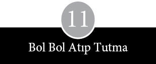
Wozniak’la Jobs’un 1976 baharında Atlantic City’ye götürdüğü puro kutusunun içinden feci şekilde deforme olmuş bir Apple bilgisayar çıktı. Tahta zemine vidalanmış baskılı devre kartı, çipler arasından kıvrılarak uzanan kablolarla örülüydü. Bu harap görüntüsüne karşın Wozniak’la Jobs makineye gözleri gibi bakıyorlardı. Gündüz fuar salonundaki bir oyun masasında Apple bilgisayarı satmaya çalışıyor, diğer zamanlarda onu oteldeki sevimsiz odalarında kilitli tutuyorlardı. Akşamları fuar kalabalığı boşalınca Wozniak, Jobs ve (arkadaşlarına yardımcı olmak için ta New York’tan kalkıp gelen) Don Kottke kocaman bir televizyon ekranı olan bir odaya sessizce sızıyorlardı. Wozniak halının üzerinden kabloyu uzattıktan sonra, bilgisayara birtakım komutlar yüklüyor ve ekrana inanılmaz renk dalgaları püskürtüyordu.
Wozniak, Apple’ın Homebrew Kulübü’nde tanıtıldığı günden beri onu geliştirmek için çaba harcıyordu. İlk duyurudan sonraki karşılıklı sohbet sırasında, bazı üyeler cihaza ne gibi ek özellikler katmayı düşündüğünü sormuştu. Wozniak az miktarda çiple, siyah-beyaz cihazı renkli bilgisayara dönüştürecek bir devre üzerinde çalıştığını söylemişti. Renk devresinin en az 40 çip gerektirdiği düşünüldüğünden, tasarımcılar için hayli abartılı bir iddiaydı bu. Wozniak’ın kafasında Apple’ı renklendirme azmi,
Homebrew Kulübü’nde renkli grafikler gösterme yetisine sahip bir mini-bilgisayarın demosunu izledikten sonra yer etmişti. Kurucuları Homebrew toplantılarının katılımcıları arasında bulunan Cromemco adlı küçük bir şirketin ürettiği bir makine olan Dazzler’ın ekranındaki renk hareketleri Wozniak’ın zihnine işlemişti. “Renklerin öyle dönüşünü izlemek o kadar etkileyiciydi ki! Ben de kesinlikle renk üretmek istiyordum.” Böylelikle, açıkladığı renk devresi tasarlama niyeti, özünde mazoşist bir meydan okuma ve ciddi anlamda bir iktidar testi boyutlarına varan bir hedef seçimiydi. Aslında Wozniak’ın renk devresi ekleme arzusunun başlıca nedeni basitti. Jobs’la birlikte Atari için tasarımını yaptıkları Breakout adlı oyunu oynayabileceği bir bilgisayar istiyordu.
Wozniak, Hewlett-Packard’daki laboratuvar tezgâhına döndü ve iki apayrı problem üzerinde çalışmaya başladı. Bunlardan biri renklendirici bir devre yapmaktı. Öteki ise belleği sadeleştirerek kart üzerindeki çip sayısını azaltmaktı. Apple bilgisayarın iki bellek seti vardı. 8 kilobayt çip kartlı olanı mikroişlemciye hizmet veriyordu. Kaydırma yazmacı denen daha eski ve daha yavaş bir bellek sistemi içereni ise siyah-beyaz ekrana hizmet veriyordu. Wozniak çip sayısını azaltma çabasıyla bir belleğin hem bilgisayara hem de ekrana hizmet etmesini sağlayacak bir yol bulmaya uğraşıyordu. Bir resmin televizyonda nasıl gösterildiğini araştırdı ve satır satır tarama işleminin, zamanının üçte ikisinde ekrana soldan sağa doğru elektronla fosfor püskürttüğünü, geri kalan üçte birlik zamanda da sağdan sola geriye doğru geldiğini keşfetti. Wozniak bu bilgiyi elde ettikten sonra mikroişlemci ile ekranı aynı belleği kullanmaya zorlamaya karar verdi. Satır satır tarama işlemi, bellekten bit’ler alarak ekran üzerinde hareket ederken mikroişlemci kesiliyor, tarama geriye gelirken mikroişlemci devreye giriyordu. Bu yaklaşım Homebrew’da tartışma konusu olmuş ve 1975 Ağustosu’nda bir bülten yazarı, “mikro-bilgisayarın belleğini bilgisayar onu kullanmadığı sırada okuyabilecek bir devre yayınlanırsa” ekran zamanlaması sorununun çözümlenip çözümlenemeyeceğini sormuştu. Wozniak’ın bu dağıtım işini yapabilmesi için mikroişlemcinin hızını düşürmesi gerekiyordu. “Bilgisayardan beklenen tek şey oyunu oynatmasıydı, o durumda zaten kimse bir şey anlamıyordu. Ne komik! İki ilgisiz konuyu düşünürken basit bir tasarım ortaya çıkıvermişti.” Wozniak böylelikle alete hemen hiç masrafsız renk eklemiş ve ilk makinenin yarısı kadar çipi bulunduğu halde daha güçlü bir bilgisayar tasarlamıştı.
Wozniak ayrıca Apple’ın kapasitesini artırmak niyetindeydi. Mini-bilgisayarların gücünün çoğu, daha küçük baskılı devre kartlarının yerleştirildiği ana karttaki yuvalardan geliyordu. Yuvalar tasarımın can alıcı parçasıydı, çünkü bilgisayarların, daha çok sayıda görevi yerine getirecek şekilde genişletilebileceğini ifade ediyordu. Yuvalara yerleştirilen küçük baskılı devre kartları daha fazla bellek çipi, bir yazıcı ya da telefon bağlantısı içerebilirdi. En başarılı mini-bilgisayar şirketlerinden bazıları küçük firmaları, bilgisayarla birlikte çalışacak çevresel eklentiler üretmeye teşvik ediyordu. Böylece yuvalar herkese fayda sağlıyordu: Makinenin pek çok özelliğiyle ve yarattığı yan sanayiyle böbürlenebilecek olan bilgisayar imalatçısına, yeni ürünler imal edecek olan çevresel aygıtların üreticilerine ve birden fazla işleve sahip bir makineye sahip olan müşteriye. Altair’in, bilgisayar meraklılarında böyle bir izlenim bırakmasının bir nedeni de yuvalı mini-bilgisayarı taklit etmiş olmasıydı. Wozniak yuva nosyonundan hoşlanmıştı: “Hepsi devamlı kart dolu yirmi yuvalı bilgisayarlar kullanmaya alışkındım.” Yapacağı renkli bilgisayarda sekiz yuva bulunmasına karar verdi. Ama Jobs bu fikre katılmadı ve aralarındaki görüş ayrılığı en uzun süreli tartışmalarının gerekçesi oldu. Wozniak bu olayı şöyle anımsıyor:
Steve’in görebildiği tek şey, iki işi birden yapabilen bir bilgisayardı; biri basic programlar yazmak, diğeri de oyun oynamak. Bir yazıcı ya da modem de ekleyebiliriz, diyordu, iki yuvadan fazlasına asla ihtiyacımız olmaz. Ama ben iki yuvayla bırakmayı kabul etmedim.
Jobs ile Wozniak, bir yandan yuva adedi konusunda kapışmaya devam ederken, renkli bilgisayarın geliştirilmesi konusunun hiç gündemden düşmediği Homebrew Kulübü toplantılarına düzenli olarak katılmayı ihmal etmediler. Amatörlerin yaptıkları bu oturumlarda Wozniak iki yeniyetme kampçı buldu: 1976 yazında 16 yaşında olan Randy Wigginton ile 15 yaşındaki Chris Espinosa. Wigginton, Call Computer için bir iki küçük program yazmıştı, bu sırada Wozniak’la ve onun küt kafalı terminaliyle tanışmış, kendisinden daha çok terminalden etkilenmişti. Wigginton’un babası Lockheed’de mühendisti ve aile Sunnyvale’de oturuyordu. Epey sivri dilli olmakla birlikte sıcak, aydınlık bakışlı bir çocuk olan Wigginton da büyüme acıları çekmişti. “Daha ortaokulda uyuşturucuya alıştım.” Tanıdığı bir uyuşturucu satıcısının, parasını ödemekte geciken bir müşterisini lağıma atarak öldürdüğü için tutuklandığına tanık olmuştu. Wigginton, Homestead Lisesi’nin yaz okulunda bilgisayarla karşılaşıp da daha tehlikesiz bir ilgi alanına yöneldiğinde 13 yaşındaydı. Okuldaki teleyazı terminali Hewlett-Packard’daki bir bilgisayara bağlıydı. “Bilgisayara elimi sürmemle birlikte, bir daha bırakamadım.” Ailesi onu San Jose’deki özel bir okula aldı, burada tüm hayatı bilgisayar oldu. İlk yılında bir bilgisayar dersi organize etti, ikinci sınıfta ise kendisinden iki yaş büyük öğrencilere BASIC öğretmeye başladı. “Bilgisayar Randy” diye çağırmaya başladılar onu; küçükler balosuna davet edebileceği bir kız bulamadığı için utanarak davetiye satan çocuktan kaçmaya çalışırken, arkadaşları ona bir bilgisayar davet etmesini önerdiler. Wigginton benzer sıkıntılara katlanmış olan Wozniak’ı daha sempatik bulmaya başladı. Wozniak ona parça verdi ve kalın lehim kaynağıyla uğraşıp duran Wigginton’un ilk donanımını, yani bir Apple’ı yapmasına yardım etti.
Homestead’deki bilgisayar yaz kursları, aynen Wigginton gibi, Chris Espinosa’yı da çarpmıştı. “Temel bilgilerle donandıktan sonra artık, öğretmenden daha fazla şey bilir hale geldik.” Espinosa Los Angeles’ta büyümüş, sekiz yılda dokuz ayrı okula gitmişti, ancak babası Santa Clara Üniversitesi’nde hukuk dersi vermeye başlayınca Cupertino çarkına sıkışıp kalmıştı. “Cupertino’nun ortamı bambaşkaydı. Los Angeles’ta arkadaşlarımın çoğu ya hırsız, ya müzisyen ya da uyuşturucu müptelası olup çıkmıştı. Cupertino’da zeki, akademik eğilimli, orta sınıftan ve epey ilerici yeni arkadaşlarım oldu.” Ortaokuldayken Espinosa, bir araziye alışveriş merkezi yapma planlarının tartışıldığı belediye meclisinde öğrenci sözcüsüydü. Toplu taşımaya duyduğu ilgi sayesinde, kamuya açık toplantılarda yerel otobüs hizmetlerinin yaygınlaştırılmasını ve hafif demiryolu taşımacılığının yararlarını savunarak, Santa Clara Transit Bölgesi’nin başına bela oldu. Otobüsle yolculuk etmek, saatlerini alıyordu –“Benim için otobüs ağı kocaman, karmaşık bir sistemdi”– ve onları kullanarak Byte Shop’ları dolaştı, burada bir Apple bilgisayarı programlamasını öğrendi. Wigginton gibi Espinosa da Wozniak’la tanışmasına vesile olan Homebrew toplantılarına arabayla gidemeyecek kadar gençti. Ne otobüs ağı ne de babalarının niyetleri çarşamba akşamları Palo Alto’nun karanlık köşelerine kadar uzanabildiğinden, Wigginton ile Espinosa’yı Homebrew Kulübü’nün toplantılarına götürmek Wozniak’a kaldı.
İki delikanlı, Wozniak’ın yaverleri gibiydi. Espinosa, Wozniak’ı Homestead Lisesi’ne bir bilgisayar bağışlamaya ikna etti; sonra da bu cihazı üzerinde IBM yazan bir kutuya monte ederek parlak ve zarif espri anlayışını gösterdi. Homebrew toplantılarına gide gele Wozniak’ın arabasını çöplüğe çevirdiler; arka koltukları dergiler, gazeteler, hamburger paketleriyle doldurdukları yetmezmiş gibi, bir de döşeme üzerinde üreyen mantara dair, “bunun botanik çevrelerindeki adı Woz Etkisi’dir,” diye dalga geçtiler. Daha narin yapılı olan Espinosa toplantılara giderken kitap ve kullanım talimatlarını taşırken, Wigginton da Wozniak’ın on dokuz inçlik renkli Sears televizyonunu taşıma görevini hiç sektirmezdi. Wozniak yeni bilgisayarını, Wigginton’un ağabeyi tarafından tasarlanıp imal edilmiş olan tahta kasada getirirdi. Toplantılardan sonra üçlü, sohbeti derinleştirmek amacıyla Denny’nin Yeri’ne takılırdı. Homebrew toplantılarından birinde Jobs, renk gösterileriyle hünerini sergilemeye kalkan Espinosa’yı sözlü sınava çekti. Ardından ona, Apple’ın en çok aranan parçalarından, bir dizi 4 kilobaytlık bellek çipi karşılığında iş teklif etti. Espinosa teklifi kabul ettiyse de “Jobs sözünü hiçbir zaman tutmadı.”
Her Homebrew toplantısında Apple, SLAC salonunun girişinin yakınındaki bir oyun masasının üzerine diğer amatör bilgisayarlarının yanına konurdu. Bu eğimli geniş salonda mikro-bilgisayarlarla ilgili hemen her önemli gelişme mutlaka su yüzüne çıkardı ve kulüp bülteni yeni ürünleri, fuar günlerini, Santa Monica’da açılan ilk bilgisayar mağazasını ve Kentucky Fried Computers gibi, bilgisayar kiti satan perakendecileri büyük bir görev aşkıyla haber verirdi. Haber bülteninin editörleri acemilere hayatın bazı acımasız gerçeklerini de öğretirdi. Processor Technology’nin video gösterisinin, söz verilen zamanda çıkmaması üzerine bülten şöyle yazmıştı: “Sabır, göründüğü kadarıyla, bilgisayar meraklısı için zorunlu bir vasıf.” Gazetede sık sık yazılım talepleri ilanları yer alır ya da Dr. Dobb’un Bilgisayar Jimnastiği ve Ortodontisi Gazetesi gibi tuhaf bir adı olan, bilgisayar dili ve program yayımlama niyetindeki bir gazetenin editör aradığına dair duyurular göze çarpardı.
***
Wozniak, Apple için program geliştirmekle uğraşırken, yazılım konusu kulüpte şiddetli bir tartışma başlattı. Bilgisayar meraklılarının çoğu, yazılımın, doğuştan gelen bir hak olmasa bile, kendi bilgisayarını yapma cesaret ve azmini gösteren kişilere parasız verilmesi gerektiği görüşündeydi. Yazılım yapan programcılar ise buna itiraz ediyorlardı. Altair için orijinal BASIC’i geliştirenlerden biri olan Bill Gates, Homebrew’ün bülteninde yayımlanan bir açık mektupla, MITS müşterilerinde BASIC’in bir kopyası bulunduğu halde, bunların sadece onda birinin programı satın almış olduğundan yakındı. Şöyle yazıyordu Gates mektubunda: “İyi bir yazılım ve programlamadan anlayan bir kullanıcı olmazsa, amatör bilgisayarı heba olur... Amatörlerin büyük kısmı bilir, çoğunuz yazılımı çalıyorsunuz.” Gates’in programcıların haklarını cesaretle savunması karşısında kimse oralı olmadıysa da bir kulüp üyesinden şöyle bir yanıt geldi: “Gelecekteki olası müşterilerinizin tümüne hırsız demek pek de ‘akıllıca olmayan’ bir pazarlama stratejisi değil mi?”
Wozniak’ı hiç bulaştırmamak gereken bir alan da pazarlamaydı. Onun Apple’a yavaş yavaş eklediği özelliklerin çoğu kendi kişisel istekleri doğrultusundaydı. Breakout tüm görkemiyle ortaya çıksın diye bilgisayara oyun konsolu ve ses devresi ekledi. Ekranda çıkan yazılar büyük harfti, çünkü Homebrew üyeleri klavyelerinde sadece büyük harf kullanabiliyorlardı. Hatta Wozniak küçük harfi devamlı büyük harfe dönüştürecek bir program yazmak zorunda kaldı. “Çok uzağı düşünmüyorduk. Küçük harfli bir klavye lazımdı ama alacak zamanımız yoktu.” Aynı şekilde, televizyon ekranları daha fazlasını kabul etmediğinden, bilgisayarlar bir satıra kırk karakter alacak biçimde tasarlanmıştı.
Wozniak, Jobs’un bu renkli bilgisayarı satmasını isteyip istemediğinden dahi emin değildi. Apple’ın kurulduğu gün Wozniak oradaki her türlü iyileştirmenin tüm haklarına sahip olacağı konusunda Jobs ve Ron Wayne’le sözlü bir anlaşma yapmıştı. Bir süre, elindeki geliştirilmiş versiyonu, Sol Terminal’in üreticisi Processor Technology’ye satmayı aklından geçirdi. “Bunun bir Apple ürünü olduğundan emin değildim.” Wozniak’ın ailesi, Jobs’a kuşkulu gözlerle bakıyordu. Leslie Wozniak ondan “çıplak ayakları ve leş gibi saçlarıyla ürkütücü görünüşlü adam” diye söz edildiğini duymuştu, anne babası ise büyük oğullarının iş ortağı hakkında daha ciddi kuşkular besliyordu. Jerry Wozniak oğlunu iş yapabileceği diğer seçenekleri düşünmeye teşvik etti, isterse tanıdığı bazı kişilerle temas kurmasını önerdi. “Steve Jobs’tan endişe duyuyorduk,” diye anlatıyor Jerry Wozniak. “Onu işe hep en tepeden başlamak isteyen, aşağıdan yukarıya çalışarak çıkmak için uğraşmaya niyeti olmayan biri diye düşünüyorduk.”
1976 sonbaharında Commodore Business Machines’in iki temsilcisi, Apple’ı, prototipi de dahil tümüyle satın alma teklifiyle Jobs’un garajına gelince, bu iç çatışma doruk noktasına ulaştı. Alıcı adaylarının yüzü hiç de yabancı değildi. Gerek Chuck Peddle gerekse Andre Sousan daha önce Apple’la iş yapmış, Peddle ise MOS Technology’nin 6502’sini tasarlayan ekibi yönetmişti. (Wozniak ilk 6502’sini San Francisco fuarında Peddle’ın karısından satın almıştı.) Wozniak, Apple üzerinde değişiklikler yaparken Peddle, Jobs’un garajını arayıp MOS Technology’nin geliştirdiği tek kartlı mikro-bilgisayar KIM-1’i göstermişti. Bu bilgisayarın işlevi asansörlerde ve elektrikli ev aletlerinde 6502’yi kullanacak mühendisleri eğitmekti. Bu arada MOS Technology, Andre Sousan’ın mühendislik birimi başkan yardımcılığı yaptığı Commodore Business Machines tarafından satın alınmıştı. Gerek Sousan gerekse Peddle yeni işverenlerinin, modifiye edilmiş Apple gibi bir bilgisayarla mikro-bilgisayar dünyasına dalma olanağı elde edeceğine inanıyorlardı. Tabii Jobs’un da bir fiyatı vardı. Apple için 100.000 dolar, bir miktar Commodore stoku ve hem kendi hem de Wozniak için 36.000 dolar maaş talep etti.
Aslında satış teklifini kabul etmeleri halinde, ikisinin de eline hayal bile etmedikleri kadar para geçecek, üstelik bir yıl boyunca günde on dört saat çalışmaktan da kurtulmuş olacaklardı. Ancak, Jobs’un Commodore hakkında yaptığı soruşturma derinleştikçe, kuşkusu arttı. Yetmişlerin başında Mr Calculator adlı bir mağazalar zincirini işletirken, amansız bir fiyat savaşı açarak elektronik-hesap makinesi sektörünün lanetini üzerine çeken Commodore’un kurucusu Jack Tramiel hakkında araştırmasını yoğunlaştırdı. Kısa süre sonra, Tramiel’in pazarlığın başında, genelde pek beğendiği bir deyişe göre hareket ettiğini öğrendi: “Bana gömleğimden daha yakın tek bir şey varsa, o da cildimdir.” Gördükleri Jobs’u etkilemedi. “Commodore’u kurcaladıkça gözüme daha berbat görünüyordu. Onlarla iş yapıp da mutlu olan tek bir kişi görmedim. Herkes aldatılmışlık duygusu içindeydi.” Tramiel ile Commodore’un başkanı Irving Gould, Apple’ı alma kararından vazgeçti. Sousan bunun nedenini şöyle açıkladı: “Bir garajda çalışan iki kafadarın işini satın almayı saçma buldular.”
Yine de Commodore’un bu teklifi Jobs ile Wozniak arasında uzun tartışmaların çıkmasına ve kazancın nasıl paylaşılacağı konusunda sert anlaşmazlıklar yaşanmasına neden oldu. Bu tartışmaya Jerry Wozniak da katıldı ve duygularını açıkça ortaya döktü. Mark Wozniak’ın anımsadığı kadarıyla, babası oldukça sert bir tutum takınmıştı:
Babam, Jobs’u birkaç kez ağlattı. Bak, o orospu çocuğunu nasıl hüngür hüngür ağlatacağım, deyip duruyordu zaten. Ona, “Sen hiçbir şey hak etmiyorsun. Sen hiçbir şey üretmedin ki! Hiçbir şey yapmadın ki!” deyip duruyordu. İş kopma noktasına geldi.
Jobs kendini çok kötü hissediyordu. Jerry Wozniak’ın acımasızca onun katkılarını yok saydığı kanısındaydı. Arkadaşı Wozniak’a şöyle dedi: “Woz, eğer yarı yarıya ortak değiliz diyorsan, al hepsi senin olsun.” Sonunda Jobs’un sezgileri haklı çıktı ve Commodore’la Apple’ın yolları ayrıldı.
Apple’ın kurucuları bir yandan taliplerini savuştururken, bir yandan da yoğun bir şekilde bilgisayarda yeni değişiklikler yapmakla uğraşıyorlardı. Jobs fansız, sessiz çalışan bir makinenin, tost makinesi gibi ısınan güç kaynaklarını soğutmak için fan kullanılan gürültülü makinelerden daha çok satacağını düşünüyordu. Wozniak güç kaynaklarıyla hiç ilgilenmemişti o güne kadar. Fernandez’le birlikte Gazoz Marka Bilgisayarı geliştirdikleri zaman, cihazın su koyuveren parçası güç kaynağıydı. Apple’ın güç kaynakları da sonradan akıllarına gelmişti. Güç kaynağı, Haltek’in rafından alınıp son anda takılabilecek bir parçaydı. Bir güç kaynağının insanı endişelendirebileceği tek an, bilgisayara güçlü bir voltaj akımı gönderip de ince ince ayarlanmış bütün dijital elektronik parçaları havaya uçurma tehlikesi gösterdiği andı.
Güç kaynakları, temel kuralları radyonun ilk günlerinden bu yana pek fazla değişmemiş olan eski, daha düz bir elektronik dalına aitti. Regülatör ve transformatör gibi güç kaynakları analog cihazlardı; analog ile dijital elektronik arasında duygusal ve zihinsel bir ayrım vardı. Wozniak gibi daha genç olanlar genelde, değişimin daha hızlı olduğu dijital elektroniğe ilgi duyuyorlardı. Onların kavramsal dünyasının çerçevesini yükseklerle alçaklar, 1’lerle 0’lar oluşturuyor ve hayatları yarıiletken imalatçılarının önlerine koyduğu çözümler çevresinde dönüyordu.
Mühendisler, daha fazla bilimsel disiplini kapsayan ve daha güçlü bir matematik ve fizik temeli isteyen analog elektroniğe daha yatkındılar. Bir vida eklemenin ya da bir kablo değiştirmenin tasarımın performansını etkileyebileceğini bilen analog tasarımcılar, işlerinin tam olmasına çok özen gösterirlerdi. Onlar genelde o anki kayıplardan ödü kopan, daha temkinli, daha sabırlı bir nesildi. “Çalışıyor” diye çığlığı basan dijital tasarımcılara karşılık analog tasarımcılar “şu çerçeve dahilinde çalışıyor” diye açıklama yapma gereği duyarlardı.
Bu yüzden Jobs, Atari’ye gidip Al Alcorn’dan, fan gerektirmeyecek bir güç kaynağı tasarlayabilecek kapasitede bir adam tavsiye etmesini istedi. Garaja içi iyimserlikle dolu olarak döndü, Wozniak ile Wigginton’a dünyanın gelmiş geçmiş en harika analog tasarımcısını bulduğunu, onun bütün New York’u aydınlatabilecek ama şimdilik sadece altı voltluk bir aküyü çalıştıracak bir güç kaynağı yapabileceğini söyledi. Heyecanın dayanağı olan Frederick Rodney Holt, Apple’a pek o kadar güvenmiyordu. Jobs’la buluşmuş, görebildiği her şeyi tepeden tırnağa iyice incelemiş ve
Apple’ın onun danışmanlık ücretini verip veremeyeceğini merak etmişti. “Pahalı bir adam olduğumu söyledim kendisine. ‘Sorun değil’ diye karşılık verdi. ‘Sen işini iyi yap, yeter’ dedi.”
Holt akşamlarını ve hafta sonlarını Apple’da geçirmeye başladı; Jobs’la Wozniak görünüşün aldatıcı olduğunu bir kez daha öğrendiler. Holt sanki içki bardaklarındaki çubukları ateşleyecek bilimkurgu makinesinin baş tasarımcısı olabilecek biri gibi duruyordu. Yüzü buruş buruş, gözleri elaydı; kafasında bir tutam saç vardı, çoğunlukla balıkçı yaka kazak, kumaş pantolon ve Waffle-Stomper spor ayakkabılarıyla dolaşırdı, kemikli bir vücut yapısına sahipti. Nikotinden sararmış ince parmaklarının arasından Camel sigarası eksik olmaz ve devamlı kuru kuru öksürürdü. Ama hiç de tükenip gitmiş, orta yaşlı bir mühendis değildi. Hem Wozniak’ın hem de Jobs’un babası yaşındaki Holt, ilk kez on sekiz yaşında, ilk karısından ayrılmadan bir yıl önce baba olmuş ve daha sonra da pek çok kez evlenmişti.
Gençliğinde Eugene Debs’in aday listesinden Main eyaleti valiliğine aday olan, Devrimci Sosyalist büyükbabasından Lenin’in bütün eserleri miras kalmıştı kendisine. Lenin o günlerin yeniyetme gencinin raflarını Darwin’le paylaştığı halde, Holt kesin olarak, proletaryanın zaferinin en güçlü olanın hayatta kalmasına tercih edilebilir olduğuna karar verdi. Matematik bölümünden mezun olduktan sonra, Ohio eyaletinde bir gazete çıkarmaya başladı –kendi kendime satranç oynuyor gibiydim– ve paramparça radikal sol grupların arasındaki kıskançlıkları keşfetti. Vietnam’da Savaşa Karşı Ulusal Koalisyon’un öğrenci kesiminin mali sorumlusu oldu ve küçük bir yayınevi tarafından, Marksizmin mantığı üzerine bir kitap yazmak için New York’a davet edildi. Fakat siyasi mücadele onu başka tarafa çekti; 1965’te John Lindsay’in aday olduğu New York City belediye başkanlığı seçiminde Holt, ona rakip olarak çıkan Devrimci Sosyalist bir siyah taksi şoförünün seçim kampanyasını yönetti. Ancak ikili, New York seçmenlerinden çok FBI’ın ilgisini çekmeyi başardı.
Holt siyasi arayışlarının yanı sıra hem elektroniğe hem de motosikletlere ilgi duyuyordu. “Bol cızırtılı” ses kayması az olan müzik setleri geliştirdi, imal etti ve kurdu; on yıla yakın Midwest’teki bir elektronik şirketinde ucuz osiloskopların tasarımında yardımcı olarak çalıştı. Akşamları ve hafta sonları motorlu scooter’dan Harley Davidson ile Triumph’a dek uzanan geniş bir skalada motosiklet binme merakını gideriyor ve düz yoldan yasadışı yarışlara terfi ediyordu. Ancak, yıllar geçip de yarışçılar en yeni model motosikletlere yönelince, Holt’ün eski makinelerle sınırlı olan tamir yeteneği işe yaramaz hale geldi. Yine de yetmişlerin başında Ohio’dan West Coast’a taşınınca güzelce topladığı üç eski motosikletini, bir tırın üzerinde ülkenin dört bir köşesinde dolaştırdı. 1976 ilkbaharında başparmaklarında meydana gelen kas ve sinir hasarı yüzünden gidonu iyi kavrayamadığı için yarışlardan çekildi. Dili hâlâ motosikletçiler çevresinin jargonuna çalıyor olsa da zorunlu emeklilik ve Atari’deki eski bir arkadaşıyla ters düşmesi onu Apple’a itti. “Jobs geldiğinde motosiklet yarışlarına devam ediyor olsaydım herhalde onu kapıdan kovardım.”
Holt gerek Jobs’da gerekse başıbozuk Apple bilgisayarda birtakım can sıkıcı sorunlar gördü: “Daha önce hiç denenmemiş bir şeyi ticari boyutta iş haline getirmek ciddi bir meydan okumaydı. Bunun benim için insiyaki bir çekiciliği vardı.” Ne ki, Holt ne kadar ilginç olursa olsun, yarı zamanlı danışmanlık işinin haftalık bilardo maçlarını engellemesine asla izin vermezdi. Jobs ile Wozniak kısa bir süre içinde, Holt’le herhangi bir konuda, temel bilgi düzeyini aşan bir donanıma sahip olduğunu göstermediği hiçbir konuşma yapmanın mümkün olmadığını fark ettiler. Birinin ağzından bir çömleğin üzerindeki sırın parlaklığıyla ilgili rastgele bir söz çıksa, kimyasal işlemlerle ilgili bir vaaz dinlemeye hazır olmaları gerekiyordu. Şipşak çekilmiş bir fotoğraftan söz açıldığı anda, hemen ardından fotogravür teknikleri üzerine bir vaaz gelirdi mutlaka. Bellek çiplerinin fiyatlarından yakındığınız anda, kapitalist sistemin kötülükleri hakkında bir konferans başlar, pokerden bahis geçse, usta kâğıt oyunculuğuna dair bir nutuk geliverirdi. Apple’lı gençler kısa bir süre sonra Holt’ün bir elektronla sohbete dalabilecek ve büyük olasılıkla, bir lokantada bir peçetenin üzerinde kendisinin aslında var olmadığını kanıtlamaya çalışacak türde bir insan olduğunu fark ettiler.
Goldman, “Devrim yapmak dünyanın parasını ister,” dedi.
Pencereden bakınca, bir vincin ucunda uzun bir çelik putrelin pervasızca sallandığı görülüyordu. Aşağıda bir iki işçi vincin operatörüne el kol işaretleriyle yol gösteriyordu. İnşaat baretlerinin beyaz tepe kısımları güneşte ayna gibi yanıp sönüyordu. Tek katlı havasız bir ofiste U şeklindeki masanın etrafına dizilmiş iki düzine insanın Apple’ın yeni şirket merkezi inşaatının gürültüsünü duymaması için renkli camlar sıkı sıkı örtülmüştü. Havada sallanan putreller ve beyaz başlıklar tıpkı inşaat güvenliği konulu sessiz bir filmden alınmış sahneyi andırıyordu.
Toplantıya katılanlardan birkaçı amaçsızca bir şeyler karalayarak dışarıyı seyrediyordu. Yarısı, Apple’ın farklı bölümlerinden gelen pazarlama müdürleriydi; geri kalanlar da Chiat-Day reklam ajansından gelmişlerdi. Lisa’yı üreten bölümün başı John Couch, koltuğunda diken üstünde oturuyordu. Apple’ın iletişim başkan yardımcısı Fred Hoar özenle taranmış kestane rengi saçlarını hafifçe düzeltiyor, Henry Whitfield ise bir tepegöz projektörünün yanında ayakta duruyordu. Diğerleri ise tüm dikkatini, reklam ajansındaki arkadaşlarıyla birlikte Apple için hazırladıkları kampanyadan söz eden Fred Goldberg’e vermişti. Goldberg, Lisa ile Apple II’nin resmen tanıtılacağı, hissedarlar toplantısıyla eşzamanlı olarak yayınlanacak reklamlarla ilgili hazırlıkları açıklıyordu. Ardından Apple’ın bütün bilgisayarları için bir reklam planının özetine geçti.
“Karışıklığa bir son vermek ve markayı marka yapmak zorundayız,” diye girdi söze Goldberg. “Yeni kullanıcılar arasında hangi bilgisayarı ne zaman kullanacaklarına dair bir güven oluşturmalıyız. Çoğu kişi sadece bir bilgisayar satın almıyor. Şirketi, onun büyüklüğünü ve esinlediği güveni de satın alıyor.” Reklamların etkisine olan inancından söz etti biraz.
Bir duyurunun tepki yaratma şansı halkla ilişkilerin yapabileceklerine göre çok daha azdır. Reklam yaptığınızda ne elde edeceğinizi bilirsiniz. Şirketin ürününü tanıtmaya para harcaması ona duyduğu güvenin göstergesidir. Kendi paranızı harcamak, başlı başına bir açıklamadır.
Goldberg ajansın sanat yönetmeni Lee Clow’u tanıştırdı. Uzun boylu, hafifçe kambur ve sakallı bir adam olan Clow, siga-rasından derin bir nefes çekip masanın üzerine poster boyutunda birkaç reklam malzemesi yaydı. Posterleri gösterip, “Şimdi sırada, bu parçayla ilgili düşündüğümüz slogan var,” dedi. Elindeki kâğıttan iki kelime okudu: “Evrim. Devrim.” Durdu. Ardından, “Bizim dışımızda herkesin yaptığının eskidiğini söylemek çok hoş, ama bizim söylemeye çalıştığımız şey de bu zaten. Lisa’nın tanıtım şovunun diğer herkesin yarışı kaybettiğini göstermesi çok önemli,” diyerek devam etti. Clow elindeki reklam metnini okumayı bitirince, Apple kadroları arasından endişeli sesler yükseldi.
“Reklamların basında yer alacak haberleri ve yazıları bastırmasını istemiyoruz,” diye konuştu Fred Hoar. Lisa ile Apple II’nin tanıtılmasından sonraki birkaç gün boyunca haberlerin arkasının kesilmeyeceğini belirtti. “Tam uzay roketi gibi bir çıkış olacak. Halkla ilişkileri biraz lansmanın yaratacağı etkiye bırakmak arzusundayız.”
Metal çerçeveli gözlük takan ve yüzünde geniş bir gülümsemeyle söz alan Apple’ın pazarlama müdürlerinden Alan Oppenheimer, kanayan bir yaraya değindi. Mac ile Lisa’nın her ikisi de bir mouse’a ve görsel simgelere dayandığı halde, biri için yazılan program diğerinde çalışmıyordu. Böyle olunca pazarlamacılar Lisa ile Mac’in farklı şirketlerce tasarlanmış olabileceği durumunu gizlemek için olmadık kılıklara girmek durumunda kalıyorlardı. “Belki de ana plan pek uygun değil,” diye devam etti Oppenheimer. “Mac ile Lisa birbiriyle uyumlu değil. Sektör basını bunu anlayabilir. O zaman da bizi lime lime ederler.”
Hoar, “Ana plan uyumu bizim öne çıkaracağımız şey değil,” dedi. “Ama Apple’ın fırsatçı, gelişigüzel ve eşgüdümsüz olduğu fikrine de imkân tanıyamayız.”
John Couch sandalyesinin ucunda yaylanarak, keskin bir ifadeyle, “Burada asıl söylememiz gereken şu: ‘İşte kişisel ofis sistemi. Yetmişlerde bir donanım devrimi olmuştu, şimdi de seksenlerde yazılım devrimi olacak.’ İşte size mesaj,” dedi.
Masada biraz ilerde oturan, Couch’un elemanlarından Linda Goffen başını hızla sallayarak onayladıktan sonra ekledi: “Bu terminolojiyi özümseyip sahiplenmeliyiz.”
Tartışmanın hafiflemesi üzerine Clow, reklam ajansının Lisa ile Mac’in reklamlarını birleştirme önerisini açıklamaya koyuldu. Ana sloganı şöyle gerekçelendirdi: “Bilgisayarları lanse ederken, bir elinizde tek bir mouse tutabilirsiniz.”
Apple II ile Apple III’ün dağınık saçlı pazarlama şefi Paul Dali, “Bence bu teknik intihar demek. Mouse arayüzü dışında bir benzerlikleri yok. Bir aile yaratmaya çalışmamız doğru değil,” diye girdi söze.
Couch yatıştırıcı bir tonla devam etti:
Uyumluluk konusunda bize yalnızca Fortune 500’dekiler laf edecektir. “Neden kelime işlemcimi evimdeki Lisa’dan alıp işyerindeki Mac’ime yükleyemiyorum?” diye soracaklar. Bizim sersem güruhu olduğumuzu düşünecekler.
Henry Whitfield iç geçirerek, “Bu bir sorun,” deyip devam etti:
Bunlar uyumsuz. İnsanlar bunların birbiriyle alışveriş yapamadığını er geç öğrenecek. Fortune 1000 şirketlerinin çoğu bizden daha yüksek düzeyde uyumluluk beklerdi. Biz de deriz ki; tüketici piyasasında daha iyi bir yer yakalamak için fiyatı düşük tutmaya çalıştık da ondan.
John Couch toplantının ana konusuna döndü: Apple büyük şirketlerdeki insanları Lisa ve Mac satın almaya nasıl ikna edebilir? Büyük şirketlerde bilgisayar alma yetkisini eskiden beri ellerinde tutan veri işlem müdürlerinden yakınmaya başladılar.
Bilgisayarların dünyanın geri kalan kesimlerine yayılmasını önlemek için engeller dikmeye can atıyorlar sanki. Her yerde Apple II’nin kullanıldığını görmek hoşlarına gitmedi, şimdi IBM’le görüşüyorlar. Satış ve servis bakımından IBM’le rekabet edemeyiz, o zaman teknolojiyi öne çıkaracağız. Şöyle diyeceğiz: “Bizimki yeni teknoloji. Burada bir devrim gerçekleştirdik. Eğer teknoloji gereksinimlerinizi karşılamıyorsa siz bir Apple alın, çünkü o diğerlerinden hayli ileride.”
Paul Dali, “Bayrağı doğru dikmek zorundayız,” dedi üstüne basa basa.
Fred Goldberg kollarını boyun eğer bir tavırla iki yana açtı: “Yeterli para yok ki!”
“Daha fazla para bulmak için kafamızı duvara vurup duruyoruz,” diye gözlemini belirtti Henry Whitfield. “Harcamaları iyice azalttık. Hiçbir şeye yetecek paramız yok.”
Reklam ajansından Maurice Goldman, “Çeyrek sayfalık reklamlarla devrim filan yapılmaz,” diye onayladı. “Devrim yapmak dünyanın parasını ister.”
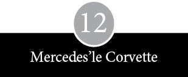
Apple Computer derme çatma bir amatörler dünyasına sıkışıp kalmıştı. O kadar rahat bir yerdi ki burası, pek çok mikro-bilgisayar firması burada bulunmaktan gayet memnundu. Mühendisler, devreler ve akıllı şifre parçaları üzerine gece yarılarına kadar tartışabilirlerdi. Kurucular yeni elde ettikleri otoritenin keyfini sürebilir, büyük şirketlerin ağırbaşlı tavırlarını çekiştirebilir, küçük yayın organlarına büyük reklamlar verebilir, birkaç bin doları görünce ağızlarının suyu akabilir ve Muz Cumhuriyetleri’nin teneke imparatorları gibi yaşayıp gidebilirlerdi. Bu insanların çoğu neleri bilmediğinin asla farkına varamadı ve dünyadaki daha deneyimli kimselerden öğüt almaya yanaşmayacak kadar ya kendinden çok emin ya da fazla ürkekti.
Bu bilgeliğin muhatapları çelik çerçeveli, beton duvarlı ve düz cam bölmeli binalarda oturuyorlardı. Bir zamanlar San Francisco Körfezi’nin batı ucunda uzanan ovayı boydan boya kaplayan tarlalar ve bağların oluşturduğu mozaiğin yerini yetmişlerin ortalarında büyük ölçüde tekdüze sanayi barınakları aldı. Buralar altmışlı ve yetmişli yıllarda, Sunnyvale’den San Jose’ye doğru yayılan yeni elektronik modasının merkezi olarak kurulmuş düzinelerle şirket barındırıyordu. Bu binaların bazen “yandan dikme” diye adlandırılmalarına yol açan bir zayıflıkları vardı; duvarları, dökme betondan prefabrik blokların yan yatırılarak dikilmesiyle yapılmıştı. Binalar, sanki müteahhit onları bir çiçekçinin bahçesinin ortasına dikivermiş gibi duruyordu. Ortalık, yeni kaldırım taşları, parlak siyah asfalt ve bir halı sahanın pürüzsüz albenisine sahip kırpılmış çimlerle kaplıydı. Endüstriyel bir Lewittown* örneğiydi.
Santa Clara ya da Mountain View çevresinde yapılacak kısa bir tur, şu beş sözcüğün özeti ya da bileşimi gibi görünen logolardan ve işaretlerden oluşan genel bir görüntüye ulaşmaya yetiyordu: Advanced-Digi-Integrated-Micro-Technologies (İleri Dijital Bütünleştirilmiş Mikro Teknolojiler). Yol üzeri konaklama yerlerinde rastlanan benzer görünümlü isimler Electronics News okurları için hayli tanıdıktı, ancak buradaki bütün şirketlerin birbirinin aynısı olduğunu söylemek, gömleklerin genelde yakası, kolları ve düğmeleri olur şeklindeki gözlem kadar basiretli bir öngörü olurdu. Duvarların arkasındaki yaşamın fani bir havası vardı; eski kır hayatının mevsimlere uyan temposu, yerini hemen hemen tümüyle biyolojik bir yaşam temposuna sahip genç şirketlere özgü bir kalıba bırakmıştı. Hırs, coşku, canlılık, karmaşıklık, düş kırıklığı ve eziklik döngüsü içinde geçip gidiyordu hayat. Bir elektronik kuruluşunun yayınladığı şirket soyağacında, elektronik sanayinin tarihçileri yenilere, Fairchild Semiconductor’un Intel Corporation ile National Semiconductor’un doğuşuna nasıl vesile olduğunu, onların da karşılığında başka şirketlerin türemesine aracılık ettiklerini sabırla anlatıyor. Zamanla daha da genişleyen ve iyice karmaşıklaşan bu soyağacında şirket ayrılıkları, ikinci evlilikler, üvey evlatlar ve gayri meşru yavrular da yer alıyor. Ayrıca üreme kalıplarında, insanlarda ciddi doğum kusurlarına yol açabilecek oranda yaygın ensest özellikler gözleniyordu.
Bu şirketlerin kurucuları ve yöneticileri bütün gereksinimlerini en fazla bir saatlik araba mesafesi içinde karşılayabildiklerini söylemekten pek hoşlanırlardı. Resmi şirket belgelerini hazırlayacak avukatlar, para temin edilecek risk sermayedarları, inşaat yapmak için müteahhitler, ofis dekorasyonu için iç mimarlar, kayıtları tutacak muhasebeciler, parça stoku yapmış dağıtımcılar, sıkıcı işlerin sipariş edileceği atölyeler, basınla aranızı hoş tutacak reklam ajansları ve hisse senedi tekliflerinizi düzenleyecek aracı kurumlar vardı. Bu adamların çoğu, yarıiletken sektöründe yetişmişti. Firmadan firmaya gezmiş, eline fırsat geçiren kendi şirketini kurmuş ve birbirlerini yakından izlemişlerdi. Kime güvenilebileceğini bilen ve birbirine karşı iş çeviren ayaklı deneyim küpleriydi hepsi. Burası konuşulanların ve söylentilerin hızla yayıldığı, insanların sıklıkla bir zamanlar yanlarında çalıştırdıkları kişilerin yanına işçi olarak girdiği ve şirketten çok, kişiye bağlılığın değer gördüğü küçük bir yerdi. Bütün bu insanlar, ürünleri eninde sonunda Haltek ile Halted’e ulaşan (ki bu durum Jobs’la Wozniak’ın çok hoşuna gidiyordu) şirketlerde çalışıyorlardı ya da bunlara yatırım yapmışlardı. Ancak, fiziksel bakımdan ne kadar yakın olurlarsa olsunlar, profesyonellerle amatörler arasında hâlâ hatırı sayılır bir mesafe vardı.
Hassas iç pusulasıyla aradaki mesafeyi fark ederek kapamaya yönelen Jobs, Intel’in pazarlama departmanını arayarak çarpıcı reklamlarının sorumlusuyla tanışmak istedi. Intel’in birçok mühendisini rahatsız etse de bu reklamlar donuk şemalardan ya da siyah-beyaz teknik çizimlerden oluşmuyor ve yeni bir çipin üstünlüklerini sıralayarak çok dar bir kesime seslenmiyordu. Renk-li ve üst üste yazılarla, ayrıca simgelerden büyük ölçüde yararlanarak, elektroniğin potansiyel gücünü açıklamaya çalışan reklamlardı bunlar. Örneğin poker fişleri kazancı, yarış arabaları hızı, satır maliyeti kısmayı, hamburgerlerse siparişe göre çip üretilebileceğini gösteriyordu. Jobs fikrin ve görüntünün, Palo Alto’daki, kurucusu Regis McKenna’nın adını taşıyan bir reklam ve halkla ilişkiler ajansının ürünü olduğunu öğrendi. Jobs ajansa telefon açınca yeni şirketlerden sorumlu kişi Frank Burge’e yönlendirildi. Burge’ün, renkli broşür hazırlatmak istediğini belirterek, “Siz iyi işler yapıyorsunuz, benimkini de sizin yapmanızı isterim,” diyen genç bir adamla uğraşacak zamanı yoktu. Onu dinledikten sonra Jobs’a hafta içinde tekrar konuşalım diyerek telefonu kapadı. Jobs, Burge’ü birçok kez daha aradı.
Masamda hep bir yığın mesaj olurdu. Steve kendi notunun bu yığının en altına inmesine asla fırsat vermezdi. Kendisine karşı kabalık etmek istemediğimden, sonunda, “Tamam, bir gelip bakayım,” dedim. Yolda şöyle diyordum kendi kendime: “Bu çocuk da nereden çıktı başıma ya! Bari bu soytarıyı kabalığa kaçmadan en kısa sürede atlatıp kârlı bir işe bakmanın bir yolunu bulmalı.”
Burge, Jobs’un ayağında kot pantolon ve sandaletlerle, saç baş dağınık, kirli sakalıyla mutfaktan çıktığını görünce canı adamakıllı sıkıldı.
Kabalığa kaçmama kaygısını filan unutuverdim o an. İki dakika boyunca tek düşündüğüm şey oradan kaçıp gitmekti. Ama üçüncü dakikada iki şeyin beni etkilediğini fark ettim. Birincisi, inanılmaz derecede zeki bir gençti. İkincisi, neden söz ettiğinin ellide birini bile anlamış değildim.
Jobs’tan etkilenen Burge bir müşterisinden, Byte Shop’ların sahibi Paul Terrell’den onun hakkında bilgi aldı. Terrell, Burge’e şöyle dedi: “Bayağı büyüdüler, şimdi de birtakım organizasyonlara gerek duyuyorlar. Jobs pazarlama işinden pek anlamaz.” İki hafta kadar sonra Jobs’la görüşen McKenna’nın bir başka yöneticisi, satış gelirleri üzerinden belli bir pay karşılığı Apple’ın tüm pazarlama kampanyasını üstlenmeye hazır olduklarını söyledi. Ayrıca, hep birlikte Apple’ın ilk reklamlarının sonucunu beklemek ve bilgisayarı daha yakından incelemek gerektiğini ekledi. Ajansın bir notunda Jobs’un kaydettiği ilerlemeden şöyle söz ediliyordu: “Perakende dağıtıma önemli miktarda mal sürdüğü halde, perakendecilerin müşteri bulabildiklerine ilişkin pek bir belirti görünmüyor.” Not şöyle sona eriyordu: “Steve genç ve deneyimsiz”, ama son satırda şöyle bir uyarı dikkat çekiyordu: “Bushnell de Atari’yi kurduğunda gençti. Ama şimdi değerinin 10.000.000 dolara ulaştığını iddia ediyor.”
Sonunda bir gün Jobs ile Wozniak, ajansın patronu Regis McKenna’yla tanıştırıldılar. Üzerinde REGIS MCKENNA, TA KENDİSİ şeklinde muzip bir açıklama bulunan kartvizitini görenler, sahibinin kronik diyabetten mustarip hastalıklı görüntüsüyle karşılaşmayı beklemiyordu. McKenna’nın dikkatli gözleri, ince seyrek saçları ve sert kemik yapısını örten yumuşak bir ses tonu vardı. Ancak kartviziti, şirketleri olduğundan daha büyük, daha istikrarlı, daha etkileyici göstermek olan marifetini yeterince sergiliyordu. Yedi erkek çocuktan biri olan McKenna, Pittsburgh çelik baronlarının mavi-yakalı gölgeliklerinde büyüdükten sonra üniversite diploması almaya tenezzül etmeyerek, altmışlı yılların başında dergi yayımlayan bir aile şirketinin satış reklamcısı sıfatıyla Kaliforniya’ya taşınmıştı. Hayatının o son derece olağanüstü gizli tutulan yıllarında yarımadaya geçmiş ve kendini Fairchild’da bulmuştu. Altmışların sonlarında gözden düşen bir grup Fairchild çalışanı National Semiconductor’u devralınca, McKenna da oraya iltica etmişti. Yöneticilerin fotoğraflarını ve profillerini beyzbol kartlarına bastırmak gibi yöntemlerle National’ın imajının güçlenmesini sağlamıştı.
McKenna 1970 yılında kendi şirketini kurunca, Fairchild’dan firar eden başka bir grubun kurduğu Intel’in işlerini de aldı. McKenna bir süre hesaplarını kendi tuttu, reklam metinlerini kendi yazdı ve gazetecilerle görüşmeleri kendi ayarladı. Bir iş açıp kurmanın bütün sıkıntılarını yaşadı ve sanayi bölgelerinin çevresindeki yeni binaları kollayarak yeni müşteriler kazanmaya çabaladı. Ne zaman kendini bir maaş zammıyla ödüllendirse, sonunda yine dönüp işe para koyardı. McKenna’nın kişisel zevki müşterilerin reklamlarına yansıyordu. Üzerindeki kaşmir ceketler San Francisco’nun şık modacısı Wilkes Bashford’un tasarımlarıydı; sürrealist ressam Joan Miro’nun bir tablosunu, Palo Alto’daki evini ipotek ederek almıştı.
Yine de McKenna’nın işinin kilit taşını oluşturan Intel’in imajı, büyük olasılıkla reklamcılıktan çok, halkla ilişkiler tarafından şekillendirilmişti. McKenna elektronik dünyasının mesleki yayınlarından uzak durup daha çok, Business Weeks, Fortune ve Forbes gibi yayın organlarının muhabir ve editörleriyle dostluk kurmaya büyük bir özen ve gayret göstermişti. Çoğu gazeteciyi elinde birtakım şirket sırları bulunduğuna inandırabilecek bir kurnazlık sergiliyor ve gazetecilere, muhabirlerden ve basında çıkan yazılardan yakınmak için mutlaka bir neden bulan elektronik firmalarının yöneticilerinden daha fazla sabır gösteriyordu. O tarihte Intel’in yürütmeden sorumlu başkan yardımcısı olan Andrew Grove’un sözleriyle, “Basın açıklamaları yapıp durmak yerine basınla çokyönlü ilişkiler geliştirerek, harikulade şeyler olacağını ümit etmeyi öğretti.” McKenna, muhabirlerin gözünde, lafı eveleyip gevelemeden her şeyi olduğu gibi söyleyen biri olarak tanınmıştı. Sektörde dolaşan söylentileri paylaşmaktan hoşlanırdı, en sevdikleri ile en sevmediklerini gizlemezdi ve karısının öğüdünü asla kulak ardı etmezdi: “Sakın basınla dalaşma.” Gazetede bir müşterisinin reklamı yerine, onun hakkında bir sayfalık bir hikâye görmek onu daha fazla mutlu ediyordu. “Byte Shop’ları Business Week’te tam sayfayla piyasaya açtık,” derken, tıpkı Madison Avenuelu bir müşteri sorumlusunu andırıyordu.
McKenna 1976’da mikro-bilgisayar pazarlamasında belli bir deneyim elde etmiş durumdaydı. Ajansı Byte Shop’ların genel imajından sorumluydu ve Intel’in tek kartlı bilgisayarları için pırıl pırıl tam bir Amerikalı çocuğun rol aldığı bir iki reklam tasarlamıştı. Dolayısıyla, Jobs ile Wozniak kapısını çaldığı sırada, McKenna tıpkı müşterileri gibi, çapından çok daha büyük bir üne sahip bir ajansı yönetiyordu. Görüşme gergin geçti. McKenna, Wozniak’ın bir sektör dergisine Apple bilgisayar hakkında yazdığı bir yazıyı göstererek, fazla teknik şeyler yazmamak gerektiğinin altını çizdi. Wozniak hemen bir mühendisin incinmiş gururuyla tepki gösterdi: “Bir reklamcının yazıma dokunmasını kabul etmem.” Bunun üzerine bir anda İrlandalı damarı kabaran McKenna öfkeyle, “İkiniz de derhal çıkıp gitseniz iyi olur,” diye karşılık verdi. Jobs arabulucu rolünü üstlendi ve sıkıntılı bir ateşkes sağladı.
Apple’ın McKenna’yla karşılaşması daha büyük planların ilk ipuçlarını da ortaya çıkardı. Ancak, parasızlıkta bu planlar bir anlam ifade etmiyordu. Mikro-bilgisayar sektörünün geri kalan kesimi Apple’dan daha hızlı büyüyordu, Jobs’un ise kabaran hırsına denk düşen miktarda parası yoktu. Apple Byte gibi dergilere düzenli olarak beş sayfa renkli ilan veren Processor Technology’yle aynı ligde değildi. Jobs Atari’ye döndü, Nolan Bushnell’den para alabileceği birilerini salık vermesini istedi. Bushnell ona, şirkette hisse karşılığında kredi açan risk sermayedarları dünyasıyla ilgili bir ders verdikten sonra şöyle söyledi: “Bu adamlara ne kadar geç muhtaç kalırsan o kadar iyi.” Yine de isterse Atari’nin yatırımcısı Don Valentine’i aramasını önerdi.
Menlo Park’taki ofisinden Mercedes Benz arabasıyla Jobs’un garajına gelen Valentine, böylece uzun süredir ihmal ettiği teftiş turlarından birini de aradan çıkarmış oldu. Ancak, Valentine’in bu yolculuğu göze almasının asıl nedeni –kâr kokusunu iyi alan burnunun yanı sıra– merakına yenik düşmesiydi. Hafta sonu futbol turnuvaları düzenleyen okul kardeşlik derneği yöneticilerinin çökmüş bir versiyonu gibi duran New Yorklu bir kamyon şöförü ile bir risk sermayedarının oğluydu. Altmışlı yıllarda Fairchild’ın pazarlama birimini yönetmiş, dünya kadar entegre devreyi önce orduya, ardından da fiyatlar düşmeye başlayınca General Dynamics, Hughes Aircraft ve Raytheon gibi orduyla bağlantılı ticari müşterilere sattırmıştı. National’ın da pazarlama bölümüne başkanlık etmiş, şirket içinde güçlü bir bürokrasinin oluşmasıyla rahatı iyice kaçmış ve sonunda buradan ayrılarak Sequoia Capital adını verdiği bir risk sermayesi firması kurmakta karar kılmıştı. İçinden geçen duygu ve düşünceleri asla belli etmeyen bir yüz takınmayı çok iyi beceren Valentine, eski dostu Regis McKenna’da bile şu izlenimi bırakmıştı: “Senden bir şey almaya ya da satmaya geldi mi, keçi gibi bir halı tüccarı olup çıkardı.” Sonuç olarak, Valentine acıklı hikâyelerle yumuşatılabilecek biri değildi. Diline doladığı bir aforizma vardı:
Adamın biri büroma gelip de bana milyoner olmak istediğini söylerse, aman uzak dursun. Ama net olarak elli ya da yüz milyon dolar istiyorum derse canımı alsın. Eğer bu adam bir milyar dolar kazanmak istediğini söylerse, “Nasıl olacak bu iş, anlat bakalım,” derim. Çünkü o amacına ne kadar yaklaşırsa, parsayı hep birlikte toplayacağız demektir.
Valentine, Atari’ye yatırım yapmayı düşündüğü günlerde Jobs’la karşılaşmıştı, ayrıca yönetim kurulu üyesi olduğu McKenna Ajansı’nın da Apple’la görüşmeler yaptığından haberi vardı. Valentine gömlek giyer, subay kravatı takardı ve Jobs’un “insanlıktan çıkmış” bir halde dolaştığını düşünürdü. Haliyle, Apple’ın ikilisiyle görüşmesi başarılı geçmedi. Genç ikili tek kartlı bilgisayar pazarının kimilerinin öngördüğü gibi büyümesi halinde, kenarından otlanmakla yetinmektense, yılda iki bin adet kart üretebileceklerini yarım yamalak izah ettiler. Ama Valentine’in kalbini kazanmanın yolu bu değildi. Şu kanıya varmıştı: “Her ikisi de pazarlamadan bihaberdi. Her ikisi de potansiyel pazarın boyutlarından bihaberdi. Yeterince büyük düşünmenin çok uzağındaydılar.” Valentine yine çok sevdiği sözlerden birini dile getirerek düşüncelerini şöyle ifade etti: “Büyük düşünenler sıklıkla büyük işler yaparlar. Ama küçük düşünenler hiçbir zaman büyük işler yapamazlar.” Apple’la bağlantılı insanlar arasında pazarlama deneyimine sahip kimse bulunmadığından yatırım yapmayacağını belirtti. Jobs hemen Valentine’den bu işi kotarabilecek adaylar önermesini talep etti. Valentine ofisine dönünce Rolodex’ini tarayarak yarıiletken sektöründe çalıştığı yıllardan tanıdığı üç isim seçti ve güvendiği kişilerden bunların şimdiki durumlarını araştırdı. İçlerinden biri (Armas veya Clifford diye çağrıldığında rahatsız olan) Mike Markkula, altmışların ortasında Fairchild’da Valentine’e bağlı çalışmıştı.
Markkula (soyadı Finceydi), Valentine’in zoruyla Wozniak ve Jobs’la bir görüşme ayarladı. Markkula otuz üç yaşındaydı ve Cupertino’da genç emeklilik yaşıyordu. Genç bir şirketin halka açılması sonucunda iyi para kazanan bir düzine kişiden biriydi; bunun üzerine hayatın tadını çıkarmayı şirketin başkan yardımcılığına tercih ederek işi bırakmıştı. Markkula bu olayı Fairchild’dan ayrıldıktan sonra dört yıl çalıştığı Intel firmasında yaşamıştı. Hayattaki amaçlarından birinin otuz yaşında milyonerliği yakalamak olduğunu hiç gizlemediği gibi, bunu başardığında hoşnutluğunu gizlemeyi de düşünmedi. Markkula Intel’deki daha varlıklı iş arkadaşlarının sözleriyle, “bir mültimilyonerdi, ama küçük bir mültimilyonerdi”. Güney Kaliforniya’da büyümüş, Güney Kaliforniya Üniversitesi’nden hem elektrik mühendisliği diploması almış hem de orada yüksek lisans yapmış ve okuldan sonra Hughes Uçak Şirketi’nin araştırma ve geliştirme laboratuvarında çalışmıştı
Markkula, Fairchild’dan ayrılıp Intel’e girdikten sonra yarıiletken sanayinin ritüellerine boğulup gitmişti. Yeni çiplerin fiyatlandırma stratejisi üzerinde çalıştı, veri listeleri hazırladı, müşterilerin problemlerinin çözümüne yardımcı oldu ve yükselen bir yıldız olarak değilse de güvenilir ve istikrarlı biri olarak tanındı. Şöhreti hak eden asıl işi, Intel’e müşterilerin siparişlerini takip edecek özel bir bilgisayar sistemini geliştirme çalışmalarını yönlendirmek oldu; bu süreçte kendini işe gömerek, programlama çalışmasının en ince ayrıntılarına kadar daldı. Intel’in bellek çipleri hattının gelişimini izledi, iyi mali bağlantıların önemini ve güvenilir bir dağıtımcı ve bayi ağı ihtiyacını algıladı. Intel’in teknik üstünlüğü, çiplerine olan güçlü talep, promosyona ve halkla ilişkilere değer verilmesi pazarlama departmanının işini kolaylaştırıyordu.
Satıcıların fırlamalıklarıyla böbürlenmeye bayıldığı, fırsat bulduklarında da bundan geri durmadıkları bir sektörde Markkula, bir Bay Dürüst olarak sivriliyordu. Ailesinin dizinin dibinden ayrılmazdı, köşe bucakta laflamaktan hoşlanmazdı, hareketlerinde özenli ve dengeliydi, işlerini öyle uluorta yürütmeyi sevmezdi. Parasal işlerini sessiz sedasız hallederdi. Intel halka açılmadan önce hisse senedi satın almak için kredi kullanmıştı. İş arkadaşlarından Richard Melmon onu şöyle tarif ediyor: “Sıradan biri değildi. Çoğu onu çekemezdi. Oysa hiç fesatlığı yoktu. Bir şeyin yanıtını bilmese bile kendini mutlaka bilmek zorunda hisseden, çok ince eleyip sık dokuyan biriydi.” Üstüne bir pazarlama başkan yardımcısı atanınca buna çok bozulan Markkula, bütün iş arkadaşlarını şaşırtarak Intel’den istifa etti. Emekli hayatı yaşayarak Cupertino’nun sıcak havasının tadını çıkarmaya başladı, bütün evi elden geçirdi, iki küçük çocuğuyla ilgilendi, yüzme havuzunda keyif çattı, bahçeye sulama sistemi kurdu, stereo sistemine kabin yaptı, gitar tıngırdattı, yakıt ve gaz depolarının içini dışını öğrendi. Hâlâ liseli bir jimnastikçinin düzgün görünümlü vücut yapısına sahipti ve yarıiletken şirketi yöneticilerinin çoğundan farklı olarak, hayatta pahalı şeyleri sevdiğini söyleyen, Advanced Micro Devices firmasının gösterişli kurucusu Jerry Sanders’ı açıkça takdir ederdi. Bileğindeki göz kamaştırıcı saatten ve Jobs’un garajına gelirken bindiği altın rengi Chevrolet Corvette’ten anlaşılacağı gibi Markkula’nın hayat zevki gösterişe kayıyordu.
Markkula, Jobs ve Wozniak’la görüştü, bilgisayarları inceledi ve gördüğü alet-edevattan çok etkilendi: “Liseden beri aradığım şey hep buydu işte,” dedi. Ayrıca Menlo Park’ta bir avluyu çevreleyen, birçok risk sermayesi firmasının varlığının belirgin işareti olan, zarif harflerle yazılmış ağırbaşlı pirinç levhalarla bezenmiş iki katlı ahşap ofis binasında Don Valentine’i ziyaret edip görüş aldı. Valentine ile Markkula reklamlar, broşürler ve bazı risk sermayedarlarının unutulmaz darbelerinin anısını yansıtan Lüsit bloklarla dolu bir ofis odasında, Apple’ın vaat ettiği gelecek üzerine konuştular. Oda ayrıca Sundance Kid’in siyah-beyaz fotoğraflarıyla süslenmişti, bir de şöyle bir levha aslıydı: BİNANIN İÇİNDE SİGARA İÇERKEN YAKALANAN KİŞİ AYAKLARINDAN ASILACAK VE BAYILANA KADAR ORGANİK HAVUÇLA DÖVÜLECEKTİR.
Valentine’le yaptığı görüşmelerden destek alan Markkula, Jobs ile Wozniak’a Apple’ı nasıl organize etmeleri gerektiği konusunda tavsiyelerde bulundu. Akşamları ve hafta sonları bir araya geldiler, Markkula da giderek işin havasına girdi. Konuyu eşine de açtı, Apple’a hayatının sadece dört yılını vereceğine söz verdi ve sonunda Jobs’a Apple II’nin geliştirilmesi ve piyasaya sürülmesine destek olmak amacıyla 250.000 dolar banka kredisi alacağını söyledi: Parasal varlığının onda birine yakın bir rakamdı bu. Markkula McKenna’yı aradı, Apple’a yatırım yapmaya karar verdiğini söyleyerek, Jobs ile Wozniak’a hoşgörülü yaklaşmasını rica etti. Jobs, Wozniak ve Holt pek çok akşam hep birlikte Markkula’nın evine gidip yüzme havuzunun başındaki bir çardakta Apple’ın ilerde alacağı şekil ve önündeki açılımlar üzerine kafa patlattılar. Markkula Apple’a yaptığı yatırım karşılığında işin üçte bir hissesini talep etti. Ancak, hisse paylaşımı olumsuz duyguları körükledi ve Wozniak, Jobs’a, “Acaba hangi şirket sana benim Hewlett-Packard’da aldığım parayı öder?” diye bir soru yöneltti. Markkula’nın Jobs’a arka çıkması Wozniak’ı oldukça şaşırttı. “Steve’e acayip güveniyordu. Onu geleceğin yöneticisi, sanki geleceğin Mike Markkula’sı olarak görüyordu.” Konuşmaları dinleyen Holt, bir Devrimci Sosyalist’in pratikliğiyle, Jobs’a düşen payın onda biri kendisine kalmış olsa eyvallahı basacağını söyledi. Holt’ün ayrıca Markkula hakkında bazı kuşkuları vardı. “Ukala bir tavrı ve çok parası olanların zarif özgüveni vardı onda, sanki bazı şeylerin kendisi için şu ya da bu şekilde doğuştan gelen bir hak olduğuna inanıyordu.” Holt aynı zamanda, Markkula’nın bir iş planı çıkarılmasına yardımcı olduktan sonra ayrılacağına da kuşkuyla bakıyordu. Kuşkular karşılıklıydı. Markkula, Holt’ün tüm referanslarını lise dönemine kadar geriye giderek araştırdı.
Wozniak, Markkula’nın bu güvenini tümüyle yersiz buluyordu; ailesine sarsılmaz bir inançla, Apple’ın büyük yatırımcısının koyduğu her kuruşu yitireceğini söyledi. Wozniak, Markkula’nın coşkusunu paylaşmıyor ve Hewlett-Packard’ın onu Oregon’a gönderme teklifini kabul etsem mi diye düşünüyordu. Eşi Alice de çok fazla zamanını alan ve doğru dürüst para getirmeyen bu işten pek heyecan duymuyordu. “Benim tercihim güvence ve maaş çekinin düzenli gelmesinden yanaydı.” Markkula şirkete yatırım yaparken, Wozniak’ın Apple’da tam zamanlı çalışmasını şart koşunca ortalık karıştı. Markkula, Jobs ve Holt işleri Wozniak’sız götürüp götüremeyeceklerini tartıştıktan sonra akıllarına gelen her türlü tehdidi savurdular. Holt’ün anımsadığı kadarıyla: “Apple Computer’da tam gün çalışmaya başlamazsa şutlanacağını söyledik. O zaman bile işe güle oynaya geldiğini görmedik. İki hafta boyunca sızlanıp feryat ederek, kararsız bir halde dolaştı durdu.” Jobs, Wozniak’ı Apple’da kalmaya ikna etmek için yoğun bir kampanya yürüttü. Dostlarını arayıp aklının pek başında olmadığından dertlenerek, onu ikna etmek üzere telefon açmalarını rica etti. Wozniak’ın ailesinin evine gitti, gözyaşları içinde yardım istedi. Daha sakin bir baskı uygulamayı seçen Markkula sabırla Wozniak’a şu gerçeği izah etmeye çalıştı: “Bir fikri paraya dönüştürmek istediğinde yapılacak şey, bir şirkete başvurmaktır.” Buna karşılık Wozniak’ın yanıtı şöyleydi: “Bu işi para kazanmak için yaptığıma karar versem, diğer kararlar hemen kolaylaşacak.”
Birkaç pratik sorun daha vardı. Apple Computer Company resmen 3 Ocak 1977’de kuruldu ve Mart 1977’de ortaklığı 5.308,96 dolara satın aldı. Markkula ilerde herhangi bir sorun yaşanmaması için şirketin Ron Wayne’in ortaklık payını da satın almasında ısrar etti. Wayne eline üzerinde 1.700 dolar yazan bir çek geçince pek mutlu oldu. Daha önemli meseleler de vardı. Markkula işletmeyi yönetme arzusunu hiç dile getirmediğine göre, işin girdisini çıktısını kimin takip edeceğini belirlemek acil bir gereklilikti. Wozniak, Mike’ın şöyle dediğini anımsıyor. “Parayı koyan ben olduğuma göre, birinin de paralara göz kulak olmasını istemek hakkım.”
Markkula’nın kafasındaki, paralara göz kulak olacak kişi, mesleki kariyeri kendisininkiyle iç içe geçmiş olan Michael Scott’du. İkisi 1967 Eylülü’nde aynı gün Fairchild’da çalışmaya başladıklarında, yan yana iki oda verilmişti onlara. Markkula kısa bir süre, kendisinden bir yaş küçük olan Scott’a bağlı çalışmıştı. Akranları ne yaptıysa, onlar da aynı şeyleri yaptılar. Şirket içi dedikodulara gülüp eğlendiler, yarıiletken fiyatlarının düşüş hızına ilişkin tahminlerde bulundular. Her ikisinin de doğum gününün 11 Şubat olduğunu öğrendiklerinde, her yıl doğum günlerinde birlikte bir kutlama yemeği düzenlemeyi gelenek haline getirdiler. 1977’deki geleneksel yemeklerinde Markkula Scott’a “Apple’ın başkanı olmayı düşünür müsün?” diye sordu.
Scott da Markkula gibi mesleğini seven bir mühendisti. Florida’nın Gainesville şehrinde büyümüş ve ilkgençlik yıllarında, öğle sonraları ile hafta sonlarını üniversitenin veri işlem biriminde –1950’lerin sonlarında dünyanın en popüler bilgisayarı olan– IBM 650’yle birlikte geçirmişti. Güneşi kara tercih ettiği ve uzmanlık alanı fizik olduğu için, MIT yerine Kaliforniya Teknoloji Enstitüsü’nü seçti. Mezun olduktan sonra Güney Kaliforniya’da Satürn roketlerinin kontrolü için yer ekipmanları üreten Beckman Instruments Systems Division şirketinde iki yıl mühendislik yaptı. Beckman, Fairchild’da Don Valentine’in koyduğu kota ve hedefleri doldurma kaygısıyla hareket eden satış elemanlarının başlıca uğrak noktasıydı. Scott (biraz da diğer adayları teşvik etmeyi amaçlayan 100 dolarlık ödül vaadine kanarak) Fairchild’a girdi. İki yıl da burada çalıştıktan sonra şirket içi ayak oyunlarından bunalarak National Semiconductor’a geçti.
Otuz ikinci doğum gününde Scott, analog ve dijital elektroniği birleştirmiş çipler üreten, yılda 30 milyon dolarlık iş çıkaran bir imalat hattı işletiyordu. Bu iş National’ın en göz dolduran noktası değilse de Scott’un, bir hattın müdürü olarak konumu, şirketin yönetim sistemindeki kilit taşlarından biriydi ve burası aslında sekiz yüz kişi çalıştıran bir iş birimiydi. Şirket başkanının, fincanları zıplatan masa yumruklama seanslarına katlanarak yerini sağlamlaştırdı. Uzakdoğu’daki bir tesisi idare etme teklifini geri çevirerek Kaliforniya’da kalmaya karar verdi. Scott, Markkula’yla oturduğu yemek masasında, “Sıkıldım artık. Dört yıldır aynı işi yapıyorum,” dedi. Şirket kuruluşuna mühendis gözüyle bakıyordu:
Hamlelerin hep devam ettiği bir satranca benzer bu. Burada asıl sorun, üzerine düşmeden tıkır tıkır işleyen ve kendine özgü dengeleri oturmuş bir bütünsel sistem kurmakta. En başından başlayarak böyle bir sistem kurabilecek miyim görmek istedim.
Yumruklarını sıkarak yürüyen tıknaz bir adamdı Scott. Gözlük takardı, parmaklarıyla kıvırdığı kısa saçları vardı, genellikle bel bölgesinde toplanan tişörtler giyer ve iyi gününde, bir araba hurdalığının hayırsever sahibi gibi görünürdü. Arkada gümbür gümbür The Ride of the Valkyries çalarken, elinde bir kutu Budweiser’la bir bilgisayar terminalinin başına oturup bir fabrikayı işletmekten büyük keyif alacakmış gibi bir hali vardı.
İnsanlara bir şey dayatmayı sevmeyen, diplomatik bir kişiliği olan Markkula, Jobs ile Wozniak’a Scott’u Apple’ın olası başkanı olarak görüp görmediklerini sordu. Şirketin hiçbir rutiniyle muhatap olup canını sıkmak istemeyen Wozniak, Scott’tan etkilenmiş ve ondaki bilgisayar sevdasından mutlu olmuştu. “Steve’in yanı sıra üretimi yönetebilecek birinin daha bulunması beni çok rahatlatmıştı.” Ancak, Jobs Doğu felsefesini umursamayan ve pizzayı salataya tercih eden, bu fıçı gibi adamdan pek hazzetmemişti. Holt ve Wozniak’la Bob’s Big Boy’da oturup saatlerce Scott’u çekiştirdiler. Holt’ün hatırladığı kadarıyla:
Jobs işe girip girmeme konusunda kararsızdı. Woz’un iş zekâsına sahip olduğuna, işler sarpa sardığında gelip kendisiyle konuşacağına ve şirketin rayından sapmaması için yardım edeceğine pek güvenemiyordu. Gücünün ne kadarını terk ettiğini bilmeden, öylece belirsiz bir konumda kalakalmıştı.
Jobs, Scott’un yöneticiliği tatminkâr bir sonuç vermezse hisse payını geri alma hakkı talep etti. Markkula yine ikna gücünü kullanarak Jobs’a sorunun erk sorunu değil, Apple’ın en iyi nasıl yönetileceği sorunu olduğunu izah etti.
Jobs kabul etti. Somut güç kaybına karşılık ileride başka katkıların sözünü alarak durumu dengeledi. Bilmediklerini itiraf edebilecek kadar güçlü, kendinden hayli yaşlı insanların karşısında kuzu gibi durmayacak kadar da kavgacıydı. Bir yıllık alın terinin karşılığından vazgeçmeye hazırdı, kendini basit bir hesapla avutuyordu. Wozniak, Jobs ve Markkula’nın paylarının herhangi bir kombinasyonu şirket hisselerinin çoğunluğunu kontrol edeceğine göre, Scott’un ayağını istedikleri an kaydırabilirlerdi. Tuhaf bir düzenleme olmuştu; başkalarının yatırımlarının bekçisi olan Scott gerçeği kavramıştı.
Gerçekten bir şeyler yapabilecek miyim, yoksa sürekli didişip duracak mıyız diye endişe ediyordum. En çok, Jobs’la geçinebilecek miyiz acaba, diye kaygılıydım. O benim tüketicilere yönelik bir iş yapmamamdan rahatsızdı. Ben de o ne yaptığını bilmiyor diye dertleniyordum.
Scott ismen patron olduğundan, ona ilk yıl diğer üçünden bir dolar fazla, yani 20.001 dolar ödendi.
Jobs, Wozniak, Holt, Markkula ve Scott, hepsi de şu ya da bu ölçüde teknik kişiler oldukları halde, hemen başka hiç ortak yanları yoktu. Yaşları, görünümleri, geçmişleri ve hırsları farklıydı. Farklı yapılarda sevgilileri; sadakat, zevk, estetik, din, para ve siyaset konusunda farklı tutumları vardı. İçlerinden ikisinin konuşmaları baştan aşağı müstehcenlik doluyken, diğerleri en basit bir küfür duydukları an yüzleri kızarıyordu. O kadar farklıydılar ki, bir biyologa beş numune kromozom verilse, hepsinin iki ayaklı erkek donörlere ait olduğuna hayatta inanmazdı.
Parayı sevdiği ve güce taptığı kesin olduğu halde, başka bir şey yapmak istediği için Apple’a sürüklenmiş olan Jobs; bin ile milyon arasındaki farkı parasal değerden çok basamak değeri olarak gören, en büyük zevki makinesinin gücünü göstermekten alan Wozniak; hayatında 30 bin doları bir arada görmemişken, şimdi beş yılda çeyrek milyon doların cazibesine kapılan Holt; bilgisayara düşkünlüğünü ve kişisel portföyünü güçlendirme arzusunu gizleyemeyen Markkula ve aya sıçrayacak bir şirkete başkan olmayı her şeyden çok isteyen Scott.
Paola Ghiringelli, “Çin’de olsa harikulade olurdu,” dedi.
Bir çift çelik masa üzerine bir Apple II, bir Apple III, bir Lisa ve bir Macintosh, savaş düzeni içinde dizilmişti. Bilgisayarların hemen önüne oturmuş olan iki Mac pazarlama müdürü, Michael Murray ile Michael Boich, Belçika doğumlu ressam Jean-Michel Folon’a az sonra yapacakları sunumun son rötuşlarını tamamlıyorlardı. Bundan birkaç ay önce Steve Jobs Apple’ın estetiğinden sorumlu kişi sıfatıyla, Folon’un eserlerindeki romantizm ile sürrealizm arasındaki köprünün cazibesine kapılmıştı. Bu Avrupalı sanatçıyı Kaliforniyalı bilgisayarla evlendirmeyi kafasında kurmuş ve Apple reklamlarının bir süre, Folon’un yarattığı Mac imajını taşımasını istemişti. Folon’la derhal bağlantıya geçen Jobs, New York’taki bir sergisine katıldıktan sonra onu Cupertino’ya davet etti. Jobs’un gözünde; sanat, New York ve Avrupa üçlüsünün sanatsal bileşimi dayanılmaz bir çekiciliğe sahipti. Buna karşılık Folon kafasında birtakım fikir taslakları oluşturmuştu, bunlara ait taslak çizimler Jobs’un yatak odasındaki bir çekmecede duruyordu.
Haliyle, Murray ile Boich’in bir Folon dünyasında yaşıyor olmaları gayet doğaldı. Konferans salonunun gri renkli keçe kaplı duvarları, Apple’ın grafik departmanının Folon’un eserlerindeki desenler, tonlar ve tekrarlanan figürlerden ürettiği reklam posterleri, kullanma talimatları ve disket kutusu maketleriyle süslenmişti. Başında demode bir şapka ve omuzları vatkalı bir paltoyla melankolik tavırlı bir Folon karakterinin bir buçuk metrelik karton maketi bir duvara yaslanmıştı.
Murray Folon’a, satılan her Mac başına bir dolar telif hakkı ödeme önerisinde bulunmayı kararlaştırmıştı; Apple’ın yılda bir milyon Mac satışına er geç ulaşmayı umduğu düşünülürse, bu oldukça kazançlı bir anlaşmaydı. Tam o sırada Boich Lisa’yı kurcalarken, ekranda birden karmakarışık harfler ve rakamlar belirdi. Duruma şöyle bir göz atan Boich, “Bakalım düzeltebilecek miyiz, aksi halde Folon geldiğinde elimizde çalışmayan bir Lisa olur,” dedi. Bu karmaşaya bakan Murray şöyle mırıldandı: “Tarihimiz hep berbat ettiğimiz Apple sunumlarıyla dolu. Bari bunu doğru düzgün yapsak.” Önündeki Mac’e dönerek, konuşma balonuna BONJOUR MONSIEUR selamını eklediği Folon karakterlerinin minyatür versiyonunu çizmeyi bitirdi.
Folon Cupertino’ya Paris’in renklerini de getirmişti. Denizci mavisi kırışık bir ressam pantolonu, koyu kırmızı renkte gergin bir pantolon askısı, ekose bir Viyella gömlek, yerleri süpüren bir keten ceket giymiş, yuvarlak kemik çerçeveli gözlüklü, uzun boylu, darmadağınık bir adamdı. Yanında turuncu renkte fitilli kadife bir yelek ve taba rengi pantolonuyla Paola Ghiringelli ve Marek Nillek de vardı. Nillek, Apple’ın Paris’teki grafik tasarım sorumlusuydu ve aynı zamanda şerpalık ve çevirmenlik görevini de yürütüyordu. Folon bilgisayarlarla ilgili soru yağmuruna başlayarak, özenle hazırlanmış programı altüst ediverdi.
Folon, Murray’nin çizimini görünce “Ah, regardez!” diye seslendi.
Macintosh demosunu izlemek için makinenin başına oturunca, Murray bilgisayarların nasıl çalıştığını çabuk çabuk anlatmaya başladı. Murray’nin melez İngilizcesiyle tane tane ve öz olarak anlattıklarını Millek Doğu Londralı şivesiyle Fransızcaya çeviriyordu. Bu arada Murray bir iki yeni çizim daha yaptı.
Boich yandan müdahale etti: “Gözbebeği de çizsene!”
“Yüzüne çil koyabiliriz,” dedi Murray.
Folon mouse’u eline alıp çizmeye başladı. Ekranda beliren resme bakıp irkildi. Ghiringelli güçlü bir İtalyan aksanıyla, “Ah, daha nasıl çizileceğini bilmiyor da ondan,” diye bağırdı. Ardından Murray’ye dönüp sordu: “Bu yalnızca çizim için mi kullanılacak?”
“Yo yo,” diye içtenlikle atıldı Murray. “Aynı zamanda yazı yazmaya da yarıyor.”
Herkes uzun konferans masasının çevresine toplanırken, Murray üzerinde Macintosh’la ilgili başlıca beş soru bulunan yazı tahtasının başına geçti.
“Celles sont des bonnes questions,”* dedi Folon küçük bir teyp kayıt cihazını yavaşça masaya koyarken.
Murray, “Macintosh bir isim kodlamasıdır,” diye açıklamayla başladı. “Ama kendine özgü bir kişilik edinmiştir. Bir meyveden öte bir şey. Mac, makine anlamına geliyor. Yani adam. Kişilik. Karakter”.
Ghiringelli, “Macintosh nedir?” diye sordu.
“Bir elma (apple),” diye yanıt verdi Murray.
“Elma mı?” diye sordu Ghiringelli tekrardan.
“Evet. Golden, tatlı, çekirdekli. Herhalde on çeşit elma vardır.”
“Yani Macintosh bir elma çeşidi,” diye çığlığı bastı Ghiringelli.
Folon el kol hareketleriyle, “Avrupa’da,” diye konuşmaya başlayınca, Millek tercüme etmeye başladı: “Mac sözcüğü insanların aklına hemen makineyi getirir. Hızı getirir. Koca adamları getirir. Maçoyu getirir.”
Folon sakin bir şekilde, “Bence hoş bir isim, ama Avrupa’da elmayı çağrıştırmaktan çok uzak kalır,” dedi.
Murray bütün Apple bilgisayarları arasındaki farkları izah ettikten sonra, “Bunu bir teknoloji makinesi olarak satmak istemiyoruz,” diye ekledi.
Biz ürünün bir kişiliği olsun istiyoruz, insanlar onu kişiliğinden ötürü alsınlar istiyoruz. Bir kült ürün yapmak arzusundayız. Kullanım özelliklerinin yanında imajı için de alsınlar istiyoruz.
Ardından tablo üzerindeki ikinci soruyu göstererek, retorik diliyle başladı:
Kim kullanacak? Masada kullanılacak. Bu masalar ofislerde olacak. Büyük ofislerde… küçük ofislerde… büyük kentlerde… küçük kentlerde… üniversitelerde… ABD’de… Avrupa’da… dünyanın her yerinde.
Millek derin bir nefes koyverdikten sonra Murray’ye döndü ve “Bir dakika,” diye seslendi. “İşler biraz karıştı. Fransızcada büro sözcüğü hem ‘masa’ hem de ‘ofis’ anlamına gelir. Ofisteki masayı Fransızca anlatmak biraz karışıklığa yol açacak.”
Ghiringelli, “Gizli bir şey mi bu?” diye sordu.
“Çok,” diye karşılık verdi Murray.
Ghiringelli, “Bizim Olivetti’de, IBM’de bir sürü dostumuz var,” diye açıkladı.
Murray, “Çok, çok gizli,” diye tekrarladı.
Folon, “Bana hiç söylemeyin,” dedi titreyerek.
Murray birden sözlerine ara verdi. “Şimdi bu nasıl söylenir bilmiyorum.”
“Ne?” diye atıldı Millek.
“Kullanıcı arayüzü,” dedi Murray.
“Böyle demeyin, tanrı aşkına,” dedi Millek.
Murray, “Kullanımı kolay demek istiyorum,” diye devam etti.
“Bu daha iyi,” dedi Millek iç geçirerek.
Murray satış rakamları ve çalışanlar hakkında sayılarla süsleyerek, Apple’ın kısa bir tarihçesiyle sürdürdü sözlerini. Folon’la poster ve bir dizi posta kartı tasarımı yapma ve bir programcıyla birlikte çalışarak bilgisayara eşlik edecek bir oyun üretme olasılığı üzerine konuştular. Bu düşüncesinin kişisel bilgisayarı er geç dünya pazarına taşıyacağını söyledi. Ardından, Apple’ın Mac’e müşteri bulamayacağını düşündüğü ülkeleri gözden geçirdi; “Çin’de olmaz. Rusya’da olmaz. Hindistan’da olmaz,” sonucuna vardı. “Hindistan’da belki üç beş kişiye satabiliriz.”
Ghiringelli gayet kendinden emin bir şekilde, “Çin’de olsa harikulade olurdu,” dedi. “Çok tembel adamlar çünkü. Sayıları hâlâ abaküsle sayıyorlar. Bilgisayara bayılırlardı.”
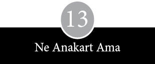
Birinci West Coast Bilgisayar Fuarı’nın yaklaşması Apple bilgisayarın ardılını bir an önce tamamlaması yönündeki baskıya daha güçlü bir aciliyet kazandırdı. Fuara ilişkin ilk reklamlarda belli bir öfke seziliyordu. Silikon Vadisi’nin amatörleri, mikro-bilgisayar dünyasındaki haklı yerlerinin, 1976 yılında insanların bir mikro işlemci ile kaydırma yazmacı arasındaki farkı anlamaktan aciz olduğu yerlerde düzenlenen bir dizi fuar tarafından gasp edildiği kanısındaydı. Mikro-bilgisayarın Beytüllahim’inden binlerce kilometre uzakta Detroit, Michigan, Trenton ve New Jersey gibi kentlerde fuar düzenlendiği zaman, Homebrew Kulübü’nün toplantılarında insanların yüzleri asılırdı. Jobs ile Wozniak’ın puro kutularını Atlantic City’ye götürmesinden kısa bir süre sonra, 1977 ilkbaharında San Francisco Halk Oditoryumu’nda büyük bir fuarın planlandığı söylentisi yayılmış, bu haber insanları bir nebze rahatlatmıştı.
Fuarın başlıca organizatörü Homebrew Kulübü’nün üyeleriydi; aslında kulüp ilk başta Stanford’da bir bitpazarı açılmasını önermiş, ancak, okul yetkilileri bu öneriyi reddetmişti. Başka bir yer arayan kulüp üyeleri, Atlantic City’deki kalabalıktan aldıkları cesaretle San Francisco’daki büyük bir toplantı salonunun kira depozitosunu ödemeye yetecek parayı denkleştirdiler. Homebrew Kulübü’nün haber bülteninde kalabalık bir katılımın olacağına ve çok sayıda kuruluşun geleceğine işaret eden reklamlar çıktı; Jobs da daha 1976 Eylülü’nde sergiye katılmayı taahhüt eden ilk isimlerdendi. Serginin beklenen büyüklüğü, katılımcı sayısı ve konferansların zenginliğine bakılırsa, yeni bir bilgisayarın tanıtımı için doğal bir forumdu. Wozniak, Jobs ve yeni edindikleri profesyonel iş ortakları için, bu bilgisayar fuarı öncesindeki aylar harıl harıl çalışma dönemiydi.
Jobs, Homebrew toplantılarında SLAC’daki masa üstünde duran puro kutusunu ancak bir sinek tuzağı kadar zarif buluyordu. Processor Technology’nin Sol çipini içeren köşeli, mavi-siyah metal kutu onun gözüne son derece biçimsiz, tam bir sanayi işi gibi görünüyordu: “O bilgisayarı bir plastik kasaya almadan rahat edemeyecektim.” Bu yolu deneyen başka bir mikro-bilgisayar firması yoktu. Daha ucuz ve esnek komple metal kasalar varken, plastik kasayı genelde gereksiz bir masraf olarak görüyorlardı. Ayrıca amatörlerin özün yanında görünüşü çok daha az önemsedikleri düşünülüyordu. Jobs, Hewlett-Packard’ın hesap makinelerinde kullandığı plastik kasayı Apple’a model alma niyetindeydi. İnce ve zarif hatlarını, keskin bitiş çizgilerini ve evde masa üzerindeki duruşunu çok beğeniyordu. Arabasına atlayıp San Francisco’daki Macy’s mağazasına gitti, mutfak ve stereo reyonlarında gezinerek uzun uzun elektrikli ev eşyalarının tasarımlarını inceledi. Neyi beğendiğini bilen ve istediğini almaya kararlı, belli bir zevke sahip dikkatli bir gözlemciydi.
Jobs, Atari’deki eski iş arkadaşı ile Apple’dan ilk kopan dostları Ron Wayne’i buldu ve onlardan bir kasa için taslak çizimler istedi. Atari’deki arkadaşı bol açılı, bol köşeli suluboya çizimler getirdi. Ron Wayne’in tasarımı ise Rube Goldberg’in garajından çıkmış gibiydi. Kasanın üzerinde ahşap kenarlara metal çemberlerle tutturulmuş sökülebilir pleksiglas bir tepelik vardı. Wayne bilgisayarı saç kılı, kahve dökülmesi ve toz birikmesine karşı korumak amacıyla, storlu çalışma masalarının üst kısmındaki gibi, klavyenin üzerine geçen bir tambur kayar kapak eklemişti. Kapak açılırken, rayın üzerindeki bilgisayarı açıp kapayan gizli bir düğmeyi çalıştırıyordu. Jobs her iki tasarımla da fazla ilgilenmeyerek, daha ince ve gelişkin bir yaklaşım peşine düştü.
Wozniak’ın Hewlett-Packard’daki iş arkadaşları muhtemel bir kurtarıcı olarak Jerry Mannock’u salık verdiler. 1977 Ocak başında Jobs, Mannock’u aradı, derdini anlattı, onu Homebrew Kulübü’ndeki bir toplantıya davet etti. Mannock bir zamanlar elektrik mühendisi olmak istemiş, somutu soyuta yeğ tuttuğunu fark edince yıllarca Hewlett-Packard’da ürün tasarımcılığı yapmıştı. Kasa tasarımı yapmaktan sıkılınca elektrik mühendisliğine başvurma hesapları yapmış, ama emeklilikten söz eden gencecik insanları görünce dehşete düşüp istifayı basmış, özürlüler için cihazlar üreten bir şirkete girmiş ve daha işe koyulur koyulmaz kendini teknik ressam gibi hissetmeye başlamıştı. “İşe giderken karnıma bir ağrı çöreklenirdi.” Bir daha istifa etti, arabasını sattı, karısıyla birlikte Avrupa’yı gezdi ve Kaliforniya’ya dönünce de kendi şirketini kurdu. Jobs aradığı sırada Mannock evinde kendine bir müşteri kitlesi yaratmaya uğraşıyordu. Koyu renk saçlı, sağlam yapılı bir adam olan Mannock, üstesinden gelebileceğini gözünün kestiği hiçbir projeyi kaçırmıyordu. İlk yılında New Mexico’da güneş enerjisiyle çalışan bir ev tasarımı çizdi, birkaç küçük ambalajlama işi aldı ve 100 dolar kâr etti.
Mannock, Jobs’u SLAC’ın lobisinde, bilgisayarın üzerinde durduğu bir oyun masasının yanında birileriyle konuşurken yakaladı. “Zamanını üç ayrı kişiyle sohbet edecek şekilde paylaştırmıştı ve üç sohbeti de gayet güzel idare ediyordu. Böyle bir şeyi beceren birini ilk kez görüyordum.” Mannock, Jobs’un on iki hafta içinde Birinci West Coast Bilgisayar Fuarı’nda resmen piyasaya çıkaracağı Apple II’ye yetişecek şekilde, birçok plastik kasa istediğini öğrendi. Sürenin kısalığı Mannock’u yıldırmadı. “Daha önce hiç yapmadığım bir şeydi, bu yüzden pek emin değildim.” Jobs bir kasanın mekanik çizimi için 1.500 dolar ödemeyi önerince Mannock kabul etti, ancak parasını peşin istedi. “Bu tür müşteriler genelde güvenilmez olur, kasalar hazır olduğunda belki de arayıp bulamazsın.” Jobs onu Apple’ın faturalarını ödemeden asla kaçıp gitmeyeceğine, özünde Bank of America kadar sağlam bir kuruluş olduğuna ikna etti.
Kasanın tasarımının büyük kısmını bilgisayar belirliyordu. Çıkarılabilir bir kapağı olması gerekiyordu; ayrıca ana karta takılacak kartları alabilecek kadar yüksek ve enerji kaynağının ürettiği ısının bir kısmını yayabilecek kadar da büyük olması gerekiyordu. Mannock çizimleri üç haftada tamamladı. “Diğer hususlarla uyumlu olsun diye epey tutucu bir tasarım çıkardım. Plastiğin tam olarak hakkını vermek ve görsel kargaşayı en aza indirmek istedim.” Genel şekil belli olduktan sonra, iş sadece birkaç ufak değişikliğe kalmıştı. Yanlardaki iki tutma kolu iptal edildi, çünkü kasanın bütünü başparmak ile işaretparmağı arasında tutulabilecek kadar inceydi. Jobs, Mannock’un kasa çizimlerinden heyecanlanmıştı, ama reklam amaçlı yaptırılan köpükten bir model için 300 dolar fazla para ödemeye şiddetle itiraz etti.
Ron Wayne’in, kasa tasarımıyla birlikte, akademik havalı orijinal logosu da bir kenara atıldı. Apple’ın müşteri sorumlusu olarak görevlendirilen, Regis McKenna Ajansı’ndan genç sanat direktörü Rob Janov, yeni bir şirket logosu tasarlamaya girişti. Bilgisayarın tüketicilere satılacağı ve az sayıdaki renkli makineden biri olacağı fikrinden hareketle Janov bir elma çanağına bakarak natürmort çizimler üretmeye başladı. “Basit bir elma şekli çıkarmaya uğraşıyordum.” Elmanın bir kenarından yuvarlak bir parçayı dişleyip aldı. Bu ona hem bitlerle baytların dünyasında eğlenceli bir yaklaşım hem de yenilikçi bir tasarım gibi görünmüştü. Janov bu dişlenmiş parçanın “elmayı kiraz domatese benzemekten kurtardığı”nı düşünüyordu. Ardından Apple’ı sap kısmında canlı bir yeşille başlayarak, altı sıra renge boyadı; bu karışım hafif saykodelik bir renk skalası ortaya çıkarıyordu. Sonuçta desenden etkileyici bir sıcaklık yansıyordu. Janov, Jobs’un hep şu talepte bulunduğunu söylüyor: “Steve hep çok kaliteli bir görüntü peşindeydi. Pahalı duran bir şey olsun, kaba saba bir uçak modeline benzemesin istiyordu.” Jobs logonun tarzı ve görünümü konusunda son derece titizleniyordu, devamlı ajansı arayıp sıkıştırıyor, Regis McKenna’yı akşam vakti evinde rahatsız ediyordu. Janov’un, reprodüksiyonu kolaylaştırmak için bu altı rengin arasına ince kontür çizgileri çekme önerisini kabul etmedi.
Apple bilgisayarlarının üzerine konacak isim etiketleri için Hewlett-Packard’ın isimliklerini imal eden firmayı ayarlayıp ince alüminyum şeritler üzerine kabartma logolar yaptırdı. Jobs renk bantları birbirine karıştığı gerekçesiyle ilk partiyi geri çevirdi. Diğer bilgisayar şirketlerinin çoğu daha sade bir görünümden yanaydı: İsimlerini metal plakanın üzerine basmakla yetiniyor, birinci sınıf olma kaygısıyla fazla masrafa girmiyorlardı.
Bu arada Holt, bilgisayarı ehlileştirmeye uğraşıyordu. Jobs’un, kendisini Apple’da çalışmaya ikna ettiğinden beri, çabuk ısınmayan, güvenilir, hafif bir enerji kaynağı yapmanın tek yolunun, diğer mikro-bilgisayar şirketlerinin o güne kadar hiç denemediği bir yaklaşımdan geçtiğine inanıyordu. Holt, yirmili yıllardan bu yana hiç değişmeyen klasik doğrusal bir enerji kaynağı koymak yerine, daha hassas bir yöntem izleyerek, daha önce bir osilatör için tasarlamış olduğu, üzerinde açıp-kapama devresi olan bir enerji kaynağı kullanmaya karar verdi. Bu kaynak normal ev voltajında çalışıyor, baş döndürücü bir hızla devreye girip çıkıyor ve pahalı bellek çiplerini asla patlatmayacak düzenli bir akım üretiyordu. Uyduruk doğrusal enerji kaynaklarının neden olduğu ısınmaya lanet okuyan bilgisayar meraklıları için anahtarlı bir enerji kaynağı, uzaktan bile takdir edilecek bir özellikti. Birbirlerini, “Anahtarlıları sakın atlamayın ha,” diye uyarıyorlardı. Wozniak, “Anahtarlı bir enerji kaynağı hakkındaki bilgisinin epeyce muğlak” olduğunu itiraf ediyor. Holt’ün nihai tasarımı son derece güvenilirdi ve bir litrelik süt kutusundan bile küçüktü.
Holt çalışmasını tamamlayıp da bilgisayarın boyutları kesinleşince, Jobs Apple I’in baskılı devre kartının çizimini yapan, Atari’den eski iş arkadaşı Howard Cantin’i buldu ve aynı işi Apple II için de yapmasını rica etti. Ancak, Jobs’un bu seferki talepleri daha titizdi. Cantin’in ilk çizimini beğenmedi, ikinci denemesinde çipleri bağlayan hatların asker gibi dümdüz olmasında ısrar etti. Cantin nasıl cebelleştiklerini şu sözlerle anlatıyor: “Beni iyice köşeye sıkıştırdı. Ona hep anlatmaya çalıştım: Öyle bir nokta vardır ki, mükemmeli yakalama zorlaması üretkenliği bitirir. Öyle canımı sıktı ki bir daha hayatta onunla çalışmayacağıma yemin ettim.” Jobs ancak Cantin baskılı devre kartının çizimini bir eskiz kâğıdı boyutlarına düşürünce rahata erdi. Jobs son halini almış modeli doğrudan baskılı devre kartı imalatçılarına götüreceği yerde, belli bir gecikmeyi göze alarak, taslağın bilgisayarla ince ayarının yapılması ya da dijitalize edilmesi için diretti.
West Coast Bilgisayar Fuarı yaklaştıkça başka can sıkıcı sorunlar gündeme geldi. Fuarın açılmasına iki gün kala hâlâ matbaadan kartvizitler gelmemişti. Az sayıdaki baskılı devre kartının üzeri, parlak ipeksi ekranla kaplanmadan önce, çiplerle karmakarışıktı. Bu sırada Jobs çeşitli renklere karşı anne babası dahil çok sayıda kişinin tepkisini dikkate alıp kahverengi bir klavyede karar kılmıştı. Bilgisayarlar çalışsa da klavyeler statik elektriğe duyarlı bir çip yüzünden yirmi dakikada bir iflas ediyordu. Wozniak ise BASIC dilinin kısaltılmış bir formunun programlama kodunu bir ROM çipine sıkıştırmaya uğraşıyordu. AMI’nın ürettiği yeni bir çipi kullanmayı umuyordu, ama parça zamanında yetişmeyince Synertek’in ürünü olan çipe dönmek zorunda kaldı. Espinosa, Wigginton ve Holt’le birlikte bilgisayarın renk ve sesini vurgulayan minik demo programları yazdılar. Demo programları alelacele teyp kasetlerine yüklendi, kasetler bitince Espinosa yakındaki Gemco indirim mağazasına gidip yenilerini alıyordu.
Asıl önemli konu, kasanın fuarın açılışına yetişip yetişmeyeceğinin belli olmayışıydı. Mekanik çizimler yeterli düzeye ulaşınca, Mannock ile Jobs’a seçmek üzere iki kalıp işlemi önerilmişti: Enjeksiyon tepkime sistemi ya da yapı köpüğü. İlkinde malzeme kimyasal reaksiyon sonucu poliüretan kalıbın içine doluyordu, ancak bitimde kabarcıklara rastlanabiliyordu. İkincisi daha hassastı, malzeme basınçlı köpük enjekte edilip ısıtılıyordu, ancak bunda da daha perdahlı bir yüzey kalıyordu. Kimse Apple’ın ikinci bilgisayarının beş binden fazla satabileceğine inanmadığından, Jobs ile Mannock, uzun süreli üretim süreçlerine uygun, daha dayanıklı ve daha pahalı metal yerine epoksi aletlerin kullanıldığı enjeksiyon tepkime yöntemini tercih etti.
Kalıplardan çıkan ilk kasalar pek derme çatma görünüyordu. Yüzeyler eğri büğrü ve kapaklar yamuktu, köşelerse klavyeye çarpıyordu. Apple’da altı kişi ellerinde sıyırıcı bıçaklar, zımpara kâğıtları ve macunla en belirgin defoları düzeltip üzerine sprey boya püskürterek kasaların yüzeylerini parlatıyorlardı. Fuarda, yan taraflardaki, doğru düzgün açılmamış hava deliklerini yok saymaya karar verdiler. Fuardan önceki gece, hazırlıkların çoğu eksik bir halde, San Francisco Union Square’daki St Francis Oteli’ne taşındılar. Scott ile Markkula büyük otellere alışkındı, ama gençler böyle bir ortamın keyfini ilk kez yaşayacaklardı. Gazetedeki işini Apple’da saati üç dolara çalışmaya değişen Espinosa, kendisine nakit avans ve harcama hesabı ayrıcalığı verilince şaşkınlıktan dili tutuldu.
Apple’ın renkli bilgisayarının adı da yine diğer büyük bilgisayar şirketlerinin kendi makinelerine isim koyarken benimsediği aynı tür refleksle verildi. Nasıl Digital Equipment Corporation çıkardığı her yeni PDP bilgisayara gitgide yükselen seri numaraları koyuyorsa, Apple da onun gibi yeni makinesinin adını Apple II koydu. West Coast Bilgisayar Fuarı’nda boy gösteren bilgisayar, tek bir kişinin makinesi değildi. Dijital mantık tasarımı, analog mühendisliği ve estetik görünüm açısından bir işbirliği ve katkılar harmanının ürünüydü. Renk, yuvalar, belleğin 4 kilobayttan 48 kilobayta genişleme özelliği, klavye denetimi ve teybe bağlanabilmesi, ROM çipinde –aslında anakart– depolanan BASIC Wozniak’ın katkısıydı. Son derece önemli bir yeri olan enerji kaynağı Holt’ün, kasa ise Mannock’un katkısıydı. Mühendislik alanındaki bu ilerlemeler, aylar sonra Wozniak video gösterimine uygun bir mikro-bilgisayar nedeniyle 4.136.359 No.lu ABD Patenti’yle, Holt ise direkt akım enerji kaynağından ötürü 4.130.862 No.lu ABD Patenti’yle ödüllendirilerek kayda geçti. Ama hepsinin arkasında dürtükleyen, sıkıştıran, zorlayan ve tükenmez gibi görünen bir enerjiyle yerinde hakemlik eden, yerinde hayır diyen Jobs’un varlığı hissediliyordu.
Homebrew Kulübü haber bülteninin tirajının bin beş yüze ulaştığı 1977 Ocak ayında, üyeler arasında yapılan bir araştırma, mevcut 181 bilgisayardan 43’ünün IMSAIS, 33’ünün Altair 8080, 6’sının da Apple 6052 olduğunu gösteriyordu. Bir bilgisayar tutkununun özel yazılmış bir bilgisayar programıyla yaptığı hesaba göre, Apple yüzde 3,2967 oranla sekizinci sırada yer alıyordu. Pek dile getirmeseler de Apple’dakiler, West Coast Bilgisayar Fuarı’nın bu sıralamayı değiştireceğini biliyorlardı. Aynı zamanda ilk izlenimlerin gücünün de farkındaydılar. Markkula, Jobs ve McKenna Ajansı’nın bileşimi Apple’ın çıkışını güçlü bir atılıma dönüştürdü.
Jobs sergiye katılma taahhüdünde bulunan ilk kuruluşlardan biri olduğu için, Apple’a salonun ön kısmında özel bir yer verildi. Standın şeklini, arkadan aydınlatmalı, duman rengi, büyük bir ışıklı pleksiglas logo levhası ile bilgisayarın marifetlerini göstermek için kocaman bir televizyon ekranı getirten Markkula düzenledi. İki tezgâhın üzerine üç adet bilgisayar yerleştirildi. Bu bilgisayarlar aslında Apple’ın tamamen toplanmış tek makinesi olduğu halde, oldukça ağır ve sağlam bir duruşu vardı. Bu sırada işin görünüm kısmına da özen gösteren Markkula ile McKenna, Jobs’u San Franciscolu bir terziye götürerek hayatında ilk kez bir takım elbise giymeye ikna ettiler. “Hepimiz güzel giyineceğimiz konusunda fikir birliğine vardık,” diyor Wozniak. Bu nedenle, her ne kadar Jobs o kravatlı üç parçalı takımın içinde blucin ve Birkenstock marka sandaletlerle olduğu kadar rahat edemediyse de fuarın ilk günü hepsi de gayet saygıdeğer bir görünüme sahipti.
West Coast Bilgisayar Fuarı’nın devasa bir bileşime sahne olması, katılımcılara yaptıkları onca yorucu hazırlığa değdiğini düşündürdü: Coşkulu bir Homebrew Kulübü toplantısı ile anabilgisayar fuarının profesyonel yönü bir araya gelmişti. Yüzü aşkın kişi, gömlek cebine sığacak bilgisayarlar, robotlar, bilgisayar kontrollü müzik, engellilere yönelik bilgisayar sistemleri, yüksek düzeyde diller, networklar, grafik ses tanıma cihazları, elektronik posta gibi konular üzerine seminerler ve metinler sundu. Bütün büyük fuarlara özgü ayak oyunları döndü, kapalı kapılar ardında el sıkışmalar oldu; Markkula da bu yolla birkaç potansiyel bayi ve dağıtımcı buldu.
Ayrıca kritik denebilecek ölçüde sıkı bir rekabet vardı. Başka bir kişisel bilgisayarın daha prototipi sergileniyordu; gerçi Commodore PET standda bu adla değil de Bay Hesap Makinesi adıyla tanıtılıyordu. Radio Shack etiketiyle, CB radyoları gibi elektronik cihazlarıyla ünlü Tandy Electronics’in başkan yardımcısı John Roach fuarı dolaşıp hem Apple’ı hem de PET’i yakından inceledi. Bu arada el altından yayılan bir haber daha vardı. İlan tahtalarına iğnelenen küçük notlarda ve ağızdan ağıza dolaşan söylentilerde, telefon korsanlarının TAP haber bülteninin son sayısına odaklanan ve telefon hırsızlığı ekipmanlarındaki en son yeniliklerin fısıldandığı gizli toplantıları haber veriliyordu.
Fuarın kapısından girip ellerinde içi reklam broşürleri ve satış vaatleriyle dolu naylon torbalarla sergi alanını dolaşan on üç bin ziyaretçinin, hemen giriş kapısına bakan noktadaki Apple standını görmeden geçmesi kesinlikle olanaksızdı. Gerçi Apple’ın standı Processor Technology’nin sergisinin yarısı kadardı; Cromemco’nun standından küçüktü ve IMSAI’ninkinden çok daha az kişiyi başına toplayabiliyordu. Ama Apple, bilgisayar tutkunlarının asla uğramadan geçmeyeceği başka birçok standı da geride bırakmıştı. Küçük standlarda “tak çalıştır” kartlar, ince dergiler ve tişörtler satılıyordu. Apple’dan büyük olmayan şirketler oyun masaları kiralamışlar, keçeli kalemlere ya da kâğıttan isimliklere şirketlerinin adını yazmışlardı. Arkada ince sarı kumaş perdenin önünde üst üste yığılmış, yarı açık duran karton kutular vardı. Bunların ne olduğu bir bakışta anlaşılıyordu: Üç beş tane de olsa tek kartlı mikro-bilgisayar satmaya çalışan Homebrew Kulübü sürgünlerinin malları. Bu mütevazı standlardan biri de Computer Conversor Corporation’a aitti. Alex Kamradt, hâlâ Wozniak’ın tasarladığı terminali satmaya çalışıyor ve Conversor 4000’i “pahalı bilgisayar terminalleri karşısında bütçenize uygun bir alternatif” olarak tanıtıyordu.
Koyu renk kumaş kaplı tezgâhları ve broşür istifleriyle Apple’ın standı istenen etkiyi yaratmıştı. Sergide çalışan ve broşür dağıtan bir düzineyi aşkın görevli, bilgisayarın gördüğü ilgiden şaşkına döndü. Bazı müşteri adayları önce bilgisayarın plastik kasaya konmuş olduğuna inanmak istemediler, ancak masa örtüsünün kapladığı alanın boş olduğunu görünce inanabildiler buna. Bazı mühendisler bu kadar az sayıda çip içeren bir baskılı devre kartının renk özelliği verebilmesine hayret ettiler. Lee Felsenstein yaklaşımı takdir etti. “Son derece basit ve cesur denebilecek ölçüde kabaydı ama iş görüyordu.” Fuarı izleyen birkaç hafta içinde üç yüz sipariş geldi; bu rakam Apple I’in toplam satış rakamını yüz adet geçiyordu. Sonraki yıllarda yaratılan şirket öyküsündeki vurguya rağmen, Apple bu fuarda hiç de öyle büyük bir fırtına koparamamıştı. Serginin baş organizatörü Jim Warren durumu şöyle değerlendiriyordu: “Bana fuarın en etkili katılımcısı Apple gibi görünmemişti.” Öte yandan, Byte dergisinin fuarla ilgili haberinin yer aldığı sayısında Apple’ın adı bile geçmiyordu.
Fuardaki standın 5.000 dolara mal olduğunu öğrenince küçük dilini yutan Wozniak, kendini daha eğlenceli bir işle oyalamaya verdi. Wigginton’la birlikte birkaç haftadır planladıkları bir muzipliğin son rötuşlarını yaptı. Wozniak, Zaltair adında yeni bir bilgisayarı tanıtan bir reklam kaleme aldı: Yeni mikroişlemci Z-80 ile Altair bilgisayardan oluşan bir melez. Reklam metni bilgisayarı coşkulu bir şekilde tanımlıyor ve elinde Altair bulunan müşterilere takas önerisi getiriyordu. Wozniak başı derde girmesin diye, broşürleri bir arkadaşının yardımıyla Los Angeles’ta bastırdı. Fuar sabahı herkes standın başına üşüştüğü sıra, Wozniak gizlice salonda broşür dağıtmaya çıktı. Açık sarı renk-li reklamlarda bilgisayar abartılı sözlerle ve ikna edici bir dille anlatılıyordu.
Reklam ideal mikro-bilgisayar konusunda herhangi bir yanlış anlamaya yer bırakmıyordu:
Rüyalarınızın makinesini hayal edin. Bugün burada yüzyılın sürprizi olan bilgisayarı hayal edin. Z-80 artı performansı hayal edin. Bugüne kadar geliştirilen en güçlü ve tam bilgisayar dili olan BAZIC’i ROM’a yüklenmiş olarak hayal edin. Bol miktarda işlenmemiş video hayal edin. Otomatik kaydırmalı tam 64 karakter ve 16 satırlık metin hayal edin. Göz alıcı renkli grafikler hayal edin. Şimşek hızında 1200 Baud’luk bir kaset portu hayal edin. Tam Altair-100 ve Zaltair-150 bus uyumluluğu temelinde eşsiz bir I/O sistemi hayal edin. Bütün hayat dolu mekânların dekoruna katkı yapacak nefis bir tasarıma sahip kabinler hayal edin. Alacağınız keyfi hayal edin. Mikro-bilgisayar teknolojisinin doğduğu yer olan MITS’den temin edebileceğiniz Zaltair’i hayal edin.
Wozniak bilgisayardaki yazılımı BAZIC diye tanıtmıştı:
Yazılımsız bir bilgisayar tekerleksiz bir yarış arabasına benzer, plaksız pikap tablasına ve telsiz çalgıya benzer. BAZIC’in en üstün özelliği, kendi dilinizi tanımlama yeteneğidir… biz bu özelliğe perZonality diyoruz. TM.
Ardından parlak bir donanım portresi çiziliyordu:
Biz bunu üretmeye başlamadan önce bütün yönleriyle uzun uzadıya düşündük. BİR numara mikro-bilgisayar şirketinde iki yılı bulan özverili araştırma ve geliştirme çalışmaları beklenen meyvesini verdi: Bir bilgisayar mühendisinin hayali olan tüm elektronik sistemin tek bir PC kartına, hatta 18 yuvalı bir anakarta toplanması.
MITS yönetimi, üzerinde şirket logosunun ve müşterilere ellerindeki Altairleri değiş tokuş etme olanağı sunan bir kuponun bulunduğu bu aldatmaca broşürü hiç de eğlenceli bulmadı. Her yerde çılgın gibi broşür arayıp üzerine SAHTE ve GERÇEKDIŞI mühürlerini vurdular. Sonunda bu şeytanlığa harcadığı 400 dolara acımayan Wozniak’ın sinirleri gerildi ve MITS’nin kapısına binlerce bilgisayarın yığılacağı korkusuyla, diğer suç ortaklarıyla birlikte bütün sahte reklamları kaldırıp çöpe attı.
Jobs bu reklamlardan birini gördü ve yeni rakibinin hayret verici ayrıntılarını incelemeye başladı. Wozniak, Sol, IMSAI ve
Apple gibi makinelerin karşısına çizdiği performans tablosunun altına şöyle bir satır koymuştu: “Şampiyon bir mikro-bilgisayarın göstergesi performansıdır.” Jobs bunu okurken, “Aman tanrım! Harika bir şey bu,” diye çığlığı bastığı sırada Wozniak ile Wigginton kahkahalarını tutamayıp yan kapıdan dışarı kaçtılar. Jobs performans tablosundaki sıralamanın ayrıntılarını inceleyip Apple II’nin Zaltair ile Altair 8800-b’nin arkasından üçüncü sırada yer aldığını görünce, ciddi bir rahatlamayla iç geçirdikten sonra, “Bakın, hiç de kötü değiliz demek ki,” dedi.
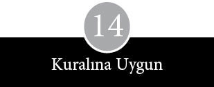
Kamunun önüne çıkma hamlesi çeşitli veçheler, eylemler ve yanılsamalar içerir. West Coast 1977 Bilgisayar Fuarı’nda Apple Computer Inc., Jobs’un garajından Cupertino’daki Stevens Creek Bulvarı, 20863 numaradaki ofis binasına taşınan küçük işyerinden hayli büyük görünmüştü. E 3 numaralı ofis odası, küçük bir ev ebadında bile yoktu ve Jobs ile Wozniak’ın evine bir buçuk kilometre uzaklıktaydı. Homestead Lisesi ile arasından 280 No’lu Eyalet Yolu geçiyordu. Cali Brothers’ın çamur rengi silolarının mağazalarla çevrelendiği kavşağın sadece bir taş atımı uzağındaydı. Apple’ın komşuları bir Sony satış bürosu, bir iş ve işçi bulma bürosu, bir zayıflama kliniği ve bir öğretmenler derneğinden oluşuyordu. Apple’ın kiraladığı odanın ortasından geçen bir alçıpan duvar, yarım düzine masayla laboratuvar ve montaj bölümünü birbirinden ayırıyordu. Apple’ın kurucuları ve maaşlı elemanları, Good Earth Restaurant’tan 60 metre uzaktaki bu sıkış tıkış mekânda, kozmik meselelerden uzaklaşıp hayatın gerçeklerine yöneldiler.
Cupertino’dakiler hemen hemen bir yıl boyunca Apple’ın temel işlevlerini kontrol etmeye yoğunlaştılar. Her şeyi baştan kendi tırnaklarıyla kurdular ve ya daha önce hiç karşılaşmadıkları ya da hep karşılarında olan ayrıntılarla ve prosedürlerle uğraştılar. Markkula belli bir çerçeveye oturtma gayesiyle, 1977’nin ilk üç ayı boyunca Apple’ın iş planına konsantre oldu.
Markkula, Palo Alto’daki bir eczacılık firması olan Syntex’de grup kontrolörü olarak çalışan John Hall’den akıl istedi. İkisi eski dosttu. Bir iki partide karşılaşmışlardı, birçok ortak tanıdıkları vardı ve Kaliforniya Sierra Dağları’nda kayak yaparken tekrar toslaşmışlardı. Markkula, Hall’ün bazı genç şirketlerin iş planı hazırlamalarına yardımcı olduğunu duymuştu; aynı desteği Apple için de talep etti. Hall, Syntex’den iki haftalık izin alarak, Apple’ın müdürleriyle bölgedeki restoranlarda baş başa verip saatlerce çalıştı: Good Earth Restaurant ile Mike’s Hero Sandwiches bu mekânlardan ikisiydi. Scott malzeme faturaları ile proje imalat maliyet rakamlarının çıkarılmasına yardım etti. Jobs parça tedarikçileriyle yapılan sözleşmelerin detaylarını ortaya koydu; Wozniak ile Holt’ün bilgisine ise mühendislikle ilgili konularda başvuruldu.
Hall ile Markkula, pazarlama stratejisini güçlendirmek amacıyla, kristal kürenin tozunu silip Apple II’nin üç başlı bir atağa kalkması gerektiğine karar verdiler. Makinenin ev bilgisayarı tutkunlarına ve daha önce programlanabilir hesap makinesi gibi aygıtlara karşı zaaf göstermiş olan diş hekimi, doktor gibi profesyonellere satılabileceğini düşünüyorlardı. Apple’ı evde, otomatik garaj kapısı ve çim sulama tesisatı gibi işlerde kontrol merkezi olarak geliştirmeyi de planladılar. Hall, çalışmaları şöyle anımsıyor: “Bir iş planı için üç temel ilkeye ihtiyacımız olduğu kanısındaydık. Ama iş planına ne ben inandım ne de Mike Markkula. Stratejik bakımdan zayıf kalıyordu.” Hall’ün kuşkusu öyle yoğundu ki Markkula ona Apple’ın finans sorumlusu başkan yardımcılığını teklif edince, kabul etmedi. “Apple gibi ne olacağı belirsiz bir şirkete girme riskini göze alamazdım.” Gerçi yine de Markkula’dan danışmanlık ücretini, mümkünse şirketten hisse payı olarak almayı talep etti. Markkula’nın buna yanaşmaması üzerine 4000 dolarlık bir çeki kabul etti.
İş planı şekillenince Scott yardım almak için tanıdık simalar aramaya başladı. Apple’ın ilk resepsiyoncusu, sekreteri ve genel idari işler sorumlusu, National Semiconductor’da birlikte çalıştıkları Sherry Livingston adlı hayat dolu, ışıl ışıl bir kadın oldu. Apple’ı nasıl bir gelecek beklediği konusunda bir fikri olmayan Livingston, Markkula’nın sipariş dolu bir çekmeceyi önüne koymasından sonra ikna oldu ancak. Fairchild’da bir süre Scott’un amiri olan Gene Carter da iş arıyordu; Apple’ın satış ve dağıtım sorumlusu oldu. Scott defter tutması için birini ararken, yine National’da birlikte çalıştığı neşeli, dedikoducu muhasebeci Gary Martin’in kapısını çaldı. Martin Apple II’ye şöyle bir bakıp, “Bu acayip şeyi dünyada kim almak ister ki?” diye düşündü. “Scott adına o kadar üzüldüm ki öğle yemeğini ben ısmarlamak istedim.” Sonunda, Martin National’daki amirinin sigortasını bir ay idare edeceğine dair verdiği söze güvenerek, Apple’da bir aylık deneme süresiyle çalışmayı kabul etti.
Diğerleri de kendileri geldiler. Fairchild’da çalışan utangaç mühendis Wendell Sander, Apple I’e kendi tasarımı olan bazı bellek çipleri ekledikten sonra aklı Apple’da kalmıştı. Çocuklarını eğlendirmek amacıyla bir Star Trek programı yazmış, Apple daha garajdayken bu oyunu Jobs’a göstermişti; Fairchild’a on üç yılını verdikten sonra, talih yıldızını tutkusunun rehberliğine bırakmaya karar verdi. “Batarlarsa, nasıl olsa ertesi gün iş bulurdum. Egomun zedelenmesinin dışında fazlaca bir kişisel risk söz konusu değildi. Kariyerim yok olacak değildi.” Jobs’un Atari’den arkadaşı Jim Martindale üretim sorumlusu olarak işe alındı. Randy Wigginton’un liseden arkadaşı Don Bruener yarı zamanlı teknisyen oldu; Jobs’un üniversiteden arkadaşı Dan Kottke üniversite diplomasını alıp Apple’ın on ikinci elemanı olarak işbaşı yaptı. Bu arada Elmer Baum da son montajda çalışmaya başladı. Aralarında Apple’a girmeyi tehlikeli gören hemen hemen hiç kimse yoktu. Tersine hepsi de en büyük riskin put gibi durup hiçbir şey yapmamak olduğuna inanıyordu.
1977’nin bahar sonu ile yaz aylarında şirkete giren yeni elemanlar, kendini açık seçik ilan ettiği vaatlerle sınırlamış küçük bir işletmeyle karşılaştılar. 16 Şubat 1977 tarihinde Homebrew haber bülteninde çıkan bir ilanda, Apple II’nin en geç 30 Nisan 1977’de teslim edileceği bildiriliyordu. Bu arada Markkula Apple I sahiplerine ya paralarının tamamını iade alma ya da Apple II’yle takas etme seçeneği sunarak firmanın önemli bir dertten kurtulabileceğine hükmetmişti. Apple’ın yaş alması ya da Silikon Vadisi’nde olgunlaşması, şirketi belli bir ölçüde gayrete getirdi. Deneyimin coşkuyla harmanlanmasının hayli zahmetli olduğu görüldü, ama aynı zamanda önü açık bir bileşimdi bu. Deneyim olgunluk kazandırıp disiplin sağlarken, saflık kaçınılmaz olarak gelenek ve otoritenin sorgulanmasını getirdi.
Wozniak, Jobs, Holt, Markkula ve Scott teknik konularda tetikte oldukları gibi, çıkabilecek elektrik problemlerinin boyutlarını ve etkilerini de anlamaya yatkın durumdaydılar. Ancak aralarında ciddi ayrılıklar vardı, bu yüzden bir Holywood senaristinin Amatör, Muhalif, Tamirci, Yatıştırıcı ve Zorlayıcı gibi isimler koyabileceği bu adamların aralarında çatışma çıkmadan iş yapmaları mümkün değildi. Daha işin başında birlikte hatalar yaparak ve sıkıntılar atlatarak elde edilmiş bir deneyim paylaşımı söz konusu değildi. Holt’ün değerlendirmesi şöyle: “Fazla güven yoktu. Sorun birbirinin dürüstlüğüne değil, yargısına güvenmemekten kaynaklanıyordu. Bu konuda oran en fazla yüzde yetmişe kadar çıkıyordu. Burada söz konusu olan işti, aile değil.”
Scott ile Jobs ilk andan beri birbirlerine zıt gidiyorlardı. Scott’un, şirketi kollamaktan sorumlu olması ve Apple’ın içişlerinin koruyucusu konumu, Jobs’un bükülmez otoritesiyle ilk çatışan nokta oldu. Scott şirkete gelmeden önce Jobs aklına eseni yapabiliyordu. Scott başkan olduktan sonra Jobs sınırlarının çizildiğini gördü. İkisi hayata farklı açılardan yaklaşıyordu. Scott deneyimin doğal yetenekten daha önemli olduğuna inanırken, Jobs insanın çoğu sorunu zekâsını doğru düzgün kullanarak çözebileceği kanısındaydı. Scott, Jobs’un iyimserliğini, coşkusunu ve enerjisini takdir ediyor, tarzını kabullenmeyi de yavaş yavaş öğreniyordu. Ama aynı zamanda da şöyle düşünüyordu:
Jobs hiçbir işi yürütemez. İnsanları nasıl idare edeceğini bilmiyor. Bir işe başladıktan sonra devamlı maraza çıkarıyor. Saatte yüz elli kilometre hızla giden bir arıkuşu gibi durmadan uçmaya bayılıyor. Durulmaya ihtiyacı var.
Scott, Jobs’u her olayda bastırmaya kalkışıyordu; ilk mekanik işlerden birinde çatışma patlak verdi. Scott lamine-plastikten, güvenlik işaretlerine uygun, resmi personel numaraları dağıtıyordu. Scott’a göre, işletmenin doğuşundaki ana etmen bilgisayar olduğundan, Wozniak’a 1, Jobs’a 2, Markkula’ya 3, Fernandez’e 4, Holt’e 5 ve Wigginton’a da 6 numarayı tahsis etmesi gerekiyordu. 7 numarayı kendine alıp 8’i de Espinosa’ya ayırmıştı. Jobs dışında herkes sırasından hoşnuttu.
Jobs, Scott’a, “Ben bir numara mıyım?” diye sordu.
“Hayır,” diye yanıt verdi Scott, “sen iki numarasın.”
“Ben bir numara olmak istiyorum,” diye diretti Jobs. “Peki sıfır numara olsam? Woz bir numara olabilir o zaman. Ben sıfır olmak istiyorum.”
Sıfır Numara ile Yedi Numara, günlük iş akışında da aralarında önemli farklılıklar saptadılar. Wigginton durumu kenardan izliyordu. “İşlerin nasıl yürütüleceği konusunda Jobs’un kafasında güçlü fikirler vardı. Scotty’nin yaklaşımı doğruydu ama bunlar Jobs’un aklına yatmadığından çatışma çıkması kaçınılmazdı.” Malzemelerin bir yerden diğerine nasıl taşınacağından, masaların nasıl yerleştirileceğine, laboratuvara ne renk tezgâh sipariş edileceğine kadar her konuda farklı düşünüyorlardı. Jobs beyaz olsun diyordu, çünkü teknisyenler ve mühendisler için bu renk daha iyiydi. Scott ise daha ucuz ve bulması daha kolay olduğundan, gri olsun diyordu. Muhasebeci Gary Martin Apple’a girişinden kısa bir süre sonra bir atışmaya tanık oldu:
Satın alma emirlerini kim imzalayacak diye tartışıyorlardı. Jobs, “Ben senden önce geldim, benim imzalamam gerek,” diyordu. Ona karşı Scotty de “Ben imzalayacağım, yoksa istifa ederim,” diye tehdit ediyordu.
Scott’un şirkete katılmasından sonraki sakince geçen dönemlerde Jobs satın almayla ve bazı onarım işleriyle ilgilendi ve kalite baskısını aralıksız sürdürdü. Bir IBM satıcısının onun seçtiği nötr renk yerine mavi bir Selectric yazıcı getirmesi üzerine parladı. Telefon firması, sipariş ettiği fildişi rengi telefonları getirmeyince, değiştirene kadar şikâyet üstüne şikâyet yağdırdı. Jobs teslimat programları ve ödeme takvimleri çıkarırken tedarikçilerin çoğunu aşağılıyordu. Gary Martin buna tanık olmuştu:
Çok itici davranıyordu onlara karşı. İlla en düşük fiyatı kopartmalıydı. Telefon açıp, “Yeterince iyi değil, biraz daha fedakârlık yapın bakalım,” diyordu. Hepimiz, “Bir insana karşı nasıl böyle davranabiliyorsun?” diye soruyorduk.
Bunun dışında, imalatın sıkıntılarını bilen deneyimli yaşlıca mühendislerle, bir an önce bir prototipi çalışır hale getirmekten başka bir şey düşünmeyen, basit ve zevksiz son işlemleri diğerlerine bırakmayı tercih eden gençler arasında doğal bir ayrım ortaya çıkıyordu. Bir programcı bu durumu şöyle anlatıyor:
Kimsenin bir şeyden korkusu yoktu. Herkes herkese “adi herif” diyebilirdi. Yaptığımız işin doğru olduğu varsayılmıyordu. Yaptığımız şeyin doğru olduğunu kendimiz kanıtlamak zorundaydık.
Wozniak’ın hemen hemen hiçbir işin bitirme kısmını yaptığı görülmemişti. O ve genç ortakları için üzerinden kablolar ve teller sarkan salkım saçak haldeki bir prototip ile düzgün şekilde tamamlanmış bir makine arasındaki fark akademik düzeyden ibaretti. Onların düşüncesine göre, işinin az çok erbabı olan birinin, ufak tefek eksikleri olan bir bilgisayarı toplayabileceği açıktı.
Öte yandan Holt, her şeyin yolunda gittiğinden ve yapılacak işin maliyetinden emin olana kadar, eşinerek ortalıkta dolaşan anaç tavuk gibi davranıyordu. Her şeyin “kuralına uygun” yapılması konusunda ısrarı elden bırakmayan da Holt’tü. Jobs’a bilgisayarı televizyona bağlayacak küçük cihazlar, modülatörler bulmak için Atari’ye giderken eşlik eden de Holt’tü. Bilgisayara, mikroişlemciden bellek çiplerine ve teybe giden sinyalleri kontrol eden bir osilatör tutturan da oydu. Wozniak yeni bir yaklaşım hayal ettiğinde, ona kafasındaki tasarımı açıklaması, ortaya koyması ve çizimlerini yapması için ısrar eden de Holt’tü. “Doğrusu Woz’un yargısına pek güvenmiyordum,” diyordu Holt. Ayrıca Woz’un kalbine giden yolu da keşfetmişti. “Woz’u bir şey üzerinde çalışmaya ikna etmenin tek yolu, onun izleyicisi olmak ya da ona bir izleyici bulmaktı.”
Bu sırada Markkula ile Scott da mühendislerle programcılar üzerinde baskı kuruyordu. Genç programcılar bilgisayarın gücünü göz önüne sermek için kısa demo programlarını birbirine eklemeye kalktıklarında, Markkula ısrarla onlardan, öncelikle, insanların kullanabilecekleri programlar üzerinde çalışmalarını istedi. Markkula konuyla yakından ilgilendiğini göstermek için insanlara çek defterlerini düzenleme olanağı veren bir programın çoğu zahmetli işini kendi yaptı. Ayrıca daha sessiz bir tarz oturttu. Wozniak Breakout için bir puanlama sistemi hazırlarken, en düşük skor için “BOKTAN” kelimesini düşündüğünde, Markkula onu daha kibar bir terim kullanmaya ikna etti. İlk bilgisayarlar piyasaya sürülmeye hazır olduğunda, makineler bir bilgisayar diliyle birlikte satışa sunulsun diye Scott gençleri BASIC’in kısaltılmış bir versiyonunu çatıvermeye zorladı.
Scott’un gerek üretim gerekse finans hakkında da aynı şekilde katı fikirleri vardı. Otomatik imalattan ve pahalı test makinelerinden zerrece hoşlanmıyordu. Apple’ın büyüme masraflarına dışarıdakilerin de katkı yapmasında ve işteki dalgalanmaların sıkıntılarına onların da katlanmasında kararlıydı. Onun şirketin büyümesiyle ilgili fikirleri, Wozniak’ın bir bilgisayardaki çiplere ilişkin fikirlerinin eşiydi. Her ikisi de verimliliği esas alıyordu. Scott’un kafasında en az sayıda işçiyle en fazla işi çıkaran bir şirket tasarımı vardı. “Bizim işimiz,” diyordu, “tasarım, eğitim ve pazarlamaydı. Apple’ın mümkün olan en az işi yapması ve diğerlerinin daha hızlı büyümesine fırsat vermesi gerektiğini düşünüyordum. Varsın problemler yüklenicilere kalsın.” Scott Apple’ın daha ucuza üretemeyeceği ne varsa dışarıdaki imalatçılara bırakma yaklaşımını kararlılıkla benimsemişti. Ayrıca hızlı büyüyen bir işin, güvenilir bileşenler üretmek için gereken temel becerilerden bazılarını kazanacak zamanı olmadığı kanısındaydı. Örneğin dış tedarikçilerin imal ettiği baskılı devre kartlarının kalite testinde uzmanlaşmak, düzgün kartlar üretmek için gereken ilave işgücünü oluşturmaktan ve bütün tekniklere vakıf olmaktan daha kolaydı.
Dolayısıyla Scott kart doldurma işinde kısmen Los Altoslu bir anneye, Wozniak’ın Homebrew Computer Kulübü’nden bir tanıdığının eşi olan Hildy Licht’e bel bağladı. Licht küçük çaplı bir ev işletmeciliği yapıyordu. Parçalar evine sevk ediliyor, o da bunları mahallede çeşitli evlerdeki montajcılara dağıtıyor, biten işleri test ettikten sonra kahverengi steyşın Plymouth’uyla Apple’a geri götürüp teslim ediyordu. Esnek çalışıyor, yeri geldiğinde kartlar üzerinde revizyon yapıyor, bir gecelik hizmet sunduğu bile oluyordu. Scott daha büyük miktarda baskılı devre kartı yapımında uzmanlaşmış büyükçe bir şirketten de destek aldı. Her iki yöntem de küçük firmaları yıpratıcı olabilen rutin işlerden kurtaran türde hizmetlerdi.
Scott Apple’ın kasasını da kolluyordu. Bank of America’yla anlaşarak vergi kesintileri, sosyal güvenlik ödemeleri ve maaş çeki gibi işleri Apple’ın üzerinden alan bir maaş bordosu sistemi oturttu. Scott mali yönden sağ kolu gibi hareket eden Gary Martin’le birlikte 16 kilobaytlık bellek çipleri gibi en pahalı parçaları sıkı sıkıya izledi. İkili, bu çipleri kırk beş günlük, klavyeleri de altmış günlük vadeyle satın almak üzere anlaştı. Bu sırada, müşterilerden müşterilere yaptıkları tüm satışların bedelini en geç otuz gün içinde tahsil etmeye çalıştılar. Martin bu işle yakından ilgileniyordu. “Benim görevim müşterilerden alacaklarımızı, satıcıların ödeme günü gelmeden önce toplamaktı. Müşterilerimizin ödeme vadelerini çok kısa tuttuk.” Bir zamanlar alacaklarını tahsil etmesi hayale dönüşünce iflas eden bir nakliye firmasında çalışan Martin de işi son derece sıkı tutuyordu. Doğal dürtüleri ve Apple’a saygın bir görünüm kazandırma gereksinimi, ülkenin en büyük muhasebe firmalarından birinden denetçi bulmasına yol açtı. Arthur Young’dan gelenler, Silikon Vadisi’ndeki diğer muhasebeciler gibi, ilk yılki çalışmalarının bedelinde iskonto yapmayı önerdiler. Apple ve muhasebecileri de Sam Amca’nın uygulamalarından eksiksiz yararlandı. Apple’ın ilk mali yılını 30 Eylül 1977’de sona erdirmeye karar vererek, her zaman tüketim endüstrisinin en yoğun dönemi olan takvim yılının son çeyreğine ait vergi borcunu, on beş aylık faizsiz devlet kredisi gibi kullanma olanağını gayet verimli şekilde değerlendirdiler.
Apple’ın başkanını çalışırken izleyen Wigginton şu sonuca varmıştı: “Scott’un sloganı, ‘Hadi biraz para kazanalım’ idi. ‘Hadi kapıdan bir şeyler çıkaralım’ idi.” Scott ellerini kirletmekten çekinmezdi. İmalat sahasına dalar, bilgisayarların yükleme kasalarına konmasına seve seve yardım ederdi. Bilgisayarlar ambalajlandıktan sonra sık sık arabasına atıp UPS kargo bürosuna bizzat götürdüğü olurdu. Kaset çoğaltmak gerektiğinde teypleri Scott kendi kontrol ederdi. Üretim siparişi geçerse, baskılı devre kartlarını Markkula’nın masasının arkasına istifleyerek onun dikkatini çekmeye çalışırdı.
Jobs’un bilgisayarlarla birlikte göndermeyi düşündüğü ayrıntılı bir kullanım kılavuzu hazırlığının uzun bir gecikmeye yol açacağı belli olunca, Scott kendi kullanım kılavuzunu oluşturmaya başladı. O hep sade veri tabloları dağıtmaktan yana olmuştu; bu yüzden Apple’ın ilk kullanım kılavuzunda, bilgisayar bağlantılarını gösteren talimat ve kodların listesi yer alıyordu. Yerel bir alışveriş merkezinde çoğaltılan bu talimatlar, Cupertino’daki McWhirter’in kırtasiye dükkânından alınan kapaklı dosyaların içinde bilgisayar ambalajlarına konuyordu. Birkaç ay sonra Scott, Sherry Livingston’un daktilo ettiği daha gelişkin kılavuzlar üretir oldu. Wozniak, “Elimizde pek fazla bir şey olmadığından, olanın hepsini son damlasına kadar koymaya karar verdik,” diyor. İstedikleri bilgiyi her iki kılavuzda da bulamayan ve araştırmaya devam edenlere, Wozpack adı verilen, kalınca bir rutin ve listeleme paketi gönderiliyordu. Bu, Wozniak’ın mini-bilgisayarları araştırırken kendisine gönderilen bilgileri, Apple sahiplerine de ulaştırmayı zorunlu addeden ısrarından kaynaklanıyordu. Star Trek programının demosuna eşlik eden, netlikten uzak açıklama, ürünü piyasaya sürme telaşının boyutlarını ortaya koyuyordu. Tek satırlık bir talimattı bu: COO. FFR. YÜKLE. ÇALIŞTIR.
1977 yılı ilerlerken şirkette bir topluluk mantığı gelişmeye başladı. Apple II’nin resmen piyasaya sürülmesinden sonraki beş ayda, şirketin batma sınırına gelmesinin yarattığı korku, güçlü bir sosyal birleştirici unsur oldu. West Coast Bilgisayar Fuarı’na tatmin edici olmayan kasalar üreten yüklenici aynı şekilde kötü kasalar göndermeye devam etti. Bunda Jobs’un yumuşak malzeme seçmesinin de payı vardı, ama asıl sorun, Holt’ün kaba tabiriyle, kasayı üreten “bir grup su tesisatçısından ibaret olan” ekipten kaynaklanıyordu. Kapaklar bel vermekle kalmıyor, bir kasanın kapağı ötekine uymuyordu. Üstelik üzerleri boya tutmuyordu.
1977 Eylülü’nde ana kalıp kırıldı ve sipariş bekleyen müşteriler sabırsızlanmaya başladılar. Apple’ın taahhütlerini yerine getiremeyen bir firma ününü edinmesine ramak kaldı. Düzinelerce baskılı devre kartı üst üste yığıldı, tedarikçilerin ödeme için sıkıştırmasıyla birlikte Apple’ın nakit birikimi erimeye başladı. Bu kalıp olmazsa, Apple’ın kasasına üç ay boyunca hiç para girmezdi. Apple’ın kepenkleri indirmek üzere olduğu, hatta Holt’ün mühendis ve programcı kardeşler Cliff ve Dick Huston’u işe almayı ertelediği yolunda söylentiler çıktı. Bu erteleme, Apple’ın maaşları ödeme gücünün netleşmesine kadar sürdü. Scott o günleri şöyle anıyor: “Tam ölüm kalım günleriydi bizim için. Elimizde iyi bir ürün vardı ama piyasaya veremiyorduk.” Jobs, Pacific Northwest’teki, Hewlett-Packard gibi müşterilere kalıp üreten bir firmaya koştu. Başkan Yardımcısı Bob Reutimann’a Apple’ın içinde bulunduğu durumu anlattı. Reutimann olayı şöyle aktarıyor: “‘Bu adam ne halt yediğini biliyor mu acaba?’ diye sordum kendi kendime. Projeye girmeye biraz korkuyordum açıkçası. ‘Yine koca fikirlerle karşıma gelen biri daha’ diye düşündüm.” Jobs’un heyecanı ve hafta başına 1.000 dolar ödül önerisi yeni kalıbın planlanan süreden önce bitirilmesini sağladı. Yeni kalıp 1977 sonuna kalmadan teslim edildi.
Apple’ın kurucuları ile yöneticileri düşe kalka birbirlerinin zaaflarını öğrendikçe, aralarında karşılıklı bir güven oluştu. Bu güven iş arkadaşlarının birbirini tamamlayan güçlü yanlarını olduğu kadar, zayıf yanlarını da tanımaktan geliyordu. Kısa sürede Markkula’nın erken satış tahminlerinin karamsar niteliği kendini gösterdi, ama aynı zamanda işi bırakıp emekliliğe kapağı atmaya hiç niyeti olmadığı da anlaşıldı. Jobs’un kasa imalatı tekniğine ilişkin tercihi, Wozniak’ın bir tasarımı tam olarak sonuçlandırmaya isteksizliği, Scott’un estetik kaygısından yoksun oluşu ve Holt’ün her şeye kusur bulma huyu her birine özgü ayrı zaaf belirtileriydi.
Mühendislikte parçaları numaralamak için kullanılan sistem gibi önemli ayrıntılar şecere karmaşasını öne çıkardı. Kötü tasarlandığı takdirde korkunç sonuçlara neden olabilecek bir sistem hakkında hepsinin kendine göre bir fikri vardı. Scott, “İnsan bütün yanıtlarını bilemediği önemli bir konu üzerinde çalışırken, herkesin diş geçirebileceği kadar ufak tefek başka şeylere kolayca kayabilir,” diyor. Örneğin Jobs, Phillips marka 632 no’lu yıldız vidanın “PH 632” olarak etiketlendiği kendi fonetik sistemini hayal ediyordu. Bu fikir ne kadar cazip görünse de değişik boyları ve siyah oksit, plastik, paslanmaz çelik gibi ayrımları ifade edebilecek esneklikten yoksundu.
Kasa tasarımcısı Jerry Mannock, Hewlett-Packard’da kullanılan türden bir sistemin benimsenmesini önerdi. Bir başkası Atari’nin prosedürünü kopya etmek istedi. Diğerleri de parçaların bilgisayarın dışından içine doğru bir sırayla numaralanmasını uygun gördüler. Bir iki kişi de içerden dışarı doğru gitmenin daha mantıklı olduğunu söyledi. Sonunda Holt parçaları somunlar, contalar ve klasik yarıiletkenler gibi kategorilere böldüğü, yedi haneli bir formülü detaylandıran beş sayfalık bir metin yazdı. Sonradan bu formül bir dinsel bağlılık unsuruna dönüştü.
Bir parçanın imalat sırasında üzerine basılmış bir numarası ya da yanında belli bir özelliği yoksa, o zaman bu, mühendisler için geçerli bir parça numarası değildir. Öyleyse, cehenneme kadar yolu var.
Tuhaflık ve farklılıklara hoşgörü göstermeye başladılar ve bazı ufak tefek mekanik karışıklıkları çözdüler. Telefonla arayanların devamlı Mike’ı sorması üzerine –aradıkları kişinin Markkula mı, yoksa Scott mu olduğunu belirtmediklerinden– Markkula “Mike” adını kullanmaya başladı ve Scotty ismi de Scott’a kaldı. Laçka bir satır yazıcı bozulunca, silindiri yağlamakta kullanılan vazelin şişesinin kimde olduğunu herkes bilirdi. Holt’ün arka arkaya yaktığı sigaralara katlanmaya; Bill Fernandez’in kuş sesleri çıkarmasına ve arada bir kaçtığı Bahai tatillerine; Jobs’un sağı solu belli olmayan arabasına ve Apple’ın ilk Noel partisinde neden vejetaryen yemekleri servis edilmediğine ilişkin şikâyetlerine de alışmışlardı. Scott, bu arada Jobs’un yorgunluğu atmak için başvurduğu kişisel tedavi yöntemini öğrendiğine pek memnun olmuştu: Su dolu lavaboda ayaklarına masaj yapmak.
Aynı akvaryumun içinde bir arada olma duygusu kısa sürede herkesi sardı. Çalışanların çoğu ne olup bittiğini anlamaya heves etti. Stevens Creek Bulvarı’nda birileri yeni bir bilgisayara 1.200 dolar sayınca, Apple’daki gençler gözlerine inanamadı. Sherry Livingston bu durumu “kocaman bir ahtapota” benzetiyor. “Herkes işin bir parçasını yapıyordu. Ben başkanların, başkan yardımcılarının varlığını hiç hissetmedim. Sanki hepimiz eşitmişiz gibi bir duygu içindeydim.” İş günleri sabah 8 olmadan başlıyor, arada verilen sandviç molaları dışında, akşam geç saatlere kadar sürüyordu. İki düzine kadar çalışan hafta sonları ya tam gün ya da yarı zamanlı çalışıyordu. Örneğin Gary Martin, hafta sonları postayla gelen çekleri tarıyordu. Baskılı devre kartlarına yardım eden Don Bruener, işin belirsizliğinden keyif alıyordu. “Her gün bir değişiklik icap ediyordu. Her şey yeni olduğundan, rutine dönüşme derdi yoktu.” Bir demo programı tamamlandığında ya da bilgisayardaki bir aksamanın nedeni saptandığında, etrafta kim varsa bu gelişmeyi gözden geçirirdi. Wigginton’a göre: “Hemen büyük bir yaygara kopar, herkes heyecanlanırdı.” Resmi bürokrasinin yokluğundan özel bir keyif alan Scott bunu şöyle açıklıyor: “Kırtasiyeciliğe ayıracak zamanımız yoktu. O kadar yoğun bir şekilde çalışıyorduk ki işlere ancak yetişebiliyorduk.” Apple’daki görüş birliği aynı zamanda bağları güçlendiriyor ve Don Bruener’in hoşuna giden, utandırıcı bir durum yaratıyordu. “Apple adındaki küçük şirkette çalıştığımı söylediğimde, arkadaşlarım bana gülüyorlardı.”
Ayrıca düzenli ziyaretçilerin neden olduğu eğlenceli gariplikler de yaşanıyordu. Apple’ı en sık arayan kişilerden biri, telefon hırsızlığı suçundan yattığı Kaliforniya, Lompoc’daki yarıaçık hapishaneden yeni çıkan John Draper’dı. Bir süre sonra Wozniak’la, Apple’ın yuvalarından birine takılabilecek bir baskılı devre kartı tasarımı için anlaştılar; bu kart bilgisayarı dev bir otomatik telefon santraline dönüştürecekti. Charlie adını verdikleri bu kart, çevir sesinin tonlarını çıkarabiliyor ve bütün gece boyunca ücretsiz telefon hatlarını tarayıp bunları müşterilerin kod numaralarıyla denk-leştirebiliyordu. Bu aşamadan sonra kodlar aramaları ücretlendirmek için kullanılabiliyordu. Bu zahmetli çalışmanın sonuçları bir yazıcıdan çıkarıldı. Wozniak, “Bu bütün zamanların en harika ürünlerinden biri olacak,” diye düşünüyordu. Bir Apple’ı bir arkadaşının evini aramak için programladı. Wozniak tasarım üzerinde değişiklik yaptıysa da ne Markkula’nın ne Scott’un ne de Jobs’un Draper’la iş yapmaya niyeti vardı. Draper onlar için “Beni şirket binasında gördükleri anda ödleri kopuyor, birden paranoyaklaşıyorlardı,” diyor. Böyle davranmakta haklıydılar da. Bir Apple bilgisayarla bir tak-çıkar kart alıp Pennsylvania’ya giden Draper orada hemen tutuklandı. 50.000 dolar değerinde telefon görüşmesi hırsızlığından suçlu bulunarak yeniden hapse gönderildi.
Bilgisayar kullanım olanağının varlığı çoğu çalışana duygusal gereksinimlerini karşılayan bir iş ortamı sağlıyordu. Yeniyetme gençler için bilgisayar en büyüleyici unsurdu. Zamanının çoğunu Wozniak’la birlikte yazılım üzerinde çalışarak geçiren Wigginton, işini gece saatlerinde yapan, içi gençlik enerjisi dolu bir mühendisti. Sabaha karşı 3 ile 7 arasında çalışıyor, sonra kaybolup önce okuluna gidiyor, oradan da eve gidip uyuyor, gece yine Apple’a geliyordu. “Ailem çok fazla tepki göstermiyordu, ama giderek bozulmaya da başlamışlardı. Apple benim için kesinlikle ailemin yerini almıştı.” Liseden 1977 Haziranı’nda bir yıl erken mezun olduğunda, bütün şirket o gün öğleden sonra çalışmayıp mezuniyet törenine katıldı ve elli dolarlık bir hediye çeki verdi kendisine.
Bu arada Chris Espinosa Homestead’deki derslerini asmaya başladı ve okuldan, düzgünce bir üniversiteye girmeye ucu ucuna yetecek bir ortalamayla mezun oldu. Gazete başına bir sent aldığı dağıtım işini bırakıp saati üç dolara Apple’da yarı zamanlı çalışmaya başladı. Üzerinde çalıştıkları bir yazılım için Wozniak’la birlikte sabahladığı bir gecenin ertesinde, annesi (ki o da sonradan Apple’ın elemanı oldu) oğlunu bir süre işe göndermedi. Ama Espinosa kısa bir süre sonra işe dönerek, Markkula’nın çevre mağazalarda bilgisayar tanıtımı çalışmalarına yardım etti. Bu arada, ilerde gözlük kullanmak zorunda kalırsa mutlaka Markkula’nınki gibi çerçevesiz almaya karar verdi.
Wozniak ile Jobs için Apple özel hayatlarındaki çalkantılardan kaçtıkları bir sığınaktı. Ya işyerindeki ya da evindeki bilgisayarda çalışan Wozniak’ın, eşinin yüzünü doğru dürüst gördüğü yoktu. Çift bir iki kez ayrılmaya kalkışmış, Wozniak bir süre bürodaki kanepede yatmıştı. Sonunda iş gerçekten boşanma noktasına vardığında, ayrılmayı can sıkıcı bir ayıp olarak gören Wozniak, birtakım nazik sorunları halledene kadar işe devam edemedi. “Eşimin elinde şirket hissesi kalsın istemedim. Hepsini satın almaya kalktım.” Markkula’dan yol göstermesini isteyince, onun yönlendirdiği avukat, Wozniak’ın on yedi aylık eşine Apple hisselerinin yüzde 15’ini veren bir boşanma anlaşması hazırladı. Alice kendisini dışlanmış hissediyordu. “Steve’e, şirket meselelerini konuşurlar diye beni Mike Markkula’nın evine götürmemesi tembih edilmişti.”
Jobs’un başında da başka dertler vardı. 1977 yazında Dan Kottke ve lise aşkı Nancy Rogers’la birlikte Cupertino’yu dolaştılar. Rancho Suburbio* adını verdikleri türden evlerle alay ederek konutları incelediler. Sonunda Apple’dan en fazla on beş dakika yürüme uzaklığında, Lockheed’de çalışan bir mühendise ait dört odalı bir ev buldular. Boydan boya pelüş bir duvar halısı, alüminyum çerçeveler ve elektrikli fırınıyla tam bir Özel Rancho Suburbio’ydu bu ev. Jobs bir somya ile meditasyon minderinden ibaret eşyasını ebeveyn yatak odasına taşırken, Kottke salonda eski bir piyanonun yanındaki süngerden bir yer minderinde uyuyordu. Bu pek alışıldık bir yaşam şekli değildi. Küçük bir yatak odasını yumruk büyüklüğünde köpük dolgu malzemesiyle tıka basa dolduran Kottke, komşu çocuklarının bunların üzerinde tepinmesine izin veriyordu.
Nancy Rogers tedirgindi.
Kendimi güvende hissetmiyordum, üstelik yirmili yaşlarının başındaki bu iki delikanlı kadınlara nasıl davranılacağını hiç bilmiyorlardı. Kendilerini kanıtlamaları gerekliydi. Dışarı çıkmaya korkuyordum. Parasızdım. Resim yapamıyordum.
Bir gün Rogers şirketi aradı ve Jobs’tan hemen eve geri dönüp bozuk lamba duylarını tamir etmesini istedi. Kottke ile Jobs’a tabak çanak fırlattı, kitaplıkları devirdi, renkli bir kiremit parçasıyla Jobs’un yatak odasının duvarına küfürler karaladı ve kapıyı öyle sert çarptı ki duvar çatladı. Hamile kaldı, Apple’da işe girip montajda çalıştı, Holt’ün çizim öğretme önerisine burun kıvırdı ve en sonunda Apple’dan da, evden de ayrıldı. “Steve hamileliğimi hiç umursamadı. Steve’den, Apple’dan, insanların yargılarından uzaklaşmak zorundaydım.”
Jobs zor bir dönem geçiriyordu, Holt ise bu duygusal fırıldağa tepki gösteriyordu. “Bazen kendimi onun babası gibi hissediyordum. Bazen de kardeşi gibi.” Hayatı boyunca kendine hep bir ağabey bulmaya çalışan Jobs, başka birini kendine rol modeli alamayacağını anlamaya başlamıştı. “Mike Scott’u ve Mike Markkula’yı gördüm, her ikisinde de takdir ettiğim pek çok yan bulduğum halde, ne biri ne de öbürü gibi olmak istedim.” Garajda yapılan bir uğraşla küçük de olsa bir işletme arasındaki tempo farkını kavradı. İşin can sıkıcı yanı şuydu: (Bırakın yüz kişiyi) bir düzine insanın bile veriminin öngörülememesi, her zaman mükemmeli arayan birinin çok zor hoş görebileceği bir durumdu.
Bu arada Jobs bilgisayarların ve yazılımın bir iki haftada tamamlanamayacağı ve ilerlemenin kolay ölçülebilecek bir şey olmadığı fikrine de kendini alıştırıyordu. Gelecekleri teknolojiyi kullanma becerilerine bağlı olan diğer şirketlerdeki yöneticiler gibi, masaüstü etkin bir işleve kavuşturuluncaya kadar gözle görülür bir ilerlemeden söz edilemeyeceğini anladı. BASIC’in kayan-nokta versiyonunu yazmaya başladığında, Wozniak da aynı gerilimi hissetti. “Steve’in bu tür bir kodlama yazımının nasıl bir şey olduğu hakkında hiçbir fikri yoktu. Bir şey onun gözüne yanlış gelirse gidip hemen değiştirirdi. O her zaman etki sahibi olmak ve önüne geleni değiştirmek isterdi.”
Yine de Jobs’un katkısı hayli çoktu. Her zaman şirketin dinamosuydu ve kurumun kişiliğiydi. Diğerleri yüzlerle düşünürken o, Apple’ın cirosuna sıfırlar ekliyor; arkadaşları binleri düşünürken o, milyonlardan konuşuyordu. Markkula kasetlerdeki renkli logoları çok pahalı buluyor ama sonunda Jobs’un dediği oluyordu. Scott sektörde standart garanti süresi doksan günken, bir yıllık garanti verilmesine dehşetle karşı çıkınca, Jobs gözyaşlarına boğuluyor, artık zamanla standart haline gelen bir yöntemle (otoparkın çevresinde bir tur atarak) sakinleşip geliyor, ama eninde sonunda yine onun dediği oluyordu. Gary Martin 27.000 dolarlık bir çekin unutulduğunu fark ettiği zaman, Scott onunla yeni bir kalıp almayı, Markkula ise Scientific American dergisine reklam vermeyi önerdiğinde Jobs her ikisini birden istiyordu. Sonunda Apple hem kalıbı alıyor hem de reklam veriyordu.
Jobs ile Scott’un didişme ve dalaşmaları Apple’ın yaşamında o kadar sürekli bir hal aldı ki, bunlar Scotty Savaşları diye anılır oldu. Ama bu çekişmeler bazen saçma durumlara da yol açıyordu. Jobs yirmi üçüncü yaş gününde, odasında duvara dayalı, beyaz güllerle süslenmiş bir cenaze çelengi görünce şaşırdı. Üzerindeki imzasız kartta R.I.P.* DAİMA AKLIMIZDASIN yazıyordu. Jobs bir süre, bu şakayı yapanın, kişisel imzası olarak bir adet beyaz gül kullanan Scott olduğunu çıkaramadı.
Markkula iki volkan arasında kalıyordu. Jobs’a, çok sevdiği yeğenine göz kulak olan sevecen bir amca gibi davranıyordu, ama Scott’un onun üstüne gitmesine de ses çıkarmıyordu. Scott ile Jobs zor kararları, yumuşak yaradılışlı Markkula’ya göre daha kolay alabiliyorlardı. Belki de aile hayatının sükûneti Markkula’yı daha candan, daha sözüne sadık ve daha nazik biri yapmıştı. O, geleceğini Scott ile Jobs kadar şirketin kaderine bağlamaktan kaçınıyordu. Apple’ın büyümesiyle işleri devretmeye hazırdı. “Çalışmazsa,” diye yinelerdi sık sık, “tamir edilir.” Aynı zamanda insanlara başarısız olma şansı da tanırdı. 1978’de Apple’a giren Jean Richardson şöyle diyor: “Milletin arasına dalıp ağırlığını koymak istemezdi. Varsın kendi aralarında halletsinler diye düşünürdü. Hep ‘Siz ikiniz, gidin ve meseleyi çözün’ derdi.” Bir programcının ise sözleri şöyle: “İnsanlara kendini sevdirmeyi çok isterdi. O kadar zarif davranırdı ki kötü bir işi ona atfetmek olanaksızdı.” Başkaları onu serinkanlı ve iflah olmaz bir iyimser olarak görürdü; bunlar, yöneticilerin çoğu zamanlarını problemlerle boğuşarak geçirdikleri bir konum için son derece önemli özelliklerdi. Apple’ın pazarlama müdürlerinden Trip Hawkins’in sözleriyle, “Markkula çalışanları bir sünger gibi içine çekerdi. Aynı zamanda insanlara tarlanın ortasında bir tekboynuz gösterebilirdi.”
Bir yandan bireysel özellikler ortaya çıkmaya başlarken, bir yandan da çalışmalar işin tüm zorluklarını bağrında toplayan bir proje üzerinde yürüyordu. Proje, teknolojideki gelişmeleri yaratıcı bir yaklaşım ve tavizsiz bir baskıyla harmanlayarak, Apple II bilgisayarın geliştirilmesinde küçük bir ileri adıma yönelikti: Bilgisayarı bir kasetçalar yerine disk sürücüyle bağlayacak bir arayüz.
Disk sürücü yeni değildi. Bu sistem anabilgisayarlarda 1956’dan beri kullanıyordu. Ancak, elektroniğin evrimi nasıl mikroişlemcileri getirdiyse, disk sürücüler de giderek küçüldü. Anabilgisayarlarda ilk kullanıldığı günlerde diskin çapı altı santime yakındı ve şifoniyer ebadındaki kasalara konuyordu. Disk sürücü, bilgisayara denetim birimi denen büyük bir kutu içindeki aygıtla bağlanıyordu. Bu durumda bile disk sürücünün, bilgiyi önceden depolayan manyetik kasete kıyasla muazzam üstünlükleri vardı. Artık, sabit bir noktadan yüzlerce metre bandın geçmesini beklemek yerine, bilgi, hızla dönen bir diskin üzerindeki minik bir oynar “kafa” aracılığıyla aktarılabiliyordu. 1972’de IBM, büyüklüğü bir tebrik kartını geçmeyen, eğilip bükülebilir bir diski piyasaya sürdü; kısa zamanda “flopi disk” diye tanınan bu disk, sürücü teknolojisinde yeni bir ileri adım oldu. Disk sürücüler özlü bir sözlükten daha büyük olmayan kutulara, denetim birimi de üzerinde tek baskılı devre kartı bulunan kabinlere dönüştü. Flopi disk öylesine önemli bir ileri adımdı ki, IBM tanıtımcıları onu, yerden bir santimin üçte biri yükseklikte kilometrelerce uçup da lastiklerinde en ufak çizik olmayan jumbo jetle kıyaslamakta hiç tereddüt etmediler.
Mikro-bilgisayarlara takılan kaset bantlarının da anabilgisayarlara bağlanan manyetik bantlarla aynı tür kusurları vardı. O kadar yavaş çalışıyorlardı ki BASIC gibi bir dili yükleme süresi on dakikaya kadar çıkıyor ve istenen verileri bulmak şansa kalıyordu. Kıyaslandığında, disk sürücü verilere saniyeler içinde ulaşabiliyordu. Digital Research adlı yazım şirketinin kurucusu Gary Kildall, Jobs’a gönderdiği bir mektupta, Wozniak’ın kaset arayüzünden yakınıyordu. “Kaset altsistemi özellikle düş kırıklığı yaratıyor. İki farklı kayıt cihazı kullandım, ikisi de birbirinden beter… En alt düzeyde bir bilgisayar tutkunu gibi, backup depolama altsistemini mi düşünsem acaba?”
Apple’da disk sürücüsünü bilgisayara ekleme yönünde ortak bir arzu vardı. Jobs, ilk disk sürücü imalatçılarından Shugart adlı bir Silikon Vadisi firmasını her hafta ziyaret ederek, yöneticilerini Apple’a ürün vermeye ikna etti. Bu sırada Wozniak da disk denetim birimini geliştirmiş olan IBM mühendislerinin kullandığı devreleri, aynı zamanda da yeni kurulan, Berkeley firması Northstar’ın yaklaşımını inceledi. Ama Wozniak çalışmaya 1977 Noeli’nden kısa bir süre önce başladı. Onun işi savsaklama huyu, malı bir an önce hazır edip göndermeye can atan Scott’a hayatı zehir ediyordu:
Woz bir ürünü kriz noktasına kadar sallar, ancak, ondan sonra bitirirdi. Gerçekten bir şey yaratabilmek için, ucu ucuna yetiştirme zorlamasının yol açtığı adrenalin kamçısına ihtiyacı vardı sanki.
Fakat Wozniak disk denetim birimi üzerinde çalışmaya başladıktan sonra, tamamlayana kadar elinden bırakmadı. Yine şef havalarına giren Holt, “İstediği makineye bu kadar yaklaşmış olmak aklını başından alıyor gibiydi,” diyor. Jean Richardson da onu anaç bir tavırla gözlüyordu. “Bir hayalet gibi en olmadık saatlerde gelir giderdi. Geceleri çalışırdı çoğunlukla. Sabah işe geldiğimde o daha yeni çıkardı. Yemekmiş, uyumakmış, öyle bir derdi yoktu.” Wozniak, sürücüyü test etmek için program yazan Wigginton’la ve aygıtın çalışacağından kesin olarak emin olana kadar başının etini yiyip duran Holt’le birlikte iki hafta kadar çılgınca bir tempoda çalıştı.
Sürücü, gerek 1978 başındaki Tüketici Elektroniği Sergisi’nde gerekse birkaç hafta sonra daha dikkatli bir şekilde incelendiği İkinci West Coast Bilgisayar Fuarı’nda aynı tepkiyle karşılaştı. Disk denetim kartında diğer rakip ürünlerin hepsinden çok daha az çip kullanılıyordu; Wozniak onun için “hayatımın en gözde tasarımı” diyordu. Diğer mühendisler de alkış tuttular. Bir yıl önce Jobs ile Wozniak’a ve de puro kutusundaki bilgisayarlarına büyük bir kuşkuyla yaklaşan Lee Felsenstein, denetim birimine bakıp şu yorumu yaptı: “Ağzım açık kaldı. Çok akıllıcaydı. ‘En iyisi, biz bu çocukların yoluna hiç çıkmayalım’ diye geçirdim içimden.” Commodore’dan Chuck Peddle, yine bir disk sürücü üzerinde çalışan bir tasarım ekibinin başındaydı, ancak işi bitiş noktasına vardıramamışlardı. Wozniak’ın, jeopolitik açıdan ele aldığı tasarımını, “Kesinlikle sektörü değiştirdi,” şeklinde değerlendirdi. Sürücünün lanse edildiği tarihe kadar Apple, Commodore ve Radio Shack imalat süreçlerinin başlangıç sorunlarıyla boğuşuyorlardı ve aralarında pek bir fark yoktu. Ayrıca Apple’ın her zaman stokta bilgisayarları bulunurdu. Cupertino’ya ziyarete gelen tedarikçiler stokların depolandığı bölüme alınmazlardı. Ama sürücüden sonra durum değişti.
Tasarım tamamlandıktan ve Apple disk sürücüleri günlük kullanıma uyarladıktan sonra Scott’un amansız baskısı başladı. Apple’ın tek tedarikçisi, Xerox Corporation’a bağlı bir kuruluş olan Shugart’tan gelen sürücüler, güvenilir nitelikte değildi. Bunun üzerine mühendis ve teknisyenler, çalışan sürücüler üretebilmek amacıyla laboratuvarda cihazları parçalayarak üzerinde çalıştılar ve Scott’un karşı konmaz taleplerini yerine getirmeye gayret ettiler. Daha, kapsamlı bir kullanım kılavuzu hazırlamaya bile zaman yokken, Scott disk sürücülerin piyasaya sürülmeye başlanması için ısrar ediyordu. Sonradan Güney Kaliforniyalı bir müşterinin Markkula’ya gönderdiği şikâyet yazısı, Scott’un baskılarının sonucunda ilk disk sürücülere eşlik eden incecik broşürlerin kalitesini göz önüne seriyordu:
Sizi adi herifler. Flopili bir Apple aldım, aldım almasına da ne Los Angeles’ta, ne San Diego’da, bu doğrudan erişimli dosyaların nasıl kullanılacağını bilen tek bir kişi bulamadım. Buna sahiden “dolandırılmak” denir. Kime sorsam bir gün göklerden inecek harikulade bir kullanım kılavuzundan söz ediyor??? Lanet! Lanet! Lanet! Bu bilgisayar bana işlerim için şimdi lazım, seneye değil. Allah belanızı versin, köpeğiniz ölür inşallah.
Hertzfeld, “Star inanılmaz iğrenç,” dedi.
Mac mühendislik laboratuvarının ilan tahtasına, büyük bir şirketteki yaşam biçimine ilişkin imalı bir yorum asılmıştı. Bu ilan, Apple’da bilgisayar ile bürokrasinin bir arada gelişmesine dair kemgözlü bir mizahi bakışı yansıtıyordu. “Bir ampul değiştirmek için kaç Apple elemanı gerekir?” Bu varsayımsal soruyu endişeli meçhul kişi şöyle yanıtlıyordu:
Kullanıcının bildirdiği bozuk ampul bilgisini dosyalamak için bir kişi.
Kullanıcı arayüz özelliklerini gözden geçirmek için bir kişi.
Ampulün tasarımını değiştirmek için bir kişi.
Prototipin imali için bir kişi.
Projeyi onaylamak için bir kişi.
Haberi el altından basına sızdırmak için bir kişi.
Projeyi koordine etmek için bir saha görevlisi.
Bir proje müdürü.
İki ürün pazarlama müdürü.
Ampul ürün revizyon planını yazmak üzere bir kişi.
Ampulün kârlılığını hesaplamak için bir kişi.
Satıcıyla sözleşme görüşmeleri yapmak üzere bir kişi.
Ampulü alfa-testinden geçirmek için yedi kişi.
Ampul işletim sistemini gözden geçirmek için bir kişi.
FCC sertifikasını almak için bir kişi.
Kullanım kılavuzu yazmak için bir kişi.
Yabancı dillere çeviri için bir kişi.
Ampul ürün eğitimi paketini geliştirmek için bir kişi.
Grafik dizayn için bir kişi.
Ambalaj tasarımı için bir kişi.
Veri dökümlerini yazmak için bir kişi.
Kendiliğinden yanan ampul demosunu yazmak için bir kişi.
Ampulü kopyalamaya karşı korumak için bir kişi.
ECO’yu yazmak için bir kişi.
Kullanım öngörüsü için bir kişi.
Bilgisayara parça numarasını girmek için bir kişi.
Her ampul siparişini tek tek girmek için bir kişi.
Ampulün kalite kontrolü için bir kişi.
Ampulün dağıtımı için bir kişi.
Satıcılara revizyonu anlatmak için bir kişi.
Ürün tanıtım partisini düzenlemek için bir kişi.
Basın duyurusu için bir kişi.
Mali topluluğa ampulü açıklamak için bir kişi.
Satış ekibine ampulü tanıtmak için bir kişi.
Ampulü bayilere tanıtmak için bir kişi.
Hizmet eğitimi için bir kişi.
Ampulü tutup götürmek için bir servis teknisyeni.
Mac grubundan birkaç kişi bir Lisa prototipi üzerinde çalışıyordu. Michael Boich makinenin özelliklerini gösterirken, programcı Andy Hertzfeld yorumluyordu. “Doğrusu ben Lisa’da çalışamazdım,” diye ortaya bir laf attı Andy. “Burada her şey komiteyle ve siyasetle yapılıyor. Lisa eşittir yetkin mühendislik.”
Boich ile Hertzfeld insanların bir zamanlar supap ve pistonları incelerken takındıkları o son derece titiz edayla izlediler Lisa’nın performansını. Boich mouse’un üzerindeki bir düğmeye bastı. Hertzfeld ekranda beliren listeye bakarak, “Menüleri için ne kadar da çirkin bir yazı fontu seçmişler. Bana kalırsa, bir menü hazırlamak beş dakika sürer,” dedi.
Boich kıkırdadı: “Kıvrım kıvrım ne kötü görünüyor.”
Hertzfeld alıngan bir rahip edasıyla, “Burada menü tamamen hatalı kullanılmış,” diye ısrarını sürdürdü.
Dosyanın ekranına gelmesini beklerken, “Şu kıvrımlı karakterlerden birini seçmişler,” diyen Boich, “Daha yapmaları gereken çok iş var,” diye tamamladı sözlerini.
Hertzfeld söze girdi: “Bu performans problemlerini bir daha asla yaşamayacağız, ama programlarımız da asla bu denli büyük olmayacak.”
Odanın girişinde konuşmaları izleyen mühendislik bölüm müdürü Bob Belleville, sakin bir ifadeyle şöyle bir uyarıda bulundu: “‘Asla’ sözcüğü beni hep rahatsız eder.” Ardından, dinlediği yorumların kendisine Xerox’taki eski iş arkadaşlarıyla yaşadığı bir olayı anımsattığını söyledi: Bir lazer yazıcı geliştirmeye uğraşan arkadaşları, o sırada bir rakibin çıkardığı bir makineyi şu sözlerle karşılamışlardı: “Bizimkinin özellikleri ondan çok daha üstün.”
Boich makineyle oynamayı sürdürürken, yan gözle Hertzfeld’e bakarak, Lisa’yla bazı benzerlikleri bulunan Xerox’un bilgisayarını anımsattı. “Yine de Star kadar hızlı.”
Hertzfeld, “Star inanılmaz iğrenç. Tam bir felaket. Tamamen kullanışsız bir şey,” dedi. Lisa’yı göstererek, “Ne kadar yavaş olduğunu görmek istiyorsan başka bir uygulama daha açman gerek,” diye ekledi.
Boich pis pis sırıtarak, “Denemeye korkuyorum,” dedi.
Hertzfeld’in yanıtı ise şöyle oldu: “Çalışırsa bu üç yıllık bir programlama emeğinin karşılığı olacak.”
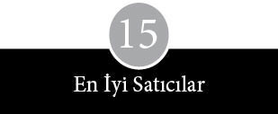
Apple’ın sorumluları dost kazanmayı ve insanları etkilemeyi çabucak öğrendiler. Apple’ın ilk dış temaslarını yönlendiren Markkula, Scott’un şirketin içişlerini yönetirken başvurduğu taktiğin tıpatıp aynısını kullanıyordu. Markkula çevrenin Apple’ın büyümesine yardımcı olmasını sağlıyordu. O, görüntünün önemini bütün iş arkadaşlarından çok daha iyi anlamıştı. Stratejisinin dozu, kılık kıyafetine çekidüzen vermesi için Jobs’u devamlı sıkıştırma noktasına kadar varıyordu. Genç ortağına, “Kitabı gösteren kapağıdır,” sözünü tekrarlamadan duramazdı. Yaldızlı, cilalı kurumların gücünün farkındaydı. Dikkati çok sayıda kişinin değil, bir iki kişinin üzerinde toplamanın önemli olduğunun bilincindeydi. İyi ün sahibi bir yatırımcının, başka türlü kolay kolay elde edilemeyecek bir şöhret kazandıracağını anlamış ve bir magazin hikâyesinin, parlak kâğıda bol renkli bir gazete reklamından çok daha ucuz ve etkili olduğunu Regis McKenna Ajansı’ndan öğrenmişti.
Apple’ın pazarlamasını dev bir başarıdan çok, yatırımcılarla muhabirleri bir dedikodu çemberinde buluşturan bir fısıltı gazetesinin ürünü olarak tanımlamak daha doğru olur. Apple, ticaretin çirkin jargonuyla, kanaat oluşturanlara odaklanmıştı. Apple II’yi destekleyen tuhaf topluluk, sorgulamaya ne zamanı ne eğilimi ne de cesareti olan diğerlerinin, zaten zengin olan ya da bilgisayarı az çok tanıyan kişilerin değerlendirmelerine bakarak karar vereceğini anlayabiliyordu. Çünkü yatırımcılar da, gazeteciler de en az bir ortak haslete sahiptir: Gerek paralılar gerekse yazıp çizenler çoğunlukla koyun gibi hareket ederler.
Markkula bir iki deneyimli finansmancıyla bağlaşıklık kurmanın, onlardan sağlanacak yatırımın çok üzerinde bir ağırlığa sahip olduğunu eskiden beri biliyordu. Gerçi Markkula’nın kişisel yatırımları yeterince başarılıydı, ama o güne kadar, hisse karşılığı genç şirketleri finanse eden risk sermayesi sektörünü meydana getiren 237 dolayındaki firmadan tek bir tanesiyle bile doğrudan bir deneyimi olmamıştı. Markkula ilk başta, risk sermayedarlarının kapısını çalmadan önce, Apple’ın bilgisayar üretebileceğini kanıtlayana kadar beklemek istiyordu; çünkü Apple’ın umutsuzca para sıkıntısı içinde bulunmadığını gösterebilirse, şirket hisselerine karşılık daha iyi bir bedel alabileceğini biliyordu. Ancak, 1977 sonbaharında kasa kalitesiyle ilgili sıkıntıların Apple’ın kredi limitini sıfırlama tehlikesi yaratması üzerine Markkula çaresiz kaldı. Bilgisayar satışlarının kârı Apple’ı ayakta tutmaya ucu ucuna yetiyordu. Şirket öyle bir darboğaza girmişti ki, Markkula ile Scott daha fazla para için görüşmeler sonuçlanıncaya kadar, acilen iki yüz bin dolarlık bir destek sağladılar.
Apple yine tanıdık yüzlere yöneldi. Hank Smith, Markkula’nın hem Fairchild’dan hem de Intel’den iş arkadaşıydı. Intel’den ayrıldıktan sonra New York’a taşınarak Rockefeller ailesinin risk sermayesi kolu Venrock’un sınırsız sorumlu ortakları arasına katılan Smith kızıl saçlı, hayat dolu bir adamdı. Venrock risk sermayesi fonlarının gayriresmi hiyerarşisinde en iyiler arasında yer alıyordu ve şimdiye kadar herhangi bir mikro-bilgisayar şirketine yatırım yapmamış olmak gibi de bir avantajı vardı. Markkula Smith’in kapısını ilk olarak 1977 baharında çaldı; Venrock birkaç ay Apple’ın gelişimini izledi. İş planının yazımına yardımcı olan John Hall, Venrock’u arayıp ortakların ikisiyle Apple’ın önündeki açılımları tartıştı. Smith, West Coast’taki diğer Venrock yatırımlarını teftişe giderken, Apple’ın Cupertino’daki ofisine de uğradı. Risk sermayesi firması o yıl yedi kuruluşa yatırım yapmıştı; ne var ki kişisel tanışıklığın dışında onları Apple’a yönelten bir şey yoktu. Hank Smith, “Eğer ben Mike Markkula’yı tanımasaydım Apple’a hiç bakmazdık bile,” diyor. Sonunda 1977 sonbaharında Markkula, Jobs ve Scott’la birlikte, Venrock’un diğer ortaklarıyla buluşup Apple’ın geleceğine ilişkin planlarını sunmaya davet edildiler.
İlk planları fazlaca agresif bulunmuştu, ama yine de kasa kalitesinden kaynaklanan tüm problemlere karşın, Apple öne sürdüğü projeleri yerine getirebilmişti. Sunum, önceki koşturmaların önemli bir kısmını gizlemişti. Gerçi Markkula kapsamlı bir izahat hazırlamış ve öngörülerinin çoğunu Gary Martin’in çıkardığı mali açılımlara dayandırmıştı, ama sonucu belirleyen, işin bilimsel özünden çok üslup oldu. Öngörüler yapılırken Sherry Livingston izledi. “Projelerini ileri sürüşleri tam bir komediydi. Ortalıkta o kadar çok proje vardı ki neredeyse yazı tura atacaklardı.”
Bütün bunlara rağmen iş planı yine de Markkula ile Scott’un Apple’a getirdiği düzen görüntüsünü ve odaklanma duygusunu yansıtıyordu. New York’ta Venrock ortaklarına yapılan sunumdan bir önceki gece Scott, şirket personelinin çoğunluğuyla birlikte Cupertino’da pizza yiyerek izahnameyi çoğaltmak, sıraya dizmek ve zımbalayıp düzeltmekle uğraştı. Bir düzine kadar suret hazırladıktan sonra gece uçuşuyla New York’a gidip Hilton’da kısa bir sabah uykusu çekti ve sonra Venrock’un ofisine yollanmak üzere Hank Smith, Markkula ve Jobs’a katıldı. Rezervasyonun geçici olarak durdurulması üzerine üçü havalimanına doğru yola çıktı. Scott, National Semiconductor’dan eski iş arkadaşlarını yedek bilet için kuyrukta görünce, kendisi ve yanındakiler için birinci sınıf biletler almaya karar verdi.
Markkula, Venrock’un ortaklarıyla ilgilenirken, bir yandan da Intel’in yürütmeden sorumlu başkan yardımcısı Andrew Grove’la görüşüyordu. Etkileyici yüz hatları ve kıvırcık saçlarıyla sırım gibi bir Macar göçmeni olan Grove, bir buharlı şahmerdan kadar gürültücü ve acımasız biri olarak tanınıyordu. (Intel’de işe geç kalanların adlarının bir deftere mutlaka yazılması talimatını vererek, onlara “Grove Silleleri” –mermi gibi azarlar– yağdırmasıyla ün yapmıştı.) Markkula, Grove’un Intel’in fabrikalarını inşa ederken kazandığı deneyimin bir kısmını şirkete aktarabileceği umudundaydı. Grove zokayı yuttu ve Markkula’nın önerdiği yirmi bin paydan on beş binini satın aldı, ama zaten Intel’de başka bir genç şirketle uğraşamayacak kadar çok işi olduğu gerekçesiyle direktörlüğü kabul etmedi. Scott ileriki aylarda anımsadıklarını şöyle dile getiriyor: “Grove devamlı arıyor, ‘Benim adamlarımı çalıp durmayı bıraksan iyi edersin’ diyordu. Ardından da, ‘Biraz daha Apple hissesi satmak ister misin?’ diye soruyordu?”
Intel direktörler kurulunun bir başka üyesi Arthur Rock da Markkula’nın sunduğu Apple II demosunu izleme fırsatı bulmuştu. Bunun sonucunda, Apple’ın Venrock’la anlaşma imzalamasına iki gün kala Rock, Venrock’dan Hank Smith’i ve Apple’dan Mike Scott’u arayarak teklifle ilgilendiğini bildirdi. Yetmişlerin ortalarında Arthur Rock’dan telefon gelmesi, diğer risk sermayedarları, finansmancılar, ticari bankacılar ve borsa simsarları tarafından, Vatikan’ın bacasından beyaz duman çıkmasına eş bir olay olarak yorumlandı. Ellili yaşlarının başında bulunan Rock, vakum tüpün ortadan kalkması ile entegre devrenin piyasaya çıkması arasındaki yıllar boyunca varlığını sürdüren şirketlere yatırımlar yapmıştı. Bir New Yorklu finansçı olarak, Fairchild Semiconductor’ın kuruluş finansmanının organize edilmesine yardımcı olmuştu. 1969 yılında 918 milyon dolar hisse değeriyle Xerox Corporation’a satılan Scentific Data System’e yaptığı yatırımla, mini-bilgisayar sektörünün kalkınmasına bir ortağıyla birlikte katkıda bulunmuştu. Rock’un buradaki hissesi 60 milyon dolar değerindeydi. 1968 yılında iki üst düzey yönetici Fairchild’dan ayrılarak Intel’i kurma girişimi sırasında Arthur Rock’dan akıl ve para istediler. Rock kendi cebinden 300.000 dolar yatırdıktan sonra, 2,2 milyon dolar daha ayarlayarak şirketin ilk başkanı oldu. Bazı konularda can alıcı tavsiyelerde bulundu ve Intel yönetimi, mikroişlemcilerinin pazarını geliştirme konusunda tereddüte düştüğünde, Rock’un tavsiyesi, kararlılıkla ilerlemek oldu.
Rock fazla öne çıkmayı sevmezdi, uzun gazete veya dergi yazılarına malzeme olmamıştı, risk sermayesi kuruluşlarının toplantılarında pek seyrek boy gösterirdi, yaptığı yatırımlar konusunda ağzı sıkıydı ve işini çoğunlukla ya San Francisco Montgomery Caddesi’ndeki ofisinden ya da Aspen’deki 450.000 dolarlık üç katlı ikametgâhından yönetirdi. Her sabah bir saat egzersiz yapan bir adamın formda görüntüsüne ve zinde vücut yapısına sahipti. Koyu bir beyzbol taraftarıydı ve en ön sırada, en güzel noktada daimi bir koltuğunun bulunduğu San Francisco Candlestick Park’ta sık sık takımına destek verirdi. Aynı zamanda San Francisco balesinin ve operasının coşkulu bir destekçisiydi. Modernist ressam Robert Motherwell ve Hans Hoffman başta olmak üzere pek çok sanatçının eserlerini toplardı. Televizyonun modern toplumun laneti olduğuna, marihuananın insanın beynini çürüttüğüne ve yirmi otuz yıldır edebiyat ve sanatta kayda değer bir gelişme gözlenmediğine inanan hayli eski kafalı bir adamdı. Meslektaşlarından biri onu şöyle tanımlıyor: “İsterse alımlı ve sevimli olabildiği gibi tam bir orospu çocuğu da olabilirdi.”
Rock’u San Francisco’daki ofisinden ya da Aspen’deki kayak evinden çıkarmayı başarabilen genç şirketlerin yöneticileri, sunumlarını kendisine iletmek için bir sürü eziyeti göze almak zorunda kalırlardı. Pek çok deneyimli yatırımcı gibi Arthur Rock da kumarbaz değildi. Yılda üç ila dört yatırım yapar, genelde şirketin başarıyı yakalayacağından ya da yönetimle kafasının uyuşacağından emin oluncaya kadar meblağı ufak tutardı. United Way gibi hayır işlerine şirket yardımı konusunda sabırsız, kolay sıkılan bir adam olarak tanınırdı, ayrıca yönetim kurulu toplantılarında çok az konuştuğu bilinirdi. Getirilen önerileri çoğunlukla şu soruyla keserdi: “Ne işe yarayacak?” Altmışlı yıllar boyunca uzun süre Rock’un yatırım ortağı olan Tommy Davis onun hakkında, “Sadece doğru yanıtı kabul ederdi,” diyor. Andrew Grove, Rock’u, “söz konusu araziyi, çevresinde arabayla dolaşan insanlardan çok daha iyi görebilen bir uçak pilotu,” diye tanımlıyor. Dolayısıyla, Rock Apple’ı aradığı tarihte, üzerinde birinci dereceden bir saygınlık postu bulunuyordu.
Markkula’yı Apple’a bulaştıran risk sermayedarı Don Valentine’in yaptığı yatırım ise bir bakıma rastlantı eseri gerçekleşti. Valentine bir akşam, Markkula, Jobs ve Hank Smith’le Monterey’deki Chez Felice adlı restoranda yemek yerken karşılaştı. Onların ne tartıştığını hissetti. Bir not iliştirerek masalarına bir şişe şarap gönderdi: “Apple’a yatırım yapmayı düşündüğümü göz ardı etmeyin.”
Sonunda 1978 Ocakı’nda bütün kâğıtların imzalanması, noter işlemleri ve hisse senetleri sertifikalarının onaylanması sona erip de finansman süreci tamamlandığında, Apple’ın değeri 3 milyon dolara çıkmıştı. Finansman katkısı Apple’a 517.500 dolar getirmişti; bu rakamın 288.000 doları Venrock, 150.000 doları Valentine, 57.600 doları da Arthur Rock’dan gelmişti. Markkula ile Scott bunun karşılığında, yatırımcılardan mali taahhütlerinin en az beş yıl süreceğini teyit eden gayriresmi bir anlaşma talep etti.
Apple’ın ünü altı ay içinde yayıldı. Michael Scott ve diğerleri 1978 yazındaki Tüketici Elektroniği Fuarı’nda Apple’a 500.000 dolar yatırım yapmak isteyen Chicago Continental Illinois Bank yetkililerinin hücumuna uğradılar. Firma hisselerinin fiyatı altı ay öncesinin üç katına çıkmıştı. Venrock ortakları hisse fiyatlarındaki artıştan yakınmakla birlikte, yine de ek yatırım yapmaktan çekinmeyerek hisse oranlarını yüzde 7,9’a yükselttiler. Buna karşılık fiyatların fazla hızlı yükselmesinden endişe eden Valentine hisse miktarını artırmadı.
İlk finansman katkısının üzerinden birkaç ay geçtikten sonra, Scott’a başka birinden daha telefon geldi. Bu kez arayan Rock’un yakın arkadaşlarından, altmışlı yıllarda holdingi moda yapan Teledyne Inc.’nin başkanı Henry Singleton’du. Rock, Teledyne’ın kurulmasına katkı yapmış ve altı üyeli direktörler kurulunda görev almıştı. Hayat sigortası satan, tank motorları üreten, banyo masaj ekipmanı, petrol arama burguları ve diyet yapanların lokmalarını sayan talihsiz bir cihaz imal eden iki milyar dolarlık bir şirketin başkanının, Apple II’nin kusurlu noktalarını öğrenmek için araması Scott’un çok garibine gitmişti.
Rock gibi Singleton da duygudan yoksun oluşuyla tanınırdı. Teldyne’ın şubelerini, kişisel portföyünü oluşturan kalemler gibi yönetmesiyle, ayrıntıları çok iyi yakalayan kafasıyla, nakit düşkünlüğüyle ve detaylı bilgiler istemekten çekinmemesiyle ün yapmıştı. Scott, Singleton’un soru yağmurunu sabırla yanıtladıktan sonra Rock’a, yatırım ortağının Apple’a direktör olmayı düşünüp düşünmeyeceğini sordu. Rock bunun olanaksız olduğunu, Singleton’un başka bir yönetim kurulunda görev yaptığını, aslında o sorumluluktan da kurtulmak istediğini söyledi. “Sorsam, kesinlikle hayır diyeceğine eminim,” dedi Scott’a.
Ancak, Scott ısrarlıydı; Apple’ın ilk disk sürücüsünü çıkardığı gün, bir tane alıp randevu ayarlayarak Singleton’un Century City ofisine gitti. Singleton’un yalnızca bürosunda değil, evinde de bir Apple bilgisayar bulunduğunu ve bir montaj dili programlamakla uğraştığını öğrendi. Yarım saatlik randevu tam günü kapsadı; Singleton’un kredi kartı kullanmayıp nakit ödeme yaparak Scott’u etkilediği Beverly Hills Country Club’ta birlikte öğle yemeği yediler. Rock, Scott’un Singleton’un evine davet edildiğini öğrenince düğümün atılmış olduğunu anladı: “Sonunda onu enseledin ha!” Singleton 100.800 dolar değerinde Apple hissesi satın aldı ve 1978 Ekimi’nde direktör oldu.
Venrock, Arthur Rock ve Henry Singleton’un sicili, Markkula’nın şirketi düzgün vasıflara sahip kişilere satmaktan ürkmediğini gösteriyordu. Yatırımcıların ya da direktörlerin kontrolü ele geçirecekleri ya da zorbalığa kalkışacaklarından endişe eden diğer birçok mikro-bilgisayar şirketinden farklı olarak, Apple’ın kurucuları onların sağlayabileceği katkıların bilincindeydiler. Finansçıların deneyim ve ün gibi soyut yararları, nakit katkılarından daha da önemliydi. Öteki küçük firmaların gelişmesini izlemişler, kara günlerini birlikte atlatmışlardı; yol üzerindeki olası tuzakları bilirlerdi ve yeni kurulan bir şirketin düzensiz temposuna, dönemine göre uygun bir perspektif sunabilirlerdi. Şirketin vergi yükünü hafifletecek tavsiyelerde bulunabilirler, bir dağıtım stratejisi geliştirmesine yardımcı olabilirler ve deneyimli yöneticileri çekebilirlerdi. Apple bu gerçeklerin bilinciyle, yatırımcılara kolaylıklar sağlamaya özen gösterdi. Yönetim kurulu toplantıları, Rock’un Intel yönetim kurulu toplantısına katılmak üzere yarımadaya indiği güne denk getirildiği gibi, Scott sık sık Henry Singleton’u San Jose Havalimanı’ndan alıp geri bıraktı.
Apple’ın ilk hisse satışları genelde saklı tutulabilse de ilk yatırımcılarının ünü gizlenemeyecek kadar büyüktü. Bu yatırımcıların Apple’a ilgisi, risk sermayedarları arasında epey dedikodu üretecek bir olaydı. Bu konu Batı Risk Sermayedarları Birliği’nin aylık öğle yemeklerinde ortaya atılacak; San Francisco ile New York arasında gece uçuşu yapan geniş gövdeli jetlerin birinci sınıf bölmesinde seyahat eden bankacılar ya da Palo Alto’da El Camino Real’deki Rickey’s Hyatt House’da kahvaltı eden diğerleri arasında konuşulacaktı. İçlerinde en meraklı olanları ise San Franscisco’daki Kaliforniya Ticaret Odası’nın kötü döşenmiş lobisinde dosya karıştırarak bilgi toplamak için koşturup duracaklardı.
Yatırımcıların masaya para koyması bir güven işaretiydi. Borsa analizcilerinin görüşleri diğer bir güven işaretiydi. Yetmişlerin sonlarında Wall Street’in elektronik sektöründeki en etkili analizcilerinden biri Ben Rosen’di. Rosen sektörü yıllardır takip ediyordu. Elektronik cihazlardan hoşlanıyordu. Her yıl yeni ürünleri kollayarak, üst düzey yöneticilerin tumturaklı sözlerine aldanmadan, orta ve alt düzey yöneticilerin görüşlerini sabırla dinleyip sonuçlar çıkararak, haftalarca fuarlarda koşturuyordu.
Markkula ile Scott, Rosen’in ara sıra karşılaştığı genç müdürlerden ikisiydi. İkisini de ta Fairchild’dan tanıyordu; Intel’deki inceleme turlarından birinde Markkula’ya programlanabilir hesap makinesinin nasıl çalıştırılacağını öğretmişti. Apple’ın müdürleri, 1978 Nisanı’ndan itibaren Apple kullanmaya başlayan Ben Rosen’e ilgi gösteriyorlardı. Rosen’e şeyh ve prenslere sunulan düzeyde müşteri hizmetleri sunuluyordu. Apple’ın bir özelliğini anlamadığı zaman, eğer kullanım kılavuzunda yeterli açıklamayı bulamazsa, hemen ya Jobs’u ya da Markkula’yı evden arıyordu. Markkula, Rosen’e bir miktar Apple hissesi satmayı bile önerdiyse de kibarca reddedildi. Ancak, Apple’ı ziyaret etti ve yönelttiği sorulara hemen hemen istisnasız olarak açık seçik yanıtlar verildi. Scott, “Ben daima, iki üç yıl içinde neler olup biteceğini önceden biliyordu,” diyor. İlginin bir bedeli vardı.
Mikro-bilgisayar endüstrisinin ilk yıllarını izleyen gazetecilerin çoğu, yarıiletken sektörünü takip edenler arasından geliyordu ve bunlar Rosen’in güvenilir bir insan olduğunu öğrenmişlerdi. Şirketleri şişirmeyi ve hisse çığırtkanlığı yapmayı iş edinmiş bir sürü insan arasında Rosen yansız kişiliğiyle sivriliyordu. Hiçbir aramayı karşılıksız bırakmaz, şirketler hakkında geniş kapsamlı bilgiler verir ve The Wall Street Journal, The New York Times, Business Week, Fortune, Forbes ve çeşitli haftalık haber organlarında yer bulan keskin gözlemlere dayalı özlü veriler sunardı. Rosen’in New York’taki bürosunu ziyarete gelen muhabirler Apple kullandığını gördüler. Dolayısıyla Rosen bir bakıma Apple’ın en etkili sponsorlarından biri olup çıktı. Rosen’in düzenlediği bir öğle yemeğinde Time’a bir tanıtım metni sunan Apple’ın reklamcısı Regis McKenna, onun hakkındaki düşüncesini şu sözlerle dile getiriyor: “Ben, Apple’a gerçek bir saygınlık sağladı.” Yatırımcı Hank Smith ise Rosen’i “Apple’ın en iyi satıcılarından biri” olarak tanımlıyor.
Apple’ın mali durumunun izlenmesi önemliydi ve bu gözetim yararını göstermeye başlamıştı. Rosen ile başka bir Morgan Stanley analizcisi olan Barton Biggs, San Francisco’da Arthur Rock’la öğle yemeğine çıktılar; aralarında geçen konuşmanın özeti New York bankacılık çevrelerinde dolaşan iki sayfalık bir metinde yer aldı. Biggs’in kaleme aldığı bu yazı soluk kesici bir ton içeriyordu: “Arthur Rock, tıpkı Ted Williams, Frank Tarkenton, Leonard Bernstein ya da Nureyev gibi, büyük harfle yazılacak tam bir Efsane… O, kendi işinde şimdiye kadar bu oyunu oynamış herkesten kat kat daha büyük çaplı bir oyuncu.” Biggs, Rock’un Apple’a ilişkin yorumlarını da, görevi gereği, Morgan Stanley’deki meslektaşlarına bildirdi. “Bu şirketi yönetenler… çok parlak, çok yaratıcı ve çok azimli insanlar.” Bu tür ifadelerin okurların (ve de yatırımcıların) ağzının suyunu akıtacağı kesindi.
Apple’ın pazarlama kampanyasının ilk adımlarının, ülkenin en deneyimli yatırımcılarından birinin verdiği tüyolardan daha güçlü bir etki yapması düşünülemezdi. Markkula önceden kurgulanmış konuşma ve resmi sunumlarda Apple’ın büyük planını şu üç sözcükle tarif ediyordu: “Empati. Odaklanma. Mal Sevkıyatı.” Arapsaçına dönen isim ve fiiller, reklam firmasının müşteri temsilcileri arasında gülüşmelere yol açsa da Markkula eski bir fikri tuhaf bir modernlikle ifade ediyordu. 1940’larda, örneğin IBM New York Beşinci Cadde’de gösterişli bir teşhir merkezi açtığı zaman benzer bir strateji uygulamış ve kurucusu Tom Watson yaklaşımını daha sonra şöyle açıklamıştı: “Biz şirketin imajını, boyutlarından ve ününden çok daha fazla öne çıkarıyoruz.”
İlk başta, Apple’ın pazarlama stratejisi açık seçik bir vizyonun ürünü değildi. Ürün yaşam çevrimine ilişkin anlayışları, çiplerin piyasaya çıktıktan sonraki on iki ay içinde değersizleşme eğilimi taşıdığı yarıiletken sektöründe geçerli olan kalıpları andırıyordu. Pazarın genişleme halinde olması ilk günlerdeki gaflarını örtebiliyordu. İlk başlarda Regis McKenna Ajansı, Apple’ın amaç ve hedefleri hakkında şüphe içindeydi. Müşteri temsilcisi Frank Burge durumu şöyle ifade ediyor: “Markkula ile Apple’ı tanıyanlar, acaba bu işin altından kalkabilecekler mi diye endişe ediyorlardı. ‘Bu adamlar çok yetersiz. Kesinlikle başaramazlar’ deyip duruyorduk. Oysa Jobs ile Wozniak’da iş var gibiydi. Aslında tüm inançlarımıza tersti bu.” Ajanstakiler pazarlama konusunda yeterince becerikli bulmadıkları Markkula’ya ve imalatçı yanı ağır basan Scott’a bakıp Apple’da tüketicilere mal satabilecek deneyimde kimsenin bulunmayışından endişe ediyorlardı.
McKenna elini güçlendirmek için 1978 başında, insanların makineyi kartuş takıp evde kullanacağı umuduyla Aile Bilgisayarı adını verdiği, programlanamayan bir bilgisayar piyasaya süren Video Brain adlı başka bir bilgisayar şirketine daha yöneldi. Ürün, basın ve bayiler tarafından büyük bir coşkuyla karşılandı; müşterilerin programlamayı öğrenme zahmetine girmek istemeyeceğini varsayan büyük reyonlu mağazaların ilgisi büyüktü. Ama sonunda, şirketin makine için yarıiletken üretme hırsının da yardımıyla sürekli yükselen fiyatlar yüzünden, tüketiciler cihazın yanına yaklaşamadılar ve Video Brain başarısız oldu.
Ne ki bundan aylar sonra McKenna Apple’ı bırakıp Video Brain’le devam edip etmeme konusunda bir karara varmak için epey sıkıntılı bir dönem geçirdi. Ajans, sonunda Apple’la devam etmeyi seçti, ancak, McKenna’nın kaygısı ikinci yılında şirkete önerdiği reklam bütçesine yansıdı. McKenna Apple’a 300.000 dolar harcama önerisinde bulundu. Markkula bütçenin iki katına çıkarılmasında ısrar etti. Mikro-bilgisayar pazarında küçük bir payla yetinmeye çalışmanın boşuna bir çaba olacağına inanıyordu ve Apple’ın sektörde belli bir güç konumuna gelebilmesi için heybetli bir görüntü sunması ve büyük bir şirketmiş gibi davranması gerektiğinde kararlıydı. McKenna bu tartışmayı şöyle aktarıyor:
Ben çok genç şirketler konusunda her zaman tutucuyumdur. Yüz bin dolarlık ödenmemiş faturalarla boğuşmaya hiç niyetim yok. Ama Markkula’nın ağzından, “Bir an önce bir konum edinmeliyiz” lafı düşmüyordu ki. Az zorlamadı beni. Çok önemli bir karardı doğrusu.
Apple II’yi tanıtan reklamda, bir kadın mutfakta bir kesme tahtası üzerinde neşe içinde bir şeyler doğrarken, mutfak masasında oturan kocası önündeki bilgisayarda daha dünyevi meselelerle uğraşıyordu. Reklam, bilgisayarın ne amaçla kullanılacağına dair hiç kuşku bırakmıyordu:
Sizinle çalışmaya, oynamaya ve büyümeye hazır olan ev bilgisayarı… Aile bütçesi, gelir vergisi, reçeteler, vücudunuzun biyoritmi, çek hesabınızın takibi, hatta ev ortamınızın kontrolü gibi her konuda veri düzenleme, endeksleme ve depolama yapabilirsiniz.
Ayrıca ateşli bilgisayar meraklılarına hitap eden, ancak en toy kesimi dikkate almayan bir sürü teknik özellik de sıralanıyordu. Elinden iş gelen ve teknik yatkınlığa sahip usta tutkunlara, Apple II’yi tek bir baskılı devre kartı şeklinde, 598 dolara alabilecekleri belirtiliyordu.
Aynı zamanda bilgisayar mağazalarında görülmeye başlayan büyük bir posterin üzerinde gayet açıktan çiftanlamlı bir slogan yer alıyordu. APPLE II: KİŞİSEL / EV BİLGİSAYARI. Ayrıca Markkula’nın, Apple’ın geleneksel iş çevrelerine satış yapan imalatçıların geleneksel fuarı olan Ulusal Bilgisayar Konferansı’na katılmayıp çabalarını Tüketici Elektroniği Sergisi’ne yoğunlaştıracağı yolundaki sözlerine yer verilmişti. Apple’ın reklam müdürü Jean Richardson, “Ortada öyle fazlaca sofistike bir strateji olmadığını” itiraf ediyor. “Bir evin içindeki insanlara satış yapar gibi düşünüyorlardı.”
Reklamların yayımlandığı dergiler görsel malzemeden ya da reklam metninden daha önemliydi. Renkli bilgisayar üreten Georgialı şirket Compucolor gibi firmalara kıyasla Apple’ın ilk reklamları çok donuk kalıyordu. Apple amatörlerin dergisi Byte’ta yer almakla yetinmeyip ilk yılı boyunca Scientific American ve Playboy gibi dergilere de reklam verdi. Bunlar pahalı reklam sayfalarıydı, ama dergilerin niteliği Apple’ı diğer küçük bilgisayar şirketleri kalabalığından sıyırıp üste çıkardı. Apple’ın, zaman zaman şirketin imajını güçlendirmeye yönelik, bilgisayar üzerine fazla şey söylemeyen, ama parlak ve göz alıcı, bizzat McKenna tarafından kaleme alınmış küçük ebatlı reklamları da yayımlandı. Bunlar arasında en tutulanlardan biri şöyleydi: “A, Apple demek. Kişisel bilgisayarlar hakkında ilk öğrenmeniz gereken şey bu.”
1977 sonunda, Digital Research’den Gary Kildall, Jobs’a yazdığı bir mektupta, Apple’ın pazarlamasına ilişkin endişelerini kibarca dile getirdi:
Daha önceki tartışmalarımızdan anladığım kadarıyla, tüketici piyasasına hitap etmeyi düşünüyorsunuz... Apple’ın reklamlarında yanıltıcı bir yan var… Apple II tüketiciye dönük bir bilgisayar değil; şahsen “önceden bilgisayar deneyimim” bulunduğu halde ben bile parçaları birleştirip sistemi işler hale getirmekte zorluk çektim… Dahası, ticari cihaz imalatçıları, var olmayan ürünlerin reklamını yapmazlar… Sizin reklamınız, hisse senedi piyasası analizi ve aile bütçesi için yazılımın var olduğunu (ya da kolayca kurulabileceğini) söylüyor. Bu tür programlar gerçekten var mı? İkinci olarak, “1977’nin sonuna kadar” bir flopi disk altsisteminin erişilebilir olacağı vaat edilmiş. Hani nerede?
Kildall değindiği bütün noktalarda haklıydı; Apple’ın, Dow Jones’un borsa kayıt cihazıyla bağlantı kuran programı, ilan edildikten tam bir yıl sonra piyasaya çıktı. Hepsi birlikte alındığında, Apple’ın ilk reklamları Markkula’nın kendi amatör eğilimini yansıtıyordu.
İlk dönemin reklam anlayışında isabetsizlik olduysa da Apple II’nin ilanından sonraki altı ay içinde bir strateji değişikliği meydana geldi. Fazla ciddiye alınmayacak kadar küçük bir sektörde minicik, zor görülebilen bir şirkete tanınan bir tür lükstü bu. Apple az tanınmışlığının ve genişleyen bir pazarda yer almasının avantajını kullanabildi; dolayısıyla, sakarlıkları büyük yankılar doğurabilecek büyük bir şirketten çok daha fazla manevra özgürlüğüne sahip oldu.
McKenna Ajansı’nın 1978 başında Apple’a gönderdiği pazarlama stratejisine ilişkin bir notta, tüketicilerin evlerinde bilgisayar kullanacağı günün çok uzak olduğu yolunda net bir yaklaşım göze çarpıyordu. Aynı zamanda, McKenna’nın, Apple’ın yerine getirilemeyecek sözler vererek tüketici piyasasını tahrip edebileceği endişesi dile getiriliyordu. Ajans, amatör çevrelerle, “programlanabilir hesap makinesi piyasası” ile okul ve üniversite pazarları arasındaki farklılıkları dikkate alarak hedef belirlemeye de başladı. Sonunda, ilk reklamların üzerinden otuz altı ay geçtikten sonra Apple II’nin bir oyun aracı ya da ev bilgisayarı olduğu izlenimini silmeye uğraşan televizyon reklamları verilmeye başlandı. Reklamlarda talk-show sunucusu Dick Cavett, Apple’larını küçük bir çelik döküm tesisini işletmek ya da altın yatırımlarını yönetmek için kullanan ev hanımlarıyla birlikte poz veriyordu.
Apple’ın reklamları, küçük firmaların bilgisayarlarını en üstün sıfatlarla allayıp pulladıkları bir sektöre göre üretilmekteydi. Kuşkuculara fazla tartışma fırsatı bırakılmıyordu. Yetkin bir pazar araştırması yoktu. MITS kocaman bir “1” rakamı kullanarak, Altair’in lider bilgisayar olduğu iddiasıyla böbürlendiği tam sayfa ilanlar veriyordu. “Altair alırken sadece bir ekipman satın almıyorsunuz. Yıllar boyu güvenilir ve ucuz bilgisayar kullanma olanağı satın alıyorsunuz. Mikro-bilgisayar alanında BİR NUMARALI imalatçının desteğini satın alıyorsunuz.” Vector Graphic, makinesinin adını “mükemmel mikro-bilgisayar” koymuştu; IMSAI 8080’e “en güzel kişisel bilgisayar” deniyordu; Radio Shack cihazını, “düşük maliyetli ilk tam mikro-bilgisayar sistemi” diye tanıtıyordu. Processor Technology, Sol’a “Küçük Bilgisayar” adını vermişti. Apple da kendi makinesini diğerleri kadar gürültülü şekilde överek göklere çıkardı.
1978 Temmuzu’nda ilk Apple II’nin piyasaya sürülmesinden tam bir yıl sonra, sektör dergilerinde şu başlık altında iki sayfalık bir reklam görüldü: APPLE II NİYE DÜNYANIN EN ÇOK SATAN KİŞİSEL BİLGİSAYARIDIR? Rakamların her iddiayı destekleyecek şekilde eğilip bükülebileceğini gösteren bir övünmeydi bu. Aynı anda, yine gerçeği kendine göre eğip büken başka bir reklamda “Hiç kuşkusuz daha şimdiden on binlerce kişi Apple’ı seçmiş bulunuyor” yazıyordu. Commodore PET’te çalışan Chuck Peddle, “Apple konumunu ve katkısını devamlı abartırdı,” diyor.
Şirket imajı bilgisayar bayilerinin tezgâhlarına da yansıyordu tabii. Mağazaların büyük bölümü hassas durumdaydı. Çoğu zaman nakit sıkıntısı çekiyor ve bazen müşteriden çok bilgisayara ilgi gösteren hobi sahipleri tarafından işletiliyorlardı. Apple, bayi açlığı çekiyordu. Commodore görevlilerinin kızdırdığı, Apple’da daha fazla samimiyet bulan, geleceğin bazı bağımsız bayileri Kaliforniya’da toplandılar. Apple, bayilerinin tutumunun ve görüntüsünün önemini daha başında kavramıştı. Örneğin San Franscisco’daki bir bayisini, Village Discount (Köy İndirim Mağazası) olan adını Village Electronics (Köy Elektronik) olarak değiştirmeye zorladı. Bayi anlaşmalarında da Sony’nin kullandığı metinleri örnek aldı.
Bayilik sistemiyle çalışan bir bilgisayar mağazaları zinciri olan Computerland, ülkenin dört bir yanında indirimli satış yerleri açmaya başlayınca, Markkula’nın Computerland’in orijinal anlaşmalarında kilit bir rol üstlenmesiyle, Apple da onunla birlikte yayıldı. Markkula mağaza açılışlarına katıldı, bilgisayar gösterileri sundu. Computerland’in başkanı Ed Faber bu süreci şu sözlerle dile getiriyor:
Aramızdaki ilişki karşılıklı yarara dayalı bir ilişkiydi. Apple’ın bir ürünü vardı, biz de perakende dağıtım sisteminin ilk nüvelerine sahiptik. Biz ne kadar başarılı olursak, onlar da o kadar başarılı oluyordu. Onlar ne kadar başarılı olurlarsa, biz de o kadar başarılı oluyorduk.
Ancak Apple, bayilerinin sınırlı miktarda parayla çok iş yapmalarına da yardımcı oldu. Fabrika ile bayinin reklam giderlerini paylaştıkları, ortaklaşa reklam programını başlatan ilk kişisel bilgisayar firması Apple’dı. Faber’e göre: “Bu, diğer üreticilerin gözünü korkuttu. Bizim, Apple’la o kadar sıkı bir bağlaşıklık içinde olduğumuza inandılar ki mağazalarımıza adım atamayacaklarını sandılar.”
Apple’ın başarısında, bedeli başka şirketler tarafından ödenen reklam kampanyalarının da payı vardır. Commodore ile Radio Shack bilgisayarlarını piyasaya sürer sürmez, gazetelere büyük reklamlar vermek için hiç zaman kaybetmediler. 1978 başında Regis McKenna Ajansı’ndan Apple’a iletilen bir mesajda içtenlikle belirtilen bir nokta vardı: “Commodore ile Tandy… kişisel bilgisayarı popülerleştirdiler”. Ancak, Apple’ın rakiplerinden pek azı özel bir yetkinlik sergilediği gibi, hiçbirinin makinesi Cupertino’da iç içe örülen deneyim ve coşkunun zarif dengesine sahip değildi. Buna rağmen bilgisayar üreten hemen her şirket, varlıklarının şu ya da bu aşamasında, Apple’dan daha büyük, daha zengin ve daha güçlü bir bilgisayar çıkarmakta olduklarını duyurmuşlardı ya da böyle söylentiler yayılmıştı. Binlerce mağazası ve elinin altında yirmi beş milyon isimden oluşan bir posta listesi bulunan Radio Shack’in dağıtım bakımından en uç noktada bulunduğu varsayılıyordu. Ama Radio Shack’in TRS-80 siyah-beyaz bilgisayarı hakkında, düşük kaliteli bir imaj ve genişletilmesinin zor olduğu izlenimi oluştu. Bu da Apple’ın reklamlarında, Apple II’nin genişletilebilir olma özelliğine vurgu yapmasına zemin yarattı.
Commodore’un bilgisayarı PET’in hoş bir ismi vardı, ama başında fon yetersizliği, emir-komuta yönetimi, biraz geliştirilmiş bir hesap makinesine benzeyen bir klavye ve plastik kasaya para ödememek için Kanada’da metal büküm tesislerinde üretilen madeni bir kasa gibi dertleri de vardı. Üstelik siyah-beyaz olması, Apple’ın renkli makinesi yanında bir dezavantajdı. Atari ve Mattel tüketici elektroniğinin güçlü isimleri oldukları halde, bilgisayar üretmekte ağır davrandılar ve sonunda ürettiklerinde ise makineleri Apple II’nin gerisinde kaldı. Ohio Scientific ve Cromemco gibi nispeten küçük firmalar güvenilir bilgisayarlar ürettikleri halde, risk sermayesi çevrelerinden yatırım peşine düşmediler. Kentucky Fried Computers, bir bilgisayar şirketi için pek garip olan adını Northstar Computers olarak değiştirdiğinde artık iş işten geçmiş, yeterince ağır bir zarara uğramıştı. Bu sırada mikro-bilgisayar dünyasının bir numaralı ismi MITS, çevresel birimler ve mini-bilgisayar üreten Kaliforniya, Chatsworthlü büyük bir şirket olan Pertec tarafından yutuldu.
Ancak, küçük balığın ardından büyük balığın, Texas Instruments’ın (TI) iri gölgesi yaklaşıyordu. 1978 ile 1979 yıllarında Texas Instruments ortalığa herkesin dizlerinin bağını çözen bir korku saldı. Apple’ın 327 milyon katı büyüktü, kendi yarıiletkenlerini kendi üretiyordu, diğer rakiplerine ağır bir zarar vermiş olan hesap makineleri hattıyla tüketim ürünleri satışında ciddi bir deneyim edinmiş ve bu sırada acımasız bir kâr avcısı olarak ünlenmişti. Ben Rosen haber bülteninde, Texas Instruments’ın kişisel bilgisayarlara yönelik bir şirket bağı bulunduğunu bildirirken, “TI’nin bir şirket bağı varsa, aman dikkatli olun,” diye uyarmayı da ihmal etmedi.
Texas Instruments marka bir bilgisayarın (piyasaya fiilen çıkmasından çok) düşüncesi bile Cupertino’yu korkuya boğarken, Apple basınla çalışmalarını sesiz sakin sürdürüyordu. “TI’yle başa çıkmanın yolunun basından geçtiğini düşündük. TI her zaman basınla ilişkilerinde ters düşmüştü, oysa Apple’ın dostça ilişkiler geliştirme şansı vardı. Basın dengeyi sağlayabilirdi.” McKenna basını nasıl idare edeceğini Apple’ın üst yöneticilerinin hepsinden daha iyi bilirdi. Scott sözlerine doğru dürüst yer verilmediğinden yakınıyordu; Markkula’yı ise anlamak her zaman kolay olmadığı gibi, Apple rozeti dağıtmak, yazacakları hikâyenin şirket için son derece önemli olduğuna dair nutuk çekmek ya da tüketicilerin Apple II’yi kullanmasını yarım saat içinde öğreneceklerinde ısrar etmek gibi davranışlarıyla gazetecileri bezdirmesi işten değildi. Bu esnada kendi coşkusuyla yanıp tutuşan Jobs, Apple’ın planlarının en küçük gizli detayını bile önüne gelene anlatmaya her zaman hazırdı. Yine de Apple, halkla ilişkiler mesleğindeki biri için hayali kurulacak bir olaydı. Bir kez anlattıktan sonra bir daha kolay unutulmayacak ve en azından gazetecilerin gözünde, her zaman şirketlerine net bir imaj kazandıran, ayırt edici kişiliklerin çevresinde dönen neşeli bir öyküydü.
McKenna çok daha sabırlıydı, hemen bir öykü üretmek için bir röportaj teklifi veya telefon gelmesini beklemiyordu. Müşterilerine basınla uzun erimli ilişkiler kurmaları gerektiğini söylüyor, sabrın erdemini yüceltiyor, er geç ortaya çıkan öykülere daha serinkanlı yaklaşıyordu. Interface Age gibi sektör dergileri zaman zaman sayfalarında Apple’a yer vermeye başladıktan sonra, McKenna Ajansı’nın adını bile bilmeyen ünlü dergilerin güvensizliğinin ve kuşkuculuğunun kırılması yıllar aldı. McKenna Ajansı’ndaki müşteri sorumluları basına kur yapmak, gazetecilerin telefonlarına cevap vermek, özgeçmiş öyküsüne ilişkin malzeme temin etmek, asla yayımlanmayan fotoğraf çekimleri düzenlemek, hiç basılmayan sorulara yanıtlar bulmak ve olay doğrulaması yapmak gibi işlere yıllarını vermişlerdi. McKenna gelebilecek soruları önceden tahmin ederek ya da bir editörün kafasını kurcalamasını istedikleri satırların provasını yaparak, müşterilerini de eğitirdi.
McKenna Apple’la iki üç günlük, hayli yoğun birkaç New York seyahati düzenledi ve zaman zaman horlanmalara, düş kırıklıklarına katlandı. Markkula ve Jobs’la birlikte “dikeyler”–dar bir kesime hitap eden dergiler– ile “yataylar” –genel bir kitleye seslenenler– denilen çevreleri ziyaret ettiler. Dergi dergi dolaşarak, lobilerde bekleyerek, bilgisayarları asansörlere taşıyarak, bir derginin muhabirleriyle apar topar kahvaltı edip oradan başka sabah ve öğlen randevularına yetişmek için fırlayarak Apple bilgisayarı bütün New York’ta gezdirdiler. Bu, çoğu zaman karşılığı hemen alınmayan yorucu, yıpratıcı ve kendini tekrar eden bir işti.
***
Apple’ın basında bu kadar çabuk ve olumlu bir yer bulması, ustaca planlanmış halkla ilişkiler kampanyasından çok, bilgisayarın önlenemez zarafetinden kaynaklanıyordu. Memnun müşteriden ve Apple II’nin performansı hakkında nerdeyse hiç fark ettirmeden sessiz sedasız yayılmaya başlayan fısıltı ve söylentilerden daha güçlü bir reklam olabilir miydi? O tarihte adı Personal Software olan Bostonlu küçük bir yazılım firmasının başkanı Daniel Fylstra, diğer amatörlerle görüştüğünde, karşısına çıkan sonuçtan hayrete düştü. “Apple bilgisayar satın alan kişilerle karşılaştım, gerçekten de gayet iyi çalışıyormuş. Şıkır şıkır çalışıyormuş.” Apple hakkında orada burada çarpıcı ifadeler çıkmaya başladı. Örneğin 1978’in Ocak ayında Penthouse dergisi kişisel bilgisayarlarla ilgili bir inceleme yazısında, “Apple II birçoklarının görüşüne göre ev bilgisayarlarının Cadillac’ıdır” yazıyordu.
Üç ay sonra Byte dergisi yazarı Carl Helmers, ilk önemli değerlendirme yazısında, Apple II’yi “tam bir ‘ev aleti’, bilgisayar kavramının en iyi örneklerinden biri” diye tanımladı. Ardından bir dergide, piyasadaki diğer bilgisayarlara ihtiyatla yaklaşmak gerektiği şeklinde hayli cesur bir destek yazısı bile çıktı. Byte’ın aynı sayısında, Commodore firmasının PET adlı ürünü de değerlendiriliyordu: “Pet bugün pazarda tek seçenek olmaktan çok uzak. Ama güçlü bir rakip olduğu kesin.” Yorumcu ayrıca can sıkıcı bir gözlemini de aktarmıştı: “Telefonla haftalarca Commodore’dan kimseye ulaşamadığım için başımın çaresine bakmak zorunda kaldım.” Byte Radio Shack’in TRS 80 modeline de tanıdık bir çekimserlikle yaklaşıyordu: “TRS 80, özlem duyulan kişisel bilgisayar için tek seçenek olmasa da yine de güçlü bir rakip olduğu söylenebilir.”
Birinci sınıf finans çevrelerinden alınan desteğin önemi ve iş basınının işinin eri yatırımcıların rehberliğine ne kadar değer verdiği, genel okur kitlesine yönelik dergilerde yer bulmaya başlayan hikâyelerle birlikte iyice ortaya çıktı. Apple II disk sürücüsünün piyasaya çıktığı günlerde, finans köşe yazarı Dan Dorfman, Cupertino’yu ziyaret etti. Esquire’da “Yürü Ya Kulum, Horatio Alger”* başlığıyla çıkan övgü yazısında şöyle diyordu: “Apple’a inanan güçlü ve etkileyici kişiler var… Bunlardan biri, Rockefeller biraderlerin risk sermayesi alanındaki kolu Venrock Associates, diğeri de ülkenin önde gelen risk sermayedarlarından biri olan Arthur Rock.”
Apple, kuruluşundan iki yıl sonra, küçük iş ilanlarıyla ilgili konularda uzmanlaşmış bir dergi olan Inc.’nin kapağına çıkmayı başardı. Ne var ki, bazı büyük dergilerin kuşkucu bakışlarını aşmanın çok zor olduğu ortadaydı. Apple’ın Time’ın sayfalarında yer alması için üç yılı aşkın bir süre geçmesi gerekti. O zaman bile “Parlak Apple” başlığı altındaki yazıya sadece bir sütun ayrılmıştı.
McKenna basınla ilişkilerin mekanik yanıyla ilgilenirken, Apple’ın yöneticileri de şirket imajının diğer yönleriyle uğraşıyorlardı. Şirketin genel görüntüsü, kullanım kılavuzunun kaderine bağlıydı. Scott kullanım kılavuzunun grafik tasarımıyla uğraşmaktansa bilgisayarları bir an önce piyasaya sürmek istiyordu ve şirketin dağıtması gereken tek belgenin veri dökümleri olduğuna inanıyordu. Oysa Jobs farklı düşünüyordu. Apple’ın ilk kapsamlı kullanım kılavuzunu hazırlayan Jef Raskin’e göre, “Jobs çok iyi kullanım kılavuzları istiyor ve bunun için sıkı bir mücadele veriyordu.” Sonunda 1979 Ağustosu’nda kılavuz ortaya çıkınca, Commodore, Radio Shack ve Atari gibi rakipler aynı şeyi kendilerinin de yapmak zorunda olduklarını kamuoyu önünde itiraf ettiler.
Apple’ın etkili amaçlar için kullanmayı başardığı bağlaşıklıkların yönünü çizen Markkula’ydı. Şirket, imajına kalıcı bir parıltı kazandıran daha büyük şirketlerle ittifaklar kurdu. Örneğin ITT’yle birlikte Avrupa’da bilgisayar dağıtımına katıldı (gerçi bu ilişki sonradan bozuldu) ve öğretmenler arasında büyük bir saygınlığa sahip olan Chicago’lu Bell & Howell firmasıyla birlikte okullara Apple dağıttı. Apple’ın pazarlama müdürlerinden Trip Hawkins, “Bütün bu işleri gerçekleştiren itici güç Markkula’ydı,” diyor.
Markkula, bir zamanlar Apple satın almak isteyen Commodore çalışanı Andre Sousan’ın 1977 yılındaki yaklaşımına olumlu tavır gösterdi. Sousan’ın hatırladıkları şöyle:
İki Steve’e ve Markkula’ya, “Bakın,” dedim. “Derhal Avrupa’ya açılmazsanız, asla istediğiniz ölçeğe ulaşamazsınız. İsterseniz, ben operasyonlarımı Apple’ın parçası olarak yürütürüm ve hepsini alabileceğiniz şekilde bir formül hazırlarım.”
Böylece sınırları adamakıllı genişletecek olan Apple bu öneriyi kabul etti ve Sousan, yönetim kadrosuna girdi.
1978 Martı’nda Markkula, Dow Jones’un New Jersey, Princeton ofisini arayarak, teknik müdür Carl Valenti’yle görüştü ve randevu aldı. Valenti şöyle diyor:
Kendisine takvimimde ertesi sabah saat dokuza bir boş zaman göründüğünü söyledim. “Tamam,” dedi. Cupertino’dan aradığının farkında değildim. Ertesi sabah Markkula odama gözleri kan çanağı gibi girdi.
Markkula Valenti’ye, bir Apple II’nin, Dow Jones Haber Servisi arşivlerinde avlanmak üzere nasıl programlandığını gösterdi. Bunun üzerine, iki şirketin birlikte yazılım programı geliştirmesi konusunda el sıkışıp anlaştılar. “Diğer şirketler bizi ikna etmek için ağzımızdan girip burnumuzdan çıkıyorlardı. Ama Apple öyle yapmadı.”
İşin en hassas noktası da Apple’ın kullanıcı gruplarının önemini algılayan ilk mikro-bilgisayar şirketlerinden biri olmasıydı. Firma ilk uluslararası kullanıcılar grubunu örgütleme planları yaparken, bir belgede şöyle bir ifade geçiyordu: “Stratejimizin başlıca unsurlarından biri, bu toplantıyı planlar ve yürütürken yoğun bir dış kaynak desteğine başvurmak olacaktır.” Ardından şöyle devam ediyordu: “Firmasına ve ürününe değer veren sadık bir kullanıcı kadar satışa katkısı olan başka biri yoktur.” San Francisco’da bir pratik soruna çözüm bulmak amacıyla bir grup oluşturuldu. Grubun kurucularından Bruce Tognazzini olayı şöyle anlatıyor: “Lanet bilgisayarı çalıştırmayı bir türlü becerememiştik.” Düzinelerce kentte yerel ve bölgesel topluluklar ve onların kendi yayınlarıyla birlikte yavaş yavaş başlayan bu grup oluşumları, yalnızca bilgi paylaşımını ve yazılım gelişimini hızlandırmakla kalmadı, aynı zamanda bilgisayar sahiplerini izlemek, yeni ürünler için kobaylar ve eleman kaynakları bulmak gibi olanaklar da sağladı.
Markkula görünümün işi nasıl etkileyeceğini iş arkadaşlarının hepsinden daha iyi biliyordu. Apple 1979’da New York’ta düzenlenen Ulusal Bilgisayar Konferansı’nda büyük bir stand kiraladığında, hesapları arasında, er geç Apple’ın halka açık bir şirket olarak değeri hakkında yargıda bulunmak zorunda kalacak finans çevrelerini etkilemek de vardı. Ne ki bazen Markkula’nın hava atma merakı ağır basardı; nitekim bir Güney Kaliforniya yarış ekibini desteklemek için 100.000 dolar harcayarak otomobil yarışlarına sponsorluk yapma hevesi fiyaskoyla sonuçlandı. Jobs, “O güne kadar yaptığımız en berbat işti,” diye tanımlıyor bu girişimi. Scott’un bira reklamlarından esinlenerek ortaya attığı, çok daha ucuz ve basit olan, Apple logolu balon fikri çok daha başarılı sonuç verdi. Buradan çıkan ders açıktı: Görece küçük harcamalar, çapıyla kıyaslanamayacak ölçüde tanıtım katkısı sağlayabilirdi.
Tıpkı mini-bilgisayarlarda olduğu gibi, şirket dışındaki kesimler Apple II için Cupertino’da hiç kimsenin aklına gelmeyen bir sürü farklı kullanım yolu buldular. Küçük şirketler makineye takılabilen eklentiler imal etmeye başladılar. Bilgisayarın yuvalarına takılan baskılı devre kartlarıyla saat ya da takvim yapıyorlar, harflerin alanını kırk sütundan seksen sütuna çıkarıyorlardı. Ekstra bellek çiplerinin sıraları Apple’ın belleğini yükseltecek şekilde tasarlanmıştı; başka kartlarla da bilgisayar, telefona bağlanabiliyordu. En tutulan kartlardan biri olan Microsoft’un Softcard’ı, CP/M işletim sistemini kullanan Intel mikroişlemcilerle üretilen bilgisayarlar için yazılmış orijinal programları Apple’da çalıştırma olanağı sağlıyordu. Işıklı kalemler, grafik tabletler, hesap makinesi tuş takımları, cihazı soğutmak için ek fanlar ve enerji dalgalanmalarına karşı koruyan minik aygıtlar imal edilmişti.
Apple, yazılımın bilgisayar piyasasını genişleteceğini anladı ve program yazmaya söz veren programcılara büyük indirimler sundu. Programcılar zaman zaman bilgisayarın sınırlarını genişletmenin yollarını da buldular. Özellikle, sergilenen programlardan çoğu her zaman düzgün çalışmadığından, Apple programcılara hoşgörülü yaklaşıyordu. Ayrıca hiç kaynağı olmadan çalışan kimi programcılar Apple’a çabalarını finanse edebilecek büyük bir şirket gözüyle de bakıyorlardı. Programlar tamamlandığında, Apple içlerinden alacaklarını seçiyor, bu arada Jobs da kod satırlarını sayarak keyfe keder bir hesap çıkarıyor ve kendince uygun bir fiyat tespit ediyordu. Yazılım değiş tokuşu ile ilginç yeni programların kopyalanması birçok Apple kullanıcı grubunun toplantılarının başlıca konusu haline geldi. Software Publishing Corporation’ın kurucusu Fred Gibbons, 1979’da bir Apple’a ihtiyacı olduğunda gidip Jobs’un evinden almıştı. Diğerleri kendi başlarının çaresine baktılar. Telefon korsanı John Draper de Apple için Easy-writer adını verdiği bir kelime işlemci programı geliştirip San Francisco Körfezi çevresindeki bilgisayar mağazalarına dağıttı.
Bilgisayarın kendine çektiği başkaları da vardı. O sıralar yirmi iki yaşında olan Bill Budge, Apple II’yle karşılaştığında Intel’in iş tekliflerini geri çevirmiş, Berkeley’deki Kaliforniya Üniversitesi’nde bilgisayar üzerine doktora yapıyordu. Asistanlık maaşı olan 5.000 doların 2.000’ini hemen Apple II’ye yatırmıştı. “O güne kadar elime geçen en güzel oyuncaktı.” Zorunluluk, programların anası olmuştu. “İnsanı tamamen meşgul edebilecek miktarda yazılım üretmek olanaksız.” Budge, 1979 sonunda (Pong’un bir uyarlaması olan) ilk oyunu Penny Arcade’yi Apple’a götürüp 1.000 dolarlık bir yazıcı karşılığında verdi. Altı ay geçmeden Budge üç program daha yazmıştı. 1979 yılında Apple “Apple Writer” adıyla bir kelime işlem programı yayınladı. Programı yazan, programcılığa dönmeden önce uzay mekiği Columbia’nın aydınlatma tasarımında çalışan, eski San Francisco hippilerinden ve bir dönem hayırseverlerin yardımlarıyla geçinen Paul Lutus’du. Lutus Applewriter adlı kelime işlem programının ilk versiyonunu, Oregon’un uzak bir köşesinde, Eight Dollar Mountain’daki, üç buçuğa beş metre boyutlarında, kütükten yapılma bir kulübede yazdı.
Ancak, Apple’ı bütün diğerlerinin toplamından daha çok etkileyen program Visicalc’dı. Boston merkezli ufacık bir şirket olan Personal Software’in başkanı Daniel Fylstra, Commodore’da telefonuna yanıt verecek birini bulamadığı tarihlerde, sesini Apple’a duyurmayı başardı. Jobs, Fylstra’ya Apple II’yi, bir satranç oyunu satmakta olan Personal Software’in Apple için programlar üreteceği umuduyla, bayi fiyatından verdi. O sırada Flystra’nın iki tanıdığı, bütçe tahminlerini basitleştirmeyi amaçlayan bir program üzerinde çalışıyordu. Harvard’da iş idaresi yüksek lisansı yapan Daniel Bricklin, mali bütçeleri gözden geçirildikten sonra, tekrar edilmesi gereken yorucu hesaplamaları ortadan kaldıracak bir program istiyordu. Bu amaçla bilgisayar programcısı arkadaşı Robert Frankston’a başvurdu. Bir finans profesörü, Bricklin’in fikrinde kayda değer bir ticari gelecek görmediyse de Flystra’yla temas kurmasını salık verdi. Bricklin, Flystra’dan bir bilgisayar ödünç almak istedi; o esnada Commodore ile Radio Shack kullanılmakta olduğu için ona Personal Software’in elindeki Apple kaldı. Bricklin Apple için BASIC dilinde 24 kilobayt bellekli bir prototip program yazdı ve Flystra’ya şöyle dedi: “Hepimiz, üstünde çalışmaya başladığı makinede çalışmaya devam edebileceğine karar verdik.” Visicalc (ismi visible calculator [görünür hesap makinesi] isminin kısaltmasından geliyordu), Ocak 1979’da Markkula’ya da, Atari’deki yetkililere de gösterildi. Fylstra, olayı şöyle anımsıyor: “Programı sanki bir çek defteriymiş gibi yorumladı. Markkula’nın da, diğerlerinin de bu programdan en ufak bir şey anladığını sanmıyorum, ama yine de bana cesaret vermekten geri durmadılar.” Fakat Visicalc’ın gücünden, hızından ve kullanıcıya bilgisayar üzerinde daha güçlü kontrol olanağı vermesinden etkilenen elektronik dünyası analizcisi Ben Rosen, haber bülteni okurlarına şunları anlattı: “Kim bilir? Visicalc belki de günün birinde kişisel bilgisayar köpeğinin sallanan (ve sattıran) yazılım kuyruğu olur.”
Visicalc, bilgisayarın sallanan kuyruğu oldu. Ve 1979 Ekimi’nde piyasaya çıktıktan sonra bir yıl boyunca, yalnızca Apple’da 100 dolardan satıldığı için diğer imalatçılardan çok asıl Apple için kuyruk salladı. Visicalc Apple’ın küçük büyük bütün işletmelere girmesinin önünü açtı. Bu yazılım, masa üstündeki rakamlardan birini değiştirdiğinizde bu değişikliğin sonuçlarını hemen hesaplayabilen bir elektronik tabloydu. Usta bir muhasebecinin kesinliğini, parlak bir mali planlayıcının hayat veren dokunuşunu ve defter tutan güvenilir bir elemanın aksaksız düzenliliğini taşıyordu. Ayrıca Apple’ı ev pazarından daha da uzaklaştıran zorlayıcı bir etken oluyordu. Flystra, bayi eğitim toplantılarına katılarak, büyük televizyon ekranında Visicalc’ı anlattı. İş dünyası kullanıcıları ikna oldu. San Francisco’dan Anchor Brewing Company’nin başkanı Fritz Maytag hayran kaldı: “Visicalc’a kendi finans tablolarımdan daha fazla güveniyorum. Mucize gibi bir şey.” Michael Scott, Apple’ın 1980 Eylülü’ne kadar sattığı 130.000 bilgisayardan 25.000’inin Visicalc sayesinde satıldığı tahmininde bulunuyor.
Morris, “Bu cesaret isteyen bir oyun,” dedi.
Sabahları kahvaltıda bir araya gelmek tüm Apple çalışanları için kaçınılmaz bir olaydı. Her sabah tam 7.30’da Good Earth Restoran’ın garsonu büyük kahverengi fincanlara kahve doldururdu. Restorandaki malzemeler “güzel toprak” anlamına gelen adını yadsıyordu. Plastik menüler, vinleks kaplama sıralar, ahşap masalar ve ithalatçıların Tayland malı diye övünmeyi pek sevdiği barok hasır sandalyeler vardı. “Güzel toprağa” ait tek emare, duvar kâğıdından geldiği tahmin edilen tarçın kokusuydu.
Manhattanlı Apple bayisi Anthony Morris, Mac pazarlama müdürü Michael Murray’le kahvaltı ediyordu. İnce çizgili mavi bir takım elbise ve beyaz bir gömlek giymiş, ipek kravat takmış olan Morris garson uzaklaşırken iç çekerek, “Sabahın bu kadar erken saatinde ayağa dikildiğine göre, demek ki Cupertino çökmeye başlamış,” dedi. Stanford’da mastır yapan Morris, Apple’ın iyi satıcıları arasında sayılırdı ve Lisa’nın ön tanıtımı için Cupertino’ya çağrılan iki yüz davetliden biriydi. Morris laf arasında, ortalıkta bir bilgisayar firmasının yeni ürünlerle ilgili FCC kurallarını tanımayacağı yeni bir disk sürücü çıkarıp ona mevcut bir serinin adını vereceğine dair bir söylenti dolaştığını aktardı. “Satış temsilcisi her yerde bununla şişinerek dolaşıyor. Ama o hanım geçen yıl sanat ve dans mastırını tamamlamak için bir yıl şirketten izin aldığından, bunun bir anlamı var.”
O güne kadar sadece Apple satan Morris artık, dükkânına IBM ve DEC’in ürettiği bilgisayarları da koyacağını açıkladı. “Sadece Apple satarak ayakta duramayız; yani buna, bir miktar inanç kaybı da, makul bir iş uygulamasına geçiş de diyebilirsiniz.” Bir an durduktan sonra, “Apple kurumsal müşterilerini düşünmeye başlamalı. Haylazlardan talep geliyor,” diye sürdürdü sözlerini.
Murray kahvaltısından başını kaldırıp, “IBM’i devreden çıkarmak sana kaça patlar?” diye sordu.
“Böyle bir şey yapmam herhalde,” diye yanıt verdi Morris ve sonra devam etti:
İlk olarak, Apple III’de çıt yok. Yirmi sekiz adam çalışıyor bende. Satışlar düşerse onları besleyemem. İşlerin ne kadar çabuk tepe taklak gidebileceğini düşününce insanın yüreği ağzına geliyor. İkinci olarak, müşterilerim IBM talep ediyor. IBM aldığı için işten kovulan birine daha hiç rastlamadım. IBM hakikaten sağlam makine yapmış. Çok kafa patlatmışlar. İşyeri kullanıcısını anlıyorlar. IBM’in verdiği mesaj şöyle: “Eğer bizim makineleri alırsanız satışlarınız doksan günde ikiye katlanır.”
Morris New York City’deki bir bayi arkadaşından söz etti. “Bir ayda bir milyon dolarlık iş yaptı. Apple’la bu rakam mümkün değil.”
Murray itiraz etti: “Mac’i bayilerin önünde sallandırıp ağızlarının suyunu akıtacağız, ondan sonra da gör bak IBM’i nasıl yaya bırakıyoruz. Bir sürü farklı bayimiz var. En iyi yüz satıcımızı nasıl ayırt ederiz? Seni nasıl heyecanlandırabiliriz?”
Morris, Apple’ın promosyona dönük parçalarının çoğunun kurumsal müşterilere satış yapan bayilere uygun olmadığını söyledi.
Cupertino’dakiler yeterince şehir dışına çıkmıyorlar. Dünyada neler oluyor, bilmiyorlar. Bir müşteriye istediğimiz kararı aldırabilmek için önündeki karar seçeneklerini sistemli olarak azaltmak zorundayız. “Al sana devasa bir şeker dükkânı, seç istediğini,” diyemeyiz.
Murray başıyla hak verdi ve yine can sıkıcı IBM konusuna döndü. “Bizim ne kadar küçük, IBM’in ne kadar güçlü olduğunu düşününce insanın gözü korkuyor.”
Morris kendinden emin bir üslupla karşılık verdi:
Bu, cesaret isteyen bir oyun. IBM kadar iyi olursan kaybedersin. İş hayatındaki kadınlar gibi aynen. Diğerlerinin yarısı kadar itibar kazanabilmek için herkesin iki katı çalışmak zorundalar.
Birkaç gün sonra bir sabah tüm Apple birimlerinin pazarlama müdürlerinden oluşan bir grup, aylık toplantı için bir araya geldi. Bir pazarlama müdürü Joe Roebuck kahve fincanını masaya, tepegöz projektörün yanına bırakarak, arkadaşlarına göz gezdirdi. “Burası IBM’e benzemeye başladı,” dedi. “Herkes kravatlı. Şimdilik mavi gömlek giyen yok, ama iş oraya doğru gidiyor.” Ana tartışma konusu, Apple’ın, müşterileri ürünlerini almaya ikna etmek amacıyla bastırdığı dergi, broşür, haber bülteni, kılavuz, katalog, pul ve veri dökümleri –yani “parçalar”– bolluğuydu. Apple’ın pazarlama yayınları sorumlusu Phil Roybal bu yayınların önemini anlatan bir dizi slayt gösterip, “Yayın ayrı bir olay değildir. Sürecin bir parçasıdır. Müşteri adaylarına onların istediği şeyi satmak zorundayız,” dedikten sonra sözlerinin etkisini artırmak için bir an durup, “ki bu da bir çözümdür,” diye ekledi. Apple’ın yayınlarının her birini farklı öngörüler kapsamındaki müşterilerle özdeşleştirerek sözüne şöyle devam etti:
Ortalama müşteri adayı, bir mağazaya girdiğinde, istediği şey ile alması gereken arasındaki bağlantıyı beş saatte kurar. Çoğunluk bunun Apple II mi, III mü, yoksa IBM PC mi ya da bir torba dolusu ceviz mi olduğuna aldırmaz. Satıcı, müşterinin ağzından Apple’a benzer bir laf çıkarsa hemen eline tutuşturuverir ve almasını umut eder. Onlar çözüm satmazlar. Yayınlar, ürünleri insanlar için çözüme dönüştürmeye başlayan yer olmalıdır.
Joe Roebuck burada araya girdi. “Uygun ifadeleri bulacağız diye çılgına döndük.”
Roybal buna, “Önümüzdeki yılın iş planına baktığımda, haftada beş yazar eksiğim olduğunu görüyorum. Ya bazı projeleri yok edeceğim ya da bazı yazarları öldüreceğim,” diye karşılık verdi.
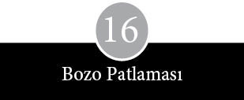
Apple Bilgisayar faaliyet hayatına bir şirket olarak değil, bir işyeri olarak başladı. Bir garajda iş yapan genişçe bir gruptan şirkete benzer bir görünüme geçiş zahmetli ve uzun bir süreç aldı. Apple 1978 yazında disk sürücüsünü lanse edince, siparişler arttı, satılmayıp elde kalan bilgisayarlar tükendi ve büyüme yönündeki baskı arttı. İdare merkezi, Apple’ın Good Earth Restoran’ın arkasındaki ilk ofisinden on beş kat daha büyük bir binaya taşındı. Stevens Creek Bulvarı’ndan bir blok kadar uzakta, orkideler arasında bir binaydı; Apple’ın yeni komşuları bir bitki serası ile bir çift ahşap çerçeveli evdi. Doksanın üzerindeki çalışan, boş binaya dolarken, çoğunluk burasının ömür boyu gitmese bile en azından uzun yıllar rahat rahat idare edeceğini düşünüyordu.
Üç ay içinde ambalaj kutuları geldi ve Apple yine iki bina daha bulmak zorunda kaldı. İkinci taşınma öyle bir aceleye geldi ki, bina içindeki tadilatlara, gerekli izinler alınmadan başlandı ve malzemeler bir hafta sonu arka kapıya gizlice yanaşan kamyonlarla getirildi. Ambalaj malzemeleri, yeni ofisler, değişik çevreler ve tanımadık şirketlerle sevimsiz bir yaşam şekli ortaya çıktı.
İki yıllık bir süreçte bir profesyoneller katmanı oluştu. Yeni gelenler büyük bir şirketin esaslarına ve kaidelerine kendilerini alıştırdıklarından, yeni kurulmuş işletmelere özgü çalkantılar unutulup gitti. Çoğu şirketin hayatı kolaylaştırmak için başvurduğu hizmetlerden pek azı vardı Apple’da. Örneğin, tuvalet lavabosu tıkandığında yardıma çağıracak bir teknik servis yoktu. Telefon bozulursa, beline takılı bir ahizeyle yardıma gelecek bir iletişim sorumlusu yoktu. Uzun iş yolculuklarına çıkmak gerektiğinde, gerekli ayarlamaları yapacak bir iş seyahatleri departmanı yoktu. Hukuk işleri dışarıdan bir avukatlık firmasına verilmişti. Personel sorunları öylesine rastgele hallediliyor, maaş artışları keyfe keder yapılıyordu. Dinlenmeye çok az zaman kalıyordu, bir rahatlama işareti aramaksa tam bir hayaldi. Her şeyin üzerinde süregiden amansız bir baskı vardı.
Sekreter olarak başlayıp sonradan reklam direktörü olan Jean Richardson o günleri şöyle anlatıyor: “İki yıl boyunca korkunç bir tempo vardı. Günde on iki saat ve üstüne hafta sonları da çalışıyorduk. Bir bardak su içmek için çeşmeye gitsem, tempo bozulacak ve programda kayma olacaktı. Durum insanlık dışı bir noktaya varmak üzereydi.” Apple eski ile yeniyi uzlaştırma, yeni gelenlerin yol açtığı şaşkınlık ve öfkeyle baş etme ve örgüte getirdikleri alışkanlıkları ve etkileri sindirme gibi problemlerle yüz yüze kalıyordu.
Apple gibi hızlı büyüyen bir şirketin en önemli işlerinden biri yeni elemanlar almaktır. Uzun vadede bu görev kendi dışındaki her şeyi gölgede bırakır. İşe alınan kişiler birkaç gün ya da hafta sonra kendilerini, yeni elemanları işe alır konumda bulabilirler, bu yüzden ilk başlardaki bir yargı hatası büyüyüp vahim sonuçlar doğurabilir. Küçük bir işletmeyi yöneten görece masum kişilerin, öteki şirketlerin isminden, bir özgeçmişin uzunluğundan, dizi dizi diplomalardan ya da unvanın oturaklılığından korkması mümkündür. Apple’da mevcut bir pozisyon açığı için fazlaca vasıflı kişileri alma yönünde bilinçli bir çaba vardı, peki ama bu durumda siparişler çoğaldıkça artan talepleri kim karşılayacaktı?
Kendinden önceki diğer şirketler gibi Apple da köklü firmaları hedef aldı. Her önemli adam ayartma başarısı sevinç çığlıklarına yol açıyordu. Markkula Intel’den birinin aklını çeldiği zaman neşesini gizleyemiyor, Scott’un ise National Semiconductor’dan birini ayarttığında keyfinden yanına varılmıyordu. Jobs Hewlett-Packard’dan birinin istifasını ilahi adalete yaklaşan bir şey olarak değerlendirmişti. Başka bir şirketin başkanı arayıp Apple’ın adamlarını bu şekilde çalmasını eleştirdiği zaman daha beter keyifleniyorlardı.
Üst konumlara aday olanlarla genelde Markkula, Scott ve Jobs görüşürdü. Bu üçlü arasındaki gözle görülen farklılıklar, Apple’a girmeyi düşünenlerin kafasında alarm çanları çalması için yeter de artardı. Görüşme sırasında Jobs kirli ayaklarını masanın üzerine koymakta ısrar ederken ya da yemekte yapılan görüşmelerde “Geri götür şu çöpü,” diyerek gelen yemeği bayan garsona iade ederken, pek sevimli bir tablo çizmiyordu. Şöhretten etkilenme eğilimi taşıdığı halde özgeçmişlere güvenmez, kendi içgüdülerine bel bağlamayı tercih ederdi. Good Earth Restoran’da ya da yakındaki yemekli yerlerde pek çok ön eleme yapmış, çoğunlukla sezgilerinin doğru bulduğu kişiyi desteklemiş ve dediklerini yapabilecekleri konusunda kişisel tercihine güvenmişti.
1978 yazında, Apple II’nin çıkışından on beş ay sonra, imalat departmanı da firmanın geri kalan kesimiyle tamamen aynı koşullarda bulunuyordu. Apple günde otuz bilgisayar üretiyor, haftada on beş disk sürücü sevk edebiliyordu. Yirmi sekiz kişi her sabah talimatlarını verip görev dağılımını özenle gerçekleştiren bir şefe bağlı çalışıyordu. Yine de otomatik çalışan bir birim değildi. Alım siparişleri, stok kontrolü ve yükleme hızı kâğıt-kalemle tutuluyordu. İmalat sahasının yarısına, Jobs’un uygun bir fiyata bulup satın aldığı, üç yıl yetecek kadar plastik malzeme yığılıydı.
Scott’u National Semiconductor ve Fairchild Semiconductor’dan tanıyan ve baston yutmuş gibi dimdik duran Liverpollu Roy Mollard, doğrudan imalata alınmıştı. D. H. Lawrence’ın romanlarından çıkmış, kendi halinde bir pamuk dokuma fabrikası müdürüne benzeyen Mollard, National Semiconductor’da öğrendiği pek çok numarayı Apple’a getirdi. Güvenlik görevlisi aldı; hırsız alarmı için gizli mikrofonlar yerleştirdi; atölye şefleri seçti; öğle saatlerinde ping pong oyunları düzenledi; kalite güvencesi müdürünü kovdu; bütün dolapları ve şifoniyerleri kaldırtarak stoku her an görebilmelerinde ısrar etti. Amacı, kendi deyimiyle, “dışarıya oluk oluk bilgisayar akıtmak”tı ve en ufak bir baş ağrısına tahammülü yoktu.
İmalat sahasını şirketin diğer bölümlerinden tamamen koparmak için uğraştı ve onun yetki alanına kafasına göre dalan olduğu zaman da ağır sözler etmekten çekinmedi. “Steve Jobs girişlerin sınırlanmasına yanaşmak istemedi. ‘Saçmalık!’ dedim. ‘Ben adamlarımı balık kavanozunda görmek istemiyorum.’” İnatçı kartlardaki sorunları çözmek için işe alınmış olan lise öğrencisi Don Bruener’in yeni düzene ilişkin gözlemi şöyleydi: “İlk başta üretimde bir değişiklik düşünüyorsanız, birileriyle konuşup değiştirebilirdiniz. Ama üretim süreci giderek daha çok bir montaj hattına dönüşünce, artık değişiklik için birçok kanaldan geçecek bir öneri yazıp iletmek zorunlu oldu.”
Mühendislik laboratuvarında da aynı tür bir değişiklik yaşandı. Departmanın gönülsüz başkanı Rod Holt kalite kontrol, servis, belgelendirme, mekanik mühendislik ve sanayi tasarımı işlerini olduğu kadar, donanım mühendislerinin çalışmalarını da yönetmek için çırpınıyordu. Holt şöyle anlatıyor: “Bir yönetim toplantısında kalkıp ‘Arkadaşlar, eğer bu durumu düzeltmezseniz ben istifayı basıyorum ha’ dedim.” Apple, sorunu çözmek için iki adayın peşine düştü. Bunlardan biri olan Tom Whitney, Hewlett-Packard’da büyük hesap makinesi projelerini yönetmişti, ayrıca donanım mühendisi Wendell Sander’in üniversiteden arkadaşıydı ve Jobs’un da eski amirlerindendi. Diğeri ise Apple II’nin can damarı mikroişlemci 6502’yi tasarlayan MOS Technology ekibinin başı Charles H. Peddle III’dü. İkisi de Apple’a katılmayı kabul edince, kararları coşkuyla karşılandı. Ancak, ikisi de karşısında diğerini görünce çok şaşırdı ve Peddle birkaç haftaya kalmadan ayrıldı.
Hamarat bir havası olan uzun boylu Whitney, Hewlett-Packard’da etkisi kanıtlanmış bazı uygulamaları Apple’a taşıdı. Proje liderleri görevlendirdi, tasarım özellikleri üzerine toplantılar düzenledi ve ilgi isteyen görevler kümesini ayrıştırmaya çalıştı. Hewlett-Packard’dan alınma çeşitli kısaltmalardan oluşan bir form grubu Apple’ın sözcük dağarcığına girdi. Örneğin ECOS, mühendislik değişiklik talimatı; ERS, dış referans tanımı; IDS, iç tasarım tanımı anlamına geliyordu. Genç mühendislerden Chuck Mauro iş arkadaşlarının yeni rejimi kahkahalarla karşıladıklarını söylüyor: “‘İşte tamam. Artık gelsin bürokrasi, doldurulacak formlar, her hafta toplantılar’ diye düşündük. Örgütlülüğü kabullenmek çok zor geliyordu.”
Yavaş yavaş güçlenen profesyonellik, üretilen yazılım türlerine de yansıdı. Homebrew Kulübü’nde sarsılmaz bir konumda bulunan, bu amatör topluğun ortak dili olan ve Breakout gibi oyunlarda çok başarılı bir performans gösteren BASIC programlama dili gençler arasında çok tutuluyordu, ancak daha ileri uygulamalar için tam anlamıyla uygun değildi. Eli yüzü düzgün ilk Apple kullanım kılavuzunu yazan Jef Raskin, daha güçlü bir dil olan Pascal’ın üstünlüklerini sıralayıp Jobs’u en azından bir denemede bulunmaya ikna etti. Pascal üzerinde uzun süre çalışan programcı Bill Atkinson bu olayı şöyle anlatıyor:
Mike Scott yazılıma inanmazdı. Ona kalırsa biz güzel donanımlar üretmeliydik, başkaları da yazılım tedarik etmeliydi. Oysa Steve Jobs, “Bizim kullanıcılarımız sadece montaj dili ve BASIC’i istiyorlar, ama yine de beni aksine ikna edebilmeniz için size üç ay süre veriyorum,” dedi.
Jobs kuşkuculuğunu, iş yapmanın daha iyi bir yolunu bulabilme eğilimine feda etti. Pascal, Apple’da kullanılmaya başladıktan sonra şirket, satacak yeni bir dil bulmuş, yeni programları geliştirmek kolaylaşmış ve en önemlisi de onu bir saygınlık mührü olarak gören deneyimli programcılar arasında şirketin itibarı yükselmişti. Raskin ve diğerleri, Apple’ın yazılıma donanımın üvey kardeşi gibi davrandığından ötürü yakınmaya devam ettiler. “Müşterilerimizin çoğu Apple’ı yazılım merceğinden görüyor. Eğer o iyi çalışmazsa, Apple iyi çalışmıyor demektir.” Onun yakınmaları, daha çok sayıda aksakallının şirkete katılması ve piyasanın talepleri, giderek Apple’ı donanıma böylesine körü körüne bağlılıktan uzaklaştırdı.
Büyüyen bir şirketin tarzını ve prosedürlerini oturtma dürtüsü, eleman alımı ya da yazılımla sınırlı değildi elbette. Her tarafta yaygınlaşmaya başlayan görünmez sistemler çilesine de sıçradı. Scott düzene olan hayranlığıyla bilgisayara olan ilgisinin, şirketin pek çok yönü arasında bağlantı kuran bir yönetim-bilgilendirme sisteminde harmanlandığı sonucuna vardı. Apple ilk başta başka bir firmadan bilgisayar kiralamaya başladı; ardından aylık faturalar kabarmaya başlayınca kendi mini-bilgisayarlarını satın aldı. Yönetim Bilgilendirme Sistemi cazip olmadığı gibi, çoğunlukla da görünür değildi. Ama yine de Apple’ın büyümesinin başlıca nedenlerinden biri ve belki de Scott’un şirkete en önemli katkısı oldu. Sistem Scott’un gözbebeğiydi. O –ve de diğer üst düzey yöneticiler– bir terminalin başına çöküp tüm şirketi kuşbakışı göz hapsine alabiliyordu. Bir kod girip bir depoda kaç adet rezistans kaldığını, hangi parçaların azaldığını, yeni siparişlerin nasıl bir seyir izlediğini ve hangi müşterilerin faturalarını ödemediğini görebiliyorlardı.
Tek bir özellik Scott’a tam kontrol olanağı sunuyordu. Sistemdeki diğer kullanıcıları dışarı atabiliyor, terminali başka bir bilgisayara bağlayarak kullanıcının o bilgisayarı nasıl idare ettiğini izleyebiliyor ve mesaj yağmuruna tutabiliyordu. Kaprisine ve kontrol hırsına hitap etmek üzere tasarlanmış gelişkin bir elektronik oyuncaktı bu terminal. Şirkette hassas dosyaların altını üstüne getirebilecek çok sayıda programcının varlığını dikkate alan Scott, kullandığı ana şifreyi sık sık değiştiriyordu. Scott’un en gözde lakabı, tam ismine layık olan kedisi Baal’ın adıydı.
Saçına ak düşmüş müdürlerin ve yüzünde hırs parıltısı bulunan işletme mezunlarının boy göstermesi kaşların çatılmasına yol açtı. Eskiler yeni gelenleri günden güne artan bir şüphecilikle karşılar oldular. Onlara, sonradan görme gözüyle baktılar. İnsanları ikna etmek için hisse senedi opsiyonları ve teşvik paketleri gibi araçlara başvurulduğu yönünde söylentiler sızmaya başlayınca, işin rengi adamakıllı değişti. “Bunlar voliyi vuracakları her yere gidebilecek şirket türedileri,” dediler. Böylece ilk günden beri şirkette çalışanlarla sonradan gelenler arasında bir uçurum açıldı. Bu, ucu amatörlük ile profesyonellik kavramları arasında çatışmaya kadar uzanan bir açıklıktı.
Yeni yüzlerden bazıları, yazılımlarını belgelendirme zahmetine girmeyen ve elinden sadece “spagetti şifreleri” yazmak gelen, “yetenekli arka bahçe hacker’ları” olarak gördükleri genç programcıları hedef aldı. Bir yönetici ilk dönemde yazılmış bir programı iptal ederken zehir zemberek bir eleştiri notu döşendi: “Termitler tarafından delik deşik edilmiş yaşlı bir ağaç kütüğü gibi her yanı böcek* kaynıyor.” Tom Whitney’in vardığı sonuç şöyleydi: “Bir oyun firmasında çalışmak istemiyorum. Daha profesyonel olmamız gerekiyordu. Uyumluluk ve müşteri desteği, bilgisayara en uçuk yeni özellikler eklemekten daha önemli.”
Kimisi, daha çok da Homebrew Kulübü’yle bağlantılı mühendisler ve programcılar, Apple’ın herkese bilgisayar yapma ve parasız yazılım sağlama amacını terk ettiğinden dert yanıyordu. Star Wars’un en hızlı versiyonunu tasarlamanın artık, onur payesi kazanmaya yetmediğini fark ettiler ve bunun üzerine, “Eğer işyerlerine bilgisayar üretmek istesek IBM’e girerdik,” diye söylenmeye başladılar. Chris Espinosa gibi en gençler ise beyaz gömlekli, kravatlı ve jilet gibi ütülü takımlarıyla pazarlamacı tipler “altmışların Cary Grant filmlerindeki figüranlar” olarak kalsalar daha iyi olacak, diye düşünüyordu. Bir başka programcı da, “Burada daha iyi bir kariyer yapacağı inancıyla ayakkabı satıcılığından kişisel bilgisayar piyasasına geçen reklamcıları almaya başladık,” diye şikâyet ediyordu.
Apple II’nin yerini alacak bilgisayar sistemleri üzerinde çalışmalar başlayınca, genç programcılar fikir katkısında bulunmaya çağrılmadıklarını ve şirketin özü olarak gördükleri bu tartışmalara alınmadıklarını fark ettiler. Bu dışlanmışlık hissi onları haklı olarak incitip gücendirdi. Ellerinde bir diploma ya da doktora bulunmadığından artık bir tür altsınıf konumundaydılar ve bu değişikliğin net bir şekilde farkındaydılar. Ekibin en sivridillilerinden olan Randy Wigginton şöyle diyordu:
Diğerleri küçük bilgisayarların yararlı olmadığını düşünüyordu. “Apple II gerçek bir bilgisayar değil ki. Şakacıktan bir şey.” Tavırları şuydu: “Şirket nasıl idare edilir hiçbir bilginiz yok. Biz size işin doğrusunu göstereceğiz.”
Birkaç programcı, makinenin iş mekanizmasıyla ilgili detayların ortaya serilmesine şiddetle karşı çıktığı için, yeni şeflerden birine Yazılım Nazisi adını takmışlardı. Ancak, yakınmalar mühendislerle sınırlı değildi. Daha deneyimli finans müdürleri, avukatlar, halkla ilişkiler uzmanları ve personel idarecileri gelmeye başlayınca, en yumuşak huylu Gary Martin bile “Apple’ı IBM gibi görünür, IBM gibi kokar hale getirmeye çalışan adamlar almaya başladık,” dedi.
Çalışan sayısı çoğaldıkça, Apple’ın, hayli abartılı talepler de içerebilen kişisel ilginçlik ve gariplikleri hoş görmesi gittikçe zorlaştı. (Örneğin, Apple’ın verdiği sözü tutmayıp ofis binalarından birine kocaman bir kilise orgu koymaması bir çalışanı fena halde üzmüştü.) Yönetim toplantılarında bazıları Rod Holt’ü yıkıcı bir etki kaynağı olarak görürken, Steve Wozniak büyüme sürecinin en kayda değer zayiatı olarak kabul edildi. Wozniak disk sürücü kontrol birimini tamamladıktan sonra, daha ucuz bir Apple II’nin tasarımı üzerinde çalıştıysa da işe kendini pek veremedi. Yönetimin çekiştirmesinden, toplantılardan, komitelerden, notlardan ve uzun tartışmalardan hoşlanmıyordu. “Kendime günde ayıracak iki saat bulabildiğim için şanslıydım.”
Zaman zaman, insanların giysilerini eriyen yeşil bir çamurla kaplamak, gazoz şişelerine köpüklü bir madde doldurmak ve yakındaki bir Bob’s Big Boy restoranda menüye, yanına “Rahatlamanız için” diye yazarak Alka Sletzer tabletleri iliştirmek gibi eşek şakaları yapmaktan vazgeçmiyordu. Fareler mühendislik laboratuvarını istila edince, arkadaşlarına kesekâğıdıyla nasıl fare yakalanacağını o gösterdi.
Ne var ki Wozniak’ın isyankâr yanı ortaya çıkmaya başlayınca, bir müdürün kâbusu oldu. Şirketteki konumu ve Apple II’nin beraberinde kazandığı saygınlık ve statü onu kurumun dokunulmazları arasına sokmuştu. Kendine düzgün bir iş bulmak yerine, yüz bin e saymak gibi daha ilginç bir uğraş uydurabiliyordu. (Sayımın üç gün, basımın ise dört ay süreceğini hesaplamıştı.) Haftalar boyunca, ısının manyetik kalıpları bir disketten diğerine aktarabileceği umuduyla ütüyle disket kopyalamayı denedi. Ayrıca hafta sonlarında uzun saatler Reno’daki kumarhanelerde kumara dadandı. Wozniak’ın disk sürücünün hakkından gelişini izlemiş olan programcı Dick Huston’ın çıkardığı sonuç şuydu:
Woz’un karşısında mücadele hedefi kalmamıştı. İnsanlar ona yaptıklarının beş para etmez şeyler olduğunu söylüyordu. Önce sihirbaz statüsünü kazanmış, bir süre sonra da bunun gerçek olduğuna inanmıştı. Aslında içinden gerçeği biliyordu, ama bu rol hoşuna da gidiyordu. Bu yüzden birisi meseleyi kurcaladığında hemen asabileşiyordu.
Randy Wigginton arkadaşına bakıp şöyle düşünüyordu: “Kişisel olarak eşit ölçüde önemsenmedi. O da Mesihliği tercih etti.”
Yeni gelenler de kendine özgü sıkıntı ve dertler getirdi. İlk iki yıl Apple en çok Hewlett-Packard, National Semiconductor ve Intel’den eleman aldı, bu şirketlerin alışkanlık ve tarzlarındaki farklılıklar Cupertino’ya yansıdı. Yarıiletkenci adamların (kadın çok azdı) kaba ve katı tarzları ile bilgisayar, hesap makinesi ve çeşitli aletler yapan Hewlett-Packard’lılar arasında genel bir sürtüşme söz konusuydu. Bunun bir yanıyla, işlerin farklı niteliği gibi basit bir nedeni vardı. Yarıiletken işiyle uğraşanların başlıca dürtüsü, düşük maliyetle yüksek hacimde mal üretmekti. Öte yandan Hewlett-Packard, hesap makineleri tutulana kadar yüksek hacimli bir iş yapmamış, hatta o zaman bile pazar payı kazanmak için fiyat kırmaktan ısrarla kaçınmıştı. National Semiconductor’dan alınanlar, satışa ve fırsatçılığa daha eğilimliydiler; ayrıca lüksü ve konforu hor görmeyi dinselleştirmiş bir şirketten geliyorlardı. Hewlett-Packard tayfası ise planlamaya daha yatkındı, müşteriye özen göstermenin ve şirket değerlerini üstün tutmanın önemine inanırdı.
Kendilerini uygarlık taşıyıcısı gibi görmeye başlayan bazı Hewlett-Packard’lılar, yarıiletken sektöründen gelen magandaların ortalığı kırıp geçiren kaba saba, görgüsüz hoyratlıklarından dehşete düştüler. Yarıiletkencilerin iflah olmaz maçolar olduğuna inanmaya başladılar; ama bu terimi, Markkula’nın şu klasik sorusuyla giriş yaptığı yönetim toplantılarında kullanmıyorlardı: “Tanrı kadınları neden yarattı? Koyuna yemek yapmasını öğretemediği için.” Hewlett-Packard şövalyeleri, Apple direktörlerinin United Way gibi hayır kurumlarına yardım yapılmasına karşı çıkmalarından, şirketin olumlu işlere ilgi göstermemesinden, sekreterlerine az para vermesinden ve en azından ilk iki üç yıl kadınların kolay kolay terfi edemediğinden yakınıyorlardı. Bu durumda National Semiconductor’ın imalat kadrosundan gelen Mollard’ı Gestapo kıyafetleri ve sembolleri kuşanmış, elinde bir kısa bir kamçıyla gösteren karikatürlerin ortalıkta dolaşmasına şaşmamak gerek.
Hewlett-Packard kökenliler ve onlarla aynı kafada olanlar, bazı National müdürlerinin masraf raporlarındaki hilelerine dair öyküler karşısında hayrete düştüler. İtinalı ve titiz müdürlerden biri, her üç aylık dönem sonunda planlanan hedeflere ulaşmak, “büyük bir hamle” yaparak “sayıyı tutturma” gayretiyle, imal edilen ne varsa bir an önce sevk ederek, National müdürlerinin kafalarına göre işler yaptıkları sonucuna varmıştı. Aslında düşünceleri, “Bu mallar şu ya da bu şekilde mutlaka sevk edilecek, gerisini de bayiler hallediversin,” şeklindeydi. Aşağı yukarı şöyle düşünüyorlardı: “Bu dalgametreleri nasılsa sevk edeceğiz, müşterilerin canı cehenneme!” Bir başkası da National’daki iş arkadaşlarının tedarikçilere ve yollarına çıkan herkese nasıl yaklaştığını anlatırken, mahalle kabadayısı gibi davrandıklarını belirtiyor. “Şöyle bir tarzları vardı: ‘Bu adi heriflerin yasal yollardan canına okuyabilsek ne iyi olur. Ama öyle yapamasak bile, yine de mutlaka canlarına okuyacağız.’”
National Semiconductor’dan ve diğer katı şirketlerden gelen adamların çoğu da Hewlett-Packard’dan gelenlere karşı aynı şekilde nefret besliyordu. Onları kılı kırk yaran gösteriş meraklıları olarak görüyorlardı. Profesyonelliklerini sorgulamıyor, fazlaca profesyonel olduklarını düşünüyorlardı. Rod Holt, “Hewlett-Packard’lı tipler… iş yapmaktan çok, kendilerinden ve astlarından istenen şeyleri kâğıda dökmeye zaman harcıyorlar,” demişti. Birisi bir iş arkadaşını tarif ederken, “H.P. şehir kulübü tiplerinden biri” diye bir terim kullanmıştı. Michael Scott’un şikâyeti ise başkaydı: “Hiç elleri sıkı değil, birçok şeyi gözden kaçırıyorlar.”
Asıl farklılık Hewlett-Packard’dan gelenler ile National’dan gelenler arasında ise de diğerleri de alışkanlıklarını yanlarında getirmişlerdi. Intel’in kurucularından birinin eşi olan Ann Bowers, uzunca bir süre Intel’de çalıştıktan sonra Apple’ın personel işleri sorumluluğuna getirilince, Sherry Livingston şöyle bir gözlemde bulunmuştu: “Her şey tıpatıp Intel’deki gibi olacaktı. Bir milim bile sağ sola oynamayacaktı.” Apple Hewlett-Packard, National ve Intel gibi firmalara el atarken belli üstünlükleri kazanmayı hedeflediği için ve gelenler daha sonra, eski çalıştıkları kesimlerden tanıdıklarını buraya çektikleri için, daha çok küçük çevreler halinde çalışılıyordu. Bu, gençlerle yaşlılar arasındaki sürtüşmelerle ve amansız baskılarla birleşince, her şirketin departmanları arasında yaşanan olağan boyutlardaki çatışmayı iyice abartıyordu.
Örneğin mühendisler, imalatçıların, hattın düzgün çalışmaya devam etmesi ve üretim takvimine uyulabilmesi için aksama ve kaymaları gidermekten başka bir şeyle ilgilenmediklerini düşünüyorlardı. “İmalatçılar” diye diretiyordu Holt, “genel olarak Apple’ı söğüşlüyorlar.” Üretim elemanlarının mühendislik dosyalarını yağmalayıp özenle hazırlanmış test prosedürleri ile son montaj tanımlarını yok etmesi, bu duyguların karşılıklı olduğunu gösterdiği gibi, tarafların tavrının durumun iyileşmesine en ufak bir katkıda bulunmadığını da ispat ediyordu. Üretim personeli, mühendislere çok iyi davranıldığı, aslında daha katı takvimler ve merhaleler konarak sıkıştırılmaları gerektiği kanısındaydı. Hayatı çok daha kolaylaştıracak noktalarda, örneğin kasa renginde taviz vermeye yanaşmayan estetikçilere küfrü basıyorlardı.
Ayrıca ilk günlerde imalat birimi ile malzeme ve imalat kalemleri akışını izleyenler arasında da kayda değer gerginlikler yaşanıyordu. Mollard düşmanlığın “otoparkta yumruklaşmaya varan” boyutlarda derinleştiğini söylüyor. Şirketin makara konusu olan yayın departmanı ise mühendisler ve programcılar bir cihazı ya da yazılım parçasını ellerinden bırakmadan kullanım kılavuzunu tamamlayamıyor, öte yandan ürünleri bir an önce piyasaya sürmek isteyen pazarlama biriminin baskısı altında bunalıyordu. Apple daha yeniyken, teknik yazarlar bir süre kendi küçük dünyalarını geliştirebilmişlerdi. Öğlen saatlerinde ofise puf minderler dizerek, karton kutularla duvarlar örerek ve rahatsız etmeye kalkanları savuşturmak için ping pong toplarını silah yaparak fikir üretme seansları düzenliyorlardı.
1980 Eylülü’nde, Apple II’nin çıkışından üç buçuk yıl sonra, satış rakamı 130.000’e ulaştı. 1978’de 7,8 milyon dolar olan mali yıl gelirleri, o yılın 30 Eylül’ünde 117,9 milyon dolara, kâr ise 793.497’den 11,7 milyon dolara çıktı. Ve o sonbahar otuzuncu elemanın şirkete girişinden otuz bir ay, üç yüzüncü çalışanın işe başlamasından ise on iki ay sonra, Apple’ın personel sayısı bine ulaştı. Silikon Vadisi’nde on biri Cupertino’da bulunan on beş binayı kaplamıştı. Cupertino ile San Jose’de de bir miktar üretim yapılmakla birlikte, asıl büyük çaplı imalat Teksas’taki fabrikada yürütülüyordu. ABD’nin birçok yerinde ve Hollanda’da depolar açılmıştı. İrlanda’da Cork’un belediye başkanı olan işsiz bir tesisatçının kurduğu bir tesis vardı, bir tane de Singapur’da açılmak üzereydi. Piramit yapı artık taşınmaz hale geliyordu, bunun üzerine Apple geleneklere uygun bir adım daha atarak, bölümler oluşturmaya başladı.
Bu kararda çok şaşılacak bir yan yoktu. Şirketin hızlı büyümesinin ve boyutlarının getirdiği bir bedeldi bu. Yapısal değişiklik aynı zamanda Michael Scott’un şirketi küçük tutma umutlarının tamamen suya düştüğünün somut ifadesiydi. Apple’ı bin beş yüz ila iki bin çalışanla sınırlama ve sadece en son çıkardığı ürünü imal eden (diğer her şeyi dışarıda yaptıracak) bir işletme yapma hayali yok olmuştu. Bölümler hep bilinen nedenlerle açıldı: İşleri yönetilebilir düzeyde tutma, kâr-zarar alanlarını netleştirme ve yetki devri.
Bölümler açıklanmadan önce Apple’ın müdürleri teftiş turlarına çıkıp ev ödevlerini iyi yapmaya çalıştılar. Hewlett-Packard ve Digital Equipment Corporation’daki kıdemlilere oralarda kararların nasıl alındığını sordular, sonra da Cupertino’ya dönüp savaş planları çizdiler. Önce deneme niteliğinde bir bölüm kuruldu. Görevi disk sürücülerinin sorumluluğuydu. 1980 sonbaharında buna beş yeni bölüm daha eklendi: Apple II ile III’ten sorumlu Kişisel Bilgisayar Sistemleri Bölümü, Lisa serisini tasarlayıp geliştirecek Kişisel Ofis Sistemleri Bölümü, İmalat, Satış ve Servis.
Bölümlerin rahat rahat oluşturulabileceği belirli bir zaman aralığı bulmak elbette ki mümkün değildi. Apple’da da bölümlerin kuruluşu, ilgi bekleyen başka pek çok acil konunun bulunduğu bir zamana denk geldi. Bu karar, aşağı yukarı direktörlerin şirketin ilk halka açılma adımına karar verdikleri tarihe, ayrıca Apple II’nin bir ardılının piyasaya çıktığı günlere denk düştü.
Apple’ın üst düzey yöneticilerinin çoğu, bölümlere ayrılmış bir yapıdan geldikleri halde aralarında böyle bir şirketi yönetmiş olan çok azdı. İşin altından kalkabilecek orta düzey yönetici sayısı oldukça yetersizdi ve hiçbir yerde boş koltukları doldurabilecek eleman yoktu. Bilgisayar sistemleri oturmamış, prosedürler belirlenmemişti. Bölümlerin inşasının bir planlama harikası olmadığı izleniminden kurtulmak pek mümkün görünmüyordu.
Bu büyük değişim ve altüst oluşlar, şirketlerarası kan grubu uyuşmazlığından kaynaklanan çatışmaları arka plana itti. Onun yerini, giderek büyüyen bir ortak deneyim birikimi almaya başladı. Bölümlerle birlikte bambaşka gerilim türleri ortaya çıktı. Fiziki ayrılık teknik izolasyonu getirdi. Yeni bağlaşıklıklar ve yeni ast-üst ilişkiler sistemi meydana geldi. Bölümler oturmaya başladıkça, Apple modaya göre ve beyliklerin her alana taşan çekişmelerine bağlı olarak ayrıştı. Örneğin bölümler kendi teknik yazarlarını kendileri alabiliyor, kendi baskılı devre kartlarını sipariş edebiliyor ve hatta zaman zaman diğer birimlerin hareketlerini kontrol etmeye bile yeltenebiliyorlardı. Bir örnek verecek olursak, Çevresel Birimler Bölümü, çevresel birimlerle ilgili bağlantıların standartlarını kendi belirlemek istiyordu. Ne ki, çok geçmeden bir uzman, bu yaklaşımın şirketin üretim planlamasını yönlendirme çabası düzeyine çıktığını fark etti.
Daha da önemlisi, ayrı bölümlerde çalışanlar aralarındaki farklılıkların bilincine vardılar. Yeni bilgisayar çalışmalarının yürütüldüğü gözde bölümler, esas görevi mevcut makineleri desteklemek olan bölümleri gölgede bıraktı. İşin niteliği farklı duygusal ve entelektüel ilgi alanlarına hitap ediyor, farklı tür insanları çekiyordu. Apple II’nin başarısına kapılarak gelen mühendis ve programcıların çoğu Kişisel Bilgisayar Sistemleri Bölümü’nü (PCS) tercih ediyordu. Daha parlak bir gelecek, saygınlık ve daha yeni teknolojilerle çalışmak isteyenlerse Lisa sistemini geliştiren çekirdek bir kadronun çevresinde kurulmuş olan Kişisel Ofis Sistemleri Bölümü’nün (POS) kapısını çalıyordu.
Bütün nüanslar mikroskobik düzeyde incelemeden geçiriliyordu. Rick Auricchio PCS’de çalışan bir programcıydı.
Lisa Bölümü’nde assolistten geçilmediğini düşünüyorduk. Otuz bin dolarlık bir lazer yazıcı istediler, hemen alındı. İstedikleri en kudretli adamları getirtip işe soktular. Biz yapamadık. Onların çalışma bölmeleri daha büyüktü. Çiçekleri daha boldu. Bütün faturaları ödeyen biz olduğumuz ve para bastığımız halde, donuk, sıkıcı olan, hiçbir şey yapmayan bizdik. İki buçuk metre boylarıyla size tepeden bakıp bir de burun kıvırıyorlar şeklinde bir algı vardı. Yakanızda doğru renk rozet ve eskortunuz olmadan Lisa binasına giremezdiniz. Bu, tecavüz kabul edilirdi. Kimse ömür boyu gerzek muamelesi görmek istemediğinden, PCS’den ayrılıp POS’a geçtiler.
Lisa Bölümü’nde çalışanlar bu övgüyü karşılıksız bırakmıyordu. “Apple III’ü görünce, pek ciddiye almadık. Şöyle bir baktıktan sonra, ‘Bunlar ne yaptığını bilmiyor’ dedik.”
Bölümler oturup sağlamlaştıkça, bir şirket bürokrasisi şekillenmeye başladı. Büyümenin sersemletici sürükleyişinden kaçmanın olanaksız olduğu bir kez daha görüldü. Bırakın birkaç bini, birkaç yüz kişiyi idare etmek dahi, sadece yöneticileri gün boyu istisnai uygulamaları izah etme zorunluluğundan kurtarmak için bile olsa, bazı kodlar gerektiriyordu. Bu kısmen şirket çapındaki mesajlara yansıdı. Arada bir yayımlanan bültenler, çalışanları “etkinlik ve tutumluluk yansıtan” bütçelerden haberdar ediyor ve aylık telefon faturaları 100.000 doları bulduğu zaman uyarı işareti veriyordu. Bunun dışında ayrıca, sosyal güvenlik ödemeleri, kâr paylaşım planları, hisse senedi programları, şirketin resmi tatil günleri, yeni Xerox fotokopi merkezi ve sigorta planları gibi konularda bilgilendiren bültenler de yayımlanıyordu. Altı ayda bir yapılması öngörülen performans değerlendirmeleri “değerlendirme bilgilendirme matrisi”yle tamamlanıyordu.
Hukuk departmanından gönderilen bildiride şirketin adının Apple Computer ya da Apple diye kısaltılarak kullanılmaması isteniyordu: “Şirketin yasal adı Apple Computer Inc.’dir (noktayı unutmayın)… Şirket simgelerini olur olmaz şekilde kullanarak çabalarımızı baltalamayın.” Apple binaları arasında mekik dokuyan personel araçlarının saatlerini bildiren, kırtasiye malzemelerini idareli kullanmayı öğütleyen, mühendisleri şirket kütüphanesine ya da Stanford televizyonla eğitim ağına bağlı televizyon kurslarına katılmaya çağıran ilanlar da yayımlanıyordu. Kurum içi mesajlar ile bölümlere özgü iletiler arasındaki ayrımı vurgulayan uyarılar da geliyordu. “Apple bülteni” deniyordu okuyuculara, “zaman değeri taşıyan bilgiler aktarır… Posta birimi ve telekomünikasyon ekibi tarafından tüm Apple yerleşimlerine dağıtılır.”
Pazarlama Müdürü Phil Royal gibi, Apple’ın en sadık destekçileri bile birkaç yıl geçtikten sonra bir ton değişikliğin varlığını itiraf etmek zorunda kaldılar. “Şirket büyüyünce karakteri de değişti. Masraflar arttı, politikalar üretildi, idareciler getirildi ve katılıklar meydana geldi. Garip fikirler ve hevesler azaldı. Artık, işler genelde beklendiği gibi seyrediyor, organize bir şirkete daha çok benziyordu.” Diğerleri bu kadar olumlu konuşmuyordu. Sonunda Jobs’la arası açılan Yayın Müdürü Jef Raskin:
Şirket ilk başta, iyi bir fikre başarı şansı tanıyan bir konsensusla yönetiliyordu. Sonradan bir yük treninin yanı başında durup zincirle çekme çabasına benzer hale geldi. Kendi bildiği yoldan şaşmıyordu.
Roy Mollard gibi bazıları ise bölümleri, ek yönetim katlarını ve artan uzmanlaşmayı sınırlayıcı buluyordu. “Kontrol alanım da-raltıldı, yaptığım iş ilginçliğini yitirdi.”
Apple’ın kuruluş aşamalarında can alıcı bir rol oynayan Regis McKenna gibi dışarıdan bakan biri içinse, şirkete bir iletişim başkan yardımcısının gelmesi, halkla ilişkiler ve pazarlama stratejisi sorumluluğunun bölünmesi anlamına geliyordu.
Daha önce bire bir görüştüğünüz kişilere ulaşmak için artık başka insanlar üzerinden gitmek zorundaydınız. Her şeyi kontrolünde tutmak isteyen şirket örgütüyle cebelleşmek durumundaydınız.
Yeni gelenler açısından ise kurucularla köklü bağları bulunan McKenna gibilerin varlığı durumu zorlaştırıyordu. Sonunda içedönük halkla ilişkiler kısmını Apple üstlenirken, gerisini McKenna’ya bırakmak suretiyle zar zor bir ateşkes sağlanabildi.
Ancak, ortaya çıkan bürokrasi, herkese eşitlik getiren tek renk-li bir gömlek değildi. Görüntünün ardına gizlenmiş belirgin ve baskın bir ast-üst sistemi vardı. Özenle seçilmiş eşitlik söylemleri pek çok yönüyle bir yanılsamadan ibaretti. Yüzeysel bakıldığında, Apple Amerika’daki genel ayrımcı çizgileri pek fazla yansıtmıyordu. Otoparklarda kişilere ayrılmış özel araç park yerleri yoktu. Genel kabul gören giyim tarzı blucin, gömlek ve spor ayakkabıydı. (İşin doğrusu, bu tarz, bir üniformaya dönüşmüş gibiydi.) Gösterişli döşenmiş odalar yoktu, herkes omuz hizasına kadar yükseklikte aparatlarla ayrılmış bölmelerde çalışıyordu. Ofisler Herman Miller’in açık alan mobilyalarıyla donatılmış bir labirent şeklindeydi. Montaj hattında bile, giriş çıkışlarda kart basmak diye bir şey yoktu. Sekreterlere saha yardımcısı, personel sorumlusuna ise insan kaynakları müdürü denirdi. Kartvizitlerde sıradışı unvanlar yazardı. Ne ki dışarıdan bakanların gördüğü bu alışılmadık görüntü aldatıcıydı. Gerçeği yalnızca içinde yaşayanlar biliyordu. Programcı Dick Huston şu sözleriyle birçok iş arkadaşının duygularına tercüman oluyordu: “Apple’ı hiçbir zaman eşitlikçi bir işyeri olarak görmedim.”
Çalışanların birbirleriyle ilişkileri, Apple liderlerinin kabul edebileceğinden çok daha fazla klasik tarzdaydı; geleneksel işletmeler ve sektörün kalan kesimiyle daha fazla benzerlik gösteriyordu. Apple’da, İrlanda’daki fabrikası dışında sendikalaşma yoktu. Jobs işyerine sendika girerse bunun işçilerine iyi bakamadığı anlamına geleceğini, bunun da kurucu olarak gururunu zedeleyeceğini düşünüyordu; ayrıca bazı eski iş dallarındaki problemlerden sendikaların sorumlu olduğu görüşündeydi. “İşyerlerimiz sendikalaştığı gün istifayı basarım,” diyordu. İş bırakmalar ve grev gözcüleri Apple’ın kelime dağarcığında yer bulamasa bile, yine de fabrika işçilerinin atölyeleri ile yöneticilerin büroları arasında muazzam bir fark vardı.
Bir süre üretimde çalışan Don Bruener şöyle diyor: “Üretimde çalışanlar üretim dışındakilerle temas kurmaktan çekinirdi. Üretim dışındakilerse üretimdekileri pek umursamazdı. İşçi-yönetici ayrımı vardı.” Bir süre sonra yöneticilerin çoğu bir binadaki ofislere yerleştiler, kıdemli memurlar da yürütme kadrosunun üyeleri olarak tanındılar. Apple halka açık hissedar toplantıları yapmaya başladıktan sonra, aynı yöneticiler şirket direktörleriyle birlikte ön sıraları paylaşır oldu. Katılımcılar arasındaki daha genç yüzlerin dışında, Apple’ın ilk yıllık toplantıları ile Chrysler ya da Bank of America’nınkiler arasında hemen hemen hiçbir fark yoktu.
Apple gibi genç bir şirket başka rütbe işaretleri de yaratmıştı. En başta gelen ayrım, servetle ilgiliydi. Apple’da özellikle halka açıldıktan sonraki eşitsizlikler, General Motors ve Exxon gibi olgunlaşmış kuruluşlarda başkanla kapıcı arasındaki ayrımdan bile büyüktü. Şirket üst düzey yöneticilere, hisse senedi alsınlar ya da yüksek gelir vergilerini ödeyebilsinler diye borç veriyordu, ayrıca rütbe sıralamasına göre kâr paylaşımı yapılıyordu.
Patronun kim olduğu konusunda kesinlikle yanılma olanağı yoktu. Scott, Markkula ya da Jobs’un görünmesi astlarında hemen bir gerginliğe neden oluyordu. Rastgele bir laf, bir ipucu, kalkan bir kaş, kuşkulu bir bakış, ses tonundaki hafif bir yükselme hemen büyür, isabetli bir gözlemcinin neşeli bir ifadeyle “yıldırım gibi yönetim” adını taktığı olay patlak verirdi. “İplerin kimin elinde olduğunu herkes bilirdi. Koridorda edilen bir laf ya da geçerken yapılan bir yorum bir anda, on iki kat aşağıda kanun oluverirdi.”
En önemli statü işaretlerinden biri çalışanlara şirkete girdikleri gün verilen numaralardı; hani ilk konuşulduğunda Jobs’un kendi numarasının ne olacağına dair dert edindiği şu rakamlar. Plastik yaka kartlarına basılan bu numaralar, büyükşehir sosyal güvenlik sicil kayıtlarının şirkete özgü bir türü olup çıkmıştı. Apple büyüdükçe numarası en küçük olan çalışanların statüsü yükseldi. Yaka kartları taşıyanların parasal durumunu pek yansıtmasa da yine de hayranlık taşıyan bakışları üzerinde topluyordu. Eski çalışanlardan bazıları ilk elli arkadaşlarının isimlerini ezbere sayabiliyordu, diğerleri ise personel numaralarını arabalarının plakalarına bastırarak saygınlık sağlamaya uğraşıyorlardı. Eskileri diğerlerinden ayıran bir başka olay da Apple’ın üçüncü Noel’inde bütün çalışanlara dağıtılmış olan, üzerinde minik bir elma resmi bulunan Cross dolmakalemlerdi. Sonunda bu kalemler Apple’ın ürün stoklarında yer almaya başladı.
Sosyal hiyerarşi şirket çapındaki mesajlarda da kendini belli ediyordu. Birisi, aylık haber bülteniyle daha kısa bir şirket bildirisi arasındaki farkı üzerine basa basa anlatıyordu:
Yeni terfi edenler alkış ve takdiri hak ederler… “Apple Times” yeni terfi edenleri liste halinde yayımlar… “Apple Bülteni”nde ise bölüm müdürünün altındaki terfilere ve diğer personel değişikliklerine yer verilmez.
Ayrıca teknik yazarların, yani dokümantasyon bölümünün değeri hakkında da bir tartışma sürüyordu. Jobs, Apple’ın kullanım kılavuzlarına her zaman büyük önem vermişti ve şirketin sattığı ürünün önemli bir parçasını da bunların oluşturduğuna inanıyordu. Kimileri, eğer bu doğruysa, teknik yazarların, ücret skalasında en üst düzeydeki mühendislerle aynı yerde olması gerektiğini ileri sürüyordu. Ne ki sonunda Apple “ikame değeri” kavramına teslim olarak, yazarlarına bilgisayar sektörü dışındaki düzeyde ödeme yapmaya başladı. Bir yayın müdürüne, yönelttiği resmi şikâyete rağmen, “yayın alanında sektöre yön veren bir iş yapmak, ‘bir enerji kaynağı ya da yazılım sistemi tasarımı’ yapmakla aynı statüye sahip olmadığı için” teknik kadronun önde gelen üyesi sıfatı verilmedi.
Dolayısıyla, onca sıkıntı ve göze batan ayrım yüzünden, bırakın yeni gelenleri, eskiler için bile kendilerinin nereye ait olduğunu bulmak, üzerine düşen görevleri tespit etmek ve şirketin tam olarak hangi değerleri savunduğunu anlamak başdöndürücü bir zorluk taşıyordu. Bütün bölümler 1980 sonbaharında oluşturulduğundan, bu tür sorular daha da kafa karıştırıcı hale geldi. Zira Apple, 12 haftalık bir süre içinde bir eleman alım hamlesine girişip altı yüz kişilik personel kadrosunu bin iki yüze çıkardı: Bu döneme Bozo Patlaması adını takanlar oldu. Kimi çalışanlar geçici ajanslardan toplanıp altmışar kişilik gruplar halinde uyum seminerlerine alındılar.
Büyüme herkesin huzurunu bozdu. Değişim hızı garip şekillerde, föylü dosyalarda saklanan ve iki üç haftada bir güncellenen şirket telefon rehberi gibi ufak tefek eşyalarda kendini gösterdi. Yöneticiler programlarının kaydığına, kırtasiye işinin katlandığına tanık oldular; gerçi bu ikincisinin nedeni bir bakıma etrafa şemalar, grafikler ve rakam dizileri saçan Apple’ların çoğalmasıydı. İlk yıllardaki odaklanma bir ölçüde kaybolmuş, şirketin kontrolden çıkmakta olduğu yolunda genel bir kanı hâkim olmuştu. Şirket disiplinini asla ağzından düşürmeyen biri olarak Markkula bile, “Arabayı rotasında tutmakta zorlanıyorduk,” diye itirafta bulunmak zorunda kaldı.
Alt katlarda yenilerin akınının etkisinden uzak durmak çok daha zor oluyordu. Yeni yüzlerin boy gösterme hızı bir mühendislik laboratuvarında çalışan Chuck Mauro’yu dehşete düşürmüştü. “Pazartesi sabahı dört yeni elemanın işbaşı yapacağını duyunca başınız dönüyordu. Elden ne gelir; tek yapacağınız, katlanmak. Bütün çalışanların isimlerini anımsama olanağı bile yoktu.”
Apple belli bir devamlılık duygusunu yaşatabilmek, bir topluluk havası aşılamak, farklılıkları gözlerden gizlemek ve istikrar görüntüsü vermek amacıyla olanca gücünü harcadı. Çabasının ağırlıklı bölümü, büyük ölçüde Jobs’tan, bir miktar da Markkula’dan kaynaklanan bir yaklaşımla, tatmin edici çalışma koşulları sağlamaya yönelikti. Bu dürtü kısmen fiili durumdan kaynaklanıyordu; çünkü bölgedeki diğer şirketler çalışanlarına özen göstermekle ünlenmişlerdi, Apple yönetimi ise firmaların zaman zaman yaşadıkları ani işgücü kayıplarıyla ciddi güç kaybına uğradıkları bir sektörde, ufak tefek fedakârlıklardan kaçınarak insanları elde tutamayacağını biliyordu. Bu bilinç kısmen Hewlett-Packard’ın uzun süreden beri sahip bulunduğu eli açık firma ününden, kısmen de kendilerine iyi davranılırsa ve doğru düzgün bir ortam sağlanırsa, insanların daha iyi ve verimli çalışacakları şeklindeki sarsılmaz inançtan kaynaklanıyordu. Ancak, bütün bunları göze almak, karşılıksız bir özveri hamlesinin ötesinde bir şey gerektirecekti. Sonunda, birçok şirket kurucusu gibi, Apple’ın kurucuları da başka yerlerde gördükleri kusurları düzeltmeye karar verdiler.
Çalışma haftasını rahatlatan piknikler, partiler ve hediyeler Apple’ın bütün gelişme evrelerine serpiştirilmiş büyük olaylardı. Şirket ilk 100.000 dolarlık bilgisayar sevkiyatını gerçekleştirdiği gün, on beş kişilik bütün ekip Markkula’nın evinde havuz başı partisi düzenlemişti. İmalat departmanına belli bir çekidüzen verilince, Apple’ın tüm personeli çocukları, eşleri ya da “onların emsaliyle” birlikte açık ev partisine çağrıldı. İleriki dönemlerde de önemli kilometre taşları hep ya bir parti, bir pasta ya da bir şişe şampanyayla kutlandı.
Aylar birbirine eklenip yıllara devrilince, kutlamalar da bayraklar, çadırlar ve caz gruplarıyla düzenlenen dev partilere dö-
nüştü. Star Wars ve İmparatorun Dönüşü gibi filmlerin özel gösterimlerinin yapıldığı turlar düzenlendi. İlk aylarda yapılmış olan bir Halloween partisi (Jobs, İsa kılığında gelmişti) geliştirilerek, her yıl tekrarlanan bir ritüele dönüştürüldü ve bir bakıma şirketin gayriresmi tatil günü olup çıktı. Kutlamaların boyutları o kadar genişledi ki, çalışanlar balo kıyafetleriyle yollara dökülüp yürüyüşe başladıkları zaman, görevliler Cupertino’daki iki bloğu kordon altına almak zorunda kalıyordu.
Eğlencenin ve yaratıcılığın desteklenmesi ciddiye alınıyordu. Çalışanlar bowling turnuvalarına ve aerobik dans kurslarına katılabiliyorlardı. Sağlık kulüplerine üye olabiliyorlardı. Şirketin skuba dalış dersleri ve Kaliforniya’daki Sierra Dağları’nda hafta sonu kayak çalışmaları vardı. Ofislere büyük firmalara göre pahalı mobilyalar konuyor, şirket içi “Trafik Modelleri Oluşturma” gibi konularda tavsiyelerde bulunacak danışmanlar getiriliyor ve programcılara mümkün olan en fazla miktarda çalışma alanı sağlanıyordu. Noellerde, çalışanlara mutlaka bir hediye verilirdi. Bazı yıllar kaleme sarılı bir yüz dolarlık banknot olurdu bu; önemli bir satış hedefine ulaşıldığı zamanlarda da herkese fazladan bir hafta ücretli izin verilirdi.
Ayrıca Apple yeni başlattığı bir programla, asgari ölçüde dahi verimlilik gösteren çalışanlara bir Apple bilgisayar verdi. Aileler için bilgisayar kursları açıldı, Apple ekipmanı alan çalışanların akraba ve yakınlarına ciddi indirimler yapıldı. Daha da önemlisi, programcılar, mühendisler ve teknik yazarlara evlerinde ofisteymiş gibi çalışma olanağı tanındı.
Apple’ın bu çabalarına karşın, Apple’ın kimliğini müşteriler çalışanlardan daha net görebilmiş olmalı. 1980 yılında şirket o kadar büyümüş ve dağınık hale gelmişti ki bir müdürün gün boyu turlayarak çalışanların havasını yakalaması ve nabzını ölçmesi olanaksızdı. Bu yüzden, çoğu çalışan için şirketin eli görünmezdi. Apple belirsizliğe fırsat vermemek ve bir şirket manifestosu ile uyumlu bir ideoloji oluşturmak amacıyla bir komite kurdu. Bu komite kararlı bir içtenlikle dağınık dürtüleri anlamlı bir bütünlüğe kavuşturma gayretine koyuldu. Soyutlukları somuta çevirmeye, bütün çatışan niyet ve beklentileri, –bireysel girişimcilik ve ekip çalışması, otokrasi ile demokrasi gibi– bir şirketi şirket yapan çelişkileri derleyip toplamaya uğraştı. Girişim ne kadar iyi niyetli olsa da banal, içedönük ve yavan bir sonuç ortaya çıktı.
Komitenin genel mesajı şirket bildirilerinde şu satırlarda ifadesini buldu: “Apple şirketten öte bir şeydir… bir tavır, bir süreç, bir bakış açısı ve çalışma tarzıdır.” Ancak, komitenin iradesi ve tanıklığı Hewlett-Packard’ın çalışanlarına sunduğu rehber ilkelerden etkilenmiş bir şirket değerleri bildiriminde somutlandı. Apple’ın kurduğu grup, dokuz emir belirledi ve başına şöyle bir genel görüş koydu: “Apple değerleri şirketin genelinde arzu edilir nitelikteki vasıflar, müşteriler, standartlar ve ilkelerdir. Yaptığımız şeylerin ve onları nasıl yaptığımızın temeli bunlardır. Hepsi birlikte Apple’ı eşsiz bir şirket yapar.”
Özel konulara gelince, komite şunları karar altına aldı:
Müşterilerle/Kullanıcılarla Empati Kurmak (Biz gerçek gereksinimlere yanıt veren ve kalıcı bir değer sağlayan üstün ürünler öneriyoruz. Rakiplerimizle adil bir yarış yürütüyor, müşteri ve satıcılarımıza büyük bir içtenlikle yaklaşıyoruz…)
Başarı/Agresiflik (Önümüze agresif hedefler koyuyor ve bunları başarmak için kendimizi zora koşuyoruz. Ürünlerimizin insanların çalışma ve yaşama tarzını değiştireceği benzersiz bir zamanda yaşadığımızın bilincindeyiz. Bu tam bir serüven ve hepimiz onun içindeyiz.)
Olumlu Sosyal Katkı (Bir şirket yurttaşı olarak içinde faaliyet yürüttüğümüz topluluklarda ekonomik, entelektüel ve sosyal bir varlık olma arzusu taşıyoruz.)
Yenilikçilik/Vizyon (Vizyonumuzun içerdiği riskleri kabul ediyor ve uğrunda çaba harcadığımız kâr marjlarını sağlayacak lider ürünler geliştirmeye çalışıyoruz…)
Bireysel Performans (Biz, sektör standardının üzerinde bir bireysel bağlılık ve performans bekliyoruz… Her çalışan bir değişiklik yapabilir ve yapmalıdır; son tahlilde Apple’ın karakterini ve gücünü belirleyecek olan bireylerdir.)
Takım Ruhu (İş tek bir kişinin yapamayacağı kadar kapsamlı olduğundan, Apple’ın başarısında ekip çalışması esastır… Hepimizi başarıya taşıyacak olan odur. Birbirimizi destekleyecek, zafer ve ödülleri hep birlikte paylaşacağız.)
Kalite/Mükemmellik (Apple ürünlerine müşterilerimizin saygısını ve sadakatini kazanacak bir kalite düzeyi, performans ve değer katıyoruz.)
Kişisel Ödül (Biz Apple’ın başarısına her bireyin katkısını kabul ediyor ve yüksek performanstan kaynaklanan parasal ödülleri paylaşıyoruz. Ayrıca ödüllerin parasal olduğu kadar psikolojik nitelikte de olması gerektiğini kabul ediyor ve her bireyin Apple’da çalışma macera ve heyecanını paylaşabileceği bir atmosfer için gayret gösteriyoruz.)
İyi Yönetim (Yöneticilerin, altındakilere davranışı birincil önemdedir. Çalışanlar üstlerinin niyetlerine ve dürüstlüğüne güvenebilmelidir. Apple değerlerinin yeşerebileceği verimli bir ortam yaratmak yönetimin sorumluluğudur.)
Komite iyi niyet sergileyen beyanatlar yayımlamanın dışında, şirketi somut eylemlere de yönlendirdi. Apple haftalık yemekli toplantılarda çalışanlarla üst düzey yöneticileri ve başkan yardımcılarını bir araya getirdi. Markkula insanlara yanına gelip içlerini dökebileceklerini göstermek için kararlı bir çaba içine girdi. Yöneticilerin kararlarını beğenmeyen birçok kişinin şikâyetlerini herkesten çok o dinledi. Ama diğer kapılar kapalı kaldı. Bazı meslektaşlarının dediğine göre, Jobs ve Scott, Silikon Vadisi’nin sevimsiz jargonuyla, hiç “insan canlısı” değildi.
Kurucuların ruhlarının böylesine baskın olduğu bir şirkette, bir değerler sistemi yerleştirmeye çalışmak olanaksız değilse bile çok zordu. Apple, kurucularının elleri her köşe bucağa uzanamayacak kadar büyük olsa bile, davranışları hakkındaki dedikoduların, performanslarının ve genel saygınlıklarının şirketin havası üzerinde derin bir etki yapabileceği kadar da küçüktü. Ayaklı ilan tahtası gibiydiler. Onların eylem ya da sözleri kültür komitesinin vazettiği yüce standartlara denk düşmezse, tüm çabalar boşa gitmiş olurdu.
Kültürü demokrasiyle karıştırmamak gerekir; her ne kadar şirkette kesin olarak böyle bir şey diyen çıkmadıysa da “Apple Değerleri” şirket totaliterliğine ilişkin birden fazla ipucu içeriyordu. Apple kültürünün en hararetli savunucularından, Stanford İşletme Fakültesi mezunu, yirmili yaşlarının sonundaki Trip Hawkins, şirket kültürünün önemini askeri terimlerle açıklamayı tercih ediyordu:
Eğer güçlü bir kültürünüz varsa, insanları çok sıkı denetlemeniz, çok fazla kural, yasal düzenleme ve prosedür koymanız gerekmez, çünkü herkes aynı şekilde düşünür ve olaylara aynı şekilde tepki verir. Bu size insanları daha etkin görevlendirme olanağı sağlar. Örneğin, sahildeki bir grup deniz piyadesi yaylım ateş altında bile sahile bayrağı dikmeyi başarırlar. Güçlü bir kültüre sahip olmayan şirketler hiçbir şeyi çabuk yapamazlar.
Jobs şirket kültürü teorisini kesinlikle baştan çıkarıcı buluyordu, ama ânında elle tutulur sonuçlar getiren eylemlere daha düşkündü. Apple’ı insanların çalışmaktan hoşlanacakları bir yer haline getirmeyi kesin olarak istiyordu. “Süper Site” adını verdiği, ofislerle evlerin iç içe bulunduğu modern bir şirket kenti planını coşkuyla anlatıp dururdu. Böylelikle Kaliforniya’daki ev fiyatlarına gücü yetmeyen genç mühendisleri kendine çekebileceğini, onlara ayak basabilecekleri bir mekân sunarak bölgeyi tanıma olanağı sağlayacağını umuyordu. Hayal kurduğu anlarda, toplantıların koca ağaçların gölgesinde yapıldığı ve programların yazıldığı bir şirket parkının pastoral resmini çizerdi.
Jobs ilk zamanlar, mühendisler ve programcılar için evde ya da işyerinde esnek çalışma saatleri uygulamasına sıcak bakıyordu. Ancak bundan beklenen sonuç alınmayınca, başında bulunduğu gruba şöyle bir bildiri yayınladı:
Tamamen esnek saatleri kabul ettiğimde, bunun çok profesyonel bir iş kalitesi çıkarmanın en etkin yolu olduğu varsayımından hareket etmiştim. Ancak bu grup son 60 gün zarfında böyle bir kalite sergileyemedi… Yarın sabahtan geçerli olmak üzere, herkes saat 10’da iş başında olacaktır. İstisna kabul edilmez.
Jobs’a bağlı çalışanların bir kısmı ona katlanmakta çok zorlanıyordu. Apple’da 1981 Nisanı’na kadar çalışan Yayın Müdürü Jef Raskin “Olağanüstü kışkırtıcı bir adamdı. Ondan harika bir Fransa kralı olurdu,” diyor. Raskin Michael Scott’a gönderdiği, “Steve Jobs’la birlikte ya da ona bağlı çalışmak” başlıklı dört sayfalık bir yazıda, Jobs’un “başka projeleri yönetmesine izin vermeden önce yönetici eğitimine tabi tutulması gerektiğini” yazıyordu. Raskin’in yakınmaları şöyle devam ediyordu:
Bay Jobs’un yönetim tekniklerine ilişkin dile getirdiği yaklaşımların hepsi yüce ve değerli ise de pratikte kendisi felaket bir yöneticidir. Doğru düşünceleri ağzından düşürmezken, sıra işe geldiğinde bunlara inanmamak ve yaşama geçirmemek büyük talihsizlik.
Raskin’in iletisi şu satırlarla sürüyordu:
Jobs randevularına hep geç kalır… Gerektiği yerde insanın hakkını teslim etmez… Jobs’un gözde adamları vardır, bunlar asla hata yapmazlar, geri kalanlarınsa yaptığı hiçbir şey doğru değildir… Lafı adamın ağzına tıkar, söylenenleri dinlemez… Verdiği sözü tutmaz… İyimser takvim hesapları tutarsa itibarını kendine yontan, buna karşılık zamanında yetişmeyen işlerin suçunu çalışanlara atan yönetici tipinin bir numaralı örneğidir.
Apple kültürü ve şirketin iyi niyet örtüsü farklı yetkinlik düzeylerinin varlığını gizlemeye yetmiyordu. Halka hisse senedi arzından birkaç hafta sonra Apple III’le ilgili sorunlar baş gösterdi. Şirketin performansına ilişkin genel bir rahatsızlık su yüzüne çıktı ve sonuçta Apple’da ilk yaygın işten çıkarmalar başladı.
Şirketin ilk yıllarında Apple’ın kurucuları, bazı çalışanlardan işten ayrılmalarını istemiş olsalar bile, acımasızca toplu işten çıkarmalardan uzak durmayı başarmakla övünürlerdi. Adam çıkarmak çoğu zaman “geçici izin” ya da “olağan izin” gibi görünümler ardına saklansa da bu yaratıcı kılıflar gerçekleri gizleyemiyordu. Kimileri Apple’ın yetersizliği bağışlamaya dünden razı olduğuna inanıyordu. Rod Holt gibi şöyle yakınanlar da vardı: “Yaptığı bütün mühendislik işleri yalan yanlış olan ve her şeyi eline yüzüne bulaştıran bir adam alıp yönetici yaparsınız, olur biter. Bizim burada kimse işten çıkarılmaz.”
Michael Scott; Jobs ve Markkula’nın onayıyla, Apple halka açıldıktan üç ay sonra kırk bir elemanı işten çıkarma kararı alınca, bunun yol açtığı çalkantılar oldukça güçlü hissedildi. İşten çıkarmalar muazzam bir düş kırıklığının ifadesi ve aynı zamanda da maliyet düşürücü bir adımdı. Her şeyden önce, yeterli kadrolarla yetersizler diye bir ayrımın varlığını herkes kabul ediyordu ve Apple’ın, hep gevşek adamları işe aldığını bilmeyen yoktu. Bu olay aynı zamanda şirketin havasında göze çarpan bir değişim ve birkaç ay boyunca gergin bir korku atmosferi yarattı. İletişim Başkan Yardımcısı Fred Hoar, “Aniden” diyor, “Apple değerleri ortadan kalktı yerine acımasızlık hâkim oldu.”
Kısa sürede Kara Çarşamba adıyla anılmaya başlanan o kasvetli günün öncesindeki haftalarda Scott, her departmandan, ihtiyaç duymadıkları kişilerin listesini çıkarmalarını istedi. Seksen isimden oluşan listeyi gözden geçirerek, elde tutulması gereken kişiler var mı diye baktı. Birkaç kişinin bölümü değiştirildi, geri kalanlar Scott’un ofisine gönderildi. Burada ellerine bir aylık maaş verilerek, işten atıldıkları söylendi. İşten çıkarılan gruplardan biri de yeni ürünleri gözden geçiren birimdi. Scott işlerin gecikmesinde bunların ciddi payı olduğu kanısındaydı. Ancak diğerlerinin durumu epey karışıktı. Scott’un odasına yollananların bir kısmı belli bir şefe bağlı olarak çalışmadıklarından, boşlukta kalan elemanlardı; bunlar işe geri alındı. İçlerinden kimilerine daha bir iki hafta önce, başarılı performans değerlendirmeleri nedeniyle ödül verilmişti.
Toplu eleman çıkarıldığı gün, öğleden sonra, Scott binalardan birinin zemin katında bir şirket toplantısı düzenledi. Bira ve krakerler arasında garip kaçan ufak bir konuşma yaptı, bazı soruları yanıtladı, niyeti moral aşılayıcı bir şeyler söylemekti, ama sesinin tonu durumu daha da kötüleştirdi. Toplu işten çıkarmanın etkileri beklenenin üzerinde oldu. Chris Espinosa Jobs’u arayıp böyle şirket yönetilmez, diye bozuk attı. Jobs da ona, “Peki nasıl yönetilir şirket?” diye sordu. Önce işten çıkarıldığı söylenen, ama sonra çalışmaya devam ettiğini fark eden Rick Auricchio olayı şu sözlerle anlatıyor: “Tıpkı Miki Fare’nin kafasını kopararak Disneyland’ın çevresinde dolanan Walt Disney gibiydi.” Phill Roybal’ın yorumu ise şöyle: “Birçokları Apple’da böyle bir olay olmaz, diye düşünürdü. Acı gerçeğin ilk işaretiydi bu. İnsanlar nereye gittiğimizin farkında değildi. Değerleri altüst olmuştu. Bir anda diğer şirketlerden bir farkımız kalmadı.” Bruce Tognazzini Kara Çarşamba’yı boşanma olarak tanımlıyor. “Pek çok şeyin sonunu ifade ediyordu. Masumiyetin sonuydu. Sadakatin sonuydu. İnanılmaz bir korku çağı başlıyordu.”
Kara Çarşamba’yı izleyen haftalarda çeşitli ilan tahtalarında, genelde fazla saldırgan bulunan, yazarı meçhul bir bildiri görüldü:
Apple yönetimini hizaya getirmek amacıyla Profesyonel Bilgisayarcılar Sendikası’nı kuruyoruz. Onların en korktuğu şey çalışanların birlikte hareket etmesidir; kullandıkları taktikler “böl ve yönet” yöntemi ile ekonomik misilleme tehdididir. Eğer bizler birleşirsek bunu devam ettiremezler! Apple bir zamanlar çalışılacak iyi bir yerdi; yönetim bize “Apple Ruhu” vaazları çekiyor; haydi onlara gerçek ruhun nasıl bir şey olduğunu gösterelim ve boğazlarına basalım!
Kara Çarşamba Scott’a da felaket getirdi. Karakterindeki tamamen fiziksel denebilecek bir acımasızlıkla tanınmıştı Scott. Oysa kabadayılık taslayan tavırlarının ardında yüzü kızaracak kadar bir utangaçlığın gizlendiği müşfik, düşünceli ve romantik bir karakter yatıyordu. Noel Baba ile Demir Yumruk arası bir adamdı. Apple’ın eskileri, kendilerine Scott kadar değer veren kimse olmadığını söylerdi. Bir mirasyedi mantığı vardı, parti düzenlemek için bahane arardı. Birkaç kez bir sinema salonu kiralayıp arkadaşları ve Apple çalışanlarını şık kartlarla, George Lucas’ın uzay filmlerinin özel ön gösterimine davet etmişti. Sinemanın girişinde konuklarını elinde beyaz güllerle karşılamıştı. Bir Apple yılbaşı partisinde, Scott denizle ilgili bir tema seçmiş, gecenin havasına uygun düşsün diye siperlikli bir şapkayla tamamlanan beyaz kaptan üniforması giymişti. Başka bir seferinde, fuarda görevli oldukları için dışarıdaki bir sinema gezisini kaçıran iki düzine çalışanı toplantı odasına çağıran bir mesaj gönderdi. Mesajı alan elemanların çoğu kötü bir beklentiyle korka korka odaya girince, Scott’un kendileri için bir sürpriz hazırladığını gördüler. Scott, onları, kapıda kırmızı ceketli garsonların şampanya ve meze ikram ettiği bir sinema salonuna götürecek bir otobüs ayarlamıştı.
Ama karanlık yanı ve korkutucu mizah anlayışı daha belirgindi. Apple’ın yönetim bilgilendirme sisteminin köşetaşı olarak görülen bir Digital Equipment Corporation bilgisayarı zamanında gelmezse, kendisinden çok daha büyük olan bu firmanın başkanına, üzerinde “Sizin teslimat taahhütleriniz hakkındaki düşüncem budur” yazan bir kart iliştirdiği bir cenaze çelengi yollardı. Çalışanlara normal kahvenin yanında kafeinsiz kahve de alınsın mı gibi konuların yöneticiler arasında uzun uzadıya tartışılmasına katlanamazdı. Satış elemanlarına sıradan arabalar yerine daha lüks araçlar verilmesinden rahatsızlık duyar, yöneticilerin birinci sınıfta uçmalarına bozulurdu. Astlarına bir mesaj verip kimin patron olduğunu hatırlatmak istediğinde, acilen imzası gereken çekleri imzalamayı kasten geciktirirdi. Çevre düzeni onun öncelikleri arasında değildi; her ofisin büyüklük ölçüleriyle ilgili tartışmalar da keza. Kendi yönetim markasını dayatmak isterdi, hatta bütün başkan yardımcılarına unvanlarını bırakmalarını söylerdi. Yazılı mesajları sert ve kesin bir üslup taşırdı. Bir gün, artık bilgisayar çağının başladığını kanıtlama isteğiyle, şirket içinde daktilo kullanmayı yasaklayan kısa bir mesaj yayınladı. Başlığı büyük harfle yazılmıştı: BUNU HERKES İYİ OKUSUN. Başka bir mesajı da talimat doluydu: “Koridorlarda konuşmak yok. Ayaküstü laflamak yok.”
Kara Çarşamba öncesinde Scott her zamankinden yoğun bir tempoda çalışıyordu. Bu arada, doktorlarında gözünü kaybedebileceği korkusuna yol açan ciddi bir göz enfeksiyonuyla uğraşıyordu. Sekreteri Sherry Livingston postalarını kendisine yüksek sesle okumak zorunda kalıyordu. Apple’ın mühendislik biriminin yürütmeden sorumlu başkan yardımcısını istifa ettirdikten sonra, birimin sorumluluğunu kendi üzerine almakla kalmayıp şirketin geri kalanını da göz hapsinde tutmaya çabalıyordu. Ulu orta korkunç tehditler savuruyor, “Burada eğlence bol galiba,” gibi laflar ediyordu; “Hoşlanmadığım şeylere katlanmayacağım bundan böyle,” demeye başlamıştı. Şirkette dolaşıp bölmelerin üzerinden kafasını sarkıtarak “Canınız çıkana kadar çalışıyor musunuz bakayım?” diye soruyordu. Yöneticilere yıl sonuna kadar yeni eleman almama talimatı vermişti; yanına yaklaşmaya kalkan herkesi ürkütüp kaçırtmayı başarıyordu. Jean Richardson, hakkında şöyle diyor: “Soğuk nevalenin tekiydi. Salonda kimselerle tek laf konuşmadan, deli danalar gibi koşturup dururdu.” Bir başka çalışan ise “Her an koridordan çıkıp geleceğini ve o an bir kavga patlak vereceğini hissediyorduk,” diyor.
Scott’un bu davranışlarından dehşete kapılan bazı yöneticiler, aklına esip şirketin ikinci en önemli işletme müdürünü kovmasının ve Kara Çarşamba tasfiyelerinin “daha birinci raund” olduğu yolundaki zamansız sözlerinin üzerine, aleyhinde bir fısıltı kampanyası başlattılar. İnsan Kaynakları Bölümü’nün başı Ann Bowers, Scott’a olan tüm nefretini kustu. Onun toplantılarda aşağıladığı kişilere, “yaylım ateşi karşısında gösterdikleri dayanıklılık ve cesaretten ötürü” sözde idari kadro tarafından verilmiş mizahi ödüller dağıttı. Hatta Scott’un hayranlar topluluğundan biri onun “bir gorilin kaba, kontrolsüz gücüne benzer şekilde” güç gösterisi yapmaktan hoşlandığını söyledi. Markkula, Bowers ve John Couch’un şikâyet dilekçelerini dikkatle inceledi; bu yöneticilerin ikisi de iş arkadaşları arasında şirket politikalarının yılmaz savunucuları olarak tanınıyordu. Scott’la çalışmanın zorluğuna ilişkin şikâyetini doğrudan Markkula’ya ileten bir başkası şöyle bir yanıt almıştı: “Dert etme. Seni burada harika bir kariyer bekliyor. O işi ben hallederim.”
Scott’un yorgunluğunun ulaştığı bu uç nokta, Markkula’yı adamakıllı zora sokmuştu. Markkula Apple’a adamaya söz verdiği dört yılın sonlarına yaklaştığı şu günlerde, tam da kış uykusuna doğru yavaş yavaş ilerliyordu. Geçen yıl kadro konumunda çalışırken daha uzun tatil yapmış, ailesiyle daha fazla zaman geçirmişti. Bol bol kayak yapmış, yeni uçağıyla Sun Valley gibi yerlere uçmanın keyfini çıkarmış ve artakalan zamanlarında da tatil evleri tasarımları karalamıştı. Böylece kendini lüks bir emekli yaşamına hazırlamaktaydı. Hatta Apple onun yerine uygun birini bulsun diye, bir beyin avcısı firmasına 60.000 dolar ödemişti. 1980 başlarından itibaren Apple’da işler ters gitmeye başlayınca, Scott, Markkula’dan şirketin yarısının yönetimini kendi üzerine almasını istedi, Markkula kabul etmedi. Ama Scott’un bu son tavırları karşısında Markkula’nın başka seçeneği kalmadı. Jobs şirketi yönetecek kadar yaşlı ya da deneyimli değildi, ayrıca işleri bu kadar kısa sürede kavrayarak çekip çevirecek dışarıdan başka bir aday da yoktu. Kaldı ki Apple’ı Markkula kadar iyi tanıyan başka birini bulmak mümkün değildi. Böylece Markkula Apple’ı yönetecek uygun biri bulunana kadar, ara dönemde başkanlık yapmayı gönülsüzce kabul etti.
Scott fısıltı meclisinin kokusunu alamadı. Gelişmeler karşısında uzun bir hafta sonu tatili için gittiği Hawaii’de sinüzit derdinden kurtuldu. Ama bu arada Cupertino’da olan bitenden, Markkula’nın Apple yönetim ekibini toplantıya çağırdığından haberi yoktu. Bu tuhaf bir toplantıydı; Scott’un şaşmaz yandaşları başta olmak üzere, çağrılmayan birkaç üst düzey yönetici vardı. Markkula, Scott’un en amansız karşıtlarından başlayıp destekçilerine doğru giden bir açık oylama yaptı. Scott Hawaii’den döndüğünde telefonunun telesekreterinde, Markkula’nın konuşmak için yanına uğramak istediğini belirten bir mesaj buldu. Markkula ile olan konuşmaları, “Scotty, yürütme kurulu oylama yaparak istifanı talep etmeye karar verdi,” dedikten sonra birden bitiverdi. Markkula kapıya doğru yürürken, ertesi sabah Scott’un yazılı istifasını masasında görmek istediğini söyledi.
Kimse Scott’un katkılarını yadsıyamazdı. Kırk sekiz ay içinde, uğraşması zor, dik başlı şahıslarla dolu bir garaj operasyonunu, yıllık satış hacmi 300 milyon doları bulan, çeşitli bölümlerden oluşan, halka açık, çokuluslu bir şirkete dönüştürmüştü. Apple’dakiler Scott’un haksızlığa uğradığını ve uğursuz bir komploya kurban gittiğini düşünüyorlardı. Donanım Mühendisi Sander, “İleriyi görebildiği kadar geçmişten ders çıkarmasını bilemedi,” diyordu. Risk sermayesi yatırımcısı Don Valentine, Scott’un yöneticiliğini, yatırım yaptığı yetmişin üzerindeki şirket içinde en başarılısı olarak görüyordu.
Markkula kendi payına, Scott’un uzaklaştırılmasını “bir yönetim tarzı meselesi olarak” değerlendiriyordu. “Scotty’nin yönetim tarzı son derece diktatörceydi ve şirketin gelişmesinin ilk döneminde çok işe yaradı, ama şirketin büyümesiyle bu tarzını değiştireceğini umuyordum.” Scott ayrılırken, tüm şirkete hükmeden sert kararlar alma tutkusuna eş olan disiplin damarını da götürmüş oldu.
Scott’un kazandırdıklarının boyutlarını anlamanın yakınından bile geçmeyi başaramayan Apple’daki fısıltı meclisini bir sevinç dalgası kapladı. Yeni bir kadro değişikliğinden söz eden aptalca bir yazı, değişimin boyutlarını dışarıdan bakanların gözünden gizledi. Scott’un şirket başkanlığı görevlerini Markkula üstlenirken, Markkula’nın yönetim kurulu başkanlığı sorumluluğu da Jobs’a kaldı. Scott’a sadece boşa çıkan yönetim kurulu başkan yardımcılığı unvanı kalmıştı. Yazıda “Aldığımız karar örgütün tepesindekilerin sorumluluklarını rotasyona bağlamak, herkesin yetenek ve enerjisinden yepyeni şekillerde yararlanmaktır,” deniyordu. Bildirinin dili öylesine ılımlı ve gerçekleşen değişim öylesine ölçülüydü ki risk sermayedarı ve direktör Arthur Rock, meselenin ele alınış biçiminden ötürü, iletişim başkan yardımcısını övdü. Jobs ve diğer bazıları, istifası istendikten sonra Scott’a Apple’ın daha büyük bir yönetim-bilgilendirme sistemine geçişini organize edip edemeyeceğini sorarak durumu telafi etmeye çalıştılar. Görünüşteki bu değişiklikler birkaç hafta devam etti. Hatta Scott yeni bir bilgisayar sistemi önerileriyle ilgili bir sunum bile hazırladı, ama sonunda pes ederek, “ikiyüzlülük, evet efendimcilik, gözü kara planlar, ‘birbirini kollama’ tavrı ve imparatorluk kurma sevdalıları”na dayanamadığını vurgulayan öfke dolu bir mektup yazdı.
Ancak, ayrılık Scott’a yıkım getirdi. En kasvetli anlarında, yetkilerinin elinden alınmasının hata olduğunu iddia etmeyi ve Apple’a dönüp ne kadar başkan yardımcısı varsa hepsini kovmayı hayal etti. Rod Holt, Scott’un Apple’a ne kadar bağlı olduğunu iyi biliyordu. “Scotty’nin tüm yaşamı Apple Computer’la bütünleşmişti. Gidebileceği başka bir yer yoktu. Aralıksız çalışırdı Scotty. Çalışmaktan ne duygusal strese, ne içki âlemine ne de ertesi sabah baş ağrısına fırsat kalıyordu.”
Şirketin beşinci büyük ortağı olmasına karşın Apple’a arabayla birkaç dakikalık mesafedeki çiftlik evinde, bütün perdeleri çekik olarak yaşamaya devam etti. Bir süre telefonunu açmadı. Arayanlara iyi olduğunu, ama gelen bazı sempati notlarına yanıt vermek istemediğini belirtti. Aylar sonra Apple’a döndüğünde, Scott’un suratı asıktı, devamlı hüzünlü ve durgun bir hali vardı. Keyfinin yerine geldiği ender anlar, Apple II’nin bütün parça numaralarını hatırladığını gösterme fırsatı bulduğu anlardı. Ama çoğunlukla geç saatlere kadar yataktan çıkmıyor, kedilerini besliyor ve oturma odasındaki koca bir divana yayılıp tavana monte edilmiş ekranda televizyon seyrediyordu. Org çalıyor, Wagner dinliyor, borsa simsarıyla telefon görüşmeleri yapıyor ve model plastik roketleri uçurmak için yakındaki bir çöplüğe gidiyordu. “Apple benim bebeğimdi,” sözü ağzından hiç düşmüyordu.
Scott’u yakından tanıyanlarda biraz mahcubiyet, biraz üzüntü, biraz utanç, biraz da öfke vardı. Markkula birkaç kişiyi gizlice kenara çekip Scott’u görevden almanın hayatının en zor kararı olduğunu, ama Apple’ın onun kişisel sorunlarını kaldırmasının mümkün olmadığını itiraf etti.
Scott’un kendini ne kadar aşağılanmış hissettiğini belki de en iyi anlayan kişi Jobs’tu. Aylarca için için suçluluk duygusuyla karışık kasvetli bir korku beslemekten kurtulamadı: “Bir gün ‘Scotty intihar etmiş’ diyen bir telefon gelecek diye ödüm kopardı hep.”
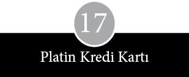
Zenginlik insanın yaşamını karmaşık hale sokar. Apple’da zenginliğe tahmin edilenden çok daha çabuk, daha güçlü bir şekilde ve daha büyük miktarlarda ulaşıldı. Rakamlar öylesine huzursuz edici ve olağandışıydı ki El Camino Real’in hamburgeri, gazozu, telsiz radyosu ve diğer günlük tüketim maddeleriyle ölçülmeye kalkıldığında hiçbir anlam ifade etmiyordu. En gözle görülür kıyaslama Amerika’nın büyük servetleriyle yapılabilirdi belki, ama bu terim de iyice eskimişti artık. 20. yüzyılın son çeyreğinde, Apple’ın kurucuları ve birkaç üst düzey yöneticisi, Silikon Vadisi’nin nereye çeksen uzayan diliyle, “zilyoner” oldular –dil kadar, enflasyon için de geçerli bir yorumdu bu– ve portföyleri göze batacak ölçüde çeşitlendi. Çoğu kişinin, en azından kâğıt üzerinde yüz yılda ulaşabildiği, mantık dışı bir servet zırhını kuşanmış genç kodamanlar olup çıktılar. Hisse senedi piyasasının Apple’ın yüzüne güldüğü anlarda, Galler Prensi’nin görünen varlıklarının, yanında cüce gibi kaldığı, Katolik Kilisesi’nin zenginliklerini gölgeleyen ve Amerikan endüstrisinin pek çok patronunu yanında dilenci gibi bırakan gerçek bir servetti onlarınki.
1977 başlarında Jobs, Wozniak ve Markkula, garajdaki parçalara ve Apple II’nin tasarımına bir değer biçmeye kalktıklarında, ortaklığın değerini 5.309 dolar olarak hesaplamışlardı. Bir yıl sonra, üç yatırımcı firmanın bir miktar hisse aldığı günlerde, Apple’ın değeri 3 milyon dolara çıkmıştı. 1980’in yeni yıl arifesinde, ilk halka arz işleminden üç hafta kadar sonra hisse senedi piyasası Apple’ın değerini 1.788 milyon dolar olarak tespit etti. Bu rakam Chase Manhattan Bank, Ford Motor Company ve Merrill Lynch Pierce Fenner and Smith’ten daha yüksekti; Lockheed’in en az dört katıydı ve United Airlines, American Airlines ve Pan American World Airways’in toplam piyasa değerinin yaklaşık iki katıydı.
Apple’ın ilk on sekiz ayında, gerek ortamdan gerekse tasarımından ötürü, parasal durumu hiç gündeme gelmedi. Meraklı gözlerin, halka açık bir şirketin göz önündeki para hareketlerine kıyasla, yoğun iş baskısı altındaki küçük bir özel firmanın parasal manevralarını izleyebilme olanağı çok daha zayıftı. Kaliforniya yasaları uyarınca, tüm özel hisse senedi işlemleri Apple’ın onay mührünü gerektiriyordu; bir ölçüde gözetim sağlamaya yönelik bir yaptırımdı bu. İnsanlar işe girerken, Scott ve Markkula’yla hisse senedi satın alma olasılığını da konuşuyordu, ancak çoğunlukla ayrıntılar gizli tutuluyordu. Markkula yatırım yapma olasılığını soruşturan yabancılara, şirket hisselerinin çalışanlara ayrılmış olduğunu kibarca izah ederek, hisseleri özel olarak sıkı bir kontrol altında tutuyordu.
Ancak, el altından satış söylentileri, daha fazla pay alabilmek için bankadan ikinci bir ev kredisi daha alan bir mühendis hakkında yayılan fısıltılar, hisse bölme dedikoduları, sermaye kazançları üzerinden kesilen vergi oranlarında değişiklik beklentileri ve tröstün avantajlarına ilişkin tartışmalar, Apple’daki günlük sohbetlerin arasına girerek, zamanla gündelik yaşamın demirbaşı haline geldi. Sonunda şirketten ayrılan programcı Rick Auricchio şöyle diyordu: “Apple’da bilgisayar hakkında öğrendiğim kadar şeyi, hisse senetleri ve vergiler hakkında da öğrendim.” Para hep, geniş bir duygu yelpazesini tetikleyen, rahatsız edici bir gündem konusuydu.
Rod Holt’e göre, hisse senedi dağıtımı ya da hisse alma opsiyonu verilmesi, “makul ölçülerde tamamen haklı bir düşmanlık” oluşmasına yol açan, içinden çıkılmaz bir açmaz yarattı. İlk iki yıl el altından dağıtılan ve hisse senedi opsiyonu içeren gri zarflara, içindekileri son derece ciddiye almak gerektiği şeklinde bir uyarı eklenirdi. İlk günlerde, bu zarfları alanlardan bazıları ücret zammı yerine yüz adetlik iki opsiyon verildiği için bozulurlardı. Ancak, aritmetiğin katı gerçeği her türlü düş kırıklığını ortadan kaldırmaya yetti. Üç önemli hisse bölünmesinden sonra, 1979 Nisanı’ndan önce dağıtılan her pay, Apple’ın halka açıldığı gün piyasaya sürülen 32 paya eşitti; yani “kurucu hissesi” diye geçen hisselerin 1.420 adedine sahip olan bir kişi, eğer bunları 12 Aralık 1980 sabahına kadar elinde tutmuşsa, kâğıt üzerinde 1 milyon dolara sahip demekti.
Hisse senedi satın alma opsiyonu, belli bir ağırlığa sahip yeni kadrolara, geçmişteki başarılarına ve Apple’a sunabilecekleri katkının derecesine göre önerilirdi. Kimi kurnaz adaylar iş görüşmelerini pazar yerine çeviriyor ve kopardıkları opsiyon vaadi, istedikleri düzeye ulaştığı zaman el sıkışmayı kabul ediyordu. Şirketler âleminde daha saf kalanlar ise bir maaş ve masayla yetiniyordu. Apple için opsiyon havuzu etkili bir eleman çekme aracı, zaman zaman dağıtılan opsiyonlar ise muazzam bir teşvik unsuru oluyordu. Scott, Apple’ın kayda değer bir teklif olduğuna ikna olmayanların önüne zenginlik olasılığını sürmekten büyük bir keyif alırdı. İkircimde kalanlara, “Biz insanların yaşam tarzlarında devasa bir değişiklik gerçekleştiriyoruz,” derken kıkırdamasını zor bastırırdı.
Bazı düzenlemelerle ilgili bilgiler ortalığa sızınca, hoşnutsuzluk yükseldi. Bunda yazgıyla talihin dengesizliğinin kesin bir payı olmuştur. Bir iki gün arayla işe girdikleri halde, hisse bölünmesi sırasında farklı gruplarda yer alanların kısmetine ciddi oranda farklı rakamlar düştü. Ne var ki ince hesaplamalardan kaynaklanan farklılıklar da yok değildi. Hisse senedi satın alma opsiyonu Apple’ın maaşlı çalışanlarına verilmiş, ama saatli çalışanlara verilmemişti. Bu durum haliyle sürtüşmeye yol açtı. Örneğin laboratuvarlardaki mühendisler hisse senedi alırken, onların hemen yanı başında çalışan teknisyenler almamıştı. Bunların bir kısmı haksızlığa uğradıklarına inanıyordu, hatta bu işten kârlı çıkanlardan Bruce Tognazzini bile eşitsizliğin farkındaydı. “İnsanlara verilen hisse senedi miktarının iş yetileriyle hiçbir ilgisi yoktu. Miktarı belirleyen, hisse senedi koparma yetileriydi.” Rod Holt de zaman zaman öfkesini zor bela zapt edebiliyordu. “Bir buçuk milyon değerindeki bir beceriksizin, binada bir ofisi bile hak edememesi kaderin garip bir tecellisi değil de nedir?”
Daniel Kottke teknisyen olarak kaldı ve şirket halka açılmadan önce kendisine hiç pay verilmedi. Holt, Kottke’ye kendi payından bir miktar vererek birtakım değişiklikler yapmayı teklif etti ve Jobs’a, “Hepimiz bir parça versek nasıl olur, biraz hisse sen versen, bir o kadar da ben versem?” diye öneride bulundu. Jobs bu teklife, “Harika! Benden bir sıfır çalışır,” diye karşılık verdi. Apple’a kendini her zaman Kottke’den daha çok bağlı hisseden Jobs arada kalmıştı. Bir yanı dostluğun yok olmasına yas tutarken, diğer yanı Kottke’nin görünür bir değerbilirlikten yoksun olmasına öfkeliydi. “Daniel genelde kendi katkısını abartmaya meyillidir. Yaptığı işlerin çoğunu kime versek yapardı, üstelik kendi de burada bir sürü şey öğrendi.”
Apple’ın işe aldığı ilk eleman Bill Fernandez de düş kırıklığına uğrayanlardandı; 1978’de istifa ettiyse de sonradan yine Apple’a girdi. “Baktım ki işin bütün hamallığı benim üzerimde, böyle giderse ömür boyu teknisyen olarak kalacağım. Hiç öyle hisse senedi verecekleri de yok. Şirketin bana sadakat göstermediğine hükmettim.” Apple I’leri imal ederken Jobs ile Wozniak’a bir miktar borç para veren Elmer Baum’a şirketin kendisine hisse satışı yapamayacağı bildirildi. O sırada Berkeley’de Kaliforniya Üniversitesi’nde öğrencilik yapan Chris Espinosa’nın da eli böğründe kaldı.
Bizler bir parçasını kavrayıp yakalayamayacak kadar kibar olduğumuzdan, Amerikan rüyasını elimizden kaçırdık. Kottke fazla kibardı. Fernandez fazlaca Budistti, ben de fazlasıyla gençtim. Don Bruener iki kez kandırıldı. Hem imalatta çalışıyor hem de üniversiteye gidiyordu. Hepimiz belli bir ölçüde fark ettik ki yeterince ağır değildik. Kendimizi milyoner yapacak kadar iğrenç değildik.
Hisse dağıtımının boyutlarını dedikodular ve söylentiler çarpıtıyordu. Bazıları ellerindekilerle övünürken, bazıları utanıyor ve opsiyonlarını kimseye belli etmeden kullanmaya çalışıyordu. Yeni alınan orta kademe yöneticiler astlarının kendilerinden daha zengin olduğunu görünce, yayılan kıskançlık dalgası gizlenemez oldu. Aynı şekilde, saat ücretiyle çalışan diğer sekreterler, elinde pay bulunduğunu öğrenince Sherry Livingstone’u bir türlü rahat bırakmadılar. Hisse senedi opsiyonuyla ilgili evrakı getiren memur söz konusu rakamı görünce öyle bir dehşete kapıldı ki çareyi şirketten ayrılmakta buldu.
Her ne kadar Markkula özel firmalarda spekülasyon yapmayı iş edinmiş kişileri uzak tuttuysa da sağlam bağlantılara sahip dışarıdan kişilerin hisse sahibi olması, çalışkan işçilere kıyasla çok daha kolaydı. Doğru adamları tanırsanız, uygun kişilerle yemeğe çıkarsanız, uygun kişilere telefon açarsanız mutlaka karşılığını alıyordunuz. Zaman zaman özel olarak düzenlenen hisse satışları, kişisel temasların önemini ve topluluğun klostrofobik mantığını yansıtıyordu. Hisseleri denetimleri altında tutan risk sermayesi şirketleri çoğunlukla birlikte çalışırlar, birbirlerini cazip işlemler konusunda haberdar etmeyi alışkanlık edinmişlerdir ve birbirlerinin eski kıyaklarını kolay kolay karşılıksız bırakmazlar.
Şirket halka açılmadan önce hisse senedi edinmiş birkaç kişinin kendilerine uygun dostları vardı. Örneğin Wozniak, 1979 başında, Arthur Rock’un ellili yıllardan beri Harvard İşletme Fakültesi’nden arkadaşı, Mısır doğumlu finansçı Fayez Sarofim’e bir miktar hisse satmıştı. Sarofim Houston’daki, modern sanat anlayışıyla döşenmiş, dikkat çekmeyen bir ofis katında, 1 milyar doların üzerinde bir portföy sahibi olmayı başarmıştı. Wozniak ayrıca Rock’un risk sermayesi şirketinin ortağı Richard Kramlich ile Apple’ın insan kaynakları departmanının başına geçen Intel’in başkan yardımcısının eşi Ann Bowers’a da hisse satmıştı.
1979 yazında Apple, risk sermayesi topluluğunda “ara finansman” denen şekilde 7.273.801 dolar toplayınca, bağlantılar karşılığını vermiş oldu. Bir hisseyi 10,50 dolardan alan on altı yatırımcı arasında, New Yorklu LF Rothschild, Unterberg, Towbin ve Güney Kaliforniya’dan Brentwood Capital Corporation gibi ülkenin en ünlü risk sermayesi kuruluşları yer alıyordu. Listede bir isim öne çıkıyordu: Apple’dan alacağı hisse oranının yüzde 5’i geçmemesine karar verdiği halde, 100.000 hisse satın almış olan Xerox Corporation. Bu anlaşma Apple’a Xerox’un araştırma laboratuvarlarına erişme olanağı vermişti. Scott şöyle diyordu: “Geliştirdiğimiz ürünlere göz atamasınlar diye çok dikkatli hareket ediyorduk.” İleriki günlerde Xerox temsilcileri hassas konuların görüşüldüğü toplantılara çağrılmadı. En büyük alıcı 128.600 pay toplamış olan Arthur Rock’un arkadaşı Fayez Sarofim’di. Markkula ile Jobs’un sattığı hisselerin değeri 1 milyon doların biraz üzerindeydi.
İzleyen on iki ayda yeni ihraç piyasasındaki açıkları dikkatle takip eden Arthur Rock, görüş ve tavsiyeleriyle Apple’ın halka hisse arzının zorluklarına ne zaman göğüs gereceğini belirleyen kişi oldu.
Apple’ın er geç halka açılacağını çoğu kişi kabul ediyordu, ama özel bir şirket olmanın keyfini ve sükûneti terk etme kararı beklenmedik şekilde bir anda alındı. Apple’ın üst düzey yöneticileri arasında, halka açık bir şirketin başında olmaktan çekinenler vardı. Bir kişiye ait muazzam bir inşaat şirketi olan San Francisco Bechtel’i taklit etme fikri, bir süre Jobs’un kafasında yer etmişti. Rakiplerin işine yarayabilecek bilgileri ifşa etmeme, hissedarların baskısını yaşamadan çokuluslu bir şirket yönetme ve yıllık toplantılarda boy göstermeyi bir vakit geçirme yolu olarak gören atsineklerinin alaylı bakışlarından kurtulma fikrine hayrandı. Diğer iş arkadaşları gibi Jobs da durum tespit prosedürlerinin, halka arz izahnamesinin hazırlanma sürecinin içerdiği hukuksal işlerin ve şirketin üstün yanlarını belli başlı Amerikan ve Avrupa kentlerindeki bankacı ve yatırımcılara anlatmak için yürütülen ömür tüketici turların nasıl bir sıkıntı yaratacağını biliyordu.
Michael Scott, Apple’ın dışarıdan yardım almadan büyük bir işletme haline gelmesini istiyor ve en nefret ettiği kimselere, yani manevra özgürlüğünü kısıtlayan hukukçulara, onu belgelere boğan bürokratlara ve düşüncelerini çorbaya çevirmekten başka bir işe yaramayan gazetecilere küfrü basıyordu.
Apple’ın halka açılması için kişisel tercihlerin dışında zorunlu nedenler de vardı. 1973-1974 durgunluğunu izleyen yıllarda ağırdan giden yeni hisse ihraç piyasası, 1980’den itibaren canlanmaya başladı. Maksimum uzun vadeli sermaye kazançları vergi oranının, 1978’de yüzde 49’dan yüzde 28’e indirilmesi, risk sermayesi fonlarına akan para miktarını muazzam ölçüde artırmıştı. Gerçi Apple vergi indiriminden önce de faaldi, ancak karanlıktan yeni çıkmaya başlayan diğer şirketler en azından varlıklarının bir bölümünü risk sermayesi fonlarına borçluydu. Araştırmalar Apple’daki hissedar sayısının –hisse opsiyonu dağıtımı sayesinde– bir süre sonra beş yüzü bulacağına işaret ediyordu; bu rakam 1934 tarihli Menkul Kıymetler ve Borsa Yasası uyarınca bütün şirketlerin kamuoyuna açıktan rapor yayımlamaya zorunlu tutulduğu sınırdı. Ancak, Apple’dakilerin çoğu gerçekten büyük miktarda para desteğine ihtiyaç duymadıklarından şanslı bir konumdaydı.
Apple’ın kurucularının ve yöneticilerinin tamamı hisse arzının büyümenin kaçınılmaz bir aşaması olduğunu biliyordu. Anlatan kişinin meşrebine göre, hisse senedi ihraç etmenin, ya yirmi birinci yaş gününe, ya bir mirasçının dünyaya gelişine, ya evin kızının nişanlanmasına ya da bar mitsva’ya* benzetildiğini duymuşlardı. Dolayısıyla 1980 Ağustosu’ndaki bir yönetim kurulu toplantısında Arthur Rock, halka arzın er geç mutlaka halledilmesi gerekecek bir engel olduğunu ileri sürünce, Apple direktörleri onun tavsiyesine kulak verdiler. İnsanları hayrete düşüren, haberden çok zamanlamaydı. İşe daha yeni giren İletişim Başkan Yardımcısı Fred Hoar, kendine bir masa bulamadan bir basın açıklaması hazırlamak zorunda kaldı. Bu arada, hisse senedi reklamı yapıldığı şeklinde, Sermaye Piyasası Kurulu’ndan (SPK) gelebilecek bir suçlamaya maruz kalmamak için Regis McKenna’dan The Wall Street Journal’de çıkan ilanları durdurması talep edildi.
Apple’ın pazarlık konumunun ne kadar güçlü olduğu, şirketlerinin erdemlerini sayıp dökmek için kapısını çalan yatırım bankacılarının sayısından anlaşılıyordu. Apple’ın hisse arzı son yılların en büyüğü olacak gibi görünüyordu ve komisyonların tahmini miktarı en ağırbaşlı yatırım bankacısının bile ağzının suyunu akıtmaya yetecek büyüklükteydi. Ziyaretçiler Apple’ın değerini öngörme konusunda firmalarının marifetlerini öven kalın broşürler bıraktılar ve laf arasında bolca “ilişkilerin devamlılığı”, “ikincil piyasa desteği” ve “perakendeci ağı” gibi kavramlardan söz ettiler.
Arayanlar arasında genç şirketlere yatırım yapma ve teknoloji hisseleri arzına aracılık konusunda on yılık bir uzmanlığı bulunan, San Francisco’nun yatırım ve risk yüklenim teknolojileri firması, Hambrecht and Quist de vardı. Bu firmanın yetkilileri sonunda işi alabilmek için Apple’ın üst düzey yöneticileri ile finans ve hukuk sorumlularını on kez ziyaret edip sunum yapmak zorunda kaldılar. Apple, Hambrecht and Quist’in yatırım camiasında ünlendiği özgür ruhunu dengelemek için, hisse ihracı sponsorluğunu, daha resmi bir kurum olan Morgan Stanley’nin New York bankasıyla birlikte üstlenmesini istedi. Morgan Stanley’nin Apple’ın durumunu araştırmaya karar vermesi, daha da önemlisi, türedi bir yatırım firmasıyla aynı rakama çalışmayı kabul etmesi, uzun vadeli bağlaşıklıkların yerini yenilerine bırakmakta olduğuna dair somut bir işaretti. Morgan Stanley neredeyse hemen IBM’le temasını keserek, genç şirketlerden iş alma yönünde daha agresif bir arayışa girdi.
Apple’ın müdürleri ve finansçıları arasında Batı ile Doğu’yu andıran tuhaf bir ilişki biçimi gelişti. Jobs bankacıların Apple’a yeterince özen göstermediğinden yakınıyordu, oysa Michael Scott, adamları, adlarının başharflerinin yazılı olduğu gömlekler ve kravat iğneleriyle özel olarak besleyerek bildiği her yolla teşvik ediyordu. Apple yöneticileri, halka açılmaya hazırlanan bir Güney San Francisco biyoteknoloji firması olan Genentech’in bazı yatırımcılara yönelik düzenlediği bir brifinge davet edildiklerinde Scott bir blucin ve kovboy şapkasıyla kravat almaya gitti. Bankacılarla başka bir toplantıda ise yanındaki bir iki kişiyle birlikte beysbol kepi ve siyah pazubantlar takmışlar, üzerinde APPLE ÇETESİ yazılı tişörtler giymişlerdi. Bankacılar Scott’un bu kadar coşkuyla kucak açtıkları şirketin başkanı olduğunu inanmakta zorlanıyorlardı.
Apple’ın halka açılmaya karar verdiğini, bir iki hisse gözlemcisine çıtlatmakta yarar vardı. 1980’in ikinci yarısında yeni ihraç piyasasında, sıcak kesişmenin tam Beverly Hills’de Wilshire ve Santa Monica bulvarlarının köşesinde yaşandığı altmışların sonlarına bir geri dönüş havası var gibiydi. Sonbahar kışa doğru dönerken, Arthur Rock’un kamburu da günden güne giderek daha düzelmiş görünüyordu. Genentech’in 1980 Ekimi’nde halka arz işlemini gerçekleştirmesi, birden ortalığı curcunaya çevirdi. 35 dolardan açılan hisse önce 89 dolara kadar fırlayıp kapanışta 71 dolara düştü. Bu olay yeni hisse senedi ihraçlarına gösterilen ilginin domuz gribi gibi yayılmasını getirdi. SEC (SPK) şirketlerin getiri öngörüsünde bulunmasına ve halka arz öncesi birkaç hafta reklam vermesine yasak getirdiyse de gazeteci ve muhabirleri kendi işlerini yapmaktan alıkoymak mümkün değildi. Apple ilk kez, hisse senedi ihracından önceki haftalarda şöhretinin ülke çapında yayıldığına tanık oldu. Bunun bir nedeni, piyasaya çıkarmayı düşündüğü hisse miktarının büyüklüğü ise diğer bir nedeni de Apple’ın geçmiş yıllarda basınla yaptığı kurların, flört ve oynaşmaların karşılığını gecikmeli olarak bu şekilde almasıydı.
Yatırım analizcileri ve portföy danışmanları, geçimini tüyo vererek sağlayan şarlatanlar, hisse rehberi ve bülten yazarları, yorumcular ve tavsiye sütunu yazarları, hepsi bir şekilde Apple’ın çığırtkanlığını yapıyordu. The Wall Street Journal “Bu ateşli, yeni hisse arzıyla ilgilenen her spekülatör Apple’dan –Apple Computer Inc.’den– bir diş almak istiyor, ama görünüşe bakılırsa minicik bir parça koparabilen bile kendini şanslı hissedecek” diye yazıyordu. Potansiyel yatırımcılar belli oldu. Hambrecht and Quist’in San Francisco’daki ofisine gelen çuvallar dolusu mektubun arasında yedi yaşındaki bir çocuğun hisse talebi de vardı.
Apple’ın halka arzından haftalar önce Cupertino’daki telefonlar da bıkkınlık verecek bir sıklıkla çalmaya başlamıştı. Arayanlar nereden hisse alabiliriz ya da bir dahaki arz ne zaman olacak diye soruyorlardı durmadan. Yabancılar, müdavimlerinin Wozniak’ı tanıdığı bilgisayar mağazalarına akın ettiler, hem ona hem de Jobs’a yıllardır yüzünü görmedikleri tanıdıklarından telefon yağmaya başladı. Okul arkadaşları, uzak kuzenler, hatta bir tarihte evlerini yapan müteahhitler bir iki hisse bulabilir miyiz diye arıyordu. Apple’ın diğer büyük hissedarları özel satışlar gerçekleştirdiler; bunun için İngiliz tröst birliklerini ve yatırımcılarını, Karayip kökenli teknoloji fonlarını, Hewlett-Packard emeklilik fonunu veya doğrudan Apple’la ya da risk yüklenicileriyle ticari ilişkilerini araya sokan kişileri kullandılar. En ısrarlı şekilde arayanlardan bazıları, son yirmi yıl içinde katıldıkları büyük işler listesine Apple’ı da eklemek isteyen profesyonellerdi. Oakland Athletics beysbol takımının tartışmalı sahibi Charlie Finley, Arthur Rock’un itirazlarına karşın dört çalışanla birlikte bir satış düzenledi. Ancak sonradan, fiyatını beğenmediği için dava açtı. Apple’ın hissedarlarına hizmet veren doktor, diş hekimi ve avukatlar arasında da birkaç hisse kapmayı başaranlar oldu. Beverly Hillsli bir danışman, “şirketin üst yönetimine iletişim becerilerinin geliştirilmesi hakkında eğitim çalışması” yaptırdığı için Apple’ı yakından tanıdığı gerekçesiyle hisse satın aldı.
Simsarlık bürolarında arzla ilgili beklenti cinnet düzeyine vardı. Bir San Jose firmasından gelen bir müşteri, 3.000 Apple hissesine karşılık 1 milyon dolarlık bir hesap açma önerisinde bulundu. Ülkenin her yanında simsarlar en gözde müşterilerine bir iki hisse kapabilmek için şapkaya isimlerini atıp kuraya katıldılar. Merrill Lynch’den bir analist şöyle diyordu: “Hisse senedi piyasasına sadece artık yıllarda, salı günleri para yatıran ağabeyim bile arayıp Apple Computer hakkında ne bildiğimi sordu.” Detroit Bank ve Trust’ta çalışan bir analistin yorumu ise şöyleydi: “Herkesin Apple hissesi satın almak için para bulabileceğini söyleyebiliriz.” Bir bilgisayar mağazasının, bazı Apple II sahiplerine yakında hisse opsiyonu verileceği varsayımıyla kopardığı yaygaradan da bahsediliyordu. Apple çalışanları, çalıştıkları şirketin adının fısıltısının bile duyulmasının hemen tüm dikkatlerin üzerlerine dönmesine sebep olduğunu fark ettiler. Bir genç bir bara girerken hâlâ kimlik kartı sorulduğu halde, borsa simsarlarının ağzından çıkan her sözü can kulağıyla dinlediklerini görünce şu sonucu çıkarmış: “Apple hissesi aldım ya, sanki cebimde platin bir American Express kartı varmış gibi muamele görüyorum.”
Bu ateş aynı zamanda Apple içinde yükselen kırgınlık ve kıskançlık dalgasını daha da kabarttı. Wozniak dengesiz hisse dağılımını düzeltmek için kurduğu planın hayaliyle yaşıyordu. Elindekileri hisselerin bir kısmını, ya hak ettiklerini hiç alamayan ya da kendilerine verilen sözler tutulmayan iş arkadaşlarına satmaya karar vermişti. Wozplan çabucak duyuldu ve küçük çaplı bir izdihama yol açtı. Yaklaşık üç düzine insan, belgelere göre Wozniak’ın tanesi 7,50 dolardan sunduğu 80.000’e yakın hisse satın aldı. Alıcılar, Kaliforniya Ticaret Müsteşarlığı görevlisinin soruları karşısında ne koşullarda alım yaptıklarını ve satıştan nasıl haberdar olduklarını anlattılar. Örneğin William Budge’ın açıklaması şöyleydi: “Önerilen yatırım miktarı benim tüm parasal varlığımın ve yıllık gelirimin yüzde 10’unun üzerindeydi.” Jonathan Eddy ise kişisel yatırım danışmanının kendisini satın alması için sıkıştırdığını söyledi. “Onda da bir miktar vardı.” Timothy Good gibi bir kesim de tanıdık bir jargonu tercih etti: “Birçok memurla profesyonel düzeyde yüz yüze görüştüm.” Lewis Infeld ise “Kendi iş çevremde konuşulurken duydum,” dedi. Wayne Rosing gibi bazıları da gayet açık sözlüydü: “Bekârım, borcum yok, ihtiyaçlarıma rahat rahat yetecek param da var, sigortam da.” Bu sırada Wozniak, Apple’ın şirket üyeliğinin bulunduğu DeAnza Racquet Club’ın yöneticisi Stephen Vidovich’e de 25.000 hisse daha sattı: “Kurucuları arkadaşım olduğundan, mümkün olursa benim de hisse almayı düşündüğümü kendilerine bildirmiştim.” Woz-plan’ın ve Wozniak’ın şahsi satışlarının nasıl gittiğini izleyen Jobs, ortağının “hisselerini sonunda gidip hep yanlış kişilere verdiğine” hükmetti. “Woz kimseye hayır diyemez. Bir sürü adam da bunu iyi kullanmış doğrusu.”
Bu sırada Jobs, lise aşkı Nancy Rogers’ın dünyaya getirdiği bir kız çocuk yüzünden kişisel dertlere boğulmuş durumdaydı. Çocuk 1978 Mayısı’nda Robert Friedland’in çiftliğinde doğdu ve Rogers babanın Jobs olduğuna emindi. Doğumdan birkaç gün sonra çiftliğe giden Jobs, Rogers’la birlikte bebeğe Lisa ismini koydu. Doğumdan sonra çift kendi yollarına gitti; bebeğe ve ilgili bilumum işe Rogers bakacaktı. Rogers anlaşmak için Jobs’tan 20.000 dolar talep etti. Bu rakamı çok az bulan Markkula, Jobs’a 80.000 dolar vermesini önerdi. Jobs, Lisa’nın babasının kendisi olmadığını söyleyerek karşı çıktı. Çocukla hiçbir ilgisi olmadığına kesinkes inanan Jobs, çocukla ilgili yardım ödemelerini üç kez kesti. Rogers’ın babası, “Her seferinde avukat tutunca, yine hemen ödemeye başlıyordu,” diyordu.
1979 Mayısı’nda Jobs babanın belirlenmesi için kan testi yaptırmaya razı olarak Rogers’ları şaşırttı. Los Angeles Kaliforniya Tıp Fakültesi’nde yapılan analiz sonucu şöyle çıktı: “Steve Jobs’un baba olma olasılığı… yüzde 94,41’dir.” Jobs bu kanıta rağmen tatmin olmadı ve istatistiklerin oynaklığına dayanarak, “ABD erkek nüfusunun yüzde yirmi sekizinin baba olabileceği” konusunda ısrarla ayak diredi. Sonunda son derece acı veren bir yolu seçerek, meselenin mahkemede çözüme bağlanmasına razı geldi. “Uzlaşma yoluna gittim, çünkü halka açılmak üzereydik ve bu olay bir ton duygusal enerji kaybettiriyordu bana. Bir an önce halletmek zorundaydım. On milyon dolarlık bir davayla karşılaşmak istemiyordum.” Apple’ın hisselerinin halka arzından bir ay kadar önce Jobs çocuğun bakımı, sağlık ve diş sigortası masrafları için her ay 385 dolar nafaka vermeyi, ayrıca bebeğe sağladığı kamu desteği bedeli olarak da San Mateo meclisine 5.856 dolar ödemeyi kabul etti.
Jobs kendi dertleriyle boğuşurken, dışarıdan Apple’a yönelen ilgi tırmanmayı sürdürüyordu. Artan ilgi hisse senedi fiyatlarını sürekli yukarı itiyordu. Apple’da nihai fiyat, el atından yürütülen bahislere ve hararetli spekülasyonlara konu oldu. Fiyatlar öyle seri biçimde yükseldi ki Massachusetts’de eyalet genel sekreteri, Apple’ın, şirketin defter değerinin piyasa değerinin en az yüzde 20 altında olmasını emreden eyalet yasalarını ihlal ettiği gerekçesiyle bir süreliğine Bay State yurttaşlarının hisse almasını yasakladı. 1980 Ağustosu’nun ilk haftasında (Apple’ın direktörü ve yatırımcısı Arthur Rock’un sınırlı ortağı olduğu) Hambrecht and Quist her biri 5,44 dolardan 40.000 hisse satın aldı. 6 Kasım’da Apple’ın ilk halka arz izahnamesi yayımlandığında, hissenin 14 ila 17 dolar arası bir fiyata oturacağı öngörülmüştü. Apple’ın halka arz girişimini nihayet fiiliyata geçirdiği 12 Aralık 1980 sabahı bile 22 dolar fiyat açıklanmışken, gün sonunda kapanışın 29 dolardan gerçekleştiği dikkate alındığında, yine de olması gerekenin altında bir fiyattan gittiği belli oluyordu.
Hisse ihracının gerçekleştiği gün, gayriresmi şirket tatil günü ilan edildi. 1980 yılında ilk kez halka arz yapan 237 şirket içinde en büyük rakama ulaşan Apple’dı; ayrıca Ford Motor Company’nin 1956 yılında halka açılmasından sonraki en büyük ilk halka arz işlemi de ona aitti. Apple’ın santral görevlileri, tek tük arayanların ihracın tam olarak yapılacağı günün iyi duyurulmadığına ilişkin yakınmalarını dinlediler.
Şirket civarında bilgisayarlar Dow Jones’un bilgi kayıt cihazına bağlanmış ve hisse senedinin fiyatını birkaç dakikada bir basacak şekilde programlanmıştı. Bir ara Apple’ın harfleri olan AAPL yerine APPL harflerini kullanan bir şirketle ilgili kotalar açıklanmaya başlayınca, erken bir kutlama havası yaşandı. Apple’ın ana binalarını ayıran yolun ortasına taklit bir termometre dikmeyi düşünenler oldu. Fiyatta yükselme öngördüklerinden, tırmanmanın bütün aşamalarını işaretlemek istiyorlardı. Ancak, ağırbaşlılık üstün geldi.
Michael Scott, Morgan Stanley’nin New York ofisine bir hoparlör koydurmuştu, günün sonunda Apple’ın nakit sepetine eklenen 82,8 milyon doları kutlamak için birkaç kasa şampanya kapıp gittiler. Entegre devrenin mucitlerinden ve Apple insan kaynakları müdürünün kocası, Intel’in Başkan Yardımcısı Robert Noyce küçük bir partiye davet edildi; Jef Raskin partideki diğer konuklara şöyle bir göz gezdirince, “odadaki herkesin milyoner olduğunu” fark etti. “Etkileyici gerçek, dünyanın değişmiş olduğuydu. Böyle bir şeye daha önce tanık olmamıştım.”
Daha önce yaşanmış örneği çok az olduğundan, etkilenmek gayet doğaldı.1980’in Aralık ayının sonunda, bazı kişilerin ellerindeki kâğıtların değeri uranyum madeni gibi fırlamıştı. Jobs’un yüzde 15 olan hissesi 256,4 milyon, Markkula’nınki 239 milyon, Wozniak’ınki 135,6 milyon ve Scott’unki 95,5 milyon dolara çıkmıştı. Teledyne’den Henry Singleton’ın Apple’daki yüzde 2,4’lük payının değeri 40,8 milyon dolardı. Risk sermayedarlarının yatırımları da uçmuştu. Venrock’un ilk başta koyduğu 300.000 dolar ve sonradan eklediği iki partinin toplam değeri 129,3 milyona, Arthur Rock’un 57.600 doları ise 21,8 milyon dolara çıkmıştı.
Bu esnada Rod Holt 67, Gene Carter 23,1, Lisa bölümünün başı John Couch da 13,6 milyon doların sahibi oluverdi. Markkula’nın olağandışı bir şekilde “sönmüş bir vaka” diyerek bizzat kovduğu ve kibarca “iki hafta izne” çıktığı bildirilen, mühendislik bölümü başkanı Thomas Whitney, Apple’da geçen yirmi dokuz ayının 48,9 milyon dolarlık bir hisse senedi tomarına dönüştüğünü gördü. Bu sırada, Wozniak’ın ilk karısı Alice Robertson ayrılma tazminatı olarak kendisine verilen hisselerin değerinin 42,4 milyona ulaştığını fark etti; gerçi o yine de ilerde haksızlığa uğradığını söylemekten geri kalmayacaktı.
Şirket halka açıldıktan sonra başka komplikasyonlarla karşılaşıldı. Resmi izahnamede ve gazetelerde isimleri ve hisse miktarları geçen yöneticiler kaygılanmaya başladılar. Evlerinin etrafına çitler ördüler, arabalarını değiştirip daha süratlilerini aldılar, her tarafı gelişkin güvenlik sistemleriyle donattılar, çocuklarının kaçırılma olasılığı endişesiyle yaşamaya başladılar. Ağabeyinden bir miktar pay almış olan, matbaacılıktan emekli Leslie Wozniak da bunalımdan kurtulamadı. “Nasıl bir hayat süreceğime bir türlü karar veremiyordum. Piyango kazananların en az bir yıl terapi görmesi şart.”
Apple’dakiler yasal sınırlamalar yüzünden, ellerindeki hisseleri istedikleri zaman satamayacaklarını öğrendiler. Bir kısmı üç yıllık opsiyonlarının nakde dönüşmesini bekleyip emekliye ayrıldı; geri kalan çoğunluk ise satış için en uygun zamanı kollamaya başladı. İçlerinden büyükçe bir grup 1980 gelir vergisi iadelerini uzatmanın geçerli olduğu gün Kanada’nın Vancouver kentine uçtu. Programcı Bill Atkinson gördüklerinden şöyle yakınıyordu: “Bazıları uyanık gezdikleri saatlerin yarısını hisse opsiyonlarını sayarak geçiriyordu.” Eninde sonunda paylarını satanlar, hisse sahipliğinin bir sadakat meselesi olarak yorumlandığını fark ettiler. Jef Raskin kendi hissesini satınca Jobs onu ihanetle suçladı. Raskin ona “Her sabah bugün kaç param var diye gazete karıştırmaktan gına gelmişti,” diyerek itiraz etti. Apple artık, şirkete yeni eleman alırken zorlanıyordu; çünkü insanların önüne, halka arzdan önceki kadar kolayca zenginlik seçeneği koyamıyorlardı. Fiyatlardaki en ufak bir inişi çıkışı ve oynamayı gösteren çizelgeler ofis bölmelerinin önüne asılmıştı ve insanların moralleri üzerinde gözle görülür bir etki yapıyordu. Hisselerin değeri düşünce çizelgeler ortadan kayboldu. Bruce Tognazzini açıkça itiraf ediyor: “Bir yıl boyunca tüm ruh halim Dow Jones’un seyrine bağlı olduğundan sersem gibi dolaştım.”
Jobs, Wozniak ve Apple’ın yarattığı servetten yararlanan diğer belli başlı kişiler açısından, elde edilen asıl yararın duygusal olmaktan çok mekanik nitelikte olduğu ortaya çıktı. Onlar ve diğerleri servet ve eğlence olanağının bir anda mutluluk getirmediğini, hatta belli bir ölçüde işleri karıştırdığını öğrendiler. Jobs ile Wozniak yaptıklarından ötürü teşekkür mektupları almaya başladılar. Bazen zarfların içinden “Bu ev Apple sayesinde yapılabilmiştir” gibi bir ibare bulunan ev fotoğrafları çıkıyordu. Bu arada şirketin otoparkındaki boyalı bölümler Mercedes ve Porsche otomobil doldu.
Biraz daha zengin olanlardan bazıları daha büyük alımlar gerçekleştirdiler. Alice Robertson bir apartman ve üzerine 24 KARAT yazdırdığı gösterişli plakasıyla altın rengi bir Mercedes aldı. Okyanus yarışçılığına merak salan Rod Holt bir yat sipariş etti ve yelkenlerinden birinin üzerine kocaman bir Apple logosu işletti. Markkula ise gökyüzüne yöneldi; kullanılmış bir Learjet alıp güzelce boyattı, içini bir stereo sistemi, bir videoteyp çalar ve Apple II’yle donattı. ACM Havacılık şirket unvanıyla San Jose havalimanında hangara çektiği ve bir çift pilotu devamlı hazır tuttuğu uçağı, Tahoe Gölü kıyılarındaki sayfiye evine gidip gelmek için kullandı.
Jobs bir ara jeti Markkula’yla paylaşmaya niyetlendi, ama sonradan bunun aşırıya kaçan bir avarelik olduğuna hükmederek, pahalı bir tutumluluk yaşamını tercih etti. “İnsan hızla her şeyi alıp tüketiveriyor.” Markkula’yla bir akşam yemeğinde 200 dolarlık Sauterne şişesini paylaştıkları için ya da Paris’te ayaküstü karşılaştığı, çağırdığı randevuya gelmeyen bir kadının izini bulabilmek için Le Monde’a tam sayfa ilan vermeyi düşünmüş olmaktan (gerçi bu düşüncesini hayata geçirmedi) ötürü utansın mı, yoksa içten içe gurur mu duysun, bilemedi. Zenginliğin ve onun dümen suyunda gelen kötü şöhretin daha geniş bir dünyaya kapı açtığını anladı. Akşam yemeklerine davetler başladı, politikacılardan katkı talepleri gelir oldu, hayır kurumları tanımadık isimler aracılığıyla yardım isteyen mektuplar gönderdiler ve Jobs’tan konuşma yapmasının istenmesi, onu giderek parlatıp öne çıkardı. İş gereği dış dünyaya açılınca, Paris ve New York gibi büyük şehirlerin Cupertino ve Sunnyvale’den daha baştan çıkarıcı olduğunu gördü. Gardırobu da daha dünyevi bir kimliğe büründü. Blucin yerini San Francisco’nun erkek modacısı Wilkes Bashford’un elinden çıkma iki parçalı şık takımlara bıraktı.
İnsanları zayıf noktasından vurmayı alışkanlık edinmiş olan San Franciscolu gazete köşe yazarı Herb Caen’in, Cupertino’dan Computertino diye söz etmesinin bir nedeni de büyük olasılıkla Jobs’tu. Apple halka açılmadan önce Computertino’nun genç efendisi, Los Gatos sırtlarında, bir zamanlar Regis McKenna Ajansı’nda çalışan bir kız arkadaşıyla üç yıl boyunca paylaştığı, sessiz sakin bir ev satın almıştı. Apple’daki elemanlarından beklediği ustalığı bu eve soktuğu müteahhitten de talep etti. Ancak, işi öylesine başından aşkındı ki eve taşıyacak enerjisi kalmadığından, eşyasız duran boş ev bolca yankı yapıyordu.
Kız arkadaşı da gidince ev hepten kimsesiz kaldı. Dayalı döşeli tek oda olan mutfak Fransız köy usulü dekore edilmiş olduğu halde, bıçaklar Henckel, kahve makinesi ise Braun markaydı. Yetişkin yatak odasında bir Apple II, bir yatak, bir de üzerinde rastgele fotoğrafların dizili olduğu bir şifonyer vardı. Guru Neem Karolie Baba, eski Kaliforniya Valisi Jerry Brown ve Albert Einstein’ın resimleri yan yana duruyordu. Diğer bir odada kuru temizlemeciden gelen gömleklerin yanı başında yarısı dolu bir kütüphane dikiliyordu. Mimari planlar alt kattaki odalardan birinin zeminine saçılmış duruyordu. Ortada ne bir koltuk ne de divan vardı.
Garajın önüne, birbirini izleyen bir sürü döküntü arabanın ardından, Jobs’un Apple bilgisayarlarının da bir gün onun gibi zarif görüneceğine söz vererek, elini pürüzsüz ve zarif hatları üzerinde gezdirmekten hoşlandığı bir Mercedes yerleşti. Arada bir tepelere dolaşmaya çıktığı bir BMW R-60 motosiklet ve Maxfield Parrish’in bir tablosunu satın aldı. Robert Friedland’le birlikte Pacific Northwest’te biraz toprak aldı, ayrıca Nepal’de körlüğü yok etmeye çalışan SEVA adlı kuruluşa para yardımı yaptı.
Ama Jobs zenginliğin rehavetine kapılmayacak kadar yoğun iç gözlemler yapan biriydi. Bazı sonuçlardan kaygı duyuyordu, ailesine arabalarındaki Apple etiketlerini sökmelerini söyledi, hayatlarını altüst etmeden onlara nasıl bir miktar para verebileceğine kafa yordu, kadınların kendisine sırf parası için yaklaşacaklarını düşünüp tedirgin oldu ve dostlarının ondan elindeki parayı akıllıca kullanmasını beklediğini aklından çıkarmadı. Daha yirmili yaşlarının ortasında, Scott Fitzgerald’ın Monroe Stahr’ının dijital versiyonu olup çıkmıştı.*
Zengin ölmektense zengin yaşamanın daha iyi olduğunu söyleyen Samuel Johnson’ın öğüdüne kulak vermeye kararlı görünen Wozniak, kaderine daha gürültücü, daha gösterişli bir şekilde ve daha düşüncesizce yaklaşıyordu. Öğrenciyken de, mühendislik yaparken de parasal meselelerine hep lakayt kalmıştı, zenginlik hiçbir şeyi değiştirmedi. Faturalarını hiç takip etmezdi, aylarca finansal tavsiye almaya kalkmaz ve vergiden düşülecek masraflarını kayda geçirmekte gecikirdi. Wozniak kandırılması kolay bir çocuğa, tam bir yolunacak kaza dönmüştü. Arkadaşları, tanıdıkları ya da yabancılar kendisinden borç isterse, hemen oracıkta çek defterini çıkarıp bir çek yazıverirdi.
Kurucu hisselerini özenle saklayan Jobs’tan farklı olarak Wozniak kendi hisselerinin bir kısmını dağıttı. Anne babasına, kız ve erkek kardeşine 4 milyon dolar, arkadaşlarına ise 2 milyon dolar değerinde hisse verdi. Yeni kurulan şirketlere bir miktar yatırım yaptı. Altına bir Porsche çekti ve plakasına APPLE II yazdırdı. Babası arabasının içinde sağa sola atılmış, tahsil edilmemiş 250.000 dolarlık çekler bulunca, oğlu için “Böyle birinin bu kadar parası olmamalı,” dedi. Wozniak sonunda bir mali danışmanlık desteği alınca, bir gün Apple’a şöyle bir haberle geldi: “Avukatım yatırımlarımı çeşitlendirmemi söyleyince, ben de gidip bir sinema salonu satın aldım.” Bu olay da karmaşık bir maceraya dönüştü. San Jose’nin doğu yakasındaki bir mahallede yer alan sinemada Savaşçılar (The Warriors) adlı gangster filminin gösterilmesi, çevrenin öfkeli protestolarıyla karşılaştı. Wozniak bir iki mahalle toplantısına katıldı, yerel liderlerin düşüncelerini dinledi, sinemada bundan böyle şiddet ya da porno filmleri gösterilmeyeceğine söz verdi ve birkaç öğle sonrasını, Wigginton’la birlikte boş ve karanlık sinema salonunda oturup sansür kurulu rolü oynayarak geçirdi.
Apple’ın halka açılmasından birkaç ay önce Wozniak uçmaya merak sardı; tek motorlu bir Beechcraft Bonanza satın aldı ve halka arzdan sekiz hafta sonra Samuel Johnson’un özdeyişinin ilk kısmını yerine getirmeye iyice yaklaştı. Wozniak Apple’daki bir su tabancası oyununda karşılaştığı ve ikinci karısı yapmaya hazırlandığı, Kaliforniyalı bir müteahhidin kızı olan Candi Clark’la hafta sonu keşif uçuşuna çıkmıştı. Yanlarında bir çift daha vardı. Güney Kaliforniya’ya Wozniak’ın nikâh yüzüklerini almaya gideceklerdi. Santa Cruz dağlarında bulunan Scotts Valley Havalimanı’ndan hareket etmeden önce Wozniak oldukça gergindi. Kulaklığının cızırtı yaptığından yakınıp durdu, sonunda gerginlik diğerlerine de bulaştı. Bir süre sonra tedirginliklerinin haklı olduğu ortaya çıktı. Uçak yerden havalandıktan sonra 15 metre kadar yükseldi, sonra yine yere değdi, arka arkaya birkaç kez zıpladı, belli bir açıyla geriye doğru kaykılarak iki sıra dikenli tele doğru bodoslama daldı. Ardından, çocukların paten kaydığı bir alanın 750 metre kadar uzağında, bir tümseğe doğru yan yatarak burnunun üzerine çakıldı. Olayı gören San Franciscolu bir borsa komisyoncusu koşarak gelip uçağın kontağını kapadığı sırada Wozniak, nişanlısının kucağına çıkmıştı.
Ulusal Ulaşım Güvenlik Kurulu yaptığı soruşturmada uçakta herhangi bir mekanik kusur bulamadı. Bu arada yaralanan dört yolcu muayene edildi. Wozniak’ın üst dudağını ısırmış ve ayağını çarpıp zedelemiş olduğu, sağ gözünün çevresine, göz çukuru yuvasına aldığı darbe sonucu çift gördüğü ve hafıza kaybı yaşadığı belirlendi. Nişanlısı yüzündeki kesikler nedeniyle estetik ameliyat geçirmek zorunda kaldı. Wozniak’ın bu kazası yerel gazetelerde iri puntolarla yer aldı: BİLGİSAYAR YÖNETİCİSİ UÇAK KAZASI GEÇİRDİ, APPLE YÖNETİCİSİ GÖZETİM ALTINDA. Kaza sonrasındaki günlerde Jobs, Wozniak’ın ailesini El Camino Hastanesi’ne götürüp getirmek üzere bir limuzin tahsis etti. Hastane yatağında çılgınlık nöbetleri geçiren Wozniak, yemek yemeyi reddetti ve hükümetin hastaneyi havaya uçurup tüm parasını elinden alacağını sayıkladı. Doktorlar birbirlerinden farklı düşünmelerine rağmen Wozniak’ı yedi gün sonra taburcu ettiler; olaydan altı ay sonra Wozniak yepyeni bir tek motorlu Beechcraft Bonanza siparişi verdi.
“Şu anda fotoğraf çektirmek istemiyor,” dedi.
Stanford Üniversitesi yurdunun salonu, 19. yüzyıl gotik romans havası vermek amacıyla az aydınlatılmış bir sahneyi andırıyordu. Suni mermer sütunlar radyatörlerin üzerinde yükseliyor; kenarları yaldızlı avizeler, nane likörü rengi tavanda karşı duvara kadar uzanan sarı gölgeler meydana getiriyordu. Sonbaharın incelttiği ağaçların dalları soğuk rüzgârlı akşam karanlığında pencere camlarına sürtünüyordu. Çoğu mezun olmayı içtenlikle arzu ediyormuş gibi görünen yüzü aşkın birinci sınıf öğrencisi, çeşitli şekillerde istirahat halindeydi. İçlerinden ikisi, küçük ses kayıt cihazlarıyla kıpır kıpır bir şeyler yapıyordu. Steve Jobs’u dinlemeye gelmişlerdi. Odanın arka taraflarına sığışmış olan Regis McKenna Halkla İlişkiler Ajansı’ndan üç kadın henüz rahata erememişti. Onlar, Jobs’un her hafta aldığı iki düzineye yakın öğrenci daveti arasından seçim yapmasına yardım etmişlerdi. Üçlünün en genci Jobs’la daha önce tanışmamıştı, ama onu sanki aileden biri gibi yakından izlemişti ve bir magazin fotoğrafçısına kısık ve güvensiz bir sesle, “Ruh hali uygun değil. Şu anda fotoğraf çektirmek istemiyor,” dedi.
Apple Computer’ün başkanının gelişi öğrenciler tarafından hoşnutlukla karşılanmıştı; bu sayede, daha önce defalarca tattıkları, bildik üniversite yöneticileri ve öğretim üyeleri diyetine ara vermiş oluyorlardı. Jobs resmiyetten uzak, güzel kesimli bir spor ceket ve blucin pantolon giymişti: üst parça, San Francisco erkek modaevi Wilkes Bashford’un yarattığı bir zarafeti simgelerken, alt tarafı ise Levi Strauss’dandı. Öğrencilerden biri giriş konuşmasını yaparken Jobs ceketini çıkardı, yıpranmış süet botlarını çekiştirip çıkarınca baklava desenli çorapları ortaya çıktı ve kahve sehpasının üzerinde bağdaş kurup oturdu.
Öğrenciler hafif ürkmüş göründüler, ama peş peşe gelen sorular, ele alınan konunun, onların gözünde Apple Computer’le aynı moleküler yapıya sahip olduğunu gösterdi. Jobs’un bu soruları kullanarak yaptığı baştan çıkarıcı konuşma, küçük farklılıklarla, dergi editörleri, kongre komiteleri, devlet komisyonları, işletme öğrencileri, elektronikçi toplulukları, politikacılar ve ziyaretçi akademisyenlere yaptığı standart konuşma halini aldı. Jobs kısmen Apple’ın popülerliğinin nedenini ve birkaç ay önce Time’ın kapağına niye çıktığını açıkladı. Teknoloji misyonerliği ile şirket reklamı karması bir girişimdi bu ve Jobs hem standartların koruyucusu hem de şirketin tanıtıcısı rolleri arasında sağlam bir denge kurmaya çalışmıştı.
Apple’ın nasıl kurulduğunu anlattı. “Apple’ı ilk kurduğumuzda, ilk bilgisayarı yapan biz olmak istediğimiz için onu sahiden de biz yaptık.” Sonra da, “Muhtemelen duymuş olduğunuz gibi, Apple II olarak adlandırılan bu çılgın bilgisayarı rengiyle ve diğer bir sürü şeyiyle biz tasarladık,” dedi. “Arkadaşlarımız da bizim eğlendiğimiz kadar eğlenebilsinler diye onlara bilgisayar vermek amacıyla bu basit şeyi yapmak istiyorduk,” diye ekledi.
Aniden magazin fotoğrafçısının flaşı patladı. Jobs, “Bu da ne?” diye sorunca, salonda yoğun bir gülüşmeye neden oldu. Fotoğrafçı çömeldiği yerden kamerasını kaldırdı. Jobs durdu ve makinenin objektifine doğru bakıp, “Merhaba!” diye seslendi. Bu arada sorular kesilmişti. Yeniden başladığında, bir öğrenci, şirketin hisse senedi fiyatlarının ne zaman yükseleceğini öğrenmek istedi. Jobs yumuşak bir ses tonuyla, “Bunun hakkında konuşamam,” dedi. Apple’ın günün birinde yarım milyon bilgisayar satacağını umut ettiğini söyledi. “Bilgisayar kullanmak hâlâ bir çeşit bela.” Şirketin Lisa bilgisayarını öğrencilere anlattı, bir kitabın içine bilgisayar koyma rüyasını açıkladı ve “Biz kitabın içine çöp koymayacağız,” diye söz verdi. “Çünkü bunu bizim rakiplerimiz yapacak.”
Ülkedeki her liseye bir bilgisayar hibe etme planını öğrencilere anlatmaya devam etti. Alaycılar, bunun bayat bir pazarlama taktiği olduğunu, Apple kullanıcısı olan nesiller yaratma amacını güttüğünü, ama başlangıçta romantik bir jest olarak gündeme geldiğini söylediler. Planın resmi adı “1982 Teknoloji Eğitimi Yasası” idi. Apple’da “Çocuklar Bekleyemez” adıyla tanınan bu program, Jobs’un sabırsızlığını da yansıtıyordu. Bu konuya ciddi olarak eğilmeye başladığında, ilk birkaç ayını kongre üyeleriyle lobi çalışmalarına harcamıştı. Amacı, üniversitelere bilgisayar verirken geçerli olan vergi kolaylığının diğer okullara bilgisayar bağışlarken de geçerli olmasıydı. Jobs senatör ve kongre üyelerine yirmi dakikalık standart bir nutuk çekmiş, ama Reagan yönetimi özel durumlar için vergi kanunlarını esnetmeye isteksiz davranmıştı. Öğrenciler oldukça tanınan bu planın vardığı noktayı öğrenmek istediklerinde Jobs, Apple’ın değiştirilen mevzuatı desteklemeye niyeti olmadığını ve uygulamayı “Senato’nun berbat ettiğini,” söyledi.
Apple yerel bir yasada değişiklik yapan Kaliforniya Yasama Meclisi’nden daha sıcak bir kabul görmüş, bunun üzerine Jobs eyalet çapında on bin bilgisayar dağıtmaya başlayacağını açıklamıştı. “Biz bir şeyleri geri vermek için doğru insanlarla, doğru zamanda ve doğru yerdeyiz. Bu çok hoş. Toplum bilgisayarla ilk buluşmasını gerçekleştirmek üzere; bu buluşmada her şey yolunda giderse ne kadar iyi olur.” Ardından “Yarış, bilgi işçisinin üretkenliğini geliştirmek üzerine kurulu. Kişisel bilgisayar, kaba bir düzeyde, özgür entelektüel enerji üretebilir, ama petrokimyasal devrimini boğar,” diye ekledi.
Öğrencilerin birkaç sorusuna daha yanıt verirken, “Ne yapacağımızı en çok etkileyecek şirket IBM değil, Apple’dır. Eğer biz iyi bildiğimiz şeyi yaparsak, herkesi toz duman içinde bırakırız.” Bir öğrencinin, bir imparatorluğun nasıl yönetildiğini sorması üzerine Jobs, “Biz onu bir imparatorluk olarak görmüyoruz. Biz insanları bize ne yapacağımızı söylemeleri için işe alıyoruz,” dedi. Japonların “çok yüksek oranda saçmalık içeren” bir yeni nesil bilgisayar peşine düşme çabalarını aşağıladı. “Bu adamlar sahiden de ne dediğini bilmiyor.” Ardından, Japonların ve korumacılığın kötülükleri hakkında atıp tuttu. Ayrıca, artık bir garajda bir bilgisayar firması kurmanın mümkün olmadığını, fakat öğrencilerin hâlâ bir yazılım şirketiyle girişimde bulunabileceklerini söyledi.
Sorular azalmaya başladığında Jobs kendine ait gayriresmi anketini yaptı. Öğrencilere nereli olduklarını ve ne okuduklarını sordu. Çoğunluk bilgisayar bilimleri bölümüne kayıt olmuş gibiydi. “Aranızda kaç kişi bakir ya da bakire?” diye sordu. Birkaç gülüşme oldu ama kimse el kaldırmadı. “Kaç kişi LSD kullandı?” Bazılarının utanıp yüzü kızardı. Bir iki kişi de yavaşça el kaldırdı. “Ne yapmak istiyorsunuz?” diye sorduğunda, bir öğrencinin ağzından şöyle bir cevap kaçıverdi: “Çocuk yapmak.”
Jobs’un belli bir senaryoya göre hareket ettiğini gösteren ya da başkanlığa bağımsız adaylığını koyma olasılığından öylesine söz ettiğine dair herhangi bir işaret yoktu. Jobs tüm can alıcı noktaları biliyordu. Bu, bir aktörün zamanlama duygusuyla hareket eden bir kurumsal büyücünün işiydi. Soruları bitince, öğrenciler yine Jobs’un yakasını bırakmadılar. Birkaç öğrenci gömlek manşetlerine laf attı. Biri sadece bir Apple II sahibi olarak kendinden söz etmesini, başka biri de Jobs’un karton kutularda biriken Apple yıllık raporlarından birindeki imzasını istedi. Uzun boylu bir çocuk, Apple fabrikasını gezebilir miyim, diye sordu. Öğrencilerin çoğu geçirdikleri akşamdan memnun görünüyordu. Lacoste gömlekli, ütülü kotlu, boyalı ayakkabılı, kumral bir kız öğrenci kapıya doğru ilerlerken yanındakine, “Eh, en azından pisliğin teki değilmiş!” diye bir yorumda bulundu.
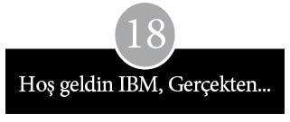
Apple Computer en güçlü alkışı borsadan aldıysa da başka çevrelerden gelen yoğun alkışlar da vardı. Apple II’lerin tüm Amerika’daki gelişimini izleyen küçük gazeteler, gayet etkileyici bu kişisel bilgisayarların ortaya çıkışını, fal taşı gibi açılmış gözlerle tebrik ettiler. Bu olay, tıpkı ülkenin çamurlu dar sokaklarında otomobillerin boy göstermesi, sessiz oturma odalarına radyoların girmesi gibiydi. Ama artık, fotoğraflarda olanlar, arabanın koltuğuna dimdik oturmuş aile bireyleri ya da şöminenin başında örgü örerken veya sigara içerken şöminenin üzerinde duran radyoya kulak kabartmış insanlar değildi. Bu yeni çığırı açanlar, parlayan ekranların karşısında klavyeye doğru eğilmiş, başları kameraya dönük, işte gelecek burada, der gibi bakan kişilerdi.
Flaştan sersemlemiş bir delikanlının odasında çekilmiş fotoğraflarının yanı sıra Apple’ın kütüphanelerde, dersliklerde, banka ve laboratuvarlarda, karavanlarda, uçaklarda, yüzen evlerde ve müzik stüdyolarında şipşak çekimleri de vardı. Hatta elektrogitarlarını sıkı sıkı tutmuş bir çift bile vardı fotoğraflarda. Kaliforniya’ya özgü bu tür ilginçlikler East Aurora Advertiser, Geneva (Neb.) Signal ve Bristol Herald Courier gibi gazetelere haber oldu. Chaska (Minn.) Herald, ÇOCUKLAR BİLGİSAYAR KULLANIYOR başlığını koyarak haberine mucizevi bir hava verirken, Ohio’da Columbia Independent gazetesi felaket tellallığına soyunur gibiydi: EUCLID ORTAOKULU BİLGİSAYAR ÇAĞINA GEÇİYOR. Apple, Güney Kaliforniya’ya geldiğinde, La Jolla Light olayı BAĞIMSIZLIK GÜNÜ BİLGİSAYAR ÇAĞINA DENK GELDİ manşetiyle verdi. Iowa Blairstown’da Star Press ise bir çiftçinin Apple’ı programlamayı öğrendiğini ve “Doğrusu, bir bilgisayarcıya ineğe yem vermeyi öğretmek kadar zor değil,” dediğini yazdı. Apple bilgisayarlar bir dansöze Jezebel sutyenlerinin serisini takip etme olanağı sağladığı gibi, Meksika Körfezi’nde yarısı su altında olan petrol kulesinin etrafındaki çamurun sıcaklığını izleme imkânı da veriyordu. Virginia Üniversitesi’nde bir antrenör, Apple’ı futbol topunun hızını ölçmek için kullandı ve bir Boeing mühendisi bilgisayarını Washington State yarış pistindeki beş kazanandan dördüyle ilgili bir tahmin yapmaya programladı, ancak şu gerçeği de itiraf etmeden duramadı: “Bu handikaplı programı geliştirmeye uğraştıkça, sonuçlar daha kötüye gitti.” Illinois Buffalo Grove’da bir lise yöneticisi Apple’la bir tenis turnuvası organize etti ve Florida Sarasota’da, Apple’ın bir konuşma sentez cihazına bağlanmasından sonra, beyin felci geçiren bir hastayla daha kolay iletişim kurulabildiği görüldü.
Florida’nın ödüllü şairi, Apple’a bağlanmış geniş ekranlı bir tele-vizyon ekranına zafer şarkıları yazdığı sırada, Manhattan’da, W.R. Grace and Company’nin başkan yardımcısı, bir Apple bilgisayarla, sahip olduğu restoran zincirleri için sipariş edecekleri bifteğin ne kadar sığır etinden çıkacağını tahmini olarak hesaplıyordu. Sözcükler ekranda parlayıp dönerek önem derecesine göre büyürken, şair kendisine keyifle “sıkı devlet türkücüsü” unvanını yakıştırdı. Bundan başka, Sunnyvale Emniyet Müdürlüğü, fiziksel tariflerden yararlanarak, şüphelilerle ilgili isim taraması yapmak için Apple’ı kullandı. Kaliforniya Santa Ana’da, büyük bir fuhuş çetesini yöneten bir adam, dört bin müşterisinin kaydını, kredi geçmişini ve eğilimlerini takip eden bir Apple programı sayesinde yakalandı.
Apple yurtdışında, Kuzey Afrika’da nüfus sayımı verilerini analiz etti; Nijerya’da ürün verimliliğini etkileyen faktörleri ölçümledi; Nepal’de göz bozukluklarının teşhisine yardımcı oldu; Sahra’da sulama planlamasını ıslah etti; Latin Amerika’da gelişmekte olan banka faaliyetlerini izledi; Botsvana’da bir öğretmene yardım etti. The South Wales Echo gazetesinin verdiği bir habere göre, Galler’in Cardiff bölgesi gibi dünyanın uzak bir yöresinde dahi bir üniversite hocası Apple’ın yeniyetme yaştaki kızına “yaşam tarzına dönüşen bir hobi” kazandırdığını söylüyor; öte yandan, bu alışkanlık yüzünden “artık eskisi kadar birbirimizle konuşmuyoruz” diye de şikâyet ediyordu.
Tüm dünyada hızla yayılan kullanıcı grupları, Apple’ın ulaştığı alanın genişliğinin kanıtıydı. Cupertino’ya gelen zarflar pekâlâ bir egzotik posta pulları koleksiyoncusunun işine yarayabilirdi. Grupo Usarios Apple de Columbia, Brezilya Apple Kulübü, Jakarta Apple, Zagreb Apple Kulübü, Hong Kong Dragon Apple, Apple Gebruikers Groep Nederland ve Catalunya Apple Club’dan; ayrıca İsveç, Filipinler, Yeni Zelanda, İsrail, Tazmanya ve Guam’dan da mektuplar vardı.
Amerika Birleşik Devletleri’nin farklı şehirlerinde yeni açılan kulüpler, yemek kitabı editörlerinin yeni tarifler için sakladıkları bir hazla birtakım isimler uydurdular. Bu isimler arasında Elma Soyucular, Yengeç Elmalar, Yeşil Elma, Elma Marmeladı, Elma Birası, Elmalı Tart, Elma Toplayıcısı, Elma Kokteyli, Elma Pika, Elmalı Kek, Elma Tohumu, Elma Torbası, Elma Kurdu ve Elma Arabası gibi örnekler vardı, ama en güzel iki ad Adsız Elmakolikler ile Küçük Sert Elma Bağımlıları’ydı. Müşterilere ve tüccarlara ulaşmak için inCider, Apple Orchard, Call Apple ve Apple Source gibi isimler taşıyan magazin dergileri çıkartıldı. Şirket bilgisayarlarını açıktan kutlamak için Appleexpos ve Applefests’i sahnelemek amacıyla sergi salonları kiralandı.
Apple’ın kurucularına, acaba şirkete niye Matrix Elektronik adını vermedik diye düşündürtecek kadar çok sayıda, farklı malzemeden üretilmiş, çeşitli büyüklüklerde elma’lar sunuldu. Koa, maun, sekoya, sedir, kristal, porselen ve çiniden yapılmış, kartonpiyerde kurutulmuş, pirinçte eritilmiş ve plastikle damgalanmış elmalar yağıyordu. Ayrıca şirketlerin ikonlarının ve çeşitli simgelerinin yapımında uzmanlaşmış küçük şirketler tarafından çok sayıda hatıra eşya üretildi. Elma şeklinde kemer tokaları, kalemler, paspaslar, kadehler, defterler, kâğıt bıçakları, takvimler, kâğıtların üzerine koymak için ağırlıklar, anahtarlıklar ve tampon çıkartmaları vardı.
Apple büyük bir bilgisayar firması olduğundan, başarısının büyüklüğüne daha az usturuplu ve daha dolaylı övgüler de vardı. Daha ilk anda, sinir bozucu bir taklitçilikle karşılaştılar. ABD’nin East Coast yöresinden Franklin Computer Corporation adlı bir şirket, Apple’a çok benzeyen, ACE 100 adını verdikleri bir makine imal etmiş ve reklamlarında da utanmadan, görünen bir yere koyduğu elma resminin altına “Elmadan daha tatlı” yazarak tanıtım yapmaya kalkmıştı. (Franklin 1983 yılında federal mahkemede, Apple’ın işletim sistemini kopya etmiş olduğunu kabul etti.) Commodore’un çıkardığı bir bilgisayar, “Elma yiyen solucan” iddiasıyla bir dizi reklam yaptı. Tayvan ve Hong Kong’da türedi ressamlar Apollo II, Orange Computers (Portakal Bilgisayarları) ve Pineapple (Ananas) gibi isimlerle süslenmiş kopyalar çıkardı. Bir İngiliz firması, makinesini gökkuşağı renklerini taşıyan bir armutla süslerken, küçük bir İtalyan firması üzerinde limon logosu bulunan bir bilgisayar tasarladı ve bir Batı Alman bilgisayar dağıtıcısı da görünüşü Apple’a tıpatıp benzeyen bir ürün imal etti.
Apple Kaliforniya’nın yerel hastalığına maruz kalarak, kelle avcılarının hücumuna uğradı. Saldırı ısrarla devam edince, Apple’ın telefon operatörlerine gelen telefonların bağlanmaması talimatı verildi. Ancak, inat eden kurnaz “yönetici avcıları” basit bir numaraya başvurup sahte isimlerle aramaya başladılar. Apple insanların başka işyerlerine kaçmasını önleyecek bir bağışıklığa sahip değildi, giden gitti. İşten ayrılmalar hiç de toplu bir göç haline ulaşmadı, ama ufak damlamalar olması bile sinir bozmaya yeterliydi. Apple’ın kurucularının kusur ve zaafları karşısında, yeni kurulan öteki şirketlerin baştan çıkarıcı görüntüsü ve büyük bir şirkette çamura batma korkusu, hırslı kadroları kapıya doğru iteledi. Apple’ın halka arzından sonraki iki yıl içinde, bir zamanlar Apple’da çalışan kişiler tarafından dört küçük işletme kuruldu ve bu firmalar hiçbir zaman Silikon Vadisi’nin bazı köşelerindeki kadar yüksek cirolara yaklaşamasalar da Apple yöneticilerinin iddia edip durdukları gibi, ciroları o kadar düşük düzeyde de kalmadı.
Böylece –bazıları açıktan, bazıları üstü kapalı– tüm bu ödüllerle, Cupertino’daki Cali Brothers tahıl silolarının krem rengi gölgeleri altında çalışan insanların gururlanmak için yeterli nedeni vardı. Bazen dünyayı artık yuvarlak değil de şirketlerinin logosu şeklinde hayal etmeleri mazur görülebilirdi. Ancak, ne zaman ki şirket, Apple’ın en büyük olduğuna inanmaya başladı, imparatorluk nosyonu şirketi baştan çıkardı ve agresif bir kendini beğenmişliğin eski başarılarını yok etme tehlikesi doğdu.
Apple’ın ilerleyişini dışarıdan izleyenler tehlike sinyallerini fark ettiler. Yatırımcı Hank Smith, diğer yeni şirketlerin görevlilerini başarının bedeliyle ilgili uyarmaya başladı ve uyarılarında Apple’ı örnek olay incelemesi olarak kullandı. Bir ara Regis McKenna Ajansı’nda Apple müşteri sorumlusu olarak çalışan ve daha sonra, Apple için program satan bir yazılım şirketiyle ilgili görev alan Richard Melmon şu görüşü kabul etti: “Apple’ın etrafındaki herkes, ‘En iyi biziz. Bunu biliyoruz’ diyor. Onların öyle bir kültürleri var ki her şeyin başı sonu Steve Jobs, başka bir şey yok.” Computerland’ın başkanı Ed Faber, Apple’ın fiyakalı tavrını şöyle özetledi: “Kabarmaya neden olan şey, ‘kendini beğenmişlik.’” Kendini beğenmişlik doğruca şirkete sızarak işlerin tüm yönlerini etkiledi: Tedarikçilere, yazılım firmalarına ve bayilerine karşı davranış tarzını, rakiplere karşı tavırları ve de yeni ürünler geliştirmeye yaklaşımlarını.
Başından beri, Apple bilgisayarlarının şekli ve stili Jobs’un öncelikli ilgi alanı olmuştu. Apple II’nin tanıtımlarının ilk aylarında, araştırma ve geliştirme başkan yardımcılığını üstlendi, sonra da belli başlı bütün ürün kararlarında neredeyse her zaman son sözü söyleyen kişi oldu. Şirket büyüdükçe ve Jobs’un etkisi arttıkça, Apple II’nin geliştirilmesi sırasında baskı yapmak, iteklemek, dürtmek, kandırıp iş yaptırmak ve tatlı dille Wozniak’ı ikna etmek için kullandığı taktiklerin gücü de arttı. Jobs her zaman en son moda ve en parlak görünüşe ilgi duydu ve zamanla, onun varlığı sonucunda daha da ilginç projeler gündeme geldi.
Jobs zahmetli çalışmalara pek ilgi duymadı. Teknolojinin ve pazarın kesişeceği nokta için kendi sezgilerinden ve duygularından başka inandığı hiçbir şey yoktu. Uzun vadeli ürün planları ve Apple’ın farklı bilgisayarlarının nasıl kombine olup tek tip bir çizgi üreteceği konusu, onun gözünde ikinci derecede bir sorundu. Apple II’nin başarıları devam ederken, Jobs içgüdülerinin gücünü bir dini inanç noktasına vardırdı: “Birçok kararı, temel olarak, aldığın kokuya göre işlerin hangi yöne gittiğini hissederek alıyorsun.” O, ürün planlama analizleri, odak grupları, karar ağacı çizelgeleri, çan eğrisi kaymaları gibi, büyük şirketlere özgü gördüğü can sıkıcı angaryalarla uğraşmak istemiyordu. O, Apple’ın müşteri prototipini aynada görüyordu; şirkete düşen, kendisinin şu ya da bu tarihte beğenip sahip olmak istediği ürünleri geliştirmekti.
Şirket içinde, üretimin “yumuşak taraf”ına yavaşça dokunarak, bunu yapacak doğal bir iç yetiye sahip olduğu yolunda bir üne kavuştu. Bill Atkinson, “Jobs’ta mükemmellik, yalınlık ve güzelliğe yönelik bir dürtü var,” diyordu. Tom Whitney ise düşüncelerini şöyle ifade ediyordu:
Jobs’un özelliklerinden biri, bir şeyi daha iyi yapmak için tükenmez bir sabrı olmasıdır. Onun için asla “yeterince iyi” yoktur. Daima maliyeti daha az olan özellikler ister. Hep bir sonraki doğal basamağa zıplamak ister. Apple’ın birçok başarısının kaynağı onun aşırı inatçılığıdır, ama aynı zamanda, her zaman her şeyi birlikte istediği için onunla çalışmak çok zordur.
Onu yakından izleyen başka biri, hakkında daha da kuşkuluydu:
Walt Disney olsa daha mutlu olabilirdi. Bir gün tavşanların kulakları üzerinde çalışabilir, bir sonraki gün Disneyland’la, başka bir gün filmlerle ve daha sonraki gün de Epcot Center’la ilgili işlerle uğraşabilirdi. Bilgisayar işindeki zorluk, fikirde köklü bir değişiklik yapma şansının olmamasıdır.
Jobs kendini nasıl geliştirdiyse bilgisayarları da aynı şekilde geliştirdi. Başkalarının fikirleri kendi ihtiyaçlarına uygun olduğunda, onları kendine mal etmekte ustaydı; bu fikirlerin noksan taraflarını atar, iyileştirmeler yapar ve sonunda insanları tamamen kendi özgün katkısı olduğuna kolayca ikna edecek kesin bir inançla görüşler (veya bilgisayarlar) ortaya koyardı. Ancak, onun güçlü yönleri aynı zamanda da en büyük zayıflıklarıydı. İkna edici tartışmaları dinleme yeteneği, onun bir çırpıda yargıya varma alışkanlığına karşı bir bağışıklık sistemi oluşturmakla birlikte, altında çalışanlar kafalarından geçeni açıkça dile getirmekten korkma noktasına kadar geldiler. Bir idarecinin, “teknik cehaletin derinliği” diye tanımladığı iyimserliği, bilgisayarı geliştirmek için gereken süreyi ve hangi fiyata satılacağı konusunu hafife alışının göstergesiydi. Apple bilgisayarları serisi giderek, Jobs’un kendi kestirilemeyen, tutarsız ve çabuk değişen ruh halini yansıtmaya başladı.
Ama buna karşın cüretkâr, agresif yapısı Apple’ın bilgisayarlarını renklendirdi ve şirketi alevlendiren kıvılcımı tutuşturdu. Apple II’nin tanıtılmasından iki yıl sonra, yapılacak iş Sara, Lisa, Annie, Mac ve Twiggy kod adları verilen beş ürünün lanse edilecek noktaya gelmesiydi. Sara, o bilgisayarın baş donanım tasarımcısının kızının adıydı; daha sonra Apple III olarak bilindi. Lisa, Jobs ile Nancy Rogers’ın kızlarının adıydı. Annie hiçbir zaman gün ışığı görmeyen düşük maliyetli bir Apple II’ydi. Mac birinin en sevdiği elmaydı. Disk sürücüsü geliştirme üzerinde çalışan bir grubun ürünün adı Twiggy’ydi, çünkü orijinal yaradılışı gereği, İngiliz modelle fiziksel benzerlik gösteriyordu: İki disketi olacaktı. Bundan yola çıkan ileri görüşlü bir mühendis, bilgisayarı iki minik flopi diskle süsleyerek, o narin modele benzetecekti.
Şirketin gözle görülür zaferlerinden birinin sonucu, Apple III için konan iddialı zaman takvimlerinde kendini gösteriyordu. Bu zaman çizelgelerinde, birçok makale ve kitapta bilgisayarların geliştirilmesiyle ilgili olarak dikkatlice dile getirilen tehlikelerin hiçbiri hesaba katılmıyordu. Ürün tasarımcısı Jerry Mannock, “Apple III’ün zaman çizelgeleri konusunda aşırı ölçüde iyimserdik,” diyor. “Apple II, çevresindeki herkese, ‘her şeyi yapabiliriz’ diye düşündüren çok üstün bir başarı göstermişti.” Apple III, başlangıcından beri, Apple II satışlarının düşmeye başlayacağı tarihten, Lisa’nın satışa çıkacağı güne kadar geçecek sürede köprü olma beklentisiyle piyasaya sürülen bir ara ürün olarak düşünülüyordu.
Bu girişim ayrıca, Apple’ın bir şirket olarak bilgisayar yapabilme yeterliliğinin sınanması olarak görüldü. Belli ki, Wozniak’ın Apple I üzerinde toplu değişiklikler yaptığı günden bu yana koşullar hayli değişmiş ve Apple’ın gelirinin büyümesiyle birlikte, şirketin taahhütleri de epeyce artmıştı. İlgi ve desteğe ihtiyaç duyan ve giderek büyüyen bir müşteri dalgası, şirket yaşamının bir yığın ilgi bekleyen meselesi vardı. Ayrıca Apple II’nin lansmanından sonra düzinelerce bilgisayara gerek duyulurken, şimdi piyasaya sürme tarihinde çok daha büyük sayıda yeni bilgisayara ihtiyaç olacaktı. Apple III’ün takvimi, Homebrew Computer Kulübü’nde bir tasarım gösterisi sunmaya kararlı bir meraklı amatörün elinden çıkabilecek türde bir zaman çizelgesiydi. Başlangıçtan itibaren on aylık bir süre içinde bilgisayarın tasarımının yapılması ve test edilerek üretime hazır hale getirilmesi gerekiyordu.
Apple kısa zamanda, bir şirket için bilgisayar yapmanın, bir garajda makine parçalarını bir araya getirmekten çok daha zahmetli bir iş olduğunu anladı. “Apple III’ü komite tasarladı,” diye yakınıyordu Randy Wigginton. “Apple, düzgün bir şirketin bir bilgisayar tasarımı yapmasının yolu da budur, diye düşündü. Herkes Apple III’ün ne yapması gerektiği hakkında kesin fikirlere sahipti ve ne yazık ki hepsi de dikkate alınmıştı,” diye sürdürüyordu sözlerini. Genel plan, Apple II’de eksik olan tüm özelliklerin yer alması ve düşük fiyata daha güçlü bir işlemci bulunamayacağından, güç artırıcı olarak mikroişlemci 6502’nin kullanılmasıydı. Daha geniş bir belleği, dahili bir disk sürücüsü, daha iyi bir işletim sistemi, kelime işlemciye ve hesap tablolarına uygun seksen sütunlu bir görüntüsü, büyük ve küçük harfli bir klavyesi, gelişmiş renkleri ve hızlandırılmış bir mikroişlemcisi olacaktı. Ayrıca Apple II için geliştirilen tüm programları çalıştırmalı, böylelikle çok sayıda farklı uygulama ânında kullanılabilmeliydi.
Korkunç baskı şirket içinde yerleşerek, karın ağrıtan iş takvimine sıkı sıkıya uyulmasını sağladı. Bu kısmen, pazarlamanın Apple II’nin satışlarında yakın bir gelecekte öngördüğü düşüş beklentilerinden kaynaklanıyordu. Apple III donanım başmühendisi Wendel Sander, “Apple II’de balonun ne zaman söneceğini merak edip durduk. Pazarlama ayağında daha profesyonel hareket edebilirdik,” dedi. Hisse senedi arzı sırasında sunulan izahname gereğince verilmiş olan Apple III sevkıyat taahhütleri de ayrı bir baskı unsuruydu. Jobs’un bilgisayarın ilanından birkaç ay önce, ŞİMDİ VERDİĞİNİZ KARAR, 50.000 APPLE III’ün 1980’DE SEVK EDİLMESİNİ SAĞLADI satırlarını taşıyan parlak posterleri dağıtması da hiçbir işe yaramadı. Bunca baskının birleşmesi, ağırlığın altında en çok ezilenlerin ıstırap çığlıklarını bastırmaya ve elden ele dolaşan çılgınca not selini durdurmaya yetti. Olanlar için, “Klasik bir hikâye” diyor Jef Raskin:
En alttakilerin, “Burada işler yürümüyor. Başımız belada,” dediği; bir üst kattakilerin “Burada başımız biraz belaya giriyor gibi,” dediği; ardından, bir sonraki seviyede, “Belanın etrafından dolanıyoruz,” dendiği ve nihayet en tepedekilerin, “Her şey yoluna girer. Haydi biz mal sevk edelim,” dediği bir hikâye.
Bilgisayarları piyasaya sürmek için acele edilmesinin olumsuzlukları, en şiddetli biçimiyle, yayın departmanındaki teknik yazarların, laboratuvar tezgâhlarında gerçekleştirilen değişiklikler ile pazarlama departmanının bitmeyen istekleri arasında sıkışıp kalmasıyla ortaya çıkan karambolde kendini gösterdi. Yazarlar, Apple III’ü ilanından dokuz hafta öncesine kadar görmediler ve kendilerine verilen süre o kadar sınırlıydı ki kılavuzları ve bilgisayarı gözden geçirme prosedürleri tamamen göz ardı edildi. Kılavuzların taslakları, deneme sayfası için üretim departmanına teslim edildiği aynı gün, mühendislik, pazarlama ve yeni ürün değerlendirme departmanlarına da gönderildi. Programcılar sayfa düzeni için iki saatlik vardiyalarla grafikçilere yardım ettiler.
Bu arada Apple, yazılım geliştirme çalışmasında bir yılın nasıl da hızla kayıp gidebileceğini öğreniyordu. Apple II için yazılan programların tümünün Apple III’te de çalışması gerektiğinden, Apple II yazılımına yapılan iyileştirme ve uyarlama çabaları karmaşık ve yorucu bir macera halini aldı. Programcılar programları tüm donanım değişikliklerine uyumlu hale getirmek zorunda kaldı: Bilgisayarlar farklı açıldı, klavye ve disk sürücüleri farklı düzenlendi ve hafıza genişletildi. Programcılar ayrıca Apple II’nin on katı kadar olan programlama işinin ağırlığı altında ezildiler.
Yükün artmasına rağmen Apple, şirket içinde mümkün olduğu kadar çok yazılım denemesi geliştirmeye karar verdi. Şirket dışındaki yazılım evleriyle yakın çalışmaya az önem verildi ve Apple III’ün özel sırlarına ilişkin teknik bilginin dağılım alanını daraltmak için ayrı bir çaba gösterildi. Bu durum neredeyse bağımsız yazılım şirketlerinin program üretimini olanaksız kıldı. Bilgisayarın duyurulmasından iki hafta önce, Visicalc’la ilgili bir gösteri ricasıyla birlikte Visicorp’a bir prototip makine teslim edildi. Apple’ın programcılarının Pascal dilini değiştirerek bilgisayarda çalışır hale getirmesi ve böylelikle bağımsız yazılımlara BASIC ya da kurgu dilinden başka bir dil kullanma olanağı sunması, bu duyurudan bir yıl kadar sonra mümkün oldu.
Apple III, 1980 yazında Anaheim’deki Ulusal Bilgisayar Konferansı’nda büyük bir gürültüyle duyuruldu. Apple, bir geceliğine Disneyland’ı kiraladı, yirmi bin bedava bilet dağıttı ve konuklarını lunaparka götürmek için çift katlı kırmızı bir otobüs filosu kiraladı. Bu gösteriş Cupertino’da kimseyi kandıramadı. Sherry Livingston, “Duyurusunu yaptıklarında Apple III’ü mahvettiler ve bunu biliyorlardı,” diyor. Kamu önünde bir kez sözler verildikten sonra, Apple kendi kazdığı kuyuya düşmüş oldu. Sevkıyat baskısı, şirketin mühendislik, pazarlama, imalat ve kurumsal tarafları arasında rakip çıkarların çekişmeye başlamasına neden oldu.
Bir kısmı zarafetten kaynaklanan tasarım problemleri, bilgisayarı kendi kabına sığdırmayı olanaksız hale soktu. Bu, sonuçta, baskılı ana devre kartın üzerine oturtulması gereken ikinci bir eğreti karta neden oldu. Apple kalite kontrole de çok dikkat etmedi. Jobs ve Wozniak garajda kendi ilkel ama yetersiz kontrollerini yapmışlardı, ama Apple büyüdükçe parçaların kalitesini izlemek için özel bir departman kurulmamıştı. Wendell Sander, “Parça kalitesini kıyaslamak için belli bir yöntemimiz yoktu. Konektör seçimini kontrol için yeterli parça değerlendirme mühendisimiz yoktu. Satıcıları dinledik ve ne dedilerse inandık,” dedi. National Semiconductor’ın, bilgisayardaki saat işlevini sağlayan bir çipi hemen her seferinde yaklaşık üç saat sonra bozuluyordu; Jobs Semiconductor şirketinin CEO’sunu ne kadar şiddetle fırçaladıysa da problemi çözemedi.
Baskılı devre kartları üzerindeki hatların birbirine çok yakın olması, kısa devre yapmalarına yol açtı. Rick Auricchio, “Yeni kartlar kullanılmasın diye yırtındık,” diyordu, “ama pazarlamacılar bunun problem olmayacağını söylediler. Oysa mühendisler tersini düşünüyordu.” Yapım ekibinin kendine ait sıkıntıları vardı. Vidalar takılırken bilgisayarın içindeki kabloları delmişti. Ağır metal kasalar FCC yönetmeliklerindeki bazı belirsizlikler nedeniyle kullanıldı, ama bunları taşımak montaj hattında çalışan ufak tefek kadınlar için sıkıntı oldu. Üretimden Roy Mollard “Mesele mekanikçiler için bir kâbus olarak sona erdi,” diyordu. “Böylece, mühendisler imalat problemi diyerek işi üzerlerinden atmış oldular.” İki baskılı devre kartı arasındaki bağlantıda yeterince kaplama yoktu ve sıkça kısa devre yapıyordu; çipler yuvalarından kayıyordu ve klavye kabloları çok kısaydı. Mühendisler, çipleri yuvalarına oturtmak için bilgisayarı yedi santim kadar küçültmeyi önerdi. Mühendisler bu şokun, bilgisayarı hayata geri döndüreceğine garanti gözüyle bakıyorlardı. İmalatçılar, her şeyin çalışıp çalışmadığını anlamak için daha bilimsel bir test geliştirdiler: Kauçuk çekiçlerle bilgisayara vurmaya başladılar.
Böylece hasar verilmiş oldu. Apple III’ün gelişiminin hemen her aşaması berbat edilmişti. Piyasaya sürülen ürünler güvenilmezdi, her an çuvallayabilirlerdi. Başka bir yazılım parçası hazır olmadığından, ilk gönderilen ürünlere Visicalc eklenmişti. Bilgisayarla birlikte verilen Apple yazılımı test edilmemişti. Kullanım kılavuzu pek kalitesiz görünüyordu, ayrıca yanına yirmi sayfalık düzelti kısmı eklenmişti. Bilgisayarı satın alanların can sıkıcı sürprizlerle karşılaştıklarına ilişkin, SİSTEM HATASI uyarısının ekranda sürekli yanıp söndüğü şeklinde söylentiler duyulmaya başladı. Olumsuz gazete makalelerinin yayımlanmasıyla birlikte, makinenin etrafında kara bulutlar dolaşmaya başladı. Bunun üzerine Apple, bilgisayar reklamlarını durdurdu, makinelerini zorlu testlerden geçirdi, devre kartını yeniden tasarladı, bazı yazılımları hazır etti, ilk müşterilerinden isteyen olursa makinelerini değiştirme sözü verdi ve bir yıl sonra bilgisayarı (genişletilmiş bellekle) tekrar piyasaya sürdü. Böylece sağlam, güvenilir bir makine, yetenekli bir iş bilgisayarı, feci bir piyasaya çıkışla mahvedilmiş oldu ve Jobs’un iyimser posteri, başlarına gelebileceklerin yüz kızartıcı bir hatırası olarak kaldı. Zira Apple III, piyasaya çıkışından sonraki üç yıl içinde sadece 65.000 adet sattı.
Bilgisayarın görünüşü ve şekli bir kez oturduktan sonra Apple III’ten kopan Jobs, Lisa’nın gelişimiyle her zaman daha yakından ilgiliydi. Daha cesur ve iddialı bir proje olarak görünen Lisa’yla ilgili çalışmalar Apple III’ten önce başlamıştı. Jobs, Ekim 1978’de, yani bilgisayarın –10.000 dolar gibi bir fiyata– piyasaya sürülmesinden neredeyse beş yıl önce, nasıl bir şey istediğini hayalinde canlandırmıştı. Disk sürücüleri ve ekranı kompakt, klavyesi çıkarılabilir bir bilgisayar istediğini biliyordu. Merkezinde 8-bit’lik bir mikroçip bulunan Apple II yerine, 16-bit’lik bir mikroişlemci üzerine inşa edilen bir cihaz istediğini de biliyordu. Ayrıca Visicalc gibi kelime işlem ve hesap tabloları programının dahil olmasını da içinden geçiriyordu. Bu fikirlerin çoğunu barındıran bir ön taslak, bir meslektaşının şu gözlemlerini doğruluyordu: Jobs, “Lisa’nın içindeki teknolojiden önce, nasıl bir dış görünüme sahip olacağı konusunda kararını vermişti.” İlk tahminlere göre ilk sevkıyat Ocak 1980’de yapılacak, perakende fiyatı 2.000 dolar, üretim maliyeti ise 600 dolar civarında olacaktı.
Apple’ın eski yeri –Good Earth binasının arkasındaki ofis katı– Lisa üzerinde çalışacak küçük gruba tahsis edildi ve grup, en azından belirsiz denebilecek bir hedefe doğru yol almaya başladı. On sekiz ayın sonunda proje büyük bir sıkıntıya girdi. Zaman zaman iniş çıkışlar yaşanıyor, yönetici değişiklikleri ve siyasi oyunlar yüzünden aksamalar oluyordu. Ama planlamacılar ve laboratuvar, hatta yazılım ve donanım mühendisleri arasında da çok fazla iletişim yoktu. Genel sorun, makineyi kimin kullanacağı ve çoğu zaman yan çizen Apple dağıtım ağının nasıl uyumlu hale getirileceğiydi. Donanım mühendisleri kendi kararları doğrultusunda 8-bit’lik bir çip, Intel 8086 kullandıkları bir prototiple yavaş çalışan ve hayal kırıklığı yaratan bir sonuç elde ettiler. Diğerleri (Wozniak’ın Apple I’i geliştirirken kullandığı 8-bit’lik 6800’ün ardılı olan) rakip bir 8-bit’lik çipin, Motorola 68000’in kullanılma olasılığını araştırmaya başladılar.
Diğer bir prototip, bir dönem Hewlett-Packard’ın aletler bölümünde çalışan mühendis Ken Rothmueller’in rehberliğinde geliştirildi. Onun bilgisayarının, büyük şirketlerde veri işlem departmanı yöneticilerinin ve teknik yatkınlığa sahip çalışanların kalbini kazanacağı hesaplandı. Apple II ve III’teki gibi kontrol edilen yeşil bir ekranı, geleneksel bir daktilo klavyesi ve rahatsız edici ağır bir formalitesi vardı ve hiçbir şekilde Jobs’un agresif ruhuna denk düşmüyordu. Alaycılar bunun Hewlett-Packard’ın piyasaya çıkarabileceği türde silik, sapasağlam bir makine olduğunu söyledi.
Rothmueller ile o tarihte yazılım departmanının başı olan John Couch arasındaki fikir çatışması ve birbirini beğenmezlik, ilerlemeye zarar verdi. Çeşitli dönemlerde Hewlett-Packard’da ayrı kişilere bağlı çalışan bu iki yönetici, Apple’da aynı kişiye bağlıydı. Aralarındaki mücadele, bilgisayarın kontrolü için yürütülen bir savaş oldu: Donanım ve yazılım arasında bir egemenlik mücadelesi. Ancak, Apple’da değil, Xerox Corporation Palo Alto Araştırma Merkezi’nde (PARC) gerçekleştirilen bir çalışma yazılımın kritik önemini vurguladı.
Xerox Corporation sadece Jobs’un kafasındaki gelecek tahayyülünü değil, aynı zamanda Jobs’un daha sonra Apple’a 1980’lere kadar yeteceğini söyleyeceği bilgisayar havasını ve niteliğini de kalıcı şekilde değiştirdi. Laboratuvarında Apple’dakinden çok daha köklü fikirler üzerinde çalışmalar yapan bir rakibin hayaleti karşısında Jobs, kendi fikirlerinin kapsamını da genişletti.
Stanford Üniversitesi’nin güneyinde yükselen bir tepede kurulu olan araştırma merkezi, Xerox tarafından genç, parlak, dinamik delikanlıların, şirketin taklitçileri üzerinde muhteşem etkiler yaratacak büyük yeni fikirlerin hayalini kuracakları bir yaratıcılık merkezi olarak inşa edilmişti. Merkez 1969’da açılmıştı ama araştırmacılar, Apple’dan bir grubun kişisel bilgisayarlar üzerindeki çalışmaların sonuçlarını incelemek için geldiği yetmişlerin son ayına kadar parlak bir şey ortaya çıkaramamışlardı. Xerox, PARC’ın bilgisayarlar, yarıiletken çip tasarımları ve lazer yazıcılar üzerindeki araştırmalarına 100 milyon dolardan fazla ödenek harcamıştı. Bu tutar 1979 yılında Apple’ın toplam cirosundan iki kat fazlaydı, ama PARC laboratuvar tezgâhı ile mağaza vitrini arasında çok geniş bir mesafe bulunduğunu da gösteriyordu.
Xerox’un Apple’daki önemli mali hissesi, Cupertino’dan yola çıkan programcıların ve mühendislerin keşif yolunu kesinlikle rahatlattı. Ama meraklıların PARC’ta neler olup bittiğini anlaması için Sherlock Holmes’un zekâsına ihtiyaç yoktu. Merkez, Xerox için bir vitrindi ve yabancıların ziyaretleri günlük hayatın ayrılmaz parçasıydı. Xerox’un prototip masaüstü bilgisayarlarının nasıl tasarlandığının ayrıntıları bilinmese bile sektörle az çok ilişkili herkes daha geniş eğilimlerin kesinlikle farkına varıyordu. Xerox, iyi hesaplanmış birkaç telefon görüşmesini, bir parça kokteyl partisi laklağını ya da parlak lise öğrencilerinin sorularını belirsiz noktalara ışık tutabilmek için kobay olarak kullanıyordu. Bilgisayar dergilerinin Xerox araştırmasının çeşitli yönlerini anlatan sayfaları vardı. Scientific American’ın 1977 yılı özel sayısında, Xerox’un önde gelen bilim adamlarından, hayat dolu Alan Kay’ın, Palo Alto’daki çalışmaları anlatan ve kullanımı kolay kişisel bilgisayarlara istek uyandıran bir reçete düzeyine varan bir yazısı yayımlandı.
On yıldan fazla bir süreden beri, Stanford Araştırma Enstitüsü’nden Douglas Engelbart gibi bilim adamlarının, çocuk psikologlarının yürüttüğü araştırmaların ve Norveç üniversitelerindeki araştırmaların tümü, değişen derecelerde Xerox’ta yapılan işi etkiledi. Aslında bazı önemli ilkeler altmışlı yılların ortalarında yayımlanmış ve daha 1968’de SRI tarafından NLS adındaki bir sistemin demosuyla birlikte sergilenmişti. Temel amacı, hiçbir teknik eğitimi olmayan insanların, bilgisayarlarını kontrol etmelerine yardımcı olma yolları bulmaktı. Bir anlamda amatörlerin genel çabasının akademik bir uzantısıydı: Bilgisayarları, kişisel yapmak, daha sonra da gizemli ve ürkütücü unsurları ortadan kaldırmak, en azından gözlerden gizlemek. Xerox’un prototipleri, bilgisayarların tamamen yeni bir araç olduğuna; sadece rakamları evirip çevirmeye ve düzyazı yazmaya yarayan duygusuz, pasif cihazlar olmadığına inanan insanların izlerini taşıyordu. Bazı PARC araştırmacıları, renkli televizyonu, stereo ses sistemini ve parmak izini er geç birleştirecek olan esnek makineleri düşleyen geniş bir vizyona sahipti. Bundan önceki diğerleri gibi, nihai hedeflerinin, bilgisayarı defter büyüklüğündeki bir kasaya sığdırabilmek ya da bir işadamının evrak çantasına kolaylıkla girecek, ama dünyanın herhangi bir yerindeki başka bilgisayarlar ve insanlarla iletişim kurabileceği bir makine olduğunu söylediler.
PARC araştırmacıları, 1973’te Alto adındaki ilk makinelerini yaptılar. Bu makinenin başlıca erdemi görsel çekiciliği ve dönemin diğer bilgisayarlarına göre çok daha fazla iş görebiliyor olmasıydı. Rakamlarla cebelleşmek yerine, insanların zaten bildiği görüntü türlerini teşvik edeceği varsayılıyordu.
Alto hem yazılım hem de donanım alanındaki iyileştirmelere dayanıyordu. Xerox, Logo’ya benzeyen, Smalltalk adında bir dil geliştirdi; bu dil, kodlarla ve denklemlerle uğraştırmadan çocuk programlarındaki tanıdık küçük objeleri döndürüp hareket ettirmek için tasarlanmıştı. Xerox bilgisayar, aynı anda görüntülenemeyecek kadar büyük olan çizelgeler veya hatırlatma notları için, masaüstüne yayılmış simülasyonlar üretti ve bu sayfalara “örtüşen pencereler” adını verdi.
Görüntülerin netliği bit-eşlemleme olarak bilinen bir işlemle mümkün oldu. Bilgisayar, ekrandaki her bir küçük noktayı ya da pikseli kontrol etti. Yazı metni, çeşitli yazı biçimlerinde görüntülenebiliyor ve bilgisayar müzik oluşturabiliyordu. Alto, yazılı komutların kodlarını kenara çekmek için, ilk olarak 1964’te Stanford Araştırma Enstitüsü’nde geliştirilmiş olan bir mouse da kullandı. Yetmişlerin sonunda, yüz kadar Alto, Beyaz Saray ve kongre bürolarına kadar yayıldı.
Jobs’un ilk başlarda, Xerox’u ziyaret etme önerilerine ayak diremesi, başka hiçbir şirketin Apple’dan daha ileri bir proje üzerinde çalışamayacağını düşündüğü izlenimini uyandırıyordu. Ancak, Xerox’un çalışmalarını yakından izleyen birkaç Apple programcısının baskı yapmaya devam etmesi sonucunda Jobs merakına yenildi. Doğrudan faydası olmayan hiçbir şeye tahammül göstermemesi ve üstün erdemleri takdire hazır olması, gördükleri karşısında mest olmasını sağladı. O da herkes gibi Alto’nun performansından etkilendi ve mouse, grafikler ve üst üste açılan pencerelerin toplamdaki etkisini gördükten sonra uzman sıfatıyla Bill Atkinson’un kapısını çaldı. “Steve, Lisa’nın yazılımının ne kadar sürede gerçekleşeceğini sordu; ‘Altı ay’ dedim.”
Xerox ziyaretleri Apple bilgisayarlarının şeklini netleştiren az sayıdaki can alıcı olaydan biri oldu. Küçük bir şirketin bırakın daha iyisini yapmayı, onun düzeyine ulaşmayı düşünebilmesi için bile Xerox’un çalışması sağlam bir özgüvenden fazlasını gerektiriyordu. Lakin biraz atılganlık ve küstahlık sergilememesi halinde, Apple’ın işin kolayına kaçıp hiçbir şey yapmamak gibi daha büyük bir riski göze alması işten bile değildi. Xerox ziyaretleri ayrıca Cupertino’daki, Lisa’nın Apple’ın ofis pazarındaki atılımının lokomotifi olabileceği yolundaki yaygın düşüncenin pekişmesiyle de örtüşüyordu. Bu düşünceye göre, bir gün genel tüketici için yeterince ucuz hale gelecek olan bu makineleri işletmeler haydi haydi satın alabileceklerdi.
Bu faaliyet furyasının sonuçları yeterince çabuk görüldü. İzleyen birkaç hafta içinde programcıların bit-eşlemleme grafiklerini araştırmaya başladığı ve bunların gücünü gösteren denemeler yaptıkları esnada Jobs bir mouse ele geçirdi. Görüntüler o kadar etkileyiciydi ki, şirket içinde darbeye yol açtı. Mühendislerin çoğu başdonanım mühendisinin inatçı eğilimlerine karşı koydu; bunun üzerine onun yerini projenin dördüncü donanım mühendisi aldı. Bu aynı zamanda yazılımın zaferinin sessizce tanınmasıydı.
Böylece Apple’ın yönünü Xerox çizmiş oldu. Bir grup Xerox programcısı ve bilim adamı sonunda PARC’tan ayrılıp Apple’a katılarak Lisa üzerinde çalıştı ve bunun da bilgisayarın kullanıcının karşısına çıktığı haline büyük etkisi oldu. Xerox’tan alınan ilhamı takip eden üç yıl içinde Apple’ın mühendisleri ve programcıları yavaş yavaş ilerlediler. Yeni, kapsamlı bir vizyon katkısı yapamadılar, ancak başka bir yerde başlatılmış bir çalışmayı geliştirmek için kararlılık gösterdiler. Yazılımda önemli gelişmeler yapıldı ve girişimin en görkemli parçası her şeyin bir masaüstü sistemine sığdırılmış olmasıydı. Ayrıca Apple’ın ilk reklamlarındaki BASİTLİK GELİŞMENİN SON ADIMIDIR mesajını hayata geçirdiler ve karışıklığa neden olabilecek hiçbir şey bırakmamaya çalıştılar. Haftalarca tartıştıktan sonra, örneğin mouse’un üzerindeki düğmeler üçten bire indirildi. Orijinal makinede mevcut olan, belli gizli işlevlere sahip menü tuşları gibi bazı özellikleri de kayboldu.
Jobs’un Lisa projesine katkısı, ilham vericilik ile yıkıcılık arasında gidip geldi. Bir pazarlama müdürü o dönemi şöyle anlatıyor: “Fiyatlandırma üzerine fiyatlandırma yaparsanız, kesinlikle en az beş bin dolarla çıkarsınız. Jobs’la kıran kırana tartışmalar yaşanıyordu. ‘Mecbur kalırsam Woz’u getiririm. Woz daha ucuzunu yapar. O kadar iyi olsanız, siz de yaparsınız’ diyordu.” Moral bozmayı da iyi beceriyordu. Bir gözlemciye göre, “Mühendisler şöyle diyordu: ‘Zamanındaysa sorun değil.’ Biz Jobs’u tanıyoruz. Nasıl olsa bir değişiklik yapacak.” Ancak, onca patırtı gürültüye rağmen Jobs bilgisayarda estetik beğenisinin izini bıraktı. Genel tarzı ve şekli sundu; dosya klasörlerindeki resimlerin kare köşeli değil de yuvarlak kenarlı olması gibi küçük ayrıntılarla uğraştı.
Xerox ve Apple arasındaki fark 1981’de Houston’daki Ulusal Bilgisayar Konferansı’nda açıklandı. Xerox, halk arasında Xerox Star olarak bilinen, Xerox 8010’un duyurusunu yaptı. Henüz PARC Grubu tarafından bir bilgisayar geliştirilmemişti ama buna rağmen bilgisayarda PARC damgası vardı. Masaüstünün, bir mouse’un ve bit-eşleştirme grafiklerinin görsel simülasyonuna güveniyordu ama yürütme zayıftı ve bilgisayar sadece Xerox ekipmanına bağlı olduğunda düzgün çalışıyordu. Yazılım aşırı yavaştı ve alışılmamış bazı fikirlerin uygulaması genellikle başarısızdı.
Apple’da çok daha fazla sabır vardı. Apple III’ten alınan kötü sonuçlar, bilgisayar geliştirme işini aceleye getirmenin ve bir ürünü doğru dürüst test etmeden piyasaya sürmenin bedeli olarak sürekli uyarıcı bir işlev gördü. Ayrıca Cupertino’dakilerin, neredeyse Volkswagen Beetle gibi dayanıklı bir ürünün erdemlerine sahip olduğuna inanmaya başladıkları Apple II’nin zamanının yakında dolacağı yönünde öngörülerde bulunma eğilimi de azalmıştı.
Eğer Lisa üzerindeki çalışmaların kapsamı bir kurumsal hırs örneğiyse, disk sürücüsü geliştirme çabası da öyleydi. Apple kendi disk sürücülerini yapmak üzere bir projeye başlamaya karar verdiğinde, bunun son derece makul nedenleri vardı. Apple II sistemlerinin satışı ağırlıkla disk sürücüsünün varlığına dayanıyordu; Apple’ın tedarikçilerinden biri olan Shugart, tesadüfen bir Xerox bayisiydi ve bazı kişilerin güvenilmez bulduğu aygıtlar üretiyordu. Disk sürücülerinin yetersizliğinin Apple’ın büyümesini sekteye uğratabileceği şeklinde belirgin bir korku vardı. Apple, sürücülerle ilgili ikinci bir kaynak oluşturmak için başka bir tedarikçi bulduktan sonra kendi projesini başlatmaya karar verdi. Bu niyet, Scott ve Jobs’un paylaştığı, Shugart’ı aşağılama arzusuyla iç içe geçti.
Wendell Sander projenin kapsamını şöyle anlatıyordu:
Şirket gerçekten bilgisayar sistemi olmayan bir proje üstlendiğinin farkında değildi. Disk sürücüleri ve entegre devreler arasındaki yakınlık, disk sürücüleri ile bilgisayarlar arasındakinden daha fazladır. Bu farkın bu kadar büyük olacağını algılayamamışlardı. Zorluğun derecesini değerlendiremediler.
Başka bir gözlemci ise şöyle diyordu: “Steve, Apple’ın bir flopi diski, bu alanda tecrübe sahibi olmayan herhangi bir kişiden daha ucuza, daha çabuk ve daha yüksek performansla üreteceğine inanıyordu.” Kod adı Twiggy olan bir sürücünün ilk olarak Apple III’e dahil edilmesi planlanmıştı, ancak geliştirme problemleri bu olasılığı kısa sürede ortadan kaldırdı.
Yeni bilgisayarlar üzerinde düşünürken geleneklere karşı takınılan küstahça umursamazlık, bir şekilde Apple’ın dış dünyaya davranış tarzına yansıdığında, verdiği sonuçlar daha sağlıksız oluyordu. Apple yöneticileri için bir yandan şirket içinde imkânsızlıklarla boğuşurken, aynı anda dışarıdaki fanilerle baş etmeye çalışmak çok zahmetli bir dengeleme gayretiydi. Bu arada bir yandan şirket sırlarını korurken, samimi ilişkileri sürdürmek gibi çelişen bir görevle de karşı karşıyaydılar. Ama yine de öyle bir zaman geldi ki kurumsal küstahlık, şirketi bilinçli denebilecek bir şekilde kendini yok etmenin eşiğine getirdi ve Apple ile şirket dışındaki çevreler arasında büyük bir özen ve bin bir zahmetle yaratılmış karşılıklı iyi niyet yok olmaya başladı.
Bir zamanlar Personal Software adıyla tanınan Visicorp şirketinin başkanı Daniel Fylstra, “Apple kişisel çıkarlarını kollarken, görülmemiş ölçüde saldırgan davranırdı,” diyor. Visicalc programı Apple’ların ofislere girmesinde etkili bir araç olduğu için, Fylstra bunu gayet iyi biliyordu. Visicorp aynı hukuk firması, aynı halkla ilişkiler ajansı, aynı mali müşavirler ve aynı yatırımcılarla çalışarak Apple’ı taklit etmeye başladığında, samimi ilişkiler bozulmaya başladı. Visicorp, Apple’ın rakiplerinin ürettiği bilgisayarlara Visicalc’ın değişik versiyonlarını uyarlamaya karar verince zaten bozuk olan ilişkiler, Apple III’te kullanılacak şekilde uyarladığı programın fiyatını artırmaya kalktığında iyice bozuldu. Visicorp’la araya mesafe koyabilmek için Apple’ın programcılarına bir hesap tablosu programı geliştirme talimatı verildi. Proje sürekli ileri bir tarihe atıldı ve resmen hiç piyasaya çıkmadı, buna rağmen iki şirket arasındaki ilişki daha da kötüye gitti.
Diğer yazılım şirketleriyle de aynı durum söz konusuydu. Apple III’le ilgili programların çoğunu Cupertino’da geliştirme kararı küçük yazılım şirketlerinin zararına oldu. Apple, bilgisayar kadar önemli olmaya başlayan, kelime işlemci ve hesap tablosu paketleri gibi bazı programların kontrolünü daha sıkı bir şekilde elinde tutmak istedi. Apple II’nin gösterdiği gibi, bilgisayar üretimi için kullanabileceği pek çok olanağı bulunsa da Apple’ın elinde ne yeterli programcı vardı ne de mevcut fırsatları kullanabilecek uzmanlık deneyimi. Apple program yazılımı için gerekli teknik bilgiyi ve dilleri sağlamada başarısız kalınca, daha fazla hayal kırıklığı ortaya çıktı. Zamanından erken yapılan ürün tanıtımı yüzünden, yazılımı açıklayan kullanım kılavuzları bile daha kaleme alınmamıştı. Apple III’ün içerdiği özelliklerin anlatıldığı yüksek ücretli seminerler işlerin daha da kötüye gitmesine sebep oldu. Mevcut yazılımın az oluşu Apple III’ün tüm problemlerini ağırlaştırdı. Lisa üzerindeki çalışmalar başladığında da benzer bir tavır ağır bastı ve başka şirketler katkı yapmaya çağrılmadı.
Kendi fikirlerini hayata geçirmek isteyen Apple mühendislerine karşı da sıkı bir tutum sergilendi. 1980’de Chuck Mauro Apple’dan ayrılıp Apple II’nin ekran gösterimini kırk sütundan seksene çıkartan bir çevresel aygıt yapmak için bir şirket kurmaya karar verdiğinde, Jobs ona iyi dileklerini ileten resmi bir mektup yazdı. Ancak günler sonra bu kararın olası sonuçları kafasına dank etmeye başlayınca fikrini değiştirdi ve Apple’da çalıştığı dönemde geliştirildiği için kartın şirketin malı olduğunu ileri sürerek Mauro ile şiddetli bir tartışmaya girdi. Mauro, “Beni öğle yemeğine davet etti,” diyor. “Restorana doğru yürürken bana dönüp ‘Biliyorsun, istesek seni böcek gibi ezebilirdik’ dedi.” Ancak, hukuki konum muğlak olduğundan, Jobs onun üzerindeki kurumsal blokajı kaldırdı, başka bir engel de çıkarmadı ve böylece Mauro kendi şirketini kurdu.
Benzer husumetler Apple ve bayileri arasında da patlak vermeye başladı. Apple çabuk büyümek için iki aşamalı dağıtım sistemine bel bağlamıştı. Apple ürünlerini önce dağıtımcılara satıyor, onlar da bayilerine tekrar satıyordu. Bir süre sonra, dağıtımcılar siparişler kadar hızlı büyümediklerinden, Apple’ın büyümesine sekte vurur hale geliyorlardı. Dağıtımcıların çoğu, telefonda banka müdürlerine ulaşıp kredilerini artırmayı beceremeyen deneyimsiz işadamları tarafından kurulmuş küçük şirketlerdi. Apple herhangi bir dağıtımcıyı zayıflık belirtisi gösterdiği anda terk etti. Örneğin, Byte Industries’in ülke çapında Byte Shops mağazalar zincirini geliştirmekte zorlandığı ortaya çıkınca, Apple onlara ürün vermeyi kesti. Bir Apple yöneticisi durumu basit bir dille ifade etti: “Byte batıyordu, bu yüzden biz de ipleri kopardık.” 1980’de Apple yeterince büyükken ve parası varken, çok makul bir iş kararıyla dağıtımcıları aradan çıkarıp bayilerine doğrudan mal vermeyi kararlaştırdı.
Apple ilk günden başlayarak bayilerin üzerine hışımla gitti, bir süre sonra hemen her üst düzey Apple yöneticisi bayilerden birini üzdü ya da fena halde kırdı. Aslında bu, fabrika ile satış alanı arasında sıklıkla yaşanan, bir tarafın satışı artırmak için sıkıştırıp durduğu, buna karşılık diğer tarafın taviz ve teşvik koparmak için olabildiğince sıkı durduğu, zaman zaman alabildiğine sertleşen bir boğuşmaydı. Bir kedi-fare oyunu gibiydi. Jobs güçlü bir gerçeklik duygusuyla o günleri, “Birbirimizi adamakıllı köşeye sıkıştırmıştık,” diye anlatıyor. Computerland’ın başı Ed Faber ise Apple’ın bir süre sonra “bayilerini kas gücüyle kontrol etmeye” kalktığını söylüyor. Apple belirli bir miktarda ürün satın alan bayilerine indirim yapmakta hiç gecikmedi. Strateji, bayilerin her zaman depolarında yedek ürün bulundurmasını ve malsız kalmamasını garantiye alarak, bu sayede daha çok makine satmalarını sağlama üzerine kuruluydu. Finansman masrafını üstlenmek istemeyen bayiler bu uygulamaya şiddetle karşı çıktılar. Bir bayi bunu şöyle izah ediyor: “Yarıiletken sektöründe çok fazla satıcı var ama perakende satışta deneyim sahibi yeterince eleman yok. Eğer onların dediklerini yapmazsan seni canını okumakla tehdit ediyorlar.”
Apple satış sorumlusu Gene Carter, bayilerin baskıyla ilgili şikâyetlerine bir Detroitli otomotiv firması yöneticisinin ağzından çıkmışa benzeyen basmakalıp bir cevap verdi: “Apple Computer, dağıtımcılar ve perakendeciler, herkes para kazanmak istiyor; para kazanmanın yolu da ürün satmak.” Carter 1982 ortasında bu yaklaşımını daha da ileri götürdü: “Biz altın yumurtayız. Her bayi Apple istiyor, çünkü kamuoyunda tutuluyor. Ellerinde Apple bulundurmayan bayiler mağazalarında bir sorun olduğunu biliyorlar.”
Apple ayrıca 1982’de postayla sipariş almayı durdurdu; yetkisiz, kaçak satış yapan bayilerin üzerine hışımla gitti ve bir zamanlar dağıtım ağının ana dayanağı olan, ürkek de olsa birleşme tartışmalarına konu olacak kadar Apple tarafından sevilir hale gelen Computerland’le ilişkiyi kesti. Apple, ürünlerinin bulunduğu Computerland mağazalarını kontrol altında tutarak, bunların diğer Apple bayileriyle karışmasını engellemeye çalıştı. O tarihte Ed Faber şöyle demişti: “İnsanlara, ‘Senin durumun bu imalatçının insafına kalmış,’ diyemeyiz.”
***
Bu güç taşkınlığının sonuçlarını basın da hissetmeye başlamıştı. Infoworld adında bir sektör gazetesi, Apple’ın gelecek ürün planını anlattığı söylenen, telif hakkı alınmış bir öykü yayımlayınca, editör, Jobs’tan bu hikâyenin Apple’a ciddi bir zarar vereceğini defalarca yineleyen telefonlar almaya başladı. Jobs hikâyenin sadece bir kısmının doğru olduğunu iddia ediyor, muhabiri “cani” diye suçluyor, yayının kesilmesi halinde “gerçekten fiyakalı iki sayfa reklam” vermeyi ve baskıyı durdurmanın maliyetini ödemeyi teklif ediyordu. Şirket içinde dolaşan bir metin, Apple’ın basına karşı tutumunu açıkça ortaya koyuyordu. Apple’ın halka açılmasını izleyen aylarda, iletişimden sorumlu başkan yardımcısı Fred Hoar yer yer eleştiri içeren analitik bir çalışma sonrasında şirket içinde bir metin dağıttı. Metinde gazetecilerin çoğu zaman yöneticilerin sözlerini eksiltip değiştirerek meseleyi farklı yerlere çektikleri söyleniyordu. Belgenin bir yerinde şöyle deniyordu:
KONU: YANLIŞ TANITIM
Son zamanlarda Apple basında hafife alınamayacak bazı hikâyelere konu olmuştur. . . Mesela hakkımızda oldukça olumsuz röportajlar yayımlanmıştır… Kötü haberin gazetenin satışı açısından iyi haberden daha etkili olduğunu, ayrıca hepsi değilse bile çoğu muhabirin, tabii editörlerin de meselenin incelik ve karmaşıklığını aktarmada çoğunlukla yetersiz kaldığını herkes bilir.
Apple’ın nefret odaklarından biri gazetecilerse, diğeri de rakipleriydi. Diğer şirketler teker teker kişisel bilgisayar geliştirme ve piyasaya çıkarma çabalarını yüzüne gözüne bulaştırdı. Hewlett-Packard ve Xerox gibi büyük şirketler tökezlediler ve Apple II’nin dengi olmayan makinelerinin tanıtımını gecikmiş bir şekilde yapmayı ancak becerdiler. Data General ve Digital Equipment gibi mini-bilgisayar üreticileri aydan aya daha da güçlenen mikro-bilgisayarların oluşturduğu tehdidi kavramakta geç kalırken, Atari ve Mattel gibi tüketiciler arasında iyi bir üne sahip firmalar da fırsatı kaçırdılar. Bir zamanlar herkesi korkuya boğan
Texas Instruments şirketi bilgisayar stratejisini öylesine berbat etmişti ki, Apple her geçen gün daha iyi bir görünüm arz ediyordu. TI bilgisayar, estetik detayları pek önemsemedi, fiyatına göre performansı düşük kaldı, dağıtımı sınırlı oldu ve o kadar az ilgi gördü ki, bin doları aşkın olan fiyatı iki yıl içinde yüz dolara kadar geriledi. Böylece Apple’ın karşısına yeni bir rakip bilgisayar çıkması konusu, şirket içinde bir ritüele dönüştü. Önemli bir lansmanı takip eden aylar boyunca Apple’da belli oranda bir endişe hâkim olurdu. Ancak bu lansmanlar incelendiğinde ve UPS kargo kamyonları yeni çıkan ürünleri Cupertino’ya getirdiğinde, strafor kartonlar içinden çıkan makineler her zaman alaycı bir tavırla karşılanırdı.
Japon şirketlerin adını taşıyan makineler de Amerikan bilgisayarlarıyla aynı şekilde karşılandı. Cupertino’dan yayılan ifadelerin bazıları, 1960’ların ortasında Detroit’te dolaşan kendinden emin iddialar gibi rahatsız ediciydi. Japonlardan şu ya da bu tarihte mikro-bilgisayar pazarını anlaması beklenmiyordu; Japon şirketleri komplike elektronik tüketim ürünlerinde deneyimsizdi, yazılım alanına vakıf olmaları çok zordu, bayilerin raflarında rakiplerinden onlara zaten yer kalmazdı ve markalarına imaj yaratamazlardı. Jobs, “Japonlar ölü balıklar gibi kıyılarımızda çırpınıyorlar,” demekten hoşlanırdı.
Buna rağmen Apple yarıiletkenler, monitörler, yazıcılar ve disk sürücüleri gibi malzemeleri çeşitli Japon firmalarından tedarik ederek onlara bağımlı hale geldi. Hitachi, Fujitsu ve NEC gibi Japon üreticileri, bir kişisel bilgisayarda ihtiyaç duyulan neredeyse tüm parçaların tasarımını ve üretimini yaparken, Apple başkalarının ürettiklerini toplayan bir montajcıdan sadece bir gömlek üstündü. Uzun dönemdeki görevi basitti: Apple’ın Japonları uzun vadede yenebilmesi için, dünyadaki en düşük maliyetli üretici olmak ve aynı zamanda da müşterilerine en fazla değeri sunmaktan başka bir alternatifi yoktu. Japon tehdidinin boyutları ABD’de değil, üç yıl içinde koşulların büyük bir farkla değiştiği Japonya’da ortaya çıktı. 1979’da Apple ve Commodore Japon pazarının yüzde 80’ine sahipti. 1980’de bu oran yüzde 40’a düştü ve Japan Economic Journal’ın 1981 Kasım sayısında bildirildiğine göre: “Önde gelen üç Amerikan kişisel bilgisayar üreticisi ̶Apple Computer, Commodore International ve Tandy, Japonya’da 1979’da yüzde 80-90 dolayındaki toplam pazar payının bugün yüzde 20’nin altına düştüğüne tanık oldu.”
***
Bununla birlikte, mikro-bilgisayar pazarı ciddiye alınacak kadar büyüdüğünde herkesin bu pazara girmesini beklediği bir rakip vardı. Bu, Amerikan iş hayatının en etkileyici üç harfli şirketiydi: IBM. Mühendislerine ve programcılarına ne şöhret ne de servet teklif edebilen, herkesin beyaz gömlek ve çizgili kravat giymesinde ısrar eden eski, hantal, boğucu bir East Coast şirketi olarak IBM’i gözden çıkarmak kolaydı. Ne ki, IBM 1981’de kendi kişisel bilgisayarını çıkardığında, elde ettiği gelir Apple’ın doksan katıydı. IBM uydular, robotlar, bellek çipleri ve anabilgisayarlar, mini-bilgisayarlar, daktilolar, flopi disket sürücüleri ve kelime işlemciler yaptı. Homebrew Kulübü’nde Armonk’un Juggernaut’u daima sulu şakalara konu olurken, Wozniak gibi mühendislerin dikkatini daha çok IBM’in rakipleri tarafından yapılan makinelerin özellikleri çekmişti.
Şirket yirmili yıllarda hesap makineleri, tablo yapıcılar, kartlar ve hesap makineleri satmasına rağmen, II. Dünya Savaşı’ndan sonra Remington Rand’ın UNIVAC makinesi, bilişimle eşanlamlı hale gelmek üzereyken yön değiştirdi. 1952’de IBM bilgisayar işine girdiğinde, toplam cirosu General Electric ve RCA’nın çok altında kalmış, IBM’i yenebileceğini düşünen Sperry Rand, Control Data ve Honeywell gibi daha küçük firmaların bile gerisine düşmüştü. Bilgisayarlardan bazıları üstündü. Ama toplamda tüm gücüne bakıldığında, hizmet ve güvenilirlikte, saygınlık, kâr marjları, kazanç artışı ve satış gücünde kimse IBM’le boy ölçüşemezdi. IBM 1956’da ABD bilgisayar pazarının dörtte üçünden fazlasına sahip olduğunda, bitkin düşmüş bir rakip şöyle diyordu: “Eğer biri, herhangi bir satıcının beş katı fare kapanı satıyorsa, daha iyi bir fare kapanı yapmanın anlamı kalmaz.”
On yıl sonra IBM, 360’a ulaşan çeşidiyle nerdeyse tam bir bilgisayar ailesi oluşturdu. 1960’ların sonunda, fabrikalar ve müşteriler arasında aracılık yapmaya başlayan leasing firmalarının ortaya çıkması üzerine IBM, bunlara hışımla saldıranlara destek verdi. 1970’lerin başında sözde uyumlu ürünler imal eden üreticiler çevresel birimler piyasasını kemirmeye başlayınca, IBM onlara saldırgan bir şekilde yanıt verdi. 1970’lerin ortasında diğer anabilgisayar şirketleri güçlü makinelerini tanıttıklarında IBM, fiyatları düşürerek sektörün fiyat yapısını değiştirdi.
Sadece iki belirgin istisna vardı. IBM, fotokopi makinesi satışında Xerox’la boy ölçüşemedi, aynı zamanda DEC, Data General ve Hewlett-Packard gibi şirketlerin egemenliğindeki mini-bilgisayar pazarında ikinci sırayı geçemedi. IBM’in genel amansızlığına istisna oluşturan bu iki örnek, kişisel bilgisayar üreticileri için yegâne umuttu. Ama kıssadan çıkan hisse açıktı: IBM yöneticileri ne zaman çıkarlarının başka şirketler tarafından tehdit edildiğine inansalar, bir iyilikseverlik perdesi altına gizlenerek vahşice misillemede bulunmuşlardı. Tarihinin her on yılında, IBM başka firmalar tarafından ne zaman tehdit edildiyse, eninde sonunda rekabet galebe çalmış ve hemen her zaman üstün gelmişti. IBM geçmişe meydan okumayı sanata dönüştürmüş ve hiçbir kurbanı ona bu kardeşçe oyunlar yüzünden herhangi bir suçlamada bulunmamıştı.
IBM’in kişisel bilgisayarında da aynı şey oldu. IBM bir yenilik sunmadıysa da ürünleri yine de etkileyiciydi. Dört yıllık bir bilgisayar olan Apple II bile IBM’in makinesinden daha şık duruyordu. Apple daha akıllıydı, masada daha az yer kaplıyordu ve ağırlığı IBM bilgisayarın yarısı kadar bile yoktu, ayrıca fana da ihtiyaç duymuyordu. Eski yılların birikimi sayesinde IBM’in daha iyi bir klavyesi ve daha geniş bir belleği vardı. Apple II’nin genişleme yuvaları ve grafikleri gibi bazı özelliklerini kopyalamıştı.
IBM’in tanıtımında en etkileyici özellik bilgisayarın kendisi değil, bu devasa şirketin seri şekilde sonuç almış olmasıydı. IBM, Apple’ın açıkça Apple III’te başaramadığını, on üç ayda yapmak için küçük bir grup oluşturdu. IBM aşırı derecede dışarıya bağımlıydı. Ürün planlaması için dışarıdan birileri getirildi ve yazılım yine dışarıdan sağlandı. BASIC’in bir versiyonunun lisansını Apple II için Apple’a veren Microsoft, IBM’in işletim sistemini geliştirdi. Personal Software Visicalc’ı IBM’e adapte etti; o ağırbaşlı Amerikalılar, asıl olarak Apple II için yazdığı Easywriter kelime işlemcisini dönüştüren, eski telefon korsanı John Draper’la, yani hüküm giymiş bir suçluyla bile uğraşmak zorunda kaldılar. IBM’in aksi yöndeki iddialarına rağmen Apple II ve III’teki gibi sekiz bit’lik bir aygıt olan mikro işlemcileri dışarıdan alınmıştı. Bellek çipleri, yazıcı ve disk sürücüsü de yine dışarıdan sağlanmıştı.
Her zaman bir satıcı ordusuna dayanan IBM, kişisel bilgisayarlarını ayrıca Computerland ve Sears Business Machines gibi mağazalar aracılığıyla satacağını duyurdu. Bilgisayarın taban fiyatı Apple II ile Apple III’ün arasında olacaktı. Elektronik analizcisi Ben Rosen’in belirttiği gibi, “Doğru sistem doğru fiyatla ve doğru pazarlama yaklaşımıyla doğru pazara sunulacak gibi görünüyordu.”
***
Apple’da ne öncesi ne de şimdi önem taşıyor gibiydi. Şirket IBM’in kişisel bilgisayarının çıkışını iyi niyet, kimilerine göre de lütuf kokan bir tam sayfa reklamla karşıladı:
Hoş geldin IBM. Gerçekten. Bilgisayar devriminin başladığı 35 yıldan bu yana en heyecan verici ve en önemli pazar yerine hoş geldin... Biz bu Amerikan teknolojisini yoğun bir gayretle tüm dünyaya dağıtmak için sorumlu bir rekabete girmeyi dört gözle bekliyoruz.
Aslında bu, IBM 1976 yılında mini-bilgisayar pazarına girdiği sırada, mini-bilgisayar şirketi Data General’in yayımlamayı düşündüğü reklamın kibar bir versiyonuydu. Hiçbir zaman yayımlanmayan o reklam şöyleydi: “Piçler hoş geldiniz diyor.” Bu olaydan birkaç gün sonra Jobs, IBM Başkanı John Opel’den kutlama için teşekkür eden ve böyle dostane jestlerin federal kurumlarda gözlerin iyice açılmasına neden olabileceğini dolambaçlı bir şekilde ima eden bir mektup aldı.
Cupertino’da Markkula ve Jobs reklamlarını yetkinleştirmeye ağırlık verdiler. Markkula IBM’in bilgisayar tanıtımını sürdürdüğü hafta boyunca, “Olağandışı bir şey görmüyoruz. Büyük teknolojik atılımlar yok ve görebildiğimiz kadarıyla belirgin bir rekabet üstünlüğü bulunmuyor,” dedi. O aşamada bile Apple liderlerinin, yeni rakiplerinin gücünü fena halde küçümsedikleri belli oluyordu. Markkula, Apple’ın IBM’e nasıl karşılık vermeyi planladığı sorulunca, öfkesine zor hâkim oldu:
IBM’in pazara girişini dört yıldır planlıyor ve bekliyorduk. Direksiyonda oturan biziz. Bir milyonun üçte biri kuruluma sahip olan biziz. Yazılım kütüphanesi olan biziz. Dağıtımı olan biziz. Apple’a tepki gösteren ve karşılık veren IBM.
Ardından, “Onların vermeleri gereken daha fazla tepki ve karşılık var,” diye ekledi:
IBM’in kişilere satış yapma konusunda en ufak bir fikri yok. Bunu öğrenmek bizim dört yılımızı aldı. Dağıtım yapısını ve bağımsız bayileri öğrenecekler. Süreyi parayla kısaltamazsın. III. Dünya Savaşı dışında hiçbir şey bizi devreden çıkartamaz.
IBM’in lansmanıyla ilgili olarak Jobs’un da kendine göre bir değerlendirmesi ve şöyle bir tahmini vardı: “IBM’i pazarın dışına atacağız. Buna tamamen hazırlıklıyız.”
Jimmy Buffet, “Cennet bir cheeseburgerdir,” dedi.
Apple’ın balonu, büyük bir sahnenin kenarında, bir sinir topu gibi fır fır dönerek patlayıverdi. Gaz püskürtücüsü alev aldığı sırada, yan tarafına tutturulmuş görkemli Apple logosu, pırıl pırıl parlayan balona bağlı haldeydi. Balon, Stephen Wozniak’ın gelmiş geçmiş en büyük rock konseri olması için uğraştığı yerde, Apple Computer’ün en göze çarpan simgesi olmuştu. 1982 yaz sonunda, birkaç katlı evinin bahçesinde de düzenleyebileceği açık hava partisinin devasa ölçülerde büyütülmüş versiyonunu finanse eden, Wozniak’tı. İşçi Bayramı hafta sonu rock konseri, Woodstock’un Disneyland versiyonuna dönüştü ve sonuçta ne bilgisayarla ne de firmalarla bir ilgisi kaldı. Ünü zayıf, efsanenin sesi cılızdı.
Wozniak, dünyanın en büyük banliyösünün kıyısında, bir çöl çanağının ortasına cümbüşlü, seyyar bir anıt dikti. Orada yaşayan 372 kişilik nudist bir koloni ile benzin veya iri bir dilim karpuz almak için çevre yolunda duran şoförler dışında kimsenin fark etmediği, Devore’nin hemen girişindeki bu küçük kasabayı, Wozniak üç günlük rock’n roll festivali için mekân seçmişti.
Konser, ilk andan itibaren Wozniak’ın yücegönüllü safiyetine ve bereketli hayatının zevklerine olan şaşmaz inancına bir armağan oldu. Apple’la bağları kopup uzağa sürüklenmiş, Berkeley’e tekrar kayıt olmuş ve yeniden evlenmişti. Kâh Berkeley Kampüsü çevresinde, kâh ikinci karısıyla, dört lama, iki eşek, üç Sibirya kurdu, dört kırma köpek, bir Avustralya çoban köpeği ve kırmızı doğanıyla birlikte yaşadığı, Monterey Koyu’nun görkemli manzarasına bakan, Santa Cruz dağlarındaki evinin çevresinde oyalanıyordu. Arkadaşlarının “Woz’un Şatosu” adını verdiği evini, hayatın hoş ve konforlu unsurlarıyla donatmıştı: Bir video oyun salonu, dev ekran televizyon, yüksek tavan ses sistemi ve başka örneği olmayan çevresel donanımlarla dolu, sıradan görünüşlü bir kişisel bilgisayar.
Wozniak tüm bunlara rağmen yine de sıkılıyordu. Muazzam bir rock festivali fikri onu biraz oyalamıştı. İlk kez, arabasıyla gezerken, büyük rock gruplarının çok sevilen şarkılarını dinlerken düşündüğünü söylemişti bunu. “İyi bir şey yapmak istedim. Tüm bu grupları bir araya getirip beraber şarkı söylemelerini sağlasam çok zevkli olmaz mı diye düşündüm.” Ama aynı zamanda ailesine bu yeni girişiminden bahsedip bunun para makinesi gibi bir yatırım olacağını, kız kardeşine de rock festivalinin 50 milyon dolar ciro yapacağını umduğunu söyledi. Böylece Wozniak Hollywood’un sürüngenler dünyası uğruna, El Camino Real’in rahat güvenliğini terk etmeyi seçti.
San Jose’de camdan bir binada lüks bir ofis kiralayarak sıra dışı bir ekibi işe aldı. Festivali organize etmek için seçtiği adam, sunduğu güven belgesine acil durum hizmet deneyimi ve yönetim danışmanlığına dair referanslar da eklemişti. Çok geçmeden basında, “Unite Us in Song” (Bizi Şarkılarda Birleştir) sözcüklerinin başharflerinden oluşan UNUSON Corporation’ın kuruluşunu bildiren haberler görüldü ve “Psikolojiye Giriş” dersinin notlarından çıkmışı andıran İncil dualarıyla duyurular yapılmaya başlandı. Festivalin amacının, “birlikte çalışmanın gücüne tekrar ulus olarak odaklanmak” olduğunu söylediler. Çünkü bu, Ben on yılından Biz on yılına geçişin işaretiydi. İnsanın ve makinenin birlikte nasıl çalışabileceğini gösteren büyük bir teknoloji fuarı sözü verdiler.
Wozniak kendine Apple II’yi ve bazı oyun pedallarını yerleştirdiği küçük bir ofis aldı. İşe aldığı elemanlar zaman zaman ortaya çıkarak, ailenin hafif şımartılmış en genç üyesine büyük erkek kardeşlerinin bir yaş günü düzenlemek istediğini bildiriyordu. O her zaman başını sallayarak isteklerini onaylıyordu. ABD Festivali organizatörleri malzemeler için sipariş vermeye başladıklarında, tanıdık gelen rakamlar sadece, sonu bir dizi sıfırla bitenlerdi. Bu konser kısa bir süre sonra, Wozniak’ın Apple’dan gelen 8, 10 ya da 12 milyon dolarlık servetini batağa gömdü.
Wozniak’ı tanıyanlar ABD Festivali’ne üzüntü ile dehşet arası duygularla yaklaştılar. Para kazanmanın para dağıtmaktan daha kolay olduğunu söylemeyi seven Jobs, bir yardım kuruluşu açmaktan bahsetti ve bu girişimi ne kadar hor gördüğünü gizlemeye çalışmadı. Oğlunun televizyondaki röportajlarını izleyen Jerry Wozniak, gördüğü kişiliğin “manik” olduğuna hükmetti. Mark Wozniak bu saçmalıkları şüpheyle karşılıyordu: “Numara yapan kişiler kardeşime çekici gelir. İnsanlar onu kullanıyor. Tekrar tekrar kandırıp yolacaklar. Onun hayatı hep böyle. İlişkiye geçtiği insanların çoğu onu kullanıp atıyor.” Wozniak’ın arkadaşı Chris Espinosa, “Çocuk ve öğrenciyken masumdu ve dünyanın gerçeklerinden kopuk halde yaşardı. Milyoner bir yetişkin oldu, ama o hâlâ dünyadan kopuk,” diyordu.
Sarı buldozerler ve kazıcılar Devore yakınlarındaki bölgeyi haftalarca kazıp sıkıştırarak hafif tepelik bir yer haline getirdiler. Birkaç akarsuyun yatağı değiştirildi, yeraltı boruları çöl çanağının bir kesimini yeşil halılara dönüştürdü. Park yeri için arazi doldurulurken, nehir yatağının üzerine kırmızı kil döküldü. Yakın kanyonlar 100.000 kişilik bir kamp alanı şeklinde organize edildi. Turkuaz rengi portatif tuvaletler kamyonlarla taşındı ve seyyar kanalizasyonlar hazırlandı. Basın çalışanları için kamyonlar hazırlandı; sıcak su ve şampuan getirildi.
Kaplan çizgili çadırlar ordu karyolalarıyla doluydu ve güvenlik görevlileriyle tezgâh görevlileri ev sahipliği yaptılar. Festival sürerken ve binlerce otomobil özel olarak inşa edilmiş çevre yolu çıkışlarından festival alanına akarken, El Camino Real’de hiç görülmemiş ulaşım araçlarından her birine örnek vardı. Ağırlıklı olarak Honda, Datsun (ABD Festivali’nin resmi arabası) ve Toyota marka otomobiller dışında, motosikletler, sepetli motosikletler, bisikletler, üç tekerlekli bisikletler, Cushman golf arabaları, karavan minibüsler, Winnebago’lar, altı koltuklu minibüsler, Airstream model karavanlar, buldozerler, yükleyiciler, traktörler, forklift kamyonları, su ve atık tankerleri vardı.
Wozniak daha ilk andan itibaren kimsenin yiyecek için beş dakikadan fazla beklememesini garantiye almak istemişti. Böylece festival alanı bir açık hava banliyö alışveriş merkezine döndü. Bira bahçelerine kahverengi buz çantaları yığılmıştı. Hem yerli bira hem de ithal bira vardı. Tezgâhlarda her türlü atıştırmalık yiyecek vardı: M&M şekerleri, granola gofretleri, karışık kuruyemiş, sakız ve sigara. Karpuz, ananas, çilek, çerez, New York stili pizza, hamburger, sosisli ve çeşitli sandviçler, envai çeşit cips, soda, limonata, 7-Up, Coca-Cola ve Pepsi-Cola vardı. Gelen sanatçılardan Jimmy Buffet, “Cennet bir cheeseburgerdir,” dedi.
Banliyö alışveriş merkezine seyyar eczane de gelmişti. Binlerce konser müdavimi kiralık kamyonların kasasından diş macunu, sabun, güneş gözlüğü, böcek kovucu ve güneş kremi alabilirdi. Yapımcı, kalabalığı cömertliğe davet ederken, altmışların dostane deyimine başvurdu: “Biraz güneş kreminiz varsa, kardeşlerinizle paylaşın.”
Ayrıca hukukun ve düzenin engebeli bir piramidi de vardı. Giriş kapılarındaki uyarı işaretleri dimdik duruyordu: UYUŞTURUCU, CAM ŞİŞE, TENEKE KUTU, SİLAH YA DA EVCİL HAYVAN BULUNDURMAK YASAKTIR. ÇADIR, UYKU TULUMU VE ŞEZLONG YASAKTIR. İSTİSNASIZ HERKES ARANACAKTIR. San Bernardino bölgesi şerif departmanından onlarca görevli (helikopterlerle ve devriye arabalarıyla, at sırtında ve motosikletler üzerinde) ortalıkta dolaşıp asayişi sağladılar. Güney Pasifik’ten bir polis ekibi, “Demiryolunu korumak için buradayız,” demişti. Apar topar işe alınan bir sürü mavi gömlekli güvenlik görevlisi, kendi amatör adalet anlayışlarını dayatıyor ve kilometrelerce uzanan tel çitlerdeki stratejik geçiş noktalarını tutuyorlardı. Güvenliğe bu kadar ağırlık verilmesinin sakıncaları da vardı; özenle renklendirilmiş ve zor bela kodlanmış güvenlik rozetlerinin devamlı değişen, yanıltıcı koleksiyonu ve lamine geçiş kartları sorun yaratıyordu. Wozniak’ın, arkadaşları için tasarladığı geçiş kartlarını tanıyan bir kişi bile yoktu.
Rock grupları ile basına, hareketli izleyici yığınlarına reva görülenden daha iyi davranılıyordu. Wozniak’ın cebinin dipsiz olduğu söylentisi yayılınca, sayıları yirmiyi bulan müzik grupları, anlaşma koşullarını bir yana atarak aşırı para talebinde bulundular. Birçoğu, ABD’nin on yılından söz açıldığında, kıkırdayarak, başka bir tarih, başka bir konser, başka bir gün telaffuz ediyordu. Gruplar sahnenin arkasında, vernikli çitler sayesinde görünmeyen, havalandırmalı konteynırlarda kaldılar. İsimleri, her birinin kapısına asılı ahşap isimliklerin üzerine gotik harflerle oyulmuştu; yeme içme ihtiyaçları, kaliteli oda servisiyle isim yapmış, AMBIENCE CONTROL firmasına ait bir tırda çalışan eleman kadrosuyla sağlanıyordu. Tırların dışında, haber ajansı müdürleri, yöneticiler, işletme yöneticileri, personel müdürlerinden –yani her tür yöneticiden– oluşan kalabalık memnuniyetsizlik gösterdi, hallerinden yakındı ve kavga etti.
Gökyüzü bile satılıktı. Seyyar bir hava trafik kontrol kulesi, hava araçlarından oluşan eklektik bir topluluğa saat yönünün tersine uçma talimatı verdi. Birkaç planör, düşük güçle çalışan bir scooter gibi kanatlarıyla pıt-pıt yaparak uçtu. Gökten birkaç paraşütçü atladı. Festivalin açılış günü, öğle vakti, sivrisineği andıran beş uçak gökyüzünde ardında beyaz izler bırakarak uçtu. Küçük uçaklar acayip sesler çıkarıyordu ve uçuşan reklam flamaları otomobil sigortası, pamuklu tişört ve Honolulu’ya ucuz seferlerin tanıtımını yapıyordu. Yoğun hava trafiği altında bir şerif, helikopterde bulunan bir arkadaşına radyo mesajı gönderiyordu: “Çanak bölgesinde alçaktan uçan tamir görmüş bir kanat var. Sadece haberin olsun diye söylüyorum, tamam.” İyi Yıllar zeplini ışıklar mozaiği içinde gece boyunca göz kırptı: HER ŞEY NE KADAR HARİKA, TEŞEKKÜRLER WOZ. Yirmi dört saat boyunca bir helikopter rock yıldızlarını ve gruplarını, yer yer buharlaşan yumuşak asfalt yoldan alıp Rancho Cucamonga ile Cucamonga’nın batısındaki otellere taşıdı.
Teknoloji fuarı aşırı sıcağın ve tozun kurbanı oldu. Homebrew Kulübü veya West Coast Bilgisayar Fuarı’na hiç benzemiyordu. Bazı katımcılar ürünlerini sergileyemedi; kimisi makinelerinin Southland’in havasıyla baş edebilecek tasarıma sahip olmadığına kanaat getirdi. Ziyaretçilerin çoğu sergiyle ilgilendikleri kadar, çadırlardaki havayı soğutmak için çırpınan klimalarla da ilgilendiler. Tiyatro büyüklüğündeki bazı çadırlarda, dizi dizi telefonlar, walkmanler ve saç maşalarını çadırların içindeki elektrik kablolarına bağlayan kadınlar gibi, teknolojinin gücüne dair bazı ucuz örnekler vardı.
Ancak teknolojinin zaferi, bir gece yarısı üç adamın yaptığı bir çanak anteni kurma gösterisi sırasında kendini gösterdi. Yirmi beş bin mil yükseklikte gezinen bir uyduyu bulabilmek için bir mikro-bilgisayar yardımıyla ses ve hareket dalgalarını hesaplamaya uğraştılar ve çabalarının sonucunu renkli bir televizyondan izlediler. Sonunda görünmez bir uydudan diğerine geçerek, aradıklarını bulana kadar çanağı ayarladılar. Aradıkları, elli bin mil öteden sinyal gönderen bir Los Angeles porno kanalıydı; böylece Kaliforniya Çölü’nün ortasındaki bu üç adam, çıplak siyah bir kadının çıplak beyaz bir kadına oral seks yapmasını izleyebildi. Bu en azından toplumla teknolojinin evliliğiydi ve de kadınların birlikte iyi iş çıkardığını öğrenmek festival organizatörleri için sürpriz olmadı.
Bira bahçelerinde saçıp döken, açık hava duşları altında şakalaşan, plastik şişelerle ve su tabancalarıyla birbirlerini sırılsıklam ıslatarak eğlenen iki yüz bin kadar insanın çoğu (hiç kimse tam sayıdan emin değildi) hayatından gayet memnun görünüyordu. Derdini sözcüklerle anlatmayı tercih edenler, ABD Festivali’ni harika bir parti diye tanımlıyor, ama bunu söylerken ağızlarından parti sözcüğü yerine purdii diye bir ses çıkıyordu. Sıfat kullanmaktan hoşlananlarsa onu harika, lanet bir purdii diye tarif ediyordu. Çoğu buraya hoşça vakit geçirmek, eğlence ve cümbüş için, purdii için geldiğini söylüyordu. ABD Festivali sonuçta şuydu: Düzgün. Harika. İnanılmaz. Büyüleyici. Akıl almaz. Nefis.
Üç katlı bir çift yüksek video ekranı, sahnenin üç katlı dış duvarı işlevini görüyordu. Sahnenin tepesine kadar uzanan, beyzbol stadyumlarında pozisyonları ânında tekrar göstermek için kullanılan türde yarım gökdelen yüksekliğindeki başka bir ekran, teknolojinin zaferini taçlandırıyordu. Sahne arkasındaki daracık alanlarda sahne ekibi asansörleri ve hareketli platformları aşağı yukarı çalıştırıyor, gitarları, portatif dolapları ve rock gruplarının alet edevatlarıyla dolu çelik valizleri hızla yerlerine ulaştırıyordu. Çölün ortasında dört yüz bin vatlık siyah çerçeveli hoparlörlerin sesi San Bernardino ve San Gabriel dağlarının çevresine yayılıyor ve kameralar kablolu televizyon için etkinliği filme çekiyordu. Gece karanlığında gökyüzüne vuran lazer ışınları uykulu kara bulutların üstünde küstahça elektronik şekiller çiziyordu. Buradaki tüm cihazlar ve çıkan sesler, Wozniak’ın evindeki video kaydediciler, ses sistemleri, geniş ekranlı televizyonlar ve video oyunlarının kozmografik versiyonları gibi duruyordu. Bu curcunanın arasında, sahne kenarındaki Apple balonu tamamen unutulmuş halde, tuhaf bir masumiyet içinde yatıyordu.
San Franciscolu rock destekçisi Bill Graham, tüm konser boyunca başkanlık görevini üstlendi: Tehditkâr, huysuz bir kitle karşısında, kot şortu, tişörtü ve basketbol ayakkabılarıyla, boynundaki damarlar şişip boğazındaki tükürük kuruyana kadar bağırıp çağırdı, ama sonunda festivale hâkim olmayı başardı. Yumruğuyla havayı dövdü, kaslarını esnetti, ardından Wozniak’ın trajik bir figür olduğunu söyledi. Bölümler arasında sahneye çıkıp seyircilerden haaaarika bir gruba, haaaarika bir sanatçıya, haaarika bir rock’n rollcuya koca bir hoş geldin demelerini isteyerek, onları alkışa boğdurdu.
Wozniak’ın Apple Computer’da sahip olduğu tüm erdemleri silinmişti. Bu bir balyoz eylemiydi ve ortada incelikten, küçük ayrımlardan eser yoktu. Belki de festival keyif ve eğlence arzusundan kaynaklanmıştı; belki de aşırı gururun olağanüstü, dikkat çekici ifadesinden başka bir şey değildi. Bu kesinlikle, ünlülerin kalbura çevirdiği Amerika’ya ait dondurulmuş bir resim karesiydi. Beyaz bir basın çadırında iki yüz muhabir, fotoğrafçı ve televizyon kameramanı Wozniak’ı bekliyordu. Televizyon kanalları, kablolu televizyon istasyonları, onlarca radyo kanalı, günlük gazeteler, haftalık dergiler, rock’n roll dergileri ve bilgisayar basını oradaydı. Hepsi de.
Bir yığın ünlü ismi temsil ediyorlardı ve basın toplantısını beklerken tepsiler dolusu yiyeceği mideye indiriyor, arkadaşlarına ve editörlerine telefonla haber geçiyor, meşrubat kutuları, çöp kovaları ve yarım bırakılmış yiyecek tepsileri çevresinde dolanan arıları elleriyle kovuyorlardı.
Wozniak’ın festival alanına bakan bir tepe üzerinde kiraladığı ve uzun siyah limuzini için gezi üssü olarak kullandığı evinden çıkıp aşağıya gelmesini beklediler. Gazeteciler sadece bir satırlık haber, bir başlık, bir resim ya da bir yakın çekim fotoğraf için bekleşiyordu. Steno defterleri, sağlamca oturtulmuş tripod ve monopodlar, kasetler ve küçük kaset kayıt cihazlarıyla oyalanıyorlardı. Haber gelince hemen mikrofon ve kayıt cihazlarından oluşan bir çit meydana geldi ve Wozniak branda bir tentenin altına sığınarak karşılarında belirdiği anda çadır birden canlandı. Bir anda birçok Nikon, Canon, Pentax patladı. İtiş kakış, çekiştirme ve dirsek atmalar yaşandı. Kameralardan oluşan kavisli duvar biraz daha öne kaydı. Bir masa çöktü, güçlü bağırtılar duyuldu. Motor sesleri hiç dinmiyor, flaşlar ardı ardına patlıyor, durmadan fotoğraf çekiliyordu. Bağrışmalar, ıslıklar her yanı sardı. “Sessiz olun… Tanrı aşkına susun. . . Sakin olun. . . Sessiz olun. . . Woz! . . . Woz!..” Ve bu arada itiş kakış, didişme devam ediyor, en iyi fotoğraf çekme açısını yakalama çabası sürüyordu. Bir masada rock organizasyonları yapımcısı ile bir Erhard Seminars Training mezunu arasında oturan Wozniak’ın kafasında bir beysbol şapkası, üzerinde bir tişört ile şort vardı ve azarlanmış bir okul çocuğu gibi sırıtıyordu. Üstüne tekrar tekrar aynı üzücü ve anlamsız sorular yağmıştı: “Ne kadar para kaybettiniz?”; “Burada kaç kişi var?”; “Bunu niye yapıyorsunuz?”
Sonsöz
Apple III bilgisayarıyla ilgili olarak az önce okuduğunuz sayfayı yazdığım günden bu yana, bir çeyrek yüzyıldan uzun süre geçti. 1984’te kitabın ilk baskısı matbaaya verildiğinde, yayıncıdan, Apple’ın parlak günlerinin artık tarihe karışmış olabileceği yolundaki endişesini dile getiren birkaç mektup aldım; o günlerde daha e-posta evrensel haberleşme sistemi haline gelmemişti. Bu anlaşılabilir bir kaygıydı. Macintosh’un –1984 Süper Kupa finalinde Orwelvari bir televizyon reklamıyla gerçekleştirilen– piyasaya çıkışının yarattığı gürültülü hava uçup gitmiş, geride tatsız uyarı izleri bırakmıştı. IBM’in kişisel bilgisayar çıkışı güçleniyordu. Compaq’ın satışları bütün şirketlerden daha hızlı bir ciro artışıyla 100 milyon dolara ulaşmıştı ve Microsoft’un işletim sistemi DOS her ay yeni lisans sahipleri buluyordu. Apple’ın durumunun sallantıda olduğunu düşünmek için ortada bolca neden vardı.
Yirmi beş yıl sonra, insanların Apple kadar iPod, iPhone ya da Macintosh isimlerine de aşina olduğu bugün, özellikle cep telefonu ve sosyal ağlarla büyüyenlerin, onu herhangi bir rakibi tarafından her an saf dışı edilecek ya da yutulacak sıradan bir teknoloji firması olarak hayal etmeleri çok zordur. 1984’ten bu yana o kadar çok teknoloji firması gelip geçti ki bu zayiatın dökümü çıkarılacak olsa listenin A’dan Z’ye kadar tamamen dolacağından eminim.
“A” harfiyle başlayanlar arasında Aldus, Amiga, Ashton-Tate, AST ve Atari’yi sayabiliriz. Alfabenin diğer harflerini ise şu şirketler doldurur: Borland, Cromemco, Digital Research, Everax, Farallon, Gavilan, Healthkit, Integrated Micro Solutions, Javelin Software, KayPro, Lotus Development, Mattel, Northstar Computers, Osborne Computer, Pertec, Quarterdeck, Radius, Software Publishing, Tandy, Univel, VectorGraphic, Victor, WordPerfect, Xywrite and Zenith Data Systems. Bu on yılları sağ salim atlatabilen büyük teknoloji firmaları –IBM ile HP– ise bunu kişisel bilgisayar işinden uzaklaşarak sağlayabildiler. Kişisel bilgisayar sektörüne giren diğer şirketlerin korkulu rüyası olan IBM, Çin firması Lenovo’ya imtiyaz hakkı vererek ayakta durabildi.
Şirketlerin yok olma oranlarının yüksekliği, Apple’ın –bırakın gelişip serpilmesini– varlığı sürdürmesini daha da kayda değer kılıyor. Ben Apple’ı önce bir gazeteci, daha sonra da yatırımcı gözüyle yetişkin yaşantımın büyük bir bölümü boyunca gözledim. Bir zamanlar ilgisini çekmiş olan bir konudan kurtulamamak gibi bir gazeteci hastalığı vardır. Bu hastalık bende de vardı. Gelin görün ki, okuduğunuz kitabı bitirdikten bir iki yıl sonra kader beni, Apple’ın üzerine inşa edildiği temelin atılmasında önemli payı bulunan Don Valentine’in kurucusu olduğu özel yatırım ortaklığı Sequoia Capital’de çalışmaya sürükledi. O günden bu yana Çin, Hindistan, İsrail ve ABD’de özel genç teknoloji ve gelişim şirketlerinin yatırımcısı olarak, parmak ısırtan birkaç işletmeyi, ancak tarih kitaplarının dipnotunda yer alabilecek kadar şanslı olan binlerce şirketten ayıran devasa uçurumu sezinleme duyum gelişti.
1984 yılında tüketicilere hangi şirketin –SONY mi, Apple mı?– hayatlarında daha büyük bir rol oynayacağı sorulsaydı, çoğunun birincisini seçeceğine bahse girerim. SONY’nin başarısı iki etkili güce dayanıyordu: Kurucusu Akio Morita’nın amansız atılımcılığı ve tüketicilerin talep ettiği ürünlerin ve elektroniğin minyatürleşmesi. 1946 yılında kurulan bu Japon firması, yaratıcı ve güvenilir tüketici elektronik ürünler tasarımcısı ve imalatçısı sıfatıyla şunları üretti: Transistorlu radyo, televizyon, teyp kayıt cihazı; 1970’ler ila 1980’lerde video kayıt cihazı, video kamera ve günün her saati her yerde müzik dinleme olanağı yaratan taşınabilir cihaz WalkMan. Sonraki kuşağın ürünü iPod gibi walkman de şirketin kurucusunun damgasını taşıyordu. 1979’da birkaç ay içinde var edildi, hayran kitlesini daha çok ağızdan ağıza yayılarak oluşturdu ve yirmi yılda mp3’ler piyasaya çıkana kadar 250 milyon adetin üzerinde satıldı. Şimdi herkesin bildiği gibi, durum hayli değişti. Birkaç yıl önce ortalarda, yeni durumu açıklayan şöyle zalimce bir espri dolaşıyordu: “SONY’yi nasıl telaffuz edersiniz?” Yanıt: “A-P-P-L-E.”
Bu, önümüze Apple’ın SONY’yi nasıl geçtiği sorusunu getiriyor; ama asıl ilginç konu, şirketin nasıl olup da güçlü kudretli sanayi dallarının kemiklerini takırdattığı ve müzik dünyasının menajerlerini, film yapımcılarını, kablolu televizyoncuları, gazete patronlarını, matbaacıları, telefon şirketlerini, rehber yayıncılarını ve eski hat satıcılarını tir tir titrettiğidir. Ronald Reagan’ın başkan olduğu, Amerikalıların evlerinin yarısında yalnızca üç televizyon kanalının yayınlarının izlendiği, ABD sabah gazetelerinin cirosunun en fazla 63 milyona çıktığı; uzunçalarlar ile teyp kasetlerinin CD’lerden doksan kat fazla tutulduğu; ağırlığı bir kiloya yaklaşan Motorola DynaTAC 8000x cep telefonuyla en çok yarım saat konuşulabildiği ve fiyatının 4.000 dolar olduğu; Japon MITI firmasından bütün Batı’nın ödünün koptuğu ve Singapur’un dünyanın en ileri imalat merkezi haline geldiği 1984 yılında bunların hiçbiri olanaklı görünmüyordu.
Apple’ın lehine gelişen üç güçlü akım vardı, ama diğer gemilerin tayfaları da aynı sularda dolaşıyordu. Birinci akım, elektroniği günlük yaşamın en ufak noktasına kadar soktu, öyle ki dünyanın hemen hiçbir köşesinde bilgisayarın ya da çevremizdeki dudak uçuklatan telefon ve eğlence cihazları koleksiyonunun girmediği yer kalmadı. İkincisi, kişisel bilgisayar çağında dünyaya gelen şirketlerin tüketici ürünleri geliştirmelerine olanak sağladı. Bilgisayar şirketlerinin tüketici ürünleri tasarlamaları, gelişkin yazılım duyarlılıkları sayesinde, tüketici elektroniği kökeninden gelen ve uzmanlığı daha çok donanım tasarımı ile imalat deneyimine dayanan şirketlere göre çok daha kolay olmuştur. Apple’ı en çok kıskanan şirketlerin Samsung, Panasonic, LG, Dell, Motorola ve tabii SONY gibi isimler taşıyor olması rastlantı değildir. Üçüncü akım ise “cloud computing” (bulut bilişim) idi: Popüler yazılımlara bağlı depolama, güvenlik ve bilişim işlemlerinin büyük kısmının, fabrika ebadındaki veri merkezlerindeki yüz binlerce makinede bulunması fikri. 1990’ların ortalarında Amazon, Yahoo!, eBay, Hotmail ve Expedia gibi hizmetleri destekleyen; daha sonra da Mac, iPod ve iPhone’larla hayat bulan Apple hizmetlerinin ve Google’ın temelini oluşturan bilgisayar mimarisidir bu. Bugün, tarihte ilk kez –işletmeler ya da hükümetler değil– tüketiciler, en hızlı, en güvenilir ve en emin bilgisayar hizmetlerinden yararlanıyorlar.
1984’te Apple daha yakıcı ve sıradan meydan okumalarla karşı karşıyaydı. Rekabet düzeyi yükselen bir sektörde hızı büyüyen bir şirketi yönetmenin zorluğuyla karşılaşan Apple Direktörler Kurulu, her kurulun önüne dikilen en önemli görevle yüz yüzeydi: Şirketi yönetecek kişiyi belirlemek. Jobs ve Wozniak’a 1976 yılında katılan Markkula, Apple’da uzun süre CEO’luk yapmaya hevesli olmadığını hiçbir zaman gizlememişti. Bu yüzden Steve Jobs’un da içinde bulunduğu kurul, nasıl bir yol izleyeceğine karar vermek durumundaydı. Bu karar –ve ardından gelen on üç yıl içinde alınan üç benzer karar– Apple’ın geleceğini şekillendirdi.
Gelişiminde kurucusunun ya da kurucularının kararlılığının ve yırtıcılığının ciddi ölçüde etkisi bulunan bir şirketin başına –bırakın başka ülkeden birini– şirket dışından birini getirmenin bile ne kadar riskli bir iş olduğunu ancak şimdi geçmişe dönüp bakınca anlayabiliyorum. Dün ya da bugün büyük şirketlerden çoğunun, zor günlerinde, kendilerine can veren kişilerce yönetilmiş veya denetlenmiş olması rastlantı değildir. İş kolu, çağ ya da ülke ne olursa olsun; ismi ister Ford isterse Standard Oil, Chrysler, Kodak, Hewlett-Packard, WalMart, Fedex, Intel, Microsoft, NewsCorp, Nike, Infosys, Disney, Oracle, IKEA, Amazon, Google, Abidu ya da Apple olsun; aynı mesaj geçerlidir. İşin asıl sahibi olma içgüdüsüyle hareket eden kurucu, önderlik için gereken özgüven, otorite ve beceriyi kendinde görecektir. Bazen kurucunun içgüdüleri yanlış çıkar, yıkım getirir. Ama doğru çıkarsa da kimse eline su dökemez.
Şirket kurulları firmanın durumu ya da kurucunun yetenekleri konusunda endişeliyseler ve içerde uygun bir aday bulamamışlarsa, her zaman aynı yanlış adımı atarlar. Şirketin çöküşe doğru yuvarlandığı, sinirlerin gerildiği, testosteron düzeyinin yükseldiği ve özellikle Apple gibi göz önündeki bir şirkette çokbilmiş ve kimseyi beğenmeyen her çalışanın ve analistin akıl vermeye meraklı olduğu bir dönemde, kendilerini bir CEO bulma konusunda bir an önce karar vermek zorunda hissederler. 1985 yılında şirkette belirgin bir halef bulunmayışı, Apple yönetim kurulunun kararını zorlaştırıyordu. Jobs pek gençti ve yeterli olgunluktan yoksun bulunuyordu; o da kendi payına, şimdiden hayalini kurduğu, 10 milyar dolarlık ciro hedefi için yardıma ihtiyacı olduğunun farkındaydı. Klasik aklın ezici ağırlığı, arayışı, etkileyici görünen unvan ve itimatnameler içeren bir özgeçmişe doğru yöneltti. Ancak, deneyim –özellikle farklı bir sektörde elde edilmişse–, nabzı farklı atan ve alışılmış dışında bir ritme sahip yeni bir iş dalında hızlı büyüyen genç bir şirket için çok fazla gerekli değildi. Deneyim, emin ama çoğunlukla da yanlış seçimdir.
Apple yönetim kurulu uzun araştırmalar sonunda, şirketin yeni CEO’sunun John Sculley olduğunu açıkladı. Sculley tüm mesleki kariyerini, son işinde, PepsiCo.’yu yönettiği Pepsi Cola’da yaptığından, Silikon Vadisi’nde pek tanınmıyordu. Sculley’nin Cupertino’ya gelişi Apple’ın (bu arada Jobs’un da) “yetişkin birinin gözetimine gerek duyduğu” şeklinde aşağılayıcı bir yorumla karşılandı. Oysa bu, ender bulunan, harikulade kurucuların gerek duyacağı en son şeydi. Bu tür ender rastlanan insanlar da yardıma ihtiyaç duyabilirler tabii, sunulan yardımın büyük yararını görebilirler, yeni veya yabancı gelen pek çok şey çıkabilir karşılarına. Fakat özellikle teknoloji konusunda deneyimsiz bir amirin ortaya çıktığı, kuruluş döneminde ciddi rahatsızlıklar ve çalkalanmalar geçiren bir şirkette acı son nerdeyse kaçınılmazdır.
Sculley, Apple’da başmelek gibi karşılandı ve bir süre her şey gayet yolunda gitti. Jobs’la ikisinin birbirlerinin cümlelerini tamamladıkları söylendi. Şimdi geriye dönüp bakınca, meşrubat ve çerez satan köklü bir East Coast şirketinin sınırları içinde yetişmiş Sculley gibi bir adamın, ürünlerin yaşam çevriminin aylarla değilse bile üç aylık dönemlerle ölçüldüğü ve gelenekçiliğe teslim olmanın ölüm çanlarının çalmaya başladığı anlamına geldiği bir iş dalında başarılı olmasının neredeyse olanaksız göründüğünü söylemek kolay. Bir kurucunun, özellikle çevresi farklı deneyimlere sahip insanlarla sarılı ise, yöneticilik hakkında bir şeyler öğrenmesi, büyük bir şirketten gelen bir yöneticinin tümüyle yeni bir iş dalının inceliklerine ve içyüzüne vakıf olmasına –hele bu bir teknoloji firmasıysa– kıyasla daha kolaydır.
İki yıla kalmadan, taraflar yakınlaştıkça aralarındaki ilişki bozulmaya başladı; Sculley CEO unvanını taşırken, Jobs’un şirket başkanı sıfatını taşıması durumu daha da çetrefilleştiriyordu. Anlaşmazlıklar patlak verdi. Tongaya düşürmeler, arkadan konuşmalar başladı, geçimsizlik öyle şiddetli bir hal aldı ki, Jobs tarafından yıpratılan, iyice bunalan, bezginlik ve hoşnutsuzluğa yuvarlanan Sculley, 1987 yılında Jobs’un şirketten uzaklaştırılmasını karar altına aldırdı. Sculley’nin Apple’daki görev süresi 1993’te sona erdi; o döneme ilişkin dışarıdan bakanların görüşü, en azından Wall Street analistlerinin yaklaşımları kısmen olumluydu.
Sculley’nin Apple’da görev yaptığı on yılda, ciro yılda bir milyar dolara yakın artarak 8 milyarı doları aştı. Yüzeysel bakınca harika bir sonuç gibi duruyor. Oysa gerçek çok farklıydı. Sculley güçlü bir akımdan, kişisel bilgisayara yönelik yoğun talep artışından faydalandı. Bu tür bir pazar büyümesi bütün kusurların ve eksiklerin üzerini örter, gerçek çatlaklar ancak değişim hızının yavaşladığı ya da ekonominin daraldığı zamanlarda görünür hale gelir.
Sculley’nin görev süresi boyunca önce IBM’in kaba gücü, ardından daha önce IBM’e lisansını vermiş olduğu işletim sistemini isteyen herkesin erişimine açan, sektörün silah tüccarı Microsoft’un kurnazca manevraları Apple’ı silahsız bıraktı. Bu adım “IBM uyumlu” etiketini taşıyan ürünlerin çoğalmasını getirdi. Bunların bir kısmını Compaq gibi yeni kurulan işletmeler bir kısmını da DEC gibi yerleşik şirketlerle daha çok Acer gibi ucuz Tayvan firmaları üretiyordu. Bu makinelerin iki özelliği vardı: Donanım Intel’in mikroişlemcileri üzerine kuruluydu ve işletim sistemleri Microsoft tarafından yükleniyordu. Bu sırada Apple, Motorola’dan (daha sonra da IBM’den) gelecek çipleri bekliyor ve programcıları, yıllar geçtikçe pazar payı azalan Macintosh’a yazılım yazmaya ikna etmek için canı çıkıyordu. Apple –mühendislik ve sermayenin büyük önem taşıdığı bir sektörde– geniş bütçeli Intel’e ve Microsoft DOS ve ardılı Windows işletim sistemi üzerine iş kurma olanağını keşfeden programcılar ordusuna karşı iki cephede zayıf müttefiklerle birlikte mücadele ediyordu. Sculley’nin bu duruma verdiği tepkilerden biri, Apple’ın kâr marjını korumak için yavaş yavaş fiyat artışına gitmek oldu; bu uygulama, geliri bir süreliğine artırsa bile sonunda batağa saplanıp kalacak bir taktikti.
Sinir bozucu yeni elemanların akını Apple’ın içinde yaratıcılığı söndürdü. Sektöre Apple II’nin renk özelliği, Macintosh’un grafik kullanıcı arayüzü, masaüstü yayıncılığı, lazer yazıcı, entegre ağlar ve stereo ses alanında önderlik etmiş olan şirketin önderliğinden eser kalmadı. Sculley ilgi odağı olma ve ulusal arenada boy gösterme sevdasına dair yoğun bir suçlama dalgası altında ayrılırken, dolap tamtakırdı. Hayal kıvılcımlarını ateşleme ya da daha somut olarak umut vaat eden bir fikri cazip bir ürüne dönüştürme yeteneği tükenmişti. Sculley’nin yönetimde bulunduğu on yıl süresince Apple anlamlı hiçbir yeni ürün çıkaramadı. Çıkan bilgisayarlara Performa, Centris ve Quadra gibi sade suya tirit isimler konmuştu. Daha fazla bellek, daha büyük ekran ve daha büyük disk sürücüler bilgisayara ömür boyu başarı ödülü kazandırmıyordu. Sculley’nin kendi kendini atadığı Apple’ın Teknoloji Başsorumlusu konumundan hareketle, ısrarla desteklediği, Newton adlı küçük dijital ajanda pahalı bir kapı tutacağı olmaktan öteye gidemedi. 1987 yılında yayımlanan otobiyografisinde Sculley, Jobs’un geleceğe ilişkin fikirlerini şu sözlerle topa tutuyor: “Apple’ın harikulade bir tüketici ürünleri şirketi olacağı varsayılıyordu. Bu çılgınca bir plandı. İleri teknoloji, bir tüketici ürünü olarak tasarlanıp satılamaz.” Şimdi bu yaklaşımda, kendi yetenekleri ile yerinden ettiği kurucunun yetenekleri arasındaki uçurumun çok kesin bir değerlendirmesini görebiliyoruz.
Sculley işten alındığında Apple tehlikeli bir durumdaydı. Microsoft’un 1990 yılında çıkardığı Windows 3.0 –Macintosh yazılımı kadar şık durmasa da– yeterince iyi iş görüyordu. Sculley East Coast’a döndüğü sırada Apple’ın pazar payı düşmüş, kâr marjları erimişti; en iyi genç mühendisler Microsoft, Silicon Graphics ve Sun Microsystems gibi şirketlere kapağı atmaya bakıyordu.
Sculley’nin ayrıldığı tarihte Apple’ın yönetim kurulu da adamakıllı değişmişti. Şirketin başarısında çıkarı olan eski büyük sahiplerinin yerini tuhaf bir bileşim almıştı. Bu topluluk, farklı deneyim ve geçmişlerden gelme insanlardan oluşan bir kurul toplayarak politik doğruluk sergilemeye meraklı bir seçim kurulu tarafından meydana getirilmişti. 1990’ların ortalarında kırk sekiz aylık bir süreyle görev yapan bu yönetim kurulunda, şirketin finans sorumlusu olarak, bir nehir teknesinde oyun salonu kuruculuğu yapmış biri, Avrupalı devasa bir ambalaj firmasının CEO’su, Ulusal Radyo’nun yöneticisi, Hughes Electronics ile Star TV’den bir yönetici bulunuyordu. Bu kişilerden hiçbirinin kişisel bilgisayar sanayinde deneyimi yoktu, hiçbiri o güne kadar Silikon Vadisi’nde çalışmamıştı, hiçbiri diğerlerini doğru dürüst tanımıyordu ve Markkula dışında hiçbirinin Apple’a yönelik kayda değer bir ekonomik ya da duygusal ilgisi yoktu. Bunların bırakın şirketin sahibiymiş gibi davranmalarını, kendilerini öyle gördüklerini hayal etmek bile olanaksız. Onları birbirine bağlayan bir bağ var idiyse, bu olsa olsa utanç verici bir duruma düşmeme arzusuydu. İki dehşet verici tercih yaptıkları kuşkusuzdu: Her ikisi de hayal gücüne sahip bir lider değil de bir şirket sorumlusu olmaya daha uygundu.
Bu tercihlerden ilki olan Michael Spindler’in Apple öncesi iş yaşamı, bir pazarlama strateji uzmanı olarak sınırlı işler üstlendiği DEC ve Intel’den ibaretti. CEO olunca –IBM, Sun Microsystems ve Philips’i başlıca hedef seçerek– Sculley’nin başlattığı, Apple’ın satışlarını artırma çabalarını ve öteki imalatçılara Macintosh işletim sisteminin lisansını verip vermeme tartışmasını sürdürdü. Teknoloji dünyasında hiçbir anlamı olmayan iç içe geçmiş düzenlemeler aracılığıyla IBM ve Motorola’yla ittifak kurarak ve diğer iki firmanın ürettiği mikroişlemcilerle Apple yazılımını evlendirerek Microsoft’u yavaşlatma umudunu taşıyordu. Üç yıla yakın CEO’luk yaptıktan sonra 1996’da Spindler’e kapı gösterildi. Dışarıdan bir aday getirmeyi hiç düşünmeyen sekiz kişilik Yönetim Kurulu, eşdirektör Gil Amelio’yu göreve getirerek onu Apple’ı canlandırmakla görevlendirdi. Her ne kadar Amelio doktor sıfatıyla anılmaktan hoşlansa da (zira fizik doktoruydu kendisi) daha göreve getirilmeden bile onun hastanın ihtiyaç duyduğu türden bir bilim adamı olmadığı apaçık ortadaydı.
Apple giderek kururken, Steve Jobs tam bir yaban hayatı sürüyordu; evet, çetin ve acılı bir yolculuktu bu, ama şimdi geri dönüp bakıldığında, denebilir ki belki de o güne kadar başına gelen en iyi olaydı. Apple’ın kapıları yüzüne kapatıldıktan sonra hisselerinin biri dışında hepsini satarak, 30 yaşında yeni bir başlangıç yaptı. 1986 yılında, Yıldız Savaşları’nın yaratıcısı George Lucas’ın sahibi olduğu, bilgisayar destekli animasyon sistemleri yapmakla tanınan Pixar’ı 44 kişilik ekibiyle birlikte satın aldı. Jobs, Pixar’ın teknolojisinin kişisel bilgisayarlar üzerindeki olası etkisiyle son derece ilgiliydi. Ancak, onun gözünde odak noktası Pixar değildi. 1985’te şahsına özgü bir zarafet ve simgesellikle NeXT [Sonraki] adını verdiği yeni bir bilgisayar şirketi kurdu. Burada, 1996 sonunda hiç beklenmedik bir sonuçla, şirketin Apple tarafından satın alınmasıyla noktalanan eziyetli bir hikâye başladı.
NeXT’in kuruluşu ile satışı arasında bir sürü destansı olay yaşandı. Bu işletmenin hikâyesi, bir insanın ilkinde olağanüstü bir başarı sergiledikten sonra ikinci bir şirket kurmaya kalkmasının ne kadar zor bir iş olduğunu açık seçik gösteriyor. Jobs ününün ve kötü şöhretinin kurbanı oldu. Apple’ın ilk yıllarında yaşadığı onca dersi (paranın az, kaynakların kıt olduğu, ölüm-kalım çizgisinden kurtulamadıkları ve garajı üretim yeri olarak kullandıkları günleri) anımsayacağı yerde, NeXT’teki ilk faaliyetleri sanki 1 milyar dolarlık şirketteki yaşamına aynen devam ediyormuş gibiydi. NeXT’in şirket logosunu da IBM, ABC ve UPS’inkini çizen Paul Rand tasarladı. Modernist mimarinin öncüsü I.M. Pei’yle bir asma merdiven inşa etmek üzere anlaşma yapıldı (bunun yankıları birçok Apple mağazasında yıllar sonra hâlâ gözlenmeye devam etmiştir). Ayrıca Stanford Üniversitesi’nden Ross Perot ve (Jobs da dahil) diğerleri, 1986 yılındaki ilk halka arzda, Microsoft’a biçilen değere yakın bir kuruluş sermayesi koydular.
NeXT bir şirket işlem birimleri üreticisine dönüşünce, Jobs doğal ortamından kopmuş oldu. Jobs kendini, milyonlarca tüketicinin kullanabileceği ürün fikirleri üretmek yerine, alım kararları, maceracı tercih yapma şansından yoksun komisyonlarca verilen bir piyasaya tıkılmış buldu. Ayrıca, Sun, Silicon Graphics, IBM, Hewlett-Packard ve elbette Microsoft gibi rakiplerin onu aşağılamak için hiçbir fırsatı kaçırmadığı ve müşterilere erişebilmek için pahalı satış ekipleri oluşturulması gereken bir pazardı bu. Korkunç gecikmelerle piyasaya çıkan –aşırı finans desteği sağlanan yeni kurulmuş bir şirketin başına dert olan pek çok lanetten biriydi bu– küp şeklindeki siyah bilgisayar çok geçmeden Jobs’un esinlediği diğer ürünlerle birlikte New York Modern Sanat Müzesi’ndeki yerini aldı. Bu ürün müşterileri pek etkileyemedi. NeXT’in kurucu ekibi başarısızlığın kokusu ve gerginliği altında bunaldı. 1993 yılında Jobs sistem işinde havlu atarak, NeXT’i yazılım firmasına dönüştürme çabasına, yani her bilgisayar şirketinin mahkûmiyet habercisi olan bir stratejiye yöneldi.
1996’da NeXT de, Apple da tükenme noktasına gelmişti. Jobs Pixar’daki azim ve sabrının karşılığını aldıysa da bilgisayar işinde bir alt kümeye düşmüştü. Şirketi satın aldıktan dokuz yıl sonra Toy Story (Oyuncak Hikâyesi) adlı animasyon filmini yapması ve ardından ilk halka arz işlemine yönelmesi, şirkete, tek dağıtımcı ortağı Disney’le başa çıkabilmek için gerekli parasal gücü sağladı. O Disney ki on yıl sonra şirketi 7,4 milyar dolara satın alarak, Steve Jobs’u Walt Disney’den sonraki, kişi olarak en büyük hissedar yaptı.
Ardından, Viktorya dönemine ait ama 19. yüzyılda geçen bir aşk öyküsünü andırırcasına, Apple’ın, eski bir Apple yöneticisinin kurduğu Be adlı şirketi satın almaya gösterdiği ilgiden cesaret alarak, Amelio’yu NeXT’i satın almaya ikna etti. NeXT’in UNIX işletim sistemi konusundaki becerisini, Apple’ın gelecekteki yazılım dayanağı olarak kullanmanın çok faydalı bir iş olacağına inandırdı onu. Amelio NeXT’in satın alınması önerisini oylattı, ardından 430 milyon dolar nakit vererek şirketi satın aldı ve Jobs’a 1,5 milyon hisse verdi. Böylece istemeden de olsa kendi çıkış vizesini imzalamış oldu. Arada, Jobs’un tek düşüncesinin Amelio’ya akıl vermek olduğu ve Pixar’ın geleceğiyle ilgilenmekten başka bir niyeti bulunmadığını izah etmeye çalıştığı sıkıntılı bir dönem yaşandı. Biri dışında tüm hisselerini satmış olması, Amelio’yla ilgili gerçek fikrini yansıtıyordu. NeXT’in Apple’ın bünyesine girişinden yaklaşık dokuz ay sonra Amelio ayrıldı ve yerini geçici CEO seçilen Jobs’a bıraktı. Bu olay üzerine insanların çenesi düştü ve ortalıkta ölüm ilanına benzer laflar dolaşmaya başladı. “Bu acayiplik nasıl oldu? Apple’ın devrinin perde arkası” ve “Çekirdeğine kadar çürümüş”: Bunlar ulusal dergilerin ön sayfalarını kaplayan mesajlardan sadece ikisiydi. Kişisel bilgisayar sektörünün sevgililerinden Michael Dell, 1997 sonbaharında Apple hakkında yanıtını kendi verdiği şu soruyu ortaya atıyordu: “Ben olsam ne yapardım? Kapısına kilit vurur ve ortakların paralarını iade ederdim.”
Kendisiyle baş başa kaldığı yıllar Steve Jobs’u olgunlaştırmıştı. NeXT’te verdiği mücadele zor koşullarla başa çıkmasını öğretmiş ve Pixar’daki animasyonculuk deneyimi ona dünyanın teknolojik bakımdan en ileri yaratıcı şirketinin CEO’su olma fırsatını kazandırmıştı. 1997 yılında Apple, yaratıcı cevherini ve teknoloji sektöründeki liderlik konumunu yitirmiş durumdaydı; nakit varlığını iyice tüketmiş, parlak genç mühendisler için çekim merkezi olmaktan çıkmış, stokları satılmayıp elinde kalan eski bilgisayarlarla dolup taşmış ve çalışmalarında hayal gücü sergileyen bir yan kalmamıştı. Jobs romantik bir yapıya sahip değildi. İyiye doğru bir değişim görmeye can atan pazarlama departmanı, “Geri döndük” şeklinde reklamlar vermek istedi. Ama Jobs buna izin vermedi.
Onun yerine, hayranlık duyulan kişilerin siyah-beyaz fotoğraflarını temel alan “Farklı Düşün” temalı bir reklam kampanyası hazırlattı. İkonlaşmış iki işadamı ilan panolarında boy gösterdi; sanatçıların ve mucitlerin sayısı ise hayli kabarıktı. Aralarında müzisyenler (Bob Dylan, Maria Callas ve Louis Armstrong), ressamlar (Picasso ile Dali), bir mimar (Frank Lloyd Wright), karizmatik liderler (Mahatma Gandhi ve Martin Luther King), bilim adamları (Einstein ile Edison), film yapımcıları (Jim Henson), dansçılar (Martha Graham) ve bir serüvenci (Amelia Earhart) de vardı. Kampanya bir toplanma çağrısı, ama aynı zamanda da Jobs’un sanatsal, duygusal, romantik, mistik, sorgulayıcı, baştan çıkarıcı, ağırbaşlı ve teatral yanıydı; bunlar genelde bir teknoloji şirketi liderine pek yakıştırılmayan sıfatlardı. Sonunda, Jobs’un arzu nesnesine dönüştürdüğü Apple ürünlerinde ifadesini bulan nitelikler haline geldiler.
Reklam kampanyası basit ve dolaysızdı, belki de bu yüzden şirket içinde dışındakine oranla daha etkili oldu. Yalın bir dille şirketin başkalarını taklit etmeye ihtiyacı olmadığını, kendi yolunu kendi çizeceğini söylüyordu. Jobs ayrıca şirketi farklı davranmaya yöneltti. Maliyetleri düşürdü, önemli sayıda eleman çıkardı, yazıcı ile Newton gibi değersiz, özellikten yoksun ve yavan bulduğu bütün üretim hatlarını kapattı. Öteki imalatçılara Macintosh işletim sistemi lisansı vermeyi kesti. Apple ürünlerinin dağıtımını en hırslı bayileriyle sınırladı. NeXT’teki beş yöneticisini yönetim kadrosunun belkemiği olarak yerleştirirken, Fred Anderson’u finans sorumlusu olarak yerinde tuttu. Direktörler kurulunun gözden düşmüş üyelerinin çoğunu işten atıp yerlerine güvendiği pratik, becerikli kişiler getirdi. Microsoft’tan 150 milyon dolarlık yatırım aldı (bu olay iki firma arasında yıllardır süren hukuk dalaşını sona erdirdiği gibi, aynı zamanda Apple’ın nakit durumunu düzeltti ve Macintosh bilgisayarlarda Internet Explorer tarayıcısını ön plana çıkardı). On ay içinde, o alışıldık flört edercesine tavrıyla, yeni bir Macintosh bilgisayar serisi çıkardı. Bir yıl sonra, 1998 sonbaharında Apple yıllık 6 milyar dolar civarında bir satış rakamı ve 300 milyon doların üzerinde kâr açıkladı; Jobs yönetimi devraldığında cirosu 7,1 milyar dolar, buna karşılık zararı 1 milyar dolar dolayındaydı.
Jobs’un dümende bulunmasına rağmen nokta.com balonunun patlaması, 2001 durgunluğu ve Mac’in pazarının küçüklüğü Apple’ın hâlâ akıntıya kürek çekmeye devam etmesine neden oluyordu. Kaçaklar tıkandı, gereksiz elemanlara yol gösterildi, fazla yükler atıldı, ama teknenin yönünü değiştirmek bir türlü mümkün olmadı. Şirket üç yıl sonunda ilk kez 2001’de zarar etti. iPod ile Apple mağazalarının ortaya çıkışı işte bu tehlikeli ortamda gerçekleşti; ikisi de zorunluluktan ve şirketin büyümesinde başkalarının şefkatinden medet umulamayacağı mantığından hareketle atılmış adımlardı. Apple’ın masaüstü yayıncılık piyasasını yaratmasına yardımı dokunan Adobe gibi bağımsız yazılım firmaları Macintosh’u terk etmeye başlamıştı; perakendeciler, özellikle de büyük mağazalar Apple ürünlerini ya görmezden geliyor ya da geri plana atıyorlardı. Jobs ve yönetim ekibi büyük çaplı şirket alımlarına girişme eğilimine karşı koydu; halbuki bu, büyük şirketlerin zamanın sınamasından kaçmak için başvurdukları normal bir yoldu ve dünyaları vaat eden slayt sunumlarıyla başladığı halde sonu kayıplar ve karşılıklı suçlamalarla biten klasik bir yöntemdi. Eğer Apple liderleri, kısa sürede üretken hale getirilebilecek ve yeni bir yaratıcı çabaya çıkış noktası olacak küçük bir ürün ya da umut vaat eden bir ekip keşfetmiş olsalardı, hemen üzerine atlarlardı. Ama gerçek büyümeyi yakalayabilmek için kendi akıllarına ve yaratıcılıklarına bel bağladılar.
Apple’ın kendini toparlama gayretinin ilk örneği, tüketicilere video yönetme ve üzerinde düzeltme yapma olanağı veren bir yazılım olan iMovie’ydi; bu cihazı o güne kadar Adobe’nin çıkarmış olması gerekirdi. Jobs’un, video işinin şirketin kurtuluş bileti olduğu yolundaki inancı, dijital müzik sektörünün doğmakta oluşu karşısındaki körlüğünü yansıtıyordu. Apple tüketicilere video yazılımları sunarken on milyonlarca kişi müziğe internette rahatça ulaşılabildiğini fark etmişti. Napster ve Kazaa gibi web siteleri müzik yayıncıları ile plak şirketlerinin hiddetini üzerlerine çekmişti, ama internetteki bu odaklar ve yüzlerce taşınabilir mp3 çalıcı modeli, eğlence malzemesi dağıtımında yepyeni bir sayfa açıldığına işaret ediyordu.
Tüketicilerin alışkanlıklarında meydana gelen bu değişiklikten hareketle iPod fikri üretildi ve tıpkı bir nesil önce Sony’nin walkman’i alelacele piyasaya çıkarması gibi, aynı hızla piyasaya yetiştirildi. İlk andan mağaza raflarına girişine kadar geçen süre –Apple’ın iyice zayıflayan cirosunu 2001 tatil sezonunda yükseltmek amacıyla delicesine bir gayret sonucunda – sekiz ayı bile bulmadı. Önceleri yalnızca Macintosh bilgisayarla çalışan iPod’un yeni bir kullanıcı arayüzü vardı –müzik kütüphanesini tarama olanağı veren bir tuş sistemiydi bu– ve çoğu mp3 modelinden çok daha uzun pil ömrüne sahipti. En önemli özelliği içine yerleştirilmişti: Bu masum görünüşlü aletin birçok dizüstü bilgisayar kadar işlem gücü taşıdığı anlamına gelen, UNIX işletim sisteminin kompakt bir versiyonuydu söz konusu olan. 2003’te müzik şirketleri dalaşmakla zaman kaybederken, Apple ilk yasal çevrimiçi müzik hizmetini başlattı ve albüm nosyonunun yerine track gerçeğini koydu.
iPod’un piyasaya verildiği yıl Apple, Atlantik sahiline birkaç kilometre mesafede, Virginia Tyson Corners’da ilk perakende mağazasını açtı. Aynı gün ikinci mağazası da Pasifik kıyısında, Kaliforniya’nın Glendale kentinde açıldı. Bu mağazalar Apple’ın yazgısını kendi eline alma kararlığının bir göstergesiydi. Moda ve kozmetik imalatçıları dünyasının dışında başarılı perakendeci örneği çok ender görüldüğünden, bu girişim çoğuna umutsuzca bir çırpınış gibi gelmişti. Apple’ın perakendecilik konusuna yaklaşımı yine Kuzey Kaliforniyalı bir şirket olan GAP’in başarısından esinlenmişti. Jobs bu şirkete direktör olmuş, karşılığında da GAP’in on yıllık yükselişine önderlik eden lideri, tüccar Mickey Drexler, Apple yönetim kuruluna girmişti. İlk Apple mağazası tam bir ticari ustalık sergiledi. Kaliforniya körfez havası atmosferinde satışa sunulan bilgisayarlar, yazılımlar ve tüketici elektroniği ürünleri taze bir soluk gibi gelmişti.
iPod ve Apple mağazaları tüketicilerin ilgisini çekti. Şirket yönetimi sonunda çölün ortasındaki vahaya ulaşan yorulmak bilmez deneyimli yolcuların susuzluğu ve heyecanıyla, bu fırsatı değerlendirmesini bildi. Kısa zamanda iPod’un türevleri çıkarıldı ve kırk sekiz ayda 5 GB’lik monokrom bir cihazdan 60 GB’lik renkli bir oynatıcıya dönüştü. Herhangi bir model yıpranma belirtisi gösterdiği anda Apple yönetimi ürünü son noktasına kadar sağma olanağının peşine düşmüyor, yerine daha iyi bir model çıkarıyordu.
Aynı yaklaşım, Genius bar’ları ve kablosuz pos makineleriyle donatılmış gezgin satış asistanlarıyla mağazalarda da gözleniyordu. 2006 tarihinde, ilk iki mağazadan tam beş yıl sonra Manhattan’ın Beşinci Bulvarı’nda açılan mağaza, Apple’ın ABD’deki bu mağaza sisteminin zirvesiydi. Burada, Amerikan başarısının bir başka sembolü olan bu GM plazanın önünde, içinde Apple’ın aydınlatılmış logosunun bulunduğu bir cam küp yüzüyordu. Küpün çerçevesi Japon çeliğinden yapılmıştı, zemin pietra serena taşıyla döşenmişti ve günün yirmi dört saati her yaştan ve her kesimden yığınla insan buraya dolaşmaya, sağa sola bakınmaya, bir şeyler aramaya ve alışveriş yapmaya geliyordu. Apple mağazaları bütün şirketlerden hızlı bir gelişme göstererek, 1 milyar dolar perakende ciroya ulaştı. 2007 yılında metrekareye düşen satış rakamı –bir perakendecinin mali durumunu ölçmenin en kestirme yolu budur– Saks’ın on, Best Buy’ın dört katıydı ve Tiffany’yi rahat rahat geçmişti.
Apple’ın ilerleyişi kaçınılmaz olarak birtakım pürüzlerle karşılaştı. Ürünlerde yer yer kimi falsolar görüldü: Macintosh’ların içine konduğu plastik küplerde beliren yüzeysel kılcal çatlaklar, Motorola ve Hewlett-Packard’la birlikte çıkarılan iPod’un kusurlu bir versiyonu, aşırı ısınan dizüstü cihazların pilleri ile Apple TV’nin ilk versiyonu gibi beklentilerin hayli gerisinde kalan öylesine bir ürün. Ardından, hisse opsiyonlarında, özellikle de Steve Jobs’a 2000 ve 2001 yıllarında verilen ve onun 2003’te feragat ettiği iki büyük bağış üzerine birtakım aksilikler patlak verdi. Bunlar ve başka üst düzey yöneticilere verilen diğer hisse opsiyonları SEC’in (MKB) dikkatini çekti, yakışıksız bir şeylerin kokusu çıktı ve bu durum sektör basınına yansıdı. Ancak, Apple’ın durumunu tehdit eden en büyük olay, 2004 yılında Steve Jobs’un pankreas kanseri ameliyatı geçirdiğinin açıklanmasıydı.
Apple’ın iPod’a geri döneceği yolundaki söylentiler, Steve Jobs’un 2007’de San Francisco’da şirketin avuçiçi bilgisayarını tanıtmak amacıyla düzenlediği, kişisel alameti farikası olan solo gösterisinden çok önce ortaya atılmıştı. Jobs’un tanıttığı cihaz iPhone adıyla geçiyorduysa da ne klasik bir cep telefonu ne de mp3’tü; cep bilgisayarından çok farklı olduğu gibi, taşınabilir oyun cihazına da pek benzemiyordu. iPhone’un tanıtıldığı gün şirketin unvanında yer alan “bilgisayar” adı kaldırılarak, Apple Inc. oldu. Bu, şirketin geçen yıllar boyunca nerden nereye geldiğinin göstergesiydi.
iPhone, Apple’ın ürün tasarımına yaklaşımının anlı şanlı bir ifadesiydi. Yoğun bir araştırmayla, odak gruplarıyla ya da taze ürüne sahip bir şirketin satın alınmasıyla ortaya çıkmamıştı. Böyle bir ürünü kullanmak ve sahip olduğundan ötürü gurur duymak isteyen birkaç kişinin tasarım çabasıyla başlamıştı. Jobs’un önderliğinde tasavvur edilen pek çok önceki ürün gibi, önce mevcut ürünlerin eksik yanları gözden geçirilmiş, başkalarından bir miktar fikir alınıp uyarlanmış ve hepsi birleştirilerek, 2007’de sadece Apple imzası taşıyabilecek bir ürün ortaya çıkarılmıştı. Ürünü şöyle bir gözucuyla gören AT&T yönetimi, iPhone’un ABD çapındaki tek dağıtımcısı olma anlaşmasını, hem de en acımasız koşullarla imzaladı; Apple’ın adıyla özdeşleşmiş albeni ve romantizm böyle bir şeydi işte. Gazete ve televizyon reklamlarında ya da basında, iPhone’u ve diğer Apple ürünlerini tarif etmek için kullanılan “devrimci” sözcüğü hiç dillerden düşmese de aslında bunlar evrimci ürünlerdi, yani diğer şirketlerin tam olgunlaştırmadan raflara yetiştirdikleri, ödün ve eksikler içeren ürünlerin ve yarı ham fikirlerin mükemmel düzeyde geliştirilmiş haliydi.
iPhone görünüşte basit bir aletti. Kolayca açılıp çalışıyordu. Kalınlığı 12 milimi geçmiyordu ve –süper bir bilgisayardan duman detektörüne kadar– internete bağlanan herhangi bir makineye takılabiliyordu. Ancak basitlikte, hele zarif basitlikte aldatıcı bir zorluk saklıdır. Jobs’un geçmişte çok az benzeri görülen en büyük başarısı, on binlerce kişinin çalıştığı bir teknoloji firmasına güçlü ve güvenilir olan, ama aynı zamanda da var olmanın hafifliğini taşıyan, milyonlarca komplike ama mükemmel ürün yaptırıp sattırmayı becermesidir. Apple’ın zaferi buradadır. Bir bireyin –Matisse’in çizgileriyle, Henri Moore’un şekilleriyle, W. H. Auden’in sözcükleriyle, Copland’ın müzik ölçüleriyle, Chanel’in de kesimiyle– kendini ifade etmesi başka bir şeydir; bir fikrin özünü, içindeki cevheri alıp geliştirmek, rafine etmek, yeniden şekil vermek, yoğurmak, ince ayar yapmak, milyonlarca üretmeye yeterli ölçüde mükemmel kıvama gelene kadar değiştirmek ve tekrar tekrar yadsımak başka bir şey. Ceplere ve el çantalarına ya da bilgisayar söz konusu olduğunda dizüstü ya da masa üstüne konacak bir şeyler üretmek için dünyanın dört bir yanındaki binlerce insanı yönlendirmek, dürtmek, heveslendirmek, gönlünü çelmek, razı etmek, esinlemek, paylamak, organize etmek ve övmek –bunu gerek işgünlerinde gerekse hafta sonları yapmak– ise daha başka bir şeydir.
iPhone bir bakıma Apple’ı, dünyanın her yanında yazılımcıların Apple II için program yazmaya heves ettiği başlangıç günlerine geri götürmüş oldu. iPhone, Microsoft’un DOS ve Windows işletim sistemlerinin yolundan ilerleyen bir yazılım ordusu yaratmasından bu yana bir daha görülmeyen şekilde, dünyanın dört bir köşesinde programcıların ilgisini ateşledi; öyle ki şimdi hayat kurtaranından en kıytırığına kadar on binlerce cihaz, Apple App-Store’da bir parmak oynatarak satın alınabiliyor.
Apple Macintosh’un satış rakamları, bu yüzyılın dönemecinde bırakın tasavvur etmeyi, hayali bile kurulamayacak ürünler tarafından aşıldı. iPod ile iPhone’un bu kadar tutulması ve Apple’ın perakende mağazasının kolay ulaşılabilir olması, Macintosh’un satışını da canlandırdı; ayrıca Intel mikroçiplerine kayma olması ve işletim sisteminin sürekli geliştirilerek Windows’tan daha istikrarlı ve güvenilir olarak tanınır hale gelmesi de buna katkı yaptı. Toplamda olağanüstü boyutlara ulaşan sonuçların belki de Amerika’nın endüstri tarihindeki en yaratıcı toparlanmaya tanıklık ettiği söylenebilir. Jobs’un Apple’ın başında bulunduğu on yılın sonunda, kişisel bilgisayar sektörünün büyüme temposunun adamakıllı yavaşladığı bir dönemde firmanın cirosu 6 milyar dolardan 32,5 milyar dolara yükseldi, eldeki stokların en yüksek noktasındaki değeri ise kırk kat arttı.
Bu kadar çok şeyin hayaller üzerine oturduğu, havaya kurulmuş bunca imparatorluğun bulunduğu ve düzenbazların ortalığa döküldüğü bir dönemde Apple bir cesaret, hüner ve girişimcilik simgesi olarak dimdik duruyor. Koca borç dağları yığılı dururken, fiili gelirlerin ve ele geçen kârların geleceğe yatırım amacıyla kullanılabileceğini bilmek oldukça yürek ferahlatıcıdır. Zayıf şirketler devletten yardım alıp kurtulmak için Washington’a koştururken, yok edilmekle tehdit edilen kıpır kıpır bir şirketin canlı halinden daha etkili bir şey olmadığını görmek insanın yüreğine su serpiyor. Onca matematikçi ve bilim insanı Wall Street’in kokusunu alıp boşuna risk modelleri kurgulamak için hünerlerini sergilerken, çağdaşlarından bazılarının Manhattan’ın baştan çıkarıcı gökdelenlerine burun kıvırarak, Apple cihazlarının onlarsız hayat bulamayacağı kodlar ve program çipleri yazmayı seçtiğini bilmek insana keyif veriyor. Başka ülkelerden gelen en parlak elemanlara giriş vizesi ve çalışma izni verilmezken, Apple’ın mühendis kadrosu saflarının göçmenler ve birinci kuşak Amerikalılarla kaynıyor olması son derece anlamlıdır. Öteki şirketler yeterli tasarım ve sonuçlandırma gayretine girmeden piyasaya apar topar yeni ürünler sürerken, estetik ve ayrıntıya gösterilen özenin gerçekten fark yarattığını görmek içimizi rahatlatıyor. “Evet, yapabiliriz” sözünün somut uygulaması olarak gösterilebilecek bir şirket varsa eğer, işte o son on yılın Apple’ıdır.
İş dünyasıyla ilgili bütün kitaplar gibi elinizdeki kitap da dünle bugünün hikâyesidir. Ve tüm başarı öyküleri gibi, burada da insan iradesinin zaferi söz konusudur. Bugün yarını yalanlar. Şimdiye kadar hiçbir teknoloji firması yarım yüzyıl boyunca, istikrarlı bir şekilde nefes kesici ürünler üretmeyi başaramamıştır. Dolayısıyla Apple’ın önünde şu kaçınılmaz soru duruyor: Şimdi sırada ne var? Böyle temel başarılar göstermeye devam edebilecek mi? Her zaman farklı düşünüp davranabilecek mi? Karaciğer naklinin ardından Steve Jobs’un sağlığıyla ilgili korku ve endişelerin arttığı bir dönemde, gayet doğal olarak, yazgısı ve kimliği şirkete bu kadar yakından bağlı birinin yerine kimin geçeceği merak konusu. Acaba Apple, Akio Morita’nın emekliye ayrılmasından sonra SONY’nin yaşadıklarından kaçınabilecek mi? Apple’ın yeni şefi kendi rotasında yürürken, “Steve olsa ne yapardı?” endişesiyle ikide bir durmayacak kadar işi sahiplenebilecek mi? Son olarak, her teknoloji firmasının en kesin barometresi olan şey var; acaba Apple ruhunu her daim genç tutabilecek mi? Tümünün içinde en etkili sınama sorusu budur. Dünyanın en mükemmel üniversitelerinden çıkan, gözleri kıvılcım saçan yirmi üç yaşında mühendisler, eskiden Apple Bilgisayar diye bilinen kuruluştan iş teklifi geldiğini duymak için can atmaya devam edecek mi?
Dipnotlar
* Aradan geçen zamanda çıkardığı iPhone, iPad, iPod gibi ürünler sayesinde bugün itibariyle ABD’nin en büyük 5 şirketi arasına girmiştir – y.n.
* “Elma’dan Bir Isırık Alın”. “Apple” sözcüğünün İngilizcede “elma” anlamına gelmesinden ve “bite” (ısırmak) ile “byte” (bir bilgisayar terimi) sözcüğü arasındaki ses benzeşmesinden faydalanılarak yapılmış bir söz oyunu - çn.
* Yoga felsefesinde tüm evrensel enerji – ç.n.
* ABD’de II. Dünya Savaşı sonrası William Lewit’in başlattığı, birçok kentte hızla kurulan, birörnek evlerden oluşan devasa yerleşim alanları – çn.
* Güzel sorular – ç.n.
* Banliyö Çiftlikleri – ç.n.
* RIP (Rest in Peace): Huzur içinde uyu - çn.
* Horatio Alger: Genelde çok zor koşullardan gelip başarılı olan yoksul çocukları anlatan Amerikalı yazar - ç.n.
* İngilizce “bug” sözcüğü. Bilgisayar terimi olarak aynı zamanda, “yazılım hatası” anlamına da gelir – ç.n.
* Musevilikte, 13 yaşına gelen erkek çocukların artık dini vecibelerini yerine getirebileceklerini ifade eden tören – y.n.
* S. Fitzgerald The Last Tycoon (Son Düş, İletişim Yayınları, 1994) adlı romanında, yıldızı erken parlayan Hollywood film yapımcısı Monroe Stahr’ın öyküsünü anlatır. Kitap, Son Patron adıyla filme de çekilmiştir - çn.